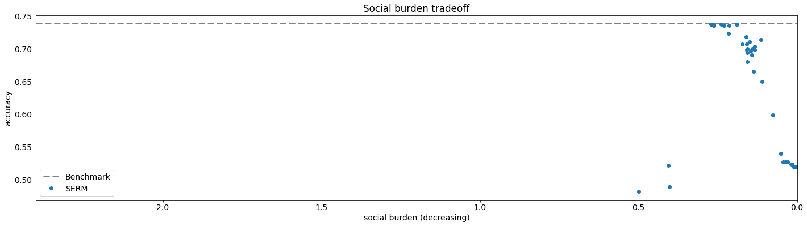

Burden¶
Imports and Definitions¶
[1]:
import os
import time
import torch
import numpy as np
import pandas as pd
import matplotlib
import matplotlib.pyplot as plt
from lib.StrategicModel import StrategicModel
from lib.SocialMeasures import Burden
from lib.CommonDefinitions import quad_cost_cvxpy_not_batched, quad_cost_torch
import DataGeneration as data
torch.set_default_dtype(torch.float64)
torch.manual_seed(0)
matplotlib.rc('font', size=14)
PATH = "./results/burden"
if not os.path.exists(PATH):
os.makedirs(PATH)
Data Loading¶
[2]:
# credit dataset
X, Y = data.load_credit_default_data()
X, Y = X[:3000], Y[:3000]
X, Y, Xval, Yval, Xtest, Ytest = data.split_validation_test(X, Y)
Training¶
[3]:
x_dim = len(X[0])
scale = 1 / x_dim
epochs = 10
batch_size = 64
lambda_range = np.logspace(start=-2, stop=0.3, num=50)
print(lambda_range)
[0.01 0.01114137 0.01241302 0.01382981 0.01540831 0.01716698
0.01912637 0.02130941 0.02374161 0.02645142 0.02947052 0.03283421
0.03658182 0.04075718 0.0454091 0.05059197 0.05636641 0.06279993
0.06996776 0.0779537 0.08685114 0.09676411 0.10780851 0.1201135
0.13382295 0.14909717 0.16611474 0.18507465 0.2061986 0.22973358
0.25595479 0.28516882 0.31771727 0.35398071 0.39438316 0.43939706
0.48954872 0.54542456 0.60767794 0.67703675 0.75431201 0.84040726
0.93632921 1.04319944 1.16226758 1.29492584 1.44272539 1.60739439
1.7908583 1.99526231]
[4]:
init_time = time.time()
results = {
"lambdas": [],
"accuracies": [],
"burdens": []
}
print(f"---------- Training the benchmark model (non-strategic) ----------")
model_name = f"benchmark"
benchmark_model = StrategicModel(x_dim, batch_size, cost_fn="quad", cost_const_kwargs={"scale": scale}, strategic=False)
benchmark_model.fit(X, Y, Xval, Yval, opt_class=torch.optim.Adam, opt_kwargs={"lr": 5e-2}, epochs=epochs,
verbose="batches", path=PATH, model_name=model_name)
results["lambdas"].append(0)
accuracy = benchmark_model.evaluate(Xtest, Ytest, strategic_data=False)
print(f"Accuracy: {accuracy}.")
results["accuracies"].append(accuracy)
burden_calculator = Burden(0, x_dim, quad_cost_cvxpy_not_batched, quad_cost_torch, {"scale": scale})
burden = burden_calculator.calc_burden(Xtest, Ytest, benchmark_model.w, benchmark_model.b, requires_grad=False).item()
print(f"Burden: {burden}.")
results["burdens"].append(burden)
pd.DataFrame(results).to_csv(f"{PATH}/results.csv")
for lamb in lambda_range:
print(f"---------- Training with lambda={lamb:.3f} ----------")
model_name = f"burden_{lamb:.3f}"
model = StrategicModel(x_dim, batch_size, cost_fn="quad", cost_const_kwargs={"scale": scale}, burden_reg=lamb, strategic=True)
model.fit(X, Y, Xval, Yval, opt_class=torch.optim.Adam, opt_kwargs={"lr": 5e-2},
epochs=epochs, verbose="batches", path=PATH, model_name=model_name)
results["lambdas"].append(lamb)
accuracy = model.evaluate(Xtest, Ytest, strategic_data=True)
print(f"Accuracy: {accuracy}.")
results["accuracies"].append(accuracy)
burden = model.social_measure_dict["burden"].calc_burden(Xtest, Ytest, model.w, model.b, requires_grad=False).item()
print(f"Burden: {burden}.")
results["burdens"].append(burden)
pd.DataFrame(results).to_csv(f"{PATH}/results.csv")
final_time = time.time()
total_time = final_time - init_time
print(f"Test took {total_time / 60} minutes ({total_time} seconds).")
---------- Training the benchmark model (non-strategic) ----------
Starting epoch 001 / 010.
Ended batch 001 / 029 | loss: 0.86251 | error: 0.39062
Ended batch 002 / 029 | loss: 1.02918 | error: 0.51562
Ended batch 003 / 029 | loss: 0.82098 | error: 0.39062
Ended batch 004 / 029 | loss: 0.99098 | error: 0.51562
Ended batch 005 / 029 | loss: 0.90791 | error: 0.50000
Ended batch 006 / 029 | loss: 0.83260 | error: 0.42188
Ended batch 007 / 029 | loss: 0.77754 | error: 0.40625
Ended batch 008 / 029 | loss: 0.93004 | error: 0.46875
Ended batch 009 / 029 | loss: 0.97520 | error: 0.53125
Ended batch 010 / 029 | loss: 0.94594 | error: 0.53125
Ended batch 011 / 029 | loss: 0.75293 | error: 0.42188
Ended batch 012 / 029 | loss: 0.65442 | error: 0.34375
Ended batch 013 / 029 | loss: 0.65739 | error: 0.29688
Ended batch 014 / 029 | loss: 0.75183 | error: 0.31250
Ended batch 015 / 029 | loss: 0.99136 | error: 0.48438
Ended batch 016 / 029 | loss: 0.78972 | error: 0.35938
Ended batch 017 / 029 | loss: 0.92255 | error: 0.40625
Ended batch 018 / 029 | loss: 0.74926 | error: 0.31250
Ended batch 019 / 029 | loss: 0.60089 | error: 0.25000
Ended batch 020 / 029 | loss: 0.83838 | error: 0.43750
Ended batch 021 / 029 | loss: 0.81336 | error: 0.37500
Ended batch 022 / 029 | loss: 0.81210 | error: 0.34375
Ended batch 023 / 029 | loss: 0.67401 | error: 0.32812
Ended batch 024 / 029 | loss: 0.63300 | error: 0.29688
Ended batch 025 / 029 | loss: 0.62030 | error: 0.25000
Ended batch 026 / 029 | loss: 0.78667 | error: 0.39062
Ended batch 027 / 029 | loss: 0.71588 | error: 0.34375
Ended batch 028 / 029 | loss: 0.75750 | error: 0.31250
Ended batch 029 / 029 | loss: 0.90141 | error: 0.50000
Finished training step, calculating validation loss and accuracy.
Ended epoch 001 / 010 | time: 000 sec | loss: 0.72318 | error: 0.32188
Model saved to ./results/burden/benchmark_model.pt.
Starting epoch 002 / 010.
Ended batch 001 / 029 | loss: 0.65930 | error: 0.26562
Ended batch 002 / 029 | loss: 0.72341 | error: 0.32812
Ended batch 003 / 029 | loss: 0.67455 | error: 0.31250
Ended batch 004 / 029 | loss: 0.49488 | error: 0.20312
Ended batch 005 / 029 | loss: 0.48904 | error: 0.17188
Ended batch 006 / 029 | loss: 0.68152 | error: 0.29688
Ended batch 007 / 029 | loss: 0.61551 | error: 0.26562
Ended batch 008 / 029 | loss: 0.77000 | error: 0.35938
Ended batch 009 / 029 | loss: 0.78705 | error: 0.39062
Ended batch 010 / 029 | loss: 0.61389 | error: 0.29688
Ended batch 011 / 029 | loss: 0.49000 | error: 0.21875
Ended batch 012 / 029 | loss: 0.56387 | error: 0.26562
Ended batch 013 / 029 | loss: 0.55337 | error: 0.25000
Ended batch 014 / 029 | loss: 0.69839 | error: 0.34375
Ended batch 015 / 029 | loss: 0.73427 | error: 0.34375
Ended batch 016 / 029 | loss: 0.67238 | error: 0.29688
Ended batch 017 / 029 | loss: 0.81194 | error: 0.39062
Ended batch 018 / 029 | loss: 0.63264 | error: 0.31250
Ended batch 019 / 029 | loss: 0.42527 | error: 0.18750
Ended batch 020 / 029 | loss: 0.77174 | error: 0.35938
Ended batch 021 / 029 | loss: 0.72317 | error: 0.34375
Ended batch 022 / 029 | loss: 0.77398 | error: 0.34375
Ended batch 023 / 029 | loss: 0.65767 | error: 0.32812
Ended batch 024 / 029 | loss: 0.56246 | error: 0.26562
Ended batch 025 / 029 | loss: 0.54801 | error: 0.25000
Ended batch 026 / 029 | loss: 0.85512 | error: 0.42188
Ended batch 027 / 029 | loss: 0.67910 | error: 0.32812
Ended batch 028 / 029 | loss: 0.67306 | error: 0.31250
Ended batch 029 / 029 | loss: 0.99483 | error: 0.50000
Finished training step, calculating validation loss and accuracy.
Ended epoch 002 / 010 | time: 000 sec | loss: 0.68839 | error: 0.32760
Starting epoch 003 / 010.
Ended batch 001 / 029 | loss: 0.60514 | error: 0.25000
Ended batch 002 / 029 | loss: 0.67208 | error: 0.32812
Ended batch 003 / 029 | loss: 0.66927 | error: 0.31250
Ended batch 004 / 029 | loss: 0.46270 | error: 0.21875
Ended batch 005 / 029 | loss: 0.42594 | error: 0.17188
Ended batch 006 / 029 | loss: 0.69459 | error: 0.32812
Ended batch 007 / 029 | loss: 0.56635 | error: 0.26562
Ended batch 008 / 029 | loss: 0.77247 | error: 0.35938
Ended batch 009 / 029 | loss: 0.79830 | error: 0.39062
Ended batch 010 / 029 | loss: 0.59520 | error: 0.29688
Ended batch 011 / 029 | loss: 0.45760 | error: 0.21875
Ended batch 012 / 029 | loss: 0.54905 | error: 0.26562
Ended batch 013 / 029 | loss: 0.54389 | error: 0.25000
Ended batch 014 / 029 | loss: 0.70896 | error: 0.35938
Ended batch 015 / 029 | loss: 0.72291 | error: 0.34375
Ended batch 016 / 029 | loss: 0.63552 | error: 0.29688
Ended batch 017 / 029 | loss: 0.80657 | error: 0.39062
Ended batch 018 / 029 | loss: 0.62759 | error: 0.31250
Ended batch 019 / 029 | loss: 0.41672 | error: 0.18750
Ended batch 020 / 029 | loss: 0.76271 | error: 0.35938
Ended batch 021 / 029 | loss: 0.71127 | error: 0.34375
Ended batch 022 / 029 | loss: 0.74378 | error: 0.34375
Ended batch 023 / 029 | loss: 0.64680 | error: 0.32812
Ended batch 024 / 029 | loss: 0.55881 | error: 0.26562
Ended batch 025 / 029 | loss: 0.53985 | error: 0.25000
Ended batch 026 / 029 | loss: 0.85932 | error: 0.42188
Ended batch 027 / 029 | loss: 0.67780 | error: 0.32812
Ended batch 028 / 029 | loss: 0.66880 | error: 0.31250
Ended batch 029 / 029 | loss: 1.00351 | error: 0.50000
Finished training step, calculating validation loss and accuracy.
Ended epoch 003 / 010 | time: 000 sec | loss: 0.68101 | error: 0.32760
Starting epoch 004 / 010.
Ended batch 001 / 029 | loss: 0.57990 | error: 0.25000
Ended batch 002 / 029 | loss: 0.66920 | error: 0.32812
Ended batch 003 / 029 | loss: 0.65721 | error: 0.31250
Ended batch 004 / 029 | loss: 0.46329 | error: 0.21875
Ended batch 005 / 029 | loss: 0.40796 | error: 0.17188
Ended batch 006 / 029 | loss: 0.70138 | error: 0.34375
Ended batch 007 / 029 | loss: 0.55560 | error: 0.26562
Ended batch 008 / 029 | loss: 0.76849 | error: 0.35938
Ended batch 009 / 029 | loss: 0.80622 | error: 0.39062
Ended batch 010 / 029 | loss: 0.60349 | error: 0.29688
Ended batch 011 / 029 | loss: 0.45195 | error: 0.21875
Ended batch 012 / 029 | loss: 0.54999 | error: 0.26562
Ended batch 013 / 029 | loss: 0.53670 | error: 0.25000
Ended batch 014 / 029 | loss: 0.70775 | error: 0.35938
Ended batch 015 / 029 | loss: 0.71634 | error: 0.34375
Ended batch 016 / 029 | loss: 0.63928 | error: 0.29688
Ended batch 017 / 029 | loss: 0.80389 | error: 0.39062
Ended batch 018 / 029 | loss: 0.62945 | error: 0.31250
Ended batch 019 / 029 | loss: 0.41034 | error: 0.18750
Ended batch 020 / 029 | loss: 0.74571 | error: 0.35938
Ended batch 021 / 029 | loss: 0.71391 | error: 0.34375
Ended batch 022 / 029 | loss: 0.73390 | error: 0.34375
Ended batch 023 / 029 | loss: 0.64968 | error: 0.32812
Ended batch 024 / 029 | loss: 0.55669 | error: 0.26562
Ended batch 025 / 029 | loss: 0.53342 | error: 0.25000
Ended batch 026 / 029 | loss: 0.85906 | error: 0.42188
Ended batch 027 / 029 | loss: 0.67472 | error: 0.32812
Ended batch 028 / 029 | loss: 0.65920 | error: 0.31250
Ended batch 029 / 029 | loss: 1.00471 | error: 0.50000
Finished training step, calculating validation loss and accuracy.
Ended epoch 004 / 010 | time: 000 sec | loss: 0.68007 | error: 0.32760
Starting epoch 005 / 010.
Ended batch 001 / 029 | loss: 0.57087 | error: 0.25000
Ended batch 002 / 029 | loss: 0.66485 | error: 0.32812
Ended batch 003 / 029 | loss: 0.65206 | error: 0.31250
Ended batch 004 / 029 | loss: 0.46063 | error: 0.21875
Ended batch 005 / 029 | loss: 0.40278 | error: 0.17188
Ended batch 006 / 029 | loss: 0.68658 | error: 0.32812
Ended batch 007 / 029 | loss: 0.54747 | error: 0.26562
Ended batch 008 / 029 | loss: 0.76237 | error: 0.35938
Ended batch 009 / 029 | loss: 0.80022 | error: 0.39062
Ended batch 010 / 029 | loss: 0.60155 | error: 0.29688
Ended batch 011 / 029 | loss: 0.44681 | error: 0.21875
Ended batch 012 / 029 | loss: 0.54910 | error: 0.26562
Ended batch 013 / 029 | loss: 0.52944 | error: 0.25000
Ended batch 014 / 029 | loss: 0.70479 | error: 0.35938
Ended batch 015 / 029 | loss: 0.71112 | error: 0.34375
Ended batch 016 / 029 | loss: 0.63442 | error: 0.29688
Ended batch 017 / 029 | loss: 0.80367 | error: 0.39062
Ended batch 018 / 029 | loss: 0.62496 | error: 0.31250
Ended batch 019 / 029 | loss: 0.39850 | error: 0.18750
Ended batch 020 / 029 | loss: 0.73378 | error: 0.35938
Ended batch 021 / 029 | loss: 0.70478 | error: 0.34375
Ended batch 022 / 029 | loss: 0.72002 | error: 0.34375
Ended batch 023 / 029 | loss: 0.65354 | error: 0.32812
Ended batch 024 / 029 | loss: 0.55079 | error: 0.26562
Ended batch 025 / 029 | loss: 0.51896 | error: 0.25000
Ended batch 026 / 029 | loss: 0.86446 | error: 0.42188
Ended batch 027 / 029 | loss: 0.67096 | error: 0.32812
Ended batch 028 / 029 | loss: 0.63798 | error: 0.31250
Ended batch 029 / 029 | loss: 1.00641 | error: 0.50000
Finished training step, calculating validation loss and accuracy.
Ended epoch 005 / 010 | time: 000 sec | loss: 0.67472 | error: 0.32917
Ending training due to 4 consecutive epochs without improvement in validation accuracy.
Total training time: 0.43674159049987793 seconds.
Model loaded from ./results/burden/benchmark_model.pt.
Accuracy: 0.7383333333333333.
Burden: 0.0029248653775334277.
---------- Training with lambda=0.010 ----------
Starting epoch 001 / 010.
Ended batch 001 / 029 | loss: 0.85074 | error: 0.39062 | burden: 0.00000
Ended batch 002 / 029 | loss: 1.02397 | error: 0.51562 | burden: 0.00000
Ended batch 003 / 029 | loss: 0.81264 | error: 0.39062 | burden: 0.00000
Ended batch 004 / 029 | loss: 0.97036 | error: 0.51562 | burden: 0.00000
Ended batch 005 / 029 | loss: 0.95632 | error: 0.50000 | burden: 0.00000
Ended batch 006 / 029 | loss: 0.82081 | error: 0.42188 | burden: 0.00000
Ended batch 007 / 029 | loss: 0.78895 | error: 0.40625 | burden: 0.00000
Ended batch 008 / 029 | loss: 0.93637 | error: 0.46875 | burden: 0.00000
Ended batch 009 / 029 | loss: 1.04222 | error: 0.53125 | burden: 0.00000
Ended batch 010 / 029 | loss: 1.04413 | error: 0.56250 | burden: 0.00000
Ended batch 011 / 029 | loss: 0.86570 | error: 0.46875 | burden: 0.00000
Ended batch 012 / 029 | loss: 0.75866 | error: 0.37500 | burden: 0.00000
Ended batch 013 / 029 | loss: 0.74726 | error: 0.37500 | burden: 0.00000
Ended batch 014 / 029 | loss: 0.87498 | error: 0.45312 | burden: 0.00000
Ended batch 015 / 029 | loss: 1.23315 | error: 0.65625 | burden: 0.00000
Ended batch 016 / 029 | loss: 0.84089 | error: 0.43750 | burden: 0.00000
Ended batch 017 / 029 | loss: 1.09413 | error: 0.57812 | burden: 0.00000
Ended batch 018 / 029 | loss: 0.95629 | error: 0.51562 | burden: 0.00000
Ended batch 019 / 029 | loss: 0.84293 | error: 0.45312 | burden: 0.00000
Ended batch 020 / 029 | loss: 1.07256 | error: 0.57812 | burden: 0.00002
Ended batch 021 / 029 | loss: 0.96628 | error: 0.51562 | burden: 0.00000
Ended batch 022 / 029 | loss: 0.97647 | error: 0.51562 | burden: 0.00101
Ended batch 023 / 029 | loss: 0.82131 | error: 0.40625 | burden: 0.00000
Ended batch 024 / 029 | loss: 0.96107 | error: 0.53125 | burden: 0.00002
Ended batch 025 / 029 | loss: 1.02936 | error: 0.57812 | burden: 0.00000
Ended batch 026 / 029 | loss: 1.06674 | error: 0.57812 | burden: 0.00001
Ended batch 027 / 029 | loss: 0.92053 | error: 0.48438 | burden: 0.00043
Ended batch 028 / 029 | loss: 0.98511 | error: 0.53125 | burden: 0.00189
Ended batch 029 / 029 | loss: 0.98099 | error: 0.50000 | burden: 0.00000
Finished training step, calculating validation loss and accuracy.
Ended epoch 001 / 010 | time: 052 sec | loss: 0.96951 | error: 0.49167 | burden: 0.00121
Model saved to ./results/burden/burden_0.010_model.pt.
Starting epoch 002 / 010.
Ended batch 001 / 029 | loss: 0.81317 | error: 0.39062 | burden: 0.00284
Ended batch 002 / 029 | loss: 0.95178 | error: 0.51562 | burden: 0.00175
Ended batch 003 / 029 | loss: 0.78486 | error: 0.39062 | burden: 0.00308
Ended batch 004 / 029 | loss: 0.92222 | error: 0.51562 | burden: 0.00024
Ended batch 005 / 029 | loss: 0.92620 | error: 0.50000 | burden: 0.00290
Ended batch 006 / 029 | loss: 0.80945 | error: 0.42188 | burden: 0.00347
Ended batch 007 / 029 | loss: 0.77587 | error: 0.40625 | burden: 0.00383
Ended batch 008 / 029 | loss: 0.91679 | error: 0.46875 | burden: 0.00290
Ended batch 009 / 029 | loss: 1.02094 | error: 0.53125 | burden: 0.00251
Ended batch 010 / 029 | loss: 1.02424 | error: 0.56250 | burden: 0.00131
Ended batch 011 / 029 | loss: 0.85179 | error: 0.46875 | burden: 0.00268
Ended batch 012 / 029 | loss: 0.75590 | error: 0.37500 | burden: 0.00463
Ended batch 013 / 029 | loss: 0.75028 | error: 0.37500 | burden: 0.00211
Ended batch 014 / 029 | loss: 0.87333 | error: 0.45312 | burden: 0.00408
Ended batch 015 / 029 | loss: 1.16323 | error: 0.65625 | burden: 0.00516
Ended batch 016 / 029 | loss: 0.84639 | error: 0.43750 | burden: 0.00533
Ended batch 017 / 029 | loss: 1.07138 | error: 0.57812 | burden: 0.01159
Ended batch 018 / 029 | loss: 0.94300 | error: 0.51562 | burden: 0.00462
Ended batch 019 / 029 | loss: 0.83736 | error: 0.45312 | burden: 0.00289
Ended batch 020 / 029 | loss: 1.05753 | error: 0.57812 | burden: 0.01110
Ended batch 021 / 029 | loss: 0.95694 | error: 0.51562 | burden: 0.00659
Ended batch 022 / 029 | loss: 0.96347 | error: 0.51562 | burden: 0.01488
Ended batch 023 / 029 | loss: 0.81525 | error: 0.40625 | burden: 0.00481
Ended batch 024 / 029 | loss: 0.94652 | error: 0.53125 | burden: 0.00720
Ended batch 025 / 029 | loss: 1.00700 | error: 0.57812 | burden: 0.00385
Ended batch 026 / 029 | loss: 1.04916 | error: 0.57812 | burden: 0.01102
Ended batch 027 / 029 | loss: 0.91766 | error: 0.48438 | burden: 0.01912
Ended batch 028 / 029 | loss: 0.96691 | error: 0.53125 | burden: 0.02189
Ended batch 029 / 029 | loss: 0.98513 | error: 0.50000 | burden: 0.00380
Finished training step, calculating validation loss and accuracy.
Ended epoch 002 / 010 | time: 058 sec | loss: 0.97814 | error: 0.49167 | burden: 0.01920
Starting epoch 003 / 010.
Ended batch 001 / 029 | loss: 0.84270 | error: 0.40625 | burden: 0.02011
Ended batch 002 / 029 | loss: 0.93525 | error: 0.48438 | burden: 0.02035
Ended batch 003 / 029 | loss: 0.83053 | error: 0.39062 | burden: 0.02384
Ended batch 004 / 029 | loss: 0.89915 | error: 0.51562 | burden: 0.00990
Ended batch 005 / 029 | loss: 0.90252 | error: 0.50000 | burden: 0.01594
Ended batch 006 / 029 | loss: 0.81972 | error: 0.40625 | burden: 0.01823
Ended batch 007 / 029 | loss: 0.78394 | error: 0.40625 | burden: 0.01974
Ended batch 008 / 029 | loss: 0.91267 | error: 0.46875 | burden: 0.01328
Ended batch 009 / 029 | loss: 1.02710 | error: 0.53125 | burden: 0.01160
Ended batch 010 / 029 | loss: 1.05686 | error: 0.56250 | burden: 0.00877
Ended batch 011 / 029 | loss: 0.86084 | error: 0.46875 | burden: 0.01109
Ended batch 012 / 029 | loss: 0.71819 | error: 0.37500 | burden: 0.01728
Ended batch 013 / 029 | loss: 0.72256 | error: 0.37500 | burden: 0.01075
Ended batch 014 / 029 | loss: 0.86463 | error: 0.45312 | burden: 0.02225
Ended batch 015 / 029 | loss: 1.15955 | error: 0.65625 | burden: 0.02270
Ended batch 016 / 029 | loss: 0.84912 | error: 0.43750 | burden: 0.02341
Ended batch 017 / 029 | loss: 1.05386 | error: 0.57812 | burden: 0.04302
Ended batch 018 / 029 | loss: 0.93309 | error: 0.51562 | burden: 0.03038
Ended batch 019 / 029 | loss: 0.84517 | error: 0.45312 | burden: 0.02015
Ended batch 020 / 029 | loss: 1.02037 | error: 0.56250 | burden: 0.05358
Ended batch 021 / 029 | loss: 0.93818 | error: 0.48438 | burden: 0.04525
Ended batch 022 / 029 | loss: 0.94828 | error: 0.50000 | burden: 0.06730
Ended batch 023 / 029 | loss: 0.87241 | error: 0.37500 | burden: 0.05131
Ended batch 024 / 029 | loss: 0.91370 | error: 0.43750 | burden: 0.05514
Ended batch 025 / 029 | loss: 0.94270 | error: 0.43750 | burden: 0.05408
Ended batch 026 / 029 | loss: 0.99093 | error: 0.48438 | burden: 0.08773
Ended batch 027 / 029 | loss: 0.92286 | error: 0.32812 | burden: 0.13033
Ended batch 028 / 029 | loss: 0.93489 | error: 0.35938 | burden: 0.13942
Ended batch 029 / 029 | loss: 0.98424 | error: 0.50000 | burden: 0.10529
Finished training step, calculating validation loss and accuracy.
Ended epoch 003 / 010 | time: 060 sec | loss: 0.84710 | error: 0.35521 | burden: 0.14838
Validation accuracy improved.
Model saved to ./results/burden/burden_0.010_model.pt.
Starting epoch 004 / 010.
Ended batch 001 / 029 | loss: 0.92436 | error: 0.25000 | burden: 0.13044
Ended batch 002 / 029 | loss: 0.91830 | error: 0.32812 | burden: 0.12676
Ended batch 003 / 029 | loss: 0.88824 | error: 0.28125 | burden: 0.11062
Ended batch 004 / 029 | loss: 0.87720 | error: 0.42188 | burden: 0.06464
Ended batch 005 / 029 | loss: 0.89533 | error: 0.48438 | burden: 0.06776
Ended batch 006 / 029 | loss: 0.82602 | error: 0.40625 | burden: 0.06113
Ended batch 007 / 029 | loss: 0.79310 | error: 0.40625 | burden: 0.06003
Ended batch 008 / 029 | loss: 0.91216 | error: 0.46875 | burden: 0.04534
Ended batch 009 / 029 | loss: 1.02902 | error: 0.53125 | burden: 0.03868
Ended batch 010 / 029 | loss: 1.07156 | error: 0.56250 | burden: 0.03510
Ended batch 011 / 029 | loss: 0.87382 | error: 0.46875 | burden: 0.04031
Ended batch 012 / 029 | loss: 0.71836 | error: 0.37500 | burden: 0.05466
Ended batch 013 / 029 | loss: 0.71828 | error: 0.37500 | burden: 0.04264
Ended batch 014 / 029 | loss: 0.86236 | error: 0.45312 | burden: 0.07071
Ended batch 015 / 029 | loss: 1.16239 | error: 0.65625 | burden: 0.06745
Ended batch 016 / 029 | loss: 0.85158 | error: 0.43750 | burden: 0.07799
Ended batch 017 / 029 | loss: 1.04708 | error: 0.57812 | burden: 0.12031
Ended batch 018 / 029 | loss: 0.92444 | error: 0.51562 | burden: 0.10471
Ended batch 019 / 029 | loss: 0.84358 | error: 0.43750 | burden: 0.09688
Ended batch 020 / 029 | loss: 0.99260 | error: 0.54688 | burden: 0.16798
Ended batch 021 / 029 | loss: 0.91776 | error: 0.39062 | burden: 0.17023
Ended batch 022 / 029 | loss: 0.92893 | error: 0.39062 | burden: 0.22174
Ended batch 023 / 029 | loss: 0.90713 | error: 0.31250 | burden: 0.20585
Ended batch 024 / 029 | loss: 0.87173 | error: 0.26562 | burden: 0.21225
Ended batch 025 / 029 | loss: 0.88162 | error: 0.25000 | burden: 0.22225
Ended batch 026 / 029 | loss: 0.94156 | error: 0.42188 | burden: 0.30039
Ended batch 027 / 029 | loss: 0.91281 | error: 0.35938 | burden: 0.37946
Ended batch 028 / 029 | loss: 0.89561 | error: 0.43750 | burden: 0.39939
Ended batch 029 / 029 | loss: 0.99205 | error: 0.50000 | burden: 0.34801
Finished training step, calculating validation loss and accuracy.
Ended epoch 004 / 010 | time: 064 sec | loss: 0.89968 | error: 0.43281 | burden: 0.41961
Starting epoch 005 / 010.
Ended batch 001 / 029 | loss: 0.97659 | error: 0.60938 | burden: 0.36038
Ended batch 002 / 029 | loss: 0.87940 | error: 0.45312 | burden: 0.32264
Ended batch 003 / 029 | loss: 0.91279 | error: 0.31250 | burden: 0.26317
Ended batch 004 / 029 | loss: 0.84375 | error: 0.23438 | burden: 0.17349
Ended batch 005 / 029 | loss: 0.87847 | error: 0.50000 | burden: 0.16508
Ended batch 006 / 029 | loss: 0.81863 | error: 0.39062 | burden: 0.14503
Ended batch 007 / 029 | loss: 0.79519 | error: 0.40625 | burden: 0.13616
Ended batch 008 / 029 | loss: 0.91245 | error: 0.46875 | burden: 0.10806
Ended batch 009 / 029 | loss: 1.02564 | error: 0.53125 | burden: 0.09485
Ended batch 010 / 029 | loss: 1.07066 | error: 0.56250 | burden: 0.09076
Ended batch 011 / 029 | loss: 0.87786 | error: 0.46875 | burden: 0.09712
Ended batch 012 / 029 | loss: 0.71792 | error: 0.37500 | burden: 0.12015
Ended batch 013 / 029 | loss: 0.71595 | error: 0.37500 | burden: 0.10692
Ended batch 014 / 029 | loss: 0.86300 | error: 0.45312 | burden: 0.15528
Ended batch 015 / 029 | loss: 1.16631 | error: 0.65625 | burden: 0.15421
Ended batch 016 / 029 | loss: 0.85154 | error: 0.43750 | burden: 0.17552
Ended batch 017 / 029 | loss: 1.04179 | error: 0.57812 | burden: 0.24620
Ended batch 018 / 029 | loss: 0.91545 | error: 0.50000 | burden: 0.23815
Ended batch 019 / 029 | loss: 0.83433 | error: 0.39062 | burden: 0.23948
Ended batch 020 / 029 | loss: 0.95210 | error: 0.46875 | burden: 0.36330
Ended batch 021 / 029 | loss: 0.87271 | error: 0.35938 | burden: 0.38856
Ended batch 022 / 029 | loss: 0.89353 | error: 0.34375 | burden: 0.47382
Ended batch 023 / 029 | loss: 0.92143 | error: 0.43750 | burden: 0.44542
Ended batch 024 / 029 | loss: 0.79744 | error: 0.29688 | burden: 0.42338
Ended batch 025 / 029 | loss: 0.77513 | error: 0.21875 | burden: 0.40882
Ended batch 026 / 029 | loss: 0.88899 | error: 0.40625 | burden: 0.47714
Ended batch 027 / 029 | loss: 0.87191 | error: 0.46875 | burden: 0.52489
Ended batch 028 / 029 | loss: 0.84747 | error: 0.39062 | burden: 0.48396
Ended batch 029 / 029 | loss: 1.00187 | error: 0.62500 | burden: 0.38812
Finished training step, calculating validation loss and accuracy.
Ended epoch 005 / 010 | time: 058 sec | loss: 1.13764 | error: 0.50833 | burden: 0.45661
Starting epoch 006 / 010.
Ended batch 001 / 029 | loss: 0.89104 | error: 0.25000 | burden: 0.38434
Ended batch 002 / 029 | loss: 0.84471 | error: 0.32812 | burden: 0.33907
Ended batch 003 / 029 | loss: 0.84273 | error: 0.28125 | burden: 0.30562
Ended batch 004 / 029 | loss: 0.84937 | error: 0.43750 | burden: 0.22307
Ended batch 005 / 029 | loss: 0.88522 | error: 0.50000 | burden: 0.22842
Ended batch 006 / 029 | loss: 0.79649 | error: 0.39062 | burden: 0.22410
Ended batch 007 / 029 | loss: 0.78387 | error: 0.40625 | burden: 0.20549
Ended batch 008 / 029 | loss: 0.91571 | error: 0.46875 | burden: 0.17314
Ended batch 009 / 029 | loss: 1.02857 | error: 0.53125 | burden: 0.15851
Ended batch 010 / 029 | loss: 1.05962 | error: 0.56250 | burden: 0.15267
Ended batch 011 / 029 | loss: 0.87173 | error: 0.46875 | burden: 0.15174
Ended batch 012 / 029 | loss: 0.71703 | error: 0.37500 | burden: 0.18577
Ended batch 013 / 029 | loss: 0.71352 | error: 0.37500 | burden: 0.16850
Ended batch 014 / 029 | loss: 0.86614 | error: 0.45312 | burden: 0.23306
Ended batch 015 / 029 | loss: 1.15496 | error: 0.64062 | burden: 0.22983
Ended batch 016 / 029 | loss: 0.84637 | error: 0.43750 | burden: 0.24863
Ended batch 017 / 029 | loss: 1.03231 | error: 0.56250 | burden: 0.32745
Ended batch 018 / 029 | loss: 0.92267 | error: 0.51562 | burden: 0.32198
Ended batch 019 / 029 | loss: 0.81517 | error: 0.42188 | burden: 0.31360
Ended batch 020 / 029 | loss: 0.95870 | error: 0.50000 | burden: 0.44659
Ended batch 021 / 029 | loss: 0.85873 | error: 0.35938 | burden: 0.46737
Ended batch 022 / 029 | loss: 0.88881 | error: 0.34375 | burden: 0.54555
Ended batch 023 / 029 | loss: 0.87480 | error: 0.32812 | burden: 0.49569
Ended batch 024 / 029 | loss: 0.75059 | error: 0.26562 | burden: 0.45367
Ended batch 025 / 029 | loss: 0.75362 | error: 0.25000 | burden: 0.40519
Ended batch 026 / 029 | loss: 0.92996 | error: 0.42188 | burden: 0.44737
Ended batch 027 / 029 | loss: 0.84145 | error: 0.34375 | burden: 0.47582
Ended batch 028 / 029 | loss: 0.83843 | error: 0.34375 | burden: 0.42385
Ended batch 029 / 029 | loss: 0.98680 | error: 0.50000 | burden: 0.31960
Finished training step, calculating validation loss and accuracy.
Ended epoch 006 / 010 | time: 068 sec | loss: 1.23217 | error: 0.50833 | burden: 0.40028
Starting epoch 007 / 010.
Ended batch 001 / 029 | loss: 0.82407 | error: 0.32812 | burden: 0.34649
Ended batch 002 / 029 | loss: 0.87075 | error: 0.40625 | burden: 0.33067
Ended batch 003 / 029 | loss: 0.78440 | error: 0.35938 | burden: 0.31450
Ended batch 004 / 029 | loss: 0.85844 | error: 0.48438 | burden: 0.23665
Ended batch 005 / 029 | loss: 0.87417 | error: 0.48438 | burden: 0.23478
Ended batch 006 / 029 | loss: 0.77589 | error: 0.39062 | burden: 0.22965
Ended batch 007 / 029 | loss: 0.77713 | error: 0.40625 | burden: 0.22450
Ended batch 008 / 029 | loss: 0.91556 | error: 0.46875 | burden: 0.19032
Ended batch 009 / 029 | loss: 1.03459 | error: 0.53125 | burden: 0.18245
Ended batch 010 / 029 | loss: 1.03721 | error: 0.54688 | burden: 0.18590
Ended batch 011 / 029 | loss: 0.84029 | error: 0.45312 | burden: 0.18815
Ended batch 012 / 029 | loss: 0.71659 | error: 0.37500 | burden: 0.21860
Ended batch 013 / 029 | loss: 0.69784 | error: 0.35938 | burden: 0.19962
Ended batch 014 / 029 | loss: 0.86696 | error: 0.45312 | burden: 0.26010
Ended batch 015 / 029 | loss: 1.15181 | error: 0.64062 | burden: 0.25543
Ended batch 016 / 029 | loss: 0.84633 | error: 0.43750 | burden: 0.26661
Ended batch 017 / 029 | loss: 1.03563 | error: 0.56250 | burden: 0.34129
Ended batch 018 / 029 | loss: 0.89166 | error: 0.48438 | burden: 0.32545
Ended batch 019 / 029 | loss: 0.79900 | error: 0.42188 | burden: 0.30256
Ended batch 020 / 029 | loss: 0.98317 | error: 0.54688 | burden: 0.41619
Ended batch 021 / 029 | loss: 0.86508 | error: 0.40625 | burden: 0.41664
Ended batch 022 / 029 | loss: 0.89416 | error: 0.37500 | burden: 0.47032
Ended batch 023 / 029 | loss: 0.81812 | error: 0.31250 | burden: 0.43404
Ended batch 024 / 029 | loss: 0.81859 | error: 0.28125 | burden: 0.42570
Ended batch 025 / 029 | loss: 0.76387 | error: 0.31250 | burden: 0.40910
Ended batch 026 / 029 | loss: 0.92878 | error: 0.40625 | burden: 0.46933
Ended batch 027 / 029 | loss: 0.83880 | error: 0.34375 | burden: 0.52405
Ended batch 028 / 029 | loss: 0.85124 | error: 0.31250 | burden: 0.47997
Ended batch 029 / 029 | loss: 0.98933 | error: 0.50000 | burden: 0.38185
Finished training step, calculating validation loss and accuracy.
Ended epoch 007 / 010 | time: 068 sec | loss: 1.27176 | error: 0.50833 | burden: 0.45905
Ending training due to 4 consecutive epochs without improvement in validation accuracy.
Total training time: 7.149631071090698 minutes (428.9778642654419 seconds).
Model loaded from ./results/burden/burden_0.010_model.pt.
Accuracy: 0.665.
Burden: 0.13799910585884867.
---------- Training with lambda=0.011 ----------
Starting epoch 001 / 010.
Ended batch 001 / 029 | loss: 0.83977 | error: 0.39062 | burden: 0.03184
Ended batch 002 / 029 | loss: 0.98487 | error: 0.51562 | burden: 0.02443
Ended batch 003 / 029 | loss: 0.83140 | error: 0.39062 | burden: 0.02024
Ended batch 004 / 029 | loss: 0.98529 | error: 0.51562 | burden: 0.00980
Ended batch 005 / 029 | loss: 0.97410 | error: 0.50000 | burden: 0.02137
Ended batch 006 / 029 | loss: 0.84058 | error: 0.42188 | burden: 0.01375
Ended batch 007 / 029 | loss: 0.80636 | error: 0.40625 | burden: 0.01777
Ended batch 008 / 029 | loss: 0.95682 | error: 0.46875 | burden: 0.01429
Ended batch 009 / 029 | loss: 1.04423 | error: 0.53125 | burden: 0.01157
Ended batch 010 / 029 | loss: 1.04696 | error: 0.56250 | burden: 0.01127
Ended batch 011 / 029 | loss: 0.87001 | error: 0.46875 | burden: 0.02179
Ended batch 012 / 029 | loss: 0.76296 | error: 0.37500 | burden: 0.02429
Ended batch 013 / 029 | loss: 0.76647 | error: 0.37500 | burden: 0.01752
Ended batch 014 / 029 | loss: 0.86565 | error: 0.45312 | burden: 0.02279
Ended batch 015 / 029 | loss: 1.19619 | error: 0.65625 | burden: 0.02489
Ended batch 016 / 029 | loss: 0.84950 | error: 0.43750 | burden: 0.02357
Ended batch 017 / 029 | loss: 1.08256 | error: 0.57812 | burden: 0.04049
Ended batch 018 / 029 | loss: 0.94340 | error: 0.51562 | burden: 0.02969
Ended batch 019 / 029 | loss: 0.83608 | error: 0.45312 | burden: 0.01981
Ended batch 020 / 029 | loss: 1.04993 | error: 0.57812 | burden: 0.04904
Ended batch 021 / 029 | loss: 0.95068 | error: 0.51562 | burden: 0.04205
Ended batch 022 / 029 | loss: 0.95714 | error: 0.50000 | burden: 0.06429
Ended batch 023 / 029 | loss: 0.83554 | error: 0.40625 | burden: 0.04727
Ended batch 024 / 029 | loss: 0.92197 | error: 0.51562 | burden: 0.05194
Ended batch 025 / 029 | loss: 0.96496 | error: 0.57812 | burden: 0.05197
Ended batch 026 / 029 | loss: 1.00959 | error: 0.56250 | burden: 0.08330
Ended batch 027 / 029 | loss: 0.91245 | error: 0.35938 | burden: 0.13077
Ended batch 028 / 029 | loss: 0.93860 | error: 0.42188 | burden: 0.15036
Ended batch 029 / 029 | loss: 0.98987 | error: 0.50000 | burden: 0.13230
Finished training step, calculating validation loss and accuracy.
Ended epoch 001 / 010 | time: 064 sec | loss: 0.80223 | error: 0.32604 | burden: 0.17081
Model saved to ./results/burden/burden_0.011_model.pt.
Starting epoch 002 / 010.
Ended batch 001 / 029 | loss: 0.92272 | error: 0.26562 | burden: 0.16445
Ended batch 002 / 029 | loss: 0.91052 | error: 0.32812 | burden: 0.15956
Ended batch 003 / 029 | loss: 0.90076 | error: 0.28125 | burden: 0.14485
Ended batch 004 / 029 | loss: 0.86832 | error: 0.31250 | burden: 0.09173
Ended batch 005 / 029 | loss: 0.89536 | error: 0.51562 | burden: 0.10255
Ended batch 006 / 029 | loss: 0.85364 | error: 0.39062 | burden: 0.09487
Ended batch 007 / 029 | loss: 0.80513 | error: 0.40625 | burden: 0.08149
Ended batch 008 / 029 | loss: 0.91382 | error: 0.46875 | burden: 0.06459
Ended batch 009 / 029 | loss: 1.01819 | error: 0.53125 | burden: 0.05203
Ended batch 010 / 029 | loss: 1.05001 | error: 0.56250 | burden: 0.04463
Ended batch 011 / 029 | loss: 0.87342 | error: 0.46875 | burden: 0.04423
Ended batch 012 / 029 | loss: 0.71932 | error: 0.37500 | burden: 0.06107
Ended batch 013 / 029 | loss: 0.71330 | error: 0.37500 | burden: 0.04781
Ended batch 014 / 029 | loss: 0.86576 | error: 0.45312 | burden: 0.08530
Ended batch 015 / 029 | loss: 1.17414 | error: 0.65625 | burden: 0.08005
Ended batch 016 / 029 | loss: 0.85164 | error: 0.43750 | burden: 0.09956
Ended batch 017 / 029 | loss: 1.04407 | error: 0.57812 | burden: 0.15208
Ended batch 018 / 029 | loss: 0.92265 | error: 0.51562 | burden: 0.14526
Ended batch 019 / 029 | loss: 0.84343 | error: 0.39062 | burden: 0.14609
Ended batch 020 / 029 | loss: 0.96309 | error: 0.46875 | burden: 0.24209
Ended batch 021 / 029 | loss: 0.90756 | error: 0.37500 | burden: 0.26706
Ended batch 022 / 029 | loss: 0.91140 | error: 0.34375 | burden: 0.34384
Ended batch 023 / 029 | loss: 0.94163 | error: 0.35938 | burden: 0.32455
Ended batch 024 / 029 | loss: 0.85171 | error: 0.28125 | burden: 0.32921
Ended batch 025 / 029 | loss: 0.83158 | error: 0.35938 | burden: 0.33623
Ended batch 026 / 029 | loss: 0.90589 | error: 0.42188 | burden: 0.42504
Ended batch 027 / 029 | loss: 0.90948 | error: 0.51562 | burden: 0.49050
Ended batch 028 / 029 | loss: 0.87084 | error: 0.46875 | burden: 0.48479
Ended batch 029 / 029 | loss: 0.99105 | error: 0.50000 | burden: 0.40903
Finished training step, calculating validation loss and accuracy.
Ended epoch 002 / 010 | time: 058 sec | loss: 1.02839 | error: 0.50677 | burden: 0.48470
Starting epoch 003 / 010.
Ended batch 001 / 029 | loss: 0.97086 | error: 0.62500 | burden: 0.40440
Ended batch 002 / 029 | loss: 0.85561 | error: 0.40625 | burden: 0.35699
Ended batch 003 / 029 | loss: 0.88602 | error: 0.31250 | burden: 0.29821
Ended batch 004 / 029 | loss: 0.83704 | error: 0.29688 | burden: 0.20250
Ended batch 005 / 029 | loss: 0.87448 | error: 0.48438 | burden: 0.19579
Ended batch 006 / 029 | loss: 0.81646 | error: 0.39062 | burden: 0.17869
Ended batch 007 / 029 | loss: 0.79547 | error: 0.40625 | burden: 0.17173
Ended batch 008 / 029 | loss: 0.91657 | error: 0.46875 | burden: 0.13848
Ended batch 009 / 029 | loss: 1.02061 | error: 0.53125 | burden: 0.12122
Ended batch 010 / 029 | loss: 1.06403 | error: 0.56250 | burden: 0.11649
Ended batch 011 / 029 | loss: 0.87613 | error: 0.46875 | burden: 0.12229
Ended batch 012 / 029 | loss: 0.71781 | error: 0.37500 | burden: 0.14677
Ended batch 013 / 029 | loss: 0.71481 | error: 0.37500 | burden: 0.13555
Ended batch 014 / 029 | loss: 0.86239 | error: 0.45312 | burden: 0.19102
Ended batch 015 / 029 | loss: 1.15178 | error: 0.64062 | burden: 0.19490
Ended batch 016 / 029 | loss: 0.85020 | error: 0.43750 | burden: 0.21592
Ended batch 017 / 029 | loss: 1.04450 | error: 0.57812 | burden: 0.29474
Ended batch 018 / 029 | loss: 0.91573 | error: 0.50000 | burden: 0.28807
Ended batch 019 / 029 | loss: 0.83075 | error: 0.39062 | burden: 0.29098
Ended batch 020 / 029 | loss: 0.95110 | error: 0.46875 | burden: 0.43111
Ended batch 021 / 029 | loss: 0.85193 | error: 0.35938 | burden: 0.46001
Ended batch 022 / 029 | loss: 0.88828 | error: 0.34375 | burden: 0.54244
Ended batch 023 / 029 | loss: 0.90677 | error: 0.40625 | burden: 0.49452
Ended batch 024 / 029 | loss: 0.77293 | error: 0.23438 | burden: 0.45059
Ended batch 025 / 029 | loss: 0.75051 | error: 0.23438 | burden: 0.40313
Ended batch 026 / 029 | loss: 0.90924 | error: 0.42188 | burden: 0.43844
Ended batch 027 / 029 | loss: 0.84236 | error: 0.32812 | burden: 0.46612
Ended batch 028 / 029 | loss: 0.85944 | error: 0.31250 | burden: 0.43167
Ended batch 029 / 029 | loss: 0.99707 | error: 0.50000 | burden: 0.34264
Finished training step, calculating validation loss and accuracy.
Ended epoch 003 / 010 | time: 063 sec | loss: 1.19457 | error: 0.50833 | burden: 0.41430
Starting epoch 004 / 010.
Ended batch 001 / 029 | loss: 0.85792 | error: 0.29688 | burden: 0.36976
Ended batch 002 / 029 | loss: 0.87204 | error: 0.34375 | burden: 0.34477
Ended batch 003 / 029 | loss: 0.83923 | error: 0.32812 | burden: 0.33081
Ended batch 004 / 029 | loss: 0.84583 | error: 0.45312 | burden: 0.26207
Ended batch 005 / 029 | loss: 0.87014 | error: 0.48438 | burden: 0.26759
Ended batch 006 / 029 | loss: 0.80569 | error: 0.39062 | burden: 0.27146
Ended batch 007 / 029 | loss: 0.79269 | error: 0.40625 | burden: 0.24992
Ended batch 008 / 029 | loss: 0.91547 | error: 0.46875 | burden: 0.21133
Ended batch 009 / 029 | loss: 1.01179 | error: 0.53125 | burden: 0.19246
Ended batch 010 / 029 | loss: 1.01291 | error: 0.54688 | burden: 0.18200
Ended batch 011 / 029 | loss: 0.83594 | error: 0.45312 | burden: 0.17177
Ended batch 012 / 029 | loss: 0.71655 | error: 0.37500 | burden: 0.19686
Ended batch 013 / 029 | loss: 0.69054 | error: 0.35938 | burden: 0.17266
Ended batch 014 / 029 | loss: 0.86766 | error: 0.45312 | burden: 0.23128
Ended batch 015 / 029 | loss: 1.17960 | error: 0.64062 | burden: 0.22282
Ended batch 016 / 029 | loss: 0.84285 | error: 0.43750 | burden: 0.24092
Ended batch 017 / 029 | loss: 1.04765 | error: 0.56250 | burden: 0.31379
Ended batch 018 / 029 | loss: 0.91608 | error: 0.50000 | burden: 0.29959
Ended batch 019 / 029 | loss: 0.79769 | error: 0.42188 | burden: 0.28421
Ended batch 020 / 029 | loss: 0.99051 | error: 0.54688 | burden: 0.39353
Ended batch 021 / 029 | loss: 0.86836 | error: 0.45312 | burden: 0.39732
Ended batch 022 / 029 | loss: 0.89547 | error: 0.42188 | burden: 0.45346
Ended batch 023 / 029 | loss: 0.80764 | error: 0.28125 | burden: 0.41862
Ended batch 024 / 029 | loss: 0.82357 | error: 0.29688 | burden: 0.41624
Ended batch 025 / 029 | loss: 0.76682 | error: 0.32812 | burden: 0.40288
Ended batch 026 / 029 | loss: 0.94095 | error: 0.40625 | burden: 0.47117
Ended batch 027 / 029 | loss: 0.83855 | error: 0.34375 | burden: 0.52836
Ended batch 028 / 029 | loss: 0.85192 | error: 0.31250 | burden: 0.48610
Ended batch 029 / 029 | loss: 0.98974 | error: 0.50000 | burden: 0.38705
Finished training step, calculating validation loss and accuracy.
Ended epoch 004 / 010 | time: 068 sec | loss: 1.26885 | error: 0.50677 | burden: 0.46663
Starting epoch 005 / 010.
Ended batch 001 / 029 | loss: 0.84246 | error: 0.26562 | burden: 0.40720
Ended batch 002 / 029 | loss: 0.81180 | error: 0.32812 | burden: 0.37507
Ended batch 003 / 029 | loss: 0.80805 | error: 0.31250 | burden: 0.34436
Ended batch 004 / 029 | loss: 0.83123 | error: 0.46875 | burden: 0.24970
Ended batch 005 / 029 | loss: 0.87092 | error: 0.48438 | burden: 0.24461
Ended batch 006 / 029 | loss: 0.77807 | error: 0.39062 | burden: 0.23229
Ended batch 007 / 029 | loss: 0.77767 | error: 0.40625 | burden: 0.22351
Ended batch 008 / 029 | loss: 0.91846 | error: 0.46875 | burden: 0.18863
Ended batch 009 / 029 | loss: 1.04009 | error: 0.53125 | burden: 0.17788
Ended batch 010 / 029 | loss: 1.04541 | error: 0.54688 | burden: 0.17907
Ended batch 011 / 029 | loss: 0.84737 | error: 0.45312 | burden: 0.18246
Ended batch 012 / 029 | loss: 0.71651 | error: 0.37500 | burden: 0.21421
Ended batch 013 / 029 | loss: 0.69582 | error: 0.35938 | burden: 0.19790
Ended batch 014 / 029 | loss: 0.86673 | error: 0.45312 | burden: 0.26036
Ended batch 015 / 029 | loss: 1.15103 | error: 0.64062 | burden: 0.25928
Ended batch 016 / 029 | loss: 0.84736 | error: 0.43750 | burden: 0.27206
Ended batch 017 / 029 | loss: 1.03244 | error: 0.56250 | burden: 0.34926
Ended batch 018 / 029 | loss: 0.89006 | error: 0.48438 | burden: 0.33753
Ended batch 019 / 029 | loss: 0.76583 | error: 0.39062 | burden: 0.31101
Ended batch 020 / 029 | loss: 0.97902 | error: 0.54688 | burden: 0.42648
Ended batch 021 / 029 | loss: 0.86376 | error: 0.37500 | burden: 0.42419
Ended batch 022 / 029 | loss: 0.89410 | error: 0.39062 | burden: 0.47509
Ended batch 023 / 029 | loss: 0.82308 | error: 0.31250 | burden: 0.43791
Ended batch 024 / 029 | loss: 0.81944 | error: 0.28125 | burden: 0.42745
Ended batch 025 / 029 | loss: 0.76548 | error: 0.28125 | burden: 0.40941
Ended batch 026 / 029 | loss: 0.94591 | error: 0.40625 | burden: 0.47280
Ended batch 027 / 029 | loss: 0.83877 | error: 0.34375 | burden: 0.52427
Ended batch 028 / 029 | loss: 0.84840 | error: 0.31250 | burden: 0.48163
Ended batch 029 / 029 | loss: 0.99111 | error: 0.50000 | burden: 0.38333
Finished training step, calculating validation loss and accuracy.
Ended epoch 005 / 010 | time: 071 sec | loss: 1.27597 | error: 0.50833 | burden: 0.46428
Ending training due to 4 consecutive epochs without improvement in validation accuracy.
Total training time: 5.385980439186096 minutes (323.15882635116577 seconds).
Model loaded from ./results/burden/burden_0.011_model.pt.
Accuracy: 0.6983333333333334.
Burden: 0.1593809677620974.
---------- Training with lambda=0.012 ----------
Starting epoch 001 / 010.
Ended batch 001 / 029 | loss: 0.81298 | error: 0.39062 | burden: 0.00000
Ended batch 002 / 029 | loss: 1.12522 | error: 0.51562 | burden: 0.00000
Ended batch 003 / 029 | loss: 0.79046 | error: 0.39062 | burden: 0.00000
Ended batch 004 / 029 | loss: 1.02243 | error: 0.51562 | burden: 0.00004
Ended batch 005 / 029 | loss: 0.96425 | error: 0.50000 | burden: 0.00016
Ended batch 006 / 029 | loss: 0.88053 | error: 0.42188 | burden: 0.00076
Ended batch 007 / 029 | loss: 0.85122 | error: 0.40625 | burden: 0.00186
Ended batch 008 / 029 | loss: 0.93498 | error: 0.46875 | burden: 0.00233
Ended batch 009 / 029 | loss: 1.00991 | error: 0.53125 | burden: 0.00158
Ended batch 010 / 029 | loss: 1.04747 | error: 0.56250 | burden: 0.00078
Ended batch 011 / 029 | loss: 0.86689 | error: 0.46875 | burden: 0.00245
Ended batch 012 / 029 | loss: 0.71946 | error: 0.37500 | burden: 0.00423
Ended batch 013 / 029 | loss: 0.71349 | error: 0.37500 | burden: 0.00181
Ended batch 014 / 029 | loss: 0.86387 | error: 0.45312 | burden: 0.00410
Ended batch 015 / 029 | loss: 1.19539 | error: 0.65625 | burden: 0.00595
Ended batch 016 / 029 | loss: 0.84513 | error: 0.43750 | burden: 0.00675
Ended batch 017 / 029 | loss: 1.06267 | error: 0.57812 | burden: 0.01518
Ended batch 018 / 029 | loss: 0.94064 | error: 0.51562 | burden: 0.00812
Ended batch 019 / 029 | loss: 0.85136 | error: 0.45312 | burden: 0.00453
Ended batch 020 / 029 | loss: 1.02436 | error: 0.57812 | burden: 0.01996
Ended batch 021 / 029 | loss: 0.94574 | error: 0.51562 | burden: 0.01376
Ended batch 022 / 029 | loss: 0.95495 | error: 0.51562 | burden: 0.02816
Ended batch 023 / 029 | loss: 0.87944 | error: 0.40625 | burden: 0.01461
Ended batch 024 / 029 | loss: 0.92882 | error: 0.46875 | burden: 0.01693
Ended batch 025 / 029 | loss: 0.96360 | error: 0.54688 | burden: 0.01410
Ended batch 026 / 029 | loss: 1.00559 | error: 0.56250 | burden: 0.03104
Ended batch 027 / 029 | loss: 0.92904 | error: 0.39062 | burden: 0.05333
Ended batch 028 / 029 | loss: 0.95030 | error: 0.39062 | burden: 0.05982
Ended batch 029 / 029 | loss: 0.98134 | error: 0.50000 | burden: 0.03843
Finished training step, calculating validation loss and accuracy.
Ended epoch 001 / 010 | time: 061 sec | loss: 0.97465 | error: 0.48125 | burden: 0.06194
Model saved to ./results/burden/burden_0.012_model.pt.
Starting epoch 002 / 010.
Ended batch 001 / 029 | loss: 0.90688 | error: 0.34375 | burden: 0.05598
Ended batch 002 / 029 | loss: 0.92910 | error: 0.35938 | burden: 0.05320
Ended batch 003 / 029 | loss: 0.87207 | error: 0.32812 | burden: 0.05182
Ended batch 004 / 029 | loss: 0.89310 | error: 0.46875 | burden: 0.02438
Ended batch 005 / 029 | loss: 0.90990 | error: 0.50000 | burden: 0.03238
Ended batch 006 / 029 | loss: 0.82502 | error: 0.40625 | burden: 0.03104
Ended batch 007 / 029 | loss: 0.78630 | error: 0.40625 | burden: 0.03181
Ended batch 008 / 029 | loss: 0.91228 | error: 0.46875 | burden: 0.02200
Ended batch 009 / 029 | loss: 1.03855 | error: 0.53125 | burden: 0.01926
Ended batch 010 / 029 | loss: 1.07295 | error: 0.56250 | burden: 0.01613
Ended batch 011 / 029 | loss: 0.87366 | error: 0.46875 | burden: 0.01955
Ended batch 012 / 029 | loss: 0.71492 | error: 0.37500 | burden: 0.02867
Ended batch 013 / 029 | loss: 0.71920 | error: 0.37500 | burden: 0.02196
Ended batch 014 / 029 | loss: 0.86278 | error: 0.45312 | burden: 0.04056
Ended batch 015 / 029 | loss: 1.15938 | error: 0.65625 | burden: 0.04056
Ended batch 016 / 029 | loss: 0.85416 | error: 0.43750 | burden: 0.04704
Ended batch 017 / 029 | loss: 1.04564 | error: 0.57812 | burden: 0.07942
Ended batch 018 / 029 | loss: 0.92400 | error: 0.51562 | burden: 0.06575
Ended batch 019 / 029 | loss: 0.84819 | error: 0.45312 | burden: 0.05758
Ended batch 020 / 029 | loss: 0.99432 | error: 0.54688 | burden: 0.11286
Ended batch 021 / 029 | loss: 0.92617 | error: 0.40625 | burden: 0.11108
Ended batch 022 / 029 | loss: 0.93906 | error: 0.42188 | burden: 0.15242
Ended batch 023 / 029 | loss: 0.90484 | error: 0.28125 | burden: 0.13279
Ended batch 024 / 029 | loss: 0.89117 | error: 0.28125 | burden: 0.13852
Ended batch 025 / 029 | loss: 0.90433 | error: 0.29688 | burden: 0.14221
Ended batch 026 / 029 | loss: 0.95716 | error: 0.42188 | burden: 0.19580
Ended batch 027 / 029 | loss: 0.92414 | error: 0.32812 | burden: 0.25909
Ended batch 028 / 029 | loss: 0.91767 | error: 0.32812 | burden: 0.27165
Ended batch 029 / 029 | loss: 0.99085 | error: 0.50000 | burden: 0.22896
Finished training step, calculating validation loss and accuracy.
Ended epoch 002 / 010 | time: 058 sec | loss: 0.78800 | error: 0.32760 | burden: 0.28447
Validation accuracy improved.
Model saved to ./results/burden/burden_0.012_model.pt.
Starting epoch 003 / 010.
Ended batch 001 / 029 | loss: 0.95878 | error: 0.46875 | burden: 0.25095
Ended batch 002 / 029 | loss: 0.89933 | error: 0.35938 | burden: 0.23260
Ended batch 003 / 029 | loss: 0.91173 | error: 0.31250 | burden: 0.19781
Ended batch 004 / 029 | loss: 0.85440 | error: 0.21875 | burden: 0.12815
Ended batch 005 / 029 | loss: 0.87962 | error: 0.45312 | burden: 0.12754
Ended batch 006 / 029 | loss: 0.83195 | error: 0.40625 | burden: 0.11156
Ended batch 007 / 029 | loss: 0.80249 | error: 0.40625 | burden: 0.10344
Ended batch 008 / 029 | loss: 0.91329 | error: 0.46875 | burden: 0.08088
Ended batch 009 / 029 | loss: 1.01384 | error: 0.53125 | burden: 0.06712
Ended batch 010 / 029 | loss: 1.05524 | error: 0.56250 | burden: 0.05930
Ended batch 011 / 029 | loss: 0.87539 | error: 0.46875 | burden: 0.05987
Ended batch 012 / 029 | loss: 0.71956 | error: 0.37500 | burden: 0.07731
Ended batch 013 / 029 | loss: 0.71528 | error: 0.37500 | burden: 0.06626
Ended batch 014 / 029 | loss: 0.86356 | error: 0.45312 | burden: 0.10977
Ended batch 015 / 029 | loss: 1.17013 | error: 0.65625 | burden: 0.10956
Ended batch 016 / 029 | loss: 0.85082 | error: 0.43750 | burden: 0.12922
Ended batch 017 / 029 | loss: 1.03952 | error: 0.57812 | burden: 0.19212
Ended batch 018 / 029 | loss: 0.91481 | error: 0.50000 | burden: 0.18607
Ended batch 019 / 029 | loss: 0.84040 | error: 0.39062 | burden: 0.18844
Ended batch 020 / 029 | loss: 0.95308 | error: 0.45312 | burden: 0.30158
Ended batch 021 / 029 | loss: 0.89041 | error: 0.35938 | burden: 0.32845
Ended batch 022 / 029 | loss: 0.90797 | error: 0.34375 | burden: 0.41734
Ended batch 023 / 029 | loss: 0.94525 | error: 0.51562 | burden: 0.39992
Ended batch 024 / 029 | loss: 0.82620 | error: 0.45312 | burden: 0.40229
Ended batch 025 / 029 | loss: 0.80005 | error: 0.40625 | burden: 0.40346
Ended batch 026 / 029 | loss: 0.88420 | error: 0.42188 | burden: 0.48699
Ended batch 027 / 029 | loss: 0.89740 | error: 0.51562 | burden: 0.54327
Ended batch 028 / 029 | loss: 0.85947 | error: 0.46875 | burden: 0.51153
Ended batch 029 / 029 | loss: 0.99617 | error: 0.50000 | burden: 0.41943
Finished training step, calculating validation loss and accuracy.
Ended epoch 003 / 010 | time: 059 sec | loss: 1.07291 | error: 0.50833 | burden: 0.48771
Starting epoch 004 / 010.
Ended batch 001 / 029 | loss: 0.95160 | error: 0.60938 | burden: 0.40543
Ended batch 002 / 029 | loss: 0.83497 | error: 0.31250 | burden: 0.34840
Ended batch 003 / 029 | loss: 0.86425 | error: 0.29688 | burden: 0.29917
Ended batch 004 / 029 | loss: 0.84403 | error: 0.35938 | burden: 0.20582
Ended batch 005 / 029 | loss: 0.88184 | error: 0.48438 | burden: 0.20665
Ended batch 006 / 029 | loss: 0.81159 | error: 0.40625 | burden: 0.19135
Ended batch 007 / 029 | loss: 0.78665 | error: 0.40625 | burden: 0.18204
Ended batch 008 / 029 | loss: 0.91471 | error: 0.46875 | burden: 0.14917
Ended batch 009 / 029 | loss: 1.02877 | error: 0.53125 | burden: 0.13505
Ended batch 010 / 029 | loss: 1.06465 | error: 0.56250 | burden: 0.12962
Ended batch 011 / 029 | loss: 0.87629 | error: 0.46875 | burden: 0.13174
Ended batch 012 / 029 | loss: 0.71679 | error: 0.37500 | burden: 0.16013
C:\Users\technion\anaconda3\envs\ModularStrategicClassification\lib\site-packages\cvxpy\problems\problem.py:1055: UserWarning: Solution may be inaccurate. Try another solver, adjusting the solver settings, or solve with verbose=True for more information.
"Solution may be inaccurate. Try another solver, "
Ended batch 013 / 029 | loss: 0.71410 | error: 0.37500 | burden: 0.14808
Ended batch 014 / 029 | loss: 0.86475 | error: 0.45312 | burden: 0.21009
Ended batch 015 / 029 | loss: 1.15178 | error: 0.64062 | burden: 0.21074
Ended batch 016 / 029 | loss: 0.84935 | error: 0.43750 | burden: 0.23358
Ended batch 017 / 029 | loss: 1.02716 | error: 0.56250 | burden: 0.31440
Ended batch 018 / 029 | loss: 0.91673 | error: 0.51562 | burden: 0.31004
Ended batch 019 / 029 | loss: 0.81679 | error: 0.39062 | burden: 0.30873
Ended batch 020 / 029 | loss: 0.94208 | error: 0.46875 | burden: 0.44750
Ended batch 021 / 029 | loss: 0.85203 | error: 0.35938 | burden: 0.47278
Ended batch 022 / 029 | loss: 0.89014 | error: 0.34375 | burden: 0.55596
Ended batch 023 / 029 | loss: 0.90258 | error: 0.31250 | burden: 0.50401
Ended batch 024 / 029 | loss: 0.75995 | error: 0.25000 | burden: 0.46154
Ended batch 025 / 029 | loss: 0.74520 | error: 0.25000 | burden: 0.41187
Ended batch 026 / 029 | loss: 0.90547 | error: 0.42188 | burden: 0.44473
Ended batch 027 / 029 | loss: 0.84403 | error: 0.32812 | burden: 0.47031
Ended batch 028 / 029 | loss: 0.86119 | error: 0.32812 | burden: 0.42822
Ended batch 029 / 029 | loss: 0.99473 | error: 0.50000 | burden: 0.33228
Finished training step, calculating validation loss and accuracy.
Ended epoch 004 / 010 | time: 066 sec | loss: 1.20934 | error: 0.50833 | burden: 0.40548
Starting epoch 005 / 010.
Ended batch 001 / 029 | loss: 0.84841 | error: 0.29688 | burden: 0.36013
Ended batch 002 / 029 | loss: 0.86274 | error: 0.35938 | burden: 0.34072
Ended batch 003 / 029 | loss: 0.82902 | error: 0.35938 | burden: 0.32830
Ended batch 004 / 029 | loss: 0.84707 | error: 0.48438 | burden: 0.25489
Ended batch 005 / 029 | loss: 0.86672 | error: 0.48438 | burden: 0.26019
Ended batch 006 / 029 | loss: 0.79440 | error: 0.39062 | burden: 0.26064
Ended batch 007 / 029 | loss: 0.79014 | error: 0.40625 | burden: 0.24942
Ended batch 008 / 029 | loss: 0.91677 | error: 0.46875 | burden: 0.21140
Ended batch 009 / 029 | loss: 1.01279 | error: 0.53125 | burden: 0.19403
Ended batch 010 / 029 | loss: 1.01548 | error: 0.54688 | burden: 0.18668
Ended batch 011 / 029 | loss: 0.83490 | error: 0.45312 | burden: 0.17938
Ended batch 012 / 029 | loss: 0.71684 | error: 0.37500 | burden: 0.20346
Ended batch 013 / 029 | loss: 0.71505 | error: 0.37500 | burden: 0.17931
Ended batch 014 / 029 | loss: 0.86714 | error: 0.45312 | burden: 0.23535
Ended batch 015 / 029 | loss: 1.17708 | error: 0.64062 | burden: 0.22791
Ended batch 016 / 029 | loss: 0.84277 | error: 0.43750 | burden: 0.23966
Ended batch 017 / 029 | loss: 1.05002 | error: 0.56250 | burden: 0.30783
Ended batch 018 / 029 | loss: 0.91773 | error: 0.50000 | burden: 0.28954
Ended batch 019 / 029 | loss: 0.79650 | error: 0.42188 | burden: 0.26874
Ended batch 020 / 029 | loss: 0.97378 | error: 0.53125 | burden: 0.36875
Ended batch 021 / 029 | loss: 0.87103 | error: 0.45312 | burden: 0.36431
Ended batch 022 / 029 | loss: 0.92652 | error: 0.43750 | burden: 0.41500
Ended batch 023 / 029 | loss: 0.81201 | error: 0.31250 | burden: 0.38911
Ended batch 024 / 029 | loss: 0.83132 | error: 0.31250 | burden: 0.39284
Ended batch 025 / 029 | loss: 0.77261 | error: 0.37500 | burden: 0.38645
Ended batch 026 / 029 | loss: 0.94992 | error: 0.43750 | burden: 0.45732
Ended batch 027 / 029 | loss: 0.84322 | error: 0.34375 | burden: 0.52542
Ended batch 028 / 029 | loss: 0.85180 | error: 0.31250 | burden: 0.49056
Ended batch 029 / 029 | loss: 0.98650 | error: 0.50000 | burden: 0.39615
Finished training step, calculating validation loss and accuracy.
Ended epoch 005 / 010 | time: 070 sec | loss: 1.27409 | error: 0.50833 | burden: 0.48009
Starting epoch 006 / 010.
Ended batch 001 / 029 | loss: 0.85703 | error: 0.25000 | burden: 0.42332
Ended batch 002 / 029 | loss: 0.79415 | error: 0.32812 | burden: 0.38825
Ended batch 003 / 029 | loss: 0.82128 | error: 0.28125 | burden: 0.35130
Ended batch 004 / 029 | loss: 0.78052 | error: 0.42188 | burden: 0.25402
Ended batch 005 / 029 | loss: 0.87419 | error: 0.48438 | burden: 0.24155
Ended batch 006 / 029 | loss: 0.77824 | error: 0.39062 | burden: 0.22715
Ended batch 007 / 029 | loss: 0.77606 | error: 0.40625 | burden: 0.21397
Ended batch 008 / 029 | loss: 0.91870 | error: 0.46875 | burden: 0.18067
Ended batch 009 / 029 | loss: 1.04851 | error: 0.53125 | burden: 0.17168
Ended batch 010 / 029 | loss: 1.05298 | error: 0.54688 | burden: 0.17271
Ended batch 011 / 029 | loss: 0.85340 | error: 0.45312 | burden: 0.17406
Ended batch 012 / 029 | loss: 0.71699 | error: 0.37500 | burden: 0.20880
Ended batch 013 / 029 | loss: 0.69327 | error: 0.35938 | burden: 0.19288
Ended batch 014 / 029 | loss: 0.86747 | error: 0.45312 | burden: 0.25824
Ended batch 015 / 029 | loss: 1.15062 | error: 0.64062 | burden: 0.25538
Ended batch 016 / 029 | loss: 0.84759 | error: 0.43750 | burden: 0.27067
Ended batch 017 / 029 | loss: 1.03132 | error: 0.56250 | burden: 0.34951
Ended batch 018 / 029 | loss: 0.89020 | error: 0.48438 | burden: 0.33913
Ended batch 019 / 029 | loss: 0.80081 | error: 0.42188 | burden: 0.31768
Ended batch 020 / 029 | loss: 0.97216 | error: 0.53125 | burden: 0.44151
Ended batch 021 / 029 | loss: 0.86094 | error: 0.32812 | burden: 0.44588
Ended batch 022 / 029 | loss: 0.89341 | error: 0.35938 | burden: 0.50559
Ended batch 023 / 029 | loss: 0.83633 | error: 0.32812 | burden: 0.46615
Ended batch 024 / 029 | loss: 0.77482 | error: 0.26562 | burden: 0.44149
Ended batch 025 / 029 | loss: 0.76090 | error: 0.25000 | burden: 0.40749
Ended batch 026 / 029 | loss: 0.94072 | error: 0.40625 | burden: 0.45790
Ended batch 027 / 029 | loss: 0.83519 | error: 0.34375 | burden: 0.49690
Ended batch 028 / 029 | loss: 0.82589 | error: 0.35938 | burden: 0.44732
Ended batch 029 / 029 | loss: 0.99509 | error: 0.50000 | burden: 0.34719
Finished training step, calculating validation loss and accuracy.
Ended epoch 006 / 010 | time: 066 sec | loss: 1.25499 | error: 0.50833 | burden: 0.42122
Ending training due to 4 consecutive epochs without improvement in validation accuracy.
Total training time: 6.331486078103383 minutes (379.889164686203 seconds).
Model loaded from ./results/burden/burden_0.012_model.pt.
Accuracy: 0.7366666666666667.
Burden: 0.27171871195700353.
---------- Training with lambda=0.014 ----------
Starting epoch 001 / 010.
Ended batch 001 / 029 | loss: 0.90802 | error: 0.32812 | burden: 0.13316
Ended batch 002 / 029 | loss: 1.01115 | error: 0.51562 | burden: 0.10731
Ended batch 003 / 029 | loss: 0.79635 | error: 0.39062 | burden: 0.08392
Ended batch 004 / 029 | loss: 1.02918 | error: 0.51562 | burden: 0.06503
Ended batch 005 / 029 | loss: 1.01011 | error: 0.50000 | burden: 0.06823
Ended batch 006 / 029 | loss: 0.91442 | error: 0.43750 | burden: 0.12630
Ended batch 007 / 029 | loss: 0.81381 | error: 0.40625 | burden: 0.11015
Ended batch 008 / 029 | loss: 0.92811 | error: 0.46875 | burden: 0.10184
Ended batch 009 / 029 | loss: 1.01462 | error: 0.53125 | burden: 0.11662
Ended batch 010 / 029 | loss: 1.04911 | error: 0.56250 | burden: 0.13031
Ended batch 011 / 029 | loss: 0.89629 | error: 0.46875 | burden: 0.15357
Ended batch 012 / 029 | loss: 0.83019 | error: 0.39062 | burden: 0.16667
Ended batch 013 / 029 | loss: 0.79806 | error: 0.37500 | burden: 0.12003
Ended batch 014 / 029 | loss: 0.88859 | error: 0.45312 | burden: 0.12577
Ended batch 015 / 029 | loss: 1.17118 | error: 0.65625 | burden: 0.10842
Ended batch 016 / 029 | loss: 0.86113 | error: 0.43750 | burden: 0.11356
Ended batch 017 / 029 | loss: 1.07863 | error: 0.57812 | burden: 0.13877
Ended batch 018 / 029 | loss: 0.95523 | error: 0.51562 | burden: 0.11995
Ended batch 019 / 029 | loss: 0.84793 | error: 0.45312 | burden: 0.10404
Ended batch 020 / 029 | loss: 1.05235 | error: 0.57812 | burden: 0.14378
Ended batch 021 / 029 | loss: 0.96427 | error: 0.51562 | burden: 0.14417
Ended batch 022 / 029 | loss: 0.95831 | error: 0.50000 | burden: 0.17845
Ended batch 023 / 029 | loss: 0.83289 | error: 0.40625 | burden: 0.16004
Ended batch 024 / 029 | loss: 0.91781 | error: 0.51562 | burden: 0.16508
Ended batch 025 / 029 | loss: 0.94725 | error: 0.53125 | burden: 0.18792
Ended batch 026 / 029 | loss: 0.97360 | error: 0.46875 | burden: 0.25920
Ended batch 027 / 029 | loss: 0.89933 | error: 0.32812 | burden: 0.39019
Ended batch 028 / 029 | loss: 0.88828 | error: 0.32812 | burden: 0.44474
Ended batch 029 / 029 | loss: 0.96740 | error: 0.37500 | burden: 0.44572
Finished training step, calculating validation loss and accuracy.
Ended epoch 001 / 010 | time: 055 sec | loss: 1.03436 | error: 0.50677 | burden: 0.51390
Model saved to ./results/burden/burden_0.014_model.pt.
Starting epoch 002 / 010.
Ended batch 001 / 029 | loss: 0.98892 | error: 0.60938 | burden: 0.47627
Ended batch 002 / 029 | loss: 0.85972 | error: 0.48438 | burden: 0.43096
Ended batch 003 / 029 | loss: 0.93675 | error: 0.51562 | burden: 0.35761
Ended batch 004 / 029 | loss: 0.79098 | error: 0.21875 | burden: 0.23546
Ended batch 005 / 029 | loss: 0.86788 | error: 0.29688 | burden: 0.23596
Ended batch 006 / 029 | loss: 0.83723 | error: 0.42188 | burden: 0.20060
Ended batch 007 / 029 | loss: 0.80424 | error: 0.40625 | burden: 0.17930
Ended batch 008 / 029 | loss: 0.91893 | error: 0.46875 | burden: 0.14916
Ended batch 009 / 029 | loss: 1.01708 | error: 0.53125 | burden: 0.12496
Ended batch 010 / 029 | loss: 1.04305 | error: 0.56250 | burden: 0.11257
Ended batch 011 / 029 | loss: 0.87085 | error: 0.46875 | burden: 0.10487
Ended batch 012 / 029 | loss: 0.71868 | error: 0.37500 | burden: 0.12968
Ended batch 013 / 029 | loss: 0.71620 | error: 0.37500 | burden: 0.11380
Ended batch 014 / 029 | loss: 0.86703 | error: 0.45312 | burden: 0.17177
Ended batch 015 / 029 | loss: 1.16339 | error: 0.64062 | burden: 0.16681
Ended batch 016 / 029 | loss: 0.84911 | error: 0.43750 | burden: 0.18882
Ended batch 017 / 029 | loss: 1.05253 | error: 0.57812 | burden: 0.26231
Ended batch 018 / 029 | loss: 0.92439 | error: 0.51562 | burden: 0.25373
Ended batch 019 / 029 | loss: 0.83489 | error: 0.40625 | burden: 0.26028
Ended batch 020 / 029 | loss: 0.96004 | error: 0.48438 | burden: 0.38663
Ended batch 021 / 029 | loss: 0.87444 | error: 0.37500 | burden: 0.42115
Ended batch 022 / 029 | loss: 0.89116 | error: 0.34375 | burden: 0.51438
Ended batch 023 / 029 | loss: 0.90603 | error: 0.46875 | burden: 0.47479
Ended batch 024 / 029 | loss: 0.78401 | error: 0.29688 | burden: 0.45292
Ended batch 025 / 029 | loss: 0.74813 | error: 0.25000 | burden: 0.41179
Ended batch 026 / 029 | loss: 0.88533 | error: 0.42188 | burden: 0.46249
Ended batch 027 / 029 | loss: 0.85922 | error: 0.32812 | burden: 0.49081
Ended batch 028 / 029 | loss: 0.83711 | error: 0.31250 | burden: 0.42943
Ended batch 029 / 029 | loss: 0.98082 | error: 0.50000 | burden: 0.31207
Finished training step, calculating validation loss and accuracy.
Ended epoch 002 / 010 | time: 057 sec | loss: 1.15683 | error: 0.50833 | burden: 0.40132
Starting epoch 003 / 010.
Ended batch 001 / 029 | loss: 0.84810 | error: 0.25000 | burden: 0.33845
Ended batch 002 / 029 | loss: 0.87564 | error: 0.32812 | burden: 0.32124
Ended batch 003 / 029 | loss: 0.81044 | error: 0.31250 | burden: 0.30429
Ended batch 004 / 029 | loss: 0.88369 | error: 0.50000 | burden: 0.22979
Ended batch 005 / 029 | loss: 0.88458 | error: 0.50000 | burden: 0.22693
Ended batch 006 / 029 | loss: 0.78709 | error: 0.39062 | burden: 0.22677
Ended batch 007 / 029 | loss: 0.79089 | error: 0.40625 | burden: 0.22599
Ended batch 008 / 029 | loss: 0.91622 | error: 0.46875 | burden: 0.18655
Ended batch 009 / 029 | loss: 1.01257 | error: 0.53125 | burden: 0.17331
Ended batch 010 / 029 | loss: 1.04397 | error: 0.56250 | burden: 0.16935
Ended batch 011 / 029 | loss: 0.83612 | error: 0.45312 | burden: 0.16849
Ended batch 012 / 029 | loss: 0.71722 | error: 0.37500 | burden: 0.18767
Ended batch 013 / 029 | loss: 0.71815 | error: 0.37500 | burden: 0.16870
Ended batch 014 / 029 | loss: 0.86586 | error: 0.45312 | burden: 0.21762
Ended batch 015 / 029 | loss: 1.17458 | error: 0.64062 | burden: 0.21570
Ended batch 016 / 029 | loss: 0.84457 | error: 0.43750 | burden: 0.22668
Ended batch 017 / 029 | loss: 1.04855 | error: 0.56250 | burden: 0.29403
Ended batch 018 / 029 | loss: 0.93471 | error: 0.51562 | burden: 0.27722
Ended batch 019 / 029 | loss: 0.81591 | error: 0.43750 | burden: 0.26083
Ended batch 020 / 029 | loss: 0.98601 | error: 0.54688 | burden: 0.36455
Ended batch 021 / 029 | loss: 0.87108 | error: 0.45312 | burden: 0.36758
Ended batch 022 / 029 | loss: 0.93446 | error: 0.43750 | burden: 0.42979
Ended batch 023 / 029 | loss: 0.83776 | error: 0.28125 | burden: 0.41022
Ended batch 024 / 029 | loss: 0.81907 | error: 0.29688 | burden: 0.42021
Ended batch 025 / 029 | loss: 0.76061 | error: 0.23438 | burden: 0.41942
Ended batch 026 / 029 | loss: 0.90110 | error: 0.40625 | burden: 0.49531
Ended batch 027 / 029 | loss: 0.85167 | error: 0.32812 | burden: 0.56051
Ended batch 028 / 029 | loss: 0.85452 | error: 0.31250 | burden: 0.51430
Ended batch 029 / 029 | loss: 0.98359 | error: 0.50000 | burden: 0.41396
Finished training step, calculating validation loss and accuracy.
Ended epoch 003 / 010 | time: 068 sec | loss: 1.25765 | error: 0.50833 | burden: 0.49353
Starting epoch 004 / 010.
Ended batch 001 / 029 | loss: 0.87644 | error: 0.25000 | burden: 0.42888
Ended batch 002 / 029 | loss: 0.81547 | error: 0.32812 | burden: 0.38772
Ended batch 003 / 029 | loss: 0.80927 | error: 0.26562 | burden: 0.34552
Ended batch 004 / 029 | loss: 0.79418 | error: 0.43750 | burden: 0.24420
Ended batch 005 / 029 | loss: 0.87623 | error: 0.48438 | burden: 0.24094
Ended batch 006 / 029 | loss: 0.77909 | error: 0.39062 | burden: 0.22205
Ended batch 007 / 029 | loss: 0.77384 | error: 0.40625 | burden: 0.20627
Ended batch 008 / 029 | loss: 0.92061 | error: 0.46875 | burden: 0.17843
Ended batch 009 / 029 | loss: 1.05210 | error: 0.53125 | burden: 0.16650
Ended batch 010 / 029 | loss: 1.07980 | error: 0.56250 | burden: 0.16404
Ended batch 011 / 029 | loss: 0.88377 | error: 0.46875 | burden: 0.16273
Ended batch 012 / 029 | loss: 0.71912 | error: 0.37500 | burden: 0.20253
Ended batch 013 / 029 | loss: 0.69112 | error: 0.35938 | burden: 0.18722
Ended batch 014 / 029 | loss: 0.86855 | error: 0.45312 | burden: 0.26001
Ended batch 015 / 029 | loss: 1.14635 | error: 0.64062 | burden: 0.25809
Ended batch 016 / 029 | loss: 0.84996 | error: 0.43750 | burden: 0.28049
Ended batch 017 / 029 | loss: 1.02503 | error: 0.56250 | burden: 0.36675
Ended batch 018 / 029 | loss: 0.88533 | error: 0.48438 | burden: 0.36349
Ended batch 019 / 029 | loss: 0.77231 | error: 0.39062 | burden: 0.34615
Ended batch 020 / 029 | loss: 0.95681 | error: 0.50000 | burden: 0.47822
Ended batch 021 / 029 | loss: 0.83830 | error: 0.35938 | burden: 0.48326
Ended batch 022 / 029 | loss: 0.88488 | error: 0.34375 | burden: 0.53911
Ended batch 023 / 029 | loss: 0.85832 | error: 0.32812 | burden: 0.48234
Ended batch 024 / 029 | loss: 0.77326 | error: 0.26562 | burden: 0.45051
Ended batch 025 / 029 | loss: 0.76297 | error: 0.25000 | burden: 0.40621
Ended batch 026 / 029 | loss: 0.93424 | error: 0.40625 | burden: 0.45113
Ended batch 027 / 029 | loss: 0.84093 | error: 0.34375 | burden: 0.48171
Ended batch 028 / 029 | loss: 0.83171 | error: 0.34375 | burden: 0.42531
Ended batch 029 / 029 | loss: 0.98802 | error: 0.50000 | burden: 0.31615
Finished training step, calculating validation loss and accuracy.
Ended epoch 004 / 010 | time: 065 sec | loss: 1.25071 | error: 0.50833 | burden: 0.40099
Starting epoch 005 / 010.
Ended batch 001 / 029 | loss: 0.81845 | error: 0.31250 | burden: 0.34853
Ended batch 002 / 029 | loss: 0.84349 | error: 0.43750 | burden: 0.33029
Ended batch 003 / 029 | loss: 0.78331 | error: 0.35938 | burden: 0.31497
Ended batch 004 / 029 | loss: 0.86028 | error: 0.48438 | burden: 0.23477
Ended batch 005 / 029 | loss: 0.87428 | error: 0.48438 | burden: 0.23203
Ended batch 006 / 029 | loss: 0.77522 | error: 0.39062 | burden: 0.22955
Ended batch 007 / 029 | loss: 0.77846 | error: 0.40625 | burden: 0.22479
Ended batch 008 / 029 | loss: 0.91895 | error: 0.46875 | burden: 0.18986
Ended batch 009 / 029 | loss: 1.03633 | error: 0.53125 | burden: 0.18194
Ended batch 010 / 029 | loss: 1.03794 | error: 0.54688 | burden: 0.18327
Ended batch 011 / 029 | loss: 0.84262 | error: 0.45312 | burden: 0.18487
Ended batch 012 / 029 | loss: 0.71720 | error: 0.37500 | burden: 0.21608
Ended batch 013 / 029 | loss: 0.69685 | error: 0.35938 | burden: 0.19840
Ended batch 014 / 029 | loss: 0.86767 | error: 0.45312 | burden: 0.25880
Ended batch 015 / 029 | loss: 1.15473 | error: 0.64062 | burden: 0.25532
Ended batch 016 / 029 | loss: 0.84719 | error: 0.43750 | burden: 0.26644
Ended batch 017 / 029 | loss: 1.03807 | error: 0.56250 | burden: 0.34130
Ended batch 018 / 029 | loss: 0.89247 | error: 0.48438 | burden: 0.32576
Ended batch 019 / 029 | loss: 0.79937 | error: 0.42188 | burden: 0.30210
Ended batch 020 / 029 | loss: 0.98380 | error: 0.54688 | burden: 0.41363
Ended batch 021 / 029 | loss: 0.86856 | error: 0.42188 | burden: 0.41344
Ended batch 022 / 029 | loss: 0.89482 | error: 0.39062 | burden: 0.46421
Ended batch 023 / 029 | loss: 0.81402 | error: 0.29688 | burden: 0.42927
Ended batch 024 / 029 | loss: 0.82342 | error: 0.29688 | burden: 0.42262
Ended batch 025 / 029 | loss: 0.76464 | error: 0.28125 | burden: 0.40577
Ended batch 026 / 029 | loss: 0.94450 | error: 0.39062 | burden: 0.47167
Ended batch 027 / 029 | loss: 0.83924 | error: 0.34375 | burden: 0.52972
Ended batch 028 / 029 | loss: 0.85422 | error: 0.31250 | burden: 0.48374
Ended batch 029 / 029 | loss: 0.98674 | error: 0.50000 | burden: 0.38264
Finished training step, calculating validation loss and accuracy.
Ended epoch 005 / 010 | time: 065 sec | loss: 1.27607 | error: 0.50833 | burden: 0.46565
Ending training due to 4 consecutive epochs without improvement in validation accuracy.
Total training time: 5.16316579580307 minutes (309.7899477481842 seconds).
Model loaded from ./results/burden/burden_0.014_model.pt.
Accuracy: 0.4816666666666667.
Burden: 0.4986422752942973.
---------- Training with lambda=0.015 ----------
Starting epoch 001 / 010.
Ended batch 001 / 029 | loss: 0.84235 | error: 0.39062 | burden: 0.01448
Ended batch 002 / 029 | loss: 1.05977 | error: 0.51562 | burden: 0.01270
Ended batch 003 / 029 | loss: 0.79083 | error: 0.39062 | burden: 0.01253
Ended batch 004 / 029 | loss: 1.04209 | error: 0.51562 | burden: 0.02280
Ended batch 005 / 029 | loss: 1.01594 | error: 0.50000 | burden: 0.02202
Ended batch 006 / 029 | loss: 0.91958 | error: 0.43750 | burden: 0.06656
Ended batch 007 / 029 | loss: 0.84073 | error: 0.40625 | burden: 0.01633
Ended batch 008 / 029 | loss: 0.93897 | error: 0.46875 | burden: 0.01028
Ended batch 009 / 029 | loss: 1.04024 | error: 0.53125 | burden: 0.00810
Ended batch 010 / 029 | loss: 1.09139 | error: 0.56250 | burden: 0.00577
Ended batch 011 / 029 | loss: 0.89029 | error: 0.46875 | burden: 0.01229
Ended batch 012 / 029 | loss: 0.75384 | error: 0.37500 | burden: 0.01657
Ended batch 013 / 029 | loss: 0.73714 | error: 0.37500 | burden: 0.00836
Ended batch 014 / 029 | loss: 0.88316 | error: 0.45312 | burden: 0.01472
Ended batch 015 / 029 | loss: 1.24696 | error: 0.65625 | burden: 0.01096
Ended batch 016 / 029 | loss: 0.85959 | error: 0.43750 | burden: 0.01659
Ended batch 017 / 029 | loss: 1.09264 | error: 0.57812 | burden: 0.02841
Ended batch 018 / 029 | loss: 0.95156 | error: 0.51562 | burden: 0.02015
Ended batch 019 / 029 | loss: 0.84960 | error: 0.45312 | burden: 0.01680
Ended batch 020 / 029 | loss: 1.04714 | error: 0.57812 | burden: 0.03972
Ended batch 021 / 029 | loss: 0.95359 | error: 0.51562 | burden: 0.03317
Ended batch 022 / 029 | loss: 0.96110 | error: 0.50000 | burden: 0.05588
Ended batch 023 / 029 | loss: 0.84298 | error: 0.40625 | burden: 0.03798
Ended batch 024 / 029 | loss: 0.92744 | error: 0.51562 | burden: 0.03998
Ended batch 025 / 029 | loss: 0.96992 | error: 0.57812 | burden: 0.03987
Ended batch 026 / 029 | loss: 1.01262 | error: 0.56250 | burden: 0.06728
Ended batch 027 / 029 | loss: 0.91686 | error: 0.40625 | burden: 0.10247
Ended batch 028 / 029 | loss: 0.94187 | error: 0.42188 | burden: 0.11090
Ended batch 029 / 029 | loss: 0.98367 | error: 0.50000 | burden: 0.08029
Finished training step, calculating validation loss and accuracy.
Ended epoch 001 / 010 | time: 068 sec | loss: 0.85655 | error: 0.36927 | burden: 0.12104
Model saved to ./results/burden/burden_0.015_model.pt.
Starting epoch 002 / 010.
Ended batch 001 / 029 | loss: 0.89845 | error: 0.29688 | burden: 0.10839
Ended batch 002 / 029 | loss: 0.92406 | error: 0.32812 | burden: 0.10793
Ended batch 003 / 029 | loss: 0.87477 | error: 0.29688 | burden: 0.10050
Ended batch 004 / 029 | loss: 0.88838 | error: 0.43750 | burden: 0.06472
Ended batch 005 / 029 | loss: 0.89997 | error: 0.50000 | burden: 0.07099
Ended batch 006 / 029 | loss: 0.83108 | error: 0.40625 | burden: 0.06654
Ended batch 007 / 029 | loss: 0.79440 | error: 0.40625 | burden: 0.06099
Ended batch 008 / 029 | loss: 0.91204 | error: 0.46875 | burden: 0.04953
Ended batch 009 / 029 | loss: 1.01925 | error: 0.53125 | burden: 0.04339
Ended batch 010 / 029 | loss: 1.05063 | error: 0.56250 | burden: 0.03934
Ended batch 011 / 029 | loss: 0.86622 | error: 0.46875 | burden: 0.03737
Ended batch 012 / 029 | loss: 0.71699 | error: 0.37500 | burden: 0.05258
Ended batch 013 / 029 | loss: 0.71531 | error: 0.37500 | burden: 0.03944
Ended batch 014 / 029 | loss: 0.86412 | error: 0.45312 | burden: 0.06711
Ended batch 015 / 029 | loss: 1.18189 | error: 0.65625 | burden: 0.06378
Ended batch 016 / 029 | loss: 0.84576 | error: 0.43750 | burden: 0.07045
Ended batch 017 / 029 | loss: 1.06173 | error: 0.57812 | burden: 0.10964
Ended batch 018 / 029 | loss: 0.93384 | error: 0.51562 | burden: 0.09345
Ended batch 019 / 029 | loss: 0.83982 | error: 0.45312 | burden: 0.08398
Ended batch 020 / 029 | loss: 1.01036 | error: 0.56250 | burden: 0.14767
Ended batch 021 / 029 | loss: 0.92808 | error: 0.45312 | burden: 0.15063
Ended batch 022 / 029 | loss: 0.93423 | error: 0.45312 | burden: 0.19721
Ended batch 023 / 029 | loss: 0.89032 | error: 0.29688 | burden: 0.18284
Ended batch 024 / 029 | loss: 0.87682 | error: 0.28125 | burden: 0.19482
Ended batch 025 / 029 | loss: 0.88662 | error: 0.23438 | burden: 0.20651
Ended batch 026 / 029 | loss: 0.94286 | error: 0.42188 | burden: 0.28510
Ended batch 027 / 029 | loss: 0.91489 | error: 0.34375 | burden: 0.37606
Ended batch 028 / 029 | loss: 0.89974 | error: 0.45312 | burden: 0.40221
Ended batch 029 / 029 | loss: 0.98981 | error: 0.50000 | burden: 0.36278
Finished training step, calculating validation loss and accuracy.
Ended epoch 002 / 010 | time: 065 sec | loss: 0.90513 | error: 0.43542 | burden: 0.42897
Starting epoch 003 / 010.
Ended batch 001 / 029 | loss: 0.98204 | error: 0.60938 | burden: 0.37970
Ended batch 002 / 029 | loss: 0.87779 | error: 0.43750 | burden: 0.34370
Ended batch 003 / 029 | loss: 0.92300 | error: 0.35938 | burden: 0.28340
Ended batch 004 / 029 | loss: 0.82870 | error: 0.20312 | burden: 0.18248
Ended batch 005 / 029 | loss: 0.87424 | error: 0.39062 | burden: 0.17926
Ended batch 006 / 029 | loss: 0.83738 | error: 0.40625 | burden: 0.15570
Ended batch 007 / 029 | loss: 0.80564 | error: 0.40625 | burden: 0.14334
Ended batch 008 / 029 | loss: 0.91661 | error: 0.46875 | burden: 0.11283
Ended batch 009 / 029 | loss: 1.01837 | error: 0.53125 | burden: 0.09360
Ended batch 010 / 029 | loss: 1.06670 | error: 0.56250 | burden: 0.08502
Ended batch 011 / 029 | loss: 0.88296 | error: 0.46875 | burden: 0.08986
Ended batch 012 / 029 | loss: 0.72212 | error: 0.37500 | burden: 0.11157
Ended batch 013 / 029 | loss: 0.71699 | error: 0.37500 | burden: 0.10060
Ended batch 014 / 029 | loss: 0.86418 | error: 0.45312 | burden: 0.15169
Ended batch 015 / 029 | loss: 1.17142 | error: 0.65625 | burden: 0.15560
Ended batch 016 / 029 | loss: 0.85485 | error: 0.43750 | burden: 0.18442
Ended batch 017 / 029 | loss: 1.03650 | error: 0.57812 | burden: 0.26268
Ended batch 018 / 029 | loss: 0.90727 | error: 0.48438 | burden: 0.26463
Ended batch 019 / 029 | loss: 0.83271 | error: 0.29688 | burden: 0.27553
Ended batch 020 / 029 | loss: 0.92537 | error: 0.42188 | burden: 0.42167
Ended batch 021 / 029 | loss: 0.85945 | error: 0.34375 | burden: 0.45836
Ended batch 022 / 029 | loss: 0.89195 | error: 0.40625 | burden: 0.54829
Ended batch 023 / 029 | loss: 0.95308 | error: 0.59375 | burden: 0.49193
Ended batch 024 / 029 | loss: 0.79812 | error: 0.46875 | burden: 0.44664
Ended batch 025 / 029 | loss: 0.76265 | error: 0.34375 | burden: 0.39450
Ended batch 026 / 029 | loss: 0.90349 | error: 0.42188 | burden: 0.43519
Ended batch 027 / 029 | loss: 0.86093 | error: 0.32812 | burden: 0.45441
Ended batch 028 / 029 | loss: 0.85950 | error: 0.29688 | burden: 0.42486
Ended batch 029 / 029 | loss: 1.00432 | error: 0.50000 | burden: 0.34274
Finished training step, calculating validation loss and accuracy.
Ended epoch 003 / 010 | time: 061 sec | loss: 1.13561 | error: 0.50833 | burden: 0.40989
Starting epoch 004 / 010.
Ended batch 001 / 029 | loss: 0.88378 | error: 0.25000 | burden: 0.36410
Ended batch 002 / 029 | loss: 0.86717 | error: 0.32812 | burden: 0.33182
Ended batch 003 / 029 | loss: 0.83136 | error: 0.28125 | burden: 0.31146
Ended batch 004 / 029 | loss: 0.85937 | error: 0.45312 | burden: 0.24069
Ended batch 005 / 029 | loss: 0.88426 | error: 0.50000 | burden: 0.24422
Ended batch 006 / 029 | loss: 0.79709 | error: 0.39062 | burden: 0.23833
Ended batch 007 / 029 | loss: 0.79275 | error: 0.40625 | burden: 0.22826
Ended batch 008 / 029 | loss: 0.91740 | error: 0.46875 | burden: 0.19238
Ended batch 009 / 029 | loss: 1.01523 | error: 0.53125 | burden: 0.17593
Ended batch 010 / 029 | loss: 1.03923 | error: 0.56250 | burden: 0.16874
Ended batch 011 / 029 | loss: 0.83653 | error: 0.45312 | burden: 0.16128
Ended batch 012 / 029 | loss: 0.71608 | error: 0.37500 | burden: 0.18482
Ended batch 013 / 029 | loss: 0.71497 | error: 0.37500 | burden: 0.16487
Ended batch 014 / 029 | loss: 0.86775 | error: 0.45312 | burden: 0.22127
Ended batch 015 / 029 | loss: 1.17571 | error: 0.64062 | burden: 0.21480
Ended batch 016 / 029 | loss: 0.84403 | error: 0.43750 | burden: 0.22747
Ended batch 017 / 029 | loss: 1.04894 | error: 0.56250 | burden: 0.29579
Ended batch 018 / 029 | loss: 0.93680 | error: 0.51562 | burden: 0.27941
Ended batch 019 / 029 | loss: 0.81649 | error: 0.43750 | burden: 0.26429
Ended batch 020 / 029 | loss: 0.98721 | error: 0.54688 | burden: 0.36932
Ended batch 021 / 029 | loss: 0.87106 | error: 0.45312 | burden: 0.37208
Ended batch 022 / 029 | loss: 0.93637 | error: 0.43750 | burden: 0.43623
Ended batch 023 / 029 | loss: 0.82895 | error: 0.28125 | burden: 0.41250
Ended batch 024 / 029 | loss: 0.82103 | error: 0.29688 | burden: 0.42142
Ended batch 025 / 029 | loss: 0.76460 | error: 0.23438 | burden: 0.41991
Ended batch 026 / 029 | loss: 0.90544 | error: 0.40625 | burden: 0.49632
Ended batch 027 / 029 | loss: 0.85250 | error: 0.32812 | burden: 0.55988
Ended batch 028 / 029 | loss: 0.85689 | error: 0.31250 | burden: 0.51332
Ended batch 029 / 029 | loss: 0.98201 | error: 0.50000 | burden: 0.40441
Finished training step, calculating validation loss and accuracy.
Ended epoch 004 / 010 | time: 070 sec | loss: 1.26614 | error: 0.50833 | burden: 0.49224
Starting epoch 005 / 010.
Ended batch 001 / 029 | loss: 0.86001 | error: 0.25000 | burden: 0.41833
Ended batch 002 / 029 | loss: 0.79802 | error: 0.32812 | burden: 0.37735
Ended batch 003 / 029 | loss: 0.79811 | error: 0.28125 | burden: 0.33264
Ended batch 004 / 029 | loss: 0.81660 | error: 0.45312 | burden: 0.23212
Ended batch 005 / 029 | loss: 0.87958 | error: 0.48438 | burden: 0.22142
Ended batch 006 / 029 | loss: 0.77080 | error: 0.39062 | burden: 0.20688
Ended batch 007 / 029 | loss: 0.77762 | error: 0.40625 | burden: 0.19963
Ended batch 008 / 029 | loss: 0.93141 | error: 0.46875 | burden: 0.17377
Ended batch 009 / 029 | loss: 1.05859 | error: 0.53125 | burden: 0.16830
Ended batch 010 / 029 | loss: 1.08445 | error: 0.56250 | burden: 0.17268
Ended batch 011 / 029 | loss: 0.85241 | error: 0.45312 | burden: 0.18073
Ended batch 012 / 029 | loss: 0.71863 | error: 0.37500 | burden: 0.21901
Ended batch 013 / 029 | loss: 0.69858 | error: 0.35938 | burden: 0.20202
Ended batch 014 / 029 | loss: 0.86885 | error: 0.45312 | burden: 0.26795
Ended batch 015 / 029 | loss: 1.14107 | error: 0.64062 | burden: 0.26815
Ended batch 016 / 029 | loss: 0.85145 | error: 0.43750 | burden: 0.28652
Ended batch 017 / 029 | loss: 1.02411 | error: 0.56250 | burden: 0.37034
Ended batch 018 / 029 | loss: 0.88497 | error: 0.48438 | burden: 0.36375
Ended batch 019 / 029 | loss: 0.77284 | error: 0.39062 | burden: 0.34159
Ended batch 020 / 029 | loss: 0.96398 | error: 0.50000 | burden: 0.47144
Ended batch 021 / 029 | loss: 0.82505 | error: 0.35938 | burden: 0.46668
Ended batch 022 / 029 | loss: 0.89562 | error: 0.34375 | burden: 0.51784
Ended batch 023 / 029 | loss: 0.83791 | error: 0.32812 | burden: 0.46124
Ended batch 024 / 029 | loss: 0.79410 | error: 0.26562 | burden: 0.43111
Ended batch 025 / 029 | loss: 0.76504 | error: 0.25000 | burden: 0.39070
Ended batch 026 / 029 | loss: 0.95112 | error: 0.43750 | burden: 0.43540
Ended batch 027 / 029 | loss: 0.83766 | error: 0.32812 | burden: 0.47269
Ended batch 028 / 029 | loss: 0.84521 | error: 0.39062 | burden: 0.42991
Ended batch 029 / 029 | loss: 0.99639 | error: 0.50000 | burden: 0.34014
Finished training step, calculating validation loss and accuracy.
Ended epoch 005 / 010 | time: 072 sec | loss: 1.25808 | error: 0.50833 | burden: 0.40829
Ending training due to 4 consecutive epochs without improvement in validation accuracy.
Total training time: 5.595304445425669 minutes (335.71826672554016 seconds).
Model loaded from ./results/burden/burden_0.015_model.pt.
Accuracy: 0.65.
Burden: 0.11038716184238502.
---------- Training with lambda=0.017 ----------
Starting epoch 001 / 010.
Ended batch 001 / 029 | loss: 0.85537 | error: 0.39062 | burden: 0.01475
Ended batch 002 / 029 | loss: 1.06393 | error: 0.51562 | burden: 0.01575
Ended batch 003 / 029 | loss: 0.80409 | error: 0.39062 | burden: 0.01290
Ended batch 004 / 029 | loss: 1.08007 | error: 0.51562 | burden: 0.01532
Ended batch 005 / 029 | loss: 1.01717 | error: 0.50000 | burden: 0.01437
Ended batch 006 / 029 | loss: 0.87614 | error: 0.42188 | burden: 0.01924
Ended batch 007 / 029 | loss: 0.83337 | error: 0.40625 | burden: 0.01569
Ended batch 008 / 029 | loss: 0.93041 | error: 0.46875 | burden: 0.01228
Ended batch 009 / 029 | loss: 1.03223 | error: 0.53125 | burden: 0.01302
Ended batch 010 / 029 | loss: 1.09218 | error: 0.56250 | burden: 0.01656
Ended batch 011 / 029 | loss: 0.91401 | error: 0.46875 | burden: 0.01099
Ended batch 012 / 029 | loss: 0.74751 | error: 0.37500 | burden: 0.01313
Ended batch 013 / 029 | loss: 0.72953 | error: 0.37500 | burden: 0.00901
Ended batch 014 / 029 | loss: 0.88087 | error: 0.45312 | burden: 0.01425
Ended batch 015 / 029 | loss: 1.28442 | error: 0.65625 | burden: 0.01829
Ended batch 016 / 029 | loss: 0.85793 | error: 0.43750 | burden: 0.02337
Ended batch 017 / 029 | loss: 1.09674 | error: 0.57812 | burden: 0.03955
Ended batch 018 / 029 | loss: 0.95821 | error: 0.51562 | burden: 0.03560
Ended batch 019 / 029 | loss: 0.85306 | error: 0.45312 | burden: 0.02818
Ended batch 020 / 029 | loss: 1.02230 | error: 0.57812 | burden: 0.06096
Ended batch 021 / 029 | loss: 0.96135 | error: 0.51562 | burden: 0.06513
Ended batch 022 / 029 | loss: 0.95365 | error: 0.48438 | burden: 0.09097
Ended batch 023 / 029 | loss: 0.88579 | error: 0.32812 | burden: 0.07402
Ended batch 024 / 029 | loss: 0.91820 | error: 0.42188 | burden: 0.07031
Ended batch 025 / 029 | loss: 0.93862 | error: 0.43750 | burden: 0.07074
Ended batch 026 / 029 | loss: 0.98333 | error: 0.50000 | burden: 0.10383
Ended batch 027 / 029 | loss: 0.92805 | error: 0.32812 | burden: 0.15351
Ended batch 028 / 029 | loss: 0.94073 | error: 0.35938 | burden: 0.15999
Ended batch 029 / 029 | loss: 0.97603 | error: 0.50000 | burden: 0.12174
Finished training step, calculating validation loss and accuracy.
Ended epoch 001 / 010 | time: 065 sec | loss: 0.79514 | error: 0.32031 | burden: 0.16437
Model saved to ./results/burden/burden_0.017_model.pt.
Starting epoch 002 / 010.
Ended batch 001 / 029 | loss: 0.91963 | error: 0.26562 | burden: 0.15051
Ended batch 002 / 029 | loss: 0.90986 | error: 0.32812 | burden: 0.13686
Ended batch 003 / 029 | loss: 0.87616 | error: 0.28125 | burden: 0.12160
Ended batch 004 / 029 | loss: 0.87758 | error: 0.43750 | burden: 0.07220
Ended batch 005 / 029 | loss: 0.90055 | error: 0.50000 | burden: 0.08388
Ended batch 006 / 029 | loss: 0.81955 | error: 0.39062 | burden: 0.07368
Ended batch 007 / 029 | loss: 0.79124 | error: 0.40625 | burden: 0.07260
Ended batch 008 / 029 | loss: 0.91815 | error: 0.46875 | burden: 0.05921
Ended batch 009 / 029 | loss: 1.03511 | error: 0.53125 | burden: 0.04929
Ended batch 010 / 029 | loss: 1.06450 | error: 0.56250 | burden: 0.04370
Ended batch 011 / 029 | loss: 0.87367 | error: 0.46875 | burden: 0.04885
Ended batch 012 / 029 | loss: 0.71757 | error: 0.37500 | burden: 0.06707
Ended batch 013 / 029 | loss: 0.71743 | error: 0.37500 | burden: 0.05470
Ended batch 014 / 029 | loss: 0.87041 | error: 0.45312 | burden: 0.09174
Ended batch 015 / 029 | loss: 1.16256 | error: 0.65625 | burden: 0.08424
Ended batch 016 / 029 | loss: 0.85282 | error: 0.43750 | burden: 0.09731
Ended batch 017 / 029 | loss: 1.04595 | error: 0.57812 | burden: 0.14813
Ended batch 018 / 029 | loss: 0.92308 | error: 0.51562 | burden: 0.13668
Ended batch 019 / 029 | loss: 0.84708 | error: 0.42188 | burden: 0.13350
Ended batch 020 / 029 | loss: 0.98006 | error: 0.51562 | burden: 0.21699
Ended batch 021 / 029 | loss: 0.90609 | error: 0.32812 | burden: 0.22471
Ended batch 022 / 029 | loss: 0.92401 | error: 0.34375 | burden: 0.29424
Ended batch 023 / 029 | loss: 0.91535 | error: 0.32812 | burden: 0.27100
Ended batch 024 / 029 | loss: 0.85846 | error: 0.26562 | burden: 0.28028
Ended batch 025 / 029 | loss: 0.85450 | error: 0.25000 | burden: 0.29324
Ended batch 026 / 029 | loss: 0.91713 | error: 0.39062 | burden: 0.37665
Ended batch 027 / 029 | loss: 0.90859 | error: 0.53125 | burden: 0.45513
Ended batch 028 / 029 | loss: 0.87904 | error: 0.50000 | burden: 0.45997
Ended batch 029 / 029 | loss: 0.98380 | error: 0.50000 | burden: 0.39210
Finished training step, calculating validation loss and accuracy.
Ended epoch 002 / 010 | time: 061 sec | loss: 1.02192 | error: 0.50521 | burden: 0.46540
Starting epoch 003 / 010.
Ended batch 001 / 029 | loss: 0.96605 | error: 0.60938 | burden: 0.39106
Ended batch 002 / 029 | loss: 0.86299 | error: 0.40625 | burden: 0.35211
Ended batch 003 / 029 | loss: 0.89072 | error: 0.29688 | burden: 0.29294
Ended batch 004 / 029 | loss: 0.83672 | error: 0.29688 | burden: 0.19712
Ended batch 005 / 029 | loss: 0.88240 | error: 0.48438 | burden: 0.19542
Ended batch 006 / 029 | loss: 0.81933 | error: 0.39062 | burden: 0.17437
Ended batch 007 / 029 | loss: 0.79399 | error: 0.40625 | burden: 0.16412
Ended batch 008 / 029 | loss: 0.91584 | error: 0.46875 | burden: 0.13589
Ended batch 009 / 029 | loss: 1.02424 | error: 0.53125 | burden: 0.11814
Ended batch 010 / 029 | loss: 1.06570 | error: 0.56250 | burden: 0.11308
Ended batch 011 / 029 | loss: 0.87915 | error: 0.46875 | burden: 0.11617
Ended batch 012 / 029 | loss: 0.71982 | error: 0.37500 | burden: 0.14277
Ended batch 013 / 029 | loss: 0.71445 | error: 0.37500 | burden: 0.12933
Ended batch 014 / 029 | loss: 0.86394 | error: 0.45312 | burden: 0.18483
Ended batch 015 / 029 | loss: 1.15344 | error: 0.64062 | burden: 0.18608
Ended batch 016 / 029 | loss: 0.85254 | error: 0.43750 | burden: 0.20982
Ended batch 017 / 029 | loss: 1.04693 | error: 0.57812 | burden: 0.28382
Ended batch 018 / 029 | loss: 0.91832 | error: 0.51562 | burden: 0.27685
Ended batch 019 / 029 | loss: 0.83151 | error: 0.39062 | burden: 0.28178
Ended batch 020 / 029 | loss: 0.95047 | error: 0.46875 | burden: 0.41580
Ended batch 021 / 029 | loss: 0.86400 | error: 0.35938 | burden: 0.45070
Ended batch 022 / 029 | loss: 0.89087 | error: 0.34375 | burden: 0.53722
Ended batch 023 / 029 | loss: 0.91387 | error: 0.48438 | burden: 0.48352
Ended batch 024 / 029 | loss: 0.77568 | error: 0.23438 | burden: 0.44569
Ended batch 025 / 029 | loss: 0.75128 | error: 0.25000 | burden: 0.39933
Ended batch 026 / 029 | loss: 0.89666 | error: 0.42188 | burden: 0.43742
Ended batch 027 / 029 | loss: 0.84929 | error: 0.32812 | burden: 0.46976
Ended batch 028 / 029 | loss: 0.85633 | error: 0.31250 | burden: 0.42926
Ended batch 029 / 029 | loss: 0.99311 | error: 0.50000 | burden: 0.33301
Finished training step, calculating validation loss and accuracy.
Ended epoch 003 / 010 | time: 064 sec | loss: 1.17643 | error: 0.50833 | burden: 0.40834
Starting epoch 004 / 010.
Ended batch 001 / 029 | loss: 0.85800 | error: 0.28125 | burden: 0.36048
Ended batch 002 / 029 | loss: 0.86759 | error: 0.34375 | burden: 0.34161
Ended batch 003 / 029 | loss: 0.83552 | error: 0.26562 | burden: 0.32883
Ended batch 004 / 029 | loss: 0.84039 | error: 0.46875 | burden: 0.24907
Ended batch 005 / 029 | loss: 0.88128 | error: 0.50000 | burden: 0.25891
Ended batch 006 / 029 | loss: 0.79920 | error: 0.39062 | burden: 0.25785
Ended batch 007 / 029 | loss: 0.79503 | error: 0.40625 | burden: 0.24930
Ended batch 008 / 029 | loss: 0.91848 | error: 0.46875 | burden: 0.20983
Ended batch 009 / 029 | loss: 1.01225 | error: 0.53125 | burden: 0.19198
Ended batch 010 / 029 | loss: 1.03534 | error: 0.56250 | burden: 0.18264
Ended batch 011 / 029 | loss: 0.83416 | error: 0.45312 | burden: 0.17649
Ended batch 012 / 029 | loss: 0.71812 | error: 0.37500 | burden: 0.20017
Ended batch 013 / 029 | loss: 0.71709 | error: 0.37500 | burden: 0.17509
Ended batch 014 / 029 | loss: 0.86801 | error: 0.45312 | burden: 0.22934
Ended batch 015 / 029 | loss: 1.17923 | error: 0.64062 | burden: 0.22060
Ended batch 016 / 029 | loss: 0.84459 | error: 0.43750 | burden: 0.23420
Ended batch 017 / 029 | loss: 1.05243 | error: 0.56250 | burden: 0.30396
Ended batch 018 / 029 | loss: 0.91866 | error: 0.50000 | burden: 0.28413
Ended batch 019 / 029 | loss: 0.79816 | error: 0.42188 | burden: 0.26555
Ended batch 020 / 029 | loss: 0.99278 | error: 0.54688 | burden: 0.36566
Ended batch 021 / 029 | loss: 0.87269 | error: 0.45312 | burden: 0.36374
Ended batch 022 / 029 | loss: 0.92746 | error: 0.43750 | burden: 0.41733
Ended batch 023 / 029 | loss: 0.81583 | error: 0.31250 | burden: 0.39083
Ended batch 024 / 029 | loss: 0.83033 | error: 0.31250 | burden: 0.39382
Ended batch 025 / 029 | loss: 0.77281 | error: 0.37500 | burden: 0.38805
Ended batch 026 / 029 | loss: 0.94654 | error: 0.42188 | burden: 0.45874
Ended batch 027 / 029 | loss: 0.84642 | error: 0.34375 | burden: 0.52709
Ended batch 028 / 029 | loss: 0.85376 | error: 0.31250 | burden: 0.48903
Ended batch 029 / 029 | loss: 0.98489 | error: 0.50000 | burden: 0.39037
Finished training step, calculating validation loss and accuracy.
Ended epoch 004 / 010 | time: 071 sec | loss: 1.27066 | error: 0.50833 | burden: 0.47675
Starting epoch 005 / 010.
Ended batch 001 / 029 | loss: 0.85732 | error: 0.25000 | burden: 0.41652
Ended batch 002 / 029 | loss: 0.79624 | error: 0.32812 | burden: 0.38186
Ended batch 003 / 029 | loss: 0.80163 | error: 0.28125 | burden: 0.34265
Ended batch 004 / 029 | loss: 0.80002 | error: 0.43750 | burden: 0.24676
Ended batch 005 / 029 | loss: 0.87741 | error: 0.48438 | burden: 0.23516
Ended batch 006 / 029 | loss: 0.77741 | error: 0.39062 | burden: 0.22057
Ended batch 007 / 029 | loss: 0.77568 | error: 0.40625 | burden: 0.20799
Ended batch 008 / 029 | loss: 0.92139 | error: 0.46875 | burden: 0.17906
Ended batch 009 / 029 | loss: 1.04959 | error: 0.53125 | burden: 0.17183
Ended batch 010 / 029 | loss: 1.07587 | error: 0.56250 | burden: 0.17581
Ended batch 011 / 029 | loss: 0.84863 | error: 0.45312 | burden: 0.17874
Ended batch 012 / 029 | loss: 0.71794 | error: 0.37500 | burden: 0.21519
Ended batch 013 / 029 | loss: 0.69786 | error: 0.35938 | burden: 0.19718
Ended batch 014 / 029 | loss: 0.86983 | error: 0.45312 | burden: 0.26114
Ended batch 015 / 029 | loss: 1.14714 | error: 0.64062 | burden: 0.25797
Ended batch 016 / 029 | loss: 0.84954 | error: 0.43750 | burden: 0.27208
Ended batch 017 / 029 | loss: 1.03098 | error: 0.56250 | burden: 0.34836
Ended batch 018 / 029 | loss: 0.89071 | error: 0.48438 | burden: 0.33832
Ended batch 019 / 029 | loss: 0.80170 | error: 0.42188 | burden: 0.31509
Ended batch 020 / 029 | loss: 0.97328 | error: 0.53125 | burden: 0.43607
Ended batch 021 / 029 | loss: 0.86531 | error: 0.32812 | burden: 0.43867
Ended batch 022 / 029 | loss: 0.89635 | error: 0.35938 | burden: 0.49693
Ended batch 023 / 029 | loss: 0.83464 | error: 0.32812 | burden: 0.45680
Ended batch 024 / 029 | loss: 0.79441 | error: 0.26562 | burden: 0.44071
Ended batch 025 / 029 | loss: 0.76185 | error: 0.25000 | burden: 0.41152
Ended batch 026 / 029 | loss: 0.92842 | error: 0.40625 | burden: 0.46506
Ended batch 027 / 029 | loss: 0.84117 | error: 0.34375 | burden: 0.50585
Ended batch 028 / 029 | loss: 0.83081 | error: 0.34375 | burden: 0.45400
Ended batch 029 / 029 | loss: 0.99633 | error: 0.50000 | burden: 0.35303
Finished training step, calculating validation loss and accuracy.
Ended epoch 005 / 010 | time: 066 sec | loss: 1.25559 | error: 0.50833 | burden: 0.42477
Ending training due to 4 consecutive epochs without improvement in validation accuracy.
Total training time: 5.435145934422811 minutes (326.10875606536865 seconds).
Model loaded from ./results/burden/burden_0.017_model.pt.
Accuracy: 0.6933333333333334.
Burden: 0.1563709639514088.
---------- Training with lambda=0.019 ----------
Starting epoch 001 / 010.
Ended batch 001 / 029 | loss: 0.90189 | error: 0.39062 | burden: 0.00132
Ended batch 002 / 029 | loss: 1.05208 | error: 0.51562 | burden: 0.00000
Ended batch 003 / 029 | loss: 0.86394 | error: 0.39062 | burden: 0.00000
Ended batch 004 / 029 | loss: 1.03808 | error: 0.51562 | burden: 0.00000
Ended batch 005 / 029 | loss: 1.01404 | error: 0.50000 | burden: 0.00108
Ended batch 006 / 029 | loss: 0.85239 | error: 0.42188 | burden: 0.00009
Ended batch 007 / 029 | loss: 0.81616 | error: 0.40625 | burden: 0.00011
Ended batch 008 / 029 | loss: 0.96645 | error: 0.46875 | burden: 0.00144
Ended batch 009 / 029 | loss: 1.09077 | error: 0.53125 | burden: 0.00000
Ended batch 010 / 029 | loss: 1.09221 | error: 0.56250 | burden: 0.00000
Ended batch 011 / 029 | loss: 0.88040 | error: 0.46875 | burden: 0.00000
Ended batch 012 / 029 | loss: 0.73684 | error: 0.37500 | burden: 0.00009
Ended batch 013 / 029 | loss: 0.74481 | error: 0.37500 | burden: 0.00000
Ended batch 014 / 029 | loss: 0.87801 | error: 0.45312 | burden: 0.00030
Ended batch 015 / 029 | loss: 1.20105 | error: 0.65625 | burden: 0.00054
Ended batch 016 / 029 | loss: 0.84686 | error: 0.43750 | burden: 0.00023
Ended batch 017 / 029 | loss: 1.08582 | error: 0.57812 | burden: 0.00134
Ended batch 018 / 029 | loss: 0.95565 | error: 0.51562 | burden: 0.00010
Ended batch 019 / 029 | loss: 0.84412 | error: 0.45312 | burden: 0.00039
Ended batch 020 / 029 | loss: 1.06524 | error: 0.57812 | burden: 0.00216
Ended batch 021 / 029 | loss: 0.96291 | error: 0.51562 | burden: 0.00071
Ended batch 022 / 029 | loss: 0.96621 | error: 0.51562 | burden: 0.00462
Ended batch 023 / 029 | loss: 0.81900 | error: 0.40625 | burden: 0.00049
Ended batch 024 / 029 | loss: 0.95991 | error: 0.53125 | burden: 0.00171
Ended batch 025 / 029 | loss: 1.02489 | error: 0.57812 | burden: 0.00104
Ended batch 026 / 029 | loss: 1.06860 | error: 0.57812 | burden: 0.00395
Ended batch 027 / 029 | loss: 0.92335 | error: 0.48438 | burden: 0.00535
Ended batch 028 / 029 | loss: 0.97190 | error: 0.53125 | burden: 0.00795
Ended batch 029 / 029 | loss: 0.97976 | error: 0.50000 | burden: 0.00000
Finished training step, calculating validation loss and accuracy.
Ended epoch 001 / 010 | time: 053 sec | loss: 0.97482 | error: 0.49167 | burden: 0.00585
Model saved to ./results/burden/burden_0.019_model.pt.
Starting epoch 002 / 010.
Ended batch 001 / 029 | loss: 0.81520 | error: 0.39062 | burden: 0.00778
Ended batch 002 / 029 | loss: 0.95222 | error: 0.51562 | burden: 0.00725
Ended batch 003 / 029 | loss: 0.80467 | error: 0.39062 | burden: 0.00941
Ended batch 004 / 029 | loss: 0.91595 | error: 0.51562 | burden: 0.00333
Ended batch 005 / 029 | loss: 0.90853 | error: 0.50000 | burden: 0.00608
Ended batch 006 / 029 | loss: 0.81118 | error: 0.42188 | burden: 0.00859
Ended batch 007 / 029 | loss: 0.77452 | error: 0.40625 | burden: 0.00933
Ended batch 008 / 029 | loss: 0.92067 | error: 0.46875 | burden: 0.00685
Ended batch 009 / 029 | loss: 1.04353 | error: 0.53125 | burden: 0.00647
Ended batch 010 / 029 | loss: 1.05925 | error: 0.56250 | burden: 0.00431
Ended batch 011 / 029 | loss: 0.85540 | error: 0.46875 | burden: 0.00610
Ended batch 012 / 029 | loss: 0.73212 | error: 0.37500 | burden: 0.01052
Ended batch 013 / 029 | loss: 0.73797 | error: 0.37500 | burden: 0.00607
Ended batch 014 / 029 | loss: 0.86885 | error: 0.45312 | burden: 0.01202
Ended batch 015 / 029 | loss: 1.14775 | error: 0.65625 | burden: 0.01459
Ended batch 016 / 029 | loss: 0.85513 | error: 0.43750 | burden: 0.01401
Ended batch 017 / 029 | loss: 1.05120 | error: 0.57812 | burden: 0.02753
Ended batch 018 / 029 | loss: 0.93327 | error: 0.51562 | burden: 0.01726
Ended batch 019 / 029 | loss: 0.84868 | error: 0.45312 | burden: 0.00885
Ended batch 020 / 029 | loss: 1.02286 | error: 0.57812 | burden: 0.03083
Ended batch 021 / 029 | loss: 0.94569 | error: 0.51562 | burden: 0.02319
Ended batch 022 / 029 | loss: 0.95457 | error: 0.53125 | burden: 0.03853
Ended batch 023 / 029 | loss: 0.86460 | error: 0.40625 | burden: 0.02378
Ended batch 024 / 029 | loss: 0.92406 | error: 0.50000 | burden: 0.02613
Ended batch 025 / 029 | loss: 0.95673 | error: 0.56250 | burden: 0.02161
Ended batch 026 / 029 | loss: 1.00279 | error: 0.56250 | burden: 0.04050
Ended batch 027 / 029 | loss: 0.92417 | error: 0.37500 | burden: 0.06810
Ended batch 028 / 029 | loss: 0.94894 | error: 0.39062 | burden: 0.07233
Ended batch 029 / 029 | loss: 0.98052 | error: 0.50000 | burden: 0.04574
Finished training step, calculating validation loss and accuracy.
Ended epoch 002 / 010 | time: 055 sec | loss: 0.95865 | error: 0.46458 | burden: 0.07327
Validation accuracy improved.
Model saved to ./results/burden/burden_0.019_model.pt.
Starting epoch 003 / 010.
Ended batch 001 / 029 | loss: 0.89792 | error: 0.34375 | burden: 0.06724
Ended batch 002 / 029 | loss: 0.92668 | error: 0.34375 | burden: 0.06613
Ended batch 003 / 029 | loss: 0.86959 | error: 0.28125 | burden: 0.06271
Ended batch 004 / 029 | loss: 0.88553 | error: 0.43750 | burden: 0.03261
Ended batch 005 / 029 | loss: 0.90318 | error: 0.50000 | burden: 0.04095
Ended batch 006 / 029 | loss: 0.82624 | error: 0.40625 | burden: 0.03821
Ended batch 007 / 029 | loss: 0.78919 | error: 0.40625 | burden: 0.03791
Ended batch 008 / 029 | loss: 0.91254 | error: 0.46875 | burden: 0.02890
Ended batch 009 / 029 | loss: 1.02994 | error: 0.53125 | burden: 0.02408
Ended batch 010 / 029 | loss: 1.06535 | error: 0.56250 | burden: 0.02046
Ended batch 011 / 029 | loss: 0.87293 | error: 0.46875 | burden: 0.02273
Ended batch 012 / 029 | loss: 0.71736 | error: 0.37500 | burden: 0.03329
Ended batch 013 / 029 | loss: 0.71553 | error: 0.37500 | burden: 0.02371
Ended batch 014 / 029 | loss: 0.86349 | error: 0.45312 | burden: 0.04472
Ended batch 015 / 029 | loss: 1.16512 | error: 0.65625 | burden: 0.04257
Ended batch 016 / 029 | loss: 0.85138 | error: 0.43750 | burden: 0.04946
Ended batch 017 / 029 | loss: 1.04985 | error: 0.57812 | burden: 0.08114
Ended batch 018 / 029 | loss: 0.92662 | error: 0.51562 | burden: 0.06689
Ended batch 019 / 029 | loss: 0.84488 | error: 0.45312 | burden: 0.05695
Ended batch 020 / 029 | loss: 1.00071 | error: 0.54688 | burden: 0.11107
Ended batch 021 / 029 | loss: 0.92723 | error: 0.45312 | burden: 0.10637
Ended batch 022 / 029 | loss: 0.94106 | error: 0.43750 | burden: 0.14492
Ended batch 023 / 029 | loss: 0.89706 | error: 0.29688 | burden: 0.12637
Ended batch 024 / 029 | loss: 0.89426 | error: 0.31250 | burden: 0.13237
Ended batch 025 / 029 | loss: 0.91217 | error: 0.32812 | burden: 0.13562
Ended batch 026 / 029 | loss: 0.96661 | error: 0.42188 | burden: 0.19165
Ended batch 027 / 029 | loss: 0.92297 | error: 0.32812 | burden: 0.25043
Ended batch 028 / 029 | loss: 0.91970 | error: 0.31250 | burden: 0.26444
Ended batch 029 / 029 | loss: 0.99315 | error: 0.50000 | burden: 0.22231
Finished training step, calculating validation loss and accuracy.
Ended epoch 003 / 010 | time: 055 sec | loss: 0.78920 | error: 0.32760 | burden: 0.27957
Validation accuracy improved.
Model saved to ./results/burden/burden_0.019_model.pt.
Starting epoch 004 / 010.
Ended batch 001 / 029 | loss: 0.95645 | error: 0.40625 | burden: 0.24769
Ended batch 002 / 029 | loss: 0.89740 | error: 0.32812 | burden: 0.22798
Ended batch 003 / 029 | loss: 0.91266 | error: 0.31250 | burden: 0.19519
Ended batch 004 / 029 | loss: 0.85446 | error: 0.25000 | burden: 0.12136
Ended batch 005 / 029 | loss: 0.88115 | error: 0.46875 | burden: 0.12167
Ended batch 006 / 029 | loss: 0.82752 | error: 0.40625 | burden: 0.10535
Ended batch 007 / 029 | loss: 0.79969 | error: 0.40625 | burden: 0.09809
Ended batch 008 / 029 | loss: 0.91442 | error: 0.46875 | burden: 0.07604
Ended batch 009 / 029 | loss: 1.02051 | error: 0.53125 | burden: 0.06290
Ended batch 010 / 029 | loss: 1.06458 | error: 0.56250 | burden: 0.05611
Ended batch 011 / 029 | loss: 0.87972 | error: 0.46875 | burden: 0.05856
Ended batch 012 / 029 | loss: 0.71895 | error: 0.37500 | burden: 0.07606
Ended batch 013 / 029 | loss: 0.71464 | error: 0.37500 | burden: 0.06653
Ended batch 014 / 029 | loss: 0.86287 | error: 0.45312 | burden: 0.10831
Ended batch 015 / 029 | loss: 1.16389 | error: 0.65625 | burden: 0.11092
Ended batch 016 / 029 | loss: 0.85399 | error: 0.43750 | burden: 0.13064
Ended batch 017 / 029 | loss: 1.03409 | error: 0.57812 | burden: 0.19494
Ended batch 018 / 029 | loss: 0.91151 | error: 0.50000 | burden: 0.19265
Ended batch 019 / 029 | loss: 0.84142 | error: 0.35938 | burden: 0.19093
Ended batch 020 / 029 | loss: 0.94605 | error: 0.45312 | burden: 0.30708
Ended batch 021 / 029 | loss: 0.88967 | error: 0.34375 | burden: 0.32598
Ended batch 022 / 029 | loss: 0.91249 | error: 0.34375 | burden: 0.40610
Ended batch 023 / 029 | loss: 0.95396 | error: 0.59375 | burden: 0.38233
Ended batch 024 / 029 | loss: 0.83914 | error: 0.45312 | burden: 0.37658
Ended batch 025 / 029 | loss: 0.81855 | error: 0.37500 | burden: 0.37355
Ended batch 026 / 029 | loss: 0.90200 | error: 0.42188 | burden: 0.45066
Ended batch 027 / 029 | loss: 0.90195 | error: 0.51562 | burden: 0.50789
Ended batch 028 / 029 | loss: 0.86434 | error: 0.46875 | burden: 0.48434
Ended batch 029 / 029 | loss: 0.99791 | error: 0.50000 | burden: 0.39840
Finished training step, calculating validation loss and accuracy.
Ended epoch 004 / 010 | time: 054 sec | loss: 1.06129 | error: 0.50833 | burden: 0.46587
Starting epoch 005 / 010.
Ended batch 001 / 029 | loss: 0.95194 | error: 0.59375 | burden: 0.38894
Ended batch 002 / 029 | loss: 0.84643 | error: 0.31250 | burden: 0.33448
Ended batch 003 / 029 | loss: 0.86570 | error: 0.28125 | burden: 0.28525
Ended batch 004 / 029 | loss: 0.84620 | error: 0.35938 | burden: 0.19468
Ended batch 005 / 029 | loss: 0.88570 | error: 0.48438 | burden: 0.19875
Ended batch 006 / 029 | loss: 0.81245 | error: 0.40625 | burden: 0.18170
Ended batch 007 / 029 | loss: 0.78546 | error: 0.40625 | burden: 0.17154
Ended batch 008 / 029 | loss: 0.91726 | error: 0.46875 | burden: 0.14365
Ended batch 009 / 029 | loss: 1.03607 | error: 0.53125 | burden: 0.12854
Ended batch 010 / 029 | loss: 1.07016 | error: 0.56250 | burden: 0.12316
Ended batch 011 / 029 | loss: 0.88065 | error: 0.46875 | burden: 0.12568
Ended batch 012 / 029 | loss: 0.71921 | error: 0.37500 | burden: 0.15682
Ended batch 013 / 029 | loss: 0.71421 | error: 0.37500 | burden: 0.14316
Ended batch 014 / 029 | loss: 0.86617 | error: 0.45312 | burden: 0.20585
Ended batch 015 / 029 | loss: 1.15056 | error: 0.64062 | burden: 0.20451
Ended batch 016 / 029 | loss: 0.85130 | error: 0.43750 | burden: 0.22788
Ended batch 017 / 029 | loss: 1.02786 | error: 0.56250 | burden: 0.30731
Ended batch 018 / 029 | loss: 0.91758 | error: 0.50000 | burden: 0.30245
Ended batch 019 / 029 | loss: 0.81860 | error: 0.39062 | burden: 0.30033
Ended batch 020 / 029 | loss: 0.94321 | error: 0.46875 | burden: 0.43582
Ended batch 021 / 029 | loss: 0.85765 | error: 0.35938 | burden: 0.45831
Ended batch 022 / 029 | loss: 0.89261 | error: 0.34375 | burden: 0.53686
Ended batch 023 / 029 | loss: 0.90065 | error: 0.32812 | burden: 0.47968
Ended batch 024 / 029 | loss: 0.77383 | error: 0.26562 | burden: 0.44354
Ended batch 025 / 029 | loss: 0.75673 | error: 0.25000 | burden: 0.39773
Ended batch 026 / 029 | loss: 0.91225 | error: 0.42188 | burden: 0.43632
Ended batch 027 / 029 | loss: 0.84705 | error: 0.32812 | burden: 0.46627
Ended batch 028 / 029 | loss: 0.85930 | error: 0.31250 | burden: 0.42645
Ended batch 029 / 029 | loss: 0.99333 | error: 0.50000 | burden: 0.32962
Finished training step, calculating validation loss and accuracy.
Ended epoch 005 / 010 | time: 059 sec | loss: 1.19875 | error: 0.50833 | burden: 0.40852
Starting epoch 006 / 010.
Ended batch 001 / 029 | loss: 0.85085 | error: 0.26562 | burden: 0.36000
Ended batch 002 / 029 | loss: 0.86343 | error: 0.32812 | burden: 0.34376
Ended batch 003 / 029 | loss: 0.83403 | error: 0.29688 | burden: 0.33123
Ended batch 004 / 029 | loss: 0.84717 | error: 0.48438 | burden: 0.25406
Ended batch 005 / 029 | loss: 0.86721 | error: 0.48438 | burden: 0.25765
Ended batch 006 / 029 | loss: 0.79643 | error: 0.39062 | burden: 0.25566
Ended batch 007 / 029 | loss: 0.79289 | error: 0.40625 | burden: 0.24641
Ended batch 008 / 029 | loss: 0.91770 | error: 0.46875 | burden: 0.20598
Ended batch 009 / 029 | loss: 1.01409 | error: 0.53125 | burden: 0.18889
Ended batch 010 / 029 | loss: 1.01989 | error: 0.54688 | burden: 0.18189
Ended batch 011 / 029 | loss: 0.83816 | error: 0.45312 | burden: 0.17699
Ended batch 012 / 029 | loss: 0.71794 | error: 0.37500 | burden: 0.19943
Ended batch 013 / 029 | loss: 0.71702 | error: 0.37500 | burden: 0.17856
Ended batch 014 / 029 | loss: 0.86780 | error: 0.45312 | burden: 0.23348
Ended batch 015 / 029 | loss: 1.17565 | error: 0.64062 | burden: 0.22969
Ended batch 016 / 029 | loss: 0.84562 | error: 0.43750 | burden: 0.24288
Ended batch 017 / 029 | loss: 1.04893 | error: 0.56250 | burden: 0.31349
Ended batch 018 / 029 | loss: 0.91689 | error: 0.50000 | burden: 0.29738
Ended batch 019 / 029 | loss: 0.79902 | error: 0.42188 | burden: 0.27800
Ended batch 020 / 029 | loss: 0.99263 | error: 0.54688 | burden: 0.38376
Ended batch 021 / 029 | loss: 0.87167 | error: 0.45312 | burden: 0.38290
Ended batch 022 / 029 | loss: 0.92528 | error: 0.43750 | burden: 0.43943
Ended batch 023 / 029 | loss: 0.82895 | error: 0.29688 | burden: 0.41248
Ended batch 024 / 029 | loss: 0.82674 | error: 0.29688 | burden: 0.41467
Ended batch 025 / 029 | loss: 0.76914 | error: 0.29688 | burden: 0.40720
Ended batch 026 / 029 | loss: 0.93878 | error: 0.40625 | burden: 0.48098
Ended batch 027 / 029 | loss: 0.84709 | error: 0.32812 | burden: 0.54214
Ended batch 028 / 029 | loss: 0.85745 | error: 0.31250 | burden: 0.49966
Ended batch 029 / 029 | loss: 0.98874 | error: 0.50000 | burden: 0.39827
Finished training step, calculating validation loss and accuracy.
Ended epoch 006 / 010 | time: 065 sec | loss: 1.27141 | error: 0.50833 | burden: 0.48251
Starting epoch 007 / 010.
Ended batch 001 / 029 | loss: 0.86630 | error: 0.25000 | burden: 0.41996
Ended batch 002 / 029 | loss: 0.79603 | error: 0.32812 | burden: 0.37695
Ended batch 003 / 029 | loss: 0.81446 | error: 0.29688 | burden: 0.33733
Ended batch 004 / 029 | loss: 0.80058 | error: 0.43750 | burden: 0.24212
Ended batch 005 / 029 | loss: 0.87902 | error: 0.48438 | burden: 0.23186
Ended batch 006 / 029 | loss: 0.77575 | error: 0.39062 | burden: 0.21591
Ended batch 007 / 029 | loss: 0.77513 | error: 0.40625 | burden: 0.20337
Ended batch 008 / 029 | loss: 0.92624 | error: 0.46875 | burden: 0.17522
Ended batch 009 / 029 | loss: 1.05808 | error: 0.53125 | burden: 0.16753
Ended batch 010 / 029 | loss: 1.08422 | error: 0.56250 | burden: 0.16958
Ended batch 011 / 029 | loss: 0.85680 | error: 0.45312 | burden: 0.17199
Ended batch 012 / 029 | loss: 0.71835 | error: 0.37500 | burden: 0.21089
Ended batch 013 / 029 | loss: 0.69527 | error: 0.35938 | burden: 0.19489
Ended batch 014 / 029 | loss: 0.87054 | error: 0.45312 | burden: 0.26296
Ended batch 015 / 029 | loss: 1.14677 | error: 0.64062 | burden: 0.26018
Ended batch 016 / 029 | loss: 0.85055 | error: 0.43750 | burden: 0.27741
Ended batch 017 / 029 | loss: 1.02872 | error: 0.56250 | burden: 0.35924
Ended batch 018 / 029 | loss: 0.88921 | error: 0.48438 | burden: 0.35259
Ended batch 019 / 029 | loss: 0.77212 | error: 0.39062 | burden: 0.32796
Ended batch 020 / 029 | loss: 0.96847 | error: 0.53125 | burden: 0.45283
Ended batch 021 / 029 | loss: 0.86207 | error: 0.32812 | burden: 0.45535
Ended batch 022 / 029 | loss: 0.89642 | error: 0.34375 | burden: 0.51374
Ended batch 023 / 029 | loss: 0.84257 | error: 0.32812 | burden: 0.46465
Ended batch 024 / 029 | loss: 0.79228 | error: 0.26562 | burden: 0.43973
Ended batch 025 / 029 | loss: 0.76328 | error: 0.25000 | burden: 0.40344
Ended batch 026 / 029 | loss: 0.93445 | error: 0.40625 | burden: 0.44908
Ended batch 027 / 029 | loss: 0.84420 | error: 0.34375 | burden: 0.48563
Ended batch 028 / 029 | loss: 0.82824 | error: 0.35938 | burden: 0.43460
Ended batch 029 / 029 | loss: 0.99906 | error: 0.50000 | burden: 0.33519
Finished training step, calculating validation loss and accuracy.
Ended epoch 007 / 010 | time: 065 sec | loss: 1.24836 | error: 0.50833 | burden: 0.40613
Ending training due to 4 consecutive epochs without improvement in validation accuracy.
Total training time: 6.7690652251243595 minutes (406.14391350746155 seconds).
Model loaded from ./results/burden/burden_0.019_model.pt.
Accuracy: 0.7366666666666667.
Burden: 0.2656888441652518.
---------- Training with lambda=0.021 ----------
Starting epoch 001 / 010.
Ended batch 001 / 029 | loss: 0.88416 | error: 0.39062 | burden: 0.09607
Ended batch 002 / 029 | loss: 1.01522 | error: 0.51562 | burden: 0.08285
Ended batch 003 / 029 | loss: 0.78177 | error: 0.39062 | burden: 0.06998
Ended batch 004 / 029 | loss: 1.05684 | error: 0.51562 | burden: 0.06561
Ended batch 005 / 029 | loss: 1.01444 | error: 0.50000 | burden: 0.05842
Ended batch 006 / 029 | loss: 0.85688 | error: 0.42188 | burden: 0.08823
Ended batch 007 / 029 | loss: 0.81550 | error: 0.40625 | burden: 0.09809
Ended batch 008 / 029 | loss: 0.93883 | error: 0.46875 | burden: 0.09283
Ended batch 009 / 029 | loss: 1.00287 | error: 0.53125 | burden: 0.09748
Ended batch 010 / 029 | loss: 1.04692 | error: 0.56250 | burden: 0.13412
Ended batch 011 / 029 | loss: 0.90657 | error: 0.46875 | burden: 0.15444
Ended batch 012 / 029 | loss: 0.81371 | error: 0.37500 | burden: 0.13613
Ended batch 013 / 029 | loss: 0.80957 | error: 0.37500 | burden: 0.11108
Ended batch 014 / 029 | loss: 0.87728 | error: 0.45312 | burden: 0.10405
Ended batch 015 / 029 | loss: 1.17995 | error: 0.65625 | burden: 0.11742
Ended batch 016 / 029 | loss: 0.86173 | error: 0.43750 | burden: 0.09951
Ended batch 017 / 029 | loss: 1.07852 | error: 0.57812 | burden: 0.12580
Ended batch 018 / 029 | loss: 0.94368 | error: 0.51562 | burden: 0.10132
Ended batch 019 / 029 | loss: 0.84478 | error: 0.45312 | burden: 0.08878
Ended batch 020 / 029 | loss: 1.05598 | error: 0.57812 | burden: 0.13394
Ended batch 021 / 029 | loss: 0.95739 | error: 0.51562 | burden: 0.12879
Ended batch 022 / 029 | loss: 0.96735 | error: 0.51562 | burden: 0.16516
Ended batch 023 / 029 | loss: 0.83107 | error: 0.40625 | burden: 0.13915
Ended batch 024 / 029 | loss: 0.91829 | error: 0.51562 | burden: 0.14917
Ended batch 025 / 029 | loss: 0.95767 | error: 0.56250 | burden: 0.15948
Ended batch 026 / 029 | loss: 0.98792 | error: 0.51562 | burden: 0.22231
Ended batch 027 / 029 | loss: 0.90299 | error: 0.32812 | burden: 0.32576
Ended batch 028 / 029 | loss: 0.90552 | error: 0.34375 | burden: 0.36808
Ended batch 029 / 029 | loss: 0.97850 | error: 0.37500 | burden: 0.35568
Finished training step, calculating validation loss and accuracy.
Ended epoch 001 / 010 | time: 061 sec | loss: 0.96144 | error: 0.46094 | burden: 0.42006
Model saved to ./results/burden/burden_0.021_model.pt.
Starting epoch 002 / 010.
Ended batch 001 / 029 | loss: 0.96438 | error: 0.54688 | burden: 0.39857
Ended batch 002 / 029 | loss: 0.86784 | error: 0.37500 | burden: 0.37236
Ended batch 003 / 029 | loss: 0.92478 | error: 0.39062 | burden: 0.32253
Ended batch 004 / 029 | loss: 0.81802 | error: 0.20312 | burden: 0.22188
Ended batch 005 / 029 | loss: 0.87123 | error: 0.31250 | burden: 0.22223
Ended batch 006 / 029 | loss: 0.84815 | error: 0.37500 | burden: 0.20215
Ended batch 007 / 029 | loss: 0.81388 | error: 0.40625 | burden: 0.17936
Ended batch 008 / 029 | loss: 0.91688 | error: 0.46875 | burden: 0.14244
Ended batch 009 / 029 | loss: 1.01158 | error: 0.53125 | burden: 0.12228
Ended batch 010 / 029 | loss: 1.03644 | error: 0.56250 | burden: 0.10553
Ended batch 011 / 029 | loss: 0.86785 | error: 0.46875 | burden: 0.09856
Ended batch 012 / 029 | loss: 0.72017 | error: 0.37500 | burden: 0.11810
Ended batch 013 / 029 | loss: 0.72153 | error: 0.37500 | burden: 0.09881
Ended batch 014 / 029 | loss: 0.87208 | error: 0.45312 | burden: 0.15055
Ended batch 015 / 029 | loss: 1.21113 | error: 0.65625 | burden: 0.13831
Ended batch 016 / 029 | loss: 0.84867 | error: 0.43750 | burden: 0.16788
Ended batch 017 / 029 | loss: 1.06586 | error: 0.57812 | burden: 0.23794
Ended batch 018 / 029 | loss: 0.93407 | error: 0.51562 | burden: 0.23140
Ended batch 019 / 029 | loss: 0.84057 | error: 0.43750 | burden: 0.23920
Ended batch 020 / 029 | loss: 0.97148 | error: 0.53125 | burden: 0.35620
Ended batch 021 / 029 | loss: 0.88668 | error: 0.32812 | burden: 0.39384
Ended batch 022 / 029 | loss: 0.89194 | error: 0.34375 | burden: 0.48540
Ended batch 023 / 029 | loss: 0.90455 | error: 0.39062 | burden: 0.45341
Ended batch 024 / 029 | loss: 0.79446 | error: 0.26562 | burden: 0.43393
Ended batch 025 / 029 | loss: 0.75107 | error: 0.23438 | burden: 0.40045
Ended batch 026 / 029 | loss: 0.87791 | error: 0.42188 | burden: 0.44378
Ended batch 027 / 029 | loss: 0.86313 | error: 0.32812 | burden: 0.48117
Ended batch 028 / 029 | loss: 0.85339 | error: 0.31250 | burden: 0.43277
Ended batch 029 / 029 | loss: 0.98372 | error: 0.50000 | burden: 0.33410
Finished training step, calculating validation loss and accuracy.
Ended epoch 002 / 010 | time: 058 sec | loss: 1.14006 | error: 0.50677 | burden: 0.40563
Starting epoch 003 / 010.
Ended batch 001 / 029 | loss: 0.87647 | error: 0.25000 | burden: 0.35066
Ended batch 002 / 029 | loss: 0.86989 | error: 0.32812 | burden: 0.32767
Ended batch 003 / 029 | loss: 0.82267 | error: 0.26562 | burden: 0.30486
Ended batch 004 / 029 | loss: 0.85692 | error: 0.45312 | burden: 0.22497
Ended batch 005 / 029 | loss: 0.88644 | error: 0.50000 | burden: 0.23146
Ended batch 006 / 029 | loss: 0.79063 | error: 0.39062 | burden: 0.22299
Ended batch 007 / 029 | loss: 0.79037 | error: 0.40625 | burden: 0.21875
Ended batch 008 / 029 | loss: 0.91863 | error: 0.46875 | burden: 0.18577
Ended batch 009 / 029 | loss: 1.01693 | error: 0.53125 | burden: 0.16798
Ended batch 010 / 029 | loss: 1.04665 | error: 0.56250 | burden: 0.16226
Ended batch 011 / 029 | loss: 0.86363 | error: 0.46875 | burden: 0.16077
Ended batch 012 / 029 | loss: 0.71846 | error: 0.37500 | burden: 0.18483
Ended batch 013 / 029 | loss: 0.71714 | error: 0.37500 | burden: 0.16434
Ended batch 014 / 029 | loss: 0.86711 | error: 0.45312 | burden: 0.21849
Ended batch 015 / 029 | loss: 1.17034 | error: 0.64062 | burden: 0.21424
Ended batch 016 / 029 | loss: 0.84730 | error: 0.43750 | burden: 0.22640
Ended batch 017 / 029 | loss: 1.04786 | error: 0.56250 | burden: 0.29299
Ended batch 018 / 029 | loss: 0.93570 | error: 0.51562 | burden: 0.27470
Ended batch 019 / 029 | loss: 0.81770 | error: 0.43750 | burden: 0.26041
Ended batch 020 / 029 | loss: 0.98543 | error: 0.54688 | burden: 0.36383
Ended batch 021 / 029 | loss: 0.87276 | error: 0.45312 | burden: 0.36749
Ended batch 022 / 029 | loss: 0.93493 | error: 0.45312 | burden: 0.43014
Ended batch 023 / 029 | loss: 0.84341 | error: 0.28125 | burden: 0.40767
Ended batch 024 / 029 | loss: 0.81984 | error: 0.29688 | burden: 0.41439
Ended batch 025 / 029 | loss: 0.76416 | error: 0.23438 | burden: 0.41102
Ended batch 026 / 029 | loss: 0.91410 | error: 0.40625 | burden: 0.49063
Ended batch 027 / 029 | loss: 0.85509 | error: 0.32812 | burden: 0.55538
Ended batch 028 / 029 | loss: 0.85367 | error: 0.31250 | burden: 0.50746
Ended batch 029 / 029 | loss: 0.98416 | error: 0.50000 | burden: 0.40100
Finished training step, calculating validation loss and accuracy.
Ended epoch 003 / 010 | time: 063 sec | loss: 1.25288 | error: 0.50833 | burden: 0.48747
Starting epoch 004 / 010.
Ended batch 001 / 029 | loss: 0.87151 | error: 0.25000 | burden: 0.41857
Ended batch 002 / 029 | loss: 0.81924 | error: 0.32812 | burden: 0.37745
Ended batch 003 / 029 | loss: 0.81980 | error: 0.26562 | burden: 0.33759
Ended batch 004 / 029 | loss: 0.83385 | error: 0.46875 | burden: 0.24463
Ended batch 005 / 029 | loss: 0.87773 | error: 0.48438 | burden: 0.23479
Ended batch 006 / 029 | loss: 0.78387 | error: 0.39062 | burden: 0.22236
Ended batch 007 / 029 | loss: 0.77960 | error: 0.40625 | burden: 0.20809
Ended batch 008 / 029 | loss: 0.91909 | error: 0.46875 | burden: 0.17406
Ended batch 009 / 029 | loss: 1.04821 | error: 0.53125 | burden: 0.16414
Ended batch 010 / 029 | loss: 1.07948 | error: 0.56250 | burden: 0.16367
Ended batch 011 / 029 | loss: 0.85589 | error: 0.45312 | burden: 0.16536
Ended batch 012 / 029 | loss: 0.71920 | error: 0.37500 | burden: 0.20065
Ended batch 013 / 029 | loss: 0.69425 | error: 0.35938 | burden: 0.18529
Ended batch 014 / 029 | loss: 0.86931 | error: 0.45312 | burden: 0.25096
Ended batch 015 / 029 | loss: 1.15206 | error: 0.64062 | burden: 0.24746
Ended batch 016 / 029 | loss: 0.85068 | error: 0.43750 | burden: 0.26619
Ended batch 017 / 029 | loss: 1.03289 | error: 0.56250 | burden: 0.34640
Ended batch 018 / 029 | loss: 0.89102 | error: 0.48438 | burden: 0.33584
Ended batch 019 / 029 | loss: 0.80368 | error: 0.42188 | burden: 0.31904
Ended batch 020 / 029 | loss: 0.97024 | error: 0.51562 | burden: 0.44209
Ended batch 021 / 029 | loss: 0.86411 | error: 0.32812 | burden: 0.44976
Ended batch 022 / 029 | loss: 0.89611 | error: 0.34375 | burden: 0.51006
Ended batch 023 / 029 | loss: 0.84800 | error: 0.32812 | burden: 0.46887
Ended batch 024 / 029 | loss: 0.78849 | error: 0.26562 | burden: 0.44706
Ended batch 025 / 029 | loss: 0.75773 | error: 0.25000 | burden: 0.41445
Ended batch 026 / 029 | loss: 0.93145 | error: 0.40625 | burden: 0.46770
Ended batch 027 / 029 | loss: 0.85450 | error: 0.34375 | burden: 0.51614
Ended batch 028 / 029 | loss: 0.84462 | error: 0.31250 | burden: 0.46796
Ended batch 029 / 029 | loss: 0.99710 | error: 0.50000 | burden: 0.37084
Finished training step, calculating validation loss and accuracy.
Ended epoch 004 / 010 | time: 066 sec | loss: 1.26112 | error: 0.50833 | burden: 0.44121
Starting epoch 005 / 010.
Ended batch 001 / 029 | loss: 0.84370 | error: 0.28125 | burden: 0.38730
Ended batch 002 / 029 | loss: 0.80891 | error: 0.34375 | burden: 0.34606
Ended batch 003 / 029 | loss: 0.80025 | error: 0.35938 | burden: 0.31725
Ended batch 004 / 029 | loss: 0.83707 | error: 0.46875 | burden: 0.22350
Ended batch 005 / 029 | loss: 0.89981 | error: 0.50000 | burden: 0.22699
Ended batch 006 / 029 | loss: 0.77337 | error: 0.39062 | burden: 0.21473
Ended batch 007 / 029 | loss: 0.77567 | error: 0.40625 | burden: 0.20818
Ended batch 008 / 029 | loss: 0.92854 | error: 0.46875 | burden: 0.18220
Ended batch 009 / 029 | loss: 1.05137 | error: 0.53125 | burden: 0.17483
Ended batch 010 / 029 | loss: 1.07112 | error: 0.56250 | burden: 0.17626
Ended batch 011 / 029 | loss: 0.84759 | error: 0.45312 | burden: 0.17891
Ended batch 012 / 029 | loss: 0.71890 | error: 0.37500 | burden: 0.21691
Ended batch 013 / 029 | loss: 0.69954 | error: 0.35938 | burden: 0.19875
Ended batch 014 / 029 | loss: 0.87180 | error: 0.45312 | burden: 0.26473
Ended batch 015 / 029 | loss: 1.14619 | error: 0.64062 | burden: 0.25922
Ended batch 016 / 029 | loss: 0.85101 | error: 0.43750 | burden: 0.27291
Ended batch 017 / 029 | loss: 1.03362 | error: 0.56250 | burden: 0.35078
Ended batch 018 / 029 | loss: 0.89177 | error: 0.48438 | burden: 0.33819
Ended batch 019 / 029 | loss: 0.80205 | error: 0.42188 | burden: 0.31394
Ended batch 020 / 029 | loss: 0.97659 | error: 0.54688 | burden: 0.43110
Ended batch 021 / 029 | loss: 0.86889 | error: 0.34375 | burden: 0.43260
Ended batch 022 / 029 | loss: 0.89701 | error: 0.35938 | burden: 0.48630
Ended batch 023 / 029 | loss: 0.83567 | error: 0.32812 | burden: 0.44580
Ended batch 024 / 029 | loss: 0.80204 | error: 0.26562 | burden: 0.42820
Ended batch 025 / 029 | loss: 0.76640 | error: 0.25000 | burden: 0.40299
Ended batch 026 / 029 | loss: 0.95892 | error: 0.40625 | burden: 0.46319
Ended batch 027 / 029 | loss: 0.84886 | error: 0.34375 | burden: 0.51050
Ended batch 028 / 029 | loss: 0.83157 | error: 0.31250 | burden: 0.45541
Ended batch 029 / 029 | loss: 0.98348 | error: 0.50000 | burden: 0.34456
Finished training step, calculating validation loss and accuracy.
Ended epoch 005 / 010 | time: 064 sec | loss: 1.26422 | error: 0.50833 | burden: 0.43528
Ending training due to 4 consecutive epochs without improvement in validation accuracy.
Total training time: 5.194931960105896 minutes (311.69591760635376 seconds).
Model loaded from ./results/burden/burden_0.021_model.pt.
Accuracy: 0.5216666666666666.
Burden: 0.4064589738285871.
---------- Training with lambda=0.024 ----------
Starting epoch 001 / 010.
Ended batch 001 / 029 | loss: 0.89886 | error: 0.39062 | burden: 0.12991
Ended batch 002 / 029 | loss: 1.03758 | error: 0.51562 | burden: 0.10846
Ended batch 003 / 029 | loss: 0.80799 | error: 0.39062 | burden: 0.09882
Ended batch 004 / 029 | loss: 1.06639 | error: 0.51562 | burden: 0.08420
Ended batch 005 / 029 | loss: 1.02354 | error: 0.50000 | burden: 0.07367
Ended batch 006 / 029 | loss: 0.85437 | error: 0.42188 | burden: 0.10127
Ended batch 007 / 029 | loss: 0.82470 | error: 0.40625 | burden: 0.13097
Ended batch 008 / 029 | loss: 0.92744 | error: 0.46875 | burden: 0.10819
Ended batch 009 / 029 | loss: 1.01623 | error: 0.53125 | burden: 0.13788
Ended batch 010 / 029 | loss: 1.05794 | error: 0.56250 | burden: 0.16720
Ended batch 011 / 029 | loss: 0.90909 | error: 0.46875 | burden: 0.18565
Ended batch 012 / 029 | loss: 0.81060 | error: 0.37500 | burden: 0.15934
Ended batch 013 / 029 | loss: 0.81942 | error: 0.37500 | burden: 0.14019
Ended batch 014 / 029 | loss: 0.88712 | error: 0.45312 | burden: 0.12725
Ended batch 015 / 029 | loss: 1.18402 | error: 0.65625 | burden: 0.12991
Ended batch 016 / 029 | loss: 0.85883 | error: 0.43750 | burden: 0.11137
Ended batch 017 / 029 | loss: 1.08975 | error: 0.57812 | burden: 0.14306
Ended batch 018 / 029 | loss: 0.95499 | error: 0.51562 | burden: 0.12748
Ended batch 019 / 029 | loss: 0.84555 | error: 0.45312 | burden: 0.09960
Ended batch 020 / 029 | loss: 1.07090 | error: 0.57812 | burden: 0.15170
Ended batch 021 / 029 | loss: 0.96077 | error: 0.51562 | burden: 0.13647
Ended batch 022 / 029 | loss: 0.97526 | error: 0.51562 | burden: 0.17358
Ended batch 023 / 029 | loss: 0.82204 | error: 0.40625 | burden: 0.14979
Ended batch 024 / 029 | loss: 0.93467 | error: 0.51562 | burden: 0.15652
Ended batch 025 / 029 | loss: 0.97835 | error: 0.57812 | burden: 0.16170
Ended batch 026 / 029 | loss: 1.01280 | error: 0.56250 | burden: 0.22744
Ended batch 027 / 029 | loss: 0.89483 | error: 0.39062 | burden: 0.31998
Ended batch 028 / 029 | loss: 0.91239 | error: 0.34375 | burden: 0.36339
Ended batch 029 / 029 | loss: 0.98089 | error: 0.50000 | burden: 0.35274
Finished training step, calculating validation loss and accuracy.
Ended epoch 001 / 010 | time: 057 sec | loss: 1.03286 | error: 0.50156 | burden: 0.41905
Model saved to ./results/burden/burden_0.024_model.pt.
Starting epoch 002 / 010.
Ended batch 001 / 029 | loss: 0.93919 | error: 0.37500 | burden: 0.39543
Ended batch 002 / 029 | loss: 0.85623 | error: 0.40625 | burden: 0.37841
Ended batch 003 / 029 | loss: 0.89870 | error: 0.29688 | burden: 0.32977
Ended batch 004 / 029 | loss: 0.81563 | error: 0.18750 | burden: 0.23749
Ended batch 005 / 029 | loss: 0.87593 | error: 0.39062 | burden: 0.24296
Ended batch 006 / 029 | loss: 0.85050 | error: 0.40625 | burden: 0.22396
Ended batch 007 / 029 | loss: 0.81407 | error: 0.40625 | burden: 0.19797
Ended batch 008 / 029 | loss: 0.92193 | error: 0.46875 | burden: 0.16522
Ended batch 009 / 029 | loss: 1.00783 | error: 0.53125 | burden: 0.13780
Ended batch 010 / 029 | loss: 1.03420 | error: 0.56250 | burden: 0.12619
Ended batch 011 / 029 | loss: 0.86446 | error: 0.46875 | burden: 0.12054
Ended batch 012 / 029 | loss: 0.72279 | error: 0.37500 | burden: 0.14310
Ended batch 013 / 029 | loss: 0.71496 | error: 0.37500 | burden: 0.11833
Ended batch 014 / 029 | loss: 0.86938 | error: 0.45312 | burden: 0.17200
Ended batch 015 / 029 | loss: 1.18259 | error: 0.64062 | burden: 0.16088
Ended batch 016 / 029 | loss: 0.84997 | error: 0.43750 | burden: 0.18661
Ended batch 017 / 029 | loss: 1.06656 | error: 0.57812 | burden: 0.25031
Ended batch 018 / 029 | loss: 0.93623 | error: 0.51562 | burden: 0.23482
Ended batch 019 / 029 | loss: 0.83937 | error: 0.45312 | burden: 0.24245
Ended batch 020 / 029 | loss: 0.98233 | error: 0.54688 | burden: 0.35022
Ended batch 021 / 029 | loss: 0.89459 | error: 0.39062 | burden: 0.38361
Ended batch 022 / 029 | loss: 0.90106 | error: 0.35938 | burden: 0.46346
Ended batch 023 / 029 | loss: 0.87671 | error: 0.34375 | burden: 0.43450
Ended batch 024 / 029 | loss: 0.79149 | error: 0.28125 | burden: 0.42589
Ended batch 025 / 029 | loss: 0.75441 | error: 0.25000 | burden: 0.40618
Ended batch 026 / 029 | loss: 0.87571 | error: 0.42188 | burden: 0.45216
Ended batch 027 / 029 | loss: 0.86480 | error: 0.32812 | burden: 0.50541
Ended batch 028 / 029 | loss: 0.84948 | error: 0.31250 | burden: 0.45434
Ended batch 029 / 029 | loss: 0.98993 | error: 0.50000 | burden: 0.35769
Finished training step, calculating validation loss and accuracy.
Ended epoch 002 / 010 | time: 059 sec | loss: 1.17357 | error: 0.50677 | burden: 0.41904
Starting epoch 003 / 010.
Ended batch 001 / 029 | loss: 0.87289 | error: 0.26562 | burden: 0.35995
Ended batch 002 / 029 | loss: 0.87037 | error: 0.34375 | burden: 0.33475
Ended batch 003 / 029 | loss: 0.81707 | error: 0.28125 | burden: 0.30929
Ended batch 004 / 029 | loss: 0.86073 | error: 0.48438 | burden: 0.22667
Ended batch 005 / 029 | loss: 0.88961 | error: 0.50000 | burden: 0.23443
Ended batch 006 / 029 | loss: 0.78641 | error: 0.39062 | burden: 0.22472
Ended batch 007 / 029 | loss: 0.78756 | error: 0.40625 | burden: 0.22198
Ended batch 008 / 029 | loss: 0.91901 | error: 0.46875 | burden: 0.18907
Ended batch 009 / 029 | loss: 1.02311 | error: 0.53125 | burden: 0.17291
Ended batch 010 / 029 | loss: 1.05245 | error: 0.56250 | burden: 0.16547
Ended batch 011 / 029 | loss: 0.84352 | error: 0.45312 | burden: 0.16286
Ended batch 012 / 029 | loss: 0.71929 | error: 0.37500 | burden: 0.18827
Ended batch 013 / 029 | loss: 0.71817 | error: 0.37500 | burden: 0.16913
Ended batch 014 / 029 | loss: 0.86864 | error: 0.45312 | burden: 0.22644
Ended batch 015 / 029 | loss: 1.16934 | error: 0.64062 | burden: 0.22262
Ended batch 016 / 029 | loss: 0.84879 | error: 0.43750 | burden: 0.23834
Ended batch 017 / 029 | loss: 1.04542 | error: 0.56250 | burden: 0.31124
Ended batch 018 / 029 | loss: 0.93361 | error: 0.51562 | burden: 0.29567
Ended batch 019 / 029 | loss: 0.82020 | error: 0.43750 | burden: 0.28546
Ended batch 020 / 029 | loss: 0.96182 | error: 0.53125 | burden: 0.39589
Ended batch 021 / 029 | loss: 0.87237 | error: 0.39062 | burden: 0.40349
Ended batch 022 / 029 | loss: 0.89797 | error: 0.37500 | burden: 0.46057
Ended batch 023 / 029 | loss: 0.82813 | error: 0.31250 | burden: 0.41972
Ended batch 024 / 029 | loss: 0.82018 | error: 0.28125 | burden: 0.40942
Ended batch 025 / 029 | loss: 0.76921 | error: 0.25000 | burden: 0.39138
Ended batch 026 / 029 | loss: 0.93570 | error: 0.39062 | burden: 0.44866
Ended batch 027 / 029 | loss: 0.85428 | error: 0.34375 | burden: 0.50897
Ended batch 028 / 029 | loss: 0.83725 | error: 0.31250 | burden: 0.46366
Ended batch 029 / 029 | loss: 0.98712 | error: 0.50000 | burden: 0.36344
Finished training step, calculating validation loss and accuracy.
Ended epoch 003 / 010 | time: 064 sec | loss: 1.25034 | error: 0.50833 | burden: 0.44360
Starting epoch 004 / 010.
Ended batch 001 / 029 | loss: 0.84282 | error: 0.28125 | burden: 0.38414
Ended batch 002 / 029 | loss: 0.82749 | error: 0.34375 | burden: 0.35216
Ended batch 003 / 029 | loss: 0.80522 | error: 0.34375 | burden: 0.32113
Ended batch 004 / 029 | loss: 0.85693 | error: 0.48438 | burden: 0.23507
Ended batch 005 / 029 | loss: 0.88120 | error: 0.48438 | burden: 0.23211
Ended batch 006 / 029 | loss: 0.78344 | error: 0.39062 | burden: 0.22357
Ended batch 007 / 029 | loss: 0.77995 | error: 0.40625 | burden: 0.21024
Ended batch 008 / 029 | loss: 0.92104 | error: 0.46875 | burden: 0.17811
Ended batch 009 / 029 | loss: 1.04573 | error: 0.53125 | burden: 0.16878
Ended batch 010 / 029 | loss: 1.07324 | error: 0.56250 | burden: 0.17059
Ended batch 011 / 029 | loss: 0.85004 | error: 0.45312 | burden: 0.17363
Ended batch 012 / 029 | loss: 0.71936 | error: 0.37500 | burden: 0.20915
Ended batch 013 / 029 | loss: 0.69740 | error: 0.35938 | burden: 0.18988
Ended batch 014 / 029 | loss: 0.87081 | error: 0.45312 | burden: 0.25250
Ended batch 015 / 029 | loss: 1.15280 | error: 0.64062 | burden: 0.24688
Ended batch 016 / 029 | loss: 0.85069 | error: 0.43750 | burden: 0.26106
Ended batch 017 / 029 | loss: 1.03724 | error: 0.56250 | burden: 0.33535
Ended batch 018 / 029 | loss: 0.89395 | error: 0.48438 | burden: 0.31951
Ended batch 019 / 029 | loss: 0.80274 | error: 0.42188 | burden: 0.29880
Ended batch 020 / 029 | loss: 0.97902 | error: 0.54688 | burden: 0.41028
Ended batch 021 / 029 | loss: 0.87106 | error: 0.39062 | burden: 0.41162
Ended batch 022 / 029 | loss: 0.89750 | error: 0.39062 | burden: 0.46110
Ended batch 023 / 029 | loss: 0.84343 | error: 0.31250 | burden: 0.42587
Ended batch 024 / 029 | loss: 0.82168 | error: 0.28125 | burden: 0.41927
Ended batch 025 / 029 | loss: 0.76721 | error: 0.23438 | burden: 0.40172
Ended batch 026 / 029 | loss: 0.93756 | error: 0.40625 | burden: 0.46590
Ended batch 027 / 029 | loss: 0.85330 | error: 0.34375 | burden: 0.52505
Ended batch 028 / 029 | loss: 0.84873 | error: 0.31250 | burden: 0.47794
Ended batch 029 / 029 | loss: 0.99265 | error: 0.50000 | burden: 0.37718
Finished training step, calculating validation loss and accuracy.
Ended epoch 004 / 010 | time: 064 sec | loss: 1.25657 | error: 0.50677 | burden: 0.45515
Starting epoch 005 / 010.
Ended batch 001 / 029 | loss: 0.84815 | error: 0.26562 | burden: 0.39238
Ended batch 002 / 029 | loss: 0.82720 | error: 0.34375 | burden: 0.35881
Ended batch 003 / 029 | loss: 0.80662 | error: 0.35938 | burden: 0.32497
Ended batch 004 / 029 | loss: 0.85641 | error: 0.48438 | burden: 0.23541
Ended batch 005 / 029 | loss: 0.89793 | error: 0.50000 | burden: 0.23034
Ended batch 006 / 029 | loss: 0.77817 | error: 0.39062 | burden: 0.21869
Ended batch 007 / 029 | loss: 0.77911 | error: 0.40625 | burden: 0.21139
Ended batch 008 / 029 | loss: 0.92096 | error: 0.46875 | burden: 0.18012
Ended batch 009 / 029 | loss: 1.04484 | error: 0.53125 | burden: 0.17233
Ended batch 010 / 029 | loss: 1.07141 | error: 0.56250 | burden: 0.17408
Ended batch 011 / 029 | loss: 0.84710 | error: 0.45312 | burden: 0.17638
Ended batch 012 / 029 | loss: 0.71968 | error: 0.37500 | burden: 0.20940
Ended batch 013 / 029 | loss: 0.72251 | error: 0.37500 | burden: 0.19162
Ended batch 014 / 029 | loss: 0.87056 | error: 0.45312 | burden: 0.25422
Ended batch 015 / 029 | loss: 1.14956 | error: 0.64062 | burden: 0.24951
Ended batch 016 / 029 | loss: 0.85138 | error: 0.43750 | burden: 0.26345
Ended batch 017 / 029 | loss: 1.03532 | error: 0.56250 | burden: 0.33984
Ended batch 018 / 029 | loss: 0.91122 | error: 0.50000 | burden: 0.32581
Ended batch 019 / 029 | loss: 0.80427 | error: 0.42188 | burden: 0.30646
Ended batch 020 / 029 | loss: 0.95527 | error: 0.54688 | burden: 0.42063
Ended batch 021 / 029 | loss: 0.86959 | error: 0.37500 | burden: 0.42233
Ended batch 022 / 029 | loss: 0.89658 | error: 0.37500 | burden: 0.47320
Ended batch 023 / 029 | loss: 0.83459 | error: 0.32812 | burden: 0.43273
Ended batch 024 / 029 | loss: 0.82021 | error: 0.28125 | burden: 0.41875
Ended batch 025 / 029 | loss: 0.76887 | error: 0.25000 | burden: 0.39611
Ended batch 026 / 029 | loss: 0.94271 | error: 0.39062 | burden: 0.45090
Ended batch 027 / 029 | loss: 0.85454 | error: 0.34375 | burden: 0.50524
Ended batch 028 / 029 | loss: 0.83918 | error: 0.32812 | burden: 0.46418
Ended batch 029 / 029 | loss: 0.99300 | error: 0.50000 | burden: 0.36794
Finished training step, calculating validation loss and accuracy.
Ended epoch 005 / 010 | time: 064 sec | loss: 1.25973 | error: 0.50833 | burden: 0.44641
Ending training due to 4 consecutive epochs without improvement in validation accuracy.
Total training time: 5.1498362938563025 minutes (308.9901776313782 seconds).
Model loaded from ./results/burden/burden_0.024_model.pt.
Accuracy: 0.48833333333333334.
Burden: 0.4028316575320332.
---------- Training with lambda=0.026 ----------
Starting epoch 001 / 010.
Ended batch 001 / 029 | loss: 0.87935 | error: 0.39062 | burden: 0.02696
Ended batch 002 / 029 | loss: 1.02831 | error: 0.51562 | burden: 0.01956
Ended batch 003 / 029 | loss: 0.80234 | error: 0.39062 | burden: 0.02127
Ended batch 004 / 029 | loss: 1.04385 | error: 0.51562 | burden: 0.02295
Ended batch 005 / 029 | loss: 1.00245 | error: 0.50000 | burden: 0.03305
Ended batch 006 / 029 | loss: 0.84835 | error: 0.42188 | burden: 0.03230
Ended batch 007 / 029 | loss: 0.82013 | error: 0.40625 | burden: 0.02985
Ended batch 008 / 029 | loss: 0.92407 | error: 0.46875 | burden: 0.02490
Ended batch 009 / 029 | loss: 1.03681 | error: 0.53125 | burden: 0.02500
Ended batch 012 / 029 | loss: 0.72007 | error: 0.37500 | burden: 0.19552
Ended batch 013 / 029 | loss: 0.71669 | error: 0.37500 | burden: 0.17565
Ended batch 014 / 029 | loss: 0.86961 | error: 0.45312 | burden: 0.23466
Ended batch 015 / 029 | loss: 1.17484 | error: 0.64062 | burden: 0.23180
Ended batch 016 / 029 | loss: 0.84789 | error: 0.43750 | burden: 0.24711
Ended batch 017 / 029 | loss: 1.04780 | error: 0.56250 | burden: 0.31936
Ended batch 018 / 029 | loss: 0.89703 | error: 0.48438 | burden: 0.30346
Ended batch 019 / 029 | loss: 0.80195 | error: 0.42188 | burden: 0.28604
Ended batch 020 / 029 | loss: 0.99287 | error: 0.54688 | burden: 0.39347
Ended batch 021 / 029 | loss: 0.87429 | error: 0.45312 | burden: 0.39558
Ended batch 022 / 029 | loss: 0.90176 | error: 0.40625 | burden: 0.44819
Ended batch 023 / 029 | loss: 0.81387 | error: 0.28125 | burden: 0.40840
Ended batch 024 / 029 | loss: 0.83032 | error: 0.29688 | burden: 0.40034
Ended batch 025 / 029 | loss: 0.77527 | error: 0.32812 | burden: 0.38341
Ended batch 026 / 029 | loss: 0.95113 | error: 0.42188 | burden: 0.44062
Ended batch 027 / 029 | loss: 0.84501 | error: 0.31250 | burden: 0.49606
Ended batch 028 / 029 | loss: 0.83544 | error: 0.32812 | burden: 0.44898
Ended batch 029 / 029 | loss: 0.98890 | error: 0.50000 | burden: 0.34668
Finished training step, calculating validation loss and accuracy.
Ended epoch 004 / 010 | time: 063 sec | loss: 1.25373 | error: 0.50677 | burden: 0.42678
Starting epoch 005 / 010.
Ended batch 001 / 029 | loss: 0.83057 | error: 0.29688 | burden: 0.36870
Ended batch 002 / 029 | loss: 0.85482 | error: 0.37500 | burden: 0.34620
Ended batch 003 / 029 | loss: 0.80033 | error: 0.35938 | burden: 0.32099
Ended batch 004 / 029 | loss: 0.85809 | error: 0.48438 | burden: 0.23619
Ended batch 005 / 029 | loss: 0.87882 | error: 0.48438 | burden: 0.23346
Ended batch 006 / 029 | loss: 0.77911 | error: 0.39062 | burden: 0.22312
Ended batch 007 / 029 | loss: 0.77912 | error: 0.40625 | burden: 0.21566
Ended batch 008 / 029 | loss: 0.91937 | error: 0.46875 | burden: 0.18390
Ended batch 009 / 029 | loss: 1.04148 | error: 0.53125 | burden: 0.17579
Ended batch 010 / 029 | loss: 1.06808 | error: 0.56250 | burden: 0.17778
Ended batch 011 / 029 | loss: 0.84481 | error: 0.45312 | burden: 0.17980
Ended batch 012 / 029 | loss: 0.72006 | error: 0.37500 | burden: 0.21252
Ended batch 013 / 029 | loss: 0.70054 | error: 0.35938 | burden: 0.19226
Ended batch 014 / 029 | loss: 0.87133 | error: 0.45312 | burden: 0.25330
Ended batch 015 / 029 | loss: 1.15252 | error: 0.64062 | burden: 0.24511
Ended batch 016 / 029 | loss: 0.85074 | error: 0.43750 | burden: 0.25732
Ended batch 017 / 029 | loss: 1.03976 | error: 0.56250 | burden: 0.32922
Ended batch 018 / 029 | loss: 0.91533 | error: 0.50000 | burden: 0.31251
Ended batch 019 / 029 | loss: 0.80390 | error: 0.42188 | burden: 0.29043
Ended batch 020 / 029 | loss: 0.96408 | error: 0.53125 | burden: 0.39797
Ended batch 021 / 029 | loss: 0.87183 | error: 0.42188 | burden: 0.39486
Ended batch 022 / 029 | loss: 0.92266 | error: 0.40625 | burden: 0.44765
Ended batch 023 / 029 | loss: 0.84151 | error: 0.28125 | burden: 0.41851
Ended batch 024 / 029 | loss: 0.82367 | error: 0.28125 | burden: 0.41462
Ended batch 025 / 029 | loss: 0.77007 | error: 0.28125 | burden: 0.40087
Ended batch 026 / 029 | loss: 0.93845 | error: 0.40625 | burden: 0.46507
Ended batch 027 / 029 | loss: 0.85466 | error: 0.34375 | burden: 0.52477
Ended batch 028 / 029 | loss: 0.84855 | error: 0.31250 | burden: 0.48061
Ended batch 029 / 029 | loss: 0.99410 | error: 0.50000 | burden: 0.38076
Finished training step, calculating validation loss and accuracy.
Ended epoch 005 / 010 | time: 064 sec | loss: 1.25688 | error: 0.50833 | burden: 0.45909
Ending training due to 4 consecutive epochs without improvement in validation accuracy.
Total training time: 4.986363271872203 minutes (299.18179631233215 seconds).
Model loaded from ./results/burden/burden_0.026_model.pt.
Accuracy: 0.735.
Burden: 0.21436679484292753.
---------- Training with lambda=0.029 ----------
Starting epoch 001 / 010.
Ended batch 001 / 029 | loss: 0.83671 | error: 0.39062 | burden: 0.03215
Ended batch 002 / 029 | loss: 1.11384 | error: 0.51562 | burden: 0.03362
Ended batch 003 / 029 | loss: 0.83392 | error: 0.39062 | burden: 0.03429
Ended batch 004 / 029 | loss: 1.09406 | error: 0.51562 | burden: 0.05084
Ended batch 005 / 029 | loss: 1.01324 | error: 0.50000 | burden: 0.03494
Ended batch 006 / 029 | loss: 0.86403 | error: 0.42188 | burden: 0.04246
Ended batch 007 / 029 | loss: 0.83316 | error: 0.40625 | burden: 0.03391
Ended batch 008 / 029 | loss: 0.92563 | error: 0.46875 | burden: 0.02263
Ended batch 009 / 029 | loss: 1.03835 | error: 0.53125 | burden: 0.03338
Ended batch 010 / 029 | loss: 1.07709 | error: 0.56250 | burden: 0.04411
Ended batch 011 / 029 | loss: 0.88712 | error: 0.46875 | burden: 0.03878
Ended batch 012 / 029 | loss: 0.76970 | error: 0.37500 | burden: 0.03108
Ended batch 013 / 029 | loss: 0.76312 | error: 0.37500 | burden: 0.02284
Ended batch 014 / 029 | loss: 0.88420 | error: 0.45312 | burden: 0.03255
Ended batch 015 / 029 | loss: 1.24207 | error: 0.65625 | burden: 0.02548
Ended batch 016 / 029 | loss: 0.84529 | error: 0.43750 | burden: 0.02737
Ended batch 017 / 029 | loss: 1.09386 | error: 0.57812 | burden: 0.04634
Ended batch 018 / 029 | loss: 0.95186 | error: 0.51562 | burden: 0.04243
Ended batch 019 / 029 | loss: 0.83860 | error: 0.45312 | burden: 0.03086
Ended batch 020 / 029 | loss: 1.04950 | error: 0.57812 | burden: 0.06893
Ended batch 021 / 029 | loss: 0.95031 | error: 0.51562 | burden: 0.06269
Ended batch 022 / 029 | loss: 0.95411 | error: 0.50000 | burden: 0.08998
Ended batch 023 / 029 | loss: 0.84581 | error: 0.40625 | burden: 0.07422
Ended batch 024 / 029 | loss: 0.91354 | error: 0.46875 | burden: 0.08092
Ended batch 025 / 029 | loss: 0.95033 | error: 0.53125 | burden: 0.08480
Ended batch 026 / 029 | loss: 0.98652 | error: 0.51562 | burden: 0.11914
Ended batch 027 / 029 | loss: 0.91763 | error: 0.35938 | burden: 0.18888
Ended batch 028 / 029 | loss: 0.93667 | error: 0.37500 | burden: 0.21226
Ended batch 029 / 029 | loss: 0.98128 | error: 0.62500 | burden: 0.20542
Finished training step, calculating validation loss and accuracy.
Ended epoch 001 / 010 | time: 061 sec | loss: 0.78686 | error: 0.32344 | burden: 0.22498
Model saved to ./results/burden/burden_0.029_model.pt.
Starting epoch 002 / 010.
Ended batch 001 / 029 | loss: 0.94677 | error: 0.34375 | burden: 0.20969
Ended batch 002 / 029 | loss: 0.90027 | error: 0.31250 | burden: 0.19440
Ended batch 003 / 029 | loss: 0.89506 | error: 0.26562 | burden: 0.16719
Ended batch 004 / 029 | loss: 0.86466 | error: 0.35938 | burden: 0.09888
Ended batch 005 / 029 | loss: 0.91267 | error: 0.48438 | burden: 0.11798
Ended batch 006 / 029 | loss: 0.84422 | error: 0.40625 | burden: 0.09829
Ended batch 007 / 029 | loss: 0.80255 | error: 0.40625 | burden: 0.09101
Ended batch 008 / 029 | loss: 0.92010 | error: 0.46875 | burden: 0.07666
Ended batch 009 / 029 | loss: 1.03351 | error: 0.53125 | burden: 0.06119
Ended batch 010 / 029 | loss: 1.07392 | error: 0.56250 | burden: 0.05463
Ended batch 011 / 029 | loss: 0.88814 | error: 0.46875 | burden: 0.05875
Ended batch 012 / 029 | loss: 0.72383 | error: 0.37500 | burden: 0.07990
Ended batch 013 / 029 | loss: 0.71644 | error: 0.37500 | burden: 0.06590
Ended batch 014 / 029 | loss: 0.86566 | error: 0.45312 | burden: 0.10395
Ended batch 015 / 029 | loss: 1.16837 | error: 0.65625 | burden: 0.10060
Ended batch 016 / 029 | loss: 0.86112 | error: 0.43750 | burden: 0.12169
Ended batch 017 / 029 | loss: 1.04903 | error: 0.57812 | burden: 0.17758
Ended batch 018 / 029 | loss: 0.92316 | error: 0.50000 | burden: 0.15980
Ended batch 019 / 029 | loss: 0.84576 | error: 0.39062 | burden: 0.16488
Ended batch 020 / 029 | loss: 0.97136 | error: 0.46875 | burden: 0.25809
Ended batch 021 / 029 | loss: 0.90555 | error: 0.35938 | burden: 0.28121
Ended batch 022 / 029 | loss: 0.92200 | error: 0.34375 | burden: 0.36317
Ended batch 023 / 029 | loss: 0.93304 | error: 0.31250 | burden: 0.32885
Ended batch 024 / 029 | loss: 0.84208 | error: 0.23438 | burden: 0.32511
Ended batch 025 / 029 | loss: 0.83496 | error: 0.23438 | burden: 0.32573
Ended batch 026 / 029 | loss: 0.91317 | error: 0.32812 | burden: 0.40375
Ended batch 027 / 029 | loss: 0.90575 | error: 0.51562 | burden: 0.46816
Ended batch 028 / 029 | loss: 0.87152 | error: 0.45312 | burden: 0.46032
Ended batch 029 / 029 | loss: 0.99511 | error: 0.50000 | burden: 0.38815
Finished training step, calculating validation loss and accuracy.
Ended epoch 002 / 010 | time: 056 sec | loss: 1.05298 | error: 0.50677 | burden: 0.45841
Starting epoch 003 / 010.
Ended batch 001 / 029 | loss: 0.95688 | error: 0.62500 | burden: 0.39029
Ended batch 002 / 029 | loss: 0.85601 | error: 0.32812 | burden: 0.34634
Ended batch 003 / 029 | loss: 0.87809 | error: 0.31250 | burden: 0.29831
Ended batch 004 / 029 | loss: 0.84582 | error: 0.29688 | burden: 0.20927
Ended batch 005 / 029 | loss: 0.87816 | error: 0.48438 | burden: 0.20458
Ended batch 006 / 029 | loss: 0.81709 | error: 0.39062 | burden: 0.18833
Ended batch 007 / 029 | loss: 0.79612 | error: 0.40625 | burden: 0.17997
Ended batch 008 / 029 | loss: 0.91772 | error: 0.46875 | burden: 0.14605
Ended batch 009 / 029 | loss: 1.02286 | error: 0.53125 | burden: 0.13036
Ended batch 010 / 029 | loss: 1.06189 | error: 0.56250 | burden: 0.12393
Ended batch 011 / 029 | loss: 0.87495 | error: 0.46875 | burden: 0.12594
Ended batch 012 / 029 | loss: 0.71998 | error: 0.37500 | burden: 0.15052
Ended batch 013 / 029 | loss: 0.71733 | error: 0.37500 | burden: 0.13841
Ended batch 014 / 029 | loss: 0.86805 | error: 0.45312 | burden: 0.19546
Ended batch 015 / 029 | loss: 1.16056 | error: 0.64062 | burden: 0.19541
Ended batch 016 / 029 | loss: 0.85147 | error: 0.43750 | burden: 0.21601
Ended batch 017 / 029 | loss: 1.05370 | error: 0.57812 | burden: 0.29142
Ended batch 018 / 029 | loss: 0.92421 | error: 0.51562 | burden: 0.28553
Ended batch 019 / 029 | loss: 0.83497 | error: 0.39062 | burden: 0.28257
Ended batch 020 / 029 | loss: 0.95646 | error: 0.50000 | burden: 0.41225
Ended batch 021 / 029 | loss: 0.86449 | error: 0.35938 | burden: 0.43123
Ended batch 022 / 029 | loss: 0.89845 | error: 0.34375 | burden: 0.50595
Ended batch 023 / 029 | loss: 0.88772 | error: 0.32812 | burden: 0.45738
Ended batch 024 / 029 | loss: 0.78785 | error: 0.26562 | burden: 0.43223
Ended batch 025 / 029 | loss: 0.76507 | error: 0.25000 | burden: 0.40128
Ended batch 026 / 029 | loss: 0.91103 | error: 0.42188 | burden: 0.44726
Ended batch 027 / 029 | loss: 0.85239 | error: 0.32812 | burden: 0.48209
Ended batch 028 / 029 | loss: 0.84511 | error: 0.31250 | burden: 0.43942
Ended batch 029 / 029 | loss: 0.99762 | error: 0.50000 | burden: 0.34307
Finished training step, calculating validation loss and accuracy.
Ended epoch 003 / 010 | time: 078 sec | loss: 1.20443 | error: 0.50833 | burden: 0.41448
Starting epoch 004 / 010.
Ended batch 001 / 029 | loss: 0.85633 | error: 0.26562 | burden: 0.36159
Ended batch 002 / 029 | loss: 0.86740 | error: 0.32812 | burden: 0.33354
Ended batch 003 / 029 | loss: 0.83741 | error: 0.35938 | burden: 0.31512
Ended batch 004 / 029 | loss: 0.85352 | error: 0.48438 | burden: 0.23770
Ended batch 005 / 029 | loss: 0.87834 | error: 0.48438 | burden: 0.24291
Ended batch 006 / 029 | loss: 0.79778 | error: 0.39062 | burden: 0.24141
Ended batch 007 / 029 | loss: 0.78863 | error: 0.40625 | burden: 0.22383
Ended batch 008 / 029 | loss: 0.91942 | error: 0.46875 | burden: 0.18811
Ended batch 009 / 029 | loss: 1.02929 | error: 0.53125 | burden: 0.17311
Ended batch 010 / 029 | loss: 1.06043 | error: 0.56250 | burden: 0.16793
Ended batch 011 / 029 | loss: 0.84791 | error: 0.45312 | burden: 0.16532
Ended batch 012 / 029 | loss: 0.72016 | error: 0.37500 | burden: 0.19709
Ended batch 013 / 029 | loss: 0.71707 | error: 0.37500 | burden: 0.17724
Ended batch 014 / 029 | loss: 0.87091 | error: 0.45312 | burden: 0.23998
Ended batch 015 / 029 | loss: 1.16491 | error: 0.64062 | burden: 0.23380
Ended batch 016 / 029 | loss: 0.84954 | error: 0.43750 | burden: 0.24842
Ended batch 017 / 029 | loss: 1.04503 | error: 0.56250 | burden: 0.32108
Ended batch 018 / 029 | loss: 0.91650 | error: 0.50000 | burden: 0.30509
Ended batch 019 / 029 | loss: 0.80340 | error: 0.42188 | burden: 0.28623
Ended batch 020 / 029 | loss: 0.98974 | error: 0.54688 | burden: 0.39537
Ended batch 021 / 029 | loss: 0.87280 | error: 0.42188 | burden: 0.39480
Ended batch 022 / 029 | loss: 0.92740 | error: 0.42188 | burden: 0.45392
Ended batch 023 / 029 | loss: 0.84126 | error: 0.28125 | burden: 0.42234
Ended batch 024 / 029 | loss: 0.82445 | error: 0.28125 | burden: 0.42235
Ended batch 025 / 029 | loss: 0.76948 | error: 0.23438 | burden: 0.40984
Ended batch 026 / 029 | loss: 0.92622 | error: 0.40625 | burden: 0.47701
Ended batch 027 / 029 | loss: 0.85274 | error: 0.32812 | burden: 0.53184
Ended batch 028 / 029 | loss: 0.85410 | error: 0.31250 | burden: 0.48181
Ended batch 029 / 029 | loss: 0.99297 | error: 0.50000 | burden: 0.37689
Finished training step, calculating validation loss and accuracy.
Ended epoch 004 / 010 | time: 068 sec | loss: 1.26045 | error: 0.50833 | burden: 0.45649
Starting epoch 005 / 010.
Ended batch 001 / 029 | loss: 0.85212 | error: 0.26562 | burden: 0.39087
Ended batch 002 / 029 | loss: 0.83035 | error: 0.34375 | burden: 0.35551
Ended batch 003 / 029 | loss: 0.80768 | error: 0.35938 | burden: 0.32164
Ended batch 004 / 029 | loss: 0.85946 | error: 0.48438 | burden: 0.23127
Ended batch 005 / 029 | loss: 0.88040 | error: 0.48438 | burden: 0.22329
Ended batch 006 / 029 | loss: 0.77580 | error: 0.39062 | burden: 0.20963
Ended batch 007 / 029 | loss: 0.77812 | error: 0.40625 | burden: 0.20339
Ended batch 008 / 029 | loss: 0.92588 | error: 0.46875 | burden: 0.17568
Ended batch 009 / 029 | loss: 1.05183 | error: 0.53125 | burden: 0.17033
Ended batch 010 / 029 | loss: 1.07556 | error: 0.56250 | burden: 0.17508
Ended batch 011 / 029 | loss: 0.84698 | error: 0.45312 | burden: 0.18030
Ended batch 012 / 029 | loss: 0.72074 | error: 0.37500 | burden: 0.21326
Ended batch 013 / 029 | loss: 0.72593 | error: 0.37500 | burden: 0.19656
Ended batch 014 / 029 | loss: 0.87257 | error: 0.45312 | burden: 0.25773
Ended batch 015 / 029 | loss: 1.14645 | error: 0.64062 | burden: 0.25412
Ended batch 016 / 029 | loss: 0.85347 | error: 0.43750 | burden: 0.26682
Ended batch 017 / 029 | loss: 1.03408 | error: 0.56250 | burden: 0.34167
Ended batch 018 / 029 | loss: 0.89352 | error: 0.48438 | burden: 0.32811
Ended batch 019 / 029 | loss: 0.80451 | error: 0.42188 | burden: 0.30262
Ended batch 020 / 029 | loss: 0.97748 | error: 0.54688 | burden: 0.41718
Ended batch 021 / 029 | loss: 0.86941 | error: 0.37500 | burden: 0.41393
Ended batch 022 / 029 | loss: 0.92151 | error: 0.37500 | burden: 0.47150
Ended batch 023 / 029 | loss: 0.85346 | error: 0.32812 | burden: 0.43982
Ended batch 024 / 029 | loss: 0.81755 | error: 0.26562 | burden: 0.43382
Ended batch 025 / 029 | loss: 0.76716 | error: 0.25000 | burden: 0.41789
Ended batch 026 / 029 | loss: 0.92430 | error: 0.42188 | burden: 0.47855
Ended batch 027 / 029 | loss: 0.85452 | error: 0.32812 | burden: 0.52600
Ended batch 028 / 029 | loss: 0.84587 | error: 0.31250 | burden: 0.47304
Ended batch 029 / 029 | loss: 0.99460 | error: 0.50000 | burden: 0.36544
Finished training step, calculating validation loss and accuracy.
Ended epoch 005 / 010 | time: 067 sec | loss: 1.25455 | error: 0.50833 | burden: 0.44442
Ending training due to 4 consecutive epochs without improvement in validation accuracy.
Total training time: 5.4875005404154455 minutes (329.25003242492676 seconds).
Model loaded from ./results/burden/burden_0.029_model.pt.
Accuracy: 0.7233333333333334.
Burden: 0.21536282193337924.
---------- Training with lambda=0.033 ----------
Starting epoch 001 / 010.
Ended batch 001 / 029 | loss: 0.81954 | error: 0.39062 | burden: 0.00025
Ended batch 002 / 029 | loss: 1.07240 | error: 0.51562 | burden: 0.00007
Ended batch 003 / 029 | loss: 0.80252 | error: 0.39062 | burden: 0.00000
Ended batch 004 / 029 | loss: 1.04151 | error: 0.51562 | burden: 0.00130
Ended batch 005 / 029 | loss: 1.00083 | error: 0.50000 | burden: 0.00046
Ended batch 006 / 029 | loss: 0.87339 | error: 0.43750 | burden: 0.00955
Ended batch 007 / 029 | loss: 0.81669 | error: 0.40625 | burden: 0.00147
Ended batch 008 / 029 | loss: 0.93667 | error: 0.46875 | burden: 0.00132
Ended batch 009 / 029 | loss: 1.02837 | error: 0.53125 | burden: 0.00201
Ended batch 010 / 029 | loss: 1.04433 | error: 0.56250 | burden: 0.00116
Ended batch 011 / 029 | loss: 0.87678 | error: 0.46875 | burden: 0.00325
Ended batch 012 / 029 | loss: 0.77084 | error: 0.37500 | burden: 0.00593
Ended batch 013 / 029 | loss: 0.73957 | error: 0.37500 | burden: 0.00253
Ended batch 014 / 029 | loss: 0.86391 | error: 0.45312 | burden: 0.00412
Ended batch 015 / 029 | loss: 1.25067 | error: 0.65625 | burden: 0.00606
Ended batch 016 / 029 | loss: 0.86171 | error: 0.43750 | burden: 0.00680
Ended batch 017 / 029 | loss: 1.10314 | error: 0.57812 | burden: 0.01488
Ended batch 018 / 029 | loss: 0.95781 | error: 0.51562 | burden: 0.00787
Ended batch 019 / 029 | loss: 0.84657 | error: 0.45312 | burden: 0.00538
Ended batch 020 / 029 | loss: 1.04521 | error: 0.57812 | burden: 0.02071
Ended batch 021 / 029 | loss: 0.95708 | error: 0.51562 | burden: 0.01707
Ended batch 022 / 029 | loss: 0.95459 | error: 0.50000 | burden: 0.02982
Ended batch 023 / 029 | loss: 0.86827 | error: 0.40625 | burden: 0.01896
Ended batch 024 / 029 | loss: 0.92920 | error: 0.51562 | burden: 0.02552
Ended batch 025 / 029 | loss: 0.96046 | error: 0.56250 | burden: 0.02193
Ended batch 026 / 029 | loss: 1.00211 | error: 0.54688 | burden: 0.04505
Ended batch 027 / 029 | loss: 0.93042 | error: 0.37500 | burden: 0.07297
Ended batch 028 / 029 | loss: 0.95108 | error: 0.39062 | burden: 0.08164
Ended batch 029 / 029 | loss: 0.99830 | error: 0.50000 | burden: 0.05579
Finished training step, calculating validation loss and accuracy.
Ended epoch 001 / 010 | time: 060 sec | loss: 0.97541 | error: 0.47813 | burden: 0.08885
Model saved to ./results/burden/burden_0.033_model.pt.
Starting epoch 002 / 010.
Ended batch 001 / 029 | loss: 0.92693 | error: 0.26562 | burden: 0.08002
Ended batch 002 / 029 | loss: 0.92676 | error: 0.32812 | burden: 0.07255
Ended batch 003 / 029 | loss: 0.89420 | error: 0.29688 | burden: 0.06802
Ended batch 004 / 029 | loss: 0.89422 | error: 0.43750 | burden: 0.03407
Ended batch 005 / 029 | loss: 0.90375 | error: 0.48438 | burden: 0.03873
Ended batch 006 / 029 | loss: 0.84656 | error: 0.40625 | burden: 0.03909
Ended batch 007 / 029 | loss: 0.80065 | error: 0.40625 | burden: 0.03703
Ended batch 008 / 029 | loss: 0.91247 | error: 0.46875 | burden: 0.02333
Ended batch 009 / 029 | loss: 1.02663 | error: 0.53125 | burden: 0.02016
Ended batch 010 / 029 | loss: 1.06549 | error: 0.56250 | burden: 0.01640
Ended batch 011 / 029 | loss: 0.87523 | error: 0.46875 | burden: 0.01912
Ended batch 012 / 029 | loss: 0.71382 | error: 0.37500 | burden: 0.02751
Ended batch 013 / 029 | loss: 0.71334 | error: 0.37500 | burden: 0.02162
Ended batch 014 / 029 | loss: 0.86318 | error: 0.45312 | burden: 0.04200
Ended batch 015 / 029 | loss: 1.16722 | error: 0.65625 | burden: 0.04203
Ended batch 016 / 029 | loss: 0.85163 | error: 0.43750 | burden: 0.04848
Ended batch 017 / 029 | loss: 1.04773 | error: 0.57812 | burden: 0.08218
Ended batch 018 / 029 | loss: 0.92543 | error: 0.51562 | burden: 0.07055
Ended batch 019 / 029 | loss: 0.84730 | error: 0.45312 | burden: 0.06132
Ended batch 020 / 029 | loss: 0.99526 | error: 0.54688 | burden: 0.12001
Ended batch 021 / 029 | loss: 0.92811 | error: 0.40625 | burden: 0.11981
Ended batch 022 / 029 | loss: 0.93977 | error: 0.40625 | burden: 0.16198
Ended batch 023 / 029 | loss: 0.90927 | error: 0.26562 | burden: 0.14263
Ended batch 024 / 029 | loss: 0.89194 | error: 0.28125 | burden: 0.14842
Ended batch 025 / 029 | loss: 0.90170 | error: 0.25000 | burden: 0.15168
Ended batch 026 / 029 | loss: 0.95523 | error: 0.42188 | burden: 0.20304
Ended batch 027 / 029 | loss: 0.92683 | error: 0.32812 | burden: 0.26564
Ended batch 028 / 029 | loss: 0.92215 | error: 0.29688 | burden: 0.27228
Ended batch 029 / 029 | loss: 0.99316 | error: 0.37500 | burden: 0.22424
Finished training step, calculating validation loss and accuracy.
Ended epoch 002 / 010 | time: 060 sec | loss: 0.78923 | error: 0.32604 | burden: 0.27461
Validation accuracy improved.
Model saved to ./results/burden/burden_0.033_model.pt.
Starting epoch 003 / 010.
Ended batch 001 / 029 | loss: 0.95804 | error: 0.35938 | burden: 0.23523
Ended batch 002 / 029 | loss: 0.90323 | error: 0.32812 | burden: 0.21587
Ended batch 003 / 029 | loss: 0.90334 | error: 0.28125 | burden: 0.18108
Ended batch 004 / 029 | loss: 0.85874 | error: 0.29688 | burden: 0.11282
Ended batch 005 / 029 | loss: 0.88749 | error: 0.48438 | burden: 0.11571
Ended batch 006 / 029 | loss: 0.82295 | error: 0.39062 | burden: 0.10112
Ended batch 007 / 029 | loss: 0.79457 | error: 0.40625 | burden: 0.09556
Ended batch 008 / 029 | loss: 0.91489 | error: 0.46875 | burden: 0.07744
Ended batch 009 / 029 | loss: 1.02475 | error: 0.53125 | burden: 0.06488
Ended batch 010 / 029 | loss: 1.06385 | error: 0.56250 | burden: 0.05790
Ended batch 011 / 029 | loss: 0.87868 | error: 0.46875 | burden: 0.05910
Ended batch 012 / 029 | loss: 0.72057 | error: 0.37500 | burden: 0.07787
Ended batch 013 / 029 | loss: 0.71494 | error: 0.37500 | burden: 0.06558
Ended batch 014 / 029 | loss: 0.86576 | error: 0.45312 | burden: 0.10818
Ended batch 015 / 029 | loss: 1.16937 | error: 0.65625 | burden: 0.10588
Ended batch 016 / 029 | loss: 0.85337 | error: 0.43750 | burden: 0.12439
Ended batch 017 / 029 | loss: 1.04389 | error: 0.57812 | burden: 0.18280
Ended batch 018 / 029 | loss: 0.91995 | error: 0.51562 | burden: 0.17383
Ended batch 019 / 029 | loss: 0.84284 | error: 0.39062 | burden: 0.17133
Ended batch 020 / 029 | loss: 0.96684 | error: 0.48438 | burden: 0.27310
Ended batch 021 / 029 | loss: 0.90065 | error: 0.35938 | burden: 0.28916
Ended batch 022 / 029 | loss: 0.91964 | error: 0.34375 | burden: 0.36480
Ended batch 023 / 029 | loss: 0.93725 | error: 0.29688 | burden: 0.34257
Ended batch 024 / 029 | loss: 0.84439 | error: 0.26562 | burden: 0.34475
Ended batch 025 / 029 | loss: 0.83298 | error: 0.23438 | burden: 0.34778
Ended batch 026 / 029 | loss: 0.91166 | error: 0.35938 | burden: 0.43005
Ended batch 027 / 029 | loss: 0.90641 | error: 0.53125 | burden: 0.49484
Ended batch 028 / 029 | loss: 0.87116 | error: 0.46875 | burden: 0.48005
Ended batch 029 / 029 | loss: 1.00192 | error: 0.50000 | burden: 0.39829
Finished training step, calculating validation loss and accuracy.
Ended epoch 003 / 010 | time: 058 sec | loss: 1.06521 | error: 0.50833 | burden: 0.46842
Starting epoch 004 / 010.
Ended batch 001 / 029 | loss: 0.95987 | error: 0.60938 | burden: 0.39351
Ended batch 002 / 029 | loss: 0.85168 | error: 0.31250 | burden: 0.34081
Ended batch 003 / 029 | loss: 0.87458 | error: 0.29688 | burden: 0.29213
Ended batch 004 / 029 | loss: 0.84911 | error: 0.37500 | burden: 0.19948
Ended batch 005 / 029 | loss: 0.88591 | error: 0.48438 | burden: 0.19820
Ended batch 006 / 029 | loss: 0.81596 | error: 0.39062 | burden: 0.18127
Ended batch 007 / 029 | loss: 0.79247 | error: 0.40625 | burden: 0.17305
Ended batch 008 / 029 | loss: 0.91814 | error: 0.46875 | burden: 0.13949
Ended batch 009 / 029 | loss: 1.03281 | error: 0.53125 | burden: 0.12489
Ended batch 010 / 029 | loss: 1.07083 | error: 0.56250 | burden: 0.11896
Ended batch 011 / 029 | loss: 0.88236 | error: 0.46875 | burden: 0.12192
Ended batch 012 / 029 | loss: 0.72067 | error: 0.37500 | burden: 0.14923
Ended batch 013 / 029 | loss: 0.71700 | error: 0.37500 | burden: 0.13964
Ended batch 014 / 029 | loss: 0.86789 | error: 0.45312 | burden: 0.20051
Ended batch 015 / 029 | loss: 1.15186 | error: 0.64062 | burden: 0.20346
Ended batch 016 / 029 | loss: 0.85519 | error: 0.43750 | burden: 0.22748
Ended batch 017 / 029 | loss: 1.04475 | error: 0.57812 | burden: 0.31081
Ended batch 018 / 029 | loss: 0.91682 | error: 0.50000 | burden: 0.30937
Ended batch 019 / 029 | loss: 0.82288 | error: 0.37500 | burden: 0.31030
Ended batch 020 / 029 | loss: 0.93917 | error: 0.46875 | burden: 0.45186
Ended batch 021 / 029 | loss: 0.85654 | error: 0.34375 | burden: 0.47521
Ended batch 022 / 029 | loss: 0.89888 | error: 0.34375 | burden: 0.55084
Ended batch 023 / 029 | loss: 0.92216 | error: 0.45312 | burden: 0.48977
Ended batch 024 / 029 | loss: 0.77804 | error: 0.25000 | burden: 0.44189
Ended batch 025 / 029 | loss: 0.76242 | error: 0.25000 | burden: 0.38884
Ended batch 026 / 029 | loss: 0.92116 | error: 0.42188 | burden: 0.41409
Ended batch 027 / 029 | loss: 0.85093 | error: 0.34375 | burden: 0.44045
Ended batch 028 / 029 | loss: 0.88400 | error: 0.35938 | burden: 0.40460
Ended batch 029 / 029 | loss: 1.00449 | error: 0.50000 | burden: 0.31644
Finished training step, calculating validation loss and accuracy.
Ended epoch 004 / 010 | time: 064 sec | loss: 1.18548 | error: 0.50833 | burden: 0.38226
Starting epoch 005 / 010.
Ended batch 001 / 029 | loss: 0.85508 | error: 0.31250 | burden: 0.34015
Ended batch 002 / 029 | loss: 0.88329 | error: 0.34375 | burden: 0.32077
Ended batch 003 / 029 | loss: 0.83250 | error: 0.35938 | burden: 0.30855
Ended batch 004 / 029 | loss: 0.85202 | error: 0.48438 | burden: 0.23586
Ended batch 005 / 029 | loss: 0.89217 | error: 0.50000 | burden: 0.24555
Ended batch 006 / 029 | loss: 0.80064 | error: 0.39062 | burden: 0.24676
Ended batch 007 / 029 | loss: 0.79238 | error: 0.40625 | burden: 0.23170
Ended batch 008 / 029 | loss: 0.92107 | error: 0.46875 | burden: 0.19700
Ended batch 009 / 029 | loss: 1.02091 | error: 0.53125 | burden: 0.17956
Ended batch 010 / 029 | loss: 1.04671 | error: 0.56250 | burden: 0.17139
Ended batch 011 / 029 | loss: 0.84062 | error: 0.45312 | burden: 0.16443
Ended batch 012 / 029 | loss: 0.72042 | error: 0.37500 | burden: 0.19179
Ended batch 013 / 029 | loss: 0.71742 | error: 0.37500 | burden: 0.16886
Ended batch 014 / 029 | loss: 0.87148 | error: 0.45312 | burden: 0.22697
Ended batch 015 / 029 | loss: 1.17433 | error: 0.64062 | burden: 0.21915
Ended batch 016 / 029 | loss: 0.84777 | error: 0.43750 | burden: 0.23162
Ended batch 017 / 029 | loss: 1.05157 | error: 0.56250 | burden: 0.29883
Ended batch 018 / 029 | loss: 0.94053 | error: 0.51562 | burden: 0.28174
Ended batch 019 / 029 | loss: 0.82093 | error: 0.43750 | burden: 0.26369
Ended batch 020 / 029 | loss: 0.99191 | error: 0.54688 | burden: 0.36704
Ended batch 021 / 029 | loss: 0.87635 | error: 0.45312 | burden: 0.36601
Ended batch 022 / 029 | loss: 0.94185 | error: 0.43750 | burden: 0.42377
Ended batch 023 / 029 | loss: 0.84472 | error: 0.29688 | burden: 0.40070
Ended batch 024 / 029 | loss: 0.82895 | error: 0.29688 | burden: 0.40677
Ended batch 025 / 029 | loss: 0.77360 | error: 0.23438 | burden: 0.40069
Ended batch 026 / 029 | loss: 0.93557 | error: 0.40625 | burden: 0.47398
Ended batch 027 / 029 | loss: 0.85578 | error: 0.32812 | burden: 0.53535
Ended batch 028 / 029 | loss: 0.85274 | error: 0.31250 | burden: 0.48908
Ended batch 029 / 029 | loss: 0.99141 | error: 0.50000 | burden: 0.38237
Finished training step, calculating validation loss and accuracy.
Ended epoch 005 / 010 | time: 066 sec | loss: 1.25160 | error: 0.50833 | burden: 0.46744
Starting epoch 006 / 010.
Ended batch 001 / 029 | loss: 0.86200 | error: 0.25000 | burden: 0.39931
Ended batch 002 / 029 | loss: 0.83364 | error: 0.32812 | burden: 0.36316
Ended batch 003 / 029 | loss: 0.81608 | error: 0.29688 | burden: 0.32621
Ended batch 004 / 029 | loss: 0.85751 | error: 0.48438 | burden: 0.23656
Ended batch 005 / 029 | loss: 0.88110 | error: 0.48438 | burden: 0.22597
Ended batch 006 / 029 | loss: 0.78098 | error: 0.39062 | burden: 0.21215
Ended batch 007 / 029 | loss: 0.78106 | error: 0.40625 | burden: 0.20389
Ended batch 008 / 029 | loss: 0.92211 | error: 0.46875 | burden: 0.17251
Ended batch 009 / 029 | loss: 1.04912 | error: 0.53125 | burden: 0.16517
Ended batch 010 / 029 | loss: 1.07724 | error: 0.56250 | burden: 0.16837
Ended batch 011 / 029 | loss: 0.85018 | error: 0.45312 | burden: 0.17255
Ended batch 012 / 029 | loss: 0.72061 | error: 0.37500 | burden: 0.20452
Ended batch 013 / 029 | loss: 0.72327 | error: 0.37500 | burden: 0.18766
Ended batch 014 / 029 | loss: 0.87247 | error: 0.45312 | burden: 0.24900
Ended batch 015 / 029 | loss: 1.15062 | error: 0.64062 | burden: 0.24405
Ended batch 016 / 029 | loss: 0.85332 | error: 0.43750 | burden: 0.25711
Ended batch 017 / 029 | loss: 1.03723 | error: 0.56250 | burden: 0.33093
Ended batch 018 / 029 | loss: 0.91361 | error: 0.50000 | burden: 0.31640
Ended batch 019 / 029 | loss: 0.80638 | error: 0.42188 | burden: 0.29419
Ended batch 020 / 029 | loss: 0.96136 | error: 0.54688 | burden: 0.40614
Ended batch 021 / 029 | loss: 0.87098 | error: 0.37500 | burden: 0.40237
Ended batch 022 / 029 | loss: 0.92293 | error: 0.39062 | burden: 0.45665
Ended batch 023 / 029 | loss: 0.85393 | error: 0.31250 | burden: 0.42610
Ended batch 024 / 029 | loss: 0.81956 | error: 0.26562 | burden: 0.41998
Ended batch 025 / 029 | loss: 0.77971 | error: 0.25000 | burden: 0.40449
Ended batch 026 / 029 | loss: 0.93178 | error: 0.42188 | burden: 0.46659
Ended batch 027 / 029 | loss: 0.85935 | error: 0.32812 | burden: 0.52172
Ended batch 028 / 029 | loss: 0.84732 | error: 0.31250 | burden: 0.47926
Ended batch 029 / 029 | loss: 1.00301 | error: 0.50000 | burden: 0.38270
Finished training step, calculating validation loss and accuracy.
Ended epoch 006 / 010 | time: 067 sec | loss: 1.24774 | error: 0.50833 | burden: 0.45430
Ending training due to 4 consecutive epochs without improvement in validation accuracy.
Total training time: 6.252509367465973 minutes (375.1505620479584 seconds).
Model loaded from ./results/burden/burden_0.033_model.pt.
Accuracy: 0.735.
Burden: 0.26276876167038576.
---------- Training with lambda=0.037 ----------
Starting epoch 001 / 010.
Ended batch 001 / 029 | loss: 0.81749 | error: 0.39062 | burden: 0.00000
Ended batch 002 / 029 | loss: 1.13414 | error: 0.51562 | burden: 0.00000
Ended batch 003 / 029 | loss: 0.81426 | error: 0.39062 | burden: 0.00000
Ended batch 004 / 029 | loss: 1.04160 | error: 0.51562 | burden: 0.00000
Ended batch 005 / 029 | loss: 0.99410 | error: 0.50000 | burden: 0.00008
Ended batch 006 / 029 | loss: 0.84580 | error: 0.42188 | burden: 0.00001
Ended batch 007 / 029 | loss: 0.81608 | error: 0.40625 | burden: 0.00048
Ended batch 008 / 029 | loss: 0.92542 | error: 0.46875 | burden: 0.00067
Ended batch 009 / 029 | loss: 1.06100 | error: 0.53125 | burden: 0.00105
Ended batch 010 / 029 | loss: 1.09931 | error: 0.56250 | burden: 0.00053
Ended batch 011 / 029 | loss: 0.87790 | error: 0.46875 | burden: 0.00221
Ended batch 012 / 029 | loss: 0.74399 | error: 0.37500 | burden: 0.00224
Ended batch 013 / 029 | loss: 0.74856 | error: 0.37500 | burden: 0.00125
Ended batch 014 / 029 | loss: 0.87526 | error: 0.45312 | burden: 0.00342
Ended batch 015 / 029 | loss: 1.19671 | error: 0.65625 | burden: 0.00291
Ended batch 016 / 029 | loss: 0.85079 | error: 0.43750 | burden: 0.00441
Ended batch 017 / 029 | loss: 1.08025 | error: 0.57812 | burden: 0.01019
Ended batch 018 / 029 | loss: 0.95035 | error: 0.51562 | burden: 0.00488
Ended batch 019 / 029 | loss: 0.84204 | error: 0.45312 | burden: 0.00303
Ended batch 020 / 029 | loss: 1.05633 | error: 0.57812 | burden: 0.01207
Ended batch 021 / 029 | loss: 0.96033 | error: 0.51562 | burden: 0.00746
Ended batch 022 / 029 | loss: 0.96503 | error: 0.51562 | burden: 0.01761
Ended batch 023 / 029 | loss: 0.81561 | error: 0.40625 | burden: 0.00625
Ended batch 024 / 029 | loss: 0.94369 | error: 0.53125 | burden: 0.00892
Ended batch 025 / 029 | loss: 1.00720 | error: 0.57812 | burden: 0.00461
Ended batch 026 / 029 | loss: 1.04941 | error: 0.57812 | burden: 0.01263
Ended batch 027 / 029 | loss: 0.91573 | error: 0.48438 | burden: 0.02296
Ended batch 028 / 029 | loss: 0.96752 | error: 0.53125 | burden: 0.02628
Ended batch 029 / 029 | loss: 0.98670 | error: 0.50000 | burden: 0.01014
Finished training step, calculating validation loss and accuracy.
Ended epoch 001 / 010 | time: 058 sec | loss: 0.98100 | error: 0.49323 | burden: 0.02459
Model saved to ./results/burden/burden_0.037_model.pt.
Starting epoch 002 / 010.
Ended batch 001 / 029 | loss: 0.84494 | error: 0.40625 | burden: 0.02551
Ended batch 002 / 029 | loss: 0.93054 | error: 0.48438 | burden: 0.02549
Ended batch 003 / 029 | loss: 0.82806 | error: 0.39062 | burden: 0.02936
Ended batch 004 / 029 | loss: 0.89970 | error: 0.51562 | burden: 0.01182
Ended batch 005 / 029 | loss: 0.90901 | error: 0.50000 | burden: 0.02191
Ended batch 006 / 029 | loss: 0.83569 | error: 0.40625 | burden: 0.02483
Ended batch 007 / 029 | loss: 0.78911 | error: 0.40625 | burden: 0.02327
Ended batch 008 / 029 | loss: 0.91735 | error: 0.46875 | burden: 0.01784
Ended batch 009 / 029 | loss: 1.03022 | error: 0.53125 | burden: 0.01322
Ended batch 010 / 029 | loss: 1.05369 | error: 0.56250 | burden: 0.01067
Ended batch 011 / 029 | loss: 0.86711 | error: 0.46875 | burden: 0.01224
Ended batch 012 / 029 | loss: 0.71675 | error: 0.37500 | burden: 0.01988
Ended batch 013 / 029 | loss: 0.71660 | error: 0.37500 | burden: 0.01264
Ended batch 014 / 029 | loss: 0.86497 | error: 0.45312 | burden: 0.02611
Ended batch 015 / 029 | loss: 1.16919 | error: 0.65625 | burden: 0.02644
Ended batch 016 / 029 | loss: 0.84938 | error: 0.43750 | burden: 0.02818
Ended batch 017 / 029 | loss: 1.05867 | error: 0.57812 | burden: 0.04986
Ended batch 018 / 029 | loss: 0.93292 | error: 0.51562 | burden: 0.03694
Ended batch 019 / 029 | loss: 0.84265 | error: 0.45312 | burden: 0.02588
Ended batch 020 / 029 | loss: 1.01774 | error: 0.56250 | burden: 0.06273
Ended batch 021 / 029 | loss: 0.94053 | error: 0.48438 | burden: 0.05654
Ended batch 022 / 029 | loss: 0.94956 | error: 0.50000 | burden: 0.08247
Ended batch 023 / 029 | loss: 0.87653 | error: 0.32812 | burden: 0.06522
Ended batch 024 / 029 | loss: 0.91139 | error: 0.43750 | burden: 0.06820
Ended batch 025 / 029 | loss: 0.93464 | error: 0.40625 | burden: 0.06888
Ended batch 026 / 029 | loss: 0.98349 | error: 0.45312 | burden: 0.10586
Ended batch 027 / 029 | loss: 0.92723 | error: 0.34375 | burden: 0.15271
Ended batch 028 / 029 | loss: 0.93598 | error: 0.32812 | burden: 0.15898
Ended batch 029 / 029 | loss: 0.98392 | error: 0.50000 | burden: 0.11817
Finished training step, calculating validation loss and accuracy.
Ended epoch 002 / 010 | time: 060 sec | loss: 0.82584 | error: 0.33333 | burden: 0.16752
Validation accuracy improved.
Model saved to ./results/burden/burden_0.037_model.pt.
Starting epoch 003 / 010.
Ended batch 001 / 029 | loss: 0.92868 | error: 0.25000 | burden: 0.14468
Ended batch 002 / 029 | loss: 0.92043 | error: 0.32812 | burden: 0.13981
Ended batch 003 / 029 | loss: 0.89779 | error: 0.26562 | burden: 0.12194
Ended batch 004 / 029 | loss: 0.87425 | error: 0.37500 | burden: 0.07174
Ended batch 005 / 029 | loss: 0.89239 | error: 0.48438 | burden: 0.07432
Ended batch 006 / 029 | loss: 0.83011 | error: 0.39062 | burden: 0.06560
Ended batch 007 / 029 | loss: 0.79577 | error: 0.40625 | burden: 0.06287
Ended batch 008 / 029 | loss: 0.91307 | error: 0.46875 | burden: 0.04750
Ended batch 009 / 029 | loss: 1.02573 | error: 0.53125 | burden: 0.03972
Ended batch 010 / 029 | loss: 1.06656 | error: 0.56250 | burden: 0.03437
Ended batch 011 / 029 | loss: 0.87613 | error: 0.46875 | burden: 0.03720
Ended batch 012 / 029 | loss: 0.71851 | error: 0.37500 | burden: 0.05083
Ended batch 013 / 029 | loss: 0.71433 | error: 0.37500 | burden: 0.04017
Ended batch 014 / 029 | loss: 0.86467 | error: 0.45312 | burden: 0.07021
Ended batch 015 / 029 | loss: 1.16785 | error: 0.65625 | burden: 0.06800
Ended batch 016 / 029 | loss: 0.85238 | error: 0.43750 | burden: 0.07968
Ended batch 017 / 029 | loss: 1.04667 | error: 0.57812 | burden: 0.12388
Ended batch 018 / 029 | loss: 0.92356 | error: 0.51562 | burden: 0.11189
Ended batch 019 / 029 | loss: 0.84660 | error: 0.43750 | burden: 0.10457
Ended batch 020 / 029 | loss: 0.98632 | error: 0.53125 | burden: 0.17986
Ended batch 021 / 029 | loss: 0.92025 | error: 0.32812 | burden: 0.18383
Ended batch 022 / 029 | loss: 0.93405 | error: 0.34375 | burden: 0.23928
Ended batch 023 / 029 | loss: 0.92162 | error: 0.32812 | burden: 0.21847
Ended batch 024 / 029 | loss: 0.87569 | error: 0.26562 | burden: 0.22331
Ended batch 025 / 029 | loss: 0.88179 | error: 0.25000 | burden: 0.22721
Ended batch 026 / 029 | loss: 0.94525 | error: 0.42188 | burden: 0.29575
Ended batch 027 / 029 | loss: 0.92049 | error: 0.34375 | burden: 0.35773
Ended batch 028 / 029 | loss: 0.90665 | error: 0.39062 | burden: 0.36181
Ended batch 029 / 029 | loss: 0.99939 | error: 0.37500 | burden: 0.30203
Finished training step, calculating validation loss and accuracy.
Ended epoch 003 / 010 | time: 059 sec | loss: 0.84205 | error: 0.36875 | burden: 0.36481
Starting epoch 004 / 010.
Ended batch 001 / 029 | loss: 0.96538 | error: 0.54688 | burden: 0.31155
Ended batch 002 / 029 | loss: 0.88451 | error: 0.32812 | burden: 0.27567
Ended batch 003 / 029 | loss: 0.89871 | error: 0.29688 | burden: 0.23257
Ended batch 004 / 029 | loss: 0.85287 | error: 0.29688 | burden: 0.15076
Ended batch 005 / 029 | loss: 0.88638 | error: 0.48438 | burden: 0.15026
Ended batch 006 / 029 | loss: 0.82006 | error: 0.39062 | burden: 0.13256
Ended batch 007 / 029 | loss: 0.79457 | error: 0.40625 | burden: 0.12458
Ended batch 008 / 029 | loss: 0.91680 | error: 0.46875 | burden: 0.09893
Ended batch 009 / 029 | loss: 1.03279 | error: 0.53125 | burden: 0.08537
Ended batch 010 / 029 | loss: 1.07293 | error: 0.56250 | burden: 0.08013
Ended batch 011 / 029 | loss: 0.88278 | error: 0.46875 | burden: 0.08386
Ended batch 012 / 029 | loss: 0.72014 | error: 0.37500 | burden: 0.10639
Ended batch 013 / 029 | loss: 0.71535 | error: 0.37500 | burden: 0.09503
Ended batch 014 / 029 | loss: 0.86616 | error: 0.45312 | burden: 0.14415
Ended batch 015 / 029 | loss: 1.16943 | error: 0.65625 | burden: 0.14445
Ended batch 016 / 029 | loss: 0.85479 | error: 0.43750 | burden: 0.16458
Ended batch 017 / 029 | loss: 1.04514 | error: 0.57812 | burden: 0.23326
Ended batch 018 / 029 | loss: 0.91890 | error: 0.50000 | burden: 0.22595
Ended batch 019 / 029 | loss: 0.83946 | error: 0.39062 | burden: 0.22496
Ended batch 020 / 029 | loss: 0.95908 | error: 0.46875 | burden: 0.34293
Ended batch 021 / 029 | loss: 0.88654 | error: 0.35938 | burden: 0.36512
Ended batch 022 / 029 | loss: 0.91013 | error: 0.34375 | burden: 0.44873
Ended batch 023 / 029 | loss: 0.93096 | error: 0.39062 | burden: 0.41899
Ended batch 024 / 029 | loss: 0.81524 | error: 0.29688 | burden: 0.40203
Ended batch 025 / 029 | loss: 0.79211 | error: 0.21875 | burden: 0.38703
Ended batch 026 / 029 | loss: 0.90060 | error: 0.34375 | burden: 0.44805
Ended batch 027 / 029 | loss: 0.88292 | error: 0.43750 | burden: 0.49267
Ended batch 028 / 029 | loss: 0.85861 | error: 0.35938 | burden: 0.45259
Ended batch 029 / 029 | loss: 0.99961 | error: 0.50000 | burden: 0.35302
Finished training step, calculating validation loss and accuracy.
Ended epoch 004 / 010 | time: 050 sec | loss: 1.11404 | error: 0.50833 | burden: 0.42506
Starting epoch 005 / 010.
Ended batch 001 / 029 | loss: 0.90016 | error: 0.25000 | burden: 0.35641
Ended batch 002 / 029 | loss: 0.86391 | error: 0.31250 | burden: 0.32359
Ended batch 003 / 029 | loss: 0.84011 | error: 0.28125 | burden: 0.29056
Ended batch 004 / 029 | loss: 0.86863 | error: 0.43750 | burden: 0.20810
Ended batch 005 / 029 | loss: 0.89114 | error: 0.50000 | burden: 0.21277
Ended batch 006 / 029 | loss: 0.79456 | error: 0.39062 | burden: 0.20179
Ended batch 007 / 029 | loss: 0.78692 | error: 0.40625 | burden: 0.19193
Ended batch 008 / 029 | loss: 0.91925 | error: 0.46875 | burden: 0.16174
Ended batch 009 / 029 | loss: 1.03400 | error: 0.53125 | burden: 0.14803
Ended batch 010 / 029 | loss: 1.06682 | error: 0.56250 | burden: 0.14304
Ended batch 011 / 029 | loss: 0.87616 | error: 0.46875 | burden: 0.14381
Ended batch 012 / 029 | loss: 0.72145 | error: 0.37500 | burden: 0.17526
Ended batch 013 / 029 | loss: 0.71788 | error: 0.37500 | burden: 0.15840
Ended batch 014 / 029 | loss: 0.87098 | error: 0.45312 | burden: 0.22029
Ended batch 015 / 029 | loss: 1.15920 | error: 0.64062 | burden: 0.21624
Ended batch 016 / 029 | loss: 0.85280 | error: 0.43750 | burden: 0.23473
Ended batch 017 / 029 | loss: 1.03995 | error: 0.56250 | burden: 0.30895
Ended batch 018 / 029 | loss: 0.93033 | error: 0.51562 | burden: 0.29781
Ended batch 019 / 029 | loss: 0.82313 | error: 0.42188 | burden: 0.28767
Ended batch 020 / 029 | loss: 0.96901 | error: 0.53125 | burden: 0.40738
Ended batch 021 / 029 | loss: 0.87201 | error: 0.34375 | burden: 0.41780
Ended batch 022 / 029 | loss: 0.91545 | error: 0.34375 | burden: 0.48866
Ended batch 023 / 029 | loss: 0.86482 | error: 0.32812 | burden: 0.44711
Ended batch 024 / 029 | loss: 0.79908 | error: 0.26562 | burden: 0.43107
Ended batch 025 / 029 | loss: 0.76628 | error: 0.25000 | burden: 0.40189
Ended batch 026 / 029 | loss: 0.92191 | error: 0.42188 | burden: 0.45304
Ended batch 027 / 029 | loss: 0.85454 | error: 0.32812 | burden: 0.48942
Ended batch 028 / 029 | loss: 0.84937 | error: 0.31250 | burden: 0.43927
Ended batch 029 / 029 | loss: 0.99646 | error: 0.50000 | burden: 0.33666
Finished training step, calculating validation loss and accuracy.
Ended epoch 005 / 010 | time: 055 sec | loss: 1.21963 | error: 0.50677 | burden: 0.41148
Starting epoch 006 / 010.
Ended batch 001 / 029 | loss: 0.84096 | error: 0.28125 | burden: 0.35290
Ended batch 002 / 029 | loss: 0.87351 | error: 0.37500 | burden: 0.32722
Ended batch 003 / 029 | loss: 0.82907 | error: 0.35938 | burden: 0.30758
Ended batch 004 / 029 | loss: 0.85973 | error: 0.48438 | burden: 0.22692
Ended batch 005 / 029 | loss: 0.88030 | error: 0.48438 | burden: 0.22704
Ended batch 006 / 029 | loss: 0.78385 | error: 0.39062 | burden: 0.21951
Ended batch 007 / 029 | loss: 0.78419 | error: 0.40625 | burden: 0.21234
Ended batch 008 / 029 | loss: 0.92248 | error: 0.46875 | burden: 0.17834
Ended batch 009 / 029 | loss: 1.04245 | error: 0.53125 | burden: 0.16691
Ended batch 010 / 029 | loss: 1.07171 | error: 0.56250 | burden: 0.16648
Ended batch 011 / 029 | loss: 0.85113 | error: 0.45312 | burden: 0.16884
Ended batch 012 / 029 | loss: 0.72093 | error: 0.37500 | burden: 0.20132
Ended batch 013 / 029 | loss: 0.72108 | error: 0.37500 | burden: 0.18460
Ended batch 014 / 029 | loss: 0.87248 | error: 0.45312 | burden: 0.24614
Ended batch 015 / 029 | loss: 1.15667 | error: 0.64062 | burden: 0.24207
Ended batch 016 / 029 | loss: 0.85323 | error: 0.43750 | burden: 0.25575
Ended batch 017 / 029 | loss: 1.04091 | error: 0.56250 | burden: 0.32971
Ended batch 018 / 029 | loss: 0.89722 | error: 0.48438 | burden: 0.31416
Ended batch 019 / 029 | loss: 0.80632 | error: 0.42188 | burden: 0.29185
Ended batch 020 / 029 | loss: 0.97919 | error: 0.54688 | burden: 0.40354
Ended batch 021 / 029 | loss: 0.87465 | error: 0.39062 | burden: 0.40315
Ended batch 022 / 029 | loss: 0.92503 | error: 0.39062 | burden: 0.46002
Ended batch 023 / 029 | loss: 0.85248 | error: 0.31250 | burden: 0.42832
Ended batch 024 / 029 | loss: 0.82305 | error: 0.26562 | burden: 0.42334
Ended batch 025 / 029 | loss: 0.77058 | error: 0.25000 | burden: 0.40771
Ended batch 026 / 029 | loss: 0.93477 | error: 0.40625 | burden: 0.47027
Ended batch 027 / 029 | loss: 0.85947 | error: 0.32812 | burden: 0.52515
Ended batch 028 / 029 | loss: 0.85407 | error: 0.31250 | burden: 0.47552
Ended batch 029 / 029 | loss: 0.99554 | error: 0.50000 | burden: 0.36942
Finished training step, calculating validation loss and accuracy.
Ended epoch 006 / 010 | time: 056 sec | loss: 1.25200 | error: 0.50833 | burden: 0.44935
Ending training due to 4 consecutive epochs without improvement in validation accuracy.
Total training time: 5.626990866661072 minutes (337.6194519996643 seconds).
Model loaded from ./results/burden/burden_0.037_model.pt.
Accuracy: 0.68.
Burden: 0.15694154976639993.
---------- Training with lambda=0.041 ----------
Starting epoch 001 / 010.
Ended batch 001 / 029 | loss: 0.79588 | error: 0.39062 | burden: 0.00291
Ended batch 002 / 029 | loss: 0.97226 | error: 0.51562 | burden: 0.00240
Ended batch 003 / 029 | loss: 0.78892 | error: 0.39062 | burden: 0.00376
Ended batch 004 / 029 | loss: 0.94267 | error: 0.51562 | burden: 0.00153
Ended batch 005 / 029 | loss: 0.91372 | error: 0.50000 | burden: 0.00369
Ended batch 006 / 029 | loss: 0.80289 | error: 0.42188 | burden: 0.00483
Ended batch 007 / 029 | loss: 0.77234 | error: 0.40625 | burden: 0.00701
Ended batch 008 / 029 | loss: 0.92462 | error: 0.46875 | burden: 0.00592
Ended batch 009 / 029 | loss: 1.01533 | error: 0.53125 | burden: 0.00611
Ended batch 010 / 029 | loss: 1.01445 | error: 0.56250 | burden: 0.00524
Ended batch 011 / 029 | loss: 0.84831 | error: 0.46875 | burden: 0.00672
Ended batch 012 / 029 | loss: 0.77700 | error: 0.37500 | burden: 0.01068
Ended batch 013 / 029 | loss: 0.76980 | error: 0.37500 | burden: 0.00467
Ended batch 014 / 029 | loss: 0.88476 | error: 0.45312 | burden: 0.01068
Ended batch 015 / 029 | loss: 1.16307 | error: 0.65625 | burden: 0.01043
Ended batch 016 / 029 | loss: 0.84541 | error: 0.43750 | burden: 0.00866
Ended batch 017 / 029 | loss: 1.07641 | error: 0.57812 | burden: 0.01828
Ended batch 018 / 029 | loss: 0.95514 | error: 0.51562 | burden: 0.01022
Ended batch 019 / 029 | loss: 0.84543 | error: 0.45312 | burden: 0.00551
Ended batch 020 / 029 | loss: 1.05662 | error: 0.57812 | burden: 0.01974
Ended batch 021 / 029 | loss: 0.96156 | error: 0.51562 | burden: 0.01402
Ended batch 022 / 029 | loss: 0.95872 | error: 0.51562 | burden: 0.02507
Ended batch 023 / 029 | loss: 0.81923 | error: 0.40625 | burden: 0.01187
Ended batch 024 / 029 | loss: 0.94061 | error: 0.51562 | burden: 0.01267
Ended batch 025 / 029 | loss: 0.99639 | error: 0.57812 | burden: 0.00963
Ended batch 026 / 029 | loss: 1.03531 | error: 0.57812 | burden: 0.02203
Ended batch 027 / 029 | loss: 0.92002 | error: 0.46875 | burden: 0.04121
Ended batch 028 / 029 | loss: 0.95818 | error: 0.53125 | burden: 0.04456
Ended batch 029 / 029 | loss: 0.97535 | error: 0.50000 | burden: 0.02225
Finished training step, calculating validation loss and accuracy.
Ended epoch 001 / 010 | time: 050 sec | loss: 0.97380 | error: 0.48281 | burden: 0.04588
Model saved to ./results/burden/burden_0.041_model.pt.
Starting epoch 002 / 010.
Ended batch 001 / 029 | loss: 0.86623 | error: 0.35938 | burden: 0.04446
Ended batch 002 / 029 | loss: 0.93018 | error: 0.45312 | burden: 0.04587
Ended batch 003 / 029 | loss: 0.84698 | error: 0.39062 | burden: 0.04693
Ended batch 004 / 029 | loss: 0.89643 | error: 0.51562 | burden: 0.02270
Ended batch 005 / 029 | loss: 0.90531 | error: 0.50000 | burden: 0.03010
Ended batch 006 / 029 | loss: 0.82718 | error: 0.40625 | burden: 0.03134
Ended batch 007 / 029 | loss: 0.79599 | error: 0.40625 | burden: 0.03287
Ended batch 008 / 029 | loss: 0.91687 | error: 0.46875 | burden: 0.02298
Ended batch 009 / 029 | loss: 1.02609 | error: 0.53125 | burden: 0.01819
Ended batch 010 / 029 | loss: 1.05647 | error: 0.56250 | burden: 0.01479
Ended batch 011 / 029 | loss: 0.86536 | error: 0.46875 | burden: 0.01920
Ended batch 012 / 029 | loss: 0.71939 | error: 0.37500 | burden: 0.02730
Ended batch 013 / 029 | loss: 0.72267 | error: 0.37500 | burden: 0.01896
Ended batch 014 / 029 | loss: 0.86363 | error: 0.45312 | burden: 0.03470
Ended batch 015 / 029 | loss: 1.16481 | error: 0.65625 | burden: 0.03445
Ended batch 016 / 029 | loss: 0.85128 | error: 0.43750 | burden: 0.03737
Ended batch 017 / 029 | loss: 1.05583 | error: 0.57812 | burden: 0.06395
Ended batch 018 / 029 | loss: 0.93057 | error: 0.51562 | burden: 0.04885
Ended batch 019 / 029 | loss: 0.84470 | error: 0.45312 | burden: 0.03821
Ended batch 020 / 029 | loss: 1.01554 | error: 0.56250 | burden: 0.08161
Ended batch 021 / 029 | loss: 0.93624 | error: 0.48438 | burden: 0.07492
Ended batch 022 / 029 | loss: 0.94606 | error: 0.46875 | burden: 0.10332
Ended batch 023 / 029 | loss: 0.88032 | error: 0.32812 | burden: 0.08566
Ended batch 024 / 029 | loss: 0.90596 | error: 0.37500 | burden: 0.08952
Ended batch 025 / 029 | loss: 0.93110 | error: 0.40625 | burden: 0.09142
Ended batch 026 / 029 | loss: 0.98378 | error: 0.45312 | burden: 0.13347
Ended batch 027 / 029 | loss: 0.92360 | error: 0.32812 | burden: 0.18324
Ended batch 028 / 029 | loss: 0.93140 | error: 0.31250 | burden: 0.19265
Ended batch 029 / 029 | loss: 0.99052 | error: 0.50000 | burden: 0.14876
Finished training step, calculating validation loss and accuracy.
Ended epoch 002 / 010 | time: 050 sec | loss: 0.78769 | error: 0.31146 | burden: 0.20246
Validation accuracy improved.
Model saved to ./results/burden/burden_0.041_model.pt.
Starting epoch 003 / 010.
Ended batch 001 / 029 | loss: 0.93215 | error: 0.25000 | burden: 0.17225
Ended batch 002 / 029 | loss: 0.91790 | error: 0.34375 | burden: 0.16462
Ended batch 003 / 029 | loss: 0.89438 | error: 0.28125 | burden: 0.14073
Ended batch 004 / 029 | loss: 0.87685 | error: 0.40625 | burden: 0.08779
Ended batch 005 / 029 | loss: 0.89616 | error: 0.48438 | burden: 0.08833
Ended batch 006 / 029 | loss: 0.82599 | error: 0.40625 | burden: 0.07829
Ended batch 007 / 029 | loss: 0.79248 | error: 0.40625 | burden: 0.07382
Ended batch 008 / 029 | loss: 0.91251 | error: 0.46875 | burden: 0.05735
Ended batch 009 / 029 | loss: 1.03038 | error: 0.53125 | burden: 0.04933
Ended batch 010 / 029 | loss: 1.07214 | error: 0.56250 | burden: 0.04516
Ended batch 011 / 029 | loss: 0.87722 | error: 0.46875 | burden: 0.04816
Ended batch 012 / 029 | loss: 0.71947 | error: 0.37500 | burden: 0.06504
Ended batch 013 / 029 | loss: 0.71566 | error: 0.37500 | burden: 0.05217
Ended batch 014 / 029 | loss: 0.86599 | error: 0.45312 | burden: 0.08619
Ended batch 015 / 029 | loss: 1.16667 | error: 0.65625 | burden: 0.08179
Ended batch 016 / 029 | loss: 0.85273 | error: 0.43750 | burden: 0.09419
Ended batch 017 / 029 | loss: 1.04935 | error: 0.57812 | burden: 0.14131
Ended batch 018 / 029 | loss: 0.92643 | error: 0.51562 | burden: 0.12676
Ended batch 019 / 029 | loss: 0.84494 | error: 0.43750 | burden: 0.11868
Ended batch 020 / 029 | loss: 0.99285 | error: 0.54688 | burden: 0.19716
Ended batch 021 / 029 | loss: 0.91796 | error: 0.37500 | burden: 0.19956
Ended batch 022 / 029 | loss: 0.93212 | error: 0.37500 | burden: 0.25492
Ended batch 023 / 029 | loss: 0.91324 | error: 0.32812 | burden: 0.23587
Ended batch 024 / 029 | loss: 0.87151 | error: 0.26562 | burden: 0.24141
Ended batch 025 / 029 | loss: 0.87933 | error: 0.25000 | burden: 0.24773
Ended batch 026 / 029 | loss: 0.94515 | error: 0.42188 | burden: 0.32422
Ended batch 027 / 029 | loss: 0.91635 | error: 0.35938 | burden: 0.39450
Ended batch 028 / 029 | loss: 0.90028 | error: 0.40625 | burden: 0.40294
Ended batch 029 / 029 | loss: 1.00246 | error: 0.37500 | burden: 0.34130
Finished training step, calculating validation loss and accuracy.
Ended epoch 003 / 010 | time: 053 sec | loss: 0.97072 | error: 0.47552 | burden: 0.40897
Starting epoch 004 / 010.
Ended batch 001 / 029 | loss: 0.96842 | error: 0.62500 | burden: 0.34946
Ended batch 002 / 029 | loss: 0.87754 | error: 0.39062 | burden: 0.30826
Ended batch 003 / 029 | loss: 0.89528 | error: 0.31250 | burden: 0.25740
Ended batch 004 / 029 | loss: 0.85202 | error: 0.29688 | burden: 0.16935
Ended batch 005 / 029 | loss: 0.88719 | error: 0.48438 | burden: 0.16525
Ended batch 006 / 029 | loss: 0.81788 | error: 0.39062 | burden: 0.14706
Ended batch 007 / 029 | loss: 0.79508 | error: 0.40625 | burden: 0.14003
Ended batch 008 / 029 | loss: 0.91766 | error: 0.46875 | burden: 0.11135
Ended batch 009 / 029 | loss: 1.03562 | error: 0.53125 | burden: 0.09716
Ended batch 010 / 029 | loss: 1.07802 | error: 0.56250 | burden: 0.09235
Ended batch 011 / 029 | loss: 0.88473 | error: 0.46875 | burden: 0.09838
Ended batch 012 / 029 | loss: 0.72150 | error: 0.37500 | burden: 0.12291
Ended batch 013 / 029 | loss: 0.71708 | error: 0.37500 | burden: 0.11086
Ended batch 014 / 029 | loss: 0.86734 | error: 0.45312 | burden: 0.16268
Ended batch 015 / 029 | loss: 1.15103 | error: 0.64062 | burden: 0.16172
Ended batch 016 / 029 | loss: 0.85611 | error: 0.43750 | burden: 0.18234
Ended batch 017 / 029 | loss: 1.04858 | error: 0.57812 | burden: 0.25310
Ended batch 018 / 029 | loss: 0.92201 | error: 0.50000 | burden: 0.24338
Ended batch 019 / 029 | loss: 0.84003 | error: 0.39062 | burden: 0.24102
Ended batch 020 / 029 | loss: 0.96568 | error: 0.48438 | burden: 0.36043
Ended batch 021 / 029 | loss: 0.88445 | error: 0.35938 | burden: 0.37928
Ended batch 022 / 029 | loss: 0.90873 | error: 0.34375 | burden: 0.45687
Ended batch 023 / 029 | loss: 0.91968 | error: 0.31250 | burden: 0.42525
Ended batch 024 / 029 | loss: 0.81010 | error: 0.25000 | burden: 0.40543
Ended batch 025 / 029 | loss: 0.79006 | error: 0.25000 | burden: 0.38873
Ended batch 026 / 029 | loss: 0.90913 | error: 0.40625 | burden: 0.44709
Ended batch 027 / 029 | loss: 0.87537 | error: 0.32812 | burden: 0.48686
Ended batch 028 / 029 | loss: 0.85886 | error: 0.31250 | burden: 0.45154
Ended batch 029 / 029 | loss: 1.00653 | error: 0.50000 | burden: 0.35591
Finished training step, calculating validation loss and accuracy.
Ended epoch 004 / 010 | time: 050 sec | loss: 1.14432 | error: 0.50833 | burden: 0.42787
Starting epoch 005 / 010.
Ended batch 001 / 029 | loss: 0.89110 | error: 0.25000 | burden: 0.36531
Ended batch 002 / 029 | loss: 0.86794 | error: 0.32812 | burden: 0.33329
Ended batch 003 / 029 | loss: 0.83862 | error: 0.28125 | burden: 0.30324
Ended batch 004 / 029 | loss: 0.87168 | error: 0.43750 | burden: 0.22324
Ended batch 005 / 029 | loss: 0.89174 | error: 0.50000 | burden: 0.22759
Ended batch 006 / 029 | loss: 0.79853 | error: 0.39062 | burden: 0.21788
Ended batch 007 / 029 | loss: 0.79022 | error: 0.40625 | burden: 0.20522
Ended batch 008 / 029 | loss: 0.91985 | error: 0.46875 | burden: 0.17262
Ended batch 009 / 029 | loss: 1.03139 | error: 0.53125 | burden: 0.15767
Ended batch 010 / 029 | loss: 1.06400 | error: 0.56250 | burden: 0.15215
Ended batch 011 / 029 | loss: 0.87524 | error: 0.46875 | burden: 0.15092
Ended batch 012 / 029 | loss: 0.72233 | error: 0.37500 | burden: 0.18232
Ended batch 013 / 029 | loss: 0.71845 | error: 0.37500 | burden: 0.16443
Ended batch 014 / 029 | loss: 0.87264 | error: 0.45312 | burden: 0.22751
Ended batch 015 / 029 | loss: 1.16264 | error: 0.64062 | burden: 0.22209
Ended batch 016 / 029 | loss: 0.85282 | error: 0.43750 | burden: 0.23914
Ended batch 017 / 029 | loss: 1.04379 | error: 0.56250 | burden: 0.31268
Ended batch 018 / 029 | loss: 0.93452 | error: 0.51562 | burden: 0.30040
Ended batch 019 / 029 | loss: 0.82411 | error: 0.43750 | burden: 0.28673
Ended batch 020 / 029 | loss: 0.97691 | error: 0.54688 | burden: 0.40363
Ended batch 021 / 029 | loss: 0.87433 | error: 0.35938 | burden: 0.40944
Ended batch 022 / 029 | loss: 0.92264 | error: 0.34375 | burden: 0.47478
Ended batch 023 / 029 | loss: 0.85385 | error: 0.32812 | burden: 0.43622
Ended batch 024 / 029 | loss: 0.81571 | error: 0.26562 | burden: 0.42628
Ended batch 025 / 029 | loss: 0.77140 | error: 0.25000 | burden: 0.40234
Ended batch 026 / 029 | loss: 0.93376 | error: 0.42188 | burden: 0.45965
Ended batch 027 / 029 | loss: 0.85838 | error: 0.32812 | burden: 0.50094
Ended batch 028 / 029 | loss: 0.84103 | error: 0.31250 | burden: 0.44846
Ended batch 029 / 029 | loss: 1.00021 | error: 0.50000 | burden: 0.34273
Finished training step, calculating validation loss and accuracy.
Ended epoch 005 / 010 | time: 056 sec | loss: 1.23445 | error: 0.50833 | burden: 0.41888
Starting epoch 006 / 010.
Ended batch 001 / 029 | loss: 0.84259 | error: 0.28125 | burden: 0.35773
Ended batch 002 / 029 | loss: 0.87462 | error: 0.37500 | burden: 0.33024
Ended batch 003 / 029 | loss: 0.83207 | error: 0.35938 | burden: 0.31009
Ended batch 004 / 029 | loss: 0.86184 | error: 0.48438 | burden: 0.22812
Ended batch 005 / 029 | loss: 0.88129 | error: 0.48438 | burden: 0.22627
Ended batch 006 / 029 | loss: 0.78442 | error: 0.39062 | burden: 0.21878
Ended batch 007 / 029 | loss: 0.78493 | error: 0.40625 | burden: 0.21178
Ended batch 008 / 029 | loss: 0.92383 | error: 0.46875 | burden: 0.17753
Ended batch 009 / 029 | loss: 1.04354 | error: 0.53125 | burden: 0.16758
Ended batch 010 / 029 | loss: 1.07136 | error: 0.56250 | burden: 0.16819
Ended batch 011 / 029 | loss: 0.84949 | error: 0.45312 | burden: 0.17123
Ended batch 012 / 029 | loss: 0.72154 | error: 0.37500 | burden: 0.20302
Ended batch 013 / 029 | loss: 0.72321 | error: 0.37500 | burden: 0.18555
Ended batch 014 / 029 | loss: 0.87368 | error: 0.45312 | burden: 0.24555
Ended batch 015 / 029 | loss: 1.15693 | error: 0.64062 | burden: 0.24025
Ended batch 016 / 029 | loss: 0.85386 | error: 0.43750 | burden: 0.25216
Ended batch 017 / 029 | loss: 1.04338 | error: 0.56250 | burden: 0.32450
Ended batch 018 / 029 | loss: 0.91798 | error: 0.50000 | burden: 0.30856
Ended batch 019 / 029 | loss: 0.80754 | error: 0.42188 | burden: 0.28542
Ended batch 020 / 029 | loss: 0.98392 | error: 0.53125 | burden: 0.39508
Ended batch 021 / 029 | loss: 0.87572 | error: 0.40625 | burden: 0.39227
Ended batch 022 / 029 | loss: 0.92709 | error: 0.37500 | burden: 0.44569
Ended batch 023 / 029 | loss: 0.85064 | error: 0.29688 | burden: 0.41505
Ended batch 024 / 029 | loss: 0.82804 | error: 0.28125 | burden: 0.40892
Ended batch 025 / 029 | loss: 0.77592 | error: 0.23438 | burden: 0.39225
Ended batch 026 / 029 | loss: 0.94351 | error: 0.40625 | burden: 0.45055
Ended batch 027 / 029 | loss: 0.85585 | error: 0.34375 | burden: 0.50198
Ended batch 028 / 029 | loss: 0.85007 | error: 0.31250 | burden: 0.45756
Ended batch 029 / 029 | loss: 0.99794 | error: 0.50000 | burden: 0.35631
Finished training step, calculating validation loss and accuracy.
Ended epoch 006 / 010 | time: 057 sec | loss: 1.24280 | error: 0.50833 | burden: 0.43421
Ending training due to 4 consecutive epochs without improvement in validation accuracy.
Total training time: 5.281312894821167 minutes (316.87877368927 seconds).
Model loaded from ./results/burden/burden_0.041_model.pt.
Accuracy: 0.7366666666666667.
Burden: 0.1898589825461474.
---------- Training with lambda=0.045 ----------
Starting epoch 001 / 010.
Ended batch 001 / 029 | loss: 1.04891 | error: 0.51562 | burden: 0.17211
Ended batch 002 / 029 | loss: 1.04766 | error: 0.51562 | burden: 0.11145
Ended batch 003 / 029 | loss: 0.84029 | error: 0.39062 | burden: 0.06447
Ended batch 004 / 029 | loss: 1.07073 | error: 0.51562 | burden: 0.08303
Ended batch 005 / 029 | loss: 1.05118 | error: 0.50000 | burden: 0.05637
Ended batch 006 / 029 | loss: 0.95090 | error: 0.43750 | burden: 0.08004
Ended batch 007 / 029 | loss: 0.85651 | error: 0.40625 | burden: 0.06008
Ended batch 008 / 029 | loss: 0.96551 | error: 0.46875 | burden: 0.07324
Ended batch 009 / 029 | loss: 1.05336 | error: 0.53125 | burden: 0.07650
Ended batch 010 / 029 | loss: 1.09863 | error: 0.56250 | burden: 0.10227
Ended batch 011 / 029 | loss: 0.94999 | error: 0.46875 | burden: 0.11784
Ended batch 012 / 029 | loss: 0.85103 | error: 0.37500 | burden: 0.11392
Ended batch 013 / 029 | loss: 0.83499 | error: 0.37500 | burden: 0.09363
Ended batch 014 / 029 | loss: 0.92713 | error: 0.45312 | burden: 0.08918
Ended batch 015 / 029 | loss: 1.21662 | error: 0.65625 | burden: 0.08242
Ended batch 016 / 029 | loss: 0.88301 | error: 0.43750 | burden: 0.07120
Ended batch 017 / 029 | loss: 1.10336 | error: 0.57812 | burden: 0.07406
Ended batch 018 / 029 | loss: 0.98624 | error: 0.51562 | burden: 0.05929
Ended batch 019 / 029 | loss: 0.86972 | error: 0.45312 | burden: 0.05289
Ended batch 020 / 029 | loss: 1.10643 | error: 0.57812 | burden: 0.07308
Ended batch 021 / 029 | loss: 0.98795 | error: 0.51562 | burden: 0.06783
Ended batch 022 / 029 | loss: 0.99202 | error: 0.51562 | burden: 0.08371
Ended batch 023 / 029 | loss: 0.80049 | error: 0.40625 | burden: 0.06307
Ended batch 024 / 029 | loss: 0.98008 | error: 0.53125 | burden: 0.06282
Ended batch 025 / 029 | loss: 1.06507 | error: 0.57812 | burden: 0.06678
Ended batch 026 / 029 | loss: 1.07927 | error: 0.57812 | burden: 0.07714
Ended batch 027 / 029 | loss: 0.92476 | error: 0.48438 | burden: 0.11345
Ended batch 028 / 029 | loss: 0.98137 | error: 0.53125 | burden: 0.12170
Ended batch 029 / 029 | loss: 0.98534 | error: 0.50000 | burden: 0.10520
Finished training step, calculating validation loss and accuracy.
Ended epoch 001 / 010 | time: 052 sec | loss: 0.76785 | error: 0.32500 | burden: 0.12129
Model saved to ./results/burden/burden_0.045_model.pt.
Starting epoch 002 / 010.
Ended batch 001 / 029 | loss: 0.83530 | error: 0.40625 | burden: 0.11865
Ended batch 002 / 029 | loss: 0.93475 | error: 0.48438 | burden: 0.12599
Ended batch 003 / 029 | loss: 0.81139 | error: 0.39062 | burden: 0.12250
Ended batch 004 / 029 | loss: 0.89741 | error: 0.51562 | burden: 0.08554
Ended batch 005 / 029 | loss: 0.90261 | error: 0.50000 | burden: 0.10081
Ended batch 006 / 029 | loss: 0.82263 | error: 0.40625 | burden: 0.09921
Ended batch 007 / 029 | loss: 0.79487 | error: 0.40625 | burden: 0.09731
Ended batch 008 / 029 | loss: 0.92050 | error: 0.46875 | burden: 0.08102
Ended batch 009 / 029 | loss: 1.01000 | error: 0.53125 | burden: 0.06792
Ended batch 010 / 029 | loss: 1.03254 | error: 0.56250 | burden: 0.06452
Ended batch 011 / 029 | loss: 0.85038 | error: 0.46875 | burden: 0.06429
Ended batch 012 / 029 | loss: 0.72244 | error: 0.37500 | burden: 0.08013
Ended batch 013 / 029 | loss: 0.71891 | error: 0.37500 | burden: 0.05986
Ended batch 014 / 029 | loss: 0.86587 | error: 0.45312 | burden: 0.09007
Ended batch 015 / 029 | loss: 1.18933 | error: 0.65625 | burden: 0.08411
Ended batch 016 / 029 | loss: 0.84536 | error: 0.43750 | burden: 0.09099
Ended batch 017 / 029 | loss: 1.06917 | error: 0.57812 | burden: 0.13292
Ended batch 018 / 029 | loss: 0.93748 | error: 0.51562 | burden: 0.11377
Ended batch 019 / 029 | loss: 0.84174 | error: 0.45312 | burden: 0.10517
Ended batch 020 / 029 | loss: 1.02320 | error: 0.56250 | burden: 0.16944
Ended batch 021 / 029 | loss: 0.93757 | error: 0.48438 | burden: 0.17377
Ended batch 022 / 029 | loss: 0.93883 | error: 0.43750 | burden: 0.22314
Ended batch 023 / 029 | loss: 0.88125 | error: 0.29688 | burden: 0.20839
Ended batch 024 / 029 | loss: 0.87669 | error: 0.29688 | burden: 0.22115
Ended batch 025 / 029 | loss: 0.88174 | error: 0.26562 | burden: 0.23893
Ended batch 026 / 029 | loss: 0.93524 | error: 0.40625 | burden: 0.32333
Ended batch 027 / 029 | loss: 0.91870 | error: 0.43750 | burden: 0.43311
Ended batch 028 / 029 | loss: 0.89945 | error: 0.46875 | burden: 0.44889
Ended batch 029 / 029 | loss: 0.98780 | error: 0.37500 | burden: 0.39206
Finished training step, calculating validation loss and accuracy.
Ended epoch 002 / 010 | time: 050 sec | loss: 0.99255 | error: 0.48021 | burden: 0.46149
Starting epoch 003 / 010.
Ended batch 001 / 029 | loss: 0.99395 | error: 0.60938 | burden: 0.38852
Ended batch 002 / 029 | loss: 0.88198 | error: 0.45312 | burden: 0.33579
Ended batch 003 / 029 | loss: 0.91075 | error: 0.29688 | burden: 0.26935
Ended batch 004 / 029 | loss: 0.84960 | error: 0.29688 | burden: 0.17497
Ended batch 005 / 029 | loss: 0.89682 | error: 0.48438 | burden: 0.17058
Ended batch 006 / 029 | loss: 0.82235 | error: 0.40625 | burden: 0.14718
Ended batch 007 / 029 | loss: 0.79472 | error: 0.40625 | burden: 0.13532
Ended batch 008 / 029 | loss: 0.91534 | error: 0.46875 | burden: 0.10713
Ended batch 009 / 029 | loss: 1.04087 | error: 0.53125 | burden: 0.09491
Ended batch 010 / 029 | loss: 1.08225 | error: 0.56250 | burden: 0.08977
Ended batch 011 / 029 | loss: 0.89037 | error: 0.46875 | burden: 0.09210
Ended batch 012 / 029 | loss: 0.72320 | error: 0.37500 | burden: 0.11693
Ended batch 013 / 029 | loss: 0.71774 | error: 0.37500 | burden: 0.10841
Ended batch 014 / 029 | loss: 0.86914 | error: 0.45312 | burden: 0.16456
Ended batch 015 / 029 | loss: 1.16203 | error: 0.65625 | burden: 0.16670
Ended batch 016 / 029 | loss: 0.86142 | error: 0.43750 | burden: 0.19480
Ended batch 017 / 029 | loss: 1.03670 | error: 0.57812 | burden: 0.27699
Ended batch 018 / 029 | loss: 0.91163 | error: 0.46875 | burden: 0.27500
Ended batch 019 / 029 | loss: 0.84094 | error: 0.29688 | burden: 0.28379
Ended batch 020 / 029 | loss: 0.93444 | error: 0.42188 | burden: 0.42095
Ended batch 021 / 029 | loss: 0.87228 | error: 0.34375 | burden: 0.44667
Ended batch 022 / 029 | loss: 0.90638 | error: 0.35938 | burden: 0.51983
Ended batch 023 / 029 | loss: 0.95292 | error: 0.59375 | burden: 0.45912
Ended batch 024 / 029 | loss: 0.80903 | error: 0.37500 | burden: 0.41465
Ended batch 025 / 029 | loss: 0.78963 | error: 0.23438 | burden: 0.37276
Ended batch 026 / 029 | loss: 0.91178 | error: 0.42188 | burden: 0.41073
Ended batch 027 / 029 | loss: 0.87879 | error: 0.32812 | burden: 0.45535
Ended batch 028 / 029 | loss: 0.87758 | error: 0.31250 | burden: 0.42182
Ended batch 029 / 029 | loss: 1.00929 | error: 0.50000 | burden: 0.33246
Finished training step, calculating validation loss and accuracy.
Ended epoch 003 / 010 | time: 049 sec | loss: 1.13626 | error: 0.50833 | burden: 0.39673
Starting epoch 004 / 010.
Ended batch 001 / 029 | loss: 0.88535 | error: 0.25000 | burden: 0.34700
Ended batch 002 / 029 | loss: 0.87100 | error: 0.32812 | burden: 0.32356
Ended batch 003 / 029 | loss: 0.83912 | error: 0.26562 | burden: 0.30342
Ended batch 004 / 029 | loss: 0.87205 | error: 0.45312 | burden: 0.22617
Ended batch 005 / 029 | loss: 0.88503 | error: 0.50000 | burden: 0.23470
Ended batch 006 / 029 | loss: 0.80475 | error: 0.39062 | burden: 0.23237
Ended batch 007 / 029 | loss: 0.80151 | error: 0.40625 | burden: 0.22520
Ended batch 008 / 029 | loss: 0.92550 | error: 0.46875 | burden: 0.18833
Ended batch 009 / 029 | loss: 1.01826 | error: 0.53125 | burden: 0.16956
Ended batch 010 / 029 | loss: 1.04615 | error: 0.56250 | burden: 0.16044
Ended batch 011 / 029 | loss: 0.84222 | error: 0.45312 | burden: 0.15675
Ended batch 012 / 029 | loss: 0.72291 | error: 0.37500 | burden: 0.17980
Ended batch 013 / 029 | loss: 0.72038 | error: 0.37500 | burden: 0.15887
Ended batch 014 / 029 | loss: 0.87291 | error: 0.45312 | burden: 0.21237
Ended batch 015 / 029 | loss: 1.18240 | error: 0.64062 | burden: 0.20737
Ended batch 016 / 029 | loss: 0.85089 | error: 0.43750 | burden: 0.22119
Ended batch 017 / 029 | loss: 1.05659 | error: 0.56250 | burden: 0.28877
Ended batch 018 / 029 | loss: 0.94274 | error: 0.51562 | burden: 0.26913
Ended batch 019 / 029 | loss: 0.82512 | error: 0.43750 | burden: 0.25648
Ended batch 020 / 029 | loss: 0.99562 | error: 0.54688 | burden: 0.35503
Ended batch 021 / 029 | loss: 0.88175 | error: 0.45312 | burden: 0.35647
Ended batch 022 / 029 | loss: 0.94454 | error: 0.43750 | burden: 0.41204
Ended batch 023 / 029 | loss: 0.84677 | error: 0.29688 | burden: 0.38674
Ended batch 024 / 029 | loss: 0.81873 | error: 0.31250 | burden: 0.38688
Ended batch 025 / 029 | loss: 0.80639 | error: 0.34375 | burden: 0.38650
Ended batch 026 / 029 | loss: 0.92557 | error: 0.39062 | burden: 0.45590
Ended batch 027 / 029 | loss: 0.86554 | error: 0.34375 | burden: 0.52727
Ended batch 028 / 029 | loss: 0.86000 | error: 0.31250 | burden: 0.48292
Ended batch 029 / 029 | loss: 0.99257 | error: 0.50000 | burden: 0.38258
Finished training step, calculating validation loss and accuracy.
Ended epoch 004 / 010 | time: 054 sec | loss: 1.24460 | error: 0.50833 | burden: 0.45950
Starting epoch 005 / 010.
Ended batch 001 / 029 | loss: 0.87431 | error: 0.25000 | burden: 0.39401
Ended batch 002 / 029 | loss: 0.85715 | error: 0.32812 | burden: 0.36028
Ended batch 003 / 029 | loss: 0.83519 | error: 0.29688 | burden: 0.32518
Ended batch 004 / 029 | loss: 0.83939 | error: 0.46875 | burden: 0.23615
Ended batch 005 / 029 | loss: 0.88538 | error: 0.48438 | burden: 0.23214
Ended batch 006 / 029 | loss: 0.78729 | error: 0.39062 | burden: 0.21658
Ended batch 007 / 029 | loss: 0.78403 | error: 0.40625 | burden: 0.20452
Ended batch 008 / 029 | loss: 0.92161 | error: 0.46875 | burden: 0.17330
Ended batch 009 / 029 | loss: 1.04820 | error: 0.53125 | burden: 0.16228
Ended batch 010 / 029 | loss: 1.07766 | error: 0.56250 | burden: 0.16129
Ended batch 011 / 029 | loss: 0.88045 | error: 0.46875 | burden: 0.16135
Ended batch 012 / 029 | loss: 0.72305 | error: 0.37500 | burden: 0.19467
Ended batch 013 / 029 | loss: 0.72056 | error: 0.37500 | burden: 0.17568
Ended batch 014 / 029 | loss: 0.87471 | error: 0.45312 | burden: 0.23834
Ended batch 015 / 029 | loss: 1.15997 | error: 0.64062 | burden: 0.22933
Ended batch 016 / 029 | loss: 0.85478 | error: 0.43750 | burden: 0.24428
Ended batch 017 / 029 | loss: 1.04537 | error: 0.56250 | burden: 0.31493
Ended batch 018 / 029 | loss: 0.93753 | error: 0.51562 | burden: 0.29795
Ended batch 019 / 029 | loss: 0.82549 | error: 0.43750 | burden: 0.28130
Ended batch 020 / 029 | loss: 0.98263 | error: 0.53125 | burden: 0.39063
Ended batch 021 / 029 | loss: 0.87788 | error: 0.40625 | burden: 0.39178
Ended batch 022 / 029 | loss: 0.92702 | error: 0.39062 | burden: 0.44836
Ended batch 023 / 029 | loss: 0.85688 | error: 0.31250 | burden: 0.41643
Ended batch 024 / 029 | loss: 0.81424 | error: 0.28125 | burden: 0.40927
Ended batch 025 / 029 | loss: 0.79451 | error: 0.23438 | burden: 0.39727
Ended batch 026 / 029 | loss: 0.92801 | error: 0.40625 | burden: 0.46184
Ended batch 027 / 029 | loss: 0.86772 | error: 0.32812 | burden: 0.52188
Ended batch 028 / 029 | loss: 0.85402 | error: 0.31250 | burden: 0.47435
Ended batch 029 / 029 | loss: 1.00183 | error: 0.50000 | burden: 0.37089
Finished training step, calculating validation loss and accuracy.
Ended epoch 005 / 010 | time: 056 sec | loss: 1.23771 | error: 0.50833 | burden: 0.44636
Ending training due to 4 consecutive epochs without improvement in validation accuracy.
Total training time: 4.3379233082135515 minutes (260.2753984928131 seconds).
Model loaded from ./results/burden/burden_0.045_model.pt.
Accuracy: 0.7133333333333334.
Burden: 0.1138173964907483.
---------- Training with lambda=0.051 ----------
Starting epoch 001 / 010.
Ended batch 001 / 029 | loss: 0.82479 | error: 0.39062 | burden: 0.00001
Ended batch 002 / 029 | loss: 1.05981 | error: 0.51562 | burden: 0.00000
Ended batch 003 / 029 | loss: 0.88233 | error: 0.39062 | burden: 0.00000
Ended batch 004 / 029 | loss: 1.04435 | error: 0.51562 | burden: 0.00008
Ended batch 005 / 029 | loss: 1.00861 | error: 0.50000 | burden: 0.00000
Ended batch 006 / 029 | loss: 0.86468 | error: 0.43750 | burden: 0.00565
Ended batch 007 / 029 | loss: 0.81538 | error: 0.40625 | burden: 0.00014
Ended batch 008 / 029 | loss: 0.96794 | error: 0.46875 | burden: 0.00000
Ended batch 009 / 029 | loss: 1.06278 | error: 0.53125 | burden: 0.00000
Ended batch 010 / 029 | loss: 1.06707 | error: 0.56250 | burden: 0.00000
Ended batch 011 / 029 | loss: 0.88325 | error: 0.46875 | burden: 0.00016
Ended batch 012 / 029 | loss: 0.76186 | error: 0.37500 | burden: 0.00007
Ended batch 013 / 029 | loss: 0.75721 | error: 0.37500 | burden: 0.00016
Ended batch 014 / 029 | loss: 0.87026 | error: 0.45312 | burden: 0.00041
Ended batch 015 / 029 | loss: 1.21023 | error: 0.65625 | burden: 0.00077
Ended batch 016 / 029 | loss: 0.85918 | error: 0.43750 | burden: 0.00119
Ended batch 017 / 029 | loss: 1.09342 | error: 0.57812 | burden: 0.00353
Ended batch 018 / 029 | loss: 0.95737 | error: 0.51562 | burden: 0.00066
Ended batch 019 / 029 | loss: 0.84948 | error: 0.45312 | burden: 0.00097
Ended batch 020 / 029 | loss: 1.06022 | error: 0.57812 | burden: 0.00363
Ended batch 021 / 029 | loss: 0.96823 | error: 0.51562 | burden: 0.00245
Ended batch 022 / 029 | loss: 0.96267 | error: 0.51562 | burden: 0.00740
Ended batch 023 / 029 | loss: 0.82904 | error: 0.40625 | burden: 0.00151
Ended batch 024 / 029 | loss: 0.95105 | error: 0.53125 | burden: 0.00393
Ended batch 025 / 029 | loss: 1.00151 | error: 0.57812 | burden: 0.00140
Ended batch 026 / 029 | loss: 1.04175 | error: 0.57812 | burden: 0.00631
Ended batch 027 / 029 | loss: 0.92406 | error: 0.48438 | burden: 0.01156
Ended batch 028 / 029 | loss: 0.96798 | error: 0.53125 | burden: 0.01498
Ended batch 029 / 029 | loss: 0.98759 | error: 0.50000 | burden: 0.00096
Finished training step, calculating validation loss and accuracy.
Ended epoch 001 / 010 | time: 047 sec | loss: 0.97932 | error: 0.49167 | burden: 0.01224
Model saved to ./results/burden/burden_0.051_model.pt.
Starting epoch 002 / 010.
Ended batch 001 / 029 | loss: 0.85781 | error: 0.40625 | burden: 0.01275
Ended batch 002 / 029 | loss: 0.94561 | error: 0.50000 | burden: 0.01268
Ended batch 003 / 029 | loss: 0.84266 | error: 0.39062 | burden: 0.01537
Ended batch 004 / 029 | loss: 0.91189 | error: 0.51562 | burden: 0.00719
Ended batch 005 / 029 | loss: 0.90986 | error: 0.50000 | burden: 0.01087
Ended batch 006 / 029 | loss: 0.83653 | error: 0.40625 | burden: 0.01305
Ended batch 007 / 029 | loss: 0.78540 | error: 0.40625 | burden: 0.01278
Ended batch 008 / 029 | loss: 0.91138 | error: 0.46875 | burden: 0.00929
Ended batch 009 / 029 | loss: 1.03505 | error: 0.53125 | burden: 0.00876
Ended batch 010 / 029 | loss: 1.06564 | error: 0.56250 | burden: 0.00638
Ended batch 011 / 029 | loss: 0.86773 | error: 0.46875 | burden: 0.00682
Ended batch 012 / 029 | loss: 0.71500 | error: 0.37500 | burden: 0.01209
Ended batch 013 / 029 | loss: 0.71435 | error: 0.37500 | burden: 0.00709
Ended batch 014 / 029 | loss: 0.86441 | error: 0.45312 | burden: 0.01538
Ended batch 015 / 029 | loss: 1.17167 | error: 0.65625 | burden: 0.01699
Ended batch 016 / 029 | loss: 0.84585 | error: 0.43750 | burden: 0.01652
Ended batch 017 / 029 | loss: 1.05993 | error: 0.57812 | burden: 0.03230
Ended batch 018 / 029 | loss: 0.93654 | error: 0.51562 | burden: 0.02155
Ended batch 019 / 029 | loss: 0.84482 | error: 0.45312 | burden: 0.01214
Ended batch 020 / 029 | loss: 1.02738 | error: 0.57812 | burden: 0.03860
Ended batch 021 / 029 | loss: 0.94492 | error: 0.50000 | burden: 0.03088
Ended batch 022 / 029 | loss: 0.95445 | error: 0.53125 | burden: 0.04907
Ended batch 023 / 029 | loss: 0.86590 | error: 0.40625 | burden: 0.03394
Ended batch 024 / 029 | loss: 0.92192 | error: 0.45312 | burden: 0.03727
Ended batch 025 / 029 | loss: 0.95124 | error: 0.54688 | burden: 0.03358
Ended batch 026 / 029 | loss: 0.99722 | error: 0.56250 | burden: 0.05845
Ended batch 027 / 029 | loss: 0.92805 | error: 0.37500 | burden: 0.09300
Ended batch 028 / 029 | loss: 0.94785 | error: 0.35938 | burden: 0.09766
Ended batch 029 / 029 | loss: 0.98458 | error: 0.50000 | burden: 0.06691
Finished training step, calculating validation loss and accuracy.
Ended epoch 002 / 010 | time: 049 sec | loss: 0.93016 | error: 0.42917 | burden: 0.10035
Validation accuracy improved.
Model saved to ./results/burden/burden_0.051_model.pt.
Starting epoch 003 / 010.
Ended batch 001 / 029 | loss: 0.91579 | error: 0.28125 | burden: 0.09034
Ended batch 002 / 029 | loss: 0.92564 | error: 0.32812 | burden: 0.08730
Ended batch 003 / 029 | loss: 0.88321 | error: 0.29688 | burden: 0.07910
Ended batch 004 / 029 | loss: 0.88448 | error: 0.43750 | burden: 0.04217
Ended batch 005 / 029 | loss: 0.89862 | error: 0.48438 | burden: 0.04668
Ended batch 006 / 029 | loss: 0.83163 | error: 0.40625 | burden: 0.04353
Ended batch 007 / 029 | loss: 0.79682 | error: 0.40625 | burden: 0.04362
Ended batch 008 / 029 | loss: 0.91430 | error: 0.46875 | burden: 0.03085
Ended batch 009 / 029 | loss: 1.02570 | error: 0.53125 | burden: 0.02514
Ended batch 010 / 029 | loss: 1.06801 | error: 0.56250 | burden: 0.02078
Ended batch 011 / 029 | loss: 0.87685 | error: 0.46875 | burden: 0.02390
Ended batch 012 / 029 | loss: 0.71826 | error: 0.37500 | burden: 0.03355
Ended batch 013 / 029 | loss: 0.71400 | error: 0.37500 | burden: 0.02484
Ended batch 014 / 029 | loss: 0.86377 | error: 0.45312 | burden: 0.04690
Ended batch 015 / 029 | loss: 1.16740 | error: 0.65625 | burden: 0.04577
Ended batch 016 / 029 | loss: 0.85353 | error: 0.43750 | burden: 0.05360
Ended batch 017 / 029 | loss: 1.04898 | error: 0.57812 | burden: 0.08871
Ended batch 018 / 029 | loss: 0.92678 | error: 0.51562 | burden: 0.07493
Ended batch 019 / 029 | loss: 0.85052 | error: 0.45312 | burden: 0.06688
Ended batch 020 / 029 | loss: 0.99681 | error: 0.54688 | burden: 0.12558
Ended batch 021 / 029 | loss: 0.92731 | error: 0.40625 | burden: 0.12238
Ended batch 022 / 029 | loss: 0.94150 | error: 0.40625 | burden: 0.16287
Ended batch 023 / 029 | loss: 0.91141 | error: 0.29688 | burden: 0.14304
Ended batch 024 / 029 | loss: 0.89526 | error: 0.28125 | burden: 0.14480
Ended batch 025 / 029 | loss: 0.90773 | error: 0.25000 | burden: 0.14320
Ended batch 026 / 029 | loss: 0.96674 | error: 0.42188 | burden: 0.19447
Ended batch 027 / 029 | loss: 0.92889 | error: 0.32812 | burden: 0.24631
Ended batch 028 / 029 | loss: 0.92731 | error: 0.31250 | burden: 0.24989
Ended batch 029 / 029 | loss: 0.99784 | error: 0.62500 | burden: 0.19674
Finished training step, calculating validation loss and accuracy.
Ended epoch 003 / 010 | time: 048 sec | loss: 0.79569 | error: 0.32917 | burden: 0.25338
Validation accuracy improved.
Model saved to ./results/burden/burden_0.051_model.pt.
Starting epoch 004 / 010.
Ended batch 001 / 029 | loss: 0.94970 | error: 0.31250 | burden: 0.21514
Ended batch 002 / 029 | loss: 0.90644 | error: 0.32812 | burden: 0.19420
Ended batch 003 / 029 | loss: 0.89739 | error: 0.28125 | burden: 0.16647
Ended batch 004 / 029 | loss: 0.87088 | error: 0.37500 | burden: 0.10379
Ended batch 005 / 029 | loss: 0.89141 | error: 0.48438 | burden: 0.10290
Ended batch 006 / 029 | loss: 0.82780 | error: 0.39062 | burden: 0.09256
Ended batch 007 / 029 | loss: 0.79435 | error: 0.40625 | burden: 0.08674
Ended batch 008 / 029 | loss: 0.91495 | error: 0.46875 | burden: 0.06603
Ended batch 009 / 029 | loss: 1.03004 | error: 0.53125 | burden: 0.05624
Ended batch 010 / 029 | loss: 1.07199 | error: 0.56250 | burden: 0.05144
Ended batch 011 / 029 | loss: 0.88109 | error: 0.46875 | burden: 0.05376
Ended batch 012 / 029 | loss: 0.71959 | error: 0.37500 | burden: 0.07121
Ended batch 013 / 029 | loss: 0.71433 | error: 0.37500 | burden: 0.06149
Ended batch 014 / 029 | loss: 0.86585 | error: 0.45312 | burden: 0.10084
Ended batch 015 / 029 | loss: 1.16493 | error: 0.65625 | burden: 0.10124
Ended batch 016 / 029 | loss: 0.85530 | error: 0.43750 | burden: 0.11596
Ended batch 017 / 029 | loss: 1.04281 | error: 0.57812 | burden: 0.17330
Ended batch 018 / 029 | loss: 0.92116 | error: 0.50000 | burden: 0.16394
Ended batch 019 / 029 | loss: 0.84780 | error: 0.39062 | burden: 0.15914
Ended batch 020 / 029 | loss: 0.97351 | error: 0.48438 | burden: 0.25626
Ended batch 021 / 029 | loss: 0.90782 | error: 0.35938 | burden: 0.26680
Ended batch 022 / 029 | loss: 0.92609 | error: 0.34375 | burden: 0.33416
Ended batch 023 / 029 | loss: 0.94066 | error: 0.31250 | burden: 0.31027
Ended batch 024 / 029 | loss: 0.86046 | error: 0.25000 | burden: 0.30723
Ended batch 025 / 029 | loss: 0.85122 | error: 0.25000 | burden: 0.30366
Ended batch 026 / 029 | loss: 0.92734 | error: 0.35938 | burden: 0.37187
Ended batch 027 / 029 | loss: 0.91775 | error: 0.43750 | burden: 0.43343
Ended batch 028 / 029 | loss: 0.89519 | error: 0.45312 | burden: 0.42159
Ended batch 029 / 029 | loss: 1.00278 | error: 0.37500 | burden: 0.34294
Finished training step, calculating validation loss and accuracy.
Ended epoch 004 / 010 | time: 051 sec | loss: 1.00384 | error: 0.48021 | burden: 0.40871
Starting epoch 005 / 010.
Ended batch 001 / 029 | loss: 0.95640 | error: 0.45312 | burden: 0.34199
Ended batch 002 / 029 | loss: 0.87412 | error: 0.32812 | burden: 0.29840
Ended batch 003 / 029 | loss: 0.87572 | error: 0.26562 | burden: 0.25357
Ended batch 004 / 029 | loss: 0.85899 | error: 0.37500 | burden: 0.16857
Ended batch 005 / 029 | loss: 0.89279 | error: 0.48438 | burden: 0.16930
Ended batch 006 / 029 | loss: 0.81315 | error: 0.40625 | burden: 0.15206
Ended batch 007 / 029 | loss: 0.78915 | error: 0.40625 | burden: 0.14537
Ended batch 008 / 029 | loss: 0.92033 | error: 0.46875 | burden: 0.11980
Ended batch 009 / 029 | loss: 1.04230 | error: 0.53125 | burden: 0.10632
Ended batch 010 / 029 | loss: 1.07930 | error: 0.56250 | burden: 0.10187
Ended batch 011 / 029 | loss: 0.88513 | error: 0.46875 | burden: 0.10624
Ended batch 012 / 029 | loss: 0.72287 | error: 0.37500 | burden: 0.13348
Ended batch 013 / 029 | loss: 0.71776 | error: 0.37500 | burden: 0.12137
Ended batch 014 / 029 | loss: 0.87024 | error: 0.45312 | burden: 0.17857
Ended batch 015 / 029 | loss: 1.14948 | error: 0.64062 | burden: 0.17811
Ended batch 016 / 029 | loss: 0.85861 | error: 0.43750 | burden: 0.20022
Ended batch 017 / 029 | loss: 1.04699 | error: 0.57812 | burden: 0.27643
Ended batch 018 / 029 | loss: 0.92111 | error: 0.50000 | burden: 0.27012
Ended batch 019 / 029 | loss: 0.84081 | error: 0.39062 | burden: 0.26917
Ended batch 020 / 029 | loss: 0.95830 | error: 0.46875 | burden: 0.39878
Ended batch 021 / 029 | loss: 0.87709 | error: 0.35938 | burden: 0.42050
Ended batch 022 / 029 | loss: 0.90849 | error: 0.34375 | burden: 0.49793
Ended batch 023 / 029 | loss: 0.92930 | error: 0.43750 | burden: 0.45224
Ended batch 024 / 029 | loss: 0.80725 | error: 0.23438 | burden: 0.42141
Ended batch 025 / 029 | loss: 0.77916 | error: 0.23438 | burden: 0.38441
Ended batch 026 / 029 | loss: 0.91612 | error: 0.42188 | burden: 0.42780
Ended batch 027 / 029 | loss: 0.87173 | error: 0.32812 | burden: 0.45900
Ended batch 028 / 029 | loss: 0.87171 | error: 0.31250 | burden: 0.41957
Ended batch 029 / 029 | loss: 1.00632 | error: 0.50000 | burden: 0.32415
Finished training step, calculating validation loss and accuracy.
Ended epoch 005 / 010 | time: 050 sec | loss: 1.15173 | error: 0.50833 | burden: 0.39511
Starting epoch 006 / 010.
Ended batch 001 / 029 | loss: 0.87975 | error: 0.26562 | burden: 0.34236
Ended batch 002 / 029 | loss: 0.88098 | error: 0.34375 | burden: 0.31539
Ended batch 003 / 029 | loss: 0.82770 | error: 0.28125 | burden: 0.29448
Ended batch 004 / 029 | loss: 0.88379 | error: 0.48438 | burden: 0.21829
Ended batch 005 / 029 | loss: 0.89592 | error: 0.50000 | burden: 0.22283
Ended batch 006 / 029 | loss: 0.79812 | error: 0.39062 | burden: 0.21723
Ended batch 007 / 029 | loss: 0.79286 | error: 0.40625 | burden: 0.20733
Ended batch 008 / 029 | loss: 0.92252 | error: 0.46875 | burden: 0.17263
Ended batch 009 / 029 | loss: 1.03113 | error: 0.53125 | burden: 0.15779
Ended batch 010 / 029 | loss: 1.06330 | error: 0.56250 | burden: 0.15217
Ended batch 011 / 029 | loss: 0.87507 | error: 0.46875 | burden: 0.15066
Ended batch 012 / 029 | loss: 0.72300 | error: 0.37500 | burden: 0.17896
Ended batch 013 / 029 | loss: 0.72005 | error: 0.37500 | burden: 0.16214
Ended batch 014 / 029 | loss: 0.87413 | error: 0.45312 | burden: 0.22228
Ended batch 015 / 029 | loss: 1.16734 | error: 0.64062 | burden: 0.21771
Ended batch 016 / 029 | loss: 0.85411 | error: 0.43750 | burden: 0.23308
Ended batch 017 / 029 | loss: 1.04815 | error: 0.56250 | burden: 0.30521
Ended batch 018 / 029 | loss: 0.93766 | error: 0.51562 | burden: 0.29157
Ended batch 019 / 029 | loss: 0.82637 | error: 0.43750 | burden: 0.27681
Ended batch 020 / 029 | loss: 0.98318 | error: 0.54688 | burden: 0.38913
Ended batch 021 / 029 | loss: 0.87830 | error: 0.39062 | burden: 0.39227
Ended batch 022 / 029 | loss: 0.92741 | error: 0.37500 | burden: 0.45372
Ended batch 023 / 029 | loss: 0.86336 | error: 0.32812 | burden: 0.42037
Ended batch 024 / 029 | loss: 0.82279 | error: 0.26562 | burden: 0.41299
Ended batch 025 / 029 | loss: 0.77564 | error: 0.25000 | burden: 0.39281
Ended batch 026 / 029 | loss: 0.93116 | error: 0.40625 | burden: 0.44821
Ended batch 027 / 029 | loss: 0.86145 | error: 0.34375 | burden: 0.49266
Ended batch 028 / 029 | loss: 0.85106 | error: 0.31250 | burden: 0.44141
Ended batch 029 / 029 | loss: 0.99839 | error: 0.50000 | burden: 0.33537
Finished training step, calculating validation loss and accuracy.
Ended epoch 006 / 010 | time: 054 sec | loss: 1.22096 | error: 0.50833 | burden: 0.41227
Starting epoch 007 / 010.
Ended batch 001 / 029 | loss: 0.84877 | error: 0.28125 | burden: 0.34972
Ended batch 002 / 029 | loss: 0.87961 | error: 0.35938 | burden: 0.32340
Ended batch 003 / 029 | loss: 0.83232 | error: 0.35938 | burden: 0.30021
Ended batch 004 / 029 | loss: 0.86305 | error: 0.48438 | burden: 0.21880
Ended batch 005 / 029 | loss: 0.90498 | error: 0.50000 | burden: 0.21795
Ended batch 006 / 029 | loss: 0.78441 | error: 0.39062 | burden: 0.20880
Ended batch 007 / 029 | loss: 0.78420 | error: 0.40625 | burden: 0.20118
Ended batch 008 / 029 | loss: 0.92411 | error: 0.46875 | burden: 0.17038
Ended batch 009 / 029 | loss: 1.04754 | error: 0.53125 | burden: 0.16045
Ended batch 010 / 029 | loss: 1.07583 | error: 0.56250 | burden: 0.16018
Ended batch 011 / 029 | loss: 0.85303 | error: 0.45312 | burden: 0.16203
Ended batch 012 / 029 | loss: 0.72346 | error: 0.37500 | burden: 0.19475
Ended batch 013 / 029 | loss: 0.72340 | error: 0.37500 | burden: 0.17617
Ended batch 014 / 029 | loss: 0.87559 | error: 0.45312 | burden: 0.23619
Ended batch 015 / 029 | loss: 1.15882 | error: 0.64062 | burden: 0.22877
Ended batch 016 / 029 | loss: 0.85584 | error: 0.43750 | burden: 0.24139
Ended batch 017 / 029 | loss: 1.04615 | error: 0.56250 | burden: 0.31155
Ended batch 018 / 029 | loss: 0.93824 | error: 0.51562 | burden: 0.29494
Ended batch 019 / 029 | loss: 0.82662 | error: 0.43750 | burden: 0.27550
Ended batch 020 / 029 | loss: 0.98564 | error: 0.53125 | burden: 0.38439
Ended batch 021 / 029 | loss: 0.87837 | error: 0.40625 | burden: 0.38253
Ended batch 022 / 029 | loss: 0.92881 | error: 0.39062 | burden: 0.43730
Ended batch 023 / 029 | loss: 0.86554 | error: 0.31250 | burden: 0.40745
Ended batch 024 / 029 | loss: 0.81803 | error: 0.28125 | burden: 0.40067
Ended batch 025 / 029 | loss: 0.80171 | error: 0.23438 | burden: 0.38902
Ended batch 026 / 029 | loss: 0.93148 | error: 0.40625 | burden: 0.45605
Ended batch 027 / 029 | loss: 0.86653 | error: 0.32812 | burden: 0.51344
Ended batch 028 / 029 | loss: 0.85173 | error: 0.31250 | burden: 0.46683
Ended batch 029 / 029 | loss: 1.00168 | error: 0.50000 | burden: 0.36269
Finished training step, calculating validation loss and accuracy.
Ended epoch 007 / 010 | time: 054 sec | loss: 1.22956 | error: 0.50833 | burden: 0.43990
Ending training due to 4 consecutive epochs without improvement in validation accuracy.
Total training time: 5.875040606657664 minutes (352.50243639945984 seconds).
Model loaded from ./results/burden/burden_0.051_model.pt.
Accuracy: 0.7366666666666667.
Burden: 0.2393047540199999.
---------- Training with lambda=0.056 ----------
Starting epoch 001 / 010.
Ended batch 001 / 029 | loss: 0.94674 | error: 0.39062 | burden: 0.00000
Ended batch 002 / 029 | loss: 1.11788 | error: 0.51562 | burden: 0.00000
Ended batch 003 / 029 | loss: 0.80493 | error: 0.39062 | burden: 0.00000
Ended batch 004 / 029 | loss: 1.01912 | error: 0.51562 | burden: 0.00000
Ended batch 005 / 029 | loss: 0.99556 | error: 0.50000 | burden: 0.00000
Ended batch 006 / 029 | loss: 0.86698 | error: 0.42188 | burden: 0.00000
Ended batch 007 / 029 | loss: 0.82371 | error: 0.40625 | burden: 0.00000
Ended batch 008 / 029 | loss: 0.93588 | error: 0.46875 | burden: 0.00000
Ended batch 009 / 029 | loss: 1.06434 | error: 0.53125 | burden: 0.00000
Ended batch 010 / 029 | loss: 1.10983 | error: 0.56250 | burden: 0.00000
Ended batch 011 / 029 | loss: 0.89842 | error: 0.46875 | burden: 0.00000
Ended batch 012 / 029 | loss: 0.73179 | error: 0.37500 | burden: 0.00000
Ended batch 013 / 029 | loss: 0.73558 | error: 0.37500 | burden: 0.00000
Ended batch 014 / 029 | loss: 0.86904 | error: 0.45312 | burden: 0.00000
Ended batch 015 / 029 | loss: 1.19993 | error: 0.65625 | burden: 0.00000
Ended batch 016 / 029 | loss: 0.85741 | error: 0.43750 | burden: 0.00000
Ended batch 017 / 029 | loss: 1.08231 | error: 0.57812 | burden: 0.00000
Ended batch 018 / 029 | loss: 0.95621 | error: 0.51562 | burden: 0.00000
Ended batch 019 / 029 | loss: 0.84954 | error: 0.45312 | burden: 0.00000
Ended batch 020 / 029 | loss: 1.06520 | error: 0.57812 | burden: 0.00007
Ended batch 021 / 029 | loss: 0.97301 | error: 0.51562 | burden: 0.00000
Ended batch 022 / 029 | loss: 0.97140 | error: 0.51562 | burden: 0.00082
Ended batch 023 / 029 | loss: 0.80999 | error: 0.40625 | burden: 0.00000
Ended batch 024 / 029 | loss: 0.96662 | error: 0.53125 | burden: 0.00028
Ended batch 025 / 029 | loss: 1.03641 | error: 0.57812 | burden: 0.00001
Ended batch 026 / 029 | loss: 1.08048 | error: 0.57812 | burden: 0.00056
Ended batch 027 / 029 | loss: 0.91888 | error: 0.48438 | burden: 0.00076
Ended batch 028 / 029 | loss: 0.98569 | error: 0.53125 | burden: 0.00173
Ended batch 029 / 029 | loss: 0.98384 | error: 0.50000 | burden: 0.00000
Finished training step, calculating validation loss and accuracy.
Ended epoch 001 / 010 | time: 046 sec | loss: 0.96766 | error: 0.49167 | burden: 0.00103
Model saved to ./results/burden/burden_0.056_model.pt.
Starting epoch 002 / 010.
Ended batch 001 / 029 | loss: 0.78839 | error: 0.39062 | burden: 0.00262
Ended batch 002 / 029 | loss: 0.95519 | error: 0.51562 | burden: 0.00154
Ended batch 003 / 029 | loss: 0.77607 | error: 0.39062 | burden: 0.00253
Ended batch 004 / 029 | loss: 0.92142 | error: 0.51562 | burden: 0.00070
Ended batch 005 / 029 | loss: 0.91171 | error: 0.50000 | burden: 0.00272
Ended batch 006 / 029 | loss: 0.80517 | error: 0.42188 | burden: 0.00247
Ended batch 007 / 029 | loss: 0.76997 | error: 0.40625 | burden: 0.00346
Ended batch 008 / 029 | loss: 0.91588 | error: 0.46875 | burden: 0.00311
Ended batch 009 / 029 | loss: 1.01993 | error: 0.53125 | burden: 0.00241
Ended batch 010 / 029 | loss: 1.02046 | error: 0.56250 | burden: 0.00103
Ended batch 011 / 029 | loss: 0.84650 | error: 0.46875 | burden: 0.00270
Ended batch 012 / 029 | loss: 0.74899 | error: 0.37500 | burden: 0.00414
Ended batch 013 / 029 | loss: 0.74618 | error: 0.37500 | burden: 0.00189
Ended batch 014 / 029 | loss: 0.87163 | error: 0.45312 | burden: 0.00390
Ended batch 015 / 029 | loss: 1.17294 | error: 0.65625 | burden: 0.00471
Ended batch 016 / 029 | loss: 0.84307 | error: 0.43750 | burden: 0.00452
Ended batch 017 / 029 | loss: 1.07628 | error: 0.57812 | burden: 0.01035
Ended batch 018 / 029 | loss: 0.94402 | error: 0.51562 | burden: 0.00397
Ended batch 019 / 029 | loss: 0.83553 | error: 0.45312 | burden: 0.00252
Ended batch 020 / 029 | loss: 1.06090 | error: 0.57812 | burden: 0.00995
Ended batch 021 / 029 | loss: 0.95835 | error: 0.51562 | burden: 0.00561
Ended batch 022 / 029 | loss: 0.96642 | error: 0.51562 | burden: 0.01452
Ended batch 023 / 029 | loss: 0.81351 | error: 0.40625 | burden: 0.00419
Ended batch 024 / 029 | loss: 0.94615 | error: 0.53125 | burden: 0.00629
Ended batch 025 / 029 | loss: 1.00583 | error: 0.57812 | burden: 0.00318
Ended batch 026 / 029 | loss: 1.04430 | error: 0.57812 | burden: 0.00916
Ended batch 027 / 029 | loss: 0.91955 | error: 0.48438 | burden: 0.01703
Ended batch 028 / 029 | loss: 0.96818 | error: 0.53125 | burden: 0.02069
Ended batch 029 / 029 | loss: 0.97891 | error: 0.50000 | burden: 0.00412
Finished training step, calculating validation loss and accuracy.
Ended epoch 002 / 010 | time: 046 sec | loss: 0.97890 | error: 0.49167 | burden: 0.01704
Starting epoch 003 / 010.
Ended batch 001 / 029 | loss: 0.84957 | error: 0.40625 | burden: 0.01816
Ended batch 002 / 029 | loss: 0.93831 | error: 0.48438 | burden: 0.01810
Ended batch 003 / 029 | loss: 0.83595 | error: 0.39062 | burden: 0.02061
Ended batch 004 / 029 | loss: 0.90007 | error: 0.51562 | burden: 0.00781
Ended batch 005 / 029 | loss: 0.90846 | error: 0.50000 | burden: 0.01413
Ended batch 006 / 029 | loss: 0.82296 | error: 0.40625 | burden: 0.01561
Ended batch 007 / 029 | loss: 0.78389 | error: 0.40625 | burden: 0.01633
Ended batch 008 / 029 | loss: 0.91316 | error: 0.46875 | burden: 0.01130
Ended batch 009 / 029 | loss: 1.03396 | error: 0.53125 | burden: 0.00983
Ended batch 010 / 029 | loss: 1.06109 | error: 0.56250 | burden: 0.00719
Ended batch 011 / 029 | loss: 0.86480 | error: 0.46875 | burden: 0.00905
Ended batch 012 / 029 | loss: 0.71873 | error: 0.37500 | burden: 0.01455
Ended batch 013 / 029 | loss: 0.72296 | error: 0.37500 | burden: 0.00890
Ended batch 014 / 029 | loss: 0.86636 | error: 0.45312 | burden: 0.01842
Ended batch 015 / 029 | loss: 1.15746 | error: 0.65625 | burden: 0.01952
Ended batch 016 / 029 | loss: 0.85286 | error: 0.43750 | burden: 0.02038
Ended batch 017 / 029 | loss: 1.05222 | error: 0.57812 | burden: 0.03818
Ended batch 018 / 029 | loss: 0.93220 | error: 0.51562 | burden: 0.02643
Ended batch 019 / 029 | loss: 0.84948 | error: 0.45312 | burden: 0.01657
Ended batch 020 / 029 | loss: 1.01667 | error: 0.56250 | burden: 0.04672
Ended batch 021 / 029 | loss: 0.94221 | error: 0.48438 | burden: 0.03846
Ended batch 022 / 029 | loss: 0.95332 | error: 0.50000 | burden: 0.05900
Ended batch 023 / 029 | loss: 0.87921 | error: 0.37500 | burden: 0.04202
Ended batch 024 / 029 | loss: 0.91861 | error: 0.43750 | burden: 0.04467
Ended batch 025 / 029 | loss: 0.94819 | error: 0.46875 | burden: 0.04149
Ended batch 026 / 029 | loss: 0.99654 | error: 0.53125 | burden: 0.06815
Ended batch 027 / 029 | loss: 0.92857 | error: 0.37500 | burden: 0.10059
Ended batch 028 / 029 | loss: 0.94528 | error: 0.37500 | burden: 0.10348
Ended batch 029 / 029 | loss: 0.98862 | error: 0.50000 | burden: 0.06898
Finished training step, calculating validation loss and accuracy.
Ended epoch 003 / 010 | time: 049 sec | loss: 0.91872 | error: 0.41823 | burden: 0.10504
Validation accuracy improved.
Model saved to ./results/burden/burden_0.056_model.pt.
Starting epoch 004 / 010.
Ended batch 001 / 029 | loss: 0.91230 | error: 0.26562 | burden: 0.09097
Ended batch 002 / 029 | loss: 0.92502 | error: 0.32812 | burden: 0.08572
Ended batch 003 / 029 | loss: 0.87503 | error: 0.26562 | burden: 0.07698
Ended batch 004 / 029 | loss: 0.88549 | error: 0.43750 | burden: 0.04078
Ended batch 005 / 029 | loss: 0.89923 | error: 0.50000 | burden: 0.04532
Ended batch 006 / 029 | loss: 0.82328 | error: 0.40625 | burden: 0.04290
Ended batch 007 / 029 | loss: 0.78767 | error: 0.40625 | burden: 0.04292
Ended batch 008 / 029 | loss: 0.91376 | error: 0.46875 | burden: 0.03125
Ended batch 009 / 029 | loss: 1.03584 | error: 0.53125 | burden: 0.02674
Ended batch 010 / 029 | loss: 1.06923 | error: 0.56250 | burden: 0.02317
Ended batch 011 / 029 | loss: 0.87163 | error: 0.46875 | burden: 0.02633
Ended batch 012 / 029 | loss: 0.71711 | error: 0.37500 | burden: 0.03822
Ended batch 013 / 029 | loss: 0.71775 | error: 0.37500 | burden: 0.02820
Ended batch 014 / 029 | loss: 0.86571 | error: 0.45312 | burden: 0.05158
Ended batch 015 / 029 | loss: 1.16051 | error: 0.65625 | burden: 0.04865
Ended batch 016 / 029 | loss: 0.85220 | error: 0.43750 | burden: 0.05440
Ended batch 017 / 029 | loss: 1.05130 | error: 0.57812 | burden: 0.08779
Ended batch 018 / 029 | loss: 0.92965 | error: 0.51562 | burden: 0.07247
Ended batch 019 / 029 | loss: 0.84666 | error: 0.45312 | burden: 0.06137
Ended batch 020 / 029 | loss: 1.00694 | error: 0.56250 | burden: 0.11564
Ended batch 021 / 029 | loss: 0.93228 | error: 0.45312 | burden: 0.11091
Ended batch 022 / 029 | loss: 0.94430 | error: 0.43750 | burden: 0.14752
Ended batch 023 / 029 | loss: 0.89668 | error: 0.29688 | burden: 0.12711
Ended batch 024 / 029 | loss: 0.89661 | error: 0.31250 | burden: 0.13100
Ended batch 025 / 029 | loss: 0.91534 | error: 0.34375 | burden: 0.13197
Ended batch 026 / 029 | loss: 0.97138 | error: 0.42188 | burden: 0.18133
Ended batch 027 / 029 | loss: 0.92702 | error: 0.32812 | burden: 0.23580
Ended batch 028 / 029 | loss: 0.92821 | error: 0.31250 | burden: 0.24015
Ended batch 029 / 029 | loss: 0.99528 | error: 0.50000 | burden: 0.18928
Finished training step, calculating validation loss and accuracy.
Ended epoch 004 / 010 | time: 049 sec | loss: 0.79428 | error: 0.32760 | burden: 0.24326
Validation accuracy improved.
Model saved to ./results/burden/burden_0.056_model.pt.
Starting epoch 005 / 010.
Ended batch 001 / 029 | loss: 0.94578 | error: 0.26562 | burden: 0.20553
Ended batch 002 / 029 | loss: 0.90854 | error: 0.34375 | burden: 0.18688
Ended batch 003 / 029 | loss: 0.89252 | error: 0.26562 | burden: 0.15827
Ended batch 004 / 029 | loss: 0.87236 | error: 0.40625 | burden: 0.09643
Ended batch 005 / 029 | loss: 0.89399 | error: 0.48438 | burden: 0.09644
Ended batch 006 / 029 | loss: 0.82269 | error: 0.40625 | burden: 0.08636
Ended batch 007 / 029 | loss: 0.79089 | error: 0.40625 | burden: 0.08310
Ended batch 008 / 029 | loss: 0.91546 | error: 0.46875 | burden: 0.06432
Ended batch 009 / 029 | loss: 1.03514 | error: 0.53125 | burden: 0.05577
Ended batch 010 / 029 | loss: 1.07206 | error: 0.56250 | burden: 0.05178
Ended batch 011 / 029 | loss: 0.87616 | error: 0.46875 | burden: 0.05618
Ended batch 012 / 029 | loss: 0.71884 | error: 0.37500 | burden: 0.07443
Ended batch 013 / 029 | loss: 0.71789 | error: 0.37500 | burden: 0.06246
Ended batch 014 / 029 | loss: 0.86719 | error: 0.45312 | burden: 0.09929
Ended batch 015 / 029 | loss: 1.16148 | error: 0.65625 | burden: 0.09601
Ended batch 016 / 029 | loss: 0.85565 | error: 0.43750 | burden: 0.10838
Ended batch 017 / 029 | loss: 1.04757 | error: 0.57812 | burden: 0.15920
Ended batch 018 / 029 | loss: 0.92569 | error: 0.51562 | burden: 0.14534
Ended batch 019 / 029 | loss: 0.84649 | error: 0.40625 | burden: 0.13635
Ended batch 020 / 029 | loss: 0.98905 | error: 0.53125 | burden: 0.22027
Ended batch 021 / 029 | loss: 0.91781 | error: 0.31250 | burden: 0.22537
Ended batch 022 / 029 | loss: 0.93147 | error: 0.34375 | burden: 0.28457
Ended batch 023 / 029 | loss: 0.92278 | error: 0.32812 | burden: 0.26168
Ended batch 024 / 029 | loss: 0.86809 | error: 0.26562 | burden: 0.26302
Ended batch 025 / 029 | loss: 0.87056 | error: 0.25000 | burden: 0.26669
Ended batch 026 / 029 | loss: 0.94050 | error: 0.42188 | burden: 0.33495
Ended batch 027 / 029 | loss: 0.91906 | error: 0.35938 | burden: 0.39996
Ended batch 028 / 029 | loss: 0.90207 | error: 0.39062 | burden: 0.39480
Ended batch 029 / 029 | loss: 1.00231 | error: 0.37500 | burden: 0.32195
Finished training step, calculating validation loss and accuracy.
Ended epoch 005 / 010 | time: 051 sec | loss: 0.95404 | error: 0.44688 | burden: 0.38687
Starting epoch 006 / 010.
Ended batch 001 / 029 | loss: 0.95817 | error: 0.40625 | burden: 0.32356
Ended batch 002 / 029 | loss: 0.88263 | error: 0.32812 | burden: 0.28446
Ended batch 003 / 029 | loss: 0.88129 | error: 0.26562 | burden: 0.23870
Ended batch 004 / 029 | loss: 0.86411 | error: 0.40625 | burden: 0.15656
Ended batch 005 / 029 | loss: 0.89534 | error: 0.48438 | burden: 0.15532
Ended batch 006 / 029 | loss: 0.81141 | error: 0.40625 | burden: 0.13878
Ended batch 007 / 029 | loss: 0.78843 | error: 0.40625 | burden: 0.13299
Ended batch 008 / 029 | loss: 0.92024 | error: 0.46875 | burden: 0.10877
Ended batch 009 / 029 | loss: 1.04657 | error: 0.53125 | burden: 0.09724
Ended batch 010 / 029 | loss: 1.08293 | error: 0.56250 | burden: 0.09403
Ended batch 011 / 029 | loss: 0.88469 | error: 0.46875 | burden: 0.09977
Ended batch 012 / 029 | loss: 0.72226 | error: 0.37500 | burden: 0.12595
Ended batch 013 / 029 | loss: 0.71883 | error: 0.37500 | burden: 0.11263
Ended batch 014 / 029 | loss: 0.87070 | error: 0.45312 | burden: 0.16522
Ended batch 015 / 029 | loss: 1.14942 | error: 0.64062 | burden: 0.16216
Ended batch 016 / 029 | loss: 0.85850 | error: 0.43750 | burden: 0.18123
Ended batch 017 / 029 | loss: 1.05049 | error: 0.57812 | burden: 0.24965
Ended batch 018 / 029 | loss: 0.92560 | error: 0.50000 | burden: 0.23892
Ended batch 019 / 029 | loss: 0.84310 | error: 0.39062 | burden: 0.23355
Ended batch 020 / 029 | loss: 0.97203 | error: 0.48438 | burden: 0.34771
Ended batch 021 / 029 | loss: 0.89196 | error: 0.35938 | burden: 0.36205
Ended batch 022 / 029 | loss: 0.91930 | error: 0.34375 | burden: 0.43663
Ended batch 023 / 029 | loss: 0.92150 | error: 0.34375 | burden: 0.40404
Ended batch 024 / 029 | loss: 0.81913 | error: 0.25000 | burden: 0.38519
Ended batch 025 / 029 | loss: 0.80603 | error: 0.23438 | burden: 0.37234
Ended batch 026 / 029 | loss: 0.91741 | error: 0.42188 | burden: 0.43323
Ended batch 027 / 029 | loss: 0.88379 | error: 0.32812 | burden: 0.48133
Ended batch 028 / 029 | loss: 0.86723 | error: 0.31250 | burden: 0.44466
Ended batch 029 / 029 | loss: 1.00730 | error: 0.50000 | burden: 0.34967
Finished training step, calculating validation loss and accuracy.
Ended epoch 006 / 010 | time: 050 sec | loss: 1.13315 | error: 0.50833 | burden: 0.41758
Starting epoch 007 / 010.
Ended batch 001 / 029 | loss: 0.90203 | error: 0.25000 | burden: 0.35276
Ended batch 002 / 029 | loss: 0.87264 | error: 0.34375 | burden: 0.31856
Ended batch 003 / 029 | loss: 0.83857 | error: 0.28125 | burden: 0.28621
Ended batch 004 / 029 | loss: 0.87803 | error: 0.46875 | burden: 0.20370
Ended batch 005 / 029 | loss: 0.89865 | error: 0.50000 | burden: 0.20785
Ended batch 006 / 029 | loss: 0.81149 | error: 0.40625 | burden: 0.19609
Ended batch 007 / 029 | loss: 0.78866 | error: 0.40625 | burden: 0.18795
Ended batch 008 / 029 | loss: 0.92409 | error: 0.46875 | burden: 0.15837
Ended batch 009 / 029 | loss: 1.04340 | error: 0.53125 | burden: 0.14574
Ended batch 010 / 029 | loss: 1.07414 | error: 0.56250 | burden: 0.14237
Ended batch 011 / 029 | loss: 0.88005 | error: 0.46875 | burden: 0.14501
Ended batch 012 / 029 | loss: 0.72426 | error: 0.37500 | burden: 0.17700
Ended batch 013 / 029 | loss: 0.72161 | error: 0.37500 | burden: 0.15972
Ended batch 014 / 029 | loss: 0.87493 | error: 0.45312 | burden: 0.22036
Ended batch 015 / 029 | loss: 1.16043 | error: 0.64062 | burden: 0.21513
Ended batch 016 / 029 | loss: 0.85731 | error: 0.43750 | burden: 0.23162
Ended batch 017 / 029 | loss: 1.04518 | error: 0.56250 | burden: 0.30374
Ended batch 018 / 029 | loss: 0.93572 | error: 0.51562 | burden: 0.28937
Ended batch 019 / 029 | loss: 0.82830 | error: 0.43750 | burden: 0.27641
Ended batch 020 / 029 | loss: 0.97901 | error: 0.54688 | burden: 0.38894
Ended batch 021 / 029 | loss: 0.88001 | error: 0.34375 | burden: 0.39305
Ended batch 022 / 029 | loss: 0.92630 | error: 0.34375 | burden: 0.45366
Ended batch 023 / 029 | loss: 0.87242 | error: 0.32812 | burden: 0.41486
Ended batch 024 / 029 | loss: 0.82184 | error: 0.26562 | burden: 0.40222
Ended batch 025 / 029 | loss: 0.79647 | error: 0.25000 | burden: 0.38539
Ended batch 026 / 029 | loss: 0.93170 | error: 0.42188 | burden: 0.44539
Ended batch 027 / 029 | loss: 0.86542 | error: 0.32812 | burden: 0.49626
Ended batch 028 / 029 | loss: 0.85302 | error: 0.31250 | burden: 0.44950
Ended batch 029 / 029 | loss: 1.00155 | error: 0.50000 | burden: 0.34529
Finished training step, calculating validation loss and accuracy.
Ended epoch 007 / 010 | time: 053 sec | loss: 1.21568 | error: 0.50833 | burden: 0.42249
Starting epoch 008 / 010.
Ended batch 001 / 029 | loss: 0.86122 | error: 0.26562 | burden: 0.35761
Ended batch 002 / 029 | loss: 0.87831 | error: 0.32812 | burden: 0.32968
Ended batch 003 / 029 | loss: 0.82029 | error: 0.35938 | burden: 0.30323
Ended batch 004 / 029 | loss: 0.87874 | error: 0.50000 | burden: 0.22045
Ended batch 005 / 029 | loss: 0.90406 | error: 0.50000 | burden: 0.21971
Ended batch 006 / 029 | loss: 0.78672 | error: 0.39062 | burden: 0.20954
Ended batch 007 / 029 | loss: 0.78639 | error: 0.40625 | burden: 0.20306
Ended batch 008 / 029 | loss: 0.92520 | error: 0.46875 | burden: 0.17144
Ended batch 009 / 029 | loss: 1.04772 | error: 0.53125 | burden: 0.16122
Ended batch 010 / 029 | loss: 1.07634 | error: 0.56250 | burden: 0.16039
Ended batch 011 / 029 | loss: 0.85395 | error: 0.45312 | burden: 0.16301
Ended batch 012 / 029 | loss: 0.72459 | error: 0.37500 | burden: 0.19565
Ended batch 013 / 029 | loss: 0.72454 | error: 0.37500 | burden: 0.17809
Ended batch 014 / 029 | loss: 0.87712 | error: 0.45312 | burden: 0.23926
Ended batch 015 / 029 | loss: 1.15867 | error: 0.64062 | burden: 0.23281
Ended batch 016 / 029 | loss: 0.85796 | error: 0.43750 | burden: 0.24667
Ended batch 017 / 029 | loss: 1.04605 | error: 0.56250 | burden: 0.31883
Ended batch 018 / 029 | loss: 0.93820 | error: 0.51562 | burden: 0.30381
Ended batch 019 / 029 | loss: 0.82862 | error: 0.43750 | burden: 0.28580
Ended batch 020 / 029 | loss: 0.98347 | error: 0.54688 | burden: 0.39862
Ended batch 021 / 029 | loss: 0.87998 | error: 0.37500 | burden: 0.39913
Ended batch 022 / 029 | loss: 0.93008 | error: 0.37500 | burden: 0.45674
Ended batch 023 / 029 | loss: 0.86694 | error: 0.32812 | burden: 0.42098
Ended batch 024 / 029 | loss: 0.82606 | error: 0.26562 | burden: 0.41014
Ended batch 025 / 029 | loss: 0.79859 | error: 0.25000 | burden: 0.39589
Ended batch 026 / 029 | loss: 0.93331 | error: 0.40625 | burden: 0.45562
Ended batch 027 / 029 | loss: 0.86796 | error: 0.32812 | burden: 0.50476
Ended batch 028 / 029 | loss: 0.85404 | error: 0.31250 | burden: 0.45588
Ended batch 029 / 029 | loss: 1.00329 | error: 0.50000 | burden: 0.35138
Finished training step, calculating validation loss and accuracy.
Ended epoch 008 / 010 | time: 055 sec | loss: 1.23200 | error: 0.50833 | burden: 0.42634
Ending training due to 4 consecutive epochs without improvement in validation accuracy.
Total training time: 6.667926677068075 minutes (400.0756006240845 seconds).
Model loaded from ./results/burden/burden_0.056_model.pt.
Accuracy: 0.735.
Burden: 0.230201278272076.
---------- Training with lambda=0.063 ----------
Starting epoch 001 / 010.
Ended batch 001 / 029 | loss: 0.80353 | error: 0.39062 | burden: 0.01628
Ended batch 002 / 029 | loss: 1.01534 | error: 0.51562 | burden: 0.01787
Ended batch 003 / 029 | loss: 0.76404 | error: 0.39062 | burden: 0.02458
Ended batch 004 / 029 | loss: 0.96329 | error: 0.51562 | burden: 0.01848
Ended batch 005 / 029 | loss: 0.92684 | error: 0.50000 | burden: 0.02841
Ended batch 006 / 029 | loss: 0.84831 | error: 0.42188 | burden: 0.03710
Ended batch 007 / 029 | loss: 0.82420 | error: 0.40625 | burden: 0.04206
Ended batch 008 / 029 | loss: 0.92076 | error: 0.46875 | burden: 0.02592
Ended batch 009 / 029 | loss: 0.99803 | error: 0.53125 | burden: 0.02454
Ended batch 010 / 029 | loss: 1.03130 | error: 0.56250 | burden: 0.02049
Ended batch 011 / 029 | loss: 0.85571 | error: 0.46875 | burden: 0.02042
Ended batch 012 / 029 | loss: 0.72427 | error: 0.37500 | burden: 0.02192
Ended batch 013 / 029 | loss: 0.72000 | error: 0.37500 | burden: 0.01453
Ended batch 014 / 029 | loss: 0.86909 | error: 0.45312 | burden: 0.02619
Ended batch 015 / 029 | loss: 1.24069 | error: 0.65625 | burden: 0.02603
Ended batch 016 / 029 | loss: 0.84496 | error: 0.43750 | burden: 0.03183
Ended batch 017 / 029 | loss: 1.07486 | error: 0.57812 | burden: 0.05568
Ended batch 018 / 029 | loss: 0.93816 | error: 0.51562 | burden: 0.04985
Ended batch 019 / 029 | loss: 0.84438 | error: 0.45312 | burden: 0.04005
Ended batch 020 / 029 | loss: 1.01149 | error: 0.56250 | burden: 0.08910
Ended batch 021 / 029 | loss: 0.94106 | error: 0.45312 | burden: 0.09222
Ended batch 022 / 029 | loss: 0.94397 | error: 0.43750 | burden: 0.12868
Ended batch 023 / 029 | loss: 0.91251 | error: 0.28125 | burden: 0.11112
Ended batch 024 / 029 | loss: 0.90410 | error: 0.29688 | burden: 0.11121
Ended batch 025 / 029 | loss: 0.91684 | error: 0.32812 | burden: 0.10912
Ended batch 026 / 029 | loss: 0.97216 | error: 0.40625 | burden: 0.14663
Ended batch 027 / 029 | loss: 0.93024 | error: 0.34375 | burden: 0.19055
Ended batch 028 / 029 | loss: 0.93645 | error: 0.31250 | burden: 0.19264
Ended batch 029 / 029 | loss: 0.99694 | error: 0.62500 | burden: 0.16259
Finished training step, calculating validation loss and accuracy.
Ended epoch 001 / 010 | time: 050 sec | loss: 0.80297 | error: 0.32292 | burden: 0.18378
Model saved to ./results/burden/burden_0.063_model.pt.
Starting epoch 002 / 010.
Ended batch 001 / 029 | loss: 0.94072 | error: 0.29688 | burden: 0.15678
Ended batch 002 / 029 | loss: 0.90892 | error: 0.32812 | burden: 0.13126
Ended batch 003 / 029 | loss: 0.86437 | error: 0.29688 | burden: 0.11122
Ended batch 004 / 029 | loss: 0.88461 | error: 0.46875 | burden: 0.05927
Ended batch 005 / 029 | loss: 0.91965 | error: 0.50000 | burden: 0.07568
Ended batch 006 / 029 | loss: 0.82969 | error: 0.40625 | burden: 0.06601
Ended batch 007 / 029 | loss: 0.78308 | error: 0.40625 | burden: 0.06078
Ended batch 008 / 029 | loss: 0.93113 | error: 0.46875 | burden: 0.05290
Ended batch 009 / 029 | loss: 1.06013 | error: 0.53125 | burden: 0.04253
Ended batch 010 / 029 | loss: 1.08480 | error: 0.56250 | burden: 0.03988
Ended batch 011 / 029 | loss: 0.88547 | error: 0.46875 | burden: 0.04523
Ended batch 012 / 029 | loss: 0.72142 | error: 0.37500 | burden: 0.06672
Ended batch 013 / 029 | loss: 0.71986 | error: 0.37500 | burden: 0.05407
Ended batch 014 / 029 | loss: 0.86992 | error: 0.45312 | burden: 0.08888
Ended batch 015 / 029 | loss: 1.14982 | error: 0.65625 | burden: 0.08703
Ended batch 016 / 029 | loss: 0.86292 | error: 0.43750 | burden: 0.09977
Ended batch 017 / 029 | loss: 1.04256 | error: 0.57812 | burden: 0.14917
Ended batch 018 / 029 | loss: 0.92165 | error: 0.50000 | burden: 0.13182
Ended batch 019 / 029 | loss: 0.85057 | error: 0.40625 | burden: 0.12722
Ended batch 020 / 029 | loss: 0.98284 | error: 0.50000 | burden: 0.20546
Ended batch 021 / 029 | loss: 0.92136 | error: 0.34375 | burden: 0.21151
Ended batch 022 / 029 | loss: 0.93886 | error: 0.34375 | burden: 0.27091
Ended batch 023 / 029 | loss: 0.92631 | error: 0.32812 | burden: 0.23785
Ended batch 024 / 029 | loss: 0.87478 | error: 0.26562 | burden: 0.23561
Ended batch 025 / 029 | loss: 0.87737 | error: 0.25000 | burden: 0.23273
Ended batch 026 / 029 | loss: 0.94622 | error: 0.42188 | burden: 0.29419
Ended batch 027 / 029 | loss: 0.92504 | error: 0.32812 | burden: 0.35093
Ended batch 028 / 029 | loss: 0.91221 | error: 0.31250 | burden: 0.33854
Ended batch 029 / 029 | loss: 0.99227 | error: 0.37500 | burden: 0.25764
Finished training step, calculating validation loss and accuracy.
Ended epoch 002 / 010 | time: 047 sec | loss: 0.86642 | error: 0.38281 | burden: 0.33314
Starting epoch 003 / 010.
Ended batch 001 / 029 | loss: 0.93968 | error: 0.29688 | burden: 0.27580
Ended batch 002 / 029 | loss: 0.89776 | error: 0.32812 | burden: 0.25264
Ended batch 003 / 029 | loss: 0.88375 | error: 0.26562 | burden: 0.21905
Ended batch 004 / 029 | loss: 0.87229 | error: 0.40625 | burden: 0.14684
Ended batch 005 / 029 | loss: 0.89135 | error: 0.48438 | burden: 0.14197
Ended batch 006 / 029 | loss: 0.81268 | error: 0.39062 | burden: 0.12993
Ended batch 007 / 029 | loss: 0.79215 | error: 0.40625 | burden: 0.12554
Ended batch 008 / 029 | loss: 0.91606 | error: 0.46875 | burden: 0.09889
Ended batch 009 / 029 | loss: 1.03381 | error: 0.53125 | burden: 0.08958
Ended batch 010 / 029 | loss: 1.07335 | error: 0.56250 | burden: 0.08439
Ended batch 011 / 029 | loss: 0.87885 | error: 0.46875 | burden: 0.08754
Ended batch 012 / 029 | loss: 0.72248 | error: 0.37500 | burden: 0.10854
Ended batch 013 / 029 | loss: 0.71934 | error: 0.37500 | burden: 0.09547
Ended batch 014 / 029 | loss: 0.87159 | error: 0.45312 | burden: 0.14223
Ended batch 015 / 029 | loss: 1.17601 | error: 0.65625 | burden: 0.13751
Ended batch 016 / 029 | loss: 0.85522 | error: 0.43750 | burden: 0.15362
Ended batch 017 / 029 | loss: 1.05759 | error: 0.57812 | burden: 0.21384
Ended batch 018 / 029 | loss: 0.93133 | error: 0.51562 | burden: 0.20108
Ended batch 019 / 029 | loss: 0.84455 | error: 0.43750 | burden: 0.19152
Ended batch 020 / 029 | loss: 0.98762 | error: 0.54688 | burden: 0.28924
Ended batch 021 / 029 | loss: 0.90933 | error: 0.32812 | burden: 0.29686
Ended batch 022 / 029 | loss: 0.93104 | error: 0.34375 | burden: 0.36311
Ended batch 023 / 029 | loss: 0.91119 | error: 0.32812 | burden: 0.34081
Ended batch 024 / 029 | loss: 0.83907 | error: 0.26562 | burden: 0.34431
Ended batch 025 / 029 | loss: 0.83523 | error: 0.25000 | burden: 0.35372
Ended batch 026 / 029 | loss: 0.91955 | error: 0.40625 | burden: 0.43242
Ended batch 027 / 029 | loss: 0.89805 | error: 0.42188 | burden: 0.50025
Ended batch 028 / 029 | loss: 0.87521 | error: 0.39062 | burden: 0.47508
Ended batch 029 / 029 | loss: 1.01096 | error: 0.37500 | burden: 0.39175
Finished training step, calculating validation loss and accuracy.
Ended epoch 003 / 010 | time: 040 sec | loss: 1.11577 | error: 0.50833 | burden: 0.45006
Starting epoch 004 / 010.
Ended batch 001 / 029 | loss: 0.94594 | error: 0.45312 | burden: 0.37770
Ended batch 002 / 029 | loss: 0.85715 | error: 0.34375 | burden: 0.32901
Ended batch 003 / 029 | loss: 0.85988 | error: 0.28125 | burden: 0.28329
Ended batch 004 / 029 | loss: 0.86820 | error: 0.42188 | burden: 0.19387
Ended batch 005 / 029 | loss: 0.90185 | error: 0.50000 | burden: 0.19802
Ended batch 006 / 029 | loss: 0.81363 | error: 0.40625 | burden: 0.17969
Ended batch 007 / 029 | loss: 0.78988 | error: 0.40625 | burden: 0.17102
Ended batch 008 / 029 | loss: 0.92667 | error: 0.46875 | burden: 0.14522
Ended batch 009 / 029 | loss: 1.04883 | error: 0.53125 | burden: 0.12938
Ended batch 010 / 029 | loss: 1.08117 | error: 0.56250 | burden: 0.12483
Ended batch 011 / 029 | loss: 0.88866 | error: 0.46875 | burden: 0.12698
Ended batch 012 / 029 | loss: 0.72654 | error: 0.37500 | burden: 0.15856
Ended batch 013 / 029 | loss: 0.71959 | error: 0.37500 | burden: 0.14525
Ended batch 014 / 029 | loss: 0.87470 | error: 0.45312 | burden: 0.20941
Ended batch 015 / 029 | loss: 1.15446 | error: 0.64062 | burden: 0.20824
Ended batch 016 / 029 | loss: 0.86159 | error: 0.43750 | burden: 0.23117
Ended batch 017 / 029 | loss: 1.05348 | error: 0.57812 | burden: 0.30976
Ended batch 018 / 029 | loss: 0.92738 | error: 0.50000 | burden: 0.30351
Ended batch 019 / 029 | loss: 0.82991 | error: 0.39062 | burden: 0.29679
Ended batch 020 / 029 | loss: 0.96780 | error: 0.46875 | burden: 0.42798
Ended batch 021 / 029 | loss: 0.87558 | error: 0.35938 | burden: 0.44193
Ended batch 022 / 029 | loss: 0.91315 | error: 0.34375 | burden: 0.50682
Ended batch 023 / 029 | loss: 0.90749 | error: 0.32812 | burden: 0.44801
Ended batch 024 / 029 | loss: 0.80804 | error: 0.26562 | burden: 0.41503
Ended batch 025 / 029 | loss: 0.79278 | error: 0.25000 | burden: 0.37850
Ended batch 026 / 029 | loss: 0.94004 | error: 0.42188 | burden: 0.42022
Ended batch 027 / 029 | loss: 0.87034 | error: 0.32812 | burden: 0.45339
Ended batch 028 / 029 | loss: 0.88412 | error: 0.32812 | burden: 0.41651
Ended batch 029 / 029 | loss: 1.00738 | error: 0.50000 | burden: 0.32002
Finished training step, calculating validation loss and accuracy.
Ended epoch 004 / 010 | time: 043 sec | loss: 1.19476 | error: 0.50833 | burden: 0.39734
Starting epoch 005 / 010.
Ended batch 001 / 029 | loss: 0.86893 | error: 0.26562 | burden: 0.34714
Ended batch 002 / 029 | loss: 0.89053 | error: 0.32812 | burden: 0.32950
Ended batch 003 / 029 | loss: 0.82852 | error: 0.31250 | burden: 0.31356
Ended batch 004 / 029 | loss: 0.87528 | error: 0.48438 | burden: 0.23560
Ended batch 005 / 029 | loss: 0.89789 | error: 0.50000 | burden: 0.23745
Ended batch 006 / 029 | loss: 0.80366 | error: 0.39062 | burden: 0.23278
Ended batch 007 / 029 | loss: 0.79975 | error: 0.40625 | burden: 0.22340
Ended batch 008 / 029 | loss: 0.92524 | error: 0.46875 | burden: 0.18371
Ended batch 009 / 029 | loss: 1.02827 | error: 0.53125 | burden: 0.16795
Ended batch 010 / 029 | loss: 1.06208 | error: 0.56250 | burden: 0.16097
Ended batch 011 / 029 | loss: 0.85095 | error: 0.45312 | burden: 0.15862
Ended batch 012 / 029 | loss: 0.72549 | error: 0.37500 | burden: 0.18219
Ended batch 013 / 029 | loss: 0.72356 | error: 0.37500 | burden: 0.16423
Ended batch 014 / 029 | loss: 0.87695 | error: 0.45312 | burden: 0.21954
Ended batch 015 / 029 | loss: 1.17928 | error: 0.64062 | burden: 0.21514
Ended batch 016 / 029 | loss: 0.85545 | error: 0.43750 | burden: 0.22849
Ended batch 017 / 029 | loss: 1.05739 | error: 0.56250 | burden: 0.29649
Ended batch 018 / 029 | loss: 0.94529 | error: 0.51562 | burden: 0.27923
Ended batch 019 / 029 | loss: 0.82834 | error: 0.43750 | burden: 0.26039
Ended batch 020 / 029 | loss: 0.99828 | error: 0.54688 | burden: 0.36228
Ended batch 021 / 029 | loss: 0.89894 | error: 0.45312 | burden: 0.36004
Ended batch 022 / 029 | loss: 0.94900 | error: 0.45312 | burden: 0.41462
Ended batch 023 / 029 | loss: 0.85902 | error: 0.29688 | burden: 0.38788
Ended batch 024 / 029 | loss: 0.82571 | error: 0.29688 | burden: 0.38472
Ended batch 025 / 029 | loss: 0.81578 | error: 0.34375 | burden: 0.37797
Ended batch 026 / 029 | loss: 0.94814 | error: 0.40625 | burden: 0.44383
Ended batch 027 / 029 | loss: 0.86522 | error: 0.34375 | burden: 0.50298
Ended batch 028 / 029 | loss: 0.85954 | error: 0.31250 | burden: 0.46486
Ended batch 029 / 029 | loss: 1.00594 | error: 0.50000 | burden: 0.36681
Finished training step, calculating validation loss and accuracy.
Ended epoch 005 / 010 | time: 045 sec | loss: 1.23817 | error: 0.50833 | burden: 0.44417
Ending training due to 4 consecutive epochs without improvement in validation accuracy.
Total training time: 3.7405535499254863 minutes (224.43321299552917 seconds).
Model loaded from ./results/burden/burden_0.063_model.pt.
Accuracy: 0.7066666666666667.
Burden: 0.1726314685648133.
---------- Training with lambda=0.070 ----------
Starting epoch 001 / 010.
Ended batch 001 / 029 | loss: 0.89285 | error: 0.39062 | burden: 0.00000
Ended batch 002 / 029 | loss: 1.08307 | error: 0.51562 | burden: 0.00000
Ended batch 003 / 029 | loss: 0.77194 | error: 0.39062 | burden: 0.00000
Ended batch 004 / 029 | loss: 0.99363 | error: 0.51562 | burden: 0.00000
Ended batch 005 / 029 | loss: 0.97087 | error: 0.50000 | burden: 0.00000
Ended batch 006 / 029 | loss: 0.84435 | error: 0.42188 | burden: 0.00000
Ended batch 007 / 029 | loss: 0.80328 | error: 0.40625 | burden: 0.00000
Ended batch 008 / 029 | loss: 0.95188 | error: 0.46875 | burden: 0.00000
Ended batch 009 / 029 | loss: 1.06578 | error: 0.53125 | burden: 0.00000
Ended batch 010 / 029 | loss: 1.08520 | error: 0.56250 | burden: 0.00000
Ended batch 011 / 029 | loss: 0.89722 | error: 0.46875 | burden: 0.00000
Ended batch 012 / 029 | loss: 0.75578 | error: 0.37500 | burden: 0.00000
Ended batch 013 / 029 | loss: 0.74433 | error: 0.37500 | burden: 0.00000
Ended batch 014 / 029 | loss: 0.87983 | error: 0.45312 | burden: 0.00000
Ended batch 015 / 029 | loss: 1.23836 | error: 0.65625 | burden: 0.00000
Ended batch 016 / 029 | loss: 0.85848 | error: 0.43750 | burden: 0.00000
Ended batch 017 / 029 | loss: 1.10327 | error: 0.57812 | burden: 0.00000
Ended batch 018 / 029 | loss: 0.96584 | error: 0.51562 | burden: 0.00000
Ended batch 019 / 029 | loss: 0.84698 | error: 0.45312 | burden: 0.00000
Ended batch 020 / 029 | loss: 1.07516 | error: 0.57812 | burden: 0.00000
Ended batch 021 / 029 | loss: 0.96943 | error: 0.51562 | burden: 0.00000
Ended batch 022 / 029 | loss: 0.97812 | error: 0.51562 | burden: 0.00001
Ended batch 023 / 029 | loss: 0.81602 | error: 0.40625 | burden: 0.00000
Ended batch 024 / 029 | loss: 0.97173 | error: 0.53125 | burden: 0.00000
Ended batch 025 / 029 | loss: 1.04316 | error: 0.57812 | burden: 0.00000
Ended batch 026 / 029 | loss: 1.08398 | error: 0.57812 | burden: 0.00000
Ended batch 027 / 029 | loss: 0.92439 | error: 0.48438 | burden: 0.00000
Ended batch 028 / 029 | loss: 0.99156 | error: 0.53125 | burden: 0.00015
Ended batch 029 / 029 | loss: 0.98395 | error: 0.50000 | burden: 0.00000
Finished training step, calculating validation loss and accuracy.
Ended epoch 001 / 010 | time: 038 sec | loss: 0.96273 | error: 0.49167 | burden: 0.00016
Model saved to ./results/burden/burden_0.070_model.pt.
Starting epoch 002 / 010.
Ended batch 001 / 029 | loss: 0.77869 | error: 0.39062 | burden: 0.00121
Ended batch 002 / 029 | loss: 0.95861 | error: 0.51562 | burden: 0.00023
Ended batch 003 / 029 | loss: 0.76709 | error: 0.39062 | burden: 0.00066
Ended batch 004 / 029 | loss: 0.93344 | error: 0.51562 | burden: 0.00009
Ended batch 005 / 029 | loss: 0.92085 | error: 0.50000 | burden: 0.00064
Ended batch 006 / 029 | loss: 0.80572 | error: 0.42188 | burden: 0.00072
Ended batch 007 / 029 | loss: 0.77140 | error: 0.40625 | burden: 0.00102
Ended batch 008 / 029 | loss: 0.91246 | error: 0.46875 | burden: 0.00070
Ended batch 009 / 029 | loss: 1.01078 | error: 0.53125 | burden: 0.00046
Ended batch 010 / 029 | loss: 1.01978 | error: 0.56250 | burden: 0.00003
Ended batch 011 / 029 | loss: 0.85134 | error: 0.46875 | burden: 0.00090
Ended batch 012 / 029 | loss: 0.74555 | error: 0.37500 | burden: 0.00112
Ended batch 013 / 029 | loss: 0.73937 | error: 0.37500 | burden: 0.00043
Ended batch 014 / 029 | loss: 0.86746 | error: 0.45312 | burden: 0.00105
Ended batch 015 / 029 | loss: 1.19533 | error: 0.65625 | burden: 0.00130
Ended batch 016 / 029 | loss: 0.84095 | error: 0.43750 | burden: 0.00149
Ended batch 017 / 029 | loss: 1.08337 | error: 0.57812 | burden: 0.00436
Ended batch 018 / 029 | loss: 0.94863 | error: 0.51562 | burden: 0.00081
Ended batch 019 / 029 | loss: 0.83821 | error: 0.45312 | burden: 0.00093
Ended batch 020 / 029 | loss: 1.06022 | error: 0.57812 | burden: 0.00431
Ended batch 021 / 029 | loss: 0.95847 | error: 0.51562 | burden: 0.00179
Ended batch 022 / 029 | loss: 0.96654 | error: 0.51562 | burden: 0.00814
Ended batch 023 / 029 | loss: 0.82654 | error: 0.40625 | burden: 0.00125
Ended batch 024 / 029 | loss: 0.94781 | error: 0.53125 | burden: 0.00294
Ended batch 025 / 029 | loss: 1.00511 | error: 0.57812 | burden: 0.00128
Ended batch 026 / 029 | loss: 1.04449 | error: 0.57812 | burden: 0.00449
Ended batch 027 / 029 | loss: 0.92350 | error: 0.48438 | burden: 0.00838
Ended batch 028 / 029 | loss: 0.96955 | error: 0.53125 | burden: 0.01189
Ended batch 029 / 029 | loss: 0.98242 | error: 0.50000 | burden: 0.00048
Finished training step, calculating validation loss and accuracy.
Ended epoch 002 / 010 | time: 038 sec | loss: 0.97759 | error: 0.49167 | burden: 0.00827
Starting epoch 003 / 010.
Ended batch 001 / 029 | loss: 0.85267 | error: 0.40625 | burden: 0.01042
Ended batch 002 / 029 | loss: 0.94373 | error: 0.50000 | burden: 0.00951
Ended batch 003 / 029 | loss: 0.83007 | error: 0.39062 | burden: 0.01142
Ended batch 004 / 029 | loss: 0.90638 | error: 0.51562 | burden: 0.00309
Ended batch 005 / 029 | loss: 0.91366 | error: 0.50000 | burden: 0.00794
Ended batch 006 / 029 | loss: 0.81596 | error: 0.42188 | burden: 0.00916
Ended batch 007 / 029 | loss: 0.77717 | error: 0.40625 | burden: 0.01007
Ended batch 008 / 029 | loss: 0.91697 | error: 0.46875 | burden: 0.00703
Ended batch 009 / 029 | loss: 1.04672 | error: 0.53125 | burden: 0.00634
Ended batch 010 / 029 | loss: 1.06697 | error: 0.56250 | burden: 0.00413
Ended batch 011 / 029 | loss: 0.86402 | error: 0.46875 | burden: 0.00596
Ended batch 012 / 029 | loss: 0.72290 | error: 0.37500 | burden: 0.01010
Ended batch 013 / 029 | loss: 0.72921 | error: 0.37500 | burden: 0.00580
Ended batch 014 / 029 | loss: 0.86829 | error: 0.45312 | burden: 0.01169
Ended batch 015 / 029 | loss: 1.15281 | error: 0.65625 | burden: 0.01395
Ended batch 016 / 029 | loss: 0.85460 | error: 0.43750 | burden: 0.01319
Ended batch 017 / 029 | loss: 1.05432 | error: 0.57812 | burden: 0.02665
Ended batch 018 / 029 | loss: 0.93396 | error: 0.51562 | burden: 0.01606
Ended batch 019 / 029 | loss: 0.85046 | error: 0.45312 | burden: 0.00844
Ended batch 020 / 029 | loss: 1.02583 | error: 0.57812 | burden: 0.02966
Ended batch 021 / 029 | loss: 0.94716 | error: 0.50000 | burden: 0.02122
Ended batch 022 / 029 | loss: 0.95798 | error: 0.53125 | burden: 0.03594
Ended batch 023 / 029 | loss: 0.86507 | error: 0.40625 | burden: 0.02107
Ended batch 024 / 029 | loss: 0.92697 | error: 0.51562 | burden: 0.02365
Ended batch 025 / 029 | loss: 0.96428 | error: 0.57812 | burden: 0.01923
Ended batch 026 / 029 | loss: 1.01035 | error: 0.56250 | burden: 0.03708
Ended batch 027 / 029 | loss: 0.92641 | error: 0.40625 | burden: 0.05968
Ended batch 028 / 029 | loss: 0.95196 | error: 0.42188 | burden: 0.06194
Ended batch 029 / 029 | loss: 0.98658 | error: 0.50000 | burden: 0.03337
Finished training step, calculating validation loss and accuracy.
Ended epoch 003 / 010 | time: 039 sec | loss: 0.97338 | error: 0.47708 | burden: 0.06162
Validation accuracy improved.
Model saved to ./results/burden/burden_0.070_model.pt.
Starting epoch 004 / 010.
Ended batch 001 / 029 | loss: 0.89232 | error: 0.34375 | burden: 0.05414
Ended batch 002 / 029 | loss: 0.93234 | error: 0.35938 | burden: 0.05270
Ended batch 003 / 029 | loss: 0.86227 | error: 0.35938 | burden: 0.04994
Ended batch 004 / 029 | loss: 0.89404 | error: 0.51562 | burden: 0.02487
Ended batch 005 / 029 | loss: 0.90474 | error: 0.50000 | burden: 0.02983
Ended batch 006 / 029 | loss: 0.82306 | error: 0.40625 | burden: 0.02976
Ended batch 007 / 029 | loss: 0.78361 | error: 0.40625 | burden: 0.03011
Ended batch 008 / 029 | loss: 0.91252 | error: 0.46875 | burden: 0.02097
Ended batch 009 / 029 | loss: 1.04201 | error: 0.53125 | burden: 0.01886
Ended batch 010 / 029 | loss: 1.07526 | error: 0.56250 | burden: 0.01572
Ended batch 011 / 029 | loss: 0.87343 | error: 0.46875 | burden: 0.01809
Ended batch 012 / 029 | loss: 0.71731 | error: 0.37500 | burden: 0.02720
Ended batch 013 / 029 | loss: 0.71940 | error: 0.37500 | burden: 0.01900
Ended batch 014 / 029 | loss: 0.86644 | error: 0.45312 | burden: 0.03736
Ended batch 015 / 029 | loss: 1.15613 | error: 0.65625 | burden: 0.03610
Ended batch 016 / 029 | loss: 0.85429 | error: 0.43750 | burden: 0.04007
Ended batch 017 / 029 | loss: 1.04816 | error: 0.57812 | burden: 0.06815
Ended batch 018 / 029 | loss: 0.92897 | error: 0.51562 | burden: 0.05393
Ended batch 019 / 029 | loss: 0.85026 | error: 0.45312 | burden: 0.04288
Ended batch 020 / 029 | loss: 1.00717 | error: 0.56250 | burden: 0.08898
Ended batch 021 / 029 | loss: 0.93546 | error: 0.45312 | burden: 0.08135
Ended batch 022 / 029 | loss: 0.94956 | error: 0.43750 | burden: 0.11097
Ended batch 023 / 029 | loss: 0.89640 | error: 0.31250 | burden: 0.09038
Ended batch 024 / 029 | loss: 0.90748 | error: 0.29688 | burden: 0.09279
Ended batch 025 / 029 | loss: 0.92989 | error: 0.37500 | burden: 0.08905
Ended batch 026 / 029 | loss: 0.98343 | error: 0.43750 | burden: 0.12604
Ended batch 027 / 029 | loss: 0.93038 | error: 0.32812 | burden: 0.16809
Ended batch 028 / 029 | loss: 0.93943 | error: 0.32812 | burden: 0.16906
Ended batch 029 / 029 | loss: 0.99490 | error: 0.50000 | burden: 0.12405
Finished training step, calculating validation loss and accuracy.
Ended epoch 004 / 010 | time: 041 sec | loss: 0.80429 | error: 0.31615 | burden: 0.16797
Validation accuracy improved.
Model saved to ./results/burden/burden_0.070_model.pt.
Starting epoch 005 / 010.
Ended batch 001 / 029 | loss: 0.92850 | error: 0.25000 | burden: 0.14197
Ended batch 002 / 029 | loss: 0.91763 | error: 0.32812 | burden: 0.12915
Ended batch 003 / 029 | loss: 0.87956 | error: 0.28125 | burden: 0.11186
Ended batch 004 / 029 | loss: 0.87999 | error: 0.43750 | burden: 0.06319
Ended batch 005 / 029 | loss: 0.89793 | error: 0.50000 | burden: 0.06632
Ended batch 006 / 029 | loss: 0.82184 | error: 0.40625 | burden: 0.06061
Ended batch 007 / 029 | loss: 0.78707 | error: 0.40625 | burden: 0.05952
Ended batch 008 / 029 | loss: 0.91581 | error: 0.46875 | burden: 0.04479
Ended batch 009 / 029 | loss: 1.04011 | error: 0.53125 | burden: 0.03832
Ended batch 010 / 029 | loss: 1.07579 | error: 0.56250 | burden: 0.03438
Ended batch 011 / 029 | loss: 0.87707 | error: 0.46875 | burden: 0.03813
Ended batch 012 / 029 | loss: 0.71832 | error: 0.37500 | burden: 0.05329
Ended batch 013 / 029 | loss: 0.71720 | error: 0.37500 | burden: 0.04279
Ended batch 014 / 029 | loss: 0.86732 | error: 0.45312 | burden: 0.07317
Ended batch 015 / 029 | loss: 1.15765 | error: 0.65625 | burden: 0.07051
Ended batch 016 / 029 | loss: 0.85606 | error: 0.43750 | burden: 0.07963
Ended batch 017 / 029 | loss: 1.04597 | error: 0.57812 | burden: 0.12254
Ended batch 018 / 029 | loss: 0.92638 | error: 0.51562 | burden: 0.10876
Ended batch 019 / 029 | loss: 0.84929 | error: 0.43750 | burden: 0.09757
Ended batch 020 / 029 | loss: 0.99400 | error: 0.54688 | burden: 0.16822
Ended batch 021 / 029 | loss: 0.92570 | error: 0.35938 | burden: 0.16637
Ended batch 022 / 029 | loss: 0.94110 | error: 0.37500 | burden: 0.21188
Ended batch 023 / 029 | loss: 0.91919 | error: 0.32812 | burden: 0.18767
Ended batch 024 / 029 | loss: 0.88646 | error: 0.26562 | burden: 0.18762
Ended batch 025 / 029 | loss: 0.89893 | error: 0.25000 | burden: 0.18547
Ended batch 026 / 029 | loss: 0.96298 | error: 0.42188 | burden: 0.23823
Ended batch 027 / 029 | loss: 0.92793 | error: 0.32812 | burden: 0.29079
Ended batch 028 / 029 | loss: 0.92394 | error: 0.31250 | burden: 0.28675
Ended batch 029 / 029 | loss: 1.00099 | error: 0.62500 | burden: 0.22401
Finished training step, calculating validation loss and accuracy.
Ended epoch 005 / 010 | time: 040 sec | loss: 0.80424 | error: 0.33542 | burden: 0.28046
Starting epoch 006 / 010.
Ended batch 001 / 029 | loss: 0.94626 | error: 0.26562 | burden: 0.23381
Ended batch 002 / 029 | loss: 0.90232 | error: 0.34375 | burden: 0.20776
Ended batch 003 / 029 | loss: 0.88117 | error: 0.28125 | burden: 0.17606
Ended batch 004 / 029 | loss: 0.87450 | error: 0.42188 | burden: 0.10950
Ended batch 005 / 029 | loss: 0.89799 | error: 0.50000 | burden: 0.10982
Ended batch 006 / 029 | loss: 0.80977 | error: 0.40625 | burden: 0.09805
Ended batch 007 / 029 | loss: 0.78601 | error: 0.40625 | burden: 0.09427
Ended batch 008 / 029 | loss: 0.91910 | error: 0.46875 | burden: 0.07459
Ended batch 009 / 029 | loss: 1.04945 | error: 0.53125 | burden: 0.06557
Ended batch 010 / 029 | loss: 1.08664 | error: 0.56250 | burden: 0.06172
Ended batch 011 / 029 | loss: 0.88624 | error: 0.46875 | burden: 0.06651
Ended batch 012 / 029 | loss: 0.72110 | error: 0.37500 | burden: 0.08822
Ended batch 013 / 029 | loss: 0.71800 | error: 0.37500 | burden: 0.07678
Ended batch 014 / 029 | loss: 0.86987 | error: 0.45312 | burden: 0.12027
Ended batch 015 / 029 | loss: 1.15999 | error: 0.65625 | burden: 0.11865
Ended batch 016 / 029 | loss: 0.85961 | error: 0.43750 | burden: 0.13469
Ended batch 017 / 029 | loss: 1.04356 | error: 0.57812 | burden: 0.19469
Ended batch 018 / 029 | loss: 0.92349 | error: 0.50000 | burden: 0.18519
Ended batch 019 / 029 | loss: 0.84898 | error: 0.39062 | burden: 0.17654
Ended batch 020 / 029 | loss: 0.97499 | error: 0.50000 | burden: 0.27666
Ended batch 021 / 029 | loss: 0.90879 | error: 0.35938 | burden: 0.28448
Ended batch 022 / 029 | loss: 0.93065 | error: 0.34375 | burden: 0.34785
Ended batch 023 / 029 | loss: 0.94251 | error: 0.31250 | burden: 0.31788
Ended batch 024 / 029 | loss: 0.86053 | error: 0.26562 | burden: 0.30975
Ended batch 025 / 029 | loss: 0.85771 | error: 0.23438 | burden: 0.30353
Ended batch 026 / 029 | loss: 0.93835 | error: 0.42188 | burden: 0.36505
Ended batch 027 / 029 | loss: 0.91721 | error: 0.35938 | burden: 0.41874
Ended batch 028 / 029 | loss: 0.89866 | error: 0.35938 | burden: 0.40236
Ended batch 029 / 029 | loss: 1.00872 | error: 0.50000 | burden: 0.32230
Finished training step, calculating validation loss and accuracy.
Ended epoch 006 / 010 | time: 042 sec | loss: 1.01722 | error: 0.48021 | burden: 0.38464
Starting epoch 007 / 010.
Ended batch 001 / 029 | loss: 0.94222 | error: 0.35938 | burden: 0.32084
Ended batch 002 / 029 | loss: 0.88149 | error: 0.34375 | burden: 0.28191
Ended batch 003 / 029 | loss: 0.86490 | error: 0.28125 | burden: 0.24262
Ended batch 004 / 029 | loss: 0.87349 | error: 0.43750 | burden: 0.16122
Ended batch 005 / 029 | loss: 0.90146 | error: 0.50000 | burden: 0.16312
Ended batch 006 / 029 | loss: 0.80934 | error: 0.40625 | burden: 0.14770
Ended batch 007 / 029 | loss: 0.78692 | error: 0.40625 | burden: 0.14290
Ended batch 008 / 029 | loss: 0.92525 | error: 0.46875 | burden: 0.11923
Ended batch 009 / 029 | loss: 1.05314 | error: 0.53125 | burden: 0.10758
Ended batch 010 / 029 | loss: 1.08635 | error: 0.56250 | burden: 0.10447
Ended batch 011 / 029 | loss: 0.88769 | error: 0.46875 | burden: 0.11038
Ended batch 012 / 029 | loss: 0.72453 | error: 0.37500 | burden: 0.13990
Ended batch 013 / 029 | loss: 0.72112 | error: 0.37500 | burden: 0.12625
Ended batch 014 / 029 | loss: 0.87416 | error: 0.45312 | burden: 0.18177
Ended batch 015 / 029 | loss: 1.15117 | error: 0.64062 | burden: 0.17849
Ended batch 016 / 029 | loss: 0.86154 | error: 0.43750 | burden: 0.19748
Ended batch 017 / 029 | loss: 1.05452 | error: 0.57812 | burden: 0.26812
Ended batch 018 / 029 | loss: 0.92917 | error: 0.50000 | burden: 0.25716
Ended batch 019 / 029 | loss: 0.84520 | error: 0.39062 | burden: 0.25019
Ended batch 020 / 029 | loss: 0.97652 | error: 0.48438 | burden: 0.36712
Ended batch 021 / 029 | loss: 0.89404 | error: 0.35938 | burden: 0.38064
Ended batch 022 / 029 | loss: 0.92305 | error: 0.34375 | burden: 0.45283
Ended batch 023 / 029 | loss: 0.92023 | error: 0.31250 | burden: 0.41361
Ended batch 024 / 029 | loss: 0.82126 | error: 0.26562 | burden: 0.39050
Ended batch 025 / 029 | loss: 0.80401 | error: 0.25000 | burden: 0.36943
Ended batch 026 / 029 | loss: 0.92825 | error: 0.42188 | burden: 0.42231
Ended batch 027 / 029 | loss: 0.88323 | error: 0.32812 | burden: 0.46499
Ended batch 028 / 029 | loss: 0.87476 | error: 0.31250 | burden: 0.42738
Ended batch 029 / 029 | loss: 1.00809 | error: 0.50000 | burden: 0.32962
Finished training step, calculating validation loss and accuracy.
Ended epoch 007 / 010 | time: 040 sec | loss: 1.14978 | error: 0.50833 | burden: 0.40231
Starting epoch 008 / 010.
Ended batch 001 / 029 | loss: 0.89245 | error: 0.25000 | burden: 0.34139
Ended batch 002 / 029 | loss: 0.88720 | error: 0.32812 | burden: 0.31370
Ended batch 003 / 029 | loss: 0.83503 | error: 0.28125 | burden: 0.28511
Ended batch 004 / 029 | loss: 0.88891 | error: 0.50000 | burden: 0.20680
Ended batch 005 / 029 | loss: 0.90300 | error: 0.50000 | burden: 0.20791
Ended batch 006 / 029 | loss: 0.79356 | error: 0.39062 | burden: 0.19644
Ended batch 007 / 029 | loss: 0.79023 | error: 0.40625 | burden: 0.18802
Ended batch 008 / 029 | loss: 0.92569 | error: 0.46875 | burden: 0.15762
Ended batch 009 / 029 | loss: 1.04858 | error: 0.53125 | burden: 0.14596
Ended batch 010 / 029 | loss: 1.08051 | error: 0.56250 | burden: 0.14301
Ended batch 011 / 029 | loss: 0.88405 | error: 0.46875 | burden: 0.14531
Ended batch 012 / 029 | loss: 0.72675 | error: 0.37500 | burden: 0.17642
Ended batch 013 / 029 | loss: 0.72348 | error: 0.37500 | burden: 0.15981
Ended batch 014 / 029 | loss: 0.87811 | error: 0.45312 | burden: 0.22049
Ended batch 015 / 029 | loss: 1.16368 | error: 0.64062 | burden: 0.21525
Ended batch 016 / 029 | loss: 0.85995 | error: 0.43750 | burden: 0.23093
Ended batch 017 / 029 | loss: 1.04872 | error: 0.56250 | burden: 0.30226
Ended batch 018 / 029 | loss: 0.93963 | error: 0.51562 | burden: 0.28717
Ended batch 019 / 029 | loss: 0.84676 | error: 0.43750 | burden: 0.27379
Ended batch 020 / 029 | loss: 0.99735 | error: 0.54688 | burden: 0.38841
Ended batch 021 / 029 | loss: 0.89406 | error: 0.34375 | burden: 0.39598
Ended batch 022 / 029 | loss: 0.93008 | error: 0.35938 | burden: 0.45915
Ended batch 023 / 029 | loss: 0.88359 | error: 0.32812 | burden: 0.42224
Ended batch 024 / 029 | loss: 0.82397 | error: 0.26562 | burden: 0.40788
Ended batch 025 / 029 | loss: 0.79703 | error: 0.25000 | burden: 0.38766
Ended batch 026 / 029 | loss: 0.93510 | error: 0.42188 | burden: 0.44286
Ended batch 027 / 029 | loss: 0.87313 | error: 0.32812 | burden: 0.48639
Ended batch 028 / 029 | loss: 0.86264 | error: 0.31250 | burden: 0.43764
Ended batch 029 / 029 | loss: 1.00844 | error: 0.50000 | burden: 0.33401
Finished training step, calculating validation loss and accuracy.
Ended epoch 008 / 010 | time: 044 sec | loss: 1.20797 | error: 0.50833 | burden: 0.40668
Ending training due to 4 consecutive epochs without improvement in validation accuracy.
Total training time: 5.37611170609792 minutes (322.56670236587524 seconds).
Model loaded from ./results/burden/burden_0.070_model.pt.
Accuracy: 0.7.
Burden: 0.15747181355924705.
---------- Training with lambda=0.078 ----------
Starting epoch 001 / 010.
Ended batch 001 / 029 | loss: 0.92237 | error: 0.39062 | burden: 0.00000
Ended batch 002 / 029 | loss: 1.13472 | error: 0.51562 | burden: 0.00000
Ended batch 003 / 029 | loss: 0.81845 | error: 0.39062 | burden: 0.00000
Ended batch 004 / 029 | loss: 1.05235 | error: 0.51562 | burden: 0.00000
Ended batch 005 / 029 | loss: 1.01432 | error: 0.50000 | burden: 0.00000
Ended batch 006 / 029 | loss: 0.84749 | error: 0.42188 | burden: 0.00000
Ended batch 007 / 029 | loss: 0.80352 | error: 0.40625 | burden: 0.00000
Ended batch 008 / 029 | loss: 0.94377 | error: 0.46875 | burden: 0.00000
Ended batch 009 / 029 | loss: 1.05335 | error: 0.53125 | burden: 0.00000
Ended batch 010 / 029 | loss: 1.06636 | error: 0.56250 | burden: 0.00000
Ended batch 011 / 029 | loss: 0.86874 | error: 0.46875 | burden: 0.00000
Ended batch 012 / 029 | loss: 0.73649 | error: 0.37500 | burden: 0.00000
Ended batch 013 / 029 | loss: 0.72990 | error: 0.37500 | burden: 0.00000
Ended batch 014 / 029 | loss: 0.87738 | error: 0.45312 | burden: 0.00000
Ended batch 015 / 029 | loss: 1.26122 | error: 0.65625 | burden: 0.00000
Ended batch 016 / 029 | loss: 0.84717 | error: 0.43750 | burden: 0.00000
Ended batch 017 / 029 | loss: 1.09819 | error: 0.57812 | burden: 0.00000
Ended batch 018 / 029 | loss: 0.96684 | error: 0.51562 | burden: 0.00000
Ended batch 019 / 029 | loss: 0.85055 | error: 0.45312 | burden: 0.00000
Ended batch 020 / 029 | loss: 1.07187 | error: 0.57812 | burden: 0.00000
Ended batch 021 / 029 | loss: 0.96847 | error: 0.51562 | burden: 0.00000
Ended batch 022 / 029 | loss: 0.97843 | error: 0.51562 | burden: 0.00003
Ended batch 023 / 029 | loss: 0.83285 | error: 0.40625 | burden: 0.00000
Ended batch 024 / 029 | loss: 0.96882 | error: 0.53125 | burden: 0.00000
Ended batch 025 / 029 | loss: 1.02863 | error: 0.57812 | burden: 0.00000
Ended batch 026 / 029 | loss: 1.06559 | error: 0.57812 | burden: 0.00000
Ended batch 027 / 029 | loss: 0.93011 | error: 0.48438 | burden: 0.00010
Ended batch 028 / 029 | loss: 0.99358 | error: 0.53125 | burden: 0.00090
Ended batch 029 / 029 | loss: 0.97148 | error: 0.50000 | burden: 0.00000
Finished training step, calculating validation loss and accuracy.
Ended epoch 001 / 010 | time: 038 sec | loss: 0.96832 | error: 0.49167 | burden: 0.00062
Model saved to ./results/burden/burden_0.078_model.pt.
Starting epoch 002 / 010.
Ended batch 001 / 029 | loss: 0.80477 | error: 0.39062 | burden: 0.00192
Ended batch 002 / 029 | loss: 0.95582 | error: 0.51562 | burden: 0.00121
Ended batch 003 / 029 | loss: 0.77803 | error: 0.39062 | burden: 0.00243
Ended batch 004 / 029 | loss: 0.93062 | error: 0.51562 | burden: 0.00006
Ended batch 005 / 029 | loss: 0.93225 | error: 0.50000 | burden: 0.00212
Ended batch 006 / 029 | loss: 0.81353 | error: 0.42188 | burden: 0.00302
Ended batch 007 / 029 | loss: 0.77986 | error: 0.40625 | burden: 0.00332
Ended batch 008 / 029 | loss: 0.91595 | error: 0.46875 | burden: 0.00206
Ended batch 009 / 029 | loss: 1.01678 | error: 0.53125 | burden: 0.00195
Ended batch 010 / 029 | loss: 1.02463 | error: 0.56250 | burden: 0.00077
Ended batch 011 / 029 | loss: 0.85418 | error: 0.46875 | burden: 0.00209
Ended batch 012 / 029 | loss: 0.75043 | error: 0.37500 | burden: 0.00334
Ended batch 013 / 029 | loss: 0.74397 | error: 0.37500 | burden: 0.00162
Ended batch 014 / 029 | loss: 0.86986 | error: 0.45312 | burden: 0.00284
Ended batch 015 / 029 | loss: 1.17483 | error: 0.65625 | burden: 0.00390
Ended batch 016 / 029 | loss: 0.84532 | error: 0.43750 | burden: 0.00416
Ended batch 017 / 029 | loss: 1.07746 | error: 0.57812 | burden: 0.00947
Ended batch 018 / 029 | loss: 0.94643 | error: 0.51562 | burden: 0.00318
Ended batch 019 / 029 | loss: 0.83626 | error: 0.45312 | burden: 0.00218
Ended batch 020 / 029 | loss: 1.06198 | error: 0.57812 | burden: 0.00912
Ended batch 021 / 029 | loss: 0.95768 | error: 0.51562 | burden: 0.00477
Ended batch 022 / 029 | loss: 0.96518 | error: 0.51562 | burden: 0.01283
Ended batch 023 / 029 | loss: 0.81386 | error: 0.40625 | burden: 0.00328
Ended batch 024 / 029 | loss: 0.94778 | error: 0.53125 | burden: 0.00580
Ended batch 025 / 029 | loss: 1.01132 | error: 0.57812 | burden: 0.00279
Ended batch 026 / 029 | loss: 1.05331 | error: 0.57812 | burden: 0.00831
Ended batch 027 / 029 | loss: 0.91837 | error: 0.48438 | burden: 0.01433
Ended batch 028 / 029 | loss: 0.96995 | error: 0.53125 | burden: 0.01704
Ended batch 029 / 029 | loss: 0.98802 | error: 0.50000 | burden: 0.00108
Finished training step, calculating validation loss and accuracy.
Ended epoch 002 / 010 | time: 039 sec | loss: 0.97827 | error: 0.49167 | burden: 0.01376
Starting epoch 003 / 010.
Ended batch 001 / 029 | loss: 0.84066 | error: 0.40625 | burden: 0.01517
Ended batch 002 / 029 | loss: 0.93937 | error: 0.50000 | burden: 0.01462
Ended batch 003 / 029 | loss: 0.82864 | error: 0.39062 | burden: 0.01755
Ended batch 004 / 029 | loss: 0.90326 | error: 0.51562 | burden: 0.00662
Ended batch 005 / 029 | loss: 0.90458 | error: 0.50000 | burden: 0.01156
Ended batch 006 / 029 | loss: 0.82049 | error: 0.40625 | burden: 0.01337
Ended batch 007 / 029 | loss: 0.78196 | error: 0.40625 | burden: 0.01472
Ended batch 008 / 029 | loss: 0.91313 | error: 0.46875 | burden: 0.00963
Ended batch 009 / 029 | loss: 1.03419 | error: 0.53125 | burden: 0.00882
Ended batch 010 / 029 | loss: 1.06132 | error: 0.56250 | burden: 0.00598
Ended batch 011 / 029 | loss: 0.86248 | error: 0.46875 | burden: 0.00801
Ended batch 012 / 029 | loss: 0.71880 | error: 0.37500 | burden: 0.01264
Ended batch 013 / 029 | loss: 0.72446 | error: 0.37500 | burden: 0.00766
Ended batch 014 / 029 | loss: 0.86685 | error: 0.45312 | burden: 0.01605
Ended batch 015 / 029 | loss: 1.15592 | error: 0.65625 | burden: 0.01759
Ended batch 016 / 029 | loss: 0.85299 | error: 0.43750 | burden: 0.01713
Ended batch 017 / 029 | loss: 1.05285 | error: 0.57812 | burden: 0.03332
Ended batch 018 / 029 | loss: 0.93342 | error: 0.51562 | burden: 0.02229
Ended batch 019 / 029 | loss: 0.85045 | error: 0.45312 | burden: 0.01269
Ended batch 020 / 029 | loss: 1.02120 | error: 0.56250 | burden: 0.03951
Ended batch 021 / 029 | loss: 0.94265 | error: 0.50000 | burden: 0.03019
Ended batch 022 / 029 | loss: 0.95533 | error: 0.51562 | burden: 0.04734
Ended batch 023 / 029 | loss: 0.87521 | error: 0.40625 | burden: 0.03147
Ended batch 024 / 029 | loss: 0.92310 | error: 0.43750 | burden: 0.03365
Ended batch 025 / 029 | loss: 0.95550 | error: 0.54688 | burden: 0.02914
Ended batch 026 / 029 | loss: 1.00478 | error: 0.54688 | burden: 0.05095
Ended batch 027 / 029 | loss: 0.92840 | error: 0.37500 | burden: 0.07733
Ended batch 028 / 029 | loss: 0.94904 | error: 0.40625 | burden: 0.07887
Ended batch 029 / 029 | loss: 0.98663 | error: 0.50000 | burden: 0.04730
Finished training step, calculating validation loss and accuracy.
Ended epoch 003 / 010 | time: 040 sec | loss: 0.95944 | error: 0.46146 | burden: 0.07776
Validation accuracy improved.
Model saved to ./results/burden/burden_0.078_model.pt.
Starting epoch 004 / 010.
Ended batch 001 / 029 | loss: 0.89957 | error: 0.34375 | burden: 0.06648
Ended batch 002 / 029 | loss: 0.93146 | error: 0.37500 | burden: 0.06351
Ended batch 003 / 029 | loss: 0.86180 | error: 0.32812 | burden: 0.05777
Ended batch 004 / 029 | loss: 0.89343 | error: 0.51562 | burden: 0.02917
Ended batch 005 / 029 | loss: 0.90748 | error: 0.50000 | burden: 0.03419
Ended batch 006 / 029 | loss: 0.81964 | error: 0.40625 | burden: 0.03317
Ended batch 007 / 029 | loss: 0.78206 | error: 0.40625 | burden: 0.03383
Ended batch 008 / 029 | loss: 0.91495 | error: 0.46875 | burden: 0.02464
Ended batch 009 / 029 | loss: 1.04441 | error: 0.53125 | burden: 0.02169
Ended batch 010 / 029 | loss: 1.07474 | error: 0.56250 | burden: 0.01878
Ended batch 011 / 029 | loss: 0.87141 | error: 0.46875 | burden: 0.02191
Ended batch 012 / 029 | loss: 0.72018 | error: 0.37500 | burden: 0.03276
Ended batch 013 / 029 | loss: 0.72344 | error: 0.37500 | burden: 0.02317
Ended batch 014 / 029 | loss: 0.86853 | error: 0.45312 | burden: 0.04373
Ended batch 015 / 029 | loss: 1.14843 | error: 0.65625 | burden: 0.04179
Ended batch 016 / 029 | loss: 0.85698 | error: 0.43750 | burden: 0.04588
Ended batch 017 / 029 | loss: 1.04621 | error: 0.57812 | burden: 0.07637
Ended batch 018 / 029 | loss: 0.92928 | error: 0.51562 | burden: 0.06089
Ended batch 019 / 029 | loss: 0.85155 | error: 0.45312 | burden: 0.04904
Ended batch 020 / 029 | loss: 1.00771 | error: 0.56250 | burden: 0.09753
Ended batch 021 / 029 | loss: 0.93415 | error: 0.45312 | burden: 0.08828
Ended batch 022 / 029 | loss: 0.95010 | error: 0.43750 | burden: 0.11752
Ended batch 023 / 029 | loss: 0.89656 | error: 0.31250 | burden: 0.09652
Ended batch 024 / 029 | loss: 0.90796 | error: 0.31250 | burden: 0.09785
Ended batch 025 / 029 | loss: 0.93146 | error: 0.37500 | burden: 0.09331
Ended batch 026 / 029 | loss: 0.98801 | error: 0.45312 | burden: 0.13164
Ended batch 027 / 029 | loss: 0.93000 | error: 0.32812 | burden: 0.17191
Ended batch 028 / 029 | loss: 0.93892 | error: 0.32812 | burden: 0.17109
Ended batch 029 / 029 | loss: 0.99492 | error: 0.50000 | burden: 0.12189
Finished training step, calculating validation loss and accuracy.
Ended epoch 004 / 010 | time: 041 sec | loss: 0.80009 | error: 0.31771 | burden: 0.17008
Validation accuracy improved.
Model saved to ./results/burden/burden_0.078_model.pt.
Starting epoch 005 / 010.
Ended batch 001 / 029 | loss: 0.92231 | error: 0.25000 | burden: 0.14174
Ended batch 002 / 029 | loss: 0.92067 | error: 0.32812 | burden: 0.13031
Ended batch 003 / 029 | loss: 0.87424 | error: 0.28125 | burden: 0.11292
Ended batch 004 / 029 | loss: 0.88548 | error: 0.43750 | burden: 0.06590
Ended batch 005 / 029 | loss: 0.89994 | error: 0.50000 | burden: 0.06681
Ended batch 006 / 029 | loss: 0.81954 | error: 0.40625 | burden: 0.06142
Ended batch 007 / 029 | loss: 0.78530 | error: 0.40625 | burden: 0.06110
Ended batch 008 / 029 | loss: 0.91585 | error: 0.46875 | burden: 0.04637
Ended batch 009 / 029 | loss: 1.04186 | error: 0.53125 | burden: 0.04103
Ended batch 010 / 029 | loss: 1.07523 | error: 0.56250 | burden: 0.03785
Ended batch 011 / 029 | loss: 0.87297 | error: 0.46875 | burden: 0.04225
Ended batch 012 / 029 | loss: 0.71968 | error: 0.37500 | burden: 0.05728
Ended batch 013 / 029 | loss: 0.72128 | error: 0.37500 | burden: 0.04529
Ended batch 014 / 029 | loss: 0.86849 | error: 0.45312 | burden: 0.07475
Ended batch 015 / 029 | loss: 1.16008 | error: 0.65625 | burden: 0.07017
Ended batch 016 / 029 | loss: 0.85490 | error: 0.43750 | burden: 0.07730
Ended batch 017 / 029 | loss: 1.05302 | error: 0.57812 | burden: 0.11722
Ended batch 018 / 029 | loss: 0.93120 | error: 0.51562 | burden: 0.10006
Ended batch 019 / 029 | loss: 0.84774 | error: 0.45312 | burden: 0.08766
Ended batch 020 / 029 | loss: 1.00928 | error: 0.54688 | burden: 0.15059
Ended batch 021 / 029 | loss: 0.93063 | error: 0.43750 | burden: 0.14485
Ended batch 022 / 029 | loss: 0.94484 | error: 0.43750 | burden: 0.18448
Ended batch 023 / 029 | loss: 0.89970 | error: 0.29688 | burden: 0.16268
Ended batch 024 / 029 | loss: 0.89141 | error: 0.31250 | burden: 0.16479
Ended batch 025 / 029 | loss: 0.91216 | error: 0.32812 | burden: 0.16503
Ended batch 026 / 029 | loss: 0.97337 | error: 0.40625 | burden: 0.21793
Ended batch 027 / 029 | loss: 0.92715 | error: 0.32812 | burden: 0.27476
Ended batch 028 / 029 | loss: 0.92741 | error: 0.31250 | burden: 0.27672
Ended batch 029 / 029 | loss: 1.00166 | error: 0.50000 | burden: 0.21852
Finished training step, calculating validation loss and accuracy.
Ended epoch 005 / 010 | time: 040 sec | loss: 0.80405 | error: 0.33385 | burden: 0.27621
Starting epoch 006 / 010.
Ended batch 001 / 029 | loss: 0.94731 | error: 0.26562 | burden: 0.23174
Ended batch 002 / 029 | loss: 0.90625 | error: 0.34375 | burden: 0.20783
Ended batch 003 / 029 | loss: 0.88651 | error: 0.28125 | burden: 0.17484
Ended batch 004 / 029 | loss: 0.87748 | error: 0.42188 | burden: 0.10912
Ended batch 005 / 029 | loss: 0.89973 | error: 0.50000 | burden: 0.10702
Ended batch 006 / 029 | loss: 0.82103 | error: 0.40625 | burden: 0.09573
Ended batch 007 / 029 | loss: 0.78874 | error: 0.40625 | burden: 0.09271
Ended batch 008 / 029 | loss: 0.91831 | error: 0.46875 | burden: 0.07312
Ended batch 009 / 029 | loss: 1.04402 | error: 0.53125 | burden: 0.06464
Ended batch 010 / 029 | loss: 1.08040 | error: 0.56250 | burden: 0.06164
Ended batch 011 / 029 | loss: 0.87933 | error: 0.46875 | burden: 0.06721
Ended batch 012 / 029 | loss: 0.72153 | error: 0.37500 | burden: 0.08715
Ended batch 013 / 029 | loss: 0.72138 | error: 0.37500 | burden: 0.07352
Ended batch 014 / 029 | loss: 0.87043 | error: 0.45312 | burden: 0.11262
Ended batch 015 / 029 | loss: 1.16369 | error: 0.65625 | burden: 0.10807
Ended batch 016 / 029 | loss: 0.85826 | error: 0.43750 | burden: 0.12010
Ended batch 017 / 029 | loss: 1.05273 | error: 0.57812 | burden: 0.17209
Ended batch 018 / 029 | loss: 0.93004 | error: 0.51562 | burden: 0.15574
Ended batch 019 / 029 | loss: 0.84839 | error: 0.43750 | burden: 0.14439
Ended batch 020 / 029 | loss: 0.99916 | error: 0.54688 | burden: 0.22755
Ended batch 021 / 029 | loss: 0.92165 | error: 0.37500 | burden: 0.22804
Ended batch 022 / 029 | loss: 0.93671 | error: 0.37500 | burden: 0.28195
Ended batch 023 / 029 | loss: 0.91706 | error: 0.32812 | burden: 0.25823
Ended batch 024 / 029 | loss: 0.87333 | error: 0.26562 | burden: 0.25828
Ended batch 025 / 029 | loss: 0.88190 | error: 0.25000 | burden: 0.26018
Ended batch 026 / 029 | loss: 0.95370 | error: 0.42188 | burden: 0.32619
Ended batch 027 / 029 | loss: 0.92118 | error: 0.31250 | burden: 0.38997
Ended batch 028 / 029 | loss: 0.90942 | error: 0.34375 | burden: 0.38532
Ended batch 029 / 029 | loss: 1.00969 | error: 0.37500 | burden: 0.31242
Finished training step, calculating validation loss and accuracy.
Ended epoch 006 / 010 | time: 043 sec | loss: 0.96816 | error: 0.44844 | burden: 0.37687
Starting epoch 007 / 010.
Ended batch 001 / 029 | loss: 0.95550 | error: 0.42188 | burden: 0.31578
Ended batch 002 / 029 | loss: 0.88886 | error: 0.32812 | burden: 0.27818
Ended batch 003 / 029 | loss: 0.88020 | error: 0.26562 | burden: 0.23449
Ended batch 004 / 029 | loss: 0.87212 | error: 0.42188 | burden: 0.15337
Ended batch 005 / 029 | loss: 0.90087 | error: 0.50000 | burden: 0.15141
Ended batch 006 / 029 | loss: 0.81185 | error: 0.40625 | burden: 0.13484
Ended batch 007 / 029 | loss: 0.78886 | error: 0.40625 | burden: 0.12979
Ended batch 008 / 029 | loss: 0.92345 | error: 0.46875 | burden: 0.10642
Ended batch 009 / 029 | loss: 1.05265 | error: 0.53125 | burden: 0.09512
Ended batch 010 / 029 | loss: 1.08891 | error: 0.56250 | burden: 0.09177
Ended batch 011 / 029 | loss: 0.88870 | error: 0.46875 | burden: 0.09779
Ended batch 012 / 029 | loss: 0.72468 | error: 0.37500 | burden: 0.12482
Ended batch 013 / 029 | loss: 0.72160 | error: 0.37500 | burden: 0.11185
Ended batch 014 / 029 | loss: 0.87419 | error: 0.45312 | burden: 0.16386
Ended batch 015 / 029 | loss: 1.14856 | error: 0.64062 | burden: 0.16045
Ended batch 016 / 029 | loss: 0.86245 | error: 0.43750 | burden: 0.17817
Ended batch 017 / 029 | loss: 1.05285 | error: 0.57812 | burden: 0.24476
Ended batch 018 / 029 | loss: 0.92940 | error: 0.50000 | burden: 0.23268
Ended batch 019 / 029 | loss: 0.84785 | error: 0.39062 | burden: 0.22331
Ended batch 020 / 029 | loss: 0.98050 | error: 0.50000 | burden: 0.33105
Ended batch 021 / 029 | loss: 0.90176 | error: 0.35938 | burden: 0.33867
Ended batch 022 / 029 | loss: 0.93150 | error: 0.34375 | burden: 0.40632
Ended batch 023 / 029 | loss: 0.92590 | error: 0.32812 | burden: 0.37601
Ended batch 024 / 029 | loss: 0.83262 | error: 0.26562 | burden: 0.36426
Ended batch 025 / 029 | loss: 0.83028 | error: 0.25000 | burden: 0.35651
Ended batch 026 / 029 | loss: 0.93122 | error: 0.42188 | burden: 0.41874
Ended batch 027 / 029 | loss: 0.89665 | error: 0.32812 | burden: 0.46972
Ended batch 028 / 029 | loss: 0.88100 | error: 0.32812 | burden: 0.43765
Ended batch 029 / 029 | loss: 1.01420 | error: 0.62500 | burden: 0.34661
Finished training step, calculating validation loss and accuracy.
Ended epoch 007 / 010 | time: 041 sec | loss: 1.12396 | error: 0.50677 | burden: 0.41034
Starting epoch 008 / 010.
Ended batch 001 / 029 | loss: 0.91841 | error: 0.25000 | burden: 0.34492
Ended batch 002 / 029 | loss: 0.88096 | error: 0.34375 | burden: 0.30709
Ended batch 003 / 029 | loss: 0.84511 | error: 0.26562 | burden: 0.27136
Ended batch 004 / 029 | loss: 0.88424 | error: 0.46875 | burden: 0.18777
Ended batch 005 / 029 | loss: 0.90682 | error: 0.50000 | burden: 0.19109
Ended batch 006 / 029 | loss: 0.81010 | error: 0.40625 | burden: 0.17659
Ended batch 007 / 029 | loss: 0.78811 | error: 0.40625 | burden: 0.17038
Ended batch 008 / 029 | loss: 0.92976 | error: 0.46875 | burden: 0.14492
Ended batch 009 / 029 | loss: 1.05576 | error: 0.53125 | burden: 0.13299
Ended batch 010 / 029 | loss: 1.08455 | error: 0.56250 | burden: 0.13031
Ended batch 011 / 029 | loss: 0.88693 | error: 0.46875 | burden: 0.13477
Ended batch 012 / 029 | loss: 0.72734 | error: 0.37500 | burden: 0.16863
Ended batch 013 / 029 | loss: 0.72419 | error: 0.37500 | burden: 0.15301
Ended batch 014 / 029 | loss: 0.87935 | error: 0.45312 | burden: 0.21382
Ended batch 015 / 029 | loss: 1.15589 | error: 0.64062 | burden: 0.20870
Ended batch 016 / 029 | loss: 0.86340 | error: 0.43750 | burden: 0.22618
Ended batch 017 / 029 | loss: 1.04460 | error: 0.56250 | burden: 0.29778
Ended batch 018 / 029 | loss: 0.93654 | error: 0.51562 | burden: 0.28436
Ended batch 019 / 029 | loss: 0.84734 | error: 0.40625 | burden: 0.27130
Ended batch 020 / 029 | loss: 0.99066 | error: 0.51562 | burden: 0.38778
Ended batch 021 / 029 | loss: 0.89405 | error: 0.32812 | burden: 0.39697
Ended batch 022 / 029 | loss: 0.93003 | error: 0.34375 | burden: 0.46510
Ended batch 023 / 029 | loss: 0.89843 | error: 0.32812 | burden: 0.42520
Ended batch 024 / 029 | loss: 0.82341 | error: 0.26562 | burden: 0.40653
Ended batch 025 / 029 | loss: 0.79756 | error: 0.25000 | burden: 0.38092
Ended batch 026 / 029 | loss: 0.93849 | error: 0.42188 | burden: 0.43022
Ended batch 027 / 029 | loss: 0.87668 | error: 0.32812 | burden: 0.47144
Ended batch 028 / 029 | loss: 0.87815 | error: 0.31250 | burden: 0.43106
Ended batch 029 / 029 | loss: 1.00940 | error: 0.50000 | burden: 0.33147
Finished training step, calculating validation loss and accuracy.
Ended epoch 008 / 010 | time: 043 sec | loss: 1.19742 | error: 0.50833 | burden: 0.40627
Ending training due to 4 consecutive epochs without improvement in validation accuracy.
Total training time: 5.407582811514536 minutes (324.4549686908722 seconds).
Model loaded from ./results/burden/burden_0.078_model.pt.
Accuracy: 0.7066666666666667.
Burden: 0.1589687096517955.
---------- Training with lambda=0.087 ----------
Starting epoch 001 / 010.
Ended batch 001 / 029 | loss: 0.82461 | error: 0.39062 | burden: 0.01874
Ended batch 002 / 029 | loss: 1.04947 | error: 0.51562 | burden: 0.02009
Ended batch 003 / 029 | loss: 0.78814 | error: 0.39062 | burden: 0.02114
Ended batch 004 / 029 | loss: 1.00134 | error: 0.51562 | burden: 0.01998
Ended batch 005 / 029 | loss: 0.97195 | error: 0.50000 | burden: 0.03627
Ended batch 006 / 029 | loss: 0.87128 | error: 0.42188 | burden: 0.03757
Ended batch 007 / 029 | loss: 0.84398 | error: 0.40625 | burden: 0.03688
Ended batch 008 / 029 | loss: 0.94101 | error: 0.46875 | burden: 0.03080
Ended batch 009 / 029 | loss: 1.01843 | error: 0.53125 | burden: 0.02300
Ended batch 010 / 029 | loss: 1.04321 | error: 0.56250 | burden: 0.01791
Ended batch 011 / 029 | loss: 0.86685 | error: 0.46875 | burden: 0.01829
Ended batch 012 / 029 | loss: 0.72786 | error: 0.37500 | burden: 0.02328
Ended batch 013 / 029 | loss: 0.72173 | error: 0.37500 | burden: 0.01429
Ended batch 014 / 029 | loss: 0.87171 | error: 0.45312 | burden: 0.02772
Ended batch 015 / 029 | loss: 1.23372 | error: 0.65625 | burden: 0.02850
Ended batch 016 / 029 | loss: 0.84766 | error: 0.43750 | burden: 0.03437
Ended batch 017 / 029 | loss: 1.07304 | error: 0.57812 | burden: 0.05924
Ended batch 018 / 029 | loss: 0.94119 | error: 0.51562 | burden: 0.05178
Ended batch 019 / 029 | loss: 0.85186 | error: 0.45312 | burden: 0.04475
Ended batch 020 / 029 | loss: 1.01174 | error: 0.56250 | burden: 0.09144
Ended batch 021 / 029 | loss: 0.94729 | error: 0.45312 | burden: 0.09542
Ended batch 022 / 029 | loss: 0.95086 | error: 0.42188 | burden: 0.13203
Ended batch 023 / 029 | loss: 0.90984 | error: 0.29688 | burden: 0.10446
Ended batch 024 / 029 | loss: 0.90718 | error: 0.32812 | burden: 0.09896
Ended batch 025 / 029 | loss: 0.92699 | error: 0.37500 | burden: 0.09548
Ended batch 026 / 029 | loss: 0.98261 | error: 0.43750 | burden: 0.13138
Ended batch 027 / 029 | loss: 0.93252 | error: 0.35938 | burden: 0.16897
Ended batch 028 / 029 | loss: 0.93839 | error: 0.35938 | burden: 0.16312
Ended batch 029 / 029 | loss: 0.98020 | error: 0.50000 | burden: 0.12150
Finished training step, calculating validation loss and accuracy.
Ended epoch 001 / 010 | time: 050 sec | loss: 0.80802 | error: 0.32604 | burden: 0.15937
Model saved to ./results/burden/burden_0.087_model.pt.
Starting epoch 002 / 010.
Ended batch 001 / 029 | loss: 0.91570 | error: 0.28125 | burden: 0.13091
Ended batch 002 / 029 | loss: 0.92541 | error: 0.34375 | burden: 0.11464
Ended batch 003 / 029 | loss: 0.85670 | error: 0.34375 | burden: 0.10092
Ended batch 004 / 029 | loss: 0.90070 | error: 0.51562 | burden: 0.05593
Ended batch 005 / 029 | loss: 0.92283 | error: 0.50000 | burden: 0.06491
Ended batch 006 / 029 | loss: 0.82316 | error: 0.40625 | burden: 0.05869
Ended batch 007 / 029 | loss: 0.78189 | error: 0.40625 | burden: 0.05617
Ended batch 008 / 029 | loss: 0.92733 | error: 0.46875 | burden: 0.04539
Ended batch 009 / 029 | loss: 1.05833 | error: 0.53125 | burden: 0.04105
Ended batch 010 / 029 | loss: 1.07667 | error: 0.56250 | burden: 0.03992
Ended batch 011 / 029 | loss: 0.87409 | error: 0.46875 | burden: 0.04533
Ended batch 012 / 029 | loss: 0.72236 | error: 0.37500 | burden: 0.06323
Ended batch 013 / 029 | loss: 0.72975 | error: 0.37500 | burden: 0.05240
Ended batch 014 / 029 | loss: 0.87447 | error: 0.45312 | burden: 0.08331
Ended batch 015 / 029 | loss: 1.14936 | error: 0.65625 | burden: 0.07961
Ended batch 016 / 029 | loss: 0.86367 | error: 0.43750 | burden: 0.08916
Ended batch 017 / 029 | loss: 1.04817 | error: 0.57812 | burden: 0.13306
Ended batch 018 / 029 | loss: 0.92668 | error: 0.51562 | burden: 0.11589
Ended batch 019 / 029 | loss: 0.85060 | error: 0.40625 | burden: 0.10559
Ended batch 020 / 029 | loss: 0.99513 | error: 0.54688 | burden: 0.17319
Ended batch 021 / 029 | loss: 0.92985 | error: 0.39062 | burden: 0.17308
Ended batch 022 / 029 | loss: 0.94636 | error: 0.39062 | burden: 0.22148
Ended batch 023 / 029 | loss: 0.91351 | error: 0.31250 | burden: 0.18896
Ended batch 024 / 029 | loss: 0.88583 | error: 0.28125 | burden: 0.18708
Ended batch 025 / 029 | loss: 0.90062 | error: 0.25000 | burden: 0.18517
Ended batch 026 / 029 | loss: 0.96224 | error: 0.40625 | burden: 0.23334
Ended batch 027 / 029 | loss: 0.93044 | error: 0.32812 | burden: 0.29190
Ended batch 028 / 029 | loss: 0.92867 | error: 0.31250 | burden: 0.28502
Ended batch 029 / 029 | loss: 0.99887 | error: 0.50000 | burden: 0.22177
Finished training step, calculating validation loss and accuracy.
Ended epoch 002 / 010 | time: 054 sec | loss: 0.81242 | error: 0.33854 | burden: 0.27664
Starting epoch 003 / 010.
Ended batch 001 / 029 | loss: 0.93796 | error: 0.25000 | burden: 0.23270
Ended batch 002 / 029 | loss: 0.90559 | error: 0.32812 | burden: 0.21210
Ended batch 003 / 029 | loss: 0.87924 | error: 0.28125 | burden: 0.18175
Ended batch 004 / 029 | loss: 0.87367 | error: 0.42188 | burden: 0.11510
Ended batch 005 / 029 | loss: 0.89565 | error: 0.50000 | burden: 0.11729
Ended batch 006 / 029 | loss: 0.81290 | error: 0.40625 | burden: 0.10508
Ended batch 007 / 029 | loss: 0.79001 | error: 0.40625 | burden: 0.10047
Ended batch 008 / 029 | loss: 0.92114 | error: 0.46875 | burden: 0.08109
Ended batch 009 / 029 | loss: 1.04123 | error: 0.53125 | burden: 0.07046
Ended batch 010 / 029 | loss: 1.07532 | error: 0.56250 | burden: 0.06530
Ended batch 011 / 029 | loss: 0.88059 | error: 0.46875 | burden: 0.06777
Ended batch 012 / 029 | loss: 0.72334 | error: 0.37500 | burden: 0.08922
Ended batch 013 / 029 | loss: 0.71832 | error: 0.37500 | burden: 0.07601
Ended batch 014 / 029 | loss: 0.87263 | error: 0.45312 | burden: 0.11967
Ended batch 015 / 029 | loss: 1.16895 | error: 0.65625 | burden: 0.11639
Ended batch 016 / 029 | loss: 0.85904 | error: 0.43750 | burden: 0.13141
Ended batch 017 / 029 | loss: 1.05242 | error: 0.57812 | burden: 0.18729
Ended batch 018 / 029 | loss: 0.92940 | error: 0.51562 | burden: 0.17627
Ended batch 019 / 029 | loss: 0.84913 | error: 0.39062 | burden: 0.16668
Ended batch 020 / 029 | loss: 0.98710 | error: 0.50000 | burden: 0.25934
Ended batch 021 / 029 | loss: 0.91853 | error: 0.32812 | burden: 0.26654
Ended batch 022 / 029 | loss: 0.93722 | error: 0.34375 | burden: 0.32868
Ended batch 023 / 029 | loss: 0.93328 | error: 0.32812 | burden: 0.29836
Ended batch 024 / 029 | loss: 0.86630 | error: 0.26562 | burden: 0.29459
Ended batch 025 / 029 | loss: 0.86621 | error: 0.25000 | burden: 0.29223
Ended batch 026 / 029 | loss: 0.94598 | error: 0.42188 | burden: 0.35563
Ended batch 027 / 029 | loss: 0.92286 | error: 0.32812 | burden: 0.41133
Ended batch 028 / 029 | loss: 0.90336 | error: 0.34375 | burden: 0.39492
Ended batch 029 / 029 | loss: 1.00737 | error: 0.37500 | burden: 0.31530
Finished training step, calculating validation loss and accuracy.
Ended epoch 003 / 010 | time: 048 sec | loss: 1.02249 | error: 0.47865 | burden: 0.37994
Starting epoch 004 / 010.
Ended batch 001 / 029 | loss: 0.94452 | error: 0.31250 | burden: 0.31933
Ended batch 002 / 029 | loss: 0.88806 | error: 0.34375 | burden: 0.28082
Ended batch 003 / 029 | loss: 0.87211 | error: 0.29688 | burden: 0.24410
Ended batch 004 / 029 | loss: 0.87667 | error: 0.43750 | burden: 0.16196
Ended batch 005 / 029 | loss: 0.90548 | error: 0.50000 | burden: 0.16467
Ended batch 006 / 029 | loss: 0.81506 | error: 0.40625 | burden: 0.14859
Ended batch 007 / 029 | loss: 0.79204 | error: 0.40625 | burden: 0.14228
Ended batch 008 / 029 | loss: 0.92642 | error: 0.46875 | burden: 0.11669
Ended batch 009 / 029 | loss: 1.05235 | error: 0.53125 | burden: 0.10421
Ended batch 010 / 029 | loss: 1.08583 | error: 0.56250 | burden: 0.09952
Ended batch 011 / 029 | loss: 0.89101 | error: 0.46875 | burden: 0.10310
Ended batch 012 / 029 | loss: 0.72631 | error: 0.37500 | burden: 0.13009
Ended batch 013 / 029 | loss: 0.72135 | error: 0.37500 | burden: 0.11899
Ended batch 014 / 029 | loss: 0.87613 | error: 0.45312 | burden: 0.17459
Ended batch 015 / 029 | loss: 1.15503 | error: 0.64062 | burden: 0.17324
Ended batch 016 / 029 | loss: 0.86456 | error: 0.43750 | burden: 0.19336
Ended batch 017 / 029 | loss: 1.05711 | error: 0.57812 | burden: 0.26361
Ended batch 018 / 029 | loss: 0.93116 | error: 0.50000 | burden: 0.25386
Ended batch 019 / 029 | loss: 0.84769 | error: 0.39062 | burden: 0.24586
Ended batch 020 / 029 | loss: 0.97938 | error: 0.50000 | burden: 0.36053
Ended batch 021 / 029 | loss: 0.90064 | error: 0.35938 | burden: 0.37205
Ended batch 022 / 029 | loss: 0.93382 | error: 0.34375 | burden: 0.44150
Ended batch 023 / 029 | loss: 0.92586 | error: 0.32812 | burden: 0.39836
Ended batch 024 / 029 | loss: 0.83050 | error: 0.26562 | burden: 0.37414
Ended batch 025 / 029 | loss: 0.82496 | error: 0.25000 | burden: 0.35724
Ended batch 026 / 029 | loss: 0.93868 | error: 0.42188 | burden: 0.40846
Ended batch 027 / 029 | loss: 0.89494 | error: 0.32812 | burden: 0.45611
Ended batch 028 / 029 | loss: 0.88296 | error: 0.31250 | burden: 0.42098
Ended batch 029 / 029 | loss: 1.01173 | error: 0.50000 | burden: 0.32589
Finished training step, calculating validation loss and accuracy.
Ended epoch 004 / 010 | time: 046 sec | loss: 1.14349 | error: 0.50833 | burden: 0.39636
Starting epoch 005 / 010.
Ended batch 001 / 029 | loss: 0.89964 | error: 0.25000 | burden: 0.33638
Ended batch 002 / 029 | loss: 0.89111 | error: 0.32812 | burden: 0.31014
Ended batch 003 / 029 | loss: 0.84200 | error: 0.26562 | burden: 0.28064
Ended batch 004 / 029 | loss: 0.88805 | error: 0.48438 | burden: 0.20059
Ended batch 005 / 029 | loss: 0.90487 | error: 0.50000 | burden: 0.20344
Ended batch 006 / 029 | loss: 0.81702 | error: 0.40625 | burden: 0.19167
Ended batch 007 / 029 | loss: 0.79418 | error: 0.40625 | burden: 0.18309
Ended batch 008 / 029 | loss: 0.92894 | error: 0.46875 | burden: 0.15399
Ended batch 009 / 029 | loss: 1.04736 | error: 0.53125 | burden: 0.14048
Ended batch 010 / 029 | loss: 1.07897 | error: 0.56250 | burden: 0.13554
Ended batch 011 / 029 | loss: 0.88527 | error: 0.46875 | burden: 0.13658
Ended batch 012 / 029 | loss: 0.72951 | error: 0.37500 | burden: 0.16650
Ended batch 013 / 029 | loss: 0.72448 | error: 0.37500 | burden: 0.14980
Ended batch 014 / 029 | loss: 0.88041 | error: 0.45312 | burden: 0.20913
Ended batch 015 / 029 | loss: 1.16786 | error: 0.64062 | burden: 0.20414
Ended batch 016 / 029 | loss: 0.86249 | error: 0.43750 | burden: 0.21959
Ended batch 017 / 029 | loss: 1.07166 | error: 0.57812 | burden: 0.28872
Ended batch 018 / 029 | loss: 0.94301 | error: 0.51562 | burden: 0.27364
Ended batch 019 / 029 | loss: 0.84996 | error: 0.43750 | burden: 0.26005
Ended batch 020 / 029 | loss: 1.00297 | error: 0.54688 | burden: 0.36921
Ended batch 021 / 029 | loss: 0.91098 | error: 0.34375 | burden: 0.37592
Ended batch 022 / 029 | loss: 0.94340 | error: 0.34375 | burden: 0.43969
Ended batch 023 / 029 | loss: 0.89229 | error: 0.32812 | burden: 0.40704
Ended batch 024 / 029 | loss: 0.83142 | error: 0.26562 | burden: 0.39599
Ended batch 025 / 029 | loss: 0.80715 | error: 0.25000 | burden: 0.37746
Ended batch 026 / 029 | loss: 0.94338 | error: 0.42188 | burden: 0.43165
Ended batch 027 / 029 | loss: 0.88034 | error: 0.32812 | burden: 0.47818
Ended batch 028 / 029 | loss: 0.87627 | error: 0.31250 | burden: 0.43996
Ended batch 029 / 029 | loss: 1.01210 | error: 0.50000 | burden: 0.34178
Finished training step, calculating validation loss and accuracy.
Ended epoch 005 / 010 | time: 049 sec | loss: 1.20261 | error: 0.50833 | burden: 0.41680
Ending training due to 4 consecutive epochs without improvement in validation accuracy.
Total training time: 4.105443334579467 minutes (246.32660007476807 seconds).
Model loaded from ./results/burden/burden_0.087_model.pt.
Accuracy: 0.6966666666666667.
Burden: 0.14667719428612322.
---------- Training with lambda=0.097 ----------
Starting epoch 001 / 010.
Ended batch 001 / 029 | loss: 0.82595 | error: 0.39062 | burden: 0.00110
Ended batch 002 / 029 | loss: 1.01187 | error: 0.51562 | burden: 0.00105
Ended batch 003 / 029 | loss: 0.77579 | error: 0.39062 | burden: 0.00252
Ended batch 004 / 029 | loss: 1.00314 | error: 0.51562 | burden: 0.00151
Ended batch 005 / 029 | loss: 0.94424 | error: 0.50000 | burden: 0.00335
Ended batch 006 / 029 | loss: 0.83086 | error: 0.42188 | burden: 0.00619
Ended batch 007 / 029 | loss: 0.81409 | error: 0.40625 | burden: 0.00992
Ended batch 008 / 029 | loss: 0.93055 | error: 0.46875 | burden: 0.00575
Ended batch 009 / 029 | loss: 1.01192 | error: 0.53125 | burden: 0.00431
Ended batch 010 / 029 | loss: 1.03657 | error: 0.56250 | burden: 0.00295
Ended batch 011 / 029 | loss: 0.85830 | error: 0.46875 | burden: 0.00556
Ended batch 012 / 029 | loss: 0.73828 | error: 0.37500 | burden: 0.00813
Ended batch 013 / 029 | loss: 0.72471 | error: 0.37500 | burden: 0.00384
Ended batch 014 / 029 | loss: 0.86379 | error: 0.45312 | burden: 0.00722
Ended batch 015 / 029 | loss: 1.24137 | error: 0.65625 | burden: 0.01051
Ended batch 016 / 029 | loss: 0.84696 | error: 0.43750 | burden: 0.00967
Ended batch 017 / 029 | loss: 1.08417 | error: 0.57812 | burden: 0.02119
Ended batch 018 / 029 | loss: 0.94253 | error: 0.51562 | burden: 0.01281
Ended batch 019 / 029 | loss: 0.84223 | error: 0.45312 | burden: 0.00685
Ended batch 020 / 029 | loss: 1.03417 | error: 0.57812 | burden: 0.02694
Ended batch 021 / 029 | loss: 0.95177 | error: 0.51562 | burden: 0.02197
Ended batch 022 / 029 | loss: 0.95375 | error: 0.51562 | burden: 0.03547
Ended batch 023 / 029 | loss: 0.87431 | error: 0.40625 | burden: 0.02346
Ended batch 024 / 029 | loss: 0.92940 | error: 0.46875 | burden: 0.02544
Ended batch 025 / 029 | loss: 0.95859 | error: 0.54688 | burden: 0.02310
Ended batch 026 / 029 | loss: 1.00507 | error: 0.54688 | burden: 0.04334
Ended batch 027 / 029 | loss: 0.93319 | error: 0.35938 | burden: 0.07033
Ended batch 028 / 029 | loss: 0.95160 | error: 0.40625 | burden: 0.07439
Ended batch 029 / 029 | loss: 0.98432 | error: 0.50000 | burden: 0.04799
Finished training step, calculating validation loss and accuracy.
Ended epoch 001 / 010 | time: 046 sec | loss: 0.97081 | error: 0.46927 | burden: 0.07535
Model saved to ./results/burden/burden_0.097_model.pt.
Starting epoch 002 / 010.
Ended batch 001 / 029 | loss: 0.91709 | error: 0.32812 | burden: 0.06463
Ended batch 002 / 029 | loss: 0.93833 | error: 0.37500 | burden: 0.05761
Ended batch 003 / 029 | loss: 0.87445 | error: 0.35938 | burden: 0.05172
Ended batch 004 / 029 | loss: 0.90013 | error: 0.48438 | burden: 0.02433
Ended batch 005 / 029 | loss: 0.91811 | error: 0.50000 | burden: 0.03067
Ended batch 006 / 029 | loss: 0.82281 | error: 0.40625 | burden: 0.02904
Ended batch 007 / 029 | loss: 0.78329 | error: 0.40625 | burden: 0.02806
Ended batch 008 / 029 | loss: 0.91794 | error: 0.46875 | burden: 0.02068
Ended batch 009 / 029 | loss: 1.05544 | error: 0.53125 | burden: 0.01730
Ended batch 010 / 029 | loss: 1.08393 | error: 0.56250 | burden: 0.01442
Ended batch 011 / 029 | loss: 0.88092 | error: 0.46875 | burden: 0.01708
Ended batch 012 / 029 | loss: 0.71758 | error: 0.37500 | burden: 0.02666
Ended batch 013 / 029 | loss: 0.71974 | error: 0.37500 | burden: 0.01867
Ended batch 014 / 029 | loss: 0.87044 | error: 0.45312 | burden: 0.03789
Ended batch 015 / 029 | loss: 1.15612 | error: 0.65625 | burden: 0.03399
Ended batch 016 / 029 | loss: 0.85723 | error: 0.43750 | burden: 0.04028
Ended batch 017 / 029 | loss: 1.05084 | error: 0.57812 | burden: 0.06719
Ended batch 018 / 029 | loss: 0.93461 | error: 0.51562 | burden: 0.05275
Ended batch 019 / 029 | loss: 0.85145 | error: 0.45312 | burden: 0.04247
Ended batch 020 / 029 | loss: 1.01017 | error: 0.56250 | burden: 0.08551
Ended batch 021 / 029 | loss: 0.93992 | error: 0.46875 | burden: 0.07937
Ended batch 022 / 029 | loss: 0.94824 | error: 0.43750 | burden: 0.10642
Ended batch 023 / 029 | loss: 0.89129 | error: 0.31250 | burden: 0.08492
Ended batch 024 / 029 | loss: 0.90980 | error: 0.37500 | burden: 0.08520
Ended batch 025 / 029 | loss: 0.93369 | error: 0.39062 | burden: 0.08286
Ended batch 026 / 029 | loss: 0.98695 | error: 0.45312 | burden: 0.11553
Ended batch 027 / 029 | loss: 0.93270 | error: 0.32812 | burden: 0.15684
Ended batch 028 / 029 | loss: 0.94497 | error: 0.35938 | burden: 0.15486
Ended batch 029 / 029 | loss: 0.99497 | error: 0.50000 | burden: 0.10752
Finished training step, calculating validation loss and accuracy.
Ended epoch 002 / 010 | time: 048 sec | loss: 0.80928 | error: 0.31927 | burden: 0.15195
Validation accuracy improved.
Model saved to ./results/burden/burden_0.097_model.pt.
Starting epoch 003 / 010.
Ended batch 001 / 029 | loss: 0.91706 | error: 0.26562 | burden: 0.12732
Ended batch 002 / 029 | loss: 0.92248 | error: 0.32812 | burden: 0.11911
Ended batch 003 / 029 | loss: 0.87414 | error: 0.28125 | burden: 0.10475
Ended batch 004 / 029 | loss: 0.88454 | error: 0.43750 | burden: 0.05979
Ended batch 005 / 029 | loss: 0.89261 | error: 0.50000 | burden: 0.06054
Ended batch 006 / 029 | loss: 0.82324 | error: 0.40625 | burden: 0.05686
Ended batch 007 / 029 | loss: 0.79111 | error: 0.40625 | burden: 0.05673
Ended batch 008 / 029 | loss: 0.91945 | error: 0.46875 | burden: 0.04199
Ended batch 009 / 029 | loss: 1.03428 | error: 0.53125 | burden: 0.03503
Ended batch 010 / 029 | loss: 1.07004 | error: 0.56250 | burden: 0.03127
Ended batch 011 / 029 | loss: 0.87306 | error: 0.46875 | burden: 0.03478
Ended batch 012 / 029 | loss: 0.71866 | error: 0.37500 | burden: 0.04716
Ended batch 013 / 029 | loss: 0.71835 | error: 0.37500 | burden: 0.03708
Ended batch 014 / 029 | loss: 0.86697 | error: 0.45312 | burden: 0.06348
Ended batch 015 / 029 | loss: 1.16634 | error: 0.65625 | burden: 0.06215
Ended batch 016 / 029 | loss: 0.85410 | error: 0.43750 | burden: 0.06758
Ended batch 017 / 029 | loss: 1.05419 | error: 0.57812 | burden: 0.10510
Ended batch 018 / 029 | loss: 0.93218 | error: 0.51562 | burden: 0.08967
Ended batch 019 / 029 | loss: 0.84910 | error: 0.45312 | burden: 0.07717
Ended batch 020 / 029 | loss: 1.01070 | error: 0.54688 | burden: 0.13664
Ended batch 021 / 029 | loss: 0.93484 | error: 0.45312 | burden: 0.13101
Ended batch 022 / 029 | loss: 0.94636 | error: 0.43750 | burden: 0.16710
Ended batch 023 / 029 | loss: 0.90079 | error: 0.29688 | burden: 0.14544
Ended batch 024 / 029 | loss: 0.89784 | error: 0.32812 | burden: 0.14491
Ended batch 025 / 029 | loss: 0.91814 | error: 0.37500 | burden: 0.14435
Ended batch 026 / 029 | loss: 0.97934 | error: 0.40625 | burden: 0.18981
Ended batch 027 / 029 | loss: 0.93153 | error: 0.34375 | burden: 0.24156
Ended batch 028 / 029 | loss: 0.93541 | error: 0.31250 | burden: 0.24108
Ended batch 029 / 029 | loss: 0.99977 | error: 0.50000 | burden: 0.18521
Finished training step, calculating validation loss and accuracy.
Ended epoch 003 / 010 | time: 046 sec | loss: 0.79839 | error: 0.32760 | burden: 0.23903
Starting epoch 004 / 010.
Ended batch 001 / 029 | loss: 0.94127 | error: 0.25000 | burden: 0.20149
Ended batch 002 / 029 | loss: 0.91363 | error: 0.32812 | burden: 0.18047
Ended batch 003 / 029 | loss: 0.88596 | error: 0.29688 | burden: 0.15531
Ended batch 004 / 029 | loss: 0.88100 | error: 0.43750 | burden: 0.09446
Ended batch 005 / 029 | loss: 0.90246 | error: 0.50000 | burden: 0.09515
Ended batch 006 / 029 | loss: 0.82396 | error: 0.40625 | burden: 0.08537
Ended batch 007 / 029 | loss: 0.79137 | error: 0.40625 | burden: 0.08202
Ended batch 008 / 029 | loss: 0.91886 | error: 0.46875 | burden: 0.06294
Ended batch 009 / 029 | loss: 1.04173 | error: 0.53125 | burden: 0.05422
Ended batch 010 / 029 | loss: 1.07769 | error: 0.56250 | burden: 0.04981
Ended batch 011 / 029 | loss: 0.88138 | error: 0.46875 | burden: 0.05344
Ended batch 012 / 029 | loss: 0.72086 | error: 0.37500 | burden: 0.07042
Ended batch 013 / 029 | loss: 0.71770 | error: 0.37500 | burden: 0.05900
Ended batch 014 / 029 | loss: 0.87047 | error: 0.45312 | burden: 0.09571
Ended batch 015 / 029 | loss: 1.16751 | error: 0.65625 | burden: 0.09195
Ended batch 016 / 029 | loss: 0.85866 | error: 0.43750 | burden: 0.10416
Ended batch 017 / 029 | loss: 1.05357 | error: 0.57812 | burden: 0.15303
Ended batch 018 / 029 | loss: 0.93169 | error: 0.51562 | burden: 0.13831
Ended batch 019 / 029 | loss: 0.85068 | error: 0.42188 | burden: 0.12759
Ended batch 020 / 029 | loss: 0.99953 | error: 0.54688 | burden: 0.20554
Ended batch 021 / 029 | loss: 0.92748 | error: 0.35938 | burden: 0.20547
Ended batch 022 / 029 | loss: 0.94136 | error: 0.37500 | burden: 0.25444
Ended batch 023 / 029 | loss: 0.92067 | error: 0.32812 | burden: 0.22830
Ended batch 024 / 029 | loss: 0.88329 | error: 0.26562 | burden: 0.22614
Ended batch 025 / 029 | loss: 0.89438 | error: 0.25000 | burden: 0.22457
Ended batch 026 / 029 | loss: 0.96438 | error: 0.42188 | burden: 0.27877
Ended batch 027 / 029 | loss: 0.92831 | error: 0.32812 | burden: 0.33261
Ended batch 028 / 029 | loss: 0.92524 | error: 0.31250 | burden: 0.32418
Ended batch 029 / 029 | loss: 1.01097 | error: 0.62500 | burden: 0.25376
Finished training step, calculating validation loss and accuracy.
Ended epoch 004 / 010 | time: 049 sec | loss: 0.85992 | error: 0.36771 | burden: 0.31312
Starting epoch 005 / 010.
Ended batch 001 / 029 | loss: 0.94539 | error: 0.25000 | burden: 0.26265
Ended batch 002 / 029 | loss: 0.90120 | error: 0.34375 | burden: 0.23455
Ended batch 003 / 029 | loss: 0.87902 | error: 0.28125 | burden: 0.20143
Ended batch 004 / 029 | loss: 0.87690 | error: 0.42188 | burden: 0.12915
Ended batch 005 / 029 | loss: 0.89898 | error: 0.50000 | burden: 0.12823
Ended batch 006 / 029 | loss: 0.81383 | error: 0.40625 | burden: 0.11552
Ended batch 007 / 029 | loss: 0.79139 | error: 0.40625 | burden: 0.11089
Ended batch 008 / 029 | loss: 0.92426 | error: 0.46875 | burden: 0.08831
Ended batch 009 / 029 | loss: 1.04892 | error: 0.53125 | burden: 0.07679
Ended batch 010 / 029 | loss: 1.08594 | error: 0.56250 | burden: 0.07240
Ended batch 011 / 029 | loss: 0.88834 | error: 0.46875 | burden: 0.07658
Ended batch 012 / 029 | loss: 0.72514 | error: 0.37500 | burden: 0.09886
Ended batch 013 / 029 | loss: 0.71951 | error: 0.37500 | burden: 0.08761
Ended batch 014 / 029 | loss: 0.87363 | error: 0.45312 | burden: 0.13451
Ended batch 015 / 029 | loss: 1.16817 | error: 0.65625 | burden: 0.13337
Ended batch 016 / 029 | loss: 0.86247 | error: 0.43750 | burden: 0.14939
Ended batch 017 / 029 | loss: 1.05211 | error: 0.57812 | burden: 0.21129
Ended batch 018 / 029 | loss: 0.93053 | error: 0.50000 | burden: 0.20072
Ended batch 019 / 029 | loss: 0.85213 | error: 0.39062 | burden: 0.19045
Ended batch 020 / 029 | loss: 0.98329 | error: 0.48438 | burden: 0.28913
Ended batch 021 / 029 | loss: 0.91396 | error: 0.34375 | burden: 0.29353
Ended batch 022 / 029 | loss: 0.93722 | error: 0.34375 | burden: 0.35174
Ended batch 023 / 029 | loss: 0.93656 | error: 0.32812 | burden: 0.32091
Ended batch 024 / 029 | loss: 0.86372 | error: 0.26562 | burden: 0.31180
Ended batch 025 / 029 | loss: 0.86363 | error: 0.25000 | burden: 0.30627
Ended batch 026 / 029 | loss: 0.94977 | error: 0.42188 | burden: 0.36601
Ended batch 027 / 029 | loss: 0.91954 | error: 0.31250 | burden: 0.42132
Ended batch 028 / 029 | loss: 0.90422 | error: 0.31250 | burden: 0.40462
Ended batch 029 / 029 | loss: 1.01524 | error: 0.50000 | burden: 0.32346
Finished training step, calculating validation loss and accuracy.
Ended epoch 005 / 010 | time: 047 sec | loss: 1.06665 | error: 0.49844 | burden: 0.38743
Starting epoch 006 / 010.
Ended batch 001 / 029 | loss: 0.94077 | error: 0.26562 | burden: 0.32469
Ended batch 002 / 029 | loss: 0.88997 | error: 0.32812 | burden: 0.28684
Ended batch 003 / 029 | loss: 0.86666 | error: 0.28125 | burden: 0.24949
Ended batch 004 / 029 | loss: 0.88192 | error: 0.43750 | burden: 0.16713
Ended batch 005 / 029 | loss: 0.90843 | error: 0.50000 | burden: 0.16849
Ended batch 006 / 029 | loss: 0.81366 | error: 0.40625 | burden: 0.15228
Ended batch 007 / 029 | loss: 0.79104 | error: 0.40625 | burden: 0.14650
Ended batch 008 / 029 | loss: 0.92958 | error: 0.46875 | burden: 0.12194
Ended batch 009 / 029 | loss: 1.05795 | error: 0.53125 | burden: 0.10975
Ended batch 010 / 029 | loss: 1.09088 | error: 0.56250 | burden: 0.10609
Ended batch 011 / 029 | loss: 0.89262 | error: 0.46875 | burden: 0.11074
Ended batch 012 / 029 | loss: 0.72852 | error: 0.37500 | burden: 0.13950
Ended batch 013 / 029 | loss: 0.72322 | error: 0.37500 | burden: 0.12668
Ended batch 014 / 029 | loss: 0.87883 | error: 0.45312 | burden: 0.18364
Ended batch 015 / 029 | loss: 1.15661 | error: 0.64062 | burden: 0.17980
Ended batch 016 / 029 | loss: 0.86623 | error: 0.43750 | burden: 0.19890
Ended batch 017 / 029 | loss: 1.06163 | error: 0.57812 | burden: 0.26855
Ended batch 018 / 029 | loss: 0.93667 | error: 0.51562 | burden: 0.25571
Ended batch 019 / 029 | loss: 0.85129 | error: 0.39062 | burden: 0.24581
Ended batch 020 / 029 | loss: 0.98936 | error: 0.50000 | burden: 0.35611
Ended batch 021 / 029 | loss: 0.90627 | error: 0.34375 | burden: 0.36279
Ended batch 022 / 029 | loss: 0.93757 | error: 0.34375 | burden: 0.42744
Ended batch 023 / 029 | loss: 0.91879 | error: 0.32812 | burden: 0.38939
Ended batch 024 / 029 | loss: 0.83415 | error: 0.26562 | burden: 0.36833
Ended batch 025 / 029 | loss: 0.83411 | error: 0.25000 | burden: 0.35359
Ended batch 026 / 029 | loss: 0.94704 | error: 0.42188 | burden: 0.40803
Ended batch 027 / 029 | loss: 0.89467 | error: 0.32812 | burden: 0.45614
Ended batch 028 / 029 | loss: 0.88954 | error: 0.31250 | burden: 0.42263
Ended batch 029 / 029 | loss: 1.01654 | error: 0.50000 | burden: 0.32674
Finished training step, calculating validation loss and accuracy.
Ended epoch 006 / 010 | time: 048 sec | loss: 1.15073 | error: 0.50677 | burden: 0.39868
Ending training due to 4 consecutive epochs without improvement in validation accuracy.
Total training time: 4.726163895924886 minutes (283.56983375549316 seconds).
Model loaded from ./results/burden/burden_0.097_model.pt.
Accuracy: 0.69.
Burden: 0.1430510254100028.
---------- Training with lambda=0.108 ----------
Starting epoch 001 / 010.
Ended batch 001 / 029 | loss: 0.83633 | error: 0.39062 | burden: 0.00000
Ended batch 002 / 029 | loss: 1.07592 | error: 0.51562 | burden: 0.00000
Ended batch 003 / 029 | loss: 0.86714 | error: 0.39062 | burden: 0.00000
Ended batch 004 / 029 | loss: 1.03418 | error: 0.51562 | burden: 0.00000
Ended batch 005 / 029 | loss: 0.97592 | error: 0.50000 | burden: 0.00000
Ended batch 006 / 029 | loss: 0.87128 | error: 0.42188 | burden: 0.00130
Ended batch 007 / 029 | loss: 0.81026 | error: 0.40625 | burden: 0.00000
Ended batch 008 / 029 | loss: 0.98000 | error: 0.46875 | burden: 0.00017
Ended batch 009 / 029 | loss: 1.08547 | error: 0.53125 | burden: 0.00000
Ended batch 010 / 029 | loss: 1.08668 | error: 0.56250 | burden: 0.00000
Ended batch 011 / 029 | loss: 0.87495 | error: 0.46875 | burden: 0.00002
Ended batch 012 / 029 | loss: 0.74689 | error: 0.37500 | burden: 0.00027
Ended batch 013 / 029 | loss: 0.74077 | error: 0.37500 | burden: 0.00004
Ended batch 014 / 029 | loss: 0.86970 | error: 0.45312 | burden: 0.00015
Ended batch 015 / 029 | loss: 1.21098 | error: 0.65625 | burden: 0.00064
Ended batch 016 / 029 | loss: 0.85104 | error: 0.43750 | burden: 0.00091
Ended batch 017 / 029 | loss: 1.08850 | error: 0.57812 | burden: 0.00300
Ended batch 018 / 029 | loss: 0.95305 | error: 0.51562 | burden: 0.00041
Ended batch 019 / 029 | loss: 0.84632 | error: 0.45312 | burden: 0.00072
Ended batch 020 / 029 | loss: 1.05265 | error: 0.57812 | burden: 0.00302
Ended batch 021 / 029 | loss: 0.96471 | error: 0.51562 | burden: 0.00177
Ended batch 022 / 029 | loss: 0.96517 | error: 0.51562 | burden: 0.00797
Ended batch 023 / 029 | loss: 0.83711 | error: 0.40625 | burden: 0.00128
Ended batch 024 / 029 | loss: 0.95170 | error: 0.53125 | burden: 0.00207
Ended batch 025 / 029 | loss: 0.99811 | error: 0.57812 | burden: 0.00140
Ended batch 026 / 029 | loss: 1.03582 | error: 0.57812 | burden: 0.00484
Ended batch 027 / 029 | loss: 0.93119 | error: 0.48438 | burden: 0.00873
Ended batch 028 / 029 | loss: 0.97043 | error: 0.53125 | burden: 0.01267
Ended batch 029 / 029 | loss: 0.97137 | error: 0.50000 | burden: 0.00089
Finished training step, calculating validation loss and accuracy.
Ended epoch 001 / 010 | time: 040 sec | loss: 0.97975 | error: 0.49167 | burden: 0.00957
Model saved to ./results/burden/burden_0.108_model.pt.
Starting epoch 002 / 010.
Ended batch 001 / 029 | loss: 0.86288 | error: 0.40625 | burden: 0.01192
Ended batch 002 / 029 | loss: 0.94756 | error: 0.48438 | burden: 0.01058
Ended batch 003 / 029 | loss: 0.84110 | error: 0.39062 | burden: 0.01325
Ended batch 004 / 029 | loss: 0.91482 | error: 0.51562 | burden: 0.00402
Ended batch 005 / 029 | loss: 0.92023 | error: 0.50000 | burden: 0.00885
Ended batch 006 / 029 | loss: 0.82941 | error: 0.40625 | burden: 0.01042
Ended batch 007 / 029 | loss: 0.78519 | error: 0.40625 | burden: 0.01121
Ended batch 008 / 029 | loss: 0.91523 | error: 0.46875 | burden: 0.00734
Ended batch 009 / 029 | loss: 1.04279 | error: 0.53125 | burden: 0.00653
Ended batch 010 / 029 | loss: 1.06650 | error: 0.56250 | burden: 0.00384
Ended batch 011 / 029 | loss: 0.86713 | error: 0.46875 | burden: 0.00599
Ended batch 012 / 029 | loss: 0.71633 | error: 0.37500 | burden: 0.00999
Ended batch 013 / 029 | loss: 0.72162 | error: 0.37500 | burden: 0.00619
Ended batch 014 / 029 | loss: 0.86674 | error: 0.45312 | burden: 0.01292
Ended batch 015 / 029 | loss: 1.16659 | error: 0.65625 | burden: 0.01410
Ended batch 016 / 029 | loss: 0.85073 | error: 0.43750 | burden: 0.01419
Ended batch 017 / 029 | loss: 1.06020 | error: 0.57812 | burden: 0.02837
Ended batch 018 / 029 | loss: 0.93504 | error: 0.51562 | burden: 0.01784
Ended batch 019 / 029 | loss: 0.84713 | error: 0.45312 | burden: 0.00986
Ended batch 020 / 029 | loss: 1.02883 | error: 0.56250 | burden: 0.03250
Ended batch 021 / 029 | loss: 0.94752 | error: 0.50000 | burden: 0.02457
Ended batch 022 / 029 | loss: 0.95804 | error: 0.53125 | burden: 0.04009
Ended batch 023 / 029 | loss: 0.86255 | error: 0.40625 | burden: 0.02514
Ended batch 024 / 029 | loss: 0.92770 | error: 0.51562 | burden: 0.02739
Ended batch 025 / 029 | loss: 0.96263 | error: 0.56250 | burden: 0.02365
Ended batch 026 / 029 | loss: 1.00765 | error: 0.56250 | burden: 0.04232
Ended batch 027 / 029 | loss: 0.92949 | error: 0.37500 | burden: 0.06896
Ended batch 028 / 029 | loss: 0.95501 | error: 0.40625 | burden: 0.07125
Ended batch 029 / 029 | loss: 0.98905 | error: 0.50000 | burden: 0.04157
Finished training step, calculating validation loss and accuracy.
Ended epoch 002 / 010 | time: 035 sec | loss: 0.97099 | error: 0.47083 | burden: 0.06993
Validation accuracy improved.
Model saved to ./results/burden/burden_0.108_model.pt.
Starting epoch 003 / 010.
Ended batch 001 / 029 | loss: 0.89893 | error: 0.34375 | burden: 0.06102
Ended batch 002 / 029 | loss: 0.93309 | error: 0.35938 | burden: 0.05943
Ended batch 003 / 029 | loss: 0.86992 | error: 0.31250 | burden: 0.05491
Ended batch 004 / 029 | loss: 0.89087 | error: 0.48438 | burden: 0.02721
Ended batch 005 / 029 | loss: 0.90159 | error: 0.50000 | burden: 0.03241
Ended batch 006 / 029 | loss: 0.82783 | error: 0.40625 | burden: 0.03155
Ended batch 007 / 029 | loss: 0.78824 | error: 0.40625 | burden: 0.03114
Ended batch 008 / 029 | loss: 0.91430 | error: 0.46875 | burden: 0.02198
Ended batch 009 / 029 | loss: 1.03543 | error: 0.53125 | burden: 0.01851
Ended batch 010 / 029 | loss: 1.06944 | error: 0.56250 | burden: 0.01509
Ended batch 011 / 029 | loss: 0.87484 | error: 0.46875 | burden: 0.01654
Ended batch 012 / 029 | loss: 0.71774 | error: 0.37500 | burden: 0.02512
Ended batch 013 / 029 | loss: 0.71424 | error: 0.37500 | burden: 0.01674
Ended batch 014 / 029 | loss: 0.86600 | error: 0.45312 | burden: 0.03432
Ended batch 015 / 029 | loss: 1.16660 | error: 0.65625 | burden: 0.03338
Ended batch 016 / 029 | loss: 0.85266 | error: 0.43750 | burden: 0.03683
Ended batch 017 / 029 | loss: 1.05467 | error: 0.57812 | burden: 0.06352
Ended batch 018 / 029 | loss: 0.93281 | error: 0.51562 | burden: 0.04955
Ended batch 019 / 029 | loss: 0.85107 | error: 0.45312 | burden: 0.03907
Ended batch 020 / 029 | loss: 1.01233 | error: 0.56250 | burden: 0.08240
Ended batch 021 / 029 | loss: 0.93971 | error: 0.46875 | burden: 0.07469
Ended batch 022 / 029 | loss: 0.95263 | error: 0.43750 | burden: 0.10201
Ended batch 023 / 029 | loss: 0.89544 | error: 0.31250 | burden: 0.08168
Ended batch 024 / 029 | loss: 0.91267 | error: 0.35938 | burden: 0.08280
Ended batch 025 / 029 | loss: 0.93539 | error: 0.39062 | burden: 0.07827
Ended batch 026 / 029 | loss: 0.99052 | error: 0.45312 | burden: 0.11156
Ended batch 027 / 029 | loss: 0.93509 | error: 0.32812 | burden: 0.14782
Ended batch 028 / 029 | loss: 0.94582 | error: 0.35938 | burden: 0.14483
Ended batch 029 / 029 | loss: 0.99507 | error: 0.50000 | burden: 0.09812
Finished training step, calculating validation loss and accuracy.
Ended epoch 003 / 010 | time: 034 sec | loss: 0.83883 | error: 0.34271 | burden: 0.14170
Validation accuracy improved.
Model saved to ./results/burden/burden_0.108_model.pt.
Starting epoch 004 / 010.
Ended batch 001 / 029 | loss: 0.91941 | error: 0.26562 | burden: 0.11788
Ended batch 002 / 029 | loss: 0.92559 | error: 0.32812 | burden: 0.10625
Ended batch 003 / 029 | loss: 0.87302 | error: 0.26562 | burden: 0.09337
Ended batch 004 / 029 | loss: 0.89063 | error: 0.43750 | burden: 0.05135
Ended batch 005 / 029 | loss: 0.90322 | error: 0.50000 | burden: 0.05340
Ended batch 006 / 029 | loss: 0.82400 | error: 0.40625 | burden: 0.05003
Ended batch 007 / 029 | loss: 0.78673 | error: 0.40625 | burden: 0.04917
Ended batch 008 / 029 | loss: 0.91658 | error: 0.46875 | burden: 0.03499
Ended batch 009 / 029 | loss: 1.04498 | error: 0.53125 | burden: 0.03028
Ended batch 010 / 029 | loss: 1.07918 | error: 0.56250 | burden: 0.02642
Ended batch 011 / 029 | loss: 0.87911 | error: 0.46875 | burden: 0.02939
Ended batch 012 / 029 | loss: 0.71782 | error: 0.37500 | burden: 0.04153
Ended batch 013 / 029 | loss: 0.71677 | error: 0.37500 | burden: 0.03251
Ended batch 014 / 029 | loss: 0.86788 | error: 0.45312 | burden: 0.05819
Ended batch 015 / 029 | loss: 1.16219 | error: 0.65625 | burden: 0.05637
Ended batch 016 / 029 | loss: 0.85627 | error: 0.43750 | burden: 0.06249
Ended batch 017 / 029 | loss: 1.05160 | error: 0.57812 | burden: 0.09950
Ended batch 018 / 029 | loss: 0.93088 | error: 0.51562 | burden: 0.08425
Ended batch 019 / 029 | loss: 0.85237 | error: 0.45312 | burden: 0.07305
Ended batch 020 / 029 | loss: 1.00632 | error: 0.53125 | burden: 0.13091
Ended batch 021 / 029 | loss: 0.93559 | error: 0.42188 | burden: 0.12496
Ended batch 022 / 029 | loss: 0.94971 | error: 0.42188 | burden: 0.15995
Ended batch 023 / 029 | loss: 0.90830 | error: 0.29688 | burden: 0.13618
Ended batch 024 / 029 | loss: 0.90207 | error: 0.31250 | burden: 0.13586
Ended batch 025 / 029 | loss: 0.92095 | error: 0.32812 | burden: 0.13135
Ended batch 026 / 029 | loss: 0.98066 | error: 0.40625 | burden: 0.17069
Ended batch 027 / 029 | loss: 0.93472 | error: 0.34375 | burden: 0.21514
Ended batch 028 / 029 | loss: 0.94117 | error: 0.31250 | burden: 0.20963
Ended batch 029 / 029 | loss: 1.00155 | error: 0.50000 | burden: 0.15249
Finished training step, calculating validation loss and accuracy.
Ended epoch 004 / 010 | time: 034 sec | loss: 0.79284 | error: 0.32031 | burden: 0.20179
Validation accuracy improved.
Model saved to ./results/burden/burden_0.108_model.pt.
Starting epoch 005 / 010.
Ended batch 001 / 029 | loss: 0.92887 | error: 0.25000 | burden: 0.16689
Ended batch 002 / 029 | loss: 0.91865 | error: 0.32812 | burden: 0.15027
Ended batch 003 / 029 | loss: 0.87419 | error: 0.28125 | burden: 0.12933
Ended batch 004 / 029 | loss: 0.88516 | error: 0.43750 | burden: 0.07632
Ended batch 005 / 029 | loss: 0.90224 | error: 0.50000 | burden: 0.07788
Ended batch 006 / 029 | loss: 0.82088 | error: 0.40625 | burden: 0.07097
Ended batch 007 / 029 | loss: 0.78607 | error: 0.40625 | burden: 0.06888
Ended batch 008 / 029 | loss: 0.91937 | error: 0.46875 | burden: 0.05282
Ended batch 009 / 029 | loss: 1.04658 | error: 0.53125 | burden: 0.04570
Ended batch 010 / 029 | loss: 1.07972 | error: 0.56250 | burden: 0.04186
Ended batch 011 / 029 | loss: 0.88002 | error: 0.46875 | burden: 0.04508
Ended batch 012 / 029 | loss: 0.72058 | error: 0.37500 | burden: 0.06146
Ended batch 013 / 029 | loss: 0.71777 | error: 0.37500 | burden: 0.04983
Ended batch 014 / 029 | loss: 0.87061 | error: 0.45312 | burden: 0.08313
Ended batch 015 / 029 | loss: 1.16506 | error: 0.65625 | burden: 0.07946
Ended batch 016 / 029 | loss: 0.85768 | error: 0.43750 | burden: 0.08836
Ended batch 017 / 029 | loss: 1.05401 | error: 0.57812 | burden: 0.13241
Ended batch 018 / 029 | loss: 0.93229 | error: 0.51562 | burden: 0.11680
Ended batch 019 / 029 | loss: 0.85143 | error: 0.43750 | burden: 0.10453
Ended batch 020 / 029 | loss: 1.00580 | error: 0.54688 | burden: 0.17386
Ended batch 021 / 029 | loss: 0.93204 | error: 0.40625 | burden: 0.16914
Ended batch 022 / 029 | loss: 0.94817 | error: 0.40625 | burden: 0.21162
Ended batch 023 / 029 | loss: 0.91376 | error: 0.28125 | burden: 0.18605
Ended batch 024 / 029 | loss: 0.89219 | error: 0.28125 | burden: 0.18467
Ended batch 025 / 029 | loss: 0.90976 | error: 0.29688 | burden: 0.18041
Ended batch 026 / 029 | loss: 0.97577 | error: 0.40625 | burden: 0.22855
Ended batch 027 / 029 | loss: 0.93279 | error: 0.32812 | burden: 0.27818
Ended batch 028 / 029 | loss: 0.93455 | error: 0.31250 | burden: 0.27108
Ended batch 029 / 029 | loss: 1.00709 | error: 0.50000 | burden: 0.20596
Finished training step, calculating validation loss and accuracy.
Ended epoch 005 / 010 | time: 034 sec | loss: 0.80742 | error: 0.33073 | burden: 0.26231
Starting epoch 006 / 010.
Ended batch 001 / 029 | loss: 0.93928 | error: 0.25000 | burden: 0.21876
Ended batch 002 / 029 | loss: 0.91095 | error: 0.31250 | burden: 0.19471
Ended batch 003 / 029 | loss: 0.87785 | error: 0.28125 | burden: 0.16709
Ended batch 004 / 029 | loss: 0.88407 | error: 0.43750 | burden: 0.10364
Ended batch 005 / 029 | loss: 0.90336 | error: 0.50000 | burden: 0.10296
Ended batch 006 / 029 | loss: 0.82171 | error: 0.40625 | burden: 0.09322
Ended batch 007 / 029 | loss: 0.78845 | error: 0.40625 | burden: 0.09022
Ended batch 008 / 029 | loss: 0.92147 | error: 0.46875 | burden: 0.07069
Ended batch 009 / 029 | loss: 1.04854 | error: 0.53125 | burden: 0.06226
Ended batch 010 / 029 | loss: 1.08218 | error: 0.56250 | burden: 0.05849
Ended batch 011 / 029 | loss: 0.88259 | error: 0.46875 | burden: 0.06217
Ended batch 012 / 029 | loss: 0.72246 | error: 0.37500 | burden: 0.08110
Ended batch 013 / 029 | loss: 0.71966 | error: 0.37500 | burden: 0.06837
Ended batch 014 / 029 | loss: 0.87275 | error: 0.45312 | burden: 0.10691
Ended batch 015 / 029 | loss: 1.17089 | error: 0.65625 | burden: 0.10237
Ended batch 016 / 029 | loss: 0.85901 | error: 0.43750 | burden: 0.11305
Ended batch 017 / 029 | loss: 1.05927 | error: 0.57812 | burden: 0.16240
Ended batch 018 / 029 | loss: 0.93517 | error: 0.51562 | burden: 0.14574
Ended batch 019 / 029 | loss: 0.85055 | error: 0.43750 | burden: 0.13265
Ended batch 020 / 029 | loss: 1.00899 | error: 0.54688 | burden: 0.20979
Ended batch 021 / 029 | loss: 0.93128 | error: 0.40625 | burden: 0.20716
Ended batch 022 / 029 | loss: 0.94574 | error: 0.39062 | burden: 0.25477
Ended batch 023 / 029 | loss: 0.91346 | error: 0.29688 | burden: 0.22932
Ended batch 024 / 029 | loss: 0.88539 | error: 0.28125 | burden: 0.22878
Ended batch 025 / 029 | loss: 0.89948 | error: 0.25000 | burden: 0.22824
Ended batch 026 / 029 | loss: 0.96968 | error: 0.42188 | burden: 0.28467
Ended batch 027 / 029 | loss: 0.92929 | error: 0.32812 | burden: 0.34178
Ended batch 028 / 029 | loss: 0.92643 | error: 0.31250 | burden: 0.33437
Ended batch 029 / 029 | loss: 1.01327 | error: 0.62500 | burden: 0.26358
Finished training step, calculating validation loss and accuracy.
Ended epoch 006 / 010 | time: 035 sec | loss: 0.88757 | error: 0.38438 | burden: 0.32402
Starting epoch 007 / 010.
Ended batch 001 / 029 | loss: 0.94864 | error: 0.25000 | burden: 0.27198
Ended batch 002 / 029 | loss: 0.90309 | error: 0.32812 | burden: 0.24195
Ended batch 003 / 029 | loss: 0.88118 | error: 0.28125 | burden: 0.20683
Ended batch 004 / 029 | loss: 0.88025 | error: 0.43750 | burden: 0.13309
Ended batch 005 / 029 | loss: 0.90453 | error: 0.50000 | burden: 0.13218
Ended batch 006 / 029 | loss: 0.81475 | error: 0.40625 | burden: 0.11800
Ended batch 007 / 029 | loss: 0.79104 | error: 0.40625 | burden: 0.11252
Ended batch 008 / 029 | loss: 0.92500 | error: 0.46875 | burden: 0.09061
Ended batch 009 / 029 | loss: 1.05285 | error: 0.53125 | burden: 0.07977
Ended batch 010 / 029 | loss: 1.08798 | error: 0.56250 | burden: 0.07552
Ended batch 011 / 029 | loss: 0.88936 | error: 0.46875 | burden: 0.07942
Ended batch 012 / 029 | loss: 0.72597 | error: 0.37500 | burden: 0.10268
Ended batch 013 / 029 | loss: 0.72095 | error: 0.37500 | burden: 0.09041
Ended batch 014 / 029 | loss: 0.87577 | error: 0.45312 | burden: 0.13752
Ended batch 015 / 029 | loss: 1.16927 | error: 0.65625 | burden: 0.13496
Ended batch 016 / 029 | loss: 0.86420 | error: 0.43750 | burden: 0.15040
Ended batch 017 / 029 | loss: 1.05576 | error: 0.57812 | burden: 0.21115
Ended batch 018 / 029 | loss: 0.93303 | error: 0.50000 | burden: 0.19810
Ended batch 019 / 029 | loss: 0.85358 | error: 0.39062 | burden: 0.18654
Ended batch 020 / 029 | loss: 0.99010 | error: 0.50000 | burden: 0.28254
Ended batch 021 / 029 | loss: 0.91876 | error: 0.32812 | burden: 0.28484
Ended batch 022 / 029 | loss: 0.94331 | error: 0.35938 | burden: 0.34169
Ended batch 023 / 029 | loss: 0.93450 | error: 0.32812 | burden: 0.31020
Ended batch 024 / 029 | loss: 0.86947 | error: 0.26562 | burden: 0.30310
Ended batch 025 / 029 | loss: 0.87374 | error: 0.25000 | burden: 0.29741
Ended batch 026 / 029 | loss: 0.95683 | error: 0.42188 | burden: 0.35647
Ended batch 027 / 029 | loss: 0.92440 | error: 0.32812 | burden: 0.41060
Ended batch 028 / 029 | loss: 0.91141 | error: 0.31250 | burden: 0.39397
Ended batch 029 / 029 | loss: 1.01867 | error: 0.62500 | burden: 0.31179
Finished training step, calculating validation loss and accuracy.
Ended epoch 007 / 010 | time: 038 sec | loss: 1.05527 | error: 0.49115 | burden: 0.37602
Starting epoch 008 / 010.
Ended batch 001 / 029 | loss: 0.93990 | error: 0.25000 | burden: 0.31530
Ended batch 002 / 029 | loss: 0.89512 | error: 0.32812 | burden: 0.27931
Ended batch 003 / 029 | loss: 0.86929 | error: 0.29688 | burden: 0.24275
Ended batch 004 / 029 | loss: 0.88564 | error: 0.43750 | burden: 0.16206
Ended batch 005 / 029 | loss: 0.91010 | error: 0.50000 | burden: 0.16242
Ended batch 006 / 029 | loss: 0.81377 | error: 0.40625 | burden: 0.14668
Ended batch 007 / 029 | loss: 0.79134 | error: 0.40625 | burden: 0.14127
Ended batch 008 / 029 | loss: 0.93071 | error: 0.46875 | burden: 0.11743
Ended batch 009 / 029 | loss: 1.05985 | error: 0.53125 | burden: 0.10599
Ended batch 010 / 029 | loss: 1.09207 | error: 0.56250 | burden: 0.10257
Ended batch 011 / 029 | loss: 0.89243 | error: 0.46875 | burden: 0.10740
Ended batch 012 / 029 | loss: 0.72909 | error: 0.37500 | burden: 0.13560
Ended batch 013 / 029 | loss: 0.72437 | error: 0.37500 | burden: 0.12199
Ended batch 014 / 029 | loss: 0.88019 | error: 0.45312 | burden: 0.17621
Ended batch 015 / 029 | loss: 1.15875 | error: 0.64062 | burden: 0.17137
Ended batch 016 / 029 | loss: 0.86660 | error: 0.43750 | burden: 0.18776
Ended batch 017 / 029 | loss: 1.06569 | error: 0.57812 | burden: 0.25325
Ended batch 018 / 029 | loss: 0.93984 | error: 0.51562 | burden: 0.23753
Ended batch 019 / 029 | loss: 0.85350 | error: 0.40625 | burden: 0.22523
Ended batch 020 / 029 | loss: 0.99931 | error: 0.53125 | burden: 0.32638
Ended batch 021 / 029 | loss: 0.91332 | error: 0.34375 | burden: 0.32871
Ended batch 022 / 029 | loss: 0.95038 | error: 0.34375 | burden: 0.39061
Ended batch 023 / 029 | loss: 0.91769 | error: 0.32812 | burden: 0.36009
Ended batch 024 / 029 | loss: 0.84330 | error: 0.26562 | burden: 0.35245
Ended batch 025 / 029 | loss: 0.84877 | error: 0.25000 | burden: 0.34842
Ended batch 026 / 029 | loss: 0.94738 | error: 0.42188 | burden: 0.41068
Ended batch 027 / 029 | loss: 0.90401 | error: 0.32812 | burden: 0.46562
Ended batch 028 / 029 | loss: 0.89241 | error: 0.31250 | burden: 0.43360
Ended batch 029 / 029 | loss: 1.02074 | error: 0.50000 | burden: 0.34007
Finished training step, calculating validation loss and accuracy.
Ended epoch 008 / 010 | time: 034 sec | loss: 1.14412 | error: 0.50677 | burden: 0.40601
Ending training due to 4 consecutive epochs without improvement in validation accuracy.
Total training time: 4.719113314151764 minutes (283.14679884910583 seconds).
Model loaded from ./results/burden/burden_0.108_model.pt.
Accuracy: 0.7366666666666667.
Burden: 0.19040588700364486.
---------- Training with lambda=0.120 ----------
Starting epoch 001 / 010.
Ended batch 001 / 029 | loss: 0.83029 | error: 0.39062 | burden: 0.01639
Ended batch 002 / 029 | loss: 1.02753 | error: 0.51562 | burden: 0.01402
Ended batch 003 / 029 | loss: 0.77923 | error: 0.39062 | burden: 0.01550
Ended batch 004 / 029 | loss: 1.01794 | error: 0.51562 | burden: 0.01903
Ended batch 005 / 029 | loss: 0.96107 | error: 0.50000 | burden: 0.02210
Ended batch 006 / 029 | loss: 0.91815 | error: 0.43750 | burden: 0.07548
Ended batch 007 / 029 | loss: 0.82976 | error: 0.40625 | burden: 0.02914
Ended batch 008 / 029 | loss: 0.93726 | error: 0.46875 | burden: 0.01753
Ended batch 009 / 029 | loss: 1.02752 | error: 0.53125 | burden: 0.01639
Ended batch 010 / 029 | loss: 1.06250 | error: 0.56250 | burden: 0.01389
Ended batch 011 / 029 | loss: 0.86902 | error: 0.46875 | burden: 0.01826
Ended batch 012 / 029 | loss: 0.75176 | error: 0.37500 | burden: 0.02501
Ended batch 013 / 029 | loss: 0.73464 | error: 0.37500 | burden: 0.01344
Ended batch 014 / 029 | loss: 0.87127 | error: 0.45312 | burden: 0.02162
Ended batch 015 / 029 | loss: 1.23459 | error: 0.65625 | burden: 0.02274
Ended batch 016 / 029 | loss: 0.84715 | error: 0.43750 | burden: 0.02253
Ended batch 017 / 029 | loss: 1.08827 | error: 0.57812 | burden: 0.04170
Ended batch 018 / 029 | loss: 0.94648 | error: 0.51562 | burden: 0.03189
Ended batch 019 / 029 | loss: 0.84435 | error: 0.45312 | burden: 0.02172
Ended batch 020 / 029 | loss: 1.03856 | error: 0.57812 | burden: 0.05408
Ended batch 021 / 029 | loss: 0.95201 | error: 0.51562 | burden: 0.04896
Ended batch 022 / 029 | loss: 0.95718 | error: 0.51562 | burden: 0.07237
Ended batch 023 / 029 | loss: 0.86668 | error: 0.39062 | burden: 0.05304
Ended batch 024 / 029 | loss: 0.92009 | error: 0.45312 | burden: 0.05269
Ended batch 025 / 029 | loss: 0.95151 | error: 0.53125 | burden: 0.05003
Ended batch 026 / 029 | loss: 1.00167 | error: 0.54688 | burden: 0.07667
Ended batch 027 / 029 | loss: 0.92940 | error: 0.34375 | burden: 0.11321
Ended batch 028 / 029 | loss: 0.94969 | error: 0.37500 | burden: 0.11608
Ended batch 029 / 029 | loss: 0.98797 | error: 0.50000 | burden: 0.08709
Finished training step, calculating validation loss and accuracy.
Ended epoch 001 / 010 | time: 034 sec | loss: 0.89869 | error: 0.39635 | burden: 0.11644
Model saved to ./results/burden/burden_0.120_model.pt.
Starting epoch 002 / 010.
Ended batch 001 / 029 | loss: 0.92081 | error: 0.34375 | burden: 0.09929
Ended batch 002 / 029 | loss: 0.93597 | error: 0.34375 | burden: 0.08813
Ended batch 003 / 029 | loss: 0.87092 | error: 0.34375 | burden: 0.07668
Ended batch 004 / 029 | loss: 0.90209 | error: 0.48438 | burden: 0.04092
Ended batch 005 / 029 | loss: 0.92031 | error: 0.50000 | burden: 0.04758
Ended batch 006 / 029 | loss: 0.82489 | error: 0.40625 | burden: 0.04250
Ended batch 007 / 029 | loss: 0.78448 | error: 0.40625 | burden: 0.03905
Ended batch 008 / 029 | loss: 0.92054 | error: 0.46875 | burden: 0.03106
Ended batch 009 / 029 | loss: 1.05340 | error: 0.53125 | burden: 0.02570
Ended batch 010 / 029 | loss: 1.07931 | error: 0.56250 | burden: 0.02313
Ended batch 011 / 029 | loss: 0.88089 | error: 0.46875 | burden: 0.02431
Ended batch 012 / 029 | loss: 0.71930 | error: 0.37500 | burden: 0.03661
Ended batch 013 / 029 | loss: 0.71928 | error: 0.37500 | burden: 0.02655
Ended batch 014 / 029 | loss: 0.87195 | error: 0.45312 | burden: 0.04958
Ended batch 015 / 029 | loss: 1.16698 | error: 0.65625 | burden: 0.04500
Ended batch 016 / 029 | loss: 0.85678 | error: 0.43750 | burden: 0.05138
Ended batch 017 / 029 | loss: 1.05792 | error: 0.57812 | burden: 0.08180
Ended batch 018 / 029 | loss: 0.93706 | error: 0.51562 | burden: 0.06516
Ended batch 019 / 029 | loss: 0.85049 | error: 0.45312 | burden: 0.05564
Ended batch 020 / 029 | loss: 1.01552 | error: 0.56250 | burden: 0.10301
Ended batch 021 / 029 | loss: 0.94172 | error: 0.46875 | burden: 0.09786
Ended batch 022 / 029 | loss: 0.94909 | error: 0.43750 | burden: 0.12656
Ended batch 023 / 029 | loss: 0.89080 | error: 0.31250 | burden: 0.10228
Ended batch 024 / 029 | loss: 0.90871 | error: 0.37500 | burden: 0.10106
Ended batch 025 / 029 | loss: 0.93116 | error: 0.39062 | burden: 0.09796
Ended batch 026 / 029 | loss: 0.98777 | error: 0.45312 | burden: 0.13319
Ended batch 027 / 029 | loss: 0.93595 | error: 0.32812 | burden: 0.17805
Ended batch 028 / 029 | loss: 0.94725 | error: 0.35938 | burden: 0.17390
Ended batch 029 / 029 | loss: 0.99493 | error: 0.50000 | burden: 0.11996
Finished training step, calculating validation loss and accuracy.
Ended epoch 002 / 010 | time: 035 sec | loss: 0.79791 | error: 0.31615 | burden: 0.16977
Validation accuracy improved.
Model saved to ./results/burden/burden_0.120_model.pt.
Starting epoch 003 / 010.
Ended batch 001 / 029 | loss: 0.91805 | error: 0.26562 | burden: 0.14020
Ended batch 002 / 029 | loss: 0.92449 | error: 0.32812 | burden: 0.12919
Ended batch 003 / 029 | loss: 0.87420 | error: 0.26562 | burden: 0.11280
Ended batch 004 / 029 | loss: 0.88677 | error: 0.45312 | burden: 0.06421
Ended batch 005 / 029 | loss: 0.89728 | error: 0.50000 | burden: 0.06436
Ended batch 006 / 029 | loss: 0.82736 | error: 0.40625 | burden: 0.06023
Ended batch 007 / 029 | loss: 0.79059 | error: 0.40625 | burden: 0.05951
Ended batch 008 / 029 | loss: 0.92083 | error: 0.46875 | burden: 0.04250
Ended batch 009 / 029 | loss: 1.04302 | error: 0.53125 | burden: 0.03611
Ended batch 010 / 029 | loss: 1.08017 | error: 0.56250 | burden: 0.03184
Ended batch 011 / 029 | loss: 0.87915 | error: 0.46875 | burden: 0.03649
Ended batch 012 / 029 | loss: 0.72085 | error: 0.37500 | burden: 0.04993
Ended batch 013 / 029 | loss: 0.71931 | error: 0.37500 | burden: 0.04005
Ended batch 014 / 029 | loss: 0.86962 | error: 0.45312 | burden: 0.06767
Ended batch 015 / 029 | loss: 1.16551 | error: 0.65625 | burden: 0.06588
Ended batch 016 / 029 | loss: 0.85701 | error: 0.43750 | burden: 0.07224
Ended batch 017 / 029 | loss: 1.05449 | error: 0.57812 | burden: 0.11156
Ended batch 018 / 029 | loss: 0.93195 | error: 0.51562 | burden: 0.09630
Ended batch 019 / 029 | loss: 0.85168 | error: 0.45312 | burden: 0.08358
Ended batch 020 / 029 | loss: 1.00934 | error: 0.53125 | burden: 0.14546
Ended batch 021 / 029 | loss: 0.93580 | error: 0.42188 | burden: 0.13918
Ended batch 022 / 029 | loss: 0.94967 | error: 0.43750 | burden: 0.17457
Ended batch 023 / 029 | loss: 0.90684 | error: 0.29688 | burden: 0.14918
Ended batch 024 / 029 | loss: 0.90166 | error: 0.31250 | burden: 0.14708
Ended batch 025 / 029 | loss: 0.92119 | error: 0.37500 | burden: 0.14185
Ended batch 026 / 029 | loss: 0.98567 | error: 0.42188 | burden: 0.18435
Ended batch 027 / 029 | loss: 0.93357 | error: 0.34375 | burden: 0.22900
Ended batch 028 / 029 | loss: 0.94067 | error: 0.31250 | burden: 0.22529
Ended batch 029 / 029 | loss: 1.00578 | error: 0.50000 | burden: 0.17138
Finished training step, calculating validation loss and accuracy.
Ended epoch 003 / 010 | time: 033 sec | loss: 0.79751 | error: 0.32448 | burden: 0.21914
Starting epoch 004 / 010.
Ended batch 001 / 029 | loss: 0.93649 | error: 0.25000 | burden: 0.18476
Ended batch 002 / 029 | loss: 0.91695 | error: 0.32812 | burden: 0.16360
Ended batch 003 / 029 | loss: 0.87819 | error: 0.29688 | burden: 0.14156
Ended batch 004 / 029 | loss: 0.88548 | error: 0.43750 | burden: 0.08412
Ended batch 005 / 029 | loss: 0.90584 | error: 0.50000 | burden: 0.08697
Ended batch 006 / 029 | loss: 0.82363 | error: 0.40625 | burden: 0.07809
Ended batch 007 / 029 | loss: 0.78851 | error: 0.40625 | burden: 0.07430
Ended batch 008 / 029 | loss: 0.92178 | error: 0.46875 | burden: 0.05762
Ended batch 009 / 029 | loss: 1.04760 | error: 0.53125 | burden: 0.04879
Ended batch 010 / 029 | loss: 1.08078 | error: 0.56250 | burden: 0.04446
Ended batch 011 / 029 | loss: 0.88423 | error: 0.46875 | burden: 0.04719
Ended batch 012 / 029 | loss: 0.72180 | error: 0.37500 | burden: 0.06445
Ended batch 013 / 029 | loss: 0.71712 | error: 0.37500 | burden: 0.05360
Ended batch 014 / 029 | loss: 0.87214 | error: 0.45312 | burden: 0.08898
Ended batch 015 / 029 | loss: 1.16639 | error: 0.65625 | burden: 0.08578
Ended batch 016 / 029 | loss: 0.86027 | error: 0.43750 | burden: 0.09657
Ended batch 017 / 029 | loss: 1.05386 | error: 0.57812 | burden: 0.14300
Ended batch 018 / 029 | loss: 0.93274 | error: 0.51562 | burden: 0.12889
Ended batch 019 / 029 | loss: 0.85255 | error: 0.42188 | burden: 0.11665
Ended batch 020 / 029 | loss: 1.00171 | error: 0.54688 | burden: 0.19081
Ended batch 021 / 029 | loss: 0.93227 | error: 0.35938 | burden: 0.18768
Ended batch 022 / 029 | loss: 0.94790 | error: 0.39062 | burden: 0.23144
Ended batch 023 / 029 | loss: 0.92258 | error: 0.31250 | burden: 0.20258
Ended batch 024 / 029 | loss: 0.89270 | error: 0.26562 | burden: 0.19810
Ended batch 025 / 029 | loss: 0.90654 | error: 0.25000 | burden: 0.19167
Ended batch 026 / 029 | loss: 0.97686 | error: 0.40625 | burden: 0.23803
Ended batch 027 / 029 | loss: 0.93514 | error: 0.32812 | burden: 0.28459
Ended batch 028 / 029 | loss: 0.93711 | error: 0.31250 | burden: 0.27324
Ended batch 029 / 029 | loss: 1.00932 | error: 0.50000 | burden: 0.20376
Finished training step, calculating validation loss and accuracy.
Ended epoch 004 / 010 | time: 036 sec | loss: 0.81193 | error: 0.33073 | burden: 0.26128
Starting epoch 005 / 010.
Ended batch 001 / 029 | loss: 0.93343 | error: 0.25000 | burden: 0.21763
Ended batch 002 / 029 | loss: 0.91205 | error: 0.32812 | burden: 0.19468
Ended batch 003 / 029 | loss: 0.87361 | error: 0.28125 | burden: 0.16897
Ended batch 004 / 029 | loss: 0.88452 | error: 0.43750 | burden: 0.10449
Ended batch 005 / 029 | loss: 0.90216 | error: 0.50000 | burden: 0.10458
Ended batch 006 / 029 | loss: 0.82200 | error: 0.40625 | burden: 0.09531
Ended batch 007 / 029 | loss: 0.78959 | error: 0.40625 | burden: 0.09270
Ended batch 008 / 029 | loss: 0.92450 | error: 0.46875 | burden: 0.07240
Ended batch 009 / 029 | loss: 1.04961 | error: 0.53125 | burden: 0.06300
Ended batch 010 / 029 | loss: 1.08393 | error: 0.56250 | burden: 0.05846
Ended batch 011 / 029 | loss: 0.88508 | error: 0.46875 | burden: 0.06251
Ended batch 012 / 029 | loss: 0.72423 | error: 0.37500 | burden: 0.08233
Ended batch 013 / 029 | loss: 0.72016 | error: 0.37500 | burden: 0.07033
Ended batch 014 / 029 | loss: 0.87435 | error: 0.45312 | burden: 0.11041
Ended batch 015 / 029 | loss: 1.16957 | error: 0.65625 | burden: 0.10719
Ended batch 016 / 029 | loss: 0.86146 | error: 0.43750 | burden: 0.11861
Ended batch 017 / 029 | loss: 1.05756 | error: 0.57812 | burden: 0.17063
Ended batch 018 / 029 | loss: 0.93481 | error: 0.51562 | burden: 0.15616
Ended batch 019 / 029 | loss: 0.85295 | error: 0.42188 | burden: 0.14268
Ended batch 020 / 029 | loss: 1.00445 | error: 0.54688 | burden: 0.22492
Ended batch 021 / 029 | loss: 0.92959 | error: 0.34375 | burden: 0.22240
Ended batch 022 / 029 | loss: 0.94549 | error: 0.37500 | burden: 0.27002
Ended batch 023 / 029 | loss: 0.92376 | error: 0.32812 | burden: 0.24160
Ended batch 024 / 029 | loss: 0.88690 | error: 0.26562 | burden: 0.23699
Ended batch 025 / 029 | loss: 0.89825 | error: 0.25000 | burden: 0.23238
Ended batch 026 / 029 | loss: 0.97395 | error: 0.42188 | burden: 0.28569
Ended batch 027 / 029 | loss: 0.93161 | error: 0.32812 | burden: 0.33595
Ended batch 028 / 029 | loss: 0.92957 | error: 0.31250 | burden: 0.32462
Ended batch 029 / 029 | loss: 1.01498 | error: 0.50000 | burden: 0.25254
Finished training step, calculating validation loss and accuracy.
Ended epoch 005 / 010 | time: 037 sec | loss: 0.87987 | error: 0.37344 | burden: 0.31164
Starting epoch 006 / 010.
Ended batch 001 / 029 | loss: 0.94311 | error: 0.25000 | burden: 0.26178
Ended batch 002 / 029 | loss: 0.90682 | error: 0.32812 | burden: 0.23270
Ended batch 003 / 029 | loss: 0.87630 | error: 0.29688 | burden: 0.20123
Ended batch 004 / 029 | loss: 0.88505 | error: 0.43750 | burden: 0.12918
Ended batch 005 / 029 | loss: 0.90806 | error: 0.50000 | burden: 0.12962
Ended batch 006 / 029 | loss: 0.81472 | error: 0.40625 | burden: 0.11597
Ended batch 007 / 029 | loss: 0.79097 | error: 0.40625 | burden: 0.11062
Ended batch 008 / 029 | loss: 0.92743 | error: 0.46875 | burden: 0.08908
Ended batch 009 / 029 | loss: 1.05594 | error: 0.53125 | burden: 0.07793
Ended batch 010 / 029 | loss: 1.09077 | error: 0.56250 | burden: 0.07348
Ended batch 011 / 029 | loss: 0.89212 | error: 0.46875 | burden: 0.07703
Ended batch 012 / 029 | loss: 0.72753 | error: 0.37500 | burden: 0.10009
Ended batch 013 / 029 | loss: 0.72108 | error: 0.37500 | burden: 0.08860
Ended batch 014 / 029 | loss: 0.87704 | error: 0.45312 | burden: 0.13625
Ended batch 015 / 029 | loss: 1.17023 | error: 0.65625 | burden: 0.13453
Ended batch 016 / 029 | loss: 0.86618 | error: 0.43750 | burden: 0.15066
Ended batch 017 / 029 | loss: 1.05601 | error: 0.57812 | burden: 0.21228
Ended batch 018 / 029 | loss: 0.93389 | error: 0.50000 | burden: 0.20059
Ended batch 019 / 029 | loss: 0.85545 | error: 0.39062 | burden: 0.18879
Ended batch 020 / 029 | loss: 0.98948 | error: 0.50000 | burden: 0.28500
Ended batch 021 / 029 | loss: 0.91964 | error: 0.32812 | burden: 0.28487
Ended batch 022 / 029 | loss: 0.94603 | error: 0.34375 | burden: 0.33760
Ended batch 023 / 029 | loss: 0.93814 | error: 0.32812 | burden: 0.30264
Ended batch 024 / 029 | loss: 0.87521 | error: 0.26562 | burden: 0.29220
Ended batch 025 / 029 | loss: 0.88140 | error: 0.25000 | burden: 0.28255
Ended batch 026 / 029 | loss: 0.96616 | error: 0.42188 | burden: 0.33662
Ended batch 027 / 029 | loss: 0.92828 | error: 0.32812 | burden: 0.38649
Ended batch 028 / 029 | loss: 0.92140 | error: 0.31250 | burden: 0.36946
Ended batch 029 / 029 | loss: 1.02102 | error: 0.50000 | burden: 0.29003
Finished training step, calculating validation loss and accuracy.
Ended epoch 006 / 010 | time: 039 sec | loss: 1.01071 | error: 0.45781 | burden: 0.35158
Ending training due to 4 consecutive epochs without improvement in validation accuracy.
Total training time: 3.5695367813110352 minutes (214.1722068786621 seconds).
Model loaded from ./results/burden/burden_0.120_model.pt.
Accuracy: 0.7183333333333334.
Burden: 0.16066290225864358.
---------- Training with lambda=0.134 ----------
Starting epoch 001 / 010.
Ended batch 001 / 029 | loss: 0.85216 | error: 0.39062 | burden: 0.00063
Ended batch 002 / 029 | loss: 1.03433 | error: 0.51562 | burden: 0.00065
Ended batch 003 / 029 | loss: 0.78594 | error: 0.39062 | burden: 0.00126
Ended batch 004 / 029 | loss: 1.02221 | error: 0.51562 | burden: 0.00130
Ended batch 005 / 029 | loss: 0.95789 | error: 0.50000 | burden: 0.00168
Ended batch 006 / 029 | loss: 0.85764 | error: 0.42188 | burden: 0.00397
Ended batch 007 / 029 | loss: 0.82215 | error: 0.40625 | burden: 0.00424
Ended batch 008 / 029 | loss: 0.92726 | error: 0.46875 | burden: 0.00404
Ended batch 009 / 029 | loss: 1.02102 | error: 0.53125 | burden: 0.00373
Ended batch 010 / 029 | loss: 1.06134 | error: 0.56250 | burden: 0.00303
Ended batch 011 / 029 | loss: 0.87218 | error: 0.46875 | burden: 0.00338
Ended batch 012 / 029 | loss: 0.73294 | error: 0.37500 | burden: 0.00527
Ended batch 013 / 029 | loss: 0.71774 | error: 0.37500 | burden: 0.00281
Ended batch 014 / 029 | loss: 0.86575 | error: 0.45312 | burden: 0.00493
Ended batch 015 / 029 | loss: 1.24383 | error: 0.65625 | burden: 0.00671
Ended batch 016 / 029 | loss: 0.84894 | error: 0.43750 | burden: 0.00852
Ended batch 017 / 029 | loss: 1.08186 | error: 0.57812 | burden: 0.01755
Ended batch 018 / 029 | loss: 0.94356 | error: 0.51562 | burden: 0.01060
Ended batch 019 / 029 | loss: 0.84595 | error: 0.45312 | burden: 0.00590
Ended batch 020 / 029 | loss: 1.02731 | error: 0.57812 | burden: 0.02298
Ended batch 021 / 029 | loss: 0.94991 | error: 0.50000 | burden: 0.01779
Ended batch 022 / 029 | loss: 0.95779 | error: 0.53125 | burden: 0.03137
Ended batch 023 / 029 | loss: 0.88785 | error: 0.40625 | burden: 0.01911
Ended batch 024 / 029 | loss: 0.93243 | error: 0.45312 | burden: 0.02036
Ended batch 025 / 029 | loss: 0.95961 | error: 0.54688 | burden: 0.01743
Ended batch 026 / 029 | loss: 1.00685 | error: 0.56250 | burden: 0.03524
Ended batch 027 / 029 | loss: 0.93758 | error: 0.37500 | burden: 0.05576
Ended batch 028 / 029 | loss: 0.95998 | error: 0.39062 | burden: 0.05946
Ended batch 029 / 029 | loss: 0.99140 | error: 0.50000 | burden: 0.03511
Finished training step, calculating validation loss and accuracy.
Ended epoch 001 / 010 | time: 034 sec | loss: 0.98356 | error: 0.48438 | burden: 0.05573
Model saved to ./results/burden/burden_0.134_model.pt.
Starting epoch 002 / 010.
Ended batch 001 / 029 | loss: 0.90780 | error: 0.34375 | burden: 0.04861
Ended batch 002 / 029 | loss: 0.93210 | error: 0.42188 | burden: 0.04130
Ended batch 003 / 029 | loss: 0.86063 | error: 0.39062 | burden: 0.03884
Ended batch 004 / 029 | loss: 0.89793 | error: 0.51562 | burden: 0.01496
Ended batch 005 / 029 | loss: 0.91687 | error: 0.50000 | burden: 0.02364
Ended batch 006 / 029 | loss: 0.81522 | error: 0.40625 | burden: 0.02212
Ended batch 007 / 029 | loss: 0.77602 | error: 0.40625 | burden: 0.02267
Ended batch 008 / 029 | loss: 0.92759 | error: 0.46875 | burden: 0.01747
Ended batch 009 / 029 | loss: 1.05793 | error: 0.53125 | burden: 0.01438
Ended batch 010 / 029 | loss: 1.07172 | error: 0.56250 | burden: 0.01199
Ended batch 011 / 029 | loss: 0.86530 | error: 0.46875 | burden: 0.01550
Ended batch 012 / 029 | loss: 0.72180 | error: 0.37500 | burden: 0.02437
Ended batch 013 / 029 | loss: 0.73317 | error: 0.37500 | burden: 0.01661
Ended batch 014 / 029 | loss: 0.87341 | error: 0.45312 | burden: 0.03262
Ended batch 015 / 029 | loss: 1.14057 | error: 0.65625 | burden: 0.03202
Ended batch 016 / 029 | loss: 0.86121 | error: 0.43750 | burden: 0.03316
Ended batch 017 / 029 | loss: 1.04753 | error: 0.57812 | burden: 0.05857
Ended batch 018 / 029 | loss: 0.93082 | error: 0.51562 | burden: 0.04358
Ended batch 019 / 029 | loss: 0.85543 | error: 0.45312 | burden: 0.03275
Ended batch 020 / 029 | loss: 1.01487 | error: 0.56250 | burden: 0.07119
Ended batch 021 / 029 | loss: 0.93962 | error: 0.48438 | burden: 0.06008
Ended batch 022 / 029 | loss: 0.95728 | error: 0.46875 | burden: 0.08356
Ended batch 023 / 029 | loss: 0.88655 | error: 0.32812 | burden: 0.06148
Ended batch 024 / 029 | loss: 0.91966 | error: 0.45312 | burden: 0.06144
Ended batch 025 / 029 | loss: 0.94985 | error: 0.43750 | burden: 0.05664
Ended batch 026 / 029 | loss: 1.00424 | error: 0.51562 | burden: 0.08352
Ended batch 027 / 029 | loss: 0.93398 | error: 0.35938 | burden: 0.11365
Ended batch 028 / 029 | loss: 0.95043 | error: 0.39062 | burden: 0.11021
Ended batch 029 / 029 | loss: 0.99053 | error: 0.50000 | burden: 0.06693
Finished training step, calculating validation loss and accuracy.
Ended epoch 002 / 010 | time: 036 sec | loss: 0.87329 | error: 0.37396 | burden: 0.10690
Validation accuracy improved.
Model saved to ./results/burden/burden_0.134_model.pt.
Starting epoch 003 / 010.
Ended batch 001 / 029 | loss: 0.89808 | error: 0.29688 | burden: 0.08888
Ended batch 002 / 029 | loss: 0.93343 | error: 0.35938 | burden: 0.08331
Ended batch 003 / 029 | loss: 0.85906 | error: 0.34375 | burden: 0.07422
Ended batch 004 / 029 | loss: 0.89516 | error: 0.51562 | burden: 0.04026
Ended batch 005 / 029 | loss: 0.90382 | error: 0.50000 | burden: 0.04263
Ended batch 006 / 029 | loss: 0.82032 | error: 0.40625 | burden: 0.04066
Ended batch 007 / 029 | loss: 0.78311 | error: 0.40625 | burden: 0.04051
Ended batch 008 / 029 | loss: 0.91726 | error: 0.46875 | burden: 0.02943
Ended batch 009 / 029 | loss: 1.04592 | error: 0.53125 | burden: 0.02580
Ended batch 010 / 029 | loss: 1.07679 | error: 0.56250 | burden: 0.02253
Ended batch 011 / 029 | loss: 0.87465 | error: 0.46875 | burden: 0.02491
Ended batch 012 / 029 | loss: 0.71974 | error: 0.37500 | burden: 0.03629
Ended batch 013 / 029 | loss: 0.71992 | error: 0.37500 | burden: 0.02639
Ended batch 014 / 029 | loss: 0.86972 | error: 0.45312 | burden: 0.04871
Ended batch 015 / 029 | loss: 1.16028 | error: 0.65625 | burden: 0.04620
Ended batch 016 / 029 | loss: 0.85633 | error: 0.43750 | burden: 0.05020
Ended batch 017 / 029 | loss: 1.05501 | error: 0.57812 | burden: 0.08107
Ended batch 018 / 029 | loss: 0.93363 | error: 0.51562 | burden: 0.06541
Ended batch 019 / 029 | loss: 0.85096 | error: 0.45312 | burden: 0.05246
Ended batch 020 / 029 | loss: 1.01528 | error: 0.56250 | burden: 0.10076
Ended batch 021 / 029 | loss: 0.93955 | error: 0.45312 | burden: 0.09122
Ended batch 022 / 029 | loss: 0.95528 | error: 0.43750 | burden: 0.11975
Ended batch 023 / 029 | loss: 0.89469 | error: 0.29688 | burden: 0.09681
Ended batch 024 / 029 | loss: 0.91242 | error: 0.37500 | burden: 0.09631
Ended batch 025 / 029 | loss: 0.93725 | error: 0.40625 | burden: 0.09015
Ended batch 026 / 029 | loss: 0.99635 | error: 0.46875 | burden: 0.12423
Ended batch 027 / 029 | loss: 0.93533 | error: 0.34375 | burden: 0.16068
Ended batch 028 / 029 | loss: 0.94831 | error: 0.35938 | burden: 0.15620
Ended batch 029 / 029 | loss: 0.99857 | error: 0.50000 | burden: 0.10737
Finished training step, calculating validation loss and accuracy.
Ended epoch 003 / 010 | time: 042 sec | loss: 0.80362 | error: 0.31458 | burden: 0.15097
Validation accuracy improved.
Model saved to ./results/burden/burden_0.134_model.pt.
Starting epoch 004 / 010.
Ended batch 001 / 029 | loss: 0.91591 | error: 0.28125 | burden: 0.12557
Ended batch 002 / 029 | loss: 0.92585 | error: 0.34375 | burden: 0.11287
Ended batch 003 / 029 | loss: 0.86850 | error: 0.29688 | burden: 0.09908
Ended batch 004 / 029 | loss: 0.89138 | error: 0.48438 | burden: 0.05459
Ended batch 005 / 029 | loss: 0.90536 | error: 0.50000 | burden: 0.05744
Ended batch 006 / 029 | loss: 0.82122 | error: 0.40625 | burden: 0.05302
Ended batch 007 / 029 | loss: 0.78506 | error: 0.40625 | burden: 0.05189
Ended batch 008 / 029 | loss: 0.91978 | error: 0.46875 | burden: 0.03831
Ended batch 009 / 029 | loss: 1.04871 | error: 0.53125 | burden: 0.03278
Ended batch 010 / 029 | loss: 1.07992 | error: 0.56250 | burden: 0.02891
Ended batch 011 / 029 | loss: 0.87845 | error: 0.46875 | burden: 0.03201
Ended batch 012 / 029 | loss: 0.71958 | error: 0.37500 | burden: 0.04555
Ended batch 013 / 029 | loss: 0.71940 | error: 0.37500 | burden: 0.03515
Ended batch 014 / 029 | loss: 0.87077 | error: 0.45312 | burden: 0.06149
Ended batch 015 / 029 | loss: 1.16153 | error: 0.65625 | burden: 0.05798
Ended batch 016 / 029 | loss: 0.85740 | error: 0.43750 | burden: 0.06330
Ended batch 017 / 029 | loss: 1.05583 | error: 0.57812 | burden: 0.09876
Ended batch 018 / 029 | loss: 0.93435 | error: 0.51562 | burden: 0.08219
Ended batch 019 / 029 | loss: 0.85119 | error: 0.45312 | burden: 0.06840
Ended batch 020 / 029 | loss: 1.01572 | error: 0.56250 | burden: 0.12303
Ended batch 021 / 029 | loss: 0.93796 | error: 0.45312 | burden: 0.11326
Ended batch 022 / 029 | loss: 0.95488 | error: 0.43750 | burden: 0.14491
Ended batch 023 / 029 | loss: 0.89832 | error: 0.31250 | burden: 0.12076
Ended batch 024 / 029 | loss: 0.90861 | error: 0.29688 | burden: 0.12005
Ended batch 025 / 029 | loss: 0.93363 | error: 0.37500 | burden: 0.11488
Ended batch 026 / 029 | loss: 0.99414 | error: 0.45312 | burden: 0.15235
Ended batch 027 / 029 | loss: 0.93586 | error: 0.32812 | burden: 0.19294
Ended batch 028 / 029 | loss: 0.94650 | error: 0.34375 | burden: 0.18790
Ended batch 029 / 029 | loss: 1.00203 | error: 0.50000 | burden: 0.13307
Finished training step, calculating validation loss and accuracy.
Ended epoch 004 / 010 | time: 044 sec | loss: 0.79649 | error: 0.32031 | burden: 0.18153
Starting epoch 005 / 010.
Ended batch 001 / 029 | loss: 0.92201 | error: 0.26562 | burden: 0.15081
Ended batch 002 / 029 | loss: 0.92445 | error: 0.32812 | burden: 0.13621
Ended batch 003 / 029 | loss: 0.87164 | error: 0.26562 | burden: 0.11812
Ended batch 004 / 029 | loss: 0.88954 | error: 0.43750 | burden: 0.06827
Ended batch 005 / 029 | loss: 0.90400 | error: 0.50000 | burden: 0.06950
Ended batch 006 / 029 | loss: 0.82047 | error: 0.40625 | burden: 0.06312
Ended batch 007 / 029 | loss: 0.78569 | error: 0.40625 | burden: 0.06166
Ended batch 008 / 029 | loss: 0.92073 | error: 0.46875 | burden: 0.04703
Ended batch 009 / 029 | loss: 1.04806 | error: 0.53125 | burden: 0.04062
Ended batch 010 / 029 | loss: 1.07941 | error: 0.56250 | burden: 0.03687
Ended batch 011 / 029 | loss: 0.87777 | error: 0.46875 | burden: 0.04017
Ended batch 012 / 029 | loss: 0.72104 | error: 0.37500 | burden: 0.05534
Ended batch 013 / 029 | loss: 0.72091 | error: 0.37500 | burden: 0.04384
Ended batch 014 / 029 | loss: 0.87229 | error: 0.45312 | burden: 0.07326
Ended batch 015 / 029 | loss: 1.16332 | error: 0.65625 | burden: 0.06890
Ended batch 016 / 029 | loss: 0.85831 | error: 0.43750 | burden: 0.07509
Ended batch 017 / 029 | loss: 1.05743 | error: 0.57812 | burden: 0.11326
Ended batch 018 / 029 | loss: 0.93533 | error: 0.51562 | burden: 0.09625
Ended batch 019 / 029 | loss: 0.85082 | error: 0.45312 | burden: 0.08131
Ended batch 020 / 029 | loss: 1.01680 | error: 0.54688 | burden: 0.14024
Ended batch 021 / 029 | loss: 0.93765 | error: 0.45312 | burden: 0.13028
Ended batch 022 / 029 | loss: 0.95504 | error: 0.43750 | burden: 0.16415
Ended batch 023 / 029 | loss: 0.89892 | error: 0.31250 | burden: 0.13929
Ended batch 024 / 029 | loss: 0.90506 | error: 0.29688 | burden: 0.13833
Ended batch 025 / 029 | loss: 0.93115 | error: 0.37500 | burden: 0.13368
Ended batch 026 / 029 | loss: 0.99357 | error: 0.43750 | burden: 0.17439
Ended batch 027 / 029 | loss: 0.93543 | error: 0.32812 | burden: 0.21815
Ended batch 028 / 029 | loss: 0.94527 | error: 0.32812 | burden: 0.21365
Ended batch 029 / 029 | loss: 1.00588 | error: 0.50000 | burden: 0.15701
Finished training step, calculating validation loss and accuracy.
Ended epoch 005 / 010 | time: 054 sec | loss: 0.79774 | error: 0.32448 | burden: 0.20723
Starting epoch 006 / 010.
Ended batch 001 / 029 | loss: 0.92770 | error: 0.26562 | burden: 0.17387
Ended batch 002 / 029 | loss: 0.91998 | error: 0.32812 | burden: 0.15626
Ended batch 003 / 029 | loss: 0.87523 | error: 0.28125 | burden: 0.13570
Ended batch 004 / 029 | loss: 0.88775 | error: 0.43750 | burden: 0.08009
Ended batch 005 / 029 | loss: 0.90478 | error: 0.50000 | burden: 0.08164
Ended batch 006 / 029 | loss: 0.82211 | error: 0.40625 | burden: 0.07350
Ended batch 007 / 029 | loss: 0.78763 | error: 0.40625 | burden: 0.07104
Ended batch 008 / 029 | loss: 0.92215 | error: 0.46875 | burden: 0.05464
Ended batch 009 / 029 | loss: 1.04974 | error: 0.53125 | burden: 0.04693
Ended batch 010 / 029 | loss: 1.08272 | error: 0.56250 | burden: 0.04267
Ended batch 011 / 029 | loss: 0.88224 | error: 0.46875 | burden: 0.04594
Ended batch 012 / 029 | loss: 0.72195 | error: 0.37500 | burden: 0.06193
Ended batch 013 / 029 | loss: 0.71947 | error: 0.37500 | burden: 0.05035
Ended batch 014 / 029 | loss: 0.87254 | error: 0.45312 | burden: 0.08300
Ended batch 015 / 029 | loss: 1.16731 | error: 0.65625 | burden: 0.07902
Ended batch 016 / 029 | loss: 0.85951 | error: 0.43750 | burden: 0.08717
Ended batch 017 / 029 | loss: 1.05778 | error: 0.57812 | burden: 0.12945
Ended batch 018 / 029 | loss: 0.93566 | error: 0.51562 | burden: 0.11334
Ended batch 019 / 029 | loss: 0.85205 | error: 0.45312 | burden: 0.09808
Ended batch 020 / 029 | loss: 1.01348 | error: 0.53125 | burden: 0.16397
Ended batch 021 / 029 | loss: 0.93572 | error: 0.42188 | burden: 0.15492
Ended batch 022 / 029 | loss: 0.95427 | error: 0.45312 | burden: 0.19232
Ended batch 023 / 029 | loss: 0.90856 | error: 0.29688 | burden: 0.16629
Ended batch 024 / 029 | loss: 0.90040 | error: 0.32812 | burden: 0.16408
Ended batch 025 / 029 | loss: 0.92516 | error: 0.37500 | burden: 0.15942
Ended batch 026 / 029 | loss: 0.99084 | error: 0.42188 | burden: 0.20294
Ended batch 027 / 029 | loss: 0.93631 | error: 0.34375 | burden: 0.24758
Ended batch 028 / 029 | loss: 0.94316 | error: 0.31250 | burden: 0.24105
Ended batch 029 / 029 | loss: 1.00960 | error: 0.50000 | burden: 0.17919
Finished training step, calculating validation loss and accuracy.
Ended epoch 006 / 010 | time: 054 sec | loss: 0.80569 | error: 0.32917 | burden: 0.23221
Starting epoch 007 / 010.
Ended batch 001 / 029 | loss: 0.93138 | error: 0.25000 | burden: 0.19416
Ended batch 002 / 029 | loss: 0.91749 | error: 0.32812 | burden: 0.17300
Ended batch 003 / 029 | loss: 0.87387 | error: 0.28125 | burden: 0.14917
Ended batch 004 / 029 | loss: 0.88889 | error: 0.43750 | burden: 0.08997
Ended batch 005 / 029 | loss: 0.90615 | error: 0.50000 | burden: 0.09030
Ended batch 006 / 029 | loss: 0.82103 | error: 0.40625 | burden: 0.08115
Ended batch 007 / 029 | loss: 0.78695 | error: 0.40625 | burden: 0.07855
Ended batch 008 / 029 | loss: 0.92410 | error: 0.46875 | burden: 0.06156
Ended batch 009 / 029 | loss: 1.05354 | error: 0.53125 | burden: 0.05378
Ended batch 010 / 029 | loss: 1.08516 | error: 0.56250 | burden: 0.04999
Ended batch 011 / 029 | loss: 0.88289 | error: 0.46875 | burden: 0.05374
Ended batch 012 / 029 | loss: 0.72316 | error: 0.37500 | burden: 0.07158
Ended batch 013 / 029 | loss: 0.72120 | error: 0.37500 | burden: 0.05952
Ended batch 014 / 029 | loss: 0.87449 | error: 0.45312 | burden: 0.09484
Ended batch 015 / 029 | loss: 1.16672 | error: 0.65625 | burden: 0.09018
Ended batch 016 / 029 | loss: 0.86093 | error: 0.43750 | burden: 0.09876
Ended batch 017 / 029 | loss: 1.05908 | error: 0.57812 | burden: 0.14349
Ended batch 018 / 029 | loss: 0.93663 | error: 0.51562 | burden: 0.12668
Ended batch 019 / 029 | loss: 0.85243 | error: 0.45312 | burden: 0.11082
Ended batch 020 / 029 | loss: 1.01450 | error: 0.53125 | burden: 0.17986
Ended batch 021 / 029 | loss: 0.93609 | error: 0.42188 | burden: 0.17125
Ended batch 022 / 029 | loss: 0.95414 | error: 0.42188 | burden: 0.21052
Ended batch 023 / 029 | loss: 0.90889 | error: 0.29688 | burden: 0.18375
Ended batch 024 / 029 | loss: 0.89826 | error: 0.29688 | burden: 0.18103
Ended batch 025 / 029 | loss: 0.92173 | error: 0.35938 | burden: 0.17621
Ended batch 026 / 029 | loss: 0.98943 | error: 0.42188 | burden: 0.22214
Ended batch 027 / 029 | loss: 0.93525 | error: 0.34375 | burden: 0.26926
Ended batch 028 / 029 | loss: 0.94130 | error: 0.31250 | burden: 0.26190
Ended batch 029 / 029 | loss: 1.01132 | error: 0.50000 | burden: 0.19707
Finished training step, calculating validation loss and accuracy.
Ended epoch 007 / 010 | time: 054 sec | loss: 0.81332 | error: 0.33073 | burden: 0.25285
Ending training due to 4 consecutive epochs without improvement in validation accuracy.
Total training time: 5.32095883289973 minutes (319.25752997398376 seconds).
Model loaded from ./results/burden/burden_0.134_model.pt.
Accuracy: 0.7.
Burden: 0.14039458087379939.
---------- Training with lambda=0.149 ----------
Starting epoch 001 / 010.
Ended batch 001 / 029 | loss: 0.83457 | error: 0.39062 | burden: 0.00271
Ended batch 002 / 029 | loss: 1.12196 | error: 0.51562 | burden: 0.00284
Ended batch 003 / 029 | loss: 0.80741 | error: 0.39062 | burden: 0.00206
Ended batch 004 / 029 | loss: 1.03927 | error: 0.51562 | burden: 0.00409
Ended batch 005 / 029 | loss: 1.01157 | error: 0.50000 | burden: 0.00397
Ended batch 006 / 029 | loss: 0.88364 | error: 0.42188 | burden: 0.00433
Ended batch 007 / 029 | loss: 0.85554 | error: 0.40625 | burden: 0.00409
Ended batch 008 / 029 | loss: 0.93375 | error: 0.46875 | burden: 0.00427
Ended batch 009 / 029 | loss: 1.03289 | error: 0.53125 | burden: 0.00373
Ended batch 010 / 029 | loss: 1.08281 | error: 0.56250 | burden: 0.00245
Ended batch 011 / 029 | loss: 0.90470 | error: 0.46875 | burden: 0.00282
Ended batch 012 / 029 | loss: 0.74104 | error: 0.37500 | burden: 0.00664
Ended batch 013 / 029 | loss: 0.72597 | error: 0.37500 | burden: 0.00355
Ended batch 014 / 029 | loss: 0.86894 | error: 0.45312 | burden: 0.00543
Ended batch 015 / 029 | loss: 1.23508 | error: 0.65625 | burden: 0.00988
Ended batch 016 / 029 | loss: 0.85894 | error: 0.43750 | burden: 0.01058
Ended batch 017 / 029 | loss: 1.08867 | error: 0.57812 | burden: 0.02092
Ended batch 018 / 029 | loss: 0.94770 | error: 0.51562 | burden: 0.01185
Ended batch 019 / 029 | loss: 0.85014 | error: 0.45312 | burden: 0.00682
Ended batch 020 / 029 | loss: 1.03798 | error: 0.57812 | burden: 0.02270
Ended batch 021 / 029 | loss: 0.95792 | error: 0.51562 | burden: 0.01895
Ended batch 022 / 029 | loss: 0.96005 | error: 0.51562 | burden: 0.02964
Ended batch 023 / 029 | loss: 0.85822 | error: 0.40625 | burden: 0.01653
Ended batch 024 / 029 | loss: 0.93288 | error: 0.51562 | burden: 0.01918
Ended batch 025 / 029 | loss: 0.97391 | error: 0.57812 | burden: 0.01362
Ended batch 026 / 029 | loss: 1.02130 | error: 0.57812 | burden: 0.02734
Ended batch 027 / 029 | loss: 0.92531 | error: 0.46875 | burden: 0.04595
Ended batch 028 / 029 | loss: 0.96372 | error: 0.53125 | burden: 0.04982
Ended batch 029 / 029 | loss: 0.99399 | error: 0.50000 | burden: 0.02503
Finished training step, calculating validation loss and accuracy.
Ended epoch 001 / 010 | time: 053 sec | loss: 0.97999 | error: 0.48281 | burden: 0.04787
Model saved to ./results/burden/burden_0.149_model.pt.
Starting epoch 002 / 010.
Ended batch 001 / 029 | loss: 0.87966 | error: 0.35938 | burden: 0.04378
Ended batch 002 / 029 | loss: 0.93322 | error: 0.46875 | burden: 0.03966
Ended batch 003 / 029 | loss: 0.85214 | error: 0.39062 | burden: 0.03974
Ended batch 004 / 029 | loss: 0.90625 | error: 0.51562 | burden: 0.01831
Ended batch 005 / 029 | loss: 0.91294 | error: 0.50000 | burden: 0.02497
Ended batch 006 / 029 | loss: 0.81934 | error: 0.40625 | burden: 0.02399
Ended batch 007 / 029 | loss: 0.77799 | error: 0.40625 | burden: 0.02362
Ended batch 008 / 029 | loss: 0.91675 | error: 0.46875 | burden: 0.01664
Ended batch 009 / 029 | loss: 1.04627 | error: 0.53125 | burden: 0.01501
Ended batch 010 / 029 | loss: 1.06729 | error: 0.56250 | burden: 0.01324
Ended batch 011 / 029 | loss: 0.86161 | error: 0.46875 | burden: 0.01471
Ended batch 012 / 029 | loss: 0.71694 | error: 0.37500 | burden: 0.02131
Ended batch 013 / 029 | loss: 0.72739 | error: 0.37500 | burden: 0.01511
Ended batch 014 / 029 | loss: 0.87263 | error: 0.45312 | burden: 0.02999
Ended batch 015 / 029 | loss: 1.16524 | error: 0.65625 | burden: 0.02752
Ended batch 016 / 029 | loss: 0.85284 | error: 0.43750 | burden: 0.02874
Ended batch 017 / 029 | loss: 1.05904 | error: 0.57812 | burden: 0.04966
Ended batch 018 / 029 | loss: 0.93692 | error: 0.51562 | burden: 0.03676
Ended batch 019 / 029 | loss: 0.84826 | error: 0.45312 | burden: 0.02618
Ended batch 020 / 029 | loss: 1.02991 | error: 0.56250 | burden: 0.06003
Ended batch 021 / 029 | loss: 0.94380 | error: 0.48438 | burden: 0.04889
Ended batch 022 / 029 | loss: 0.95912 | error: 0.51562 | burden: 0.07179
Ended batch 023 / 029 | loss: 0.86603 | error: 0.40625 | burden: 0.05092
Ended batch 024 / 029 | loss: 0.92238 | error: 0.45312 | burden: 0.05243
Ended batch 025 / 029 | loss: 0.95879 | error: 0.54688 | burden: 0.04902
Ended batch 026 / 029 | loss: 1.00641 | error: 0.54688 | burden: 0.07238
Ended batch 027 / 029 | loss: 0.93355 | error: 0.37500 | burden: 0.10735
Ended batch 028 / 029 | loss: 0.95724 | error: 0.40625 | burden: 0.10820
Ended batch 029 / 029 | loss: 0.99066 | error: 0.50000 | burden: 0.07099
Finished training step, calculating validation loss and accuracy.
Ended epoch 002 / 010 | time: 052 sec | loss: 0.87036 | error: 0.36771 | burden: 0.10402
Validation accuracy improved.
Model saved to ./results/burden/burden_0.149_model.pt.
Starting epoch 003 / 010.
Ended batch 001 / 029 | loss: 0.90648 | error: 0.34375 | burden: 0.09112
Ended batch 002 / 029 | loss: 0.93010 | error: 0.32812 | burden: 0.08383
Ended batch 003 / 029 | loss: 0.86588 | error: 0.29688 | burden: 0.07464
Ended batch 004 / 029 | loss: 0.88963 | error: 0.48438 | burden: 0.03825
Ended batch 005 / 029 | loss: 0.90348 | error: 0.50000 | burden: 0.04257
Ended batch 006 / 029 | loss: 0.82287 | error: 0.40625 | burden: 0.04009
Ended batch 007 / 029 | loss: 0.78867 | error: 0.40625 | burden: 0.04009
Ended batch 008 / 029 | loss: 0.91834 | error: 0.46875 | burden: 0.02853
Ended batch 009 / 029 | loss: 1.03996 | error: 0.53125 | burden: 0.02366
Ended batch 010 / 029 | loss: 1.07305 | error: 0.56250 | burden: 0.01965
Ended batch 011 / 029 | loss: 0.87562 | error: 0.46875 | burden: 0.02207
Ended batch 012 / 029 | loss: 0.71981 | error: 0.37500 | burden: 0.03225
Ended batch 013 / 029 | loss: 0.71731 | error: 0.37500 | burden: 0.02280
Ended batch 014 / 029 | loss: 0.86856 | error: 0.45312 | burden: 0.04338
Ended batch 015 / 029 | loss: 1.16374 | error: 0.65625 | burden: 0.04087
Ended batch 016 / 029 | loss: 0.85587 | error: 0.43750 | burden: 0.04496
Ended batch 017 / 029 | loss: 1.05694 | error: 0.57812 | burden: 0.07397
Ended batch 018 / 029 | loss: 0.93500 | error: 0.51562 | burden: 0.05818
Ended batch 019 / 029 | loss: 0.85126 | error: 0.45312 | burden: 0.04576
Ended batch 020 / 029 | loss: 1.01831 | error: 0.56250 | burden: 0.09081
Ended batch 021 / 029 | loss: 0.94089 | error: 0.46875 | burden: 0.08091
Ended batch 022 / 029 | loss: 0.95556 | error: 0.43750 | burden: 0.10632
Ended batch 023 / 029 | loss: 0.89213 | error: 0.31250 | burden: 0.08438
Ended batch 024 / 029 | loss: 0.91538 | error: 0.40625 | burden: 0.08352
Ended batch 025 / 029 | loss: 0.94163 | error: 0.40625 | burden: 0.07697
Ended batch 026 / 029 | loss: 0.99973 | error: 0.50000 | burden: 0.10757
Ended batch 027 / 029 | loss: 0.93605 | error: 0.32812 | burden: 0.14154
Ended batch 028 / 029 | loss: 0.95177 | error: 0.37500 | burden: 0.13704
Ended batch 029 / 029 | loss: 0.99870 | error: 0.50000 | burden: 0.08987
Finished training step, calculating validation loss and accuracy.
Ended epoch 003 / 010 | time: 053 sec | loss: 0.84257 | error: 0.34740 | burden: 0.13128
Validation accuracy improved.
Model saved to ./results/burden/burden_0.149_model.pt.
Starting epoch 004 / 010.
Ended batch 001 / 029 | loss: 0.91128 | error: 0.28125 | burden: 0.10792
Ended batch 002 / 029 | loss: 0.93027 | error: 0.32812 | burden: 0.09722
Ended batch 003 / 029 | loss: 0.86573 | error: 0.29688 | burden: 0.08575
Ended batch 004 / 029 | loss: 0.89513 | error: 0.50000 | burden: 0.04651
Ended batch 005 / 029 | loss: 0.90528 | error: 0.50000 | burden: 0.04827
Ended batch 006 / 029 | loss: 0.81965 | error: 0.40625 | burden: 0.04515
Ended batch 007 / 029 | loss: 0.78278 | error: 0.40625 | burden: 0.04418
Ended batch 008 / 029 | loss: 0.91869 | error: 0.46875 | burden: 0.03191
Ended batch 009 / 029 | loss: 1.04911 | error: 0.53125 | burden: 0.02816
Ended batch 010 / 029 | loss: 1.07880 | error: 0.56250 | burden: 0.02487
Ended batch 011 / 029 | loss: 0.87554 | error: 0.46875 | burden: 0.02692
Ended batch 012 / 029 | loss: 0.71850 | error: 0.37500 | burden: 0.03844
Ended batch 013 / 029 | loss: 0.72028 | error: 0.37500 | burden: 0.02880
Ended batch 014 / 029 | loss: 0.87063 | error: 0.45312 | burden: 0.05202
Ended batch 015 / 029 | loss: 1.16162 | error: 0.65625 | burden: 0.04888
Ended batch 016 / 029 | loss: 0.85621 | error: 0.43750 | burden: 0.05237
Ended batch 017 / 029 | loss: 1.05685 | error: 0.57812 | burden: 0.08378
Ended batch 018 / 029 | loss: 0.93640 | error: 0.51562 | burden: 0.06755
Ended batch 019 / 029 | loss: 0.85135 | error: 0.45312 | burden: 0.05372
Ended batch 020 / 029 | loss: 1.02198 | error: 0.56250 | burden: 0.10198
Ended batch 021 / 029 | loss: 0.94025 | error: 0.48438 | burden: 0.09056
Ended batch 022 / 029 | loss: 0.95695 | error: 0.46875 | burden: 0.11759
Ended batch 023 / 029 | loss: 0.89006 | error: 0.31250 | burden: 0.09525
Ended batch 024 / 029 | loss: 0.91405 | error: 0.40625 | burden: 0.09451
Ended batch 025 / 029 | loss: 0.94283 | error: 0.40625 | burden: 0.08870
Ended batch 026 / 029 | loss: 0.99971 | error: 0.46875 | burden: 0.12026
Ended batch 027 / 029 | loss: 0.93664 | error: 0.32812 | burden: 0.15874
Ended batch 028 / 029 | loss: 0.95233 | error: 0.39062 | burden: 0.15475
Ended batch 029 / 029 | loss: 0.99944 | error: 0.50000 | burden: 0.10506
Finished training step, calculating validation loss and accuracy.
Ended epoch 004 / 010 | time: 043 sec | loss: 0.80600 | error: 0.31771 | burden: 0.14774
Validation accuracy improved.
Model saved to ./results/burden/burden_0.149_model.pt.
Starting epoch 005 / 010.
Ended batch 001 / 029 | loss: 0.91506 | error: 0.28125 | burden: 0.12276
Ended batch 002 / 029 | loss: 0.92909 | error: 0.34375 | burden: 0.11067
Ended batch 003 / 029 | loss: 0.86595 | error: 0.29688 | burden: 0.09623
Ended batch 004 / 029 | loss: 0.89370 | error: 0.50000 | burden: 0.05338
Ended batch 005 / 029 | loss: 0.90570 | error: 0.50000 | burden: 0.05462
Ended batch 006 / 029 | loss: 0.81851 | error: 0.40625 | burden: 0.05028
Ended batch 007 / 029 | loss: 0.78441 | error: 0.40625 | burden: 0.04979
Ended batch 008 / 029 | loss: 0.92042 | error: 0.46875 | burden: 0.03662
Ended batch 009 / 029 | loss: 1.05084 | error: 0.53125 | burden: 0.03204
Ended batch 010 / 029 | loss: 1.08189 | error: 0.56250 | burden: 0.02861
Ended batch 011 / 029 | loss: 0.87688 | error: 0.46875 | burden: 0.03185
Ended batch 012 / 029 | loss: 0.72041 | error: 0.37500 | burden: 0.04458
Ended batch 013 / 029 | loss: 0.72228 | error: 0.37500 | burden: 0.03416
Ended batch 014 / 029 | loss: 0.87205 | error: 0.45312 | burden: 0.05961
Ended batch 015 / 029 | loss: 1.15831 | error: 0.65625 | burden: 0.05591
Ended batch 016 / 029 | loss: 0.85885 | error: 0.43750 | burden: 0.06050
Ended batch 017 / 029 | loss: 1.05523 | error: 0.57812 | burden: 0.09467
Ended batch 018 / 029 | loss: 0.93557 | error: 0.51562 | burden: 0.07767
Ended batch 019 / 029 | loss: 0.85313 | error: 0.45312 | burden: 0.06350
Ended batch 020 / 029 | loss: 1.01947 | error: 0.56250 | burden: 0.11524
Ended batch 021 / 029 | loss: 0.93947 | error: 0.45312 | burden: 0.10347
Ended batch 022 / 029 | loss: 0.95696 | error: 0.43750 | burden: 0.13182
Ended batch 023 / 029 | loss: 0.89462 | error: 0.29688 | burden: 0.10816
Ended batch 024 / 029 | loss: 0.91200 | error: 0.35938 | burden: 0.10650
Ended batch 025 / 029 | loss: 0.94077 | error: 0.39062 | burden: 0.10010
Ended batch 026 / 029 | loss: 0.99994 | error: 0.46875 | burden: 0.13321
Ended batch 027 / 029 | loss: 0.93617 | error: 0.32812 | burden: 0.17124
Ended batch 028 / 029 | loss: 0.95139 | error: 0.35938 | burden: 0.16655
Ended batch 029 / 029 | loss: 1.00234 | error: 0.50000 | burden: 0.11470
Finished training step, calculating validation loss and accuracy.
Ended epoch 005 / 010 | time: 044 sec | loss: 0.79634 | error: 0.31458 | burden: 0.15940
Validation accuracy improved.
Model saved to ./results/burden/burden_0.149_model.pt.
Starting epoch 006 / 010.
Ended batch 001 / 029 | loss: 0.91501 | error: 0.26562 | burden: 0.13219
Ended batch 002 / 029 | loss: 0.92775 | error: 0.34375 | burden: 0.11918
Ended batch 003 / 029 | loss: 0.86619 | error: 0.29688 | burden: 0.10414
Ended batch 004 / 029 | loss: 0.89403 | error: 0.50000 | burden: 0.05899
Ended batch 005 / 029 | loss: 0.90617 | error: 0.50000 | burden: 0.05998
Ended batch 006 / 029 | loss: 0.81940 | error: 0.40625 | burden: 0.05512
Ended batch 007 / 029 | loss: 0.78469 | error: 0.40625 | burden: 0.05409
Ended batch 008 / 029 | loss: 0.92067 | error: 0.46875 | burden: 0.04014
Ended batch 009 / 029 | loss: 1.05075 | error: 0.53125 | burden: 0.03518
Ended batch 010 / 029 | loss: 1.08165 | error: 0.56250 | burden: 0.03181
Ended batch 011 / 029 | loss: 0.87731 | error: 0.46875 | burden: 0.03486
Ended batch 012 / 029 | loss: 0.72051 | error: 0.37500 | burden: 0.04823
Ended batch 013 / 029 | loss: 0.72170 | error: 0.37500 | burden: 0.03745
Ended batch 014 / 029 | loss: 0.87222 | error: 0.45312 | burden: 0.06403
Ended batch 015 / 029 | loss: 1.16205 | error: 0.65625 | burden: 0.06004
Ended batch 016 / 029 | loss: 0.85817 | error: 0.43750 | burden: 0.06467
Ended batch 017 / 029 | loss: 1.05786 | error: 0.57812 | burden: 0.09975
Ended batch 018 / 029 | loss: 0.93661 | error: 0.51562 | burden: 0.08236
Ended batch 019 / 029 | loss: 0.85193 | error: 0.45312 | burden: 0.06769
Ended batch 020 / 029 | loss: 1.02179 | error: 0.56250 | burden: 0.12090
Ended batch 021 / 029 | loss: 0.93999 | error: 0.46875 | burden: 0.10916
Ended batch 022 / 029 | loss: 0.95733 | error: 0.43750 | burden: 0.13832
Ended batch 023 / 029 | loss: 0.89279 | error: 0.29688 | burden: 0.11457
Ended batch 024 / 029 | loss: 0.91119 | error: 0.35938 | burden: 0.11334
Ended batch 025 / 029 | loss: 0.94021 | error: 0.39062 | burden: 0.10744
Ended batch 026 / 029 | loss: 0.99993 | error: 0.46875 | burden: 0.14228
Ended batch 027 / 029 | loss: 0.93626 | error: 0.32812 | burden: 0.18246
Ended batch 028 / 029 | loss: 0.95094 | error: 0.35938 | burden: 0.17813
Ended batch 029 / 029 | loss: 1.00370 | error: 0.50000 | burden: 0.12497
Finished training step, calculating validation loss and accuracy.
Ended epoch 006 / 010 | time: 053 sec | loss: 0.79530 | error: 0.31719 | burden: 0.17125
Starting epoch 007 / 010.
Ended batch 001 / 029 | loss: 0.91841 | error: 0.28125 | burden: 0.14264
Ended batch 002 / 029 | loss: 0.92690 | error: 0.34375 | burden: 0.12873
Ended batch 003 / 029 | loss: 0.86904 | error: 0.29688 | burden: 0.11203
Ended batch 004 / 029 | loss: 0.89287 | error: 0.48438 | burden: 0.06432
Ended batch 005 / 029 | loss: 0.90598 | error: 0.50000 | burden: 0.06500
Ended batch 006 / 029 | loss: 0.82033 | error: 0.40625 | burden: 0.05928
Ended batch 007 / 029 | loss: 0.78596 | error: 0.40625 | burden: 0.05804
Ended batch 008 / 029 | loss: 0.92089 | error: 0.46875 | burden: 0.04350
Ended batch 009 / 029 | loss: 1.04947 | error: 0.53125 | burden: 0.03791
Ended batch 010 / 029 | loss: 1.08101 | error: 0.56250 | burden: 0.03433
Ended batch 011 / 029 | loss: 0.87765 | error: 0.46875 | burden: 0.03753
Ended batch 012 / 029 | loss: 0.72117 | error: 0.37500 | burden: 0.05140
Ended batch 013 / 029 | loss: 0.72167 | error: 0.37500 | burden: 0.04007
Ended batch 014 / 029 | loss: 0.87256 | error: 0.45312 | burden: 0.06753
Ended batch 015 / 029 | loss: 1.16425 | error: 0.65625 | burden: 0.06295
Ended batch 016 / 029 | loss: 0.85804 | error: 0.43750 | burden: 0.06786
Ended batch 017 / 029 | loss: 1.05979 | error: 0.57812 | burden: 0.10351
Ended batch 018 / 029 | loss: 0.93741 | error: 0.51562 | burden: 0.08558
Ended batch 019 / 029 | loss: 0.85140 | error: 0.45312 | burden: 0.07073
Ended batch 020 / 029 | loss: 1.02358 | error: 0.56250 | burden: 0.12456
Ended batch 021 / 029 | loss: 0.94055 | error: 0.46875 | burden: 0.11276
Ended batch 022 / 029 | loss: 0.95761 | error: 0.43750 | burden: 0.14231
Ended batch 023 / 029 | loss: 0.89077 | error: 0.31250 | burden: 0.11841
Ended batch 024 / 029 | loss: 0.91071 | error: 0.35938 | burden: 0.11746
Ended batch 025 / 029 | loss: 0.94061 | error: 0.40625 | burden: 0.11201
Ended batch 026 / 029 | loss: 1.00076 | error: 0.46875 | burden: 0.14814
Ended batch 027 / 029 | loss: 0.93594 | error: 0.32812 | burden: 0.18930
Ended batch 028 / 029 | loss: 0.95050 | error: 0.35938 | burden: 0.18557
Ended batch 029 / 029 | loss: 1.00501 | error: 0.50000 | burden: 0.13193
Finished training step, calculating validation loss and accuracy.
Ended epoch 007 / 010 | time: 056 sec | loss: 0.79672 | error: 0.32031 | burden: 0.17944
Starting epoch 008 / 010.
Ended batch 001 / 029 | loss: 0.92027 | error: 0.26562 | burden: 0.15003
Ended batch 002 / 029 | loss: 0.92613 | error: 0.32812 | burden: 0.13563
Ended batch 003 / 029 | loss: 0.87154 | error: 0.26562 | burden: 0.11807
Ended batch 004 / 029 | loss: 0.89252 | error: 0.45312 | burden: 0.06858
Ended batch 005 / 029 | loss: 0.90588 | error: 0.50000 | burden: 0.06894
Ended batch 006 / 029 | loss: 0.82144 | error: 0.40625 | burden: 0.06268
Ended batch 007 / 029 | loss: 0.78713 | error: 0.40625 | burden: 0.06109
Ended batch 008 / 029 | loss: 0.92073 | error: 0.46875 | burden: 0.04583
Ended batch 009 / 029 | loss: 1.04830 | error: 0.53125 | burden: 0.03983
Ended batch 010 / 029 | loss: 1.08039 | error: 0.56250 | burden: 0.03616
Ended batch 011 / 029 | loss: 0.87786 | error: 0.46875 | burden: 0.03930
Ended batch 012 / 029 | loss: 0.72138 | error: 0.37500 | burden: 0.05335
Ended batch 013 / 029 | loss: 0.72138 | error: 0.37500 | burden: 0.04175
Ended batch 014 / 029 | loss: 0.87253 | error: 0.45312 | burden: 0.06956
Ended batch 015 / 029 | loss: 1.16690 | error: 0.65625 | burden: 0.06471
Ended batch 016 / 029 | loss: 0.85755 | error: 0.43750 | burden: 0.06961
Ended batch 017 / 029 | loss: 1.06182 | error: 0.57812 | burden: 0.10536
Ended batch 018 / 029 | loss: 0.93827 | error: 0.51562 | burden: 0.08700
Ended batch 019 / 029 | loss: 0.85063 | error: 0.45312 | burden: 0.07200
Ended batch 020 / 029 | loss: 1.02582 | error: 0.56250 | burden: 0.12589
Ended batch 021 / 029 | loss: 0.94127 | error: 0.46875 | burden: 0.11406
Ended batch 022 / 029 | loss: 0.95800 | error: 0.46875 | burden: 0.14372
Ended batch 023 / 029 | loss: 0.88805 | error: 0.31250 | burden: 0.11993
Ended batch 024 / 029 | loss: 0.91064 | error: 0.39062 | burden: 0.11939
Ended batch 025 / 029 | loss: 0.94151 | error: 0.39062 | burden: 0.11447
Ended batch 026 / 029 | loss: 1.00157 | error: 0.46875 | burden: 0.15146
Ended batch 027 / 029 | loss: 0.93560 | error: 0.32812 | burden: 0.19383
Ended batch 028 / 029 | loss: 0.95033 | error: 0.35938 | burden: 0.19084
Ended batch 029 / 029 | loss: 1.00583 | error: 0.50000 | burden: 0.13711
Finished training step, calculating validation loss and accuracy.
Ended epoch 008 / 010 | time: 054 sec | loss: 0.79368 | error: 0.31719 | burden: 0.18547
Starting epoch 009 / 010.
Ended batch 001 / 029 | loss: 0.92197 | error: 0.28125 | burden: 0.15570
Ended batch 002 / 029 | loss: 0.92563 | error: 0.32812 | burden: 0.14101
Ended batch 003 / 029 | loss: 0.87383 | error: 0.26562 | burden: 0.12269
Ended batch 004 / 029 | loss: 0.89186 | error: 0.43750 | burden: 0.07182
Ended batch 005 / 029 | loss: 0.90562 | error: 0.50000 | burden: 0.07193
Ended batch 006 / 029 | loss: 0.82245 | error: 0.40625 | burden: 0.06519
Ended batch 007 / 029 | loss: 0.78816 | error: 0.40625 | burden: 0.06337
Ended batch 008 / 029 | loss: 0.92072 | error: 0.46875 | burden: 0.04740
Ended batch 009 / 029 | loss: 1.04792 | error: 0.53125 | burden: 0.04094
Ended batch 010 / 029 | loss: 1.08147 | error: 0.56250 | burden: 0.03696
Ended batch 011 / 029 | loss: 0.87966 | error: 0.46875 | burden: 0.03990
Ended batch 012 / 029 | loss: 0.72159 | error: 0.37500 | burden: 0.05413
Ended batch 013 / 029 | loss: 0.72030 | error: 0.37500 | burden: 0.04287
Ended batch 014 / 029 | loss: 0.87261 | error: 0.45312 | burden: 0.07200
Ended batch 015 / 029 | loss: 1.16582 | error: 0.65625 | burden: 0.06775
Ended batch 016 / 029 | loss: 0.85883 | error: 0.43750 | burden: 0.07364
Ended batch 017 / 029 | loss: 1.05898 | error: 0.57812 | burden: 0.11134
Ended batch 018 / 029 | loss: 0.93728 | error: 0.51562 | burden: 0.09416
Ended batch 019 / 029 | loss: 0.85230 | error: 0.45312 | burden: 0.07872
Ended batch 020 / 029 | loss: 1.02088 | error: 0.56250 | burden: 0.13637
Ended batch 021 / 029 | loss: 0.93942 | error: 0.45312 | burden: 0.12470
Ended batch 022 / 029 | loss: 0.95745 | error: 0.43750 | burden: 0.15589
Ended batch 023 / 029 | loss: 0.89732 | error: 0.31250 | burden: 0.13135
Ended batch 024 / 029 | loss: 0.90876 | error: 0.34375 | burden: 0.12968
Ended batch 025 / 029 | loss: 0.93764 | error: 0.39062 | burden: 0.12397
Ended batch 026 / 029 | loss: 0.99964 | error: 0.45312 | burden: 0.16140
Ended batch 027 / 029 | loss: 0.93674 | error: 0.31250 | burden: 0.20230
Ended batch 028 / 029 | loss: 0.94982 | error: 0.35938 | burden: 0.19734
Ended batch 029 / 029 | loss: 1.00715 | error: 0.50000 | burden: 0.14129
Finished training step, calculating validation loss and accuracy.
Ended epoch 009 / 010 | time: 055 sec | loss: 0.79395 | error: 0.31875 | burden: 0.18977
Ending training due to 4 consecutive epochs without improvement in validation accuracy.
Total training time: 7.6910716652870175 minutes (461.46429991722107 seconds).
Model loaded from ./results/burden/burden_0.149_model.pt.
Accuracy: 0.71.
Burden: 0.1488074442417958.
---------- Training with lambda=0.166 ----------
Starting epoch 001 / 010.
Ended batch 001 / 029 | loss: 0.90047 | error: 0.39062 | burden: 0.07647
Ended batch 002 / 029 | loss: 1.01855 | error: 0.51562 | burden: 0.04973
Ended batch 003 / 029 | loss: 0.80351 | error: 0.39062 | burden: 0.05336
Ended batch 004 / 029 | loss: 0.99776 | error: 0.51562 | burden: 0.04199
Ended batch 005 / 029 | loss: 0.97848 | error: 0.50000 | burden: 0.07770
Ended batch 006 / 029 | loss: 0.86859 | error: 0.42188 | burden: 0.07534
Ended batch 007 / 029 | loss: 0.83328 | error: 0.40625 | burden: 0.06917
Ended batch 008 / 029 | loss: 0.94808 | error: 0.46875 | burden: 0.05830
Ended batch 009 / 029 | loss: 1.03564 | error: 0.53125 | burden: 0.04189
Ended batch 010 / 029 | loss: 1.04091 | error: 0.56250 | burden: 0.03423
Ended batch 011 / 029 | loss: 0.86921 | error: 0.46875 | burden: 0.03434
Ended batch 012 / 029 | loss: 0.73482 | error: 0.37500 | burden: 0.04271
Ended batch 013 / 029 | loss: 0.72490 | error: 0.37500 | burden: 0.02660
Ended batch 014 / 029 | loss: 0.87364 | error: 0.45312 | burden: 0.04145
Ended batch 015 / 029 | loss: 1.23241 | error: 0.65625 | burden: 0.03883
Ended batch 016 / 029 | loss: 0.85710 | error: 0.43750 | burden: 0.04230
Ended batch 017 / 029 | loss: 1.09129 | error: 0.57812 | burden: 0.06877
Ended batch 018 / 029 | loss: 0.94674 | error: 0.51562 | burden: 0.05199
Ended batch 019 / 029 | loss: 0.84285 | error: 0.45312 | burden: 0.04312
Ended batch 020 / 029 | loss: 1.04372 | error: 0.57812 | burden: 0.08382
Ended batch 021 / 029 | loss: 0.95615 | error: 0.51562 | burden: 0.08028
Ended batch 022 / 029 | loss: 0.96537 | error: 0.50000 | burden: 0.10990
Ended batch 023 / 029 | loss: 0.87201 | error: 0.39062 | burden: 0.08659
Ended batch 024 / 029 | loss: 0.92151 | error: 0.43750 | burden: 0.08521
Ended batch 025 / 029 | loss: 0.95282 | error: 0.46875 | burden: 0.08679
Ended batch 026 / 029 | loss: 1.00362 | error: 0.48438 | burden: 0.12200
Ended batch 027 / 029 | loss: 0.94181 | error: 0.32812 | burden: 0.16410
Ended batch 028 / 029 | loss: 0.95193 | error: 0.34375 | burden: 0.15808
Ended batch 029 / 029 | loss: 0.98892 | error: 0.50000 | burden: 0.10246
Finished training step, calculating validation loss and accuracy.
Ended epoch 001 / 010 | time: 049 sec | loss: 0.82031 | error: 0.32500 | burden: 0.15592
Model saved to ./results/burden/burden_0.166_model.pt.
Starting epoch 002 / 010.
Ended batch 001 / 029 | loss: 0.91284 | error: 0.26562 | burden: 0.11956
Ended batch 002 / 029 | loss: 0.94614 | error: 0.34375 | burden: 0.11028
Ended batch 003 / 029 | loss: 0.87490 | error: 0.34375 | burden: 0.09347
Ended batch 004 / 029 | loss: 0.90521 | error: 0.51562 | burden: 0.05491
Ended batch 005 / 029 | loss: 0.91495 | error: 0.50000 | burden: 0.05406
Ended batch 006 / 029 | loss: 0.82440 | error: 0.40625 | burden: 0.04815
Ended batch 007 / 029 | loss: 0.78023 | error: 0.40625 | burden: 0.04506
Ended batch 008 / 029 | loss: 0.91602 | error: 0.46875 | burden: 0.03313
Ended batch 009 / 029 | loss: 1.05612 | error: 0.53125 | burden: 0.03244
Ended batch 010 / 029 | loss: 1.08210 | error: 0.56250 | burden: 0.02920
Ended batch 011 / 029 | loss: 0.87524 | error: 0.46875 | burden: 0.02982
Ended batch 012 / 029 | loss: 0.72230 | error: 0.37500 | burden: 0.04239
Ended batch 013 / 029 | loss: 0.72421 | error: 0.37500 | burden: 0.03165
Ended batch 014 / 029 | loss: 0.87606 | error: 0.45312 | burden: 0.05669
Ended batch 015 / 029 | loss: 1.16377 | error: 0.65625 | burden: 0.05103
Ended batch 016 / 029 | loss: 0.85750 | error: 0.43750 | burden: 0.05590
Ended batch 017 / 029 | loss: 1.05898 | error: 0.57812 | burden: 0.08700
Ended batch 018 / 029 | loss: 0.93749 | error: 0.51562 | burden: 0.07102
Ended batch 019 / 029 | loss: 0.85050 | error: 0.45312 | burden: 0.05604
Ended batch 020 / 029 | loss: 1.02058 | error: 0.56250 | burden: 0.10352
Ended batch 021 / 029 | loss: 0.94355 | error: 0.46875 | burden: 0.09298
Ended batch 022 / 029 | loss: 0.95954 | error: 0.46875 | burden: 0.11971
Ended batch 023 / 029 | loss: 0.88830 | error: 0.31250 | burden: 0.09345
Ended batch 024 / 029 | loss: 0.91638 | error: 0.42188 | burden: 0.09245
Ended batch 025 / 029 | loss: 0.94676 | error: 0.42188 | burden: 0.08543
Ended batch 026 / 029 | loss: 1.00427 | error: 0.46875 | burden: 0.11629
Ended batch 027 / 029 | loss: 0.93763 | error: 0.32812 | burden: 0.15231
Ended batch 028 / 029 | loss: 0.95539 | error: 0.37500 | burden: 0.14831
Ended batch 029 / 029 | loss: 1.00535 | error: 0.50000 | burden: 0.10605
Finished training step, calculating validation loss and accuracy.
Ended epoch 002 / 010 | time: 049 sec | loss: 0.81319 | error: 0.32500 | burden: 0.14075
Starting epoch 003 / 010.
Ended batch 001 / 029 | loss: 0.91522 | error: 0.29688 | burden: 0.12058
Ended batch 002 / 029 | loss: 0.92445 | error: 0.34375 | burden: 0.10667
Ended batch 003 / 029 | loss: 0.86440 | error: 0.29688 | burden: 0.09417
Ended batch 004 / 029 | loss: 0.89106 | error: 0.48438 | burden: 0.04966
Ended batch 005 / 029 | loss: 0.90397 | error: 0.50000 | burden: 0.05431
Ended batch 006 / 029 | loss: 0.82493 | error: 0.40625 | burden: 0.04986
Ended batch 007 / 029 | loss: 0.78964 | error: 0.40625 | burden: 0.04882
Ended batch 008 / 029 | loss: 0.92460 | error: 0.46875 | burden: 0.03502
Ended batch 009 / 029 | loss: 1.04843 | error: 0.53125 | burden: 0.02777
Ended batch 010 / 029 | loss: 1.08174 | error: 0.56250 | burden: 0.02307
Ended batch 011 / 029 | loss: 0.88418 | error: 0.46875 | burden: 0.02617
Ended batch 012 / 029 | loss: 0.72084 | error: 0.37500 | burden: 0.03733
Ended batch 013 / 029 | loss: 0.71608 | error: 0.37500 | burden: 0.02859
Ended batch 014 / 029 | loss: 0.86911 | error: 0.45312 | burden: 0.05259
Ended batch 015 / 029 | loss: 1.16633 | error: 0.65625 | burden: 0.05180
Ended batch 016 / 029 | loss: 0.85901 | error: 0.43750 | burden: 0.05715
Ended batch 017 / 029 | loss: 1.05465 | error: 0.57812 | burden: 0.09179
Ended batch 018 / 029 | loss: 0.93405 | error: 0.51562 | burden: 0.07668
Ended batch 019 / 029 | loss: 0.85538 | error: 0.45312 | burden: 0.06417
Ended batch 020 / 029 | loss: 1.01050 | error: 0.53125 | burden: 0.11781
Ended batch 021 / 029 | loss: 0.94137 | error: 0.42188 | burden: 0.10920
Ended batch 022 / 029 | loss: 0.95652 | error: 0.45312 | burden: 0.13852
Ended batch 023 / 029 | loss: 0.91033 | error: 0.31250 | burden: 0.11202
Ended batch 024 / 029 | loss: 0.91291 | error: 0.29688 | burden: 0.10727
Ended batch 025 / 029 | loss: 0.93621 | error: 0.37500 | burden: 0.10023
Ended batch 026 / 029 | loss: 0.99792 | error: 0.45312 | burden: 0.12966
Ended batch 027 / 029 | loss: 0.94027 | error: 0.32812 | burden: 0.16128
Ended batch 028 / 029 | loss: 0.95222 | error: 0.39062 | burden: 0.15140
Ended batch 029 / 029 | loss: 0.99869 | error: 0.50000 | burden: 0.09633
Finished training step, calculating validation loss and accuracy.
Ended epoch 003 / 010 | time: 050 sec | loss: 0.81874 | error: 0.33021 | burden: 0.14164
Starting epoch 004 / 010.
Ended batch 001 / 029 | loss: 0.90655 | error: 0.28125 | burden: 0.11384
Ended batch 002 / 029 | loss: 0.93399 | error: 0.34375 | burden: 0.10211
Ended batch 003 / 029 | loss: 0.85989 | error: 0.35938 | burden: 0.08975
Ended batch 004 / 029 | loss: 0.89810 | error: 0.51562 | burden: 0.04953
Ended batch 005 / 029 | loss: 0.90745 | error: 0.50000 | burden: 0.05068
Ended batch 006 / 029 | loss: 0.81647 | error: 0.40625 | burden: 0.04711
Ended batch 007 / 029 | loss: 0.78102 | error: 0.40625 | burden: 0.04699
Ended batch 008 / 029 | loss: 0.92004 | error: 0.46875 | burden: 0.03443
Ended batch 009 / 029 | loss: 1.05078 | error: 0.53125 | burden: 0.03098
Ended batch 010 / 029 | loss: 1.07649 | error: 0.56250 | burden: 0.02745
Ended batch 011 / 029 | loss: 0.87257 | error: 0.46875 | burden: 0.02990
Ended batch 012 / 029 | loss: 0.72007 | error: 0.37500 | burden: 0.04188
Ended batch 013 / 029 | loss: 0.72193 | error: 0.37500 | burden: 0.03133
Ended batch 014 / 029 | loss: 0.87310 | error: 0.45312 | burden: 0.05561
Ended batch 015 / 029 | loss: 1.16296 | error: 0.65625 | burden: 0.05122
Ended batch 016 / 029 | loss: 0.85656 | error: 0.43750 | burden: 0.05444
Ended batch 017 / 029 | loss: 1.06037 | error: 0.57812 | burden: 0.08577
Ended batch 018 / 029 | loss: 0.93800 | error: 0.51562 | burden: 0.06860
Ended batch 019 / 029 | loss: 0.85047 | error: 0.45312 | burden: 0.05406
Ended batch 020 / 029 | loss: 1.02640 | error: 0.56250 | burden: 0.10140
Ended batch 021 / 029 | loss: 0.94295 | error: 0.48438 | burden: 0.08933
Ended batch 022 / 029 | loss: 0.95979 | error: 0.46875 | burden: 0.11552
Ended batch 023 / 029 | loss: 0.88424 | error: 0.34375 | burden: 0.09201
Ended batch 024 / 029 | loss: 0.91589 | error: 0.45312 | burden: 0.09177
Ended batch 025 / 029 | loss: 0.94805 | error: 0.42188 | burden: 0.08592
Ended batch 026 / 029 | loss: 1.00540 | error: 0.46875 | burden: 0.11677
Ended batch 027 / 029 | loss: 0.93622 | error: 0.32812 | burden: 0.15302
Ended batch 028 / 029 | loss: 0.95409 | error: 0.37500 | burden: 0.14906
Ended batch 029 / 029 | loss: 1.00202 | error: 0.50000 | burden: 0.10122
Finished training step, calculating validation loss and accuracy.
Ended epoch 004 / 010 | time: 043 sec | loss: 0.80754 | error: 0.31771 | burden: 0.14285
Validation accuracy improved.
Model saved to ./results/burden/burden_0.166_model.pt.
Starting epoch 005 / 010.
Ended batch 001 / 029 | loss: 0.91158 | error: 0.28125 | burden: 0.11933
Ended batch 002 / 029 | loss: 0.93003 | error: 0.34375 | burden: 0.10806
Ended batch 003 / 029 | loss: 0.86679 | error: 0.29688 | burden: 0.09491
Ended batch 004 / 029 | loss: 0.89386 | error: 0.50000 | burden: 0.05208
Ended batch 005 / 029 | loss: 0.90510 | error: 0.50000 | burden: 0.05355
Ended batch 006 / 029 | loss: 0.82153 | error: 0.40625 | burden: 0.04944
Ended batch 007 / 029 | loss: 0.78673 | error: 0.40625 | burden: 0.04885
Ended batch 008 / 029 | loss: 0.91998 | error: 0.46875 | burden: 0.03503
Ended batch 009 / 029 | loss: 1.04688 | error: 0.53125 | burden: 0.02982
Ended batch 010 / 029 | loss: 1.07957 | error: 0.56250 | burden: 0.02567
Ended batch 011 / 029 | loss: 0.87813 | error: 0.46875 | burden: 0.02829
Ended batch 012 / 029 | loss: 0.72019 | error: 0.37500 | burden: 0.03974
Ended batch 013 / 029 | loss: 0.71884 | error: 0.37500 | burden: 0.02991
Ended batch 014 / 029 | loss: 0.87105 | error: 0.45312 | burden: 0.05382
Ended batch 015 / 029 | loss: 1.16385 | error: 0.65625 | burden: 0.05063
Ended batch 016 / 029 | loss: 0.85766 | error: 0.43750 | burden: 0.05480
Ended batch 017 / 029 | loss: 1.05779 | error: 0.57812 | burden: 0.08679
Ended batch 018 / 029 | loss: 0.93695 | error: 0.51562 | burden: 0.07030
Ended batch 019 / 029 | loss: 0.85212 | error: 0.45312 | burden: 0.05603
Ended batch 020 / 029 | loss: 1.02143 | error: 0.56250 | burden: 0.10523
Ended batch 021 / 029 | loss: 0.94160 | error: 0.46875 | burden: 0.09346
Ended batch 022 / 029 | loss: 0.95836 | error: 0.43750 | burden: 0.11981
Ended batch 023 / 029 | loss: 0.89260 | error: 0.31250 | burden: 0.09632
Ended batch 024 / 029 | loss: 0.91523 | error: 0.40625 | burden: 0.09479
Ended batch 025 / 029 | loss: 0.94547 | error: 0.40625 | burden: 0.08825
Ended batch 026 / 029 | loss: 1.00477 | error: 0.48438 | burden: 0.11874
Ended batch 027 / 029 | loss: 0.93677 | error: 0.32812 | burden: 0.15234
Ended batch 028 / 029 | loss: 0.95378 | error: 0.37500 | burden: 0.14705
Ended batch 029 / 029 | loss: 1.00245 | error: 0.50000 | burden: 0.09743
Finished training step, calculating validation loss and accuracy.
Ended epoch 005 / 010 | time: 045 sec | loss: 0.81285 | error: 0.32240 | burden: 0.13993
Starting epoch 006 / 010.
Ended batch 001 / 029 | loss: 0.90948 | error: 0.26562 | burden: 0.11562
Ended batch 002 / 029 | loss: 0.93088 | error: 0.32812 | burden: 0.10406
Ended batch 003 / 029 | loss: 0.86417 | error: 0.34375 | burden: 0.09165
Ended batch 004 / 029 | loss: 0.89521 | error: 0.51562 | burden: 0.05010
Ended batch 005 / 029 | loss: 0.90549 | error: 0.50000 | burden: 0.05152
Ended batch 006 / 029 | loss: 0.81916 | error: 0.40625 | burden: 0.04771
Ended batch 007 / 029 | loss: 0.78429 | error: 0.40625 | burden: 0.04726
Ended batch 008 / 029 | loss: 0.92032 | error: 0.46875 | burden: 0.03414
Ended batch 009 / 029 | loss: 1.04958 | error: 0.53125 | burden: 0.02961
Ended batch 010 / 029 | loss: 1.08035 | error: 0.56250 | burden: 0.02570
Ended batch 011 / 029 | loss: 0.87697 | error: 0.46875 | burden: 0.02838
Ended batch 012 / 029 | loss: 0.71985 | error: 0.37500 | burden: 0.03998
Ended batch 013 / 029 | loss: 0.72022 | error: 0.37500 | burden: 0.02991
Ended batch 014 / 029 | loss: 0.87154 | error: 0.45312 | burden: 0.05346
Ended batch 015 / 029 | loss: 1.16390 | error: 0.65625 | burden: 0.04982
Ended batch 016 / 029 | loss: 0.85677 | error: 0.43750 | burden: 0.05329
Ended batch 017 / 029 | loss: 1.05941 | error: 0.57812 | burden: 0.08442
Ended batch 018 / 029 | loss: 0.93769 | error: 0.51562 | burden: 0.06765
Ended batch 019 / 029 | loss: 0.85094 | error: 0.45312 | burden: 0.05307
Ended batch 020 / 029 | loss: 1.02509 | error: 0.56250 | burden: 0.10055
Ended batch 021 / 029 | loss: 0.94232 | error: 0.48438 | burden: 0.08824
Ended batch 022 / 029 | loss: 0.95913 | error: 0.46875 | burden: 0.11381
Ended batch 023 / 029 | loss: 0.88656 | error: 0.32812 | burden: 0.09101
Ended batch 024 / 029 | loss: 0.91634 | error: 0.43750 | burden: 0.09025
Ended batch 025 / 029 | loss: 0.94848 | error: 0.42188 | burden: 0.08425
Ended batch 026 / 029 | loss: 1.00657 | error: 0.46875 | burden: 0.11459
Ended batch 027 / 029 | loss: 0.93596 | error: 0.35938 | burden: 0.14904
Ended batch 028 / 029 | loss: 0.95407 | error: 0.37500 | burden: 0.14485
Ended batch 029 / 029 | loss: 1.00183 | error: 0.50000 | burden: 0.09653
Finished training step, calculating validation loss and accuracy.
Ended epoch 006 / 010 | time: 048 sec | loss: 0.82567 | error: 0.33646 | burden: 0.13861
Starting epoch 007 / 010.
Ended batch 001 / 029 | loss: 0.90918 | error: 0.26562 | burden: 0.11520
Ended batch 002 / 029 | loss: 0.93106 | error: 0.32812 | burden: 0.10432
Ended batch 003 / 029 | loss: 0.86514 | error: 0.29688 | burden: 0.09178
Ended batch 004 / 029 | loss: 0.89493 | error: 0.50000 | burden: 0.05028
Ended batch 005 / 029 | loss: 0.90562 | error: 0.50000 | burden: 0.05169
Ended batch 006 / 029 | loss: 0.82001 | error: 0.40625 | burden: 0.04777
Ended batch 007 / 029 | loss: 0.78524 | error: 0.40625 | burden: 0.04726
Ended batch 008 / 029 | loss: 0.91989 | error: 0.46875 | burden: 0.03424
Ended batch 009 / 029 | loss: 1.04761 | error: 0.53125 | burden: 0.02967
Ended batch 010 / 029 | loss: 1.07808 | error: 0.56250 | burden: 0.02589
Ended batch 011 / 029 | loss: 0.87497 | error: 0.46875 | burden: 0.02878
Ended batch 012 / 029 | loss: 0.72034 | error: 0.37500 | burden: 0.04053
Ended batch 013 / 029 | loss: 0.72215 | error: 0.37500 | burden: 0.03032
Ended batch 014 / 029 | loss: 0.87230 | error: 0.45312 | burden: 0.05396
Ended batch 015 / 029 | loss: 1.15973 | error: 0.65625 | burden: 0.05037
Ended batch 016 / 029 | loss: 0.85813 | error: 0.43750 | burden: 0.05385
Ended batch 017 / 029 | loss: 1.05721 | error: 0.57812 | burden: 0.08526
Ended batch 018 / 029 | loss: 0.93697 | error: 0.51562 | burden: 0.06841
Ended batch 019 / 029 | loss: 0.85198 | error: 0.45312 | burden: 0.05374
Ended batch 020 / 029 | loss: 1.02341 | error: 0.56250 | burden: 0.10146
Ended batch 021 / 029 | loss: 0.94181 | error: 0.48438 | burden: 0.08881
Ended batch 022 / 029 | loss: 0.95905 | error: 0.46875 | burden: 0.11412
Ended batch 023 / 029 | loss: 0.88822 | error: 0.32812 | burden: 0.09111
Ended batch 024 / 029 | loss: 0.91640 | error: 0.43750 | burden: 0.08997
Ended batch 025 / 029 | loss: 0.94825 | error: 0.42188 | burden: 0.08342
Ended batch 026 / 029 | loss: 1.00672 | error: 0.46875 | burden: 0.11331
Ended batch 027 / 029 | loss: 0.93581 | error: 0.37500 | burden: 0.14699
Ended batch 028 / 029 | loss: 0.95428 | error: 0.37500 | burden: 0.14243
Ended batch 029 / 029 | loss: 1.00146 | error: 0.50000 | burden: 0.09404
Finished training step, calculating validation loss and accuracy.
Ended epoch 007 / 010 | time: 043 sec | loss: 0.82052 | error: 0.33021 | burden: 0.13595
Starting epoch 008 / 010.
Ended batch 001 / 029 | loss: 0.90718 | error: 0.29688 | burden: 0.11287
Ended batch 002 / 029 | loss: 0.93122 | error: 0.32812 | burden: 0.10228
Ended batch 003 / 029 | loss: 0.86338 | error: 0.34375 | burden: 0.09024
Ended batch 004 / 029 | loss: 0.89544 | error: 0.51562 | burden: 0.04937
Ended batch 005 / 029 | loss: 0.90583 | error: 0.50000 | burden: 0.05085
Ended batch 006 / 029 | loss: 0.81927 | error: 0.40625 | burden: 0.04712
Ended batch 007 / 029 | loss: 0.78476 | error: 0.40625 | burden: 0.04676
Ended batch 008 / 029 | loss: 0.92001 | error: 0.46875 | burden: 0.03382
Ended batch 009 / 029 | loss: 1.04853 | error: 0.53125 | burden: 0.02939
Ended batch 010 / 029 | loss: 1.07915 | error: 0.56250 | burden: 0.02563
Ended batch 011 / 029 | loss: 0.87550 | error: 0.46875 | burden: 0.02853
Ended batch 012 / 029 | loss: 0.72028 | error: 0.37500 | burden: 0.04021
Ended batch 013 / 029 | loss: 0.72205 | error: 0.37500 | burden: 0.03007
Ended batch 014 / 029 | loss: 0.87223 | error: 0.45312 | burden: 0.05362
Ended batch 015 / 029 | loss: 1.15975 | error: 0.65625 | burden: 0.05008
Ended batch 016 / 029 | loss: 0.85807 | error: 0.43750 | burden: 0.05353
Ended batch 017 / 029 | loss: 1.05711 | error: 0.57812 | burden: 0.08487
Ended batch 018 / 029 | loss: 0.93695 | error: 0.51562 | burden: 0.06812
Ended batch 019 / 029 | loss: 0.85200 | error: 0.45312 | burden: 0.05339
Ended batch 020 / 029 | loss: 1.02350 | error: 0.56250 | burden: 0.10107
Ended batch 021 / 029 | loss: 0.94173 | error: 0.48438 | burden: 0.08830
Ended batch 022 / 029 | loss: 0.95912 | error: 0.46875 | burden: 0.11349
Ended batch 023 / 029 | loss: 0.88817 | error: 0.32812 | burden: 0.09060
Ended batch 024 / 029 | loss: 0.91660 | error: 0.43750 | burden: 0.08951
Ended batch 025 / 029 | loss: 0.94856 | error: 0.42188 | burden: 0.08291
Ended batch 026 / 029 | loss: 1.00702 | error: 0.46875 | burden: 0.11274
Ended batch 027 / 029 | loss: 0.93571 | error: 0.37500 | burden: 0.14621
Ended batch 028 / 029 | loss: 0.95432 | error: 0.37500 | burden: 0.14170
Ended batch 029 / 029 | loss: 1.00150 | error: 0.50000 | burden: 0.09345
Finished training step, calculating validation loss and accuracy.
Ended epoch 008 / 010 | time: 048 sec | loss: 0.82213 | error: 0.33177 | burden: 0.13521
Ending training due to 4 consecutive epochs without improvement in validation accuracy.
Total training time: 6.249780575434367 minutes (374.986834526062 seconds).
Model loaded from ./results/burden/burden_0.166_model.pt.
Accuracy: 0.6983333333333334.
Burden: 0.13294583744134267.
---------- Training with lambda=0.185 ----------
Starting epoch 001 / 010.
Ended batch 001 / 029 | loss: 0.90310 | error: 0.37500 | burden: 0.08803
Ended batch 002 / 029 | loss: 1.01678 | error: 0.51562 | burden: 0.05181
Ended batch 003 / 029 | loss: 0.79828 | error: 0.39062 | burden: 0.04551
Ended batch 004 / 029 | loss: 1.05108 | error: 0.51562 | burden: 0.07293
Ended batch 005 / 029 | loss: 0.98079 | error: 0.50000 | burden: 0.07014
Ended batch 006 / 029 | loss: 0.89749 | error: 0.43750 | burden: 0.09702
Ended batch 007 / 029 | loss: 0.81813 | error: 0.40625 | burden: 0.06892
Ended batch 008 / 029 | loss: 0.94658 | error: 0.46875 | burden: 0.06282
Ended batch 009 / 029 | loss: 1.04722 | error: 0.53125 | burden: 0.05610
Ended batch 010 / 029 | loss: 1.06463 | error: 0.56250 | burden: 0.05453
Ended batch 011 / 029 | loss: 0.87207 | error: 0.46875 | burden: 0.04299
Ended batch 012 / 029 | loss: 0.73982 | error: 0.37500 | burden: 0.04862
Ended batch 013 / 029 | loss: 0.73080 | error: 0.37500 | burden: 0.03305
Ended batch 014 / 029 | loss: 0.89226 | error: 0.45312 | burden: 0.05445
Ended batch 015 / 029 | loss: 1.25586 | error: 0.65625 | burden: 0.04979
Ended batch 016 / 029 | loss: 0.84750 | error: 0.43750 | burden: 0.05164
Ended batch 017 / 029 | loss: 1.09388 | error: 0.57812 | burden: 0.08352
Ended batch 018 / 029 | loss: 0.95961 | error: 0.51562 | burden: 0.07640
Ended batch 019 / 029 | loss: 0.86255 | error: 0.45312 | burden: 0.06717
Ended batch 020 / 029 | loss: 1.04337 | error: 0.56250 | burden: 0.11438
Ended batch 021 / 029 | loss: 0.96247 | error: 0.50000 | burden: 0.11148
Ended batch 022 / 029 | loss: 0.96302 | error: 0.46875 | burden: 0.13594
Ended batch 023 / 029 | loss: 0.89633 | error: 0.32812 | burden: 0.11190
Ended batch 024 / 029 | loss: 0.92776 | error: 0.42188 | burden: 0.10599
Ended batch 025 / 029 | loss: 0.94665 | error: 0.42188 | burden: 0.09692
Ended batch 026 / 029 | loss: 1.00116 | error: 0.48438 | burden: 0.12589
Ended batch 027 / 029 | loss: 0.94500 | error: 0.32812 | burden: 0.16707
Ended batch 028 / 029 | loss: 0.96318 | error: 0.35938 | burden: 0.15315
Ended batch 029 / 029 | loss: 0.98087 | error: 0.50000 | burden: 0.10248
Finished training step, calculating validation loss and accuracy.
Ended epoch 001 / 010 | time: 063 sec | loss: 0.80295 | error: 0.32188 | burden: 0.14229
Model saved to ./results/burden/burden_0.185_model.pt.
Starting epoch 002 / 010.
Ended batch 001 / 029 | loss: 0.89634 | error: 0.34375 | burden: 0.11339
Ended batch 002 / 029 | loss: 0.94184 | error: 0.42188 | burden: 0.10290
Ended batch 003 / 029 | loss: 0.84912 | error: 0.39062 | burden: 0.09073
Ended batch 004 / 029 | loss: 0.90862 | error: 0.51562 | burden: 0.04874
Ended batch 005 / 029 | loss: 0.92471 | error: 0.50000 | burden: 0.05313
Ended batch 006 / 029 | loss: 0.81652 | error: 0.42188 | burden: 0.04826
Ended batch 007 / 029 | loss: 0.78644 | error: 0.40625 | burden: 0.04947
Ended batch 008 / 029 | loss: 0.92941 | error: 0.46875 | burden: 0.03810
Ended batch 009 / 029 | loss: 1.05511 | error: 0.53125 | burden: 0.03544
Ended batch 010 / 029 | loss: 1.07161 | error: 0.56250 | burden: 0.03355
Ended batch 011 / 029 | loss: 0.86846 | error: 0.46875 | burden: 0.03901
Ended batch 012 / 029 | loss: 0.73407 | error: 0.37500 | burden: 0.05185
Ended batch 013 / 029 | loss: 0.73805 | error: 0.37500 | burden: 0.03976
Ended batch 014 / 029 | loss: 0.87744 | error: 0.45312 | burden: 0.06126
Ended batch 015 / 029 | loss: 1.15892 | error: 0.65625 | burden: 0.05604
Ended batch 016 / 029 | loss: 0.86553 | error: 0.43750 | burden: 0.06054
Ended batch 017 / 029 | loss: 1.06541 | error: 0.57812 | burden: 0.08961
Ended batch 018 / 029 | loss: 0.93871 | error: 0.51562 | burden: 0.06778
Ended batch 019 / 029 | loss: 0.84922 | error: 0.45312 | burden: 0.05351
Ended batch 020 / 029 | loss: 1.03080 | error: 0.56250 | burden: 0.09580
Ended batch 021 / 029 | loss: 0.94708 | error: 0.48438 | burden: 0.08487
Ended batch 022 / 029 | loss: 0.96688 | error: 0.50000 | burden: 0.11348
Ended batch 023 / 029 | loss: 0.87188 | error: 0.37500 | burden: 0.08313
Ended batch 024 / 029 | loss: 0.91760 | error: 0.43750 | burden: 0.08133
Ended batch 025 / 029 | loss: 0.95617 | error: 0.50000 | burden: 0.07581
Ended batch 026 / 029 | loss: 1.00952 | error: 0.54688 | burden: 0.10283
Ended batch 027 / 029 | loss: 0.93498 | error: 0.39062 | burden: 0.13948
Ended batch 028 / 029 | loss: 0.95698 | error: 0.37500 | burden: 0.13691
Ended batch 029 / 029 | loss: 1.00095 | error: 0.50000 | burden: 0.09632
Finished training step, calculating validation loss and accuracy.
Ended epoch 002 / 010 | time: 057 sec | loss: 0.82348 | error: 0.33229 | burden: 0.13028
Starting epoch 003 / 010.
Ended batch 001 / 029 | loss: 0.90886 | error: 0.29688 | burden: 0.11096
Ended batch 002 / 029 | loss: 0.93051 | error: 0.34375 | burden: 0.09944
Ended batch 003 / 029 | loss: 0.86411 | error: 0.34375 | burden: 0.08699
Ended batch 004 / 029 | loss: 0.89331 | error: 0.50000 | burden: 0.04640
Ended batch 005 / 029 | loss: 0.90528 | error: 0.50000 | burden: 0.05040
Ended batch 006 / 029 | loss: 0.82221 | error: 0.40625 | burden: 0.04615
Ended batch 007 / 029 | loss: 0.78518 | error: 0.40625 | burden: 0.04375
Ended batch 008 / 029 | loss: 0.92177 | error: 0.46875 | burden: 0.03270
Ended batch 009 / 029 | loss: 1.04735 | error: 0.53125 | burden: 0.02698
Ended batch 010 / 029 | loss: 1.07401 | error: 0.56250 | burden: 0.02303
Ended batch 011 / 029 | loss: 0.87507 | error: 0.46875 | burden: 0.02421
Ended batch 012 / 029 | loss: 0.72017 | error: 0.37500 | burden: 0.03554
Ended batch 013 / 029 | loss: 0.71738 | error: 0.37500 | burden: 0.02509
Ended batch 014 / 029 | loss: 0.87277 | error: 0.45312 | burden: 0.04764
Ended batch 015 / 029 | loss: 1.16625 | error: 0.65625 | burden: 0.04409
Ended batch 016 / 029 | loss: 0.85544 | error: 0.43750 | burden: 0.04672
Ended batch 017 / 029 | loss: 1.06027 | error: 0.57812 | burden: 0.07552
Ended batch 018 / 029 | loss: 0.93764 | error: 0.51562 | burden: 0.05987
Ended batch 019 / 029 | loss: 0.85072 | error: 0.45312 | burden: 0.04552
Ended batch 020 / 029 | loss: 1.02473 | error: 0.56250 | burden: 0.08963
Ended batch 021 / 029 | loss: 0.94456 | error: 0.48438 | burden: 0.07775
Ended batch 022 / 029 | loss: 0.96183 | error: 0.46875 | burden: 0.10300
Ended batch 023 / 029 | loss: 0.88704 | error: 0.32812 | burden: 0.07926
Ended batch 024 / 029 | loss: 0.91991 | error: 0.43750 | burden: 0.07817
Ended batch 025 / 029 | loss: 0.95057 | error: 0.43750 | burden: 0.07169
Ended batch 026 / 029 | loss: 1.00812 | error: 0.53125 | burden: 0.10007
Ended batch 027 / 029 | loss: 0.93815 | error: 0.37500 | burden: 0.13031
Ended batch 028 / 029 | loss: 0.95656 | error: 0.37500 | burden: 0.12415
Ended batch 029 / 029 | loss: 0.99637 | error: 0.50000 | burden: 0.07722
Finished training step, calculating validation loss and accuracy.
Ended epoch 003 / 010 | time: 061 sec | loss: 0.85404 | error: 0.35521 | burden: 0.11772
Starting epoch 004 / 010.
Ended batch 001 / 029 | loss: 0.90339 | error: 0.31250 | burden: 0.09635
Ended batch 002 / 029 | loss: 0.93416 | error: 0.37500 | burden: 0.08644
Ended batch 003 / 029 | loss: 0.86194 | error: 0.34375 | burden: 0.07668
Ended batch 004 / 029 | loss: 0.89675 | error: 0.51562 | burden: 0.03966
Ended batch 005 / 029 | loss: 0.90658 | error: 0.50000 | burden: 0.04169
Ended batch 006 / 029 | loss: 0.81858 | error: 0.40625 | burden: 0.03910
Ended batch 007 / 029 | loss: 0.78286 | error: 0.40625 | burden: 0.03895
Ended batch 008 / 029 | loss: 0.91970 | error: 0.46875 | burden: 0.02710
Ended batch 009 / 029 | loss: 1.05128 | error: 0.53125 | burden: 0.02353
Ended batch 010 / 029 | loss: 1.08068 | error: 0.56250 | burden: 0.01959
Ended batch 011 / 029 | loss: 0.87738 | error: 0.46875 | burden: 0.02190
Ended batch 012 / 029 | loss: 0.71914 | error: 0.37500 | burden: 0.03189
Ended batch 013 / 029 | loss: 0.71941 | error: 0.37500 | burden: 0.02301
Ended batch 014 / 029 | loss: 0.87116 | error: 0.45312 | burden: 0.04338
Ended batch 015 / 029 | loss: 1.16141 | error: 0.65625 | burden: 0.04096
Ended batch 016 / 029 | loss: 0.85751 | error: 0.43750 | burden: 0.04381
Ended batch 017 / 029 | loss: 1.05708 | error: 0.57812 | burden: 0.07212
Ended batch 018 / 029 | loss: 0.93609 | error: 0.51562 | burden: 0.05643
Ended batch 019 / 029 | loss: 0.85195 | error: 0.45312 | burden: 0.04245
Ended batch 020 / 029 | loss: 1.02199 | error: 0.56250 | burden: 0.08624
Ended batch 021 / 029 | loss: 0.94256 | error: 0.46875 | burden: 0.07409
Ended batch 022 / 029 | loss: 0.96135 | error: 0.46875 | burden: 0.09867
Ended batch 023 / 029 | loss: 0.88966 | error: 0.32812 | burden: 0.07492
Ended batch 024 / 029 | loss: 0.91891 | error: 0.43750 | burden: 0.07387
Ended batch 025 / 029 | loss: 0.95070 | error: 0.43750 | burden: 0.06665
Ended batch 026 / 029 | loss: 1.00783 | error: 0.51562 | burden: 0.09266
Ended batch 027 / 029 | loss: 0.93674 | error: 0.35938 | burden: 0.12136
Ended batch 028 / 029 | loss: 0.95667 | error: 0.39062 | burden: 0.11619
Ended batch 029 / 029 | loss: 0.99952 | error: 0.50000 | burden: 0.07238
Finished training step, calculating validation loss and accuracy.
Ended epoch 004 / 010 | time: 055 sec | loss: 0.86831 | error: 0.36771 | burden: 0.10848
Starting epoch 005 / 010.
Ended batch 001 / 029 | loss: 0.90153 | error: 0.31250 | burden: 0.08919
Ended batch 002 / 029 | loss: 0.93330 | error: 0.37500 | burden: 0.07984
Ended batch 003 / 029 | loss: 0.85746 | error: 0.35938 | burden: 0.07058
Ended batch 004 / 029 | loss: 0.89638 | error: 0.51562 | burden: 0.03587
Ended batch 005 / 029 | loss: 0.90589 | error: 0.50000 | burden: 0.03872
Ended batch 006 / 029 | loss: 0.81695 | error: 0.40625 | burden: 0.03653
Ended batch 007 / 029 | loss: 0.78099 | error: 0.40625 | burden: 0.03654
Ended batch 008 / 029 | loss: 0.92086 | error: 0.46875 | burden: 0.02610
Ended batch 009 / 029 | loss: 1.05112 | error: 0.53125 | burden: 0.02249
Ended batch 010 / 029 | loss: 1.07822 | error: 0.56250 | burden: 0.01900
Ended batch 011 / 029 | loss: 0.87402 | error: 0.46875 | burden: 0.02133
Ended batch 012 / 029 | loss: 0.71949 | error: 0.37500 | burden: 0.03139
Ended batch 013 / 029 | loss: 0.72154 | error: 0.37500 | burden: 0.02223
Ended batch 014 / 029 | loss: 0.87231 | error: 0.45312 | burden: 0.04251
Ended batch 015 / 029 | loss: 1.15589 | error: 0.65625 | burden: 0.04016
Ended batch 016 / 029 | loss: 0.85831 | error: 0.43750 | burden: 0.04246
Ended batch 017 / 029 | loss: 1.05436 | error: 0.57812 | burden: 0.07034
Ended batch 018 / 029 | loss: 0.93593 | error: 0.51562 | burden: 0.05508
Ended batch 019 / 029 | loss: 0.85310 | error: 0.45312 | burden: 0.04079
Ended batch 020 / 029 | loss: 1.02138 | error: 0.56250 | burden: 0.08384
Ended batch 021 / 029 | loss: 0.94234 | error: 0.48438 | burden: 0.07101
Ended batch 022 / 029 | loss: 0.96125 | error: 0.46875 | burden: 0.09460
Ended batch 023 / 029 | loss: 0.88967 | error: 0.32812 | burden: 0.07169
Ended batch 024 / 029 | loss: 0.92019 | error: 0.43750 | burden: 0.07045
Ended batch 025 / 029 | loss: 0.95183 | error: 0.43750 | burden: 0.06300
Ended batch 026 / 029 | loss: 1.00919 | error: 0.51562 | burden: 0.08862
Ended batch 027 / 029 | loss: 0.93641 | error: 0.35938 | burden: 0.11626
Ended batch 028 / 029 | loss: 0.95686 | error: 0.40625 | burden: 0.11083
Ended batch 029 / 029 | loss: 0.99723 | error: 0.50000 | burden: 0.06693
Finished training step, calculating validation loss and accuracy.
Ended epoch 005 / 010 | time: 062 sec | loss: 0.86941 | error: 0.36771 | burden: 0.10367
Ending training due to 4 consecutive epochs without improvement in validation accuracy.
Total training time: 4.955621461073558 minutes (297.33728766441345 seconds).
Model loaded from ./results/burden/burden_0.185_model.pt.
Accuracy: 0.7033333333333334.
Burden: 0.13311939979346293.
---------- Training with lambda=0.206 ----------
Starting epoch 001 / 010.
Ended batch 001 / 029 | loss: 0.93501 | error: 0.39062 | burden: 0.06400
Ended batch 002 / 029 | loss: 1.05248 | error: 0.51562 | burden: 0.03726
Ended batch 003 / 029 | loss: 0.82658 | error: 0.39062 | burden: 0.03226
Ended batch 004 / 029 | loss: 1.09861 | error: 0.51562 | burden: 0.04647
Ended batch 005 / 029 | loss: 1.04816 | error: 0.50000 | burden: 0.05047
Ended batch 006 / 029 | loss: 0.86730 | error: 0.42188 | burden: 0.04274
Ended batch 007 / 029 | loss: 0.86255 | error: 0.40625 | burden: 0.04625
Ended batch 008 / 029 | loss: 0.96106 | error: 0.46875 | burden: 0.04264
Ended batch 009 / 029 | loss: 1.05826 | error: 0.53125 | burden: 0.03359
Ended batch 010 / 029 | loss: 1.10510 | error: 0.56250 | burden: 0.02883
Ended batch 011 / 029 | loss: 0.93247 | error: 0.46875 | burden: 0.03093
Ended batch 012 / 029 | loss: 0.76311 | error: 0.37500 | burden: 0.02441
Ended batch 013 / 029 | loss: 0.75363 | error: 0.37500 | burden: 0.01769
Ended batch 014 / 029 | loss: 0.90986 | error: 0.45312 | burden: 0.02082
Ended batch 015 / 029 | loss: 1.31210 | error: 0.65625 | burden: 0.01712
Ended batch 016 / 029 | loss: 0.88386 | error: 0.43750 | burden: 0.02496
Ended batch 017 / 029 | loss: 1.11486 | error: 0.57812 | burden: 0.03589
Ended batch 018 / 029 | loss: 0.97651 | error: 0.51562 | burden: 0.03033
Ended batch 019 / 029 | loss: 0.88539 | error: 0.45312 | burden: 0.03192
Ended batch 020 / 029 | loss: 1.06672 | error: 0.57812 | burden: 0.05193
Ended batch 021 / 029 | loss: 0.97008 | error: 0.50000 | burden: 0.04531
Ended batch 022 / 029 | loss: 0.98404 | error: 0.51562 | burden: 0.06663
Ended batch 023 / 029 | loss: 0.86129 | error: 0.40625 | burden: 0.04271
Ended batch 024 / 029 | loss: 0.94811 | error: 0.51562 | burden: 0.03749
Ended batch 025 / 029 | loss: 0.99870 | error: 0.57812 | burden: 0.03429
Ended batch 026 / 029 | loss: 1.04417 | error: 0.57812 | burden: 0.05008
Ended batch 027 / 029 | loss: 0.93104 | error: 0.46875 | burden: 0.06755
Ended batch 028 / 029 | loss: 0.96877 | error: 0.53125 | burden: 0.06186
Ended batch 029 / 029 | loss: 0.97651 | error: 0.50000 | burden: 0.02286
Finished training step, calculating validation loss and accuracy.
Ended epoch 001 / 010 | time: 063 sec | loss: 0.92523 | error: 0.43333 | burden: 0.05967
Model saved to ./results/burden/burden_0.206_model.pt.
Starting epoch 002 / 010.
Ended batch 001 / 029 | loss: 0.82218 | error: 0.40625 | burden: 0.04763
Ended batch 002 / 029 | loss: 0.95325 | error: 0.50000 | burden: 0.04736
Ended batch 003 / 029 | loss: 0.80892 | error: 0.39062 | burden: 0.04701
Ended batch 004 / 029 | loss: 0.92024 | error: 0.51562 | burden: 0.02564
Ended batch 005 / 029 | loss: 0.91315 | error: 0.50000 | burden: 0.02814
Ended batch 006 / 029 | loss: 0.81235 | error: 0.42188 | burden: 0.03164
Ended batch 007 / 029 | loss: 0.77939 | error: 0.40625 | burden: 0.03292
Ended batch 008 / 029 | loss: 0.92529 | error: 0.46875 | burden: 0.02597
Ended batch 009 / 029 | loss: 1.03621 | error: 0.53125 | burden: 0.02829
Ended batch 010 / 029 | loss: 1.03408 | error: 0.56250 | burden: 0.03005
Ended batch 011 / 029 | loss: 0.84911 | error: 0.46875 | burden: 0.03091
Ended batch 012 / 029 | loss: 0.76357 | error: 0.37500 | burden: 0.04357
Ended batch 013 / 029 | loss: 0.76131 | error: 0.37500 | burden: 0.02878
Ended batch 014 / 029 | loss: 0.88452 | error: 0.45312 | burden: 0.04717
Ended batch 015 / 029 | loss: 1.14168 | error: 0.65625 | burden: 0.04267
Ended batch 016 / 029 | loss: 0.85915 | error: 0.43750 | burden: 0.03982
Ended batch 017 / 029 | loss: 1.06355 | error: 0.57812 | burden: 0.06350
Ended batch 018 / 029 | loss: 0.94097 | error: 0.51562 | burden: 0.04554
Ended batch 019 / 029 | loss: 0.84747 | error: 0.45312 | burden: 0.03010
Ended batch 020 / 029 | loss: 1.04133 | error: 0.57812 | burden: 0.06227
Ended batch 021 / 029 | loss: 0.95368 | error: 0.51562 | burden: 0.05120
Ended batch 022 / 029 | loss: 0.96447 | error: 0.50000 | burden: 0.06684
Ended batch 023 / 029 | loss: 0.85325 | error: 0.40625 | burden: 0.04657
Ended batch 024 / 029 | loss: 0.93103 | error: 0.51562 | burden: 0.04680
Ended batch 025 / 029 | loss: 0.97178 | error: 0.57812 | burden: 0.03901
Ended batch 026 / 029 | loss: 1.02167 | error: 0.57812 | burden: 0.05891
Ended batch 027 / 029 | loss: 0.93056 | error: 0.43750 | burden: 0.08994
Ended batch 028 / 029 | loss: 0.96290 | error: 0.48438 | burden: 0.08890
Ended batch 029 / 029 | loss: 0.99155 | error: 0.50000 | burden: 0.05710
Finished training step, calculating validation loss and accuracy.
Ended epoch 002 / 010 | time: 061 sec | loss: 0.92075 | error: 0.41823 | burden: 0.08380
Validation accuracy improved.
Model saved to ./results/burden/burden_0.206_model.pt.
Starting epoch 003 / 010.
Ended batch 001 / 029 | loss: 0.89042 | error: 0.35938 | burden: 0.07185
Ended batch 002 / 029 | loss: 0.93520 | error: 0.42188 | burden: 0.06491
Ended batch 003 / 029 | loss: 0.85210 | error: 0.39062 | burden: 0.05798
Ended batch 004 / 029 | loss: 0.89624 | error: 0.51562 | burden: 0.02687
Ended batch 005 / 029 | loss: 0.91496 | error: 0.50000 | burden: 0.03409
Ended batch 006 / 029 | loss: 0.81810 | error: 0.40625 | burden: 0.03149
Ended batch 007 / 029 | loss: 0.77994 | error: 0.40625 | burden: 0.03041
Ended batch 008 / 029 | loss: 0.92398 | error: 0.46875 | burden: 0.02328
Ended batch 009 / 029 | loss: 1.05279 | error: 0.53125 | burden: 0.01910
Ended batch 010 / 029 | loss: 1.07022 | error: 0.56250 | burden: 0.01625
Ended batch 011 / 029 | loss: 0.86743 | error: 0.46875 | burden: 0.01856
Ended batch 012 / 029 | loss: 0.72394 | error: 0.37500 | burden: 0.02781
Ended batch 013 / 029 | loss: 0.72987 | error: 0.37500 | burden: 0.01821
Ended batch 014 / 029 | loss: 0.87419 | error: 0.45312 | burden: 0.03437
Ended batch 015 / 029 | loss: 1.15293 | error: 0.65625 | burden: 0.03166
Ended batch 016 / 029 | loss: 0.85861 | error: 0.43750 | burden: 0.03318
Ended batch 017 / 029 | loss: 1.05655 | error: 0.57812 | burden: 0.05490
Ended batch 018 / 029 | loss: 0.93570 | error: 0.51562 | burden: 0.04031
Ended batch 019 / 029 | loss: 0.84881 | error: 0.45312 | burden: 0.02634
Ended batch 020 / 029 | loss: 1.02679 | error: 0.56250 | burden: 0.06056
Ended batch 021 / 029 | loss: 0.94672 | error: 0.48438 | burden: 0.04817
Ended batch 022 / 029 | loss: 0.96352 | error: 0.51562 | burden: 0.06704
Ended batch 023 / 029 | loss: 0.87426 | error: 0.40625 | burden: 0.04647
Ended batch 024 / 029 | loss: 0.92802 | error: 0.46875 | burden: 0.04590
Ended batch 025 / 029 | loss: 0.96476 | error: 0.56250 | burden: 0.03999
Ended batch 026 / 029 | loss: 1.01924 | error: 0.56250 | burden: 0.06164
Ended batch 027 / 029 | loss: 0.93439 | error: 0.39062 | burden: 0.08468
Ended batch 028 / 029 | loss: 0.96018 | error: 0.40625 | burden: 0.08094
Ended batch 029 / 029 | loss: 0.99331 | error: 0.50000 | burden: 0.04328
Finished training step, calculating validation loss and accuracy.
Ended epoch 003 / 010 | time: 060 sec | loss: 0.93661 | error: 0.43073 | burden: 0.07573
Starting epoch 004 / 010.
Ended batch 001 / 029 | loss: 0.88604 | error: 0.35938 | burden: 0.06333
Ended batch 002 / 029 | loss: 0.93513 | error: 0.39062 | burden: 0.05713
Ended batch 003 / 029 | loss: 0.85062 | error: 0.39062 | burden: 0.05213
Ended batch 004 / 029 | loss: 0.89582 | error: 0.51562 | burden: 0.02368
Ended batch 005 / 029 | loss: 0.90585 | error: 0.50000 | burden: 0.02858
Ended batch 006 / 029 | loss: 0.81506 | error: 0.40625 | burden: 0.02778
Ended batch 007 / 029 | loss: 0.77921 | error: 0.40625 | burden: 0.02839
Ended batch 008 / 029 | loss: 0.92252 | error: 0.46875 | burden: 0.02013
Ended batch 009 / 029 | loss: 1.05053 | error: 0.53125 | burden: 0.01677
Ended batch 010 / 029 | loss: 1.07267 | error: 0.56250 | burden: 0.01368
Ended batch 011 / 029 | loss: 0.86884 | error: 0.46875 | burden: 0.01628
Ended batch 012 / 029 | loss: 0.72065 | error: 0.37500 | burden: 0.02459
Ended batch 013 / 029 | loss: 0.72554 | error: 0.37500 | burden: 0.01610
Ended batch 014 / 029 | loss: 0.87307 | error: 0.45312 | burden: 0.03210
Ended batch 015 / 029 | loss: 1.15271 | error: 0.65625 | burden: 0.03035
Ended batch 016 / 029 | loss: 0.85788 | error: 0.43750 | burden: 0.03137
Ended batch 017 / 029 | loss: 1.05376 | error: 0.57812 | burden: 0.05382
Ended batch 018 / 029 | loss: 0.93559 | error: 0.51562 | burden: 0.04044
Ended batch 019 / 029 | loss: 0.85139 | error: 0.45312 | burden: 0.02645
Ended batch 020 / 029 | loss: 1.02303 | error: 0.56250 | burden: 0.06244
Ended batch 021 / 029 | loss: 0.94496 | error: 0.48438 | burden: 0.05004
Ended batch 022 / 029 | loss: 0.96161 | error: 0.50000 | burden: 0.06888
Ended batch 023 / 029 | loss: 0.88252 | error: 0.37500 | burden: 0.04854
Ended batch 024 / 029 | loss: 0.92596 | error: 0.43750 | burden: 0.04779
Ended batch 025 / 029 | loss: 0.95968 | error: 0.54688 | burden: 0.04110
Ended batch 026 / 029 | loss: 1.01570 | error: 0.54688 | burden: 0.06262
Ended batch 027 / 029 | loss: 0.93455 | error: 0.37500 | burden: 0.08517
Ended batch 028 / 029 | loss: 0.95878 | error: 0.39062 | burden: 0.08109
Ended batch 029 / 029 | loss: 0.99318 | error: 0.50000 | burden: 0.04392
Finished training step, calculating validation loss and accuracy.
Ended epoch 004 / 010 | time: 061 sec | loss: 0.94870 | error: 0.44427 | burden: 0.07477
Starting epoch 005 / 010.
Ended batch 001 / 029 | loss: 0.88748 | error: 0.35938 | burden: 0.06167
Ended batch 002 / 029 | loss: 0.93572 | error: 0.42188 | burden: 0.05535
Ended batch 003 / 029 | loss: 0.84795 | error: 0.39062 | burden: 0.05033
Ended batch 004 / 029 | loss: 0.89739 | error: 0.51562 | burden: 0.02271
Ended batch 005 / 029 | loss: 0.90871 | error: 0.50000 | burden: 0.02777
Ended batch 006 / 029 | loss: 0.81365 | error: 0.40625 | burden: 0.02701
Ended batch 007 / 029 | loss: 0.77829 | error: 0.40625 | burden: 0.02757
Ended batch 008 / 029 | loss: 0.92379 | error: 0.46875 | burden: 0.01969
Ended batch 009 / 029 | loss: 1.05422 | error: 0.53125 | burden: 0.01666
Ended batch 010 / 029 | loss: 1.07574 | error: 0.56250 | burden: 0.01377
Ended batch 011 / 029 | loss: 0.86945 | error: 0.46875 | burden: 0.01646
Ended batch 012 / 029 | loss: 0.72146 | error: 0.37500 | burden: 0.02508
Ended batch 013 / 029 | loss: 0.72819 | error: 0.37500 | burden: 0.01667
Ended batch 014 / 029 | loss: 0.87372 | error: 0.45312 | burden: 0.03287
Ended batch 015 / 029 | loss: 1.14748 | error: 0.65625 | burden: 0.03139
Ended batch 016 / 029 | loss: 0.86012 | error: 0.43750 | burden: 0.03254
Ended batch 017 / 029 | loss: 1.05092 | error: 0.57812 | burden: 0.05574
Ended batch 018 / 029 | loss: 0.93475 | error: 0.51562 | burden: 0.04196
Ended batch 019 / 029 | loss: 0.85312 | error: 0.45312 | burden: 0.02780
Ended batch 020 / 029 | loss: 1.02099 | error: 0.56250 | burden: 0.06458
Ended batch 021 / 029 | loss: 0.94401 | error: 0.48438 | burden: 0.05167
Ended batch 022 / 029 | loss: 0.96185 | error: 0.50000 | burden: 0.07058
Ended batch 023 / 029 | loss: 0.88529 | error: 0.37500 | burden: 0.04991
Ended batch 024 / 029 | loss: 0.92573 | error: 0.43750 | burden: 0.04893
Ended batch 025 / 029 | loss: 0.95898 | error: 0.53125 | burden: 0.04164
Ended batch 026 / 029 | loss: 1.01525 | error: 0.54688 | burden: 0.06279
Ended batch 027 / 029 | loss: 0.93493 | error: 0.39062 | burden: 0.08531
Ended batch 028 / 029 | loss: 0.95946 | error: 0.40625 | burden: 0.08083
Ended batch 029 / 029 | loss: 0.99356 | error: 0.50000 | burden: 0.04310
Finished training step, calculating validation loss and accuracy.
Ended epoch 005 / 010 | time: 060 sec | loss: 0.94273 | error: 0.43802 | burden: 0.07411
Starting epoch 006 / 010.
Ended batch 001 / 029 | loss: 0.88576 | error: 0.35938 | burden: 0.06113
Ended batch 002 / 029 | loss: 0.93593 | error: 0.43750 | burden: 0.05501
Ended batch 003 / 029 | loss: 0.84653 | error: 0.39062 | burden: 0.05019
Ended batch 004 / 029 | loss: 0.89780 | error: 0.51562 | burden: 0.02297
Ended batch 005 / 029 | loss: 0.90776 | error: 0.50000 | burden: 0.02764
Ended batch 006 / 029 | loss: 0.81283 | error: 0.40625 | burden: 0.02700
Ended batch 007 / 029 | loss: 0.77813 | error: 0.40625 | burden: 0.02775
Ended batch 008 / 029 | loss: 0.92315 | error: 0.46875 | burden: 0.01972
Ended batch 009 / 029 | loss: 1.05333 | error: 0.53125 | burden: 0.01696
Ended batch 010 / 029 | loss: 1.07500 | error: 0.56250 | burden: 0.01406
Ended batch 011 / 029 | loss: 0.86837 | error: 0.46875 | burden: 0.01666
Ended batch 012 / 029 | loss: 0.72148 | error: 0.37500 | burden: 0.02515
Ended batch 013 / 029 | loss: 0.72811 | error: 0.37500 | burden: 0.01668
Ended batch 014 / 029 | loss: 0.87368 | error: 0.45312 | burden: 0.03291
Ended batch 015 / 029 | loss: 1.14876 | error: 0.65625 | burden: 0.03124
Ended batch 016 / 029 | loss: 0.85932 | error: 0.43750 | burden: 0.03220
Ended batch 017 / 029 | loss: 1.05210 | error: 0.57812 | burden: 0.05517
Ended batch 018 / 029 | loss: 0.93548 | error: 0.51562 | burden: 0.04122
Ended batch 019 / 029 | loss: 0.85246 | error: 0.45312 | burden: 0.02721
Ended batch 020 / 029 | loss: 1.02307 | error: 0.56250 | burden: 0.06353
Ended batch 021 / 029 | loss: 0.94402 | error: 0.48438 | burden: 0.05053
Ended batch 022 / 029 | loss: 0.96183 | error: 0.50000 | burden: 0.06937
Ended batch 023 / 029 | loss: 0.88255 | error: 0.37500 | burden: 0.04895
Ended batch 024 / 029 | loss: 0.92561 | error: 0.43750 | burden: 0.04826
Ended batch 025 / 029 | loss: 0.96003 | error: 0.54688 | burden: 0.04115
Ended batch 026 / 029 | loss: 1.01582 | error: 0.54688 | burden: 0.06227
Ended batch 027 / 029 | loss: 0.93451 | error: 0.37500 | burden: 0.08516
Ended batch 028 / 029 | loss: 0.95953 | error: 0.40625 | burden: 0.08110
Ended batch 029 / 029 | loss: 0.99367 | error: 0.50000 | burden: 0.04364
Finished training step, calculating validation loss and accuracy.
Ended epoch 006 / 010 | time: 059 sec | loss: 0.94141 | error: 0.43646 | burden: 0.07464
Ending training due to 4 consecutive epochs without improvement in validation accuracy.
Total training time: 6.05231564839681 minutes (363.1389389038086 seconds).
Model loaded from ./results/burden/burden_0.206_model.pt.
Accuracy: 0.5983333333333334.
Burden: 0.07616509958509739.
---------- Training with lambda=0.230 ----------
Starting epoch 001 / 010.
Ended batch 001 / 029 | loss: 0.83420 | error: 0.39062 | burden: 0.00015
Ended batch 002 / 029 | loss: 1.00096 | error: 0.51562 | burden: 0.00001
Ended batch 003 / 029 | loss: 0.82444 | error: 0.39062 | burden: 0.00012
Ended batch 004 / 029 | loss: 0.94638 | error: 0.51562 | burden: 0.00046
Ended batch 005 / 029 | loss: 0.93044 | error: 0.50000 | burden: 0.00150
Ended batch 006 / 029 | loss: 0.82473 | error: 0.42188 | burden: 0.00142
Ended batch 007 / 029 | loss: 0.77111 | error: 0.40625 | burden: 0.00190
Ended batch 008 / 029 | loss: 0.93338 | error: 0.46875 | burden: 0.00190
Ended batch 009 / 029 | loss: 1.05820 | error: 0.53125 | burden: 0.00109
Ended batch 010 / 029 | loss: 1.05460 | error: 0.56250 | burden: 0.00047
Ended batch 011 / 029 | loss: 0.84922 | error: 0.46875 | burden: 0.00160
Ended batch 012 / 029 | loss: 0.74586 | error: 0.37500 | burden: 0.00289
Ended batch 013 / 029 | loss: 0.75020 | error: 0.37500 | burden: 0.00121
Ended batch 014 / 029 | loss: 0.87830 | error: 0.45312 | burden: 0.00249
Ended batch 015 / 029 | loss: 1.15167 | error: 0.65625 | burden: 0.00339
Ended batch 016 / 029 | loss: 0.85582 | error: 0.43750 | burden: 0.00354
Ended batch 017 / 029 | loss: 1.06265 | error: 0.57812 | burden: 0.00829
Ended batch 018 / 029 | loss: 0.94142 | error: 0.51562 | burden: 0.00321
Ended batch 019 / 029 | loss: 0.84895 | error: 0.45312 | burden: 0.00223
Ended batch 020 / 029 | loss: 1.04542 | error: 0.57812 | burden: 0.00819
Ended batch 021 / 029 | loss: 0.95659 | error: 0.51562 | burden: 0.00478
Ended batch 022 / 029 | loss: 0.96797 | error: 0.51562 | burden: 0.01228
Ended batch 023 / 029 | loss: 0.83668 | error: 0.40625 | burden: 0.00389
Ended batch 024 / 029 | loss: 0.94757 | error: 0.53125 | burden: 0.00529
Ended batch 025 / 029 | loss: 0.99586 | error: 0.57812 | burden: 0.00299
Ended batch 026 / 029 | loss: 1.03766 | error: 0.57812 | burden: 0.00812
Ended batch 027 / 029 | loss: 0.92642 | error: 0.48438 | burden: 0.01466
Ended batch 028 / 029 | loss: 0.97291 | error: 0.53125 | burden: 0.01739
Ended batch 029 / 029 | loss: 0.98255 | error: 0.50000 | burden: 0.00207
Finished training step, calculating validation loss and accuracy.
Ended epoch 001 / 010 | time: 057 sec | loss: 0.98049 | error: 0.49167 | burden: 0.01363
Model saved to ./results/burden/burden_0.230_model.pt.
Starting epoch 002 / 010.
Ended batch 001 / 029 | loss: 0.85185 | error: 0.40625 | burden: 0.01497
Ended batch 002 / 029 | loss: 0.94026 | error: 0.48438 | burden: 0.01400
Ended batch 003 / 029 | loss: 0.83051 | error: 0.39062 | burden: 0.01627
Ended batch 004 / 029 | loss: 0.90226 | error: 0.51562 | burden: 0.00510
Ended batch 005 / 029 | loss: 0.90900 | error: 0.50000 | burden: 0.01062
Ended batch 006 / 029 | loss: 0.81649 | error: 0.40625 | burden: 0.01195
Ended batch 007 / 029 | loss: 0.77963 | error: 0.40625 | burden: 0.01273
Ended batch 008 / 029 | loss: 0.91875 | error: 0.46875 | burden: 0.00852
Ended batch 009 / 029 | loss: 1.04332 | error: 0.53125 | burden: 0.00708
Ended batch 010 / 029 | loss: 1.06796 | error: 0.56250 | burden: 0.00462
Ended batch 011 / 029 | loss: 0.86640 | error: 0.46875 | burden: 0.00661
Ended batch 012 / 029 | loss: 0.72015 | error: 0.37500 | burden: 0.01126
Ended batch 013 / 029 | loss: 0.72535 | error: 0.37500 | burden: 0.00641
Ended batch 014 / 029 | loss: 0.87028 | error: 0.45312 | burden: 0.01353
Ended batch 015 / 029 | loss: 1.15520 | error: 0.65625 | burden: 0.01505
Ended batch 016 / 029 | loss: 0.85529 | error: 0.43750 | burden: 0.01416
Ended batch 017 / 029 | loss: 1.05728 | error: 0.57812 | burden: 0.02816
Ended batch 018 / 029 | loss: 0.93974 | error: 0.51562 | burden: 0.01686
Ended batch 019 / 029 | loss: 0.85133 | error: 0.45312 | burden: 0.00897
Ended batch 020 / 029 | loss: 1.03210 | error: 0.56250 | burden: 0.03098
Ended batch 021 / 029 | loss: 0.94716 | error: 0.50000 | burden: 0.02121
Ended batch 022 / 029 | loss: 0.96026 | error: 0.51562 | burden: 0.03481
Ended batch 023 / 029 | loss: 0.86473 | error: 0.40625 | burden: 0.01933
Ended batch 024 / 029 | loss: 0.93139 | error: 0.51562 | burden: 0.02043
Ended batch 025 / 029 | loss: 0.97064 | error: 0.57812 | burden: 0.01590
Ended batch 026 / 029 | loss: 1.02201 | error: 0.56250 | burden: 0.03159
Ended batch 027 / 029 | loss: 0.93235 | error: 0.46875 | burden: 0.04881
Ended batch 028 / 029 | loss: 0.96117 | error: 0.48438 | burden: 0.04806
Ended batch 029 / 029 | loss: 0.98722 | error: 0.50000 | burden: 0.01852
Finished training step, calculating validation loss and accuracy.
Ended epoch 002 / 010 | time: 058 sec | loss: 0.98709 | error: 0.48750 | burden: 0.04470
Validation accuracy improved.
Model saved to ./results/burden/burden_0.230_model.pt.
Starting epoch 003 / 010.
Ended batch 001 / 029 | loss: 0.87891 | error: 0.34375 | burden: 0.03812
Ended batch 002 / 029 | loss: 0.94205 | error: 0.46875 | burden: 0.03578
Ended batch 003 / 029 | loss: 0.84804 | error: 0.37500 | burden: 0.03484
Ended batch 004 / 029 | loss: 0.90532 | error: 0.51562 | burden: 0.01562
Ended batch 005 / 029 | loss: 0.90679 | error: 0.50000 | burden: 0.01802
Ended batch 006 / 029 | loss: 0.81654 | error: 0.40625 | burden: 0.01995
Ended batch 007 / 029 | loss: 0.78289 | error: 0.40625 | burden: 0.02119
Ended batch 008 / 029 | loss: 0.91787 | error: 0.46875 | burden: 0.01316
Ended batch 009 / 029 | loss: 1.04856 | error: 0.53125 | burden: 0.01249
Ended batch 010 / 029 | loss: 1.07785 | error: 0.56250 | burden: 0.00921
Ended batch 011 / 029 | loss: 0.86962 | error: 0.46875 | burden: 0.01156
Ended batch 012 / 029 | loss: 0.71993 | error: 0.37500 | burden: 0.01735
Ended batch 013 / 029 | loss: 0.72464 | error: 0.37500 | burden: 0.01080
Ended batch 014 / 029 | loss: 0.87124 | error: 0.45312 | burden: 0.02276
Ended batch 015 / 029 | loss: 1.15468 | error: 0.65625 | burden: 0.02273
Ended batch 016 / 029 | loss: 0.85619 | error: 0.43750 | burden: 0.02197
Ended batch 017 / 029 | loss: 1.05724 | error: 0.57812 | burden: 0.04070
Ended batch 018 / 029 | loss: 0.93993 | error: 0.51562 | burden: 0.02730
Ended batch 019 / 029 | loss: 0.85367 | error: 0.45312 | burden: 0.01712
Ended batch 020 / 029 | loss: 1.03215 | error: 0.56250 | burden: 0.04579
Ended batch 021 / 029 | loss: 0.94654 | error: 0.50000 | burden: 0.03404
Ended batch 022 / 029 | loss: 0.96103 | error: 0.53125 | burden: 0.04956
Ended batch 023 / 029 | loss: 0.87197 | error: 0.39062 | burden: 0.03202
Ended batch 024 / 029 | loss: 0.92809 | error: 0.50000 | burden: 0.03276
Ended batch 025 / 029 | loss: 0.96654 | error: 0.56250 | burden: 0.02639
Ended batch 026 / 029 | loss: 1.01931 | error: 0.56250 | burden: 0.04431
Ended batch 027 / 029 | loss: 0.93317 | error: 0.42188 | burden: 0.06455
Ended batch 028 / 029 | loss: 0.96097 | error: 0.45312 | burden: 0.06224
Ended batch 029 / 029 | loss: 0.99058 | error: 0.50000 | burden: 0.02842
Finished training step, calculating validation loss and accuracy.
Ended epoch 003 / 010 | time: 058 sec | loss: 0.97444 | error: 0.47083 | burden: 0.05712
Validation accuracy improved.
Model saved to ./results/burden/burden_0.230_model.pt.
Starting epoch 004 / 010.
Ended batch 001 / 029 | loss: 0.88140 | error: 0.34375 | burden: 0.04686
Ended batch 002 / 029 | loss: 0.94141 | error: 0.46875 | burden: 0.04321
Ended batch 003 / 029 | loss: 0.84506 | error: 0.37500 | burden: 0.04027
Ended batch 004 / 029 | loss: 0.90649 | error: 0.51562 | burden: 0.01857
Ended batch 005 / 029 | loss: 0.90948 | error: 0.50000 | burden: 0.02068
Ended batch 006 / 029 | loss: 0.81365 | error: 0.40625 | burden: 0.02208
Ended batch 007 / 029 | loss: 0.78070 | error: 0.40625 | burden: 0.02320
Ended batch 008 / 029 | loss: 0.92082 | error: 0.46875 | burden: 0.01505
Ended batch 009 / 029 | loss: 1.05071 | error: 0.53125 | burden: 0.01456
Ended batch 010 / 029 | loss: 1.07343 | error: 0.56250 | burden: 0.01145
Ended batch 011 / 029 | loss: 0.86503 | error: 0.46875 | burden: 0.01384
Ended batch 012 / 029 | loss: 0.72385 | error: 0.37500 | burden: 0.02018
Ended batch 013 / 029 | loss: 0.72912 | error: 0.37500 | burden: 0.01251
Ended batch 014 / 029 | loss: 0.87231 | error: 0.45312 | burden: 0.02518
Ended batch 015 / 029 | loss: 1.15620 | error: 0.65625 | burden: 0.02422
Ended batch 016 / 029 | loss: 0.85535 | error: 0.43750 | burden: 0.02342
Ended batch 017 / 029 | loss: 1.06165 | error: 0.57812 | burden: 0.04206
Ended batch 018 / 029 | loss: 0.94085 | error: 0.51562 | burden: 0.02744
Ended batch 019 / 029 | loss: 0.85061 | error: 0.45312 | burden: 0.01744
Ended batch 020 / 029 | loss: 1.03826 | error: 0.56250 | burden: 0.04491
Ended batch 021 / 029 | loss: 0.94761 | error: 0.50000 | burden: 0.03306
Ended batch 022 / 029 | loss: 0.96176 | error: 0.51562 | burden: 0.04833
Ended batch 023 / 029 | loss: 0.86061 | error: 0.40625 | burden: 0.03056
Ended batch 024 / 029 | loss: 0.92906 | error: 0.51562 | burden: 0.03177
Ended batch 025 / 029 | loss: 0.97092 | error: 0.57812 | burden: 0.02522
Ended batch 026 / 029 | loss: 1.02223 | error: 0.57812 | burden: 0.04262
Ended batch 027 / 029 | loss: 0.93142 | error: 0.46875 | burden: 0.06397
Ended batch 028 / 029 | loss: 0.96244 | error: 0.46875 | burden: 0.06243
Ended batch 029 / 029 | loss: 0.99051 | error: 0.50000 | burden: 0.02899
Finished training step, calculating validation loss and accuracy.
Ended epoch 004 / 010 | time: 058 sec | loss: 0.97296 | error: 0.46927 | burden: 0.05812
Validation accuracy improved.
Model saved to ./results/burden/burden_0.230_model.pt.
Starting epoch 005 / 010.
Ended batch 001 / 029 | loss: 0.88012 | error: 0.34375 | burden: 0.04856
Ended batch 002 / 029 | loss: 0.94093 | error: 0.46875 | burden: 0.04519
Ended batch 003 / 029 | loss: 0.84861 | error: 0.37500 | burden: 0.04236
Ended batch 004 / 029 | loss: 0.90554 | error: 0.51562 | burden: 0.01993
Ended batch 005 / 029 | loss: 0.90828 | error: 0.50000 | burden: 0.02178
Ended batch 006 / 029 | loss: 0.81679 | error: 0.40625 | burden: 0.02310
Ended batch 007 / 029 | loss: 0.78268 | error: 0.40625 | burden: 0.02402
Ended batch 008 / 029 | loss: 0.91764 | error: 0.46875 | burden: 0.01521
Ended batch 009 / 029 | loss: 1.04723 | error: 0.53125 | burden: 0.01467
Ended batch 010 / 029 | loss: 1.07404 | error: 0.56250 | burden: 0.01135
Ended batch 011 / 029 | loss: 0.86676 | error: 0.46875 | burden: 0.01354
Ended batch 012 / 029 | loss: 0.72169 | error: 0.37500 | burden: 0.01961
Ended batch 013 / 029 | loss: 0.72646 | error: 0.37500 | burden: 0.01226
Ended batch 014 / 029 | loss: 0.87112 | error: 0.45312 | burden: 0.02460
Ended batch 015 / 029 | loss: 1.15965 | error: 0.65625 | burden: 0.02368
Ended batch 016 / 029 | loss: 0.85448 | error: 0.43750 | burden: 0.02318
Ended batch 017 / 029 | loss: 1.06207 | error: 0.57812 | burden: 0.04153
Ended batch 018 / 029 | loss: 0.94031 | error: 0.51562 | burden: 0.02729
Ended batch 019 / 029 | loss: 0.84968 | error: 0.45312 | burden: 0.01697
Ended batch 020 / 029 | loss: 1.03778 | error: 0.56250 | burden: 0.04455
Ended batch 021 / 029 | loss: 0.94745 | error: 0.50000 | burden: 0.03270
Ended batch 022 / 029 | loss: 0.96193 | error: 0.51562 | burden: 0.04807
Ended batch 023 / 029 | loss: 0.86094 | error: 0.40625 | burden: 0.03044
Ended batch 024 / 029 | loss: 0.92924 | error: 0.51562 | burden: 0.03185
Ended batch 025 / 029 | loss: 0.97106 | error: 0.57812 | burden: 0.02516
Ended batch 026 / 029 | loss: 1.02229 | error: 0.56250 | burden: 0.04256
Ended batch 027 / 029 | loss: 0.93125 | error: 0.43750 | burden: 0.06384
Ended batch 028 / 029 | loss: 0.96264 | error: 0.46875 | burden: 0.06264
Ended batch 029 / 029 | loss: 0.99180 | error: 0.50000 | burden: 0.02977
Finished training step, calculating validation loss and accuracy.
Ended epoch 005 / 010 | time: 059 sec | loss: 0.97317 | error: 0.46927 | burden: 0.05823
Starting epoch 006 / 010.
Ended batch 001 / 029 | loss: 0.88197 | error: 0.34375 | burden: 0.04887
Ended batch 002 / 029 | loss: 0.93989 | error: 0.46875 | burden: 0.04522
Ended batch 003 / 029 | loss: 0.84984 | error: 0.37500 | burden: 0.04231
Ended batch 004 / 029 | loss: 0.90376 | error: 0.51562 | burden: 0.01958
Ended batch 005 / 029 | loss: 0.90806 | error: 0.50000 | burden: 0.02196
Ended batch 006 / 029 | loss: 0.81711 | error: 0.40625 | burden: 0.02304
Ended batch 007 / 029 | loss: 0.78234 | error: 0.40625 | burden: 0.02384
Ended batch 008 / 029 | loss: 0.91776 | error: 0.46875 | burden: 0.01516
Ended batch 009 / 029 | loss: 1.04836 | error: 0.53125 | burden: 0.01426
Ended batch 010 / 029 | loss: 1.07672 | error: 0.56250 | burden: 0.01098
Ended batch 011 / 029 | loss: 0.86888 | error: 0.46875 | burden: 0.01317
Ended batch 012 / 029 | loss: 0.72084 | error: 0.37500 | burden: 0.01931
Ended batch 013 / 029 | loss: 0.72556 | error: 0.37500 | burden: 0.01213
Ended batch 014 / 029 | loss: 0.87108 | error: 0.45312 | burden: 0.02452
Ended batch 015 / 029 | loss: 1.15855 | error: 0.65625 | burden: 0.02377
Ended batch 016 / 029 | loss: 0.85507 | error: 0.43750 | burden: 0.02339
Ended batch 017 / 029 | loss: 1.05993 | error: 0.57812 | burden: 0.04196
Ended batch 018 / 029 | loss: 0.93937 | error: 0.51562 | burden: 0.02808
Ended batch 019 / 029 | loss: 0.85004 | error: 0.45312 | burden: 0.01715
Ended batch 020 / 029 | loss: 1.03494 | error: 0.56250 | burden: 0.04571
Ended batch 021 / 029 | loss: 0.94664 | error: 0.50000 | burden: 0.03361
Ended batch 022 / 029 | loss: 0.96207 | error: 0.53125 | burden: 0.04923
Ended batch 023 / 029 | loss: 0.86521 | error: 0.40625 | burden: 0.03161
Ended batch 024 / 029 | loss: 0.92904 | error: 0.51562 | burden: 0.03283
Ended batch 025 / 029 | loss: 0.96963 | error: 0.57812 | burden: 0.02609
Ended batch 026 / 029 | loss: 1.02172 | error: 0.56250 | burden: 0.04380
Ended batch 027 / 029 | loss: 0.93183 | error: 0.43750 | burden: 0.06468
Ended batch 028 / 029 | loss: 0.96246 | error: 0.46875 | burden: 0.06313
Ended batch 029 / 029 | loss: 0.99236 | error: 0.50000 | burden: 0.03009
Finished training step, calculating validation loss and accuracy.
Ended epoch 006 / 010 | time: 060 sec | loss: 0.97319 | error: 0.46927 | burden: 0.05837
Starting epoch 007 / 010.
Ended batch 001 / 029 | loss: 0.88224 | error: 0.34375 | burden: 0.04884
Ended batch 002 / 029 | loss: 0.93945 | error: 0.46875 | burden: 0.04495
Ended batch 003 / 029 | loss: 0.84890 | error: 0.37500 | burden: 0.04199
Ended batch 004 / 029 | loss: 0.90273 | error: 0.51562 | burden: 0.01921
Ended batch 005 / 029 | loss: 0.90796 | error: 0.50000 | burden: 0.02200
Ended batch 006 / 029 | loss: 0.81589 | error: 0.40625 | burden: 0.02287
Ended batch 007 / 029 | loss: 0.78111 | error: 0.40625 | burden: 0.02374
Ended batch 008 / 029 | loss: 0.91855 | error: 0.46875 | burden: 0.01545
Ended batch 009 / 029 | loss: 1.04774 | error: 0.53125 | burden: 0.01441
Ended batch 010 / 029 | loss: 1.07304 | error: 0.56250 | burden: 0.01121
Ended batch 011 / 029 | loss: 0.86677 | error: 0.46875 | burden: 0.01341
Ended batch 012 / 029 | loss: 0.72172 | error: 0.37500 | burden: 0.01975
Ended batch 013 / 029 | loss: 0.72720 | error: 0.37500 | burden: 0.01237
Ended batch 014 / 029 | loss: 0.87188 | error: 0.45312 | burden: 0.02501
Ended batch 015 / 029 | loss: 1.15608 | error: 0.65625 | burden: 0.02410
Ended batch 016 / 029 | loss: 0.85586 | error: 0.43750 | burden: 0.02378
Ended batch 017 / 029 | loss: 1.05883 | error: 0.57812 | burden: 0.04250
Ended batch 018 / 029 | loss: 0.93904 | error: 0.51562 | burden: 0.02865
Ended batch 019 / 029 | loss: 0.85043 | error: 0.45312 | burden: 0.01745
Ended batch 020 / 029 | loss: 1.03371 | error: 0.56250 | burden: 0.04631
Ended batch 021 / 029 | loss: 0.94644 | error: 0.50000 | burden: 0.03412
Ended batch 022 / 029 | loss: 0.96208 | error: 0.53125 | burden: 0.04984
Ended batch 023 / 029 | loss: 0.86636 | error: 0.40625 | burden: 0.03202
Ended batch 024 / 029 | loss: 0.92893 | error: 0.51562 | burden: 0.03302
Ended batch 025 / 029 | loss: 0.96917 | error: 0.57812 | burden: 0.02637
Ended batch 026 / 029 | loss: 1.02165 | error: 0.56250 | burden: 0.04413
Ended batch 027 / 029 | loss: 0.93196 | error: 0.42188 | burden: 0.06480
Ended batch 028 / 029 | loss: 0.96229 | error: 0.46875 | burden: 0.06304
Ended batch 029 / 029 | loss: 0.99206 | error: 0.50000 | burden: 0.02995
Finished training step, calculating validation loss and accuracy.
Ended epoch 007 / 010 | time: 059 sec | loss: 0.97296 | error: 0.46927 | burden: 0.05817
Starting epoch 008 / 010.
Ended batch 001 / 029 | loss: 0.88141 | error: 0.34375 | burden: 0.04868
Ended batch 002 / 029 | loss: 0.93939 | error: 0.46875 | burden: 0.04479
Ended batch 003 / 029 | loss: 0.84794 | error: 0.37500 | burden: 0.04187
Ended batch 004 / 029 | loss: 0.90270 | error: 0.51562 | burden: 0.01911
Ended batch 005 / 029 | loss: 0.90807 | error: 0.50000 | burden: 0.02204
Ended batch 006 / 029 | loss: 0.81554 | error: 0.40625 | burden: 0.02288
Ended batch 007 / 029 | loss: 0.78082 | error: 0.40625 | burden: 0.02373
Ended batch 008 / 029 | loss: 0.91893 | error: 0.46875 | burden: 0.01553
Ended batch 009 / 029 | loss: 1.04821 | error: 0.53125 | burden: 0.01439
Ended batch 010 / 029 | loss: 1.07329 | error: 0.56250 | burden: 0.01121
Ended batch 011 / 029 | loss: 0.86698 | error: 0.46875 | burden: 0.01341
Ended batch 012 / 029 | loss: 0.72162 | error: 0.37500 | burden: 0.01981
Ended batch 013 / 029 | loss: 0.72705 | error: 0.37500 | burden: 0.01239
Ended batch 014 / 029 | loss: 0.87189 | error: 0.45312 | burden: 0.02507
Ended batch 015 / 029 | loss: 1.15608 | error: 0.65625 | burden: 0.02417
Ended batch 016 / 029 | loss: 0.85586 | error: 0.43750 | burden: 0.02383
Ended batch 017 / 029 | loss: 1.05882 | error: 0.57812 | burden: 0.04261
Ended batch 018 / 029 | loss: 0.93907 | error: 0.51562 | burden: 0.02875
Ended batch 019 / 029 | loss: 0.85045 | error: 0.45312 | burden: 0.01751
Ended batch 020 / 029 | loss: 1.03367 | error: 0.56250 | burden: 0.04645
Ended batch 021 / 029 | loss: 0.94642 | error: 0.50000 | burden: 0.03423
Ended batch 022 / 029 | loss: 0.96213 | error: 0.53125 | burden: 0.04999
Ended batch 023 / 029 | loss: 0.86654 | error: 0.40625 | burden: 0.03215
Ended batch 024 / 029 | loss: 0.92895 | error: 0.51562 | burden: 0.03310
Ended batch 025 / 029 | loss: 0.96913 | error: 0.57812 | burden: 0.02650
Ended batch 026 / 029 | loss: 1.02171 | error: 0.56250 | burden: 0.04432
Ended batch 027 / 029 | loss: 0.93204 | error: 0.42188 | burden: 0.06496
Ended batch 028 / 029 | loss: 0.96224 | error: 0.46875 | burden: 0.06312
Ended batch 029 / 029 | loss: 0.99193 | error: 0.50000 | burden: 0.02993
Finished training step, calculating validation loss and accuracy.
Ended epoch 008 / 010 | time: 059 sec | loss: 0.97295 | error: 0.46927 | burden: 0.05825
Ending training due to 4 consecutive epochs without improvement in validation accuracy.
Total training time: 7.810655852158864 minutes (468.63935112953186 seconds).
Model loaded from ./results/burden/burden_0.230_model.pt.
Accuracy: 0.54.
Burden: 0.051416538779482414.
---------- Training with lambda=0.256 ----------
Starting epoch 001 / 010.
Ended batch 001 / 029 | loss: 0.86954 | error: 0.39062 | burden: 0.00571
Ended batch 002 / 029 | loss: 1.04461 | error: 0.51562 | burden: 0.00445
Ended batch 003 / 029 | loss: 0.81686 | error: 0.39062 | burden: 0.00501
Ended batch 004 / 029 | loss: 1.07456 | error: 0.51562 | burden: 0.00466
Ended batch 005 / 029 | loss: 0.99286 | error: 0.50000 | burden: 0.00328
Ended batch 006 / 029 | loss: 0.85123 | error: 0.42188 | burden: 0.00789
Ended batch 007 / 029 | loss: 0.82234 | error: 0.40625 | burden: 0.00712
Ended batch 008 / 029 | loss: 0.93816 | error: 0.46875 | burden: 0.00551
Ended batch 009 / 029 | loss: 1.03495 | error: 0.53125 | burden: 0.00593
Ended batch 010 / 029 | loss: 1.05831 | error: 0.56250 | burden: 0.00608
Ended batch 011 / 029 | loss: 0.87461 | error: 0.46875 | burden: 0.00507
Ended batch 012 / 029 | loss: 0.73636 | error: 0.37500 | burden: 0.00653
Ended batch 013 / 029 | loss: 0.73026 | error: 0.37500 | burden: 0.00368
Ended batch 014 / 029 | loss: 0.89790 | error: 0.45312 | burden: 0.00953
Ended batch 015 / 029 | loss: 1.27095 | error: 0.65625 | burden: 0.00920
Ended batch 016 / 029 | loss: 0.84569 | error: 0.43750 | burden: 0.00783
Ended batch 017 / 029 | loss: 1.08859 | error: 0.57812 | burden: 0.01813
Ended batch 018 / 029 | loss: 0.95572 | error: 0.51562 | burden: 0.01441
Ended batch 019 / 029 | loss: 0.85764 | error: 0.45312 | burden: 0.00903
Ended batch 020 / 029 | loss: 1.03504 | error: 0.56250 | burden: 0.02875
Ended batch 021 / 029 | loss: 0.95814 | error: 0.50000 | burden: 0.02549
Ended batch 022 / 029 | loss: 0.95726 | error: 0.51562 | burden: 0.03939
Ended batch 023 / 029 | loss: 0.88405 | error: 0.40625 | burden: 0.02493
Ended batch 024 / 029 | loss: 0.93568 | error: 0.48438 | burden: 0.02235
Ended batch 025 / 029 | loss: 0.96656 | error: 0.53125 | burden: 0.02105
Ended batch 026 / 029 | loss: 1.00691 | error: 0.57812 | burden: 0.03379
Ended batch 027 / 029 | loss: 0.94806 | error: 0.42188 | burden: 0.05880
Ended batch 028 / 029 | loss: 0.96595 | error: 0.43750 | burden: 0.05594
Ended batch 029 / 029 | loss: 0.96425 | error: 0.50000 | burden: 0.03321
Finished training step, calculating validation loss and accuracy.
Ended epoch 001 / 010 | time: 059 sec | loss: 0.97625 | error: 0.47240 | burden: 0.04869
Model saved to ./results/burden/burden_0.256_model.pt.
Starting epoch 002 / 010.
Ended batch 001 / 029 | loss: 0.89147 | error: 0.35938 | burden: 0.04135
Ended batch 002 / 029 | loss: 0.95166 | error: 0.46875 | burden: 0.03743
Ended batch 003 / 029 | loss: 0.83481 | error: 0.37500 | burden: 0.03287
Ended batch 004 / 029 | loss: 0.91518 | error: 0.51562 | burden: 0.01308
Ended batch 005 / 029 | loss: 0.92969 | error: 0.50000 | burden: 0.01821
Ended batch 006 / 029 | loss: 0.81382 | error: 0.42188 | burden: 0.01930
Ended batch 007 / 029 | loss: 0.78651 | error: 0.40625 | burden: 0.02001
Ended batch 008 / 029 | loss: 0.93235 | error: 0.46875 | burden: 0.01451
Ended batch 009 / 029 | loss: 1.05648 | error: 0.53125 | burden: 0.01237
Ended batch 010 / 029 | loss: 1.07245 | error: 0.56250 | burden: 0.00983
Ended batch 011 / 029 | loss: 0.86944 | error: 0.46875 | burden: 0.01359
Ended batch 012 / 029 | loss: 0.73368 | error: 0.37500 | burden: 0.02002
Ended batch 013 / 029 | loss: 0.73772 | error: 0.37500 | burden: 0.01306
Ended batch 014 / 029 | loss: 0.87448 | error: 0.45312 | burden: 0.02372
Ended batch 015 / 029 | loss: 1.15289 | error: 0.65625 | burden: 0.02399
Ended batch 016 / 029 | loss: 0.86513 | error: 0.43750 | burden: 0.02499
Ended batch 017 / 029 | loss: 1.06129 | error: 0.57812 | burden: 0.04290
Ended batch 018 / 029 | loss: 0.93811 | error: 0.51562 | burden: 0.02666
Ended batch 019 / 029 | loss: 0.85129 | error: 0.45312 | burden: 0.01657
Ended batch 020 / 029 | loss: 1.03276 | error: 0.57812 | burden: 0.04288
Ended batch 021 / 029 | loss: 0.94995 | error: 0.51562 | burden: 0.03240
Ended batch 022 / 029 | loss: 0.96828 | error: 0.51562 | burden: 0.05158
Ended batch 023 / 029 | loss: 0.86131 | error: 0.40625 | burden: 0.02967
Ended batch 024 / 029 | loss: 0.92780 | error: 0.50000 | burden: 0.02965
Ended batch 025 / 029 | loss: 0.97137 | error: 0.57812 | burden: 0.02354
Ended batch 026 / 029 | loss: 1.02004 | error: 0.57812 | burden: 0.03884
Ended batch 027 / 029 | loss: 0.93138 | error: 0.46875 | burden: 0.05925
Ended batch 028 / 029 | loss: 0.96438 | error: 0.48438 | burden: 0.05764
Ended batch 029 / 029 | loss: 0.98960 | error: 0.50000 | burden: 0.02731
Finished training step, calculating validation loss and accuracy.
Ended epoch 002 / 010 | time: 058 sec | loss: 0.97750 | error: 0.47396 | burden: 0.05245
Starting epoch 003 / 010.
Ended batch 001 / 029 | loss: 0.87760 | error: 0.35938 | burden: 0.04358
Ended batch 002 / 029 | loss: 0.93974 | error: 0.48438 | burden: 0.03976
Ended batch 003 / 029 | loss: 0.84772 | error: 0.37500 | burden: 0.03765
Ended batch 004 / 029 | loss: 0.90325 | error: 0.51562 | burden: 0.01711
Ended batch 005 / 029 | loss: 0.90617 | error: 0.50000 | burden: 0.02041
Ended batch 006 / 029 | loss: 0.81537 | error: 0.40625 | burden: 0.02087
Ended batch 007 / 029 | loss: 0.77704 | error: 0.40625 | burden: 0.02117
Ended batch 008 / 029 | loss: 0.91818 | error: 0.46875 | burden: 0.01427
Ended batch 009 / 029 | loss: 1.05077 | error: 0.53125 | burden: 0.01317
Ended batch 010 / 029 | loss: 1.07166 | error: 0.56250 | burden: 0.01024
Ended batch 011 / 029 | loss: 0.86511 | error: 0.46875 | burden: 0.01149
Ended batch 012 / 029 | loss: 0.71909 | error: 0.37500 | burden: 0.01763
Ended batch 013 / 029 | loss: 0.72502 | error: 0.37500 | burden: 0.01074
Ended batch 014 / 029 | loss: 0.87384 | error: 0.45312 | burden: 0.02331
Ended batch 015 / 029 | loss: 1.15530 | error: 0.65625 | burden: 0.02242
Ended batch 016 / 029 | loss: 0.85574 | error: 0.43750 | burden: 0.02176
Ended batch 017 / 029 | loss: 1.05705 | error: 0.57812 | burden: 0.03998
Ended batch 018 / 029 | loss: 0.93915 | error: 0.51562 | burden: 0.02743
Ended batch 019 / 029 | loss: 0.85274 | error: 0.45312 | burden: 0.01613
Ended batch 020 / 029 | loss: 1.02976 | error: 0.56250 | burden: 0.04439
Ended batch 021 / 029 | loss: 0.94705 | error: 0.50000 | burden: 0.03279
Ended batch 022 / 029 | loss: 0.96398 | error: 0.51562 | burden: 0.04962
Ended batch 023 / 029 | loss: 0.87436 | error: 0.40625 | burden: 0.03083
Ended batch 024 / 029 | loss: 0.92888 | error: 0.48438 | burden: 0.03119
Ended batch 025 / 029 | loss: 0.96636 | error: 0.56250 | burden: 0.02498
Ended batch 026 / 029 | loss: 1.01711 | error: 0.56250 | burden: 0.04145
Ended batch 027 / 029 | loss: 0.93596 | error: 0.42188 | burden: 0.06130
Ended batch 028 / 029 | loss: 0.96323 | error: 0.45312 | burden: 0.05839
Ended batch 029 / 029 | loss: 0.98805 | error: 0.50000 | burden: 0.02643
Finished training step, calculating validation loss and accuracy.
Ended epoch 003 / 010 | time: 058 sec | loss: 0.97925 | error: 0.47552 | burden: 0.05220
Starting epoch 004 / 010.
Ended batch 001 / 029 | loss: 0.88340 | error: 0.34375 | burden: 0.04332
Ended batch 002 / 029 | loss: 0.94054 | error: 0.45312 | burden: 0.03896
Ended batch 003 / 029 | loss: 0.84536 | error: 0.37500 | burden: 0.03620
Ended batch 004 / 029 | loss: 0.90345 | error: 0.51562 | burden: 0.01548
Ended batch 005 / 029 | loss: 0.90858 | error: 0.50000 | burden: 0.01858
Ended batch 006 / 029 | loss: 0.81326 | error: 0.40625 | burden: 0.01969
Ended batch 007 / 029 | loss: 0.77943 | error: 0.40625 | burden: 0.02052
Ended batch 008 / 029 | loss: 0.92118 | error: 0.46875 | burden: 0.01330
Ended batch 009 / 029 | loss: 1.05370 | error: 0.53125 | burden: 0.01221
Ended batch 010 / 029 | loss: 1.07766 | error: 0.56250 | burden: 0.00907
Ended batch 011 / 029 | loss: 0.86948 | error: 0.46875 | burden: 0.01123
Ended batch 012 / 029 | loss: 0.72022 | error: 0.37500 | burden: 0.01699
Ended batch 013 / 029 | loss: 0.72587 | error: 0.37500 | burden: 0.01057
Ended batch 014 / 029 | loss: 0.87213 | error: 0.45312 | burden: 0.02195
Ended batch 015 / 029 | loss: 1.15276 | error: 0.65625 | burden: 0.02190
Ended batch 016 / 029 | loss: 0.85836 | error: 0.43750 | burden: 0.02166
Ended batch 017 / 029 | loss: 1.05530 | error: 0.57812 | burden: 0.03966
Ended batch 018 / 029 | loss: 0.93805 | error: 0.51562 | burden: 0.02654
Ended batch 019 / 029 | loss: 0.85345 | error: 0.45312 | burden: 0.01554
Ended batch 020 / 029 | loss: 1.02807 | error: 0.56250 | burden: 0.04374
Ended batch 021 / 029 | loss: 0.94661 | error: 0.48438 | burden: 0.03198
Ended batch 022 / 029 | loss: 0.96374 | error: 0.51562 | burden: 0.04866
Ended batch 023 / 029 | loss: 0.87513 | error: 0.40625 | burden: 0.02981
Ended batch 024 / 029 | loss: 0.92820 | error: 0.46875 | burden: 0.03039
Ended batch 025 / 029 | loss: 0.96642 | error: 0.56250 | burden: 0.02374
Ended batch 026 / 029 | loss: 1.01820 | error: 0.56250 | burden: 0.03988
Ended batch 027 / 029 | loss: 0.93410 | error: 0.42188 | burden: 0.05850
Ended batch 028 / 029 | loss: 0.96325 | error: 0.46875 | burden: 0.05619
Ended batch 029 / 029 | loss: 0.99108 | error: 0.50000 | burden: 0.02477
Finished training step, calculating validation loss and accuracy.
Ended epoch 004 / 010 | time: 058 sec | loss: 0.98380 | error: 0.48125 | burden: 0.05021
Starting epoch 005 / 010.
Ended batch 001 / 029 | loss: 0.88137 | error: 0.35938 | burden: 0.04160
Ended batch 002 / 029 | loss: 0.93988 | error: 0.48438 | burden: 0.03743
Ended batch 003 / 029 | loss: 0.84550 | error: 0.37500 | burden: 0.03526
Ended batch 004 / 029 | loss: 0.90302 | error: 0.51562 | burden: 0.01514
Ended batch 005 / 029 | loss: 0.90743 | error: 0.50000 | burden: 0.01835
Ended batch 006 / 029 | loss: 0.81324 | error: 0.40625 | burden: 0.01938
Ended batch 007 / 029 | loss: 0.77837 | error: 0.40625 | burden: 0.02026
Ended batch 008 / 029 | loss: 0.92017 | error: 0.46875 | burden: 0.01322
Ended batch 009 / 029 | loss: 1.05185 | error: 0.53125 | burden: 0.01219
Ended batch 010 / 029 | loss: 1.07470 | error: 0.56250 | burden: 0.00913
Ended batch 011 / 029 | loss: 0.86701 | error: 0.46875 | burden: 0.01112
Ended batch 012 / 029 | loss: 0.72034 | error: 0.37500 | burden: 0.01691
Ended batch 013 / 029 | loss: 0.72676 | error: 0.37500 | burden: 0.01037
Ended batch 014 / 029 | loss: 0.87255 | error: 0.45312 | burden: 0.02171
Ended batch 015 / 029 | loss: 1.15347 | error: 0.65625 | burden: 0.02155
Ended batch 016 / 029 | loss: 0.85702 | error: 0.43750 | burden: 0.02089
Ended batch 017 / 029 | loss: 1.05665 | error: 0.57812 | burden: 0.03849
Ended batch 018 / 029 | loss: 0.93855 | error: 0.51562 | burden: 0.02562
Ended batch 019 / 029 | loss: 0.85221 | error: 0.45312 | burden: 0.01469
Ended batch 020 / 029 | loss: 1.03057 | error: 0.56250 | burden: 0.04213
Ended batch 021 / 029 | loss: 0.94656 | error: 0.50000 | burden: 0.03034
Ended batch 022 / 029 | loss: 0.96368 | error: 0.53125 | burden: 0.04644
Ended batch 023 / 029 | loss: 0.87139 | error: 0.40625 | burden: 0.02828
Ended batch 024 / 029 | loss: 0.92911 | error: 0.50000 | burden: 0.02909
Ended batch 025 / 029 | loss: 0.96814 | error: 0.56250 | burden: 0.02268
Ended batch 026 / 029 | loss: 1.01977 | error: 0.56250 | burden: 0.03884
Ended batch 027 / 029 | loss: 0.93373 | error: 0.42188 | burden: 0.05755
Ended batch 028 / 029 | loss: 0.96324 | error: 0.46875 | burden: 0.05550
Ended batch 029 / 029 | loss: 0.99019 | error: 0.50000 | burden: 0.02434
Finished training step, calculating validation loss and accuracy.
Ended epoch 005 / 010 | time: 059 sec | loss: 0.98368 | error: 0.48125 | burden: 0.04988
Ending training due to 4 consecutive epochs without improvement in validation accuracy.
Total training time: 4.837732708454132 minutes (290.2639625072479 seconds).
Model loaded from ./results/burden/burden_0.256_model.pt.
Accuracy: 0.5266666666666666.
Burden: 0.04353880692718294.
---------- Training with lambda=0.285 ----------
Starting epoch 001 / 010.
Ended batch 001 / 029 | loss: 0.81830 | error: 0.39062 | burden: 0.00319
Ended batch 002 / 029 | loss: 0.98033 | error: 0.51562 | burden: 0.00134
Ended batch 003 / 029 | loss: 0.84308 | error: 0.39062 | burden: 0.00061
Ended batch 004 / 029 | loss: 0.94172 | error: 0.51562 | burden: 0.00047
Ended batch 005 / 029 | loss: 0.92731 | error: 0.50000 | burden: 0.00452
Ended batch 006 / 029 | loss: 0.82974 | error: 0.42188 | burden: 0.00253
Ended batch 007 / 029 | loss: 0.78169 | error: 0.40625 | burden: 0.00290
Ended batch 008 / 029 | loss: 0.95014 | error: 0.46875 | burden: 0.00349
Ended batch 009 / 029 | loss: 1.05178 | error: 0.53125 | burden: 0.00143
Ended batch 010 / 029 | loss: 1.03369 | error: 0.56250 | burden: 0.00077
Ended batch 011 / 029 | loss: 0.84994 | error: 0.46875 | burden: 0.00273
Ended batch 012 / 029 | loss: 0.76102 | error: 0.37500 | burden: 0.00433
Ended batch 013 / 029 | loss: 0.76206 | error: 0.37500 | burden: 0.00200
Ended batch 014 / 029 | loss: 0.87613 | error: 0.45312 | burden: 0.00411
Ended batch 015 / 029 | loss: 1.17611 | error: 0.65625 | burden: 0.00359
Ended batch 016 / 029 | loss: 0.85027 | error: 0.43750 | burden: 0.00484
Ended batch 017 / 029 | loss: 1.07818 | error: 0.57812 | burden: 0.00943
Ended batch 018 / 029 | loss: 0.95185 | error: 0.51562 | burden: 0.00480
Ended batch 019 / 029 | loss: 0.84372 | error: 0.45312 | burden: 0.00298
Ended batch 020 / 029 | loss: 1.05508 | error: 0.57812 | burden: 0.00997
Ended batch 021 / 029 | loss: 0.96821 | error: 0.51562 | burden: 0.00676
Ended batch 022 / 029 | loss: 0.96833 | error: 0.51562 | burden: 0.01445
Ended batch 023 / 029 | loss: 0.82798 | error: 0.40625 | burden: 0.00504
Ended batch 024 / 029 | loss: 0.94781 | error: 0.53125 | burden: 0.00625
Ended batch 025 / 029 | loss: 1.00069 | error: 0.57812 | burden: 0.00369
Ended batch 026 / 029 | loss: 1.04071 | error: 0.57812 | burden: 0.00978
Ended batch 027 / 029 | loss: 0.92500 | error: 0.48438 | burden: 0.01764
Ended batch 028 / 029 | loss: 0.97239 | error: 0.53125 | burden: 0.02104
Ended batch 029 / 029 | loss: 0.97844 | error: 0.50000 | burden: 0.00563
Finished training step, calculating validation loss and accuracy.
Ended epoch 001 / 010 | time: 057 sec | loss: 0.98296 | error: 0.49167 | burden: 0.01716
Model saved to ./results/burden/burden_0.285_model.pt.
Starting epoch 002 / 010.
Ended batch 001 / 029 | loss: 0.85443 | error: 0.40625 | burden: 0.01814
Ended batch 002 / 029 | loss: 0.93990 | error: 0.48438 | burden: 0.01678
Ended batch 003 / 029 | loss: 0.82905 | error: 0.39062 | burden: 0.01877
Ended batch 004 / 029 | loss: 0.90518 | error: 0.51562 | burden: 0.00509
Ended batch 005 / 029 | loss: 0.92133 | error: 0.50000 | burden: 0.01311
Ended batch 006 / 029 | loss: 0.82245 | error: 0.42188 | burden: 0.01335
Ended batch 007 / 029 | loss: 0.78064 | error: 0.40625 | burden: 0.01349
Ended batch 008 / 029 | loss: 0.92613 | error: 0.46875 | burden: 0.01001
Ended batch 009 / 029 | loss: 1.05080 | error: 0.53125 | burden: 0.00730
Ended batch 010 / 029 | loss: 1.06342 | error: 0.56250 | burden: 0.00507
Ended batch 011 / 029 | loss: 0.86336 | error: 0.46875 | burden: 0.00752
Ended batch 012 / 029 | loss: 0.72698 | error: 0.37500 | burden: 0.01241
Ended batch 013 / 029 | loss: 0.73276 | error: 0.37500 | burden: 0.00735
Ended batch 014 / 029 | loss: 0.87151 | error: 0.45312 | burden: 0.01406
Ended batch 015 / 029 | loss: 1.15715 | error: 0.65625 | burden: 0.01577
Ended batch 016 / 029 | loss: 0.85756 | error: 0.43750 | burden: 0.01499
Ended batch 017 / 029 | loss: 1.06259 | error: 0.57812 | burden: 0.02868
Ended batch 018 / 029 | loss: 0.93630 | error: 0.51562 | burden: 0.01719
Ended batch 019 / 029 | loss: 0.84857 | error: 0.45312 | burden: 0.00889
Ended batch 020 / 029 | loss: 1.03520 | error: 0.57812 | burden: 0.02937
Ended batch 021 / 029 | loss: 0.95210 | error: 0.51562 | burden: 0.02040
Ended batch 022 / 029 | loss: 0.96620 | error: 0.50000 | burden: 0.03386
Ended batch 023 / 029 | loss: 0.85850 | error: 0.40625 | burden: 0.01848
Ended batch 024 / 029 | loss: 0.93495 | error: 0.51562 | burden: 0.01896
Ended batch 025 / 029 | loss: 0.97532 | error: 0.57812 | burden: 0.01437
Ended batch 026 / 029 | loss: 1.02453 | error: 0.57812 | burden: 0.02809
Ended batch 027 / 029 | loss: 0.93271 | error: 0.46875 | burden: 0.04442
Ended batch 028 / 029 | loss: 0.96525 | error: 0.51562 | burden: 0.04390
Ended batch 029 / 029 | loss: 0.98888 | error: 0.50000 | burden: 0.01609
Finished training step, calculating validation loss and accuracy.
Ended epoch 002 / 010 | time: 057 sec | loss: 0.98910 | error: 0.48906 | burden: 0.03951
Validation accuracy improved.
Model saved to ./results/burden/burden_0.285_model.pt.
Starting epoch 003 / 010.
Ended batch 001 / 029 | loss: 0.87515 | error: 0.37500 | burden: 0.03340
Ended batch 002 / 029 | loss: 0.94336 | error: 0.48438 | burden: 0.03082
Ended batch 003 / 029 | loss: 0.84812 | error: 0.37500 | burden: 0.02977
Ended batch 004 / 029 | loss: 0.90385 | error: 0.51562 | burden: 0.01270
Ended batch 005 / 029 | loss: 0.90925 | error: 0.50000 | burden: 0.01655
Ended batch 006 / 029 | loss: 0.81785 | error: 0.40625 | burden: 0.01711
Ended batch 007 / 029 | loss: 0.77713 | error: 0.40625 | burden: 0.01749
Ended batch 008 / 029 | loss: 0.91764 | error: 0.46875 | burden: 0.01165
Ended batch 009 / 029 | loss: 1.05168 | error: 0.53125 | burden: 0.01076
Ended batch 010 / 029 | loss: 1.07422 | error: 0.56250 | burden: 0.00793
Ended batch 011 / 029 | loss: 0.86874 | error: 0.46875 | burden: 0.00924
Ended batch 012 / 029 | loss: 0.71972 | error: 0.37500 | burden: 0.01459
Ended batch 013 / 029 | loss: 0.72353 | error: 0.37500 | burden: 0.00863
Ended batch 014 / 029 | loss: 0.87250 | error: 0.45312 | burden: 0.01853
Ended batch 015 / 029 | loss: 1.15706 | error: 0.65625 | burden: 0.01898
Ended batch 016 / 029 | loss: 0.85613 | error: 0.43750 | burden: 0.01798
Ended batch 017 / 029 | loss: 1.05757 | error: 0.57812 | burden: 0.03418
Ended batch 018 / 029 | loss: 0.93786 | error: 0.51562 | burden: 0.02268
Ended batch 019 / 029 | loss: 0.85282 | error: 0.45312 | burden: 0.01214
Ended batch 020 / 029 | loss: 1.03020 | error: 0.56250 | burden: 0.03762
Ended batch 021 / 029 | loss: 0.94793 | error: 0.50000 | burden: 0.02633
Ended batch 022 / 029 | loss: 0.96621 | error: 0.53125 | burden: 0.04152
Ended batch 023 / 029 | loss: 0.87328 | error: 0.40625 | burden: 0.02438
Ended batch 024 / 029 | loss: 0.93252 | error: 0.51562 | burden: 0.02504
Ended batch 025 / 029 | loss: 0.97001 | error: 0.57812 | burden: 0.01897
Ended batch 026 / 029 | loss: 1.02202 | error: 0.56250 | burden: 0.03441
Ended batch 027 / 029 | loss: 0.93536 | error: 0.46875 | burden: 0.05060
Ended batch 028 / 029 | loss: 0.96464 | error: 0.46875 | burden: 0.04828
Ended batch 029 / 029 | loss: 0.98961 | error: 0.50000 | burden: 0.01930
Finished training step, calculating validation loss and accuracy.
Ended epoch 003 / 010 | time: 056 sec | loss: 0.98609 | error: 0.48438 | burden: 0.04264
Validation accuracy improved.
Model saved to ./results/burden/burden_0.285_model.pt.
Starting epoch 004 / 010.
Ended batch 001 / 029 | loss: 0.87826 | error: 0.35938 | burden: 0.03574
Ended batch 002 / 029 | loss: 0.94080 | error: 0.48438 | burden: 0.03196
Ended batch 003 / 029 | loss: 0.84125 | error: 0.37500 | burden: 0.03062
Ended batch 004 / 029 | loss: 0.90491 | error: 0.51562 | burden: 0.01207
Ended batch 005 / 029 | loss: 0.91125 | error: 0.50000 | burden: 0.01589
Ended batch 006 / 029 | loss: 0.81305 | error: 0.40625 | burden: 0.01726
Ended batch 007 / 029 | loss: 0.77909 | error: 0.40625 | burden: 0.01803
Ended batch 008 / 029 | loss: 0.92319 | error: 0.46875 | burden: 0.01180
Ended batch 009 / 029 | loss: 1.05104 | error: 0.53125 | burden: 0.01085
Ended batch 010 / 029 | loss: 1.06721 | error: 0.56250 | burden: 0.00799
Ended batch 011 / 029 | loss: 0.86133 | error: 0.46875 | burden: 0.01026
Ended batch 012 / 029 | loss: 0.72615 | error: 0.37500 | burden: 0.01584
Ended batch 013 / 029 | loss: 0.73181 | error: 0.37500 | burden: 0.00913
Ended batch 014 / 029 | loss: 0.87429 | error: 0.45312 | burden: 0.01897
Ended batch 015 / 029 | loss: 1.15262 | error: 0.65625 | burden: 0.01923
Ended batch 016 / 029 | loss: 0.85650 | error: 0.43750 | burden: 0.01753
Ended batch 017 / 029 | loss: 1.06119 | error: 0.57812 | burden: 0.03323
Ended batch 018 / 029 | loss: 0.94084 | error: 0.51562 | burden: 0.02028
Ended batch 019 / 029 | loss: 0.85176 | error: 0.45312 | burden: 0.01150
Ended batch 020 / 029 | loss: 1.03805 | error: 0.57812 | burden: 0.03440
Ended batch 021 / 029 | loss: 0.94905 | error: 0.51562 | burden: 0.02341
Ended batch 022 / 029 | loss: 0.96361 | error: 0.50000 | burden: 0.03679
Ended batch 023 / 029 | loss: 0.85932 | error: 0.40625 | burden: 0.02025
Ended batch 024 / 029 | loss: 0.93267 | error: 0.51562 | burden: 0.02167
Ended batch 025 / 029 | loss: 0.97471 | error: 0.57812 | burden: 0.01571
Ended batch 026 / 029 | loss: 1.02572 | error: 0.57812 | burden: 0.02997
Ended batch 027 / 029 | loss: 0.93200 | error: 0.46875 | burden: 0.04635
Ended batch 028 / 029 | loss: 0.96493 | error: 0.51562 | burden: 0.04500
Ended batch 029 / 029 | loss: 0.98739 | error: 0.50000 | burden: 0.01587
Finished training step, calculating validation loss and accuracy.
Ended epoch 004 / 010 | time: 056 sec | loss: 0.98781 | error: 0.48750 | burden: 0.04049
Starting epoch 005 / 010.
Ended batch 001 / 029 | loss: 0.87194 | error: 0.37500 | burden: 0.03422
Ended batch 002 / 029 | loss: 0.94404 | error: 0.48438 | burden: 0.03167
Ended batch 003 / 029 | loss: 0.84317 | error: 0.37500 | burden: 0.03083
Ended batch 004 / 029 | loss: 0.90823 | error: 0.51562 | burden: 0.01326
Ended batch 005 / 029 | loss: 0.90962 | error: 0.50000 | burden: 0.01554
Ended batch 006 / 029 | loss: 0.81570 | error: 0.40625 | burden: 0.01750
Ended batch 007 / 029 | loss: 0.78107 | error: 0.40625 | burden: 0.01837
Ended batch 008 / 029 | loss: 0.91784 | error: 0.46875 | burden: 0.01128
Ended batch 009 / 029 | loss: 1.04754 | error: 0.53125 | burden: 0.01119
Ended batch 010 / 029 | loss: 1.07062 | error: 0.56250 | burden: 0.00806
Ended batch 011 / 029 | loss: 0.86374 | error: 0.46875 | burden: 0.00995
Ended batch 012 / 029 | loss: 0.72321 | error: 0.37500 | burden: 0.01476
Ended batch 013 / 029 | loss: 0.72754 | error: 0.37500 | burden: 0.00865
Ended batch 014 / 029 | loss: 0.87146 | error: 0.45312 | burden: 0.01765
Ended batch 015 / 029 | loss: 1.16198 | error: 0.65625 | burden: 0.01783
Ended batch 016 / 029 | loss: 0.85304 | error: 0.43750 | burden: 0.01648
Ended batch 017 / 029 | loss: 1.06566 | error: 0.57812 | burden: 0.03114
Ended batch 018 / 029 | loss: 0.94206 | error: 0.51562 | burden: 0.01859
Ended batch 019 / 029 | loss: 0.84854 | error: 0.45312 | burden: 0.01026
Ended batch 020 / 029 | loss: 1.04376 | error: 0.57812 | burden: 0.03188
Ended batch 021 / 029 | loss: 0.95005 | error: 0.51562 | burden: 0.02117
Ended batch 022 / 029 | loss: 0.96422 | error: 0.50000 | burden: 0.03423
Ended batch 023 / 029 | loss: 0.85132 | error: 0.40625 | burden: 0.01819
Ended batch 024 / 029 | loss: 0.93377 | error: 0.51562 | burden: 0.02050
Ended batch 025 / 029 | loss: 0.97905 | error: 0.57812 | burden: 0.01422
Ended batch 026 / 029 | loss: 1.02832 | error: 0.57812 | burden: 0.02793
Ended batch 027 / 029 | loss: 0.93027 | error: 0.46875 | burden: 0.04446
Ended batch 028 / 029 | loss: 0.96601 | error: 0.54688 | burden: 0.04420
Ended batch 029 / 029 | loss: 0.98899 | error: 0.50000 | burden: 0.01633
Finished training step, calculating validation loss and accuracy.
Ended epoch 005 / 010 | time: 045 sec | loss: 0.98771 | error: 0.48750 | burden: 0.04002
Starting epoch 006 / 010.
Ended batch 001 / 029 | loss: 0.87373 | error: 0.37500 | burden: 0.03444
Ended batch 002 / 029 | loss: 0.94271 | error: 0.48438 | burden: 0.03192
Ended batch 003 / 029 | loss: 0.84604 | error: 0.37500 | burden: 0.03120
Ended batch 004 / 029 | loss: 0.90700 | error: 0.51562 | burden: 0.01334
Ended batch 005 / 029 | loss: 0.90932 | error: 0.50000 | burden: 0.01584
Ended batch 006 / 029 | loss: 0.81769 | error: 0.40625 | burden: 0.01773
Ended batch 007 / 029 | loss: 0.78267 | error: 0.40625 | burden: 0.01841
Ended batch 008 / 029 | loss: 0.91712 | error: 0.46875 | burden: 0.01118
Ended batch 009 / 029 | loss: 1.04791 | error: 0.53125 | burden: 0.01089
Ended batch 010 / 029 | loss: 1.07529 | error: 0.56250 | burden: 0.00769
Ended batch 011 / 029 | loss: 0.86779 | error: 0.46875 | burden: 0.00961
Ended batch 012 / 029 | loss: 0.72107 | error: 0.37500 | burden: 0.01438
Ended batch 013 / 029 | loss: 0.72646 | error: 0.37500 | burden: 0.00866
Ended batch 014 / 029 | loss: 0.87137 | error: 0.45312 | burden: 0.01778
Ended batch 015 / 029 | loss: 1.15874 | error: 0.65625 | burden: 0.01809
Ended batch 016 / 029 | loss: 0.85508 | error: 0.43750 | burden: 0.01709
Ended batch 017 / 029 | loss: 1.06105 | error: 0.57812 | burden: 0.03224
Ended batch 018 / 029 | loss: 0.94046 | error: 0.51562 | burden: 0.02000
Ended batch 019 / 029 | loss: 0.85078 | error: 0.45312 | burden: 0.01089
Ended batch 020 / 029 | loss: 1.03775 | error: 0.56250 | burden: 0.03405
Ended batch 021 / 029 | loss: 0.94857 | error: 0.50000 | burden: 0.02291
Ended batch 022 / 029 | loss: 0.96388 | error: 0.50000 | burden: 0.03637
Ended batch 023 / 029 | loss: 0.86094 | error: 0.40625 | burden: 0.02026
Ended batch 024 / 029 | loss: 0.93269 | error: 0.51562 | burden: 0.02223
Ended batch 025 / 029 | loss: 0.97508 | error: 0.57812 | burden: 0.01574
Ended batch 026 / 029 | loss: 1.02553 | error: 0.57812 | burden: 0.02989
Ended batch 027 / 029 | loss: 0.93178 | error: 0.46875 | burden: 0.04642
Ended batch 028 / 029 | loss: 0.96577 | error: 0.48438 | burden: 0.04567
Ended batch 029 / 029 | loss: 0.99010 | error: 0.50000 | burden: 0.01734
Finished training step, calculating validation loss and accuracy.
Ended epoch 006 / 010 | time: 041 sec | loss: 0.98797 | error: 0.48750 | burden: 0.04077
Starting epoch 007 / 010.
Ended batch 001 / 029 | loss: 0.87554 | error: 0.35938 | burden: 0.03466
Ended batch 002 / 029 | loss: 0.94210 | error: 0.48438 | burden: 0.03171
Ended batch 003 / 029 | loss: 0.84415 | error: 0.37500 | burden: 0.03072
Ended batch 004 / 029 | loss: 0.90566 | error: 0.51562 | burden: 0.01282
Ended batch 005 / 029 | loss: 0.90939 | error: 0.50000 | burden: 0.01577
Ended batch 006 / 029 | loss: 0.81478 | error: 0.40625 | burden: 0.01737
Ended batch 007 / 029 | loss: 0.78026 | error: 0.40625 | burden: 0.01827
Ended batch 008 / 029 | loss: 0.91884 | error: 0.46875 | burden: 0.01150
Ended batch 009 / 029 | loss: 1.04781 | error: 0.53125 | burden: 0.01103
Ended batch 010 / 029 | loss: 1.07075 | error: 0.56250 | burden: 0.00793
Ended batch 011 / 029 | loss: 0.86449 | error: 0.46875 | burden: 0.00993
Ended batch 012 / 029 | loss: 0.72326 | error: 0.37500 | burden: 0.01478
Ended batch 013 / 029 | loss: 0.72829 | error: 0.37500 | burden: 0.00873
Ended batch 014 / 029 | loss: 0.87178 | error: 0.45312 | burden: 0.01780
Ended batch 015 / 029 | loss: 1.15982 | error: 0.65625 | burden: 0.01790
Ended batch 016 / 029 | loss: 0.85406 | error: 0.43750 | burden: 0.01681
Ended batch 017 / 029 | loss: 1.06341 | error: 0.57812 | burden: 0.03152
Ended batch 018 / 029 | loss: 0.94114 | error: 0.51562 | burden: 0.01914
Ended batch 019 / 029 | loss: 0.84868 | error: 0.45312 | burden: 0.01025
Ended batch 020 / 029 | loss: 1.04106 | error: 0.57812 | burden: 0.03250
Ended batch 021 / 029 | loss: 0.94923 | error: 0.51562 | burden: 0.02157
Ended batch 022 / 029 | loss: 0.96406 | error: 0.50000 | burden: 0.03469
Ended batch 023 / 029 | loss: 0.85460 | error: 0.40625 | burden: 0.01871
Ended batch 024 / 029 | loss: 0.93355 | error: 0.51562 | burden: 0.02073
Ended batch 025 / 029 | loss: 0.97810 | error: 0.57812 | burden: 0.01459
Ended batch 026 / 029 | loss: 1.02814 | error: 0.57812 | burden: 0.02846
Ended batch 027 / 029 | loss: 0.93065 | error: 0.46875 | burden: 0.04476
Ended batch 028 / 029 | loss: 0.96598 | error: 0.54688 | burden: 0.04436
Ended batch 029 / 029 | loss: 0.98948 | error: 0.50000 | burden: 0.01653
Finished training step, calculating validation loss and accuracy.
Ended epoch 007 / 010 | time: 040 sec | loss: 0.98765 | error: 0.48750 | burden: 0.03998
Ending training due to 4 consecutive epochs without improvement in validation accuracy.
Total training time: 5.877445566654205 minutes (352.6467339992523 seconds).
Model loaded from ./results/burden/burden_0.285_model.pt.
Accuracy: 0.5266666666666666.
Burden: 0.037003995180406736.
---------- Training with lambda=0.318 ----------
Starting epoch 001 / 010.
Ended batch 001 / 029 | loss: 0.95812 | error: 0.39062 | burden: 0.00000
Ended batch 002 / 029 | loss: 1.17662 | error: 0.51562 | burden: 0.00000
Ended batch 003 / 029 | loss: 0.79307 | error: 0.39062 | burden: 0.00000
Ended batch 004 / 029 | loss: 1.00497 | error: 0.51562 | burden: 0.00000
Ended batch 005 / 029 | loss: 0.96605 | error: 0.50000 | burden: 0.00000
Ended batch 006 / 029 | loss: 0.85176 | error: 0.42188 | burden: 0.00000
Ended batch 007 / 029 | loss: 0.80714 | error: 0.40625 | burden: 0.00000
Ended batch 008 / 029 | loss: 0.92282 | error: 0.46875 | burden: 0.00000
Ended batch 009 / 029 | loss: 1.07319 | error: 0.53125 | burden: 0.00000
Ended batch 010 / 029 | loss: 1.11422 | error: 0.56250 | burden: 0.00000
Ended batch 011 / 029 | loss: 0.90055 | error: 0.46875 | burden: 0.00000
Ended batch 012 / 029 | loss: 0.73313 | error: 0.37500 | burden: 0.00000
Ended batch 013 / 029 | loss: 0.74444 | error: 0.37500 | burden: 0.00000
Ended batch 014 / 029 | loss: 0.88996 | error: 0.45312 | burden: 0.00000
Ended batch 015 / 029 | loss: 1.19529 | error: 0.65625 | burden: 0.00000
Ended batch 016 / 029 | loss: 0.86516 | error: 0.43750 | burden: 0.00000
Ended batch 017 / 029 | loss: 1.08611 | error: 0.57812 | burden: 0.00000
Ended batch 018 / 029 | loss: 0.96455 | error: 0.51562 | burden: 0.00000
Ended batch 019 / 029 | loss: 0.86894 | error: 0.45312 | burden: 0.00000
Ended batch 020 / 029 | loss: 1.06996 | error: 0.57812 | burden: 0.00000
Ended batch 021 / 029 | loss: 0.96804 | error: 0.51562 | burden: 0.00000
Ended batch 022 / 029 | loss: 0.97610 | error: 0.51562 | burden: 0.00102
Ended batch 023 / 029 | loss: 0.80181 | error: 0.40625 | burden: 0.00000
Ended batch 024 / 029 | loss: 0.96437 | error: 0.53125 | burden: 0.00000
Ended batch 025 / 029 | loss: 1.04875 | error: 0.57812 | burden: 0.00000
Ended batch 026 / 029 | loss: 1.08262 | error: 0.57812 | burden: 0.00000
Ended batch 027 / 029 | loss: 0.91742 | error: 0.48438 | burden: 0.00009
Ended batch 028 / 029 | loss: 0.99043 | error: 0.53125 | burden: 0.00121
Ended batch 029 / 029 | loss: 0.97663 | error: 0.50000 | burden: 0.00000
Finished training step, calculating validation loss and accuracy.
Ended epoch 001 / 010 | time: 039 sec | loss: 0.96572 | error: 0.49167 | burden: 0.00050
Model saved to ./results/burden/burden_0.318_model.pt.
Starting epoch 002 / 010.
Ended batch 001 / 029 | loss: 0.78742 | error: 0.39062 | burden: 0.00236
Ended batch 002 / 029 | loss: 0.95748 | error: 0.51562 | burden: 0.00087
Ended batch 003 / 029 | loss: 0.76970 | error: 0.39062 | burden: 0.00185
Ended batch 004 / 029 | loss: 0.92936 | error: 0.51562 | burden: 0.00027
Ended batch 005 / 029 | loss: 0.92483 | error: 0.50000 | burden: 0.00134
Ended batch 006 / 029 | loss: 0.80961 | error: 0.42188 | burden: 0.00196
Ended batch 007 / 029 | loss: 0.77506 | error: 0.40625 | burden: 0.00220
Ended batch 008 / 029 | loss: 0.91448 | error: 0.46875 | burden: 0.00137
Ended batch 009 / 029 | loss: 1.01051 | error: 0.53125 | burden: 0.00128
Ended batch 010 / 029 | loss: 1.02109 | error: 0.56250 | burden: 0.00025
Ended batch 011 / 029 | loss: 0.85404 | error: 0.46875 | burden: 0.00159
Ended batch 012 / 029 | loss: 0.75106 | error: 0.37500 | burden: 0.00209
Ended batch 013 / 029 | loss: 0.74514 | error: 0.37500 | burden: 0.00094
Ended batch 014 / 029 | loss: 0.86811 | error: 0.45312 | burden: 0.00183
Ended batch 015 / 029 | loss: 1.19079 | error: 0.65625 | burden: 0.00240
Ended batch 016 / 029 | loss: 0.84178 | error: 0.43750 | burden: 0.00256
Ended batch 017 / 029 | loss: 1.08693 | error: 0.57812 | burden: 0.00650
Ended batch 018 / 029 | loss: 0.94991 | error: 0.51562 | burden: 0.00177
Ended batch 019 / 029 | loss: 0.83491 | error: 0.45312 | burden: 0.00147
Ended batch 020 / 029 | loss: 1.06621 | error: 0.57812 | burden: 0.00586
Ended batch 021 / 029 | loss: 0.96081 | error: 0.51562 | burden: 0.00289
Ended batch 022 / 029 | loss: 0.96955 | error: 0.51562 | burden: 0.00919
Ended batch 023 / 029 | loss: 0.81697 | error: 0.40625 | burden: 0.00199
Ended batch 024 / 029 | loss: 0.95086 | error: 0.53125 | burden: 0.00383
Ended batch 025 / 029 | loss: 1.00844 | error: 0.57812 | burden: 0.00169
Ended batch 026 / 029 | loss: 1.04970 | error: 0.57812 | burden: 0.00536
Ended batch 027 / 029 | loss: 0.92319 | error: 0.48438 | burden: 0.00939
Ended batch 028 / 029 | loss: 0.97551 | error: 0.53125 | burden: 0.01268
Ended batch 029 / 029 | loss: 0.98192 | error: 0.50000 | burden: 0.00059
Finished training step, calculating validation loss and accuracy.
Ended epoch 002 / 010 | time: 039 sec | loss: 0.97912 | error: 0.49167 | burden: 0.00874
Starting epoch 003 / 010.
Ended batch 001 / 029 | loss: 0.84575 | error: 0.40625 | burden: 0.01041
Ended batch 002 / 029 | loss: 0.94575 | error: 0.50000 | burden: 0.00932
Ended batch 003 / 029 | loss: 0.82907 | error: 0.39062 | burden: 0.01093
Ended batch 004 / 029 | loss: 0.90656 | error: 0.51562 | burden: 0.00296
Ended batch 005 / 029 | loss: 0.91597 | error: 0.50000 | burden: 0.00795
Ended batch 006 / 029 | loss: 0.81859 | error: 0.42188 | burden: 0.00850
Ended batch 007 / 029 | loss: 0.77667 | error: 0.40625 | burden: 0.00882
Ended batch 008 / 029 | loss: 0.92074 | error: 0.46875 | burden: 0.00658
Ended batch 009 / 029 | loss: 1.04970 | error: 0.53125 | burden: 0.00542
Ended batch 010 / 029 | loss: 1.06550 | error: 0.56250 | burden: 0.00353
Ended batch 011 / 029 | loss: 0.86368 | error: 0.46875 | burden: 0.00495
Ended batch 012 / 029 | loss: 0.72576 | error: 0.37500 | burden: 0.00851
Ended batch 013 / 029 | loss: 0.73223 | error: 0.37500 | burden: 0.00458
Ended batch 014 / 029 | loss: 0.87190 | error: 0.45312 | burden: 0.00910
Ended batch 015 / 029 | loss: 1.15542 | error: 0.65625 | burden: 0.01073
Ended batch 016 / 029 | loss: 0.85659 | error: 0.43750 | burden: 0.00999
Ended batch 017 / 029 | loss: 1.06078 | error: 0.57812 | burden: 0.02040
Ended batch 018 / 029 | loss: 0.93786 | error: 0.51562 | burden: 0.01142
Ended batch 019 / 029 | loss: 0.85065 | error: 0.45312 | burden: 0.00527
Ended batch 020 / 029 | loss: 1.03639 | error: 0.57812 | burden: 0.02062
Ended batch 021 / 029 | loss: 0.95285 | error: 0.51562 | burden: 0.01267
Ended batch 022 / 029 | loss: 0.96734 | error: 0.50000 | burden: 0.02369
Ended batch 023 / 029 | loss: 0.85634 | error: 0.40625 | burden: 0.01104
Ended batch 024 / 029 | loss: 0.93875 | error: 0.51562 | burden: 0.01242
Ended batch 025 / 029 | loss: 0.98011 | error: 0.57812 | burden: 0.00802
Ended batch 026 / 029 | loss: 1.02770 | error: 0.57812 | burden: 0.01835
Ended batch 027 / 029 | loss: 0.93190 | error: 0.46875 | burden: 0.03008
Ended batch 028 / 029 | loss: 0.96765 | error: 0.53125 | burden: 0.03080
Ended batch 029 / 029 | loss: 0.98546 | error: 0.50000 | burden: 0.00865
Finished training step, calculating validation loss and accuracy.
Ended epoch 003 / 010 | time: 040 sec | loss: 0.98685 | error: 0.49010 | burden: 0.02672
Validation accuracy improved.
Model saved to ./results/burden/burden_0.318_model.pt.
Starting epoch 004 / 010.
Ended batch 001 / 029 | loss: 0.87126 | error: 0.37500 | burden: 0.02441
Ended batch 002 / 029 | loss: 0.94227 | error: 0.48438 | burden: 0.02247
Ended batch 003 / 029 | loss: 0.84325 | error: 0.39062 | burden: 0.02324
Ended batch 004 / 029 | loss: 0.90435 | error: 0.51562 | burden: 0.00855
Ended batch 005 / 029 | loss: 0.91150 | error: 0.50000 | burden: 0.01330
Ended batch 006 / 029 | loss: 0.81671 | error: 0.40625 | burden: 0.01444
Ended batch 007 / 029 | loss: 0.77808 | error: 0.40625 | burden: 0.01492
Ended batch 008 / 029 | loss: 0.92162 | error: 0.46875 | burden: 0.01006
Ended batch 009 / 029 | loss: 1.05330 | error: 0.53125 | burden: 0.00897
Ended batch 010 / 029 | loss: 1.07333 | error: 0.56250 | burden: 0.00625
Ended batch 011 / 029 | loss: 0.86678 | error: 0.46875 | burden: 0.00810
Ended batch 012 / 029 | loss: 0.72145 | error: 0.37500 | burden: 0.01285
Ended batch 013 / 029 | loss: 0.72865 | error: 0.37500 | burden: 0.00758
Ended batch 014 / 029 | loss: 0.87267 | error: 0.45312 | burden: 0.01569
Ended batch 015 / 029 | loss: 1.15421 | error: 0.65625 | burden: 0.01665
Ended batch 016 / 029 | loss: 0.85777 | error: 0.43750 | burden: 0.01561
Ended batch 017 / 029 | loss: 1.05767 | error: 0.57812 | burden: 0.03004
Ended batch 018 / 029 | loss: 0.93804 | error: 0.51562 | burden: 0.01895
Ended batch 019 / 029 | loss: 0.85365 | error: 0.45312 | burden: 0.00972
Ended batch 020 / 029 | loss: 1.03163 | error: 0.56250 | burden: 0.03194
Ended batch 021 / 029 | loss: 0.94989 | error: 0.50000 | burden: 0.02140
Ended batch 022 / 029 | loss: 0.96558 | error: 0.53125 | burden: 0.03458
Ended batch 023 / 029 | loss: 0.86921 | error: 0.40625 | burden: 0.01889
Ended batch 024 / 029 | loss: 0.93411 | error: 0.51562 | burden: 0.01996
Ended batch 025 / 029 | loss: 0.97177 | error: 0.57812 | burden: 0.01396
Ended batch 026 / 029 | loss: 1.02262 | error: 0.56250 | burden: 0.02702
Ended batch 027 / 029 | loss: 0.93471 | error: 0.46875 | burden: 0.04187
Ended batch 028 / 029 | loss: 0.96704 | error: 0.48438 | burden: 0.04056
Ended batch 029 / 029 | loss: 0.98778 | error: 0.50000 | burden: 0.01397
Finished training step, calculating validation loss and accuracy.
Ended epoch 004 / 010 | time: 041 sec | loss: 0.98747 | error: 0.48750 | burden: 0.03506
Validation accuracy improved.
Model saved to ./results/burden/burden_0.318_model.pt.
Starting epoch 005 / 010.
Ended batch 001 / 029 | loss: 0.87468 | error: 0.37500 | burden: 0.02999
Ended batch 002 / 029 | loss: 0.94254 | error: 0.48438 | burden: 0.02700
Ended batch 003 / 029 | loss: 0.84074 | error: 0.39062 | burden: 0.02662
Ended batch 004 / 029 | loss: 0.90534 | error: 0.51562 | burden: 0.01024
Ended batch 005 / 029 | loss: 0.91105 | error: 0.50000 | burden: 0.01416
Ended batch 006 / 029 | loss: 0.81297 | error: 0.40625 | burden: 0.01558
Ended batch 007 / 029 | loss: 0.77804 | error: 0.40625 | burden: 0.01631
Ended batch 008 / 029 | loss: 0.92308 | error: 0.46875 | burden: 0.01082
Ended batch 009 / 029 | loss: 1.05094 | error: 0.53125 | burden: 0.01002
Ended batch 010 / 029 | loss: 1.06603 | error: 0.56250 | burden: 0.00720
Ended batch 011 / 029 | loss: 0.86012 | error: 0.46875 | burden: 0.00918
Ended batch 012 / 029 | loss: 0.72682 | error: 0.37500 | burden: 0.01419
Ended batch 013 / 029 | loss: 0.73259 | error: 0.37500 | burden: 0.00808
Ended batch 014 / 029 | loss: 0.87460 | error: 0.45312 | burden: 0.01683
Ended batch 015 / 029 | loss: 1.15349 | error: 0.65625 | burden: 0.01719
Ended batch 016 / 029 | loss: 0.85627 | error: 0.43750 | burden: 0.01561
Ended batch 017 / 029 | loss: 1.06125 | error: 0.57812 | burden: 0.02988
Ended batch 018 / 029 | loss: 0.94060 | error: 0.51562 | burden: 0.01786
Ended batch 019 / 029 | loss: 0.85125 | error: 0.45312 | burden: 0.00946
Ended batch 020 / 029 | loss: 1.03902 | error: 0.57812 | burden: 0.03044
Ended batch 021 / 029 | loss: 0.95006 | error: 0.51562 | burden: 0.01989
Ended batch 022 / 029 | loss: 0.96492 | error: 0.50000 | burden: 0.03242
Ended batch 023 / 029 | loss: 0.85779 | error: 0.40625 | burden: 0.01677
Ended batch 024 / 029 | loss: 0.93455 | error: 0.51562 | burden: 0.01852
Ended batch 025 / 029 | loss: 0.97660 | error: 0.57812 | burden: 0.01251
Ended batch 026 / 029 | loss: 1.02643 | error: 0.57812 | burden: 0.02508
Ended batch 027 / 029 | loss: 0.93228 | error: 0.46875 | burden: 0.03998
Ended batch 028 / 029 | loss: 0.96723 | error: 0.54688 | burden: 0.03927
Ended batch 029 / 029 | loss: 0.98669 | error: 0.50000 | burden: 0.01288
Finished training step, calculating validation loss and accuracy.
Ended epoch 005 / 010 | time: 040 sec | loss: 0.98716 | error: 0.48750 | burden: 0.03442
Starting epoch 006 / 010.
Ended batch 001 / 029 | loss: 0.87200 | error: 0.37500 | burden: 0.02973
Ended batch 002 / 029 | loss: 0.94387 | error: 0.48438 | burden: 0.02725
Ended batch 003 / 029 | loss: 0.84278 | error: 0.37500 | burden: 0.02708
Ended batch 004 / 029 | loss: 0.90705 | error: 0.51562 | burden: 0.01090
Ended batch 005 / 029 | loss: 0.91045 | error: 0.50000 | burden: 0.01401
Ended batch 006 / 029 | loss: 0.81536 | error: 0.40625 | burden: 0.01580
Ended batch 007 / 029 | loss: 0.78017 | error: 0.40625 | burden: 0.01655
Ended batch 008 / 029 | loss: 0.91919 | error: 0.46875 | burden: 0.01037
Ended batch 009 / 029 | loss: 1.04963 | error: 0.53125 | burden: 0.00998
Ended batch 010 / 029 | loss: 1.07206 | error: 0.56250 | burden: 0.00696
Ended batch 011 / 029 | loss: 0.86481 | error: 0.46875 | burden: 0.00877
Ended batch 012 / 029 | loss: 0.72299 | error: 0.37500 | burden: 0.01324
Ended batch 013 / 029 | loss: 0.72820 | error: 0.37500 | burden: 0.00773
Ended batch 014 / 029 | loss: 0.87194 | error: 0.45312 | burden: 0.01578
Ended batch 015 / 029 | loss: 1.16036 | error: 0.65625 | burden: 0.01620
Ended batch 016 / 029 | loss: 0.85427 | error: 0.43750 | burden: 0.01496
Ended batch 017 / 029 | loss: 1.06372 | error: 0.57812 | burden: 0.02864
Ended batch 018 / 029 | loss: 0.94131 | error: 0.51562 | burden: 0.01694
Ended batch 019 / 029 | loss: 0.84952 | error: 0.45312 | burden: 0.00874
Ended batch 020 / 029 | loss: 1.04131 | error: 0.57812 | burden: 0.02921
Ended batch 021 / 029 | loss: 0.95035 | error: 0.51562 | burden: 0.01878
Ended batch 022 / 029 | loss: 0.96497 | error: 0.50000 | burden: 0.03116
Ended batch 023 / 029 | loss: 0.85488 | error: 0.40625 | burden: 0.01579
Ended batch 024 / 029 | loss: 0.93485 | error: 0.51562 | burden: 0.01801
Ended batch 025 / 029 | loss: 0.97855 | error: 0.57812 | burden: 0.01189
Ended batch 026 / 029 | loss: 1.02789 | error: 0.57812 | burden: 0.02432
Ended batch 027 / 029 | loss: 0.93150 | error: 0.46875 | burden: 0.03903
Ended batch 028 / 029 | loss: 0.96759 | error: 0.54688 | burden: 0.03885
Ended batch 029 / 029 | loss: 0.98840 | error: 0.50000 | burden: 0.01292
Finished training step, calculating validation loss and accuracy.
Ended epoch 006 / 010 | time: 040 sec | loss: 0.98714 | error: 0.48750 | burden: 0.03413
Starting epoch 007 / 010.
Ended batch 001 / 029 | loss: 0.87323 | error: 0.37500 | burden: 0.02973
Ended batch 002 / 029 | loss: 0.94315 | error: 0.48438 | burden: 0.02724
Ended batch 003 / 029 | loss: 0.84427 | error: 0.37500 | burden: 0.02709
Ended batch 004 / 029 | loss: 0.90642 | error: 0.51562 | burden: 0.01087
Ended batch 005 / 029 | loss: 0.90982 | error: 0.50000 | burden: 0.01403
Ended batch 006 / 029 | loss: 0.81613 | error: 0.40625 | burden: 0.01578
Ended batch 007 / 029 | loss: 0.78074 | error: 0.40625 | burden: 0.01649
Ended batch 008 / 029 | loss: 0.91885 | error: 0.46875 | burden: 0.01032
Ended batch 009 / 029 | loss: 1.04878 | error: 0.53125 | burden: 0.00985
Ended batch 010 / 029 | loss: 1.07187 | error: 0.56250 | burden: 0.00679
Ended batch 011 / 029 | loss: 0.86562 | error: 0.46875 | burden: 0.00862
Ended batch 012 / 029 | loss: 0.72199 | error: 0.37500 | burden: 0.01298
Ended batch 013 / 029 | loss: 0.72680 | error: 0.37500 | burden: 0.00757
Ended batch 014 / 029 | loss: 0.87127 | error: 0.45312 | burden: 0.01542
Ended batch 015 / 029 | loss: 1.16238 | error: 0.65625 | burden: 0.01588
Ended batch 016 / 029 | loss: 0.85356 | error: 0.43750 | burden: 0.01470
Ended batch 017 / 029 | loss: 1.06461 | error: 0.57812 | burden: 0.02817
Ended batch 018 / 029 | loss: 0.94149 | error: 0.51562 | burden: 0.01659
Ended batch 019 / 029 | loss: 0.84884 | error: 0.45312 | burden: 0.00846
Ended batch 020 / 029 | loss: 1.04203 | error: 0.57812 | burden: 0.02868
Ended batch 021 / 029 | loss: 0.95050 | error: 0.51562 | burden: 0.01833
Ended batch 022 / 029 | loss: 0.96498 | error: 0.50000 | burden: 0.03062
Ended batch 023 / 029 | loss: 0.85375 | error: 0.40625 | burden: 0.01542
Ended batch 024 / 029 | loss: 0.93509 | error: 0.51562 | burden: 0.01765
Ended batch 025 / 029 | loss: 0.97936 | error: 0.57812 | burden: 0.01166
Ended batch 026 / 029 | loss: 1.02868 | error: 0.57812 | burden: 0.02407
Ended batch 027 / 029 | loss: 0.93121 | error: 0.46875 | burden: 0.03861
Ended batch 028 / 029 | loss: 0.96754 | error: 0.54688 | burden: 0.03854
Ended batch 029 / 029 | loss: 0.98858 | error: 0.50000 | burden: 0.01274
Finished training step, calculating validation loss and accuracy.
Ended epoch 007 / 010 | time: 040 sec | loss: 0.98709 | error: 0.48750 | burden: 0.03398
Starting epoch 008 / 010.
Ended batch 001 / 029 | loss: 0.87285 | error: 0.37500 | burden: 0.02965
Ended batch 002 / 029 | loss: 0.94309 | error: 0.48438 | burden: 0.02721
Ended batch 003 / 029 | loss: 0.84462 | error: 0.37500 | burden: 0.02712
Ended batch 004 / 029 | loss: 0.90637 | error: 0.51562 | burden: 0.01090
Ended batch 005 / 029 | loss: 0.90973 | error: 0.50000 | burden: 0.01409
Ended batch 006 / 029 | loss: 0.81646 | error: 0.40625 | burden: 0.01581
Ended batch 007 / 029 | loss: 0.78092 | error: 0.40625 | burden: 0.01651
Ended batch 008 / 029 | loss: 0.91846 | error: 0.46875 | burden: 0.01031
Ended batch 009 / 029 | loss: 1.04841 | error: 0.53125 | burden: 0.00978
Ended batch 010 / 029 | loss: 1.07315 | error: 0.56250 | burden: 0.00674
Ended batch 011 / 029 | loss: 0.86610 | error: 0.46875 | burden: 0.00858
Ended batch 012 / 029 | loss: 0.72179 | error: 0.37500 | burden: 0.01292
Ended batch 013 / 029 | loss: 0.72680 | error: 0.37500 | burden: 0.00756
Ended batch 014 / 029 | loss: 0.87115 | error: 0.45312 | burden: 0.01538
Ended batch 015 / 029 | loss: 1.16231 | error: 0.65625 | burden: 0.01589
Ended batch 016 / 029 | loss: 0.85358 | error: 0.43750 | burden: 0.01468
Ended batch 017 / 029 | loss: 1.06436 | error: 0.57812 | burden: 0.02815
Ended batch 018 / 029 | loss: 0.94140 | error: 0.51562 | burden: 0.01664
Ended batch 019 / 029 | loss: 0.84881 | error: 0.45312 | burden: 0.00842
Ended batch 020 / 029 | loss: 1.04189 | error: 0.57812 | burden: 0.02873
Ended batch 021 / 029 | loss: 0.95038 | error: 0.51562 | burden: 0.01832
Ended batch 022 / 029 | loss: 0.96508 | error: 0.50000 | burden: 0.03058
Ended batch 023 / 029 | loss: 0.85409 | error: 0.40625 | burden: 0.01546
Ended batch 024 / 029 | loss: 0.93519 | error: 0.51562 | burden: 0.01767
Ended batch 025 / 029 | loss: 0.97958 | error: 0.57812 | burden: 0.01170
Ended batch 026 / 029 | loss: 1.02907 | error: 0.57812 | burden: 0.02418
Ended batch 027 / 029 | loss: 0.93118 | error: 0.46875 | burden: 0.03865
Ended batch 028 / 029 | loss: 0.96749 | error: 0.54688 | burden: 0.03857
Ended batch 029 / 029 | loss: 0.98873 | error: 0.50000 | burden: 0.01273
Finished training step, calculating validation loss and accuracy.
Ended epoch 008 / 010 | time: 040 sec | loss: 0.98707 | error: 0.48750 | burden: 0.03400
Ending training due to 4 consecutive epochs without improvement in validation accuracy.
Total training time: 5.316306229432424 minutes (318.97837376594543 seconds).
Model loaded from ./results/burden/burden_0.318_model.pt.
Accuracy: 0.5266666666666666.
Burden: 0.030014541584898788.
---------- Training with lambda=0.354 ----------
Starting epoch 001 / 010.
Ended batch 001 / 029 | loss: 1.13505 | error: 0.53125 | burden: 0.17379
Ended batch 002 / 029 | loss: 1.10771 | error: 0.51562 | burden: 0.09954
Ended batch 003 / 029 | loss: 0.88131 | error: 0.39062 | burden: 0.07077
Ended batch 004 / 029 | loss: 1.14498 | error: 0.51562 | burden: 0.08122
Ended batch 005 / 029 | loss: 1.10734 | error: 0.50000 | burden: 0.05462
Ended batch 006 / 029 | loss: 0.94916 | error: 0.42188 | burden: 0.06976
Ended batch 007 / 029 | loss: 0.90802 | error: 0.40625 | burden: 0.06540
Ended batch 008 / 029 | loss: 1.01707 | error: 0.46875 | burden: 0.05902
Ended batch 009 / 029 | loss: 1.11548 | error: 0.53125 | burden: 0.07565
Ended batch 010 / 029 | loss: 1.16659 | error: 0.56250 | burden: 0.09733
Ended batch 011 / 029 | loss: 1.00157 | error: 0.46875 | burden: 0.09328
Ended batch 012 / 029 | loss: 0.86184 | error: 0.37500 | burden: 0.08492
Ended batch 013 / 029 | loss: 0.86419 | error: 0.37500 | burden: 0.07826
Ended batch 014 / 029 | loss: 0.96925 | error: 0.45312 | burden: 0.06907
Ended batch 015 / 029 | loss: 1.29557 | error: 0.65625 | burden: 0.06297
Ended batch 016 / 029 | loss: 0.88667 | error: 0.43750 | burden: 0.04174
Ended batch 017 / 029 | loss: 1.16227 | error: 0.57812 | burden: 0.04590
Ended batch 018 / 029 | loss: 1.04078 | error: 0.51562 | burden: 0.04680
Ended batch 019 / 029 | loss: 0.90486 | error: 0.45312 | burden: 0.02784
Ended batch 020 / 029 | loss: 1.15837 | error: 0.57812 | burden: 0.04485
Ended batch 021 / 029 | loss: 1.01641 | error: 0.51562 | burden: 0.03644
Ended batch 022 / 029 | loss: 1.01474 | error: 0.51562 | burden: 0.03276
Ended batch 023 / 029 | loss: 0.84051 | error: 0.40625 | burden: 0.03751
Ended batch 024 / 029 | loss: 1.02428 | error: 0.53125 | burden: 0.03455
Ended batch 025 / 029 | loss: 1.08850 | error: 0.57812 | burden: 0.02448
Ended batch 026 / 029 | loss: 1.12551 | error: 0.57812 | burden: 0.03742
Ended batch 027 / 029 | loss: 0.94915 | error: 0.48438 | burden: 0.04632
Ended batch 028 / 029 | loss: 1.01479 | error: 0.53125 | burden: 0.03931
Ended batch 029 / 029 | loss: 1.02068 | error: 0.50000 | burden: 0.01429
Finished training step, calculating validation loss and accuracy.
Ended epoch 001 / 010 | time: 042 sec | loss: 0.98870 | error: 0.48906 | burden: 0.03687
Model saved to ./results/burden/burden_0.354_model.pt.
Starting epoch 002 / 010.
Ended batch 001 / 029 | loss: 0.80082 | error: 0.39062 | burden: 0.02966
Ended batch 002 / 029 | loss: 0.97250 | error: 0.51562 | burden: 0.02742
Ended batch 003 / 029 | loss: 0.77871 | error: 0.39062 | burden: 0.02735
Ended batch 004 / 029 | loss: 0.94053 | error: 0.51562 | burden: 0.01543
Ended batch 005 / 029 | loss: 0.91834 | error: 0.50000 | burden: 0.01905
Ended batch 006 / 029 | loss: 0.81380 | error: 0.42188 | burden: 0.02525
Ended batch 007 / 029 | loss: 0.77843 | error: 0.40625 | burden: 0.02831
Ended batch 008 / 029 | loss: 0.92239 | error: 0.46875 | burden: 0.02321
Ended batch 009 / 029 | loss: 1.02079 | error: 0.53125 | burden: 0.02195
Ended batch 010 / 029 | loss: 1.02267 | error: 0.56250 | burden: 0.01960
Ended batch 011 / 029 | loss: 0.84640 | error: 0.46875 | burden: 0.01758
Ended batch 012 / 029 | loss: 0.75062 | error: 0.37500 | burden: 0.02306
Ended batch 013 / 029 | loss: 0.73728 | error: 0.37500 | burden: 0.01186
Ended batch 014 / 029 | loss: 0.87880 | error: 0.45312 | burden: 0.02322
Ended batch 015 / 029 | loss: 1.19964 | error: 0.65625 | burden: 0.01869
Ended batch 016 / 029 | loss: 0.84541 | error: 0.43750 | burden: 0.01792
Ended batch 017 / 029 | loss: 1.09146 | error: 0.57812 | burden: 0.03139
Ended batch 018 / 029 | loss: 0.95386 | error: 0.51562 | burden: 0.02052
Ended batch 019 / 029 | loss: 0.83979 | error: 0.45312 | burden: 0.01099
Ended batch 020 / 029 | loss: 1.06216 | error: 0.57812 | burden: 0.03195
Ended batch 021 / 029 | loss: 0.96041 | error: 0.51562 | burden: 0.02265
Ended batch 022 / 029 | loss: 0.96801 | error: 0.50000 | burden: 0.03596
Ended batch 023 / 029 | loss: 0.83473 | error: 0.40625 | burden: 0.01972
Ended batch 024 / 029 | loss: 0.93888 | error: 0.51562 | burden: 0.01949
Ended batch 025 / 029 | loss: 0.98519 | error: 0.57812 | burden: 0.01536
Ended batch 026 / 029 | loss: 1.02989 | error: 0.57812 | burden: 0.02852
Ended batch 027 / 029 | loss: 0.93424 | error: 0.46875 | burden: 0.04731
Ended batch 028 / 029 | loss: 0.96884 | error: 0.50000 | burden: 0.04722
Ended batch 029 / 029 | loss: 0.98057 | error: 0.50000 | burden: 0.02046
Finished training step, calculating validation loss and accuracy.
Ended epoch 002 / 010 | time: 040 sec | loss: 0.98804 | error: 0.48281 | burden: 0.04314
Validation accuracy improved.
Model saved to ./results/burden/burden_0.354_model.pt.
Starting epoch 003 / 010.
Ended batch 001 / 029 | loss: 0.88527 | error: 0.35938 | burden: 0.03692
Ended batch 002 / 029 | loss: 0.94611 | error: 0.45312 | burden: 0.03320
Ended batch 003 / 029 | loss: 0.85890 | error: 0.39062 | burden: 0.03143
Ended batch 004 / 029 | loss: 0.90756 | error: 0.51562 | burden: 0.01200
Ended batch 005 / 029 | loss: 0.91242 | error: 0.50000 | burden: 0.01493
Ended batch 006 / 029 | loss: 0.82444 | error: 0.40625 | burden: 0.01640
Ended batch 007 / 029 | loss: 0.78784 | error: 0.40625 | burden: 0.01661
Ended batch 008 / 029 | loss: 0.91863 | error: 0.46875 | burden: 0.00974
Ended batch 009 / 029 | loss: 1.04435 | error: 0.53125 | burden: 0.00851
Ended batch 010 / 029 | loss: 1.07445 | error: 0.56250 | burden: 0.00522
Ended batch 011 / 029 | loss: 0.87250 | error: 0.46875 | burden: 0.00717
Ended batch 012 / 029 | loss: 0.71788 | error: 0.37500 | burden: 0.01079
Ended batch 013 / 029 | loss: 0.72004 | error: 0.37500 | burden: 0.00651
Ended batch 014 / 029 | loss: 0.86842 | error: 0.45312 | burden: 0.01289
Ended batch 015 / 029 | loss: 1.16627 | error: 0.65625 | burden: 0.01401
Ended batch 016 / 029 | loss: 0.85591 | error: 0.43750 | burden: 0.01343
Ended batch 017 / 029 | loss: 1.06213 | error: 0.57812 | burden: 0.02627
Ended batch 018 / 029 | loss: 0.94059 | error: 0.51562 | burden: 0.01501
Ended batch 019 / 029 | loss: 0.85170 | error: 0.45312 | burden: 0.00740
Ended batch 020 / 029 | loss: 1.03616 | error: 0.56250 | burden: 0.02740
Ended batch 021 / 029 | loss: 0.95010 | error: 0.50000 | burden: 0.01744
Ended batch 022 / 029 | loss: 0.96642 | error: 0.51562 | burden: 0.03148
Ended batch 023 / 029 | loss: 0.86520 | error: 0.40625 | burden: 0.01484
Ended batch 024 / 029 | loss: 0.93267 | error: 0.51562 | burden: 0.01675
Ended batch 025 / 029 | loss: 0.97202 | error: 0.57812 | burden: 0.01079
Ended batch 026 / 029 | loss: 1.01991 | error: 0.57812 | burden: 0.02215
Ended batch 027 / 029 | loss: 0.93477 | error: 0.46875 | burden: 0.03633
Ended batch 028 / 029 | loss: 0.96810 | error: 0.48438 | burden: 0.03632
Ended batch 029 / 029 | loss: 0.98670 | error: 0.50000 | burden: 0.01171
Finished training step, calculating validation loss and accuracy.
Ended epoch 003 / 010 | time: 040 sec | loss: 0.99100 | error: 0.49167 | burden: 0.03067
Starting epoch 004 / 010.
Ended batch 001 / 029 | loss: 0.88111 | error: 0.35938 | burden: 0.02640
Ended batch 002 / 029 | loss: 0.94375 | error: 0.48438 | burden: 0.02330
Ended batch 003 / 029 | loss: 0.84806 | error: 0.37500 | burden: 0.02303
Ended batch 004 / 029 | loss: 0.90473 | error: 0.51562 | burden: 0.00856
Ended batch 005 / 029 | loss: 0.90719 | error: 0.50000 | burden: 0.01176
Ended batch 006 / 029 | loss: 0.81427 | error: 0.40625 | burden: 0.01294
Ended batch 007 / 029 | loss: 0.77895 | error: 0.40625 | burden: 0.01378
Ended batch 008 / 029 | loss: 0.92070 | error: 0.46875 | burden: 0.00887
Ended batch 009 / 029 | loss: 1.05157 | error: 0.53125 | burden: 0.00810
Ended batch 010 / 029 | loss: 1.07414 | error: 0.56250 | burden: 0.00530
Ended batch 011 / 029 | loss: 0.86679 | error: 0.46875 | burden: 0.00710
Ended batch 012 / 029 | loss: 0.72038 | error: 0.37500 | burden: 0.01109
Ended batch 013 / 029 | loss: 0.72661 | error: 0.37500 | burden: 0.00632
Ended batch 014 / 029 | loss: 0.87289 | error: 0.45312 | burden: 0.01348
Ended batch 015 / 029 | loss: 1.15630 | error: 0.65625 | burden: 0.01401
Ended batch 016 / 029 | loss: 0.85608 | error: 0.43750 | burden: 0.01306
Ended batch 017 / 029 | loss: 1.05941 | error: 0.57812 | burden: 0.02563
Ended batch 018 / 029 | loss: 0.94142 | error: 0.51562 | burden: 0.01526
Ended batch 019 / 029 | loss: 0.85246 | error: 0.45312 | burden: 0.00726
Ended batch 020 / 029 | loss: 1.03644 | error: 0.56250 | burden: 0.02684
Ended batch 021 / 029 | loss: 0.95109 | error: 0.50000 | burden: 0.01691
Ended batch 022 / 029 | loss: 0.96570 | error: 0.50000 | burden: 0.02943
Ended batch 023 / 029 | loss: 0.86290 | error: 0.40625 | burden: 0.01429
Ended batch 024 / 029 | loss: 0.93436 | error: 0.51562 | burden: 0.01614
Ended batch 025 / 029 | loss: 0.97554 | error: 0.57812 | burden: 0.01050
Ended batch 026 / 029 | loss: 1.02418 | error: 0.57812 | burden: 0.02205
Ended batch 027 / 029 | loss: 0.93372 | error: 0.46875 | burden: 0.03559
Ended batch 028 / 029 | loss: 0.96789 | error: 0.53125 | burden: 0.03548
Ended batch 029 / 029 | loss: 0.98681 | error: 0.50000 | burden: 0.01109
Finished training step, calculating validation loss and accuracy.
Ended epoch 004 / 010 | time: 041 sec | loss: 0.98735 | error: 0.48750 | burden: 0.03035
Starting epoch 005 / 010.
Ended batch 001 / 029 | loss: 0.87577 | error: 0.37500 | burden: 0.02657
Ended batch 002 / 029 | loss: 0.94315 | error: 0.48438 | burden: 0.02385
Ended batch 003 / 029 | loss: 0.84493 | error: 0.39062 | burden: 0.02391
Ended batch 004 / 029 | loss: 0.90523 | error: 0.51562 | burden: 0.00890
Ended batch 005 / 029 | loss: 0.90832 | error: 0.50000 | burden: 0.01237
Ended batch 006 / 029 | loss: 0.81523 | error: 0.40625 | burden: 0.01378
Ended batch 007 / 029 | loss: 0.77996 | error: 0.40625 | burden: 0.01453
Ended batch 008 / 029 | loss: 0.92042 | error: 0.46875 | burden: 0.00927
Ended batch 009 / 029 | loss: 1.04927 | error: 0.53125 | burden: 0.00837
Ended batch 010 / 029 | loss: 1.07248 | error: 0.56250 | burden: 0.00548
Ended batch 011 / 029 | loss: 0.86650 | error: 0.46875 | burden: 0.00738
Ended batch 012 / 029 | loss: 0.72053 | error: 0.37500 | burden: 0.01134
Ended batch 013 / 029 | loss: 0.72646 | error: 0.37500 | burden: 0.00664
Ended batch 014 / 029 | loss: 0.87150 | error: 0.45312 | burden: 0.01362
Ended batch 015 / 029 | loss: 1.15935 | error: 0.65625 | burden: 0.01430
Ended batch 016 / 029 | loss: 0.85572 | error: 0.43750 | burden: 0.01353
Ended batch 017 / 029 | loss: 1.06128 | error: 0.57812 | burden: 0.02623
Ended batch 018 / 029 | loss: 0.94095 | error: 0.51562 | burden: 0.01542
Ended batch 019 / 029 | loss: 0.85054 | error: 0.45312 | burden: 0.00735
Ended batch 020 / 029 | loss: 1.03779 | error: 0.57812 | burden: 0.02705
Ended batch 021 / 029 | loss: 0.95088 | error: 0.51562 | burden: 0.01704
Ended batch 022 / 029 | loss: 0.96595 | error: 0.50000 | burden: 0.02982
Ended batch 023 / 029 | loss: 0.85985 | error: 0.40625 | burden: 0.01438
Ended batch 024 / 029 | loss: 0.93428 | error: 0.51562 | burden: 0.01625
Ended batch 025 / 029 | loss: 0.97674 | error: 0.57812 | burden: 0.01062
Ended batch 026 / 029 | loss: 1.02546 | error: 0.57812 | burden: 0.02219
Ended batch 027 / 029 | loss: 0.93312 | error: 0.46875 | burden: 0.03588
Ended batch 028 / 029 | loss: 0.96836 | error: 0.54688 | burden: 0.03597
Ended batch 029 / 029 | loss: 0.98777 | error: 0.50000 | burden: 0.01148
Finished training step, calculating validation loss and accuracy.
Ended epoch 005 / 010 | time: 041 sec | loss: 0.98746 | error: 0.48750 | burden: 0.03086
Starting epoch 006 / 010.
Ended batch 001 / 029 | loss: 0.87540 | error: 0.37500 | burden: 0.02710
Ended batch 002 / 029 | loss: 0.94280 | error: 0.48438 | burden: 0.02433
Ended batch 003 / 029 | loss: 0.84601 | error: 0.39062 | burden: 0.02439
Ended batch 004 / 029 | loss: 0.90438 | error: 0.51562 | burden: 0.00917
Ended batch 005 / 029 | loss: 0.90796 | error: 0.50000 | burden: 0.01281
Ended batch 006 / 029 | loss: 0.81603 | error: 0.40625 | burden: 0.01402
Ended batch 007 / 029 | loss: 0.78021 | error: 0.40625 | burden: 0.01469
Ended batch 008 / 029 | loss: 0.91969 | error: 0.46875 | burden: 0.00939
Ended batch 009 / 029 | loss: 1.04913 | error: 0.53125 | burden: 0.00842
Ended batch 010 / 029 | loss: 1.07316 | error: 0.56250 | burden: 0.00550
Ended batch 011 / 029 | loss: 0.86785 | error: 0.46875 | burden: 0.00733
Ended batch 012 / 029 | loss: 0.71985 | error: 0.37500 | burden: 0.01135
Ended batch 013 / 029 | loss: 0.72509 | error: 0.37500 | burden: 0.00666
Ended batch 014 / 029 | loss: 0.87184 | error: 0.45312 | burden: 0.01391
Ended batch 015 / 029 | loss: 1.15710 | error: 0.65625 | burden: 0.01468
Ended batch 016 / 029 | loss: 0.85686 | error: 0.43750 | burden: 0.01385
Ended batch 017 / 029 | loss: 1.05847 | error: 0.57812 | burden: 0.02700
Ended batch 018 / 029 | loss: 0.94016 | error: 0.51562 | burden: 0.01636
Ended batch 019 / 029 | loss: 0.85272 | error: 0.45312 | burden: 0.00779
Ended batch 020 / 029 | loss: 1.03403 | error: 0.56250 | burden: 0.02851
Ended batch 021 / 029 | loss: 0.95006 | error: 0.50000 | burden: 0.01811
Ended batch 022 / 029 | loss: 0.96620 | error: 0.51562 | burden: 0.03110
Ended batch 023 / 029 | loss: 0.86700 | error: 0.40625 | burden: 0.01557
Ended batch 024 / 029 | loss: 0.93401 | error: 0.51562 | burden: 0.01714
Ended batch 025 / 029 | loss: 0.97444 | error: 0.57812 | burden: 0.01146
Ended batch 026 / 029 | loss: 1.02424 | error: 0.57812 | burden: 0.02344
Ended batch 027 / 029 | loss: 0.93429 | error: 0.46875 | burden: 0.03684
Ended batch 028 / 029 | loss: 0.96778 | error: 0.53125 | burden: 0.03637
Ended batch 029 / 029 | loss: 0.98826 | error: 0.50000 | burden: 0.01143
Finished training step, calculating validation loss and accuracy.
Ended epoch 006 / 010 | time: 041 sec | loss: 0.98747 | error: 0.48750 | burden: 0.03097
Ending training due to 4 consecutive epochs without improvement in validation accuracy.
Total training time: 4.075697219371795 minutes (244.54183316230774 seconds).
Model loaded from ./results/burden/burden_0.354_model.pt.
Accuracy: 0.5266666666666666.
Burden: 0.037008905624335064.
---------- Training with lambda=0.394 ----------
Starting epoch 001 / 010.
Ended batch 001 / 029 | loss: 0.83652 | error: 0.39062 | burden: 0.00000
Ended batch 002 / 029 | loss: 1.01530 | error: 0.51562 | burden: 0.00000
Ended batch 003 / 029 | loss: 0.81503 | error: 0.39062 | burden: 0.00000
Ended batch 004 / 029 | loss: 0.98453 | error: 0.51562 | burden: 0.00000
Ended batch 005 / 029 | loss: 0.96124 | error: 0.50000 | burden: 0.00000
Ended batch 006 / 029 | loss: 0.82415 | error: 0.42188 | burden: 0.00000
Ended batch 007 / 029 | loss: 0.78861 | error: 0.40625 | burden: 0.00000
Ended batch 008 / 029 | loss: 0.95995 | error: 0.46875 | burden: 0.00000
Ended batch 009 / 029 | loss: 1.06941 | error: 0.53125 | burden: 0.00000
Ended batch 010 / 029 | loss: 1.06075 | error: 0.56250 | burden: 0.00000
Ended batch 011 / 029 | loss: 0.86153 | error: 0.46875 | burden: 0.00000
Ended batch 012 / 029 | loss: 0.74644 | error: 0.37500 | burden: 0.00000
Ended batch 013 / 029 | loss: 0.75224 | error: 0.37500 | burden: 0.00000
Ended batch 014 / 029 | loss: 0.88208 | error: 0.45312 | burden: 0.00000
Ended batch 015 / 029 | loss: 1.18781 | error: 0.65625 | burden: 0.00000
Ended batch 016 / 029 | loss: 0.84799 | error: 0.43750 | burden: 0.00000
Ended batch 017 / 029 | loss: 1.08721 | error: 0.57812 | burden: 0.00000
Ended batch 018 / 029 | loss: 0.96391 | error: 0.51562 | burden: 0.00000
Ended batch 019 / 029 | loss: 0.84747 | error: 0.45312 | burden: 0.00000
Ended batch 020 / 029 | loss: 1.07672 | error: 0.57812 | burden: 0.00000
Ended batch 021 / 029 | loss: 0.97279 | error: 0.51562 | burden: 0.00000
Ended batch 022 / 029 | loss: 0.97339 | error: 0.51562 | burden: 0.00046
Ended batch 023 / 029 | loss: 0.80339 | error: 0.40625 | burden: 0.00000
Ended batch 024 / 029 | loss: 0.96931 | error: 0.53125 | burden: 0.00002
Ended batch 025 / 029 | loss: 1.04267 | error: 0.57812 | burden: 0.00000
Ended batch 026 / 029 | loss: 1.08412 | error: 0.57812 | burden: 0.00003
Ended batch 027 / 029 | loss: 0.92073 | error: 0.48438 | burden: 0.00010
Ended batch 028 / 029 | loss: 0.98975 | error: 0.53125 | burden: 0.00065
Ended batch 029 / 029 | loss: 0.98218 | error: 0.50000 | burden: 0.00000
Finished training step, calculating validation loss and accuracy.
Ended epoch 001 / 010 | time: 040 sec | loss: 0.96407 | error: 0.49167 | burden: 0.00039
Model saved to ./results/burden/burden_0.394_model.pt.
Starting epoch 002 / 010.
Ended batch 001 / 029 | loss: 0.78085 | error: 0.39062 | burden: 0.00183
Ended batch 002 / 029 | loss: 0.95591 | error: 0.51562 | burden: 0.00069
Ended batch 003 / 029 | loss: 0.76392 | error: 0.39062 | burden: 0.00138
Ended batch 004 / 029 | loss: 0.92809 | error: 0.51562 | burden: 0.00014
Ended batch 005 / 029 | loss: 0.91980 | error: 0.50000 | burden: 0.00132
Ended batch 006 / 029 | loss: 0.80666 | error: 0.42188 | burden: 0.00146
Ended batch 007 / 029 | loss: 0.77372 | error: 0.40625 | burden: 0.00195
Ended batch 008 / 029 | loss: 0.91490 | error: 0.46875 | burden: 0.00134
Ended batch 009 / 029 | loss: 1.01079 | error: 0.53125 | burden: 0.00093
Ended batch 010 / 029 | loss: 1.01857 | error: 0.56250 | burden: 0.00015
Ended batch 011 / 029 | loss: 0.85130 | error: 0.46875 | burden: 0.00129
Ended batch 012 / 029 | loss: 0.74163 | error: 0.37500 | burden: 0.00179
Ended batch 013 / 029 | loss: 0.73421 | error: 0.37500 | burden: 0.00073
Ended batch 014 / 029 | loss: 0.86456 | error: 0.45312 | burden: 0.00127
Ended batch 015 / 029 | loss: 1.20370 | error: 0.65625 | burden: 0.00212
Ended batch 016 / 029 | loss: 0.84337 | error: 0.43750 | burden: 0.00213
Ended batch 017 / 029 | loss: 1.08426 | error: 0.57812 | burden: 0.00570
Ended batch 018 / 029 | loss: 0.94648 | error: 0.51562 | burden: 0.00134
Ended batch 019 / 029 | loss: 0.84014 | error: 0.45312 | burden: 0.00116
Ended batch 020 / 029 | loss: 1.05698 | error: 0.57812 | burden: 0.00553
Ended batch 021 / 029 | loss: 0.95714 | error: 0.51562 | burden: 0.00246
Ended batch 022 / 029 | loss: 0.96886 | error: 0.51562 | burden: 0.00917
Ended batch 023 / 029 | loss: 0.83653 | error: 0.40625 | burden: 0.00177
Ended batch 024 / 029 | loss: 0.94698 | error: 0.51562 | burden: 0.00359
Ended batch 025 / 029 | loss: 1.00018 | error: 0.57812 | burden: 0.00167
Ended batch 026 / 029 | loss: 1.04333 | error: 0.57812 | burden: 0.00556
Ended batch 027 / 029 | loss: 0.92740 | error: 0.48438 | burden: 0.00945
Ended batch 028 / 029 | loss: 0.97155 | error: 0.53125 | burden: 0.01286
Ended batch 029 / 029 | loss: 0.98450 | error: 0.50000 | burden: 0.00056
Finished training step, calculating validation loss and accuracy.
Ended epoch 002 / 010 | time: 039 sec | loss: 0.98113 | error: 0.49167 | burden: 0.00903
Starting epoch 003 / 010.
Ended batch 001 / 029 | loss: 0.85877 | error: 0.40625 | burden: 0.01068
Ended batch 002 / 029 | loss: 0.94962 | error: 0.50000 | burden: 0.00923
Ended batch 003 / 029 | loss: 0.83429 | error: 0.39062 | burden: 0.01067
Ended batch 004 / 029 | loss: 0.91132 | error: 0.51562 | burden: 0.00313
Ended batch 005 / 029 | loss: 0.91806 | error: 0.50000 | burden: 0.00668
Ended batch 006 / 029 | loss: 0.81246 | error: 0.42188 | burden: 0.00776
Ended batch 007 / 029 | loss: 0.77760 | error: 0.40625 | burden: 0.00845
Ended batch 008 / 029 | loss: 0.91949 | error: 0.46875 | burden: 0.00562
Ended batch 009 / 029 | loss: 1.05253 | error: 0.53125 | burden: 0.00561
Ended batch 010 / 029 | loss: 1.06711 | error: 0.56250 | burden: 0.00363
Ended batch 011 / 029 | loss: 0.86042 | error: 0.46875 | burden: 0.00514
Ended batch 012 / 029 | loss: 0.73385 | error: 0.37500 | burden: 0.00864
Ended batch 013 / 029 | loss: 0.73900 | error: 0.37500 | burden: 0.00447
Ended batch 014 / 029 | loss: 0.87512 | error: 0.45312 | burden: 0.00899
Ended batch 015 / 029 | loss: 1.15041 | error: 0.65625 | burden: 0.01107
Ended batch 016 / 029 | loss: 0.85779 | error: 0.43750 | burden: 0.00910
Ended batch 017 / 029 | loss: 1.06312 | error: 0.57812 | burden: 0.01960
Ended batch 018 / 029 | loss: 0.94007 | error: 0.51562 | burden: 0.00986
Ended batch 019 / 029 | loss: 0.85183 | error: 0.45312 | burden: 0.00481
Ended batch 020 / 029 | loss: 1.04411 | error: 0.57812 | burden: 0.01922
Ended batch 021 / 029 | loss: 0.95238 | error: 0.51562 | burden: 0.01093
Ended batch 022 / 029 | loss: 0.96964 | error: 0.51562 | burden: 0.02206
Ended batch 023 / 029 | loss: 0.84842 | error: 0.40625 | burden: 0.00889
Ended batch 024 / 029 | loss: 0.94041 | error: 0.51562 | burden: 0.01111
Ended batch 025 / 029 | loss: 0.98801 | error: 0.57812 | burden: 0.00646
Ended batch 026 / 029 | loss: 1.03580 | error: 0.57812 | burden: 0.01577
Ended batch 027 / 029 | loss: 0.93031 | error: 0.46875 | burden: 0.02540
Ended batch 028 / 029 | loss: 0.96949 | error: 0.53125 | burden: 0.02622
Ended batch 029 / 029 | loss: 0.98501 | error: 0.50000 | burden: 0.00491
Finished training step, calculating validation loss and accuracy.
Ended epoch 003 / 010 | time: 040 sec | loss: 0.98769 | error: 0.49167 | burden: 0.02209
Starting epoch 004 / 010.
Ended batch 001 / 029 | loss: 0.86133 | error: 0.37500 | burden: 0.02062
Ended batch 002 / 029 | loss: 0.94696 | error: 0.48438 | burden: 0.01888
Ended batch 003 / 029 | loss: 0.83601 | error: 0.39062 | burden: 0.02017
Ended batch 004 / 029 | loss: 0.91166 | error: 0.51562 | burden: 0.00767
Ended batch 005 / 029 | loss: 0.91320 | error: 0.50000 | burden: 0.01057
Ended batch 006 / 029 | loss: 0.81492 | error: 0.42188 | burden: 0.01258
Ended batch 007 / 029 | loss: 0.77996 | error: 0.40625 | burden: 0.01338
Ended batch 008 / 029 | loss: 0.91849 | error: 0.46875 | burden: 0.00829
Ended batch 009 / 029 | loss: 1.04794 | error: 0.53125 | burden: 0.00853
Ended batch 010 / 029 | loss: 1.06554 | error: 0.56250 | burden: 0.00578
Ended batch 011 / 029 | loss: 0.85864 | error: 0.46875 | burden: 0.00741
Ended batch 012 / 029 | loss: 0.73002 | error: 0.37500 | burden: 0.01164
Ended batch 013 / 029 | loss: 0.73487 | error: 0.37500 | burden: 0.00634
Ended batch 014 / 029 | loss: 0.87580 | error: 0.45312 | burden: 0.01327
Ended batch 015 / 029 | loss: 1.15469 | error: 0.65625 | burden: 0.01427
Ended batch 016 / 029 | loss: 0.85560 | error: 0.43750 | burden: 0.01194
Ended batch 017 / 029 | loss: 1.06532 | error: 0.57812 | burden: 0.02445
Ended batch 018 / 029 | loss: 0.94357 | error: 0.51562 | burden: 0.01309
Ended batch 019 / 029 | loss: 0.85159 | error: 0.45312 | burden: 0.00702
Ended batch 020 / 029 | loss: 1.04723 | error: 0.57812 | burden: 0.02420
Ended batch 021 / 029 | loss: 0.95101 | error: 0.51562 | burden: 0.01431
Ended batch 022 / 029 | loss: 0.96734 | error: 0.50000 | burden: 0.02582
Ended batch 023 / 029 | loss: 0.84903 | error: 0.40625 | burden: 0.01111
Ended batch 024 / 029 | loss: 0.93818 | error: 0.51562 | burden: 0.01374
Ended batch 025 / 029 | loss: 0.98491 | error: 0.57812 | burden: 0.00804
Ended batch 026 / 029 | loss: 1.03362 | error: 0.57812 | burden: 0.01847
Ended batch 027 / 029 | loss: 0.93132 | error: 0.46875 | burden: 0.02986
Ended batch 028 / 029 | loss: 0.96994 | error: 0.53125 | burden: 0.03003
Ended batch 029 / 029 | loss: 0.98424 | error: 0.50000 | burden: 0.00666
Finished training step, calculating validation loss and accuracy.
Ended epoch 004 / 010 | time: 040 sec | loss: 0.98918 | error: 0.49167 | burden: 0.02537
Starting epoch 005 / 010.
Ended batch 001 / 029 | loss: 0.86343 | error: 0.37500 | burden: 0.02292
Ended batch 002 / 029 | loss: 0.94785 | error: 0.48438 | burden: 0.02081
Ended batch 003 / 029 | loss: 0.83676 | error: 0.39062 | burden: 0.02164
Ended batch 004 / 029 | loss: 0.91275 | error: 0.51562 | burden: 0.00835
Ended batch 005 / 029 | loss: 0.91244 | error: 0.50000 | burden: 0.01047
Ended batch 006 / 029 | loss: 0.81383 | error: 0.42188 | burden: 0.01288
Ended batch 007 / 029 | loss: 0.78171 | error: 0.40625 | burden: 0.01381
Ended batch 008 / 029 | loss: 0.91993 | error: 0.46875 | burden: 0.00818
Ended batch 009 / 029 | loss: 1.04727 | error: 0.53125 | burden: 0.00870
Ended batch 010 / 029 | loss: 1.06593 | error: 0.56250 | burden: 0.00583
Ended batch 011 / 029 | loss: 0.85772 | error: 0.46875 | burden: 0.00770
Ended batch 012 / 029 | loss: 0.73282 | error: 0.37500 | burden: 0.01161
Ended batch 013 / 029 | loss: 0.73845 | error: 0.37500 | burden: 0.00645
Ended batch 014 / 029 | loss: 0.87614 | error: 0.45312 | burden: 0.01321
Ended batch 015 / 029 | loss: 1.15099 | error: 0.65625 | burden: 0.01419
Ended batch 016 / 029 | loss: 0.85697 | error: 0.43750 | burden: 0.01186
Ended batch 017 / 029 | loss: 1.06353 | error: 0.57812 | burden: 0.02418
Ended batch 018 / 029 | loss: 0.94345 | error: 0.51562 | burden: 0.01284
Ended batch 019 / 029 | loss: 0.85254 | error: 0.45312 | burden: 0.00694
Ended batch 020 / 029 | loss: 1.04678 | error: 0.57812 | burden: 0.02381
Ended batch 021 / 029 | loss: 0.95079 | error: 0.51562 | burden: 0.01388
Ended batch 022 / 029 | loss: 0.96672 | error: 0.50000 | burden: 0.02506
Ended batch 023 / 029 | loss: 0.84895 | error: 0.40625 | burden: 0.01056
Ended batch 024 / 029 | loss: 0.93820 | error: 0.51562 | burden: 0.01360
Ended batch 025 / 029 | loss: 0.98582 | error: 0.57812 | burden: 0.00748
Ended batch 026 / 029 | loss: 1.03419 | error: 0.57812 | burden: 0.01751
Ended batch 027 / 029 | loss: 0.93025 | error: 0.46875 | burden: 0.02855
Ended batch 028 / 029 | loss: 0.97031 | error: 0.53125 | burden: 0.02914
Ended batch 029 / 029 | loss: 0.98501 | error: 0.50000 | burden: 0.00632
Finished training step, calculating validation loss and accuracy.
Ended epoch 005 / 010 | time: 040 sec | loss: 0.98857 | error: 0.49167 | burden: 0.02427
Ending training due to 4 consecutive epochs without improvement in validation accuracy.
Total training time: 3.3232052326202393 minutes (199.39231395721436 seconds).
Model loaded from ./results/burden/burden_0.394_model.pt.
Accuracy: 0.52.
Burden: 0.00017088137819261406.
---------- Training with lambda=0.439 ----------
Starting epoch 001 / 010.
Ended batch 001 / 029 | loss: 0.78012 | error: 0.39062 | burden: 0.00024
Ended batch 002 / 029 | loss: 1.00743 | error: 0.51562 | burden: 0.00216
Ended batch 003 / 029 | loss: 0.78871 | error: 0.39062 | burden: 0.00319
Ended batch 004 / 029 | loss: 0.96729 | error: 0.51562 | burden: 0.00146
Ended batch 005 / 029 | loss: 0.93349 | error: 0.50000 | burden: 0.00288
Ended batch 006 / 029 | loss: 0.83797 | error: 0.42188 | burden: 0.00552
Ended batch 007 / 029 | loss: 0.78700 | error: 0.40625 | burden: 0.00596
Ended batch 008 / 029 | loss: 0.92455 | error: 0.46875 | burden: 0.00517
Ended batch 009 / 029 | loss: 1.02484 | error: 0.53125 | burden: 0.00476
Ended batch 010 / 029 | loss: 1.03104 | error: 0.56250 | burden: 0.00360
Ended batch 011 / 029 | loss: 0.85530 | error: 0.46875 | burden: 0.00464
Ended batch 012 / 029 | loss: 0.75341 | error: 0.37500 | burden: 0.00737
Ended batch 013 / 029 | loss: 0.74161 | error: 0.37500 | burden: 0.00329
Ended batch 014 / 029 | loss: 0.87243 | error: 0.45312 | burden: 0.00639
Ended batch 015 / 029 | loss: 1.21413 | error: 0.65625 | burden: 0.00647
Ended batch 016 / 029 | loss: 0.84563 | error: 0.43750 | burden: 0.00627
Ended batch 017 / 029 | loss: 1.09041 | error: 0.57812 | burden: 0.01301
Ended batch 018 / 029 | loss: 0.95371 | error: 0.51562 | burden: 0.00750
Ended batch 019 / 029 | loss: 0.84329 | error: 0.45312 | burden: 0.00392
Ended batch 020 / 029 | loss: 1.05613 | error: 0.57812 | burden: 0.01571
Ended batch 021 / 029 | loss: 0.95581 | error: 0.51562 | burden: 0.00967
Ended batch 022 / 029 | loss: 0.96550 | error: 0.50000 | burden: 0.01899
Ended batch 023 / 029 | loss: 0.85055 | error: 0.40625 | burden: 0.00790
Ended batch 024 / 029 | loss: 0.94211 | error: 0.51562 | burden: 0.00930
Ended batch 025 / 029 | loss: 0.98722 | error: 0.57812 | burden: 0.00611
Ended batch 026 / 029 | loss: 1.03462 | error: 0.57812 | burden: 0.01591
Ended batch 027 / 029 | loss: 0.93321 | error: 0.46875 | burden: 0.02558
Ended batch 028 / 029 | loss: 0.96870 | error: 0.54688 | burden: 0.02814
Ended batch 029 / 029 | loss: 0.98639 | error: 0.50000 | burden: 0.00900
Finished training step, calculating validation loss and accuracy.
Ended epoch 001 / 010 | time: 041 sec | loss: 0.99056 | error: 0.49167 | burden: 0.02384
Model saved to ./results/burden/burden_0.439_model.pt.
Starting epoch 002 / 010.
Ended batch 001 / 029 | loss: 0.87853 | error: 0.37500 | burden: 0.02236
Ended batch 002 / 029 | loss: 0.94495 | error: 0.48438 | burden: 0.01923
Ended batch 003 / 029 | loss: 0.83916 | error: 0.39062 | burden: 0.02003
Ended batch 004 / 029 | loss: 0.91436 | error: 0.51562 | burden: 0.00551
Ended batch 005 / 029 | loss: 0.92563 | error: 0.50000 | burden: 0.01058
Ended batch 006 / 029 | loss: 0.82077 | error: 0.42188 | burden: 0.01194
Ended batch 007 / 029 | loss: 0.78560 | error: 0.40625 | burden: 0.01246
Ended batch 008 / 029 | loss: 0.93551 | error: 0.46875 | burden: 0.00741
Ended batch 009 / 029 | loss: 1.05679 | error: 0.53125 | burden: 0.00642
Ended batch 010 / 029 | loss: 1.07170 | error: 0.56250 | burden: 0.00387
Ended batch 011 / 029 | loss: 0.86369 | error: 0.46875 | burden: 0.00684
Ended batch 012 / 029 | loss: 0.73372 | error: 0.37500 | burden: 0.01068
Ended batch 013 / 029 | loss: 0.74124 | error: 0.37500 | burden: 0.00635
Ended batch 014 / 029 | loss: 0.87486 | error: 0.45312 | burden: 0.01174
Ended batch 015 / 029 | loss: 1.14723 | error: 0.65625 | burden: 0.01428
Ended batch 016 / 029 | loss: 0.86395 | error: 0.43750 | burden: 0.01197
Ended batch 017 / 029 | loss: 1.06083 | error: 0.57812 | burden: 0.02463
Ended batch 018 / 029 | loss: 0.93971 | error: 0.51562 | burden: 0.01293
Ended batch 019 / 029 | loss: 0.85738 | error: 0.45312 | burden: 0.00705
Ended batch 020 / 029 | loss: 1.04048 | error: 0.57812 | burden: 0.02403
Ended batch 021 / 029 | loss: 0.95293 | error: 0.51562 | burden: 0.01448
Ended batch 022 / 029 | loss: 0.96850 | error: 0.50000 | burden: 0.02603
Ended batch 023 / 029 | loss: 0.85548 | error: 0.40625 | burden: 0.01104
Ended batch 024 / 029 | loss: 0.93881 | error: 0.51562 | burden: 0.01311
Ended batch 025 / 029 | loss: 0.98224 | error: 0.57812 | burden: 0.00766
Ended batch 026 / 029 | loss: 1.03179 | error: 0.57812 | burden: 0.01727
Ended batch 027 / 029 | loss: 0.93256 | error: 0.46875 | burden: 0.02795
Ended batch 028 / 029 | loss: 0.97102 | error: 0.53125 | burden: 0.02808
Ended batch 029 / 029 | loss: 0.98433 | error: 0.50000 | burden: 0.00464
Finished training step, calculating validation loss and accuracy.
Ended epoch 002 / 010 | time: 040 sec | loss: 0.98905 | error: 0.49167 | burden: 0.02298
Starting epoch 003 / 010.
Ended batch 001 / 029 | loss: 0.86092 | error: 0.40625 | burden: 0.02057
Ended batch 002 / 029 | loss: 0.95130 | error: 0.48438 | burden: 0.01842
Ended batch 003 / 029 | loss: 0.83558 | error: 0.39062 | burden: 0.01913
Ended batch 004 / 029 | loss: 0.91474 | error: 0.51562 | burden: 0.00772
Ended batch 005 / 029 | loss: 0.91228 | error: 0.50000 | burden: 0.00952
Ended batch 006 / 029 | loss: 0.81299 | error: 0.42188 | burden: 0.01121
Ended batch 007 / 029 | loss: 0.77932 | error: 0.40625 | burden: 0.01210
Ended batch 008 / 029 | loss: 0.91709 | error: 0.46875 | burden: 0.00732
Ended batch 009 / 029 | loss: 1.05079 | error: 0.53125 | burden: 0.00798
Ended batch 010 / 029 | loss: 1.06947 | error: 0.56250 | burden: 0.00525
Ended batch 011 / 029 | loss: 0.86071 | error: 0.46875 | burden: 0.00670
Ended batch 012 / 029 | loss: 0.72714 | error: 0.37500 | burden: 0.01005
Ended batch 013 / 029 | loss: 0.73011 | error: 0.37500 | burden: 0.00533
Ended batch 014 / 029 | loss: 0.87374 | error: 0.45312 | burden: 0.01101
Ended batch 015 / 029 | loss: 1.16412 | error: 0.65625 | burden: 0.01185
Ended batch 016 / 029 | loss: 0.85194 | error: 0.43750 | burden: 0.01002
Ended batch 017 / 029 | loss: 1.07025 | error: 0.57812 | burden: 0.02061
Ended batch 018 / 029 | loss: 0.94352 | error: 0.51562 | burden: 0.01051
Ended batch 019 / 029 | loss: 0.84774 | error: 0.45312 | burden: 0.00517
Ended batch 020 / 029 | loss: 1.05269 | error: 0.57812 | burden: 0.01972
Ended batch 021 / 029 | loss: 0.95427 | error: 0.51562 | burden: 0.01097
Ended batch 022 / 029 | loss: 0.97004 | error: 0.51562 | burden: 0.02187
Ended batch 023 / 029 | loss: 0.83836 | error: 0.40625 | burden: 0.00830
Ended batch 024 / 029 | loss: 0.94148 | error: 0.51562 | burden: 0.01167
Ended batch 025 / 029 | loss: 0.99197 | error: 0.57812 | burden: 0.00589
Ended batch 026 / 029 | loss: 1.03791 | error: 0.57812 | burden: 0.01448
Ended batch 027 / 029 | loss: 0.92886 | error: 0.46875 | burden: 0.02426
Ended batch 028 / 029 | loss: 0.97266 | error: 0.53125 | burden: 0.02549
Ended batch 029 / 029 | loss: 0.98599 | error: 0.50000 | burden: 0.00502
Finished training step, calculating validation loss and accuracy.
Ended epoch 003 / 010 | time: 040 sec | loss: 0.98791 | error: 0.49167 | burden: 0.02091
Starting epoch 004 / 010.
Ended batch 001 / 029 | loss: 0.86167 | error: 0.37500 | burden: 0.01987
Ended batch 002 / 029 | loss: 0.94581 | error: 0.48438 | burden: 0.01790
Ended batch 003 / 029 | loss: 0.83881 | error: 0.39062 | burden: 0.01921
Ended batch 004 / 029 | loss: 0.91027 | error: 0.51562 | burden: 0.00681
Ended batch 005 / 029 | loss: 0.91302 | error: 0.50000 | burden: 0.00981
Ended batch 006 / 029 | loss: 0.81855 | error: 0.40625 | burden: 0.01168
Ended batch 007 / 029 | loss: 0.78283 | error: 0.40625 | burden: 0.01214
Ended batch 008 / 029 | loss: 0.91677 | error: 0.46875 | burden: 0.00708
Ended batch 009 / 029 | loss: 1.04784 | error: 0.53125 | burden: 0.00705
Ended batch 010 / 029 | loss: 1.07481 | error: 0.56250 | burden: 0.00429
Ended batch 011 / 029 | loss: 0.86769 | error: 0.46875 | burden: 0.00594
Ended batch 012 / 029 | loss: 0.72233 | error: 0.37500 | burden: 0.00919
Ended batch 013 / 029 | loss: 0.72716 | error: 0.37500 | burden: 0.00513
Ended batch 014 / 029 | loss: 0.87155 | error: 0.45312 | burden: 0.01027
Ended batch 015 / 029 | loss: 1.16226 | error: 0.65625 | burden: 0.01137
Ended batch 016 / 029 | loss: 0.85481 | error: 0.43750 | burden: 0.01023
Ended batch 017 / 029 | loss: 1.06517 | error: 0.57812 | burden: 0.02092
Ended batch 018 / 029 | loss: 0.94210 | error: 0.51562 | burden: 0.01096
Ended batch 019 / 029 | loss: 0.85019 | error: 0.45312 | burden: 0.00520
Ended batch 020 / 029 | loss: 1.04455 | error: 0.57812 | burden: 0.02073
Ended batch 021 / 029 | loss: 0.95162 | error: 0.51562 | burden: 0.01160
Ended batch 022 / 029 | loss: 0.96811 | error: 0.50000 | burden: 0.02250
Ended batch 023 / 029 | loss: 0.85075 | error: 0.40625 | burden: 0.00893
Ended batch 024 / 029 | loss: 0.93943 | error: 0.51562 | burden: 0.01208
Ended batch 025 / 029 | loss: 0.98600 | error: 0.57812 | burden: 0.00638
Ended batch 026 / 029 | loss: 1.03422 | error: 0.57812 | burden: 0.01561
Ended batch 027 / 029 | loss: 0.93116 | error: 0.46875 | burden: 0.02543
Ended batch 028 / 029 | loss: 0.97184 | error: 0.53125 | burden: 0.02647
Ended batch 029 / 029 | loss: 0.98812 | error: 0.50000 | burden: 0.00522
Finished training step, calculating validation loss and accuracy.
Ended epoch 004 / 010 | time: 040 sec | loss: 0.98853 | error: 0.49167 | burden: 0.02167
Starting epoch 005 / 010.
Ended batch 001 / 029 | loss: 0.86609 | error: 0.37500 | burden: 0.02028
Ended batch 002 / 029 | loss: 0.94565 | error: 0.48438 | burden: 0.01811
Ended batch 003 / 029 | loss: 0.83993 | error: 0.39062 | burden: 0.01912
Ended batch 004 / 029 | loss: 0.90853 | error: 0.51562 | burden: 0.00674
Ended batch 005 / 029 | loss: 0.91081 | error: 0.50000 | burden: 0.00983
Ended batch 006 / 029 | loss: 0.81546 | error: 0.40625 | burden: 0.01144
Ended batch 007 / 029 | loss: 0.78063 | error: 0.40625 | burden: 0.01213
Ended batch 008 / 029 | loss: 0.91861 | error: 0.46875 | burden: 0.00736
Ended batch 009 / 029 | loss: 1.04810 | error: 0.53125 | burden: 0.00715
Ended batch 010 / 029 | loss: 1.07101 | error: 0.56250 | burden: 0.00442
Ended batch 011 / 029 | loss: 0.86457 | error: 0.46875 | burden: 0.00617
Ended batch 012 / 029 | loss: 0.72376 | error: 0.37500 | burden: 0.00949
Ended batch 013 / 029 | loss: 0.72882 | error: 0.37500 | burden: 0.00520
Ended batch 014 / 029 | loss: 0.87234 | error: 0.45312 | burden: 0.01055
Ended batch 015 / 029 | loss: 1.16175 | error: 0.65625 | burden: 0.01153
Ended batch 016 / 029 | loss: 0.85417 | error: 0.43750 | burden: 0.01021
Ended batch 017 / 029 | loss: 1.06603 | error: 0.57812 | burden: 0.02084
Ended batch 018 / 029 | loss: 0.94280 | error: 0.51562 | burden: 0.01095
Ended batch 019 / 029 | loss: 0.84948 | error: 0.45312 | burden: 0.00517
Ended batch 020 / 029 | loss: 1.04609 | error: 0.57812 | burden: 0.02057
Ended batch 021 / 029 | loss: 0.95187 | error: 0.51562 | burden: 0.01148
Ended batch 022 / 029 | loss: 0.96796 | error: 0.50000 | burden: 0.02230
Ended batch 023 / 029 | loss: 0.84826 | error: 0.40625 | burden: 0.00879
Ended batch 024 / 029 | loss: 0.93959 | error: 0.51562 | burden: 0.01171
Ended batch 025 / 029 | loss: 0.98733 | error: 0.57812 | burden: 0.00627
Ended batch 026 / 029 | loss: 1.03564 | error: 0.57812 | burden: 0.01546
Ended batch 027 / 029 | loss: 0.93060 | error: 0.46875 | burden: 0.02513
Ended batch 028 / 029 | loss: 0.97164 | error: 0.53125 | burden: 0.02623
Ended batch 029 / 029 | loss: 0.98697 | error: 0.50000 | burden: 0.00512
Finished training step, calculating validation loss and accuracy.
Ended epoch 005 / 010 | time: 040 sec | loss: 0.98836 | error: 0.49167 | burden: 0.02151
Ending training due to 4 consecutive epochs without improvement in validation accuracy.
Total training time: 3.3516618609428406 minutes (201.09971165657043 seconds).
Model loaded from ./results/burden/burden_0.439_model.pt.
Accuracy: 0.5233333333333333.
Burden: 0.01925246889680337.
---------- Training with lambda=0.490 ----------
Starting epoch 001 / 010.
Ended batch 001 / 029 | loss: 0.83678 | error: 0.39062 | burden: 0.00147
Ended batch 002 / 029 | loss: 1.04754 | error: 0.51562 | burden: 0.00449
Ended batch 003 / 029 | loss: 0.83439 | error: 0.39062 | burden: 0.00434
Ended batch 004 / 029 | loss: 0.98643 | error: 0.51562 | burden: 0.00225
Ended batch 005 / 029 | loss: 0.94138 | error: 0.50000 | burden: 0.00254
Ended batch 006 / 029 | loss: 0.82942 | error: 0.42188 | burden: 0.00496
Ended batch 007 / 029 | loss: 0.79863 | error: 0.40625 | burden: 0.00682
Ended batch 008 / 029 | loss: 0.92259 | error: 0.46875 | burden: 0.00339
Ended batch 009 / 029 | loss: 1.05911 | error: 0.53125 | burden: 0.00362
Ended batch 010 / 029 | loss: 1.08120 | error: 0.56250 | burden: 0.00218
Ended batch 011 / 029 | loss: 0.86692 | error: 0.46875 | burden: 0.00510
Ended batch 012 / 029 | loss: 0.73650 | error: 0.37500 | burden: 0.00693
Ended batch 013 / 029 | loss: 0.74385 | error: 0.37500 | burden: 0.00373
Ended batch 014 / 029 | loss: 0.87757 | error: 0.45312 | burden: 0.00777
Ended batch 015 / 029 | loss: 1.15853 | error: 0.65625 | burden: 0.00993
Ended batch 016 / 029 | loss: 0.85778 | error: 0.43750 | burden: 0.00766
Ended batch 017 / 029 | loss: 1.07070 | error: 0.57812 | burden: 0.01738
Ended batch 018 / 029 | loss: 0.94413 | error: 0.51562 | burden: 0.00795
Ended batch 019 / 029 | loss: 0.85166 | error: 0.45312 | burden: 0.00467
Ended batch 020 / 029 | loss: 1.05565 | error: 0.57812 | burden: 0.01744
Ended batch 021 / 029 | loss: 0.95270 | error: 0.51562 | burden: 0.00927
Ended batch 022 / 029 | loss: 0.96968 | error: 0.51562 | burden: 0.02018
Ended batch 023 / 029 | loss: 0.83423 | error: 0.40625 | burden: 0.00660
Ended batch 024 / 029 | loss: 0.94232 | error: 0.51562 | burden: 0.01012
Ended batch 025 / 029 | loss: 0.99818 | error: 0.57812 | burden: 0.00429
Ended batch 026 / 029 | loss: 1.04444 | error: 0.57812 | burden: 0.01203
Ended batch 027 / 029 | loss: 0.92676 | error: 0.48438 | burden: 0.02071
Ended batch 028 / 029 | loss: 0.97506 | error: 0.53125 | burden: 0.02307
Ended batch 029 / 029 | loss: 0.98332 | error: 0.50000 | burden: 0.00456
Finished training step, calculating validation loss and accuracy.
Ended epoch 001 / 010 | time: 046 sec | loss: 0.98732 | error: 0.49167 | burden: 0.01847
Model saved to ./results/burden/burden_0.490_model.pt.
Starting epoch 002 / 010.
Ended batch 001 / 029 | loss: 0.85247 | error: 0.40625 | burden: 0.01711
Ended batch 002 / 029 | loss: 0.94940 | error: 0.50000 | burden: 0.01541
Ended batch 003 / 029 | loss: 0.83026 | error: 0.39062 | burden: 0.01670
Ended batch 004 / 029 | loss: 0.91644 | error: 0.51562 | burden: 0.00642
Ended batch 005 / 029 | loss: 0.92207 | error: 0.50000 | burden: 0.00993
Ended batch 006 / 029 | loss: 0.81955 | error: 0.42188 | burden: 0.01091
Ended batch 007 / 029 | loss: 0.77837 | error: 0.40625 | burden: 0.01070
Ended batch 008 / 029 | loss: 0.92114 | error: 0.46875 | burden: 0.00728
Ended batch 009 / 029 | loss: 1.04744 | error: 0.53125 | burden: 0.00761
Ended batch 010 / 029 | loss: 1.05935 | error: 0.56250 | burden: 0.00518
Ended batch 011 / 029 | loss: 0.85514 | error: 0.46875 | burden: 0.00610
Ended batch 012 / 029 | loss: 0.73468 | error: 0.37500 | burden: 0.00966
Ended batch 013 / 029 | loss: 0.73991 | error: 0.37500 | burden: 0.00551
Ended batch 014 / 029 | loss: 0.87485 | error: 0.45312 | burden: 0.01051
Ended batch 015 / 029 | loss: 1.15721 | error: 0.65625 | burden: 0.01147
Ended batch 016 / 029 | loss: 0.85675 | error: 0.43750 | burden: 0.01036
Ended batch 017 / 029 | loss: 1.06569 | error: 0.57812 | burden: 0.02053
Ended batch 018 / 029 | loss: 0.94071 | error: 0.51562 | burden: 0.01056
Ended batch 019 / 029 | loss: 0.84908 | error: 0.45312 | burden: 0.00496
Ended batch 020 / 029 | loss: 1.04647 | error: 0.57812 | burden: 0.01875
Ended batch 021 / 029 | loss: 0.95587 | error: 0.51562 | burden: 0.01098
Ended batch 022 / 029 | loss: 0.97045 | error: 0.51562 | burden: 0.02088
Ended batch 023 / 029 | loss: 0.84332 | error: 0.40625 | burden: 0.00794
Ended batch 024 / 029 | loss: 0.94353 | error: 0.51562 | burden: 0.01076
Ended batch 025 / 029 | loss: 0.99095 | error: 0.57812 | burden: 0.00550
Ended batch 026 / 029 | loss: 1.03636 | error: 0.57812 | burden: 0.01344
Ended batch 027 / 029 | loss: 0.93201 | error: 0.46875 | burden: 0.02281
Ended batch 028 / 029 | loss: 0.97647 | error: 0.53125 | burden: 0.02412
Ended batch 029 / 029 | loss: 0.98686 | error: 0.50000 | burden: 0.00465
Finished training step, calculating validation loss and accuracy.
Ended epoch 002 / 010 | time: 040 sec | loss: 0.98752 | error: 0.49167 | burden: 0.01875
Starting epoch 003 / 010.
Ended batch 001 / 029 | loss: 0.86322 | error: 0.40625 | burden: 0.01859
Ended batch 002 / 029 | loss: 0.94386 | error: 0.48438 | burden: 0.01631
Ended batch 003 / 029 | loss: 0.83733 | error: 0.39062 | burden: 0.01726
Ended batch 004 / 029 | loss: 0.90523 | error: 0.51562 | burden: 0.00528
Ended batch 005 / 029 | loss: 0.91149 | error: 0.50000 | burden: 0.00962
Ended batch 006 / 029 | loss: 0.81748 | error: 0.40625 | burden: 0.01044
Ended batch 007 / 029 | loss: 0.78041 | error: 0.40625 | burden: 0.01099
Ended batch 008 / 029 | loss: 0.91948 | error: 0.46875 | burden: 0.00693
Ended batch 009 / 029 | loss: 1.04715 | error: 0.53125 | burden: 0.00604
Ended batch 010 / 029 | loss: 1.06937 | error: 0.56250 | burden: 0.00353
Ended batch 011 / 029 | loss: 0.86638 | error: 0.46875 | burden: 0.00523
Ended batch 012 / 029 | loss: 0.72091 | error: 0.37500 | burden: 0.00822
Ended batch 013 / 029 | loss: 0.72624 | error: 0.37500 | burden: 0.00449
Ended batch 014 / 029 | loss: 0.87193 | error: 0.45312 | burden: 0.00911
Ended batch 015 / 029 | loss: 1.16054 | error: 0.65625 | burden: 0.01020
Ended batch 016 / 029 | loss: 0.85659 | error: 0.43750 | burden: 0.00938
Ended batch 017 / 029 | loss: 1.06237 | error: 0.57812 | burden: 0.01921
Ended batch 018 / 029 | loss: 0.94042 | error: 0.51562 | burden: 0.01032
Ended batch 019 / 029 | loss: 0.85292 | error: 0.45312 | burden: 0.00480
Ended batch 020 / 029 | loss: 1.03845 | error: 0.57812 | burden: 0.01929
Ended batch 021 / 029 | loss: 0.95284 | error: 0.51562 | burden: 0.01099
Ended batch 022 / 029 | loss: 0.96865 | error: 0.50000 | burden: 0.02121
Ended batch 023 / 029 | loss: 0.85962 | error: 0.40625 | burden: 0.00850
Ended batch 024 / 029 | loss: 0.94017 | error: 0.51562 | burden: 0.01075
Ended batch 025 / 029 | loss: 0.98256 | error: 0.57812 | burden: 0.00596
Ended batch 026 / 029 | loss: 1.03106 | error: 0.57812 | burden: 0.01452
Ended batch 027 / 029 | loss: 0.93385 | error: 0.46875 | burden: 0.02331
Ended batch 028 / 029 | loss: 0.97209 | error: 0.53125 | burden: 0.02442
Ended batch 029 / 029 | loss: 0.98734 | error: 0.50000 | burden: 0.00431
Finished training step, calculating validation loss and accuracy.
Ended epoch 003 / 010 | time: 040 sec | loss: 0.98843 | error: 0.49167 | burden: 0.01937
Starting epoch 004 / 010.
Ended batch 001 / 029 | loss: 0.86878 | error: 0.37500 | burden: 0.01844
Ended batch 002 / 029 | loss: 0.94551 | error: 0.48438 | burden: 0.01606
Ended batch 003 / 029 | loss: 0.83980 | error: 0.39062 | burden: 0.01709
Ended batch 004 / 029 | loss: 0.90783 | error: 0.51562 | burden: 0.00537
Ended batch 005 / 029 | loss: 0.91338 | error: 0.50000 | burden: 0.00928
Ended batch 006 / 029 | loss: 0.81588 | error: 0.40625 | burden: 0.01037
Ended batch 007 / 029 | loss: 0.77919 | error: 0.40625 | burden: 0.01077
Ended batch 008 / 029 | loss: 0.92090 | error: 0.46875 | burden: 0.00681
Ended batch 009 / 029 | loss: 1.05095 | error: 0.53125 | burden: 0.00612
Ended batch 010 / 029 | loss: 1.07136 | error: 0.56250 | burden: 0.00361
Ended batch 011 / 029 | loss: 0.86583 | error: 0.46875 | burden: 0.00527
Ended batch 012 / 029 | loss: 0.72209 | error: 0.37500 | burden: 0.00857
Ended batch 013 / 029 | loss: 0.72791 | error: 0.37500 | burden: 0.00459
Ended batch 014 / 029 | loss: 0.87266 | error: 0.45312 | burden: 0.00939
Ended batch 015 / 029 | loss: 1.15987 | error: 0.65625 | burden: 0.01062
Ended batch 016 / 029 | loss: 0.85577 | error: 0.43750 | burden: 0.00935
Ended batch 017 / 029 | loss: 1.06399 | error: 0.57812 | burden: 0.01942
Ended batch 018 / 029 | loss: 0.94167 | error: 0.51562 | burden: 0.01004
Ended batch 019 / 029 | loss: 0.85159 | error: 0.45312 | burden: 0.00474
Ended batch 020 / 029 | loss: 1.04269 | error: 0.57812 | burden: 0.01915
Ended batch 021 / 029 | loss: 0.95206 | error: 0.51562 | burden: 0.01066
Ended batch 022 / 029 | loss: 0.96872 | error: 0.50000 | burden: 0.02085
Ended batch 023 / 029 | loss: 0.85419 | error: 0.40625 | burden: 0.00811
Ended batch 024 / 029 | loss: 0.94079 | error: 0.51562 | burden: 0.01067
Ended batch 025 / 029 | loss: 0.98536 | error: 0.57812 | burden: 0.00573
Ended batch 026 / 029 | loss: 1.03376 | error: 0.57812 | burden: 0.01428
Ended batch 027 / 029 | loss: 0.93298 | error: 0.46875 | burden: 0.02303
Ended batch 028 / 029 | loss: 0.97275 | error: 0.53125 | burden: 0.02411
Ended batch 029 / 029 | loss: 0.98638 | error: 0.50000 | burden: 0.00386
Finished training step, calculating validation loss and accuracy.
Ended epoch 004 / 010 | time: 041 sec | loss: 0.98813 | error: 0.49167 | burden: 0.01916
Starting epoch 005 / 010.
Ended batch 001 / 029 | loss: 0.86542 | error: 0.39062 | burden: 0.01837
Ended batch 002 / 029 | loss: 0.94657 | error: 0.48438 | burden: 0.01612
Ended batch 003 / 029 | loss: 0.83851 | error: 0.39062 | burden: 0.01721
Ended batch 004 / 029 | loss: 0.90879 | error: 0.51562 | burden: 0.00567
Ended batch 005 / 029 | loss: 0.91230 | error: 0.50000 | burden: 0.00902
Ended batch 006 / 029 | loss: 0.81513 | error: 0.42188 | burden: 0.01043
Ended batch 007 / 029 | loss: 0.78000 | error: 0.40625 | burden: 0.01098
Ended batch 008 / 029 | loss: 0.91949 | error: 0.46875 | burden: 0.00676
Ended batch 009 / 029 | loss: 1.04896 | error: 0.53125 | burden: 0.00641
Ended batch 010 / 029 | loss: 1.06980 | error: 0.56250 | burden: 0.00382
Ended batch 011 / 029 | loss: 0.86398 | error: 0.46875 | burden: 0.00551
Ended batch 012 / 029 | loss: 0.72434 | error: 0.37500 | burden: 0.00871
Ended batch 013 / 029 | loss: 0.73001 | error: 0.37500 | burden: 0.00465
Ended batch 014 / 029 | loss: 0.87316 | error: 0.45312 | burden: 0.00946
Ended batch 015 / 029 | loss: 1.15952 | error: 0.65625 | burden: 0.01064
Ended batch 016 / 029 | loss: 0.85547 | error: 0.43750 | burden: 0.00925
Ended batch 017 / 029 | loss: 1.06519 | error: 0.57812 | burden: 0.01924
Ended batch 018 / 029 | loss: 0.94265 | error: 0.51562 | burden: 0.00974
Ended batch 019 / 029 | loss: 0.85112 | error: 0.45312 | burden: 0.00468
Ended batch 020 / 029 | loss: 1.04531 | error: 0.57812 | burden: 0.01881
Ended batch 021 / 029 | loss: 0.95214 | error: 0.51562 | burden: 0.01024
Ended batch 022 / 029 | loss: 0.96853 | error: 0.50000 | burden: 0.02052
Ended batch 023 / 029 | loss: 0.84989 | error: 0.40625 | burden: 0.00762
Ended batch 024 / 029 | loss: 0.94078 | error: 0.51562 | burden: 0.01046
Ended batch 025 / 029 | loss: 0.98764 | error: 0.57812 | burden: 0.00537
Ended batch 026 / 029 | loss: 1.03565 | error: 0.57812 | burden: 0.01368
Ended batch 027 / 029 | loss: 0.93163 | error: 0.46875 | burden: 0.02220
Ended batch 028 / 029 | loss: 0.97302 | error: 0.53125 | burden: 0.02347
Ended batch 029 / 029 | loss: 0.98608 | error: 0.50000 | burden: 0.00355
Finished training step, calculating validation loss and accuracy.
Ended epoch 005 / 010 | time: 041 sec | loss: 0.98769 | error: 0.49167 | burden: 0.01862
Ending training due to 4 consecutive epochs without improvement in validation accuracy.
Total training time: 3.4688836097717286 minutes (208.1330165863037 seconds).
Model loaded from ./results/burden/burden_0.490_model.pt.
Accuracy: 0.5233333333333333.
Burden: 0.014635998938376499.
---------- Training with lambda=0.545 ----------
Starting epoch 001 / 010.
Ended batch 001 / 029 | loss: 0.88833 | error: 0.39062 | burden: 0.00000
Ended batch 002 / 029 | loss: 1.05425 | error: 0.51562 | burden: 0.00000
Ended batch 003 / 029 | loss: 0.82883 | error: 0.39062 | burden: 0.00000
Ended batch 004 / 029 | loss: 1.02556 | error: 0.51562 | burden: 0.00000
Ended batch 005 / 029 | loss: 0.99804 | error: 0.50000 | burden: 0.00000
Ended batch 006 / 029 | loss: 0.87752 | error: 0.42188 | burden: 0.00000
Ended batch 007 / 029 | loss: 0.83922 | error: 0.40625 | burden: 0.00000
Ended batch 008 / 029 | loss: 0.92917 | error: 0.46875 | burden: 0.00020
Ended batch 009 / 029 | loss: 1.04129 | error: 0.53125 | burden: 0.00000
Ended batch 010 / 029 | loss: 1.08064 | error: 0.56250 | burden: 0.00000
Ended batch 011 / 029 | loss: 0.88624 | error: 0.46875 | burden: 0.00000
Ended batch 012 / 029 | loss: 0.71800 | error: 0.37500 | burden: 0.00007
Ended batch 013 / 029 | loss: 0.72567 | error: 0.37500 | burden: 0.00000
Ended batch 014 / 029 | loss: 0.87055 | error: 0.45312 | burden: 0.00007
Ended batch 015 / 029 | loss: 1.19153 | error: 0.65625 | burden: 0.00041
Ended batch 016 / 029 | loss: 0.85239 | error: 0.43750 | burden: 0.00008
Ended batch 017 / 029 | loss: 1.07333 | error: 0.57812 | burden: 0.00068
Ended batch 018 / 029 | loss: 0.94863 | error: 0.51562 | burden: 0.00000
Ended batch 019 / 029 | loss: 0.85753 | error: 0.45312 | burden: 0.00013
Ended batch 020 / 029 | loss: 1.05098 | error: 0.57812 | burden: 0.00095
Ended batch 021 / 029 | loss: 0.96661 | error: 0.51562 | burden: 0.00010
Ended batch 022 / 029 | loss: 0.96901 | error: 0.51562 | burden: 0.00338
Ended batch 023 / 029 | loss: 0.83460 | error: 0.40625 | burden: 0.00019
Ended batch 024 / 029 | loss: 0.95716 | error: 0.53125 | burden: 0.00066
Ended batch 025 / 029 | loss: 1.01704 | error: 0.57812 | burden: 0.00028
Ended batch 026 / 029 | loss: 1.05492 | error: 0.57812 | burden: 0.00163
Ended batch 027 / 029 | loss: 0.92859 | error: 0.48438 | burden: 0.00283
Ended batch 028 / 029 | loss: 0.97811 | error: 0.53125 | burden: 0.00556
Ended batch 029 / 029 | loss: 0.97734 | error: 0.50000 | burden: 0.00000
Finished training step, calculating validation loss and accuracy.
Ended epoch 001 / 010 | time: 040 sec | loss: 0.97571 | error: 0.49167 | burden: 0.00317
Model saved to ./results/burden/burden_0.545_model.pt.
Starting epoch 002 / 010.
Ended batch 001 / 029 | loss: 0.82267 | error: 0.39062 | burden: 0.00532
Ended batch 002 / 029 | loss: 0.95964 | error: 0.51562 | burden: 0.00432
Ended batch 003 / 029 | loss: 0.80654 | error: 0.39062 | burden: 0.00569
Ended batch 004 / 029 | loss: 0.92196 | error: 0.51562 | burden: 0.00171
Ended batch 005 / 029 | loss: 0.91574 | error: 0.50000 | burden: 0.00358
Ended batch 006 / 029 | loss: 0.80938 | error: 0.42188 | burden: 0.00491
Ended batch 007 / 029 | loss: 0.77643 | error: 0.40625 | burden: 0.00551
Ended batch 008 / 029 | loss: 0.91917 | error: 0.46875 | burden: 0.00389
Ended batch 009 / 029 | loss: 1.03950 | error: 0.53125 | burden: 0.00408
Ended batch 010 / 029 | loss: 1.04849 | error: 0.56250 | burden: 0.00233
Ended batch 011 / 029 | loss: 0.85037 | error: 0.46875 | burden: 0.00381
Ended batch 012 / 029 | loss: 0.74240 | error: 0.37500 | burden: 0.00601
Ended batch 013 / 029 | loss: 0.74257 | error: 0.37500 | burden: 0.00287
Ended batch 014 / 029 | loss: 0.87481 | error: 0.45312 | burden: 0.00564
Ended batch 015 / 029 | loss: 1.15942 | error: 0.65625 | burden: 0.00734
Ended batch 016 / 029 | loss: 0.85370 | error: 0.43750 | burden: 0.00620
Ended batch 017 / 029 | loss: 1.07052 | error: 0.57812 | burden: 0.01354
Ended batch 018 / 029 | loss: 0.94263 | error: 0.51562 | burden: 0.00569
Ended batch 019 / 029 | loss: 0.84678 | error: 0.45312 | burden: 0.00293
Ended batch 020 / 029 | loss: 1.05466 | error: 0.57812 | burden: 0.01243
Ended batch 021 / 029 | loss: 0.95674 | error: 0.51562 | burden: 0.00635
Ended batch 022 / 029 | loss: 0.97192 | error: 0.51562 | burden: 0.01571
Ended batch 023 / 029 | loss: 0.83027 | error: 0.40625 | burden: 0.00458
Ended batch 024 / 029 | loss: 0.94583 | error: 0.51562 | burden: 0.00729
Ended batch 025 / 029 | loss: 0.99880 | error: 0.57812 | burden: 0.00310
Ended batch 026 / 029 | loss: 1.04228 | error: 0.57812 | burden: 0.00853
Ended batch 027 / 029 | loss: 0.92763 | error: 0.48438 | burden: 0.01509
Ended batch 028 / 029 | loss: 0.97749 | error: 0.53125 | burden: 0.01743
Ended batch 029 / 029 | loss: 0.98158 | error: 0.50000 | burden: 0.00162
Finished training step, calculating validation loss and accuracy.
Ended epoch 002 / 010 | time: 040 sec | loss: 0.98423 | error: 0.49167 | burden: 0.01283
Starting epoch 003 / 010.
Ended batch 001 / 029 | loss: 0.85307 | error: 0.40625 | burden: 0.01382
Ended batch 002 / 029 | loss: 0.94681 | error: 0.50000 | burden: 0.01194
Ended batch 003 / 029 | loss: 0.83254 | error: 0.39062 | burden: 0.01352
Ended batch 004 / 029 | loss: 0.90923 | error: 0.51562 | burden: 0.00419
Ended batch 005 / 029 | loss: 0.91446 | error: 0.50000 | burden: 0.00789
Ended batch 006 / 029 | loss: 0.81653 | error: 0.40625 | burden: 0.00887
Ended batch 007 / 029 | loss: 0.78025 | error: 0.40625 | burden: 0.00949
Ended batch 008 / 029 | loss: 0.91745 | error: 0.46875 | burden: 0.00602
Ended batch 009 / 029 | loss: 1.04529 | error: 0.53125 | burden: 0.00563
Ended batch 010 / 029 | loss: 1.06651 | error: 0.56250 | burden: 0.00327
Ended batch 011 / 029 | loss: 0.86331 | error: 0.46875 | burden: 0.00474
Ended batch 012 / 029 | loss: 0.72380 | error: 0.37500 | burden: 0.00750
Ended batch 013 / 029 | loss: 0.72796 | error: 0.37500 | burden: 0.00388
Ended batch 014 / 029 | loss: 0.87191 | error: 0.45312 | burden: 0.00777
Ended batch 015 / 029 | loss: 1.16655 | error: 0.65625 | burden: 0.00878
Ended batch 016 / 029 | loss: 0.85305 | error: 0.43750 | burden: 0.00795
Ended batch 017 / 029 | loss: 1.06965 | error: 0.57812 | burden: 0.01656
Ended batch 018 / 029 | loss: 0.94300 | error: 0.51562 | burden: 0.00771
Ended batch 019 / 029 | loss: 0.84787 | error: 0.45312 | burden: 0.00376
Ended batch 020 / 029 | loss: 1.04999 | error: 0.57812 | burden: 0.01557
Ended batch 021 / 029 | loss: 0.95450 | error: 0.51562 | burden: 0.00820
Ended batch 022 / 029 | loss: 0.97058 | error: 0.51562 | burden: 0.01809
Ended batch 023 / 029 | loss: 0.84185 | error: 0.40625 | burden: 0.00590
Ended batch 024 / 029 | loss: 0.94302 | error: 0.51562 | burden: 0.00858
Ended batch 025 / 029 | loss: 0.99315 | error: 0.57812 | burden: 0.00416
Ended batch 026 / 029 | loss: 1.03914 | error: 0.57812 | burden: 0.01099
Ended batch 027 / 029 | loss: 0.93053 | error: 0.46875 | burden: 0.01812
Ended batch 028 / 029 | loss: 0.97471 | error: 0.53125 | burden: 0.01991
Ended batch 029 / 029 | loss: 0.98582 | error: 0.50000 | burden: 0.00209
Finished training step, calculating validation loss and accuracy.
Ended epoch 003 / 010 | time: 040 sec | loss: 0.98641 | error: 0.49167 | burden: 0.01523
Starting epoch 004 / 010.
Ended batch 001 / 029 | loss: 0.86150 | error: 0.40625 | burden: 0.01561
Ended batch 002 / 029 | loss: 0.94637 | error: 0.48438 | burden: 0.01356
Ended batch 003 / 029 | loss: 0.83763 | error: 0.39062 | burden: 0.01489
Ended batch 004 / 029 | loss: 0.90830 | error: 0.51562 | burden: 0.00459
Ended batch 005 / 029 | loss: 0.91184 | error: 0.50000 | burden: 0.00811
Ended batch 006 / 029 | loss: 0.81657 | error: 0.40625 | burden: 0.00930
Ended batch 007 / 029 | loss: 0.78045 | error: 0.40625 | burden: 0.00988
Ended batch 008 / 029 | loss: 0.91921 | error: 0.46875 | burden: 0.00619
Ended batch 009 / 029 | loss: 1.04707 | error: 0.53125 | burden: 0.00562
Ended batch 010 / 029 | loss: 1.06881 | error: 0.56250 | burden: 0.00320
Ended batch 011 / 029 | loss: 0.86446 | error: 0.46875 | burden: 0.00486
Ended batch 012 / 029 | loss: 0.72340 | error: 0.37500 | burden: 0.00764
Ended batch 013 / 029 | loss: 0.72867 | error: 0.37500 | burden: 0.00396
Ended batch 014 / 029 | loss: 0.87235 | error: 0.45312 | burden: 0.00800
Ended batch 015 / 029 | loss: 1.16268 | error: 0.65625 | burden: 0.00914
Ended batch 016 / 029 | loss: 0.85484 | error: 0.43750 | burden: 0.00814
Ended batch 017 / 029 | loss: 1.06646 | error: 0.57812 | burden: 0.01698
Ended batch 018 / 029 | loss: 0.94262 | error: 0.51562 | burden: 0.00817
Ended batch 019 / 029 | loss: 0.85031 | error: 0.45312 | burden: 0.00392
Ended batch 020 / 029 | loss: 1.04610 | error: 0.57812 | burden: 0.01629
Ended batch 021 / 029 | loss: 0.95330 | error: 0.51562 | burden: 0.00859
Ended batch 022 / 029 | loss: 0.96967 | error: 0.51562 | burden: 0.01839
Ended batch 023 / 029 | loss: 0.84856 | error: 0.40625 | burden: 0.00624
Ended batch 024 / 029 | loss: 0.94197 | error: 0.51562 | burden: 0.00891
Ended batch 025 / 029 | loss: 0.98966 | error: 0.57812 | burden: 0.00434
Ended batch 026 / 029 | loss: 1.03688 | error: 0.57812 | burden: 0.01140
Ended batch 027 / 029 | loss: 0.93142 | error: 0.46875 | burden: 0.01859
Ended batch 028 / 029 | loss: 0.97424 | error: 0.53125 | burden: 0.02034
Ended batch 029 / 029 | loss: 0.98561 | error: 0.50000 | burden: 0.00229
Finished training step, calculating validation loss and accuracy.
Ended epoch 004 / 010 | time: 040 sec | loss: 0.98666 | error: 0.49167 | burden: 0.01551
Starting epoch 005 / 010.
Ended batch 001 / 029 | loss: 0.86238 | error: 0.40625 | burden: 0.01566
Ended batch 002 / 029 | loss: 0.94681 | error: 0.48438 | burden: 0.01354
Ended batch 003 / 029 | loss: 0.83660 | error: 0.39062 | burden: 0.01478
Ended batch 004 / 029 | loss: 0.90871 | error: 0.51562 | burden: 0.00454
Ended batch 005 / 029 | loss: 0.91278 | error: 0.50000 | burden: 0.00801
Ended batch 006 / 029 | loss: 0.81463 | error: 0.42188 | burden: 0.00921
Ended batch 007 / 029 | loss: 0.77955 | error: 0.40625 | burden: 0.00975
Ended batch 008 / 029 | loss: 0.92044 | error: 0.46875 | burden: 0.00613
Ended batch 009 / 029 | loss: 1.05020 | error: 0.53125 | burden: 0.00563
Ended batch 010 / 029 | loss: 1.07024 | error: 0.56250 | burden: 0.00325
Ended batch 011 / 029 | loss: 0.86366 | error: 0.46875 | burden: 0.00491
Ended batch 012 / 029 | loss: 0.72523 | error: 0.37500 | burden: 0.00781
Ended batch 013 / 029 | loss: 0.73156 | error: 0.37500 | burden: 0.00406
Ended batch 014 / 029 | loss: 0.87382 | error: 0.45312 | burden: 0.00826
Ended batch 015 / 029 | loss: 1.15800 | error: 0.65625 | burden: 0.00947
Ended batch 016 / 029 | loss: 0.85638 | error: 0.43750 | burden: 0.00826
Ended batch 017 / 029 | loss: 1.06442 | error: 0.57812 | burden: 0.01734
Ended batch 018 / 029 | loss: 0.94278 | error: 0.51562 | burden: 0.00837
Ended batch 019 / 029 | loss: 0.85161 | error: 0.45312 | burden: 0.00400
Ended batch 020 / 029 | loss: 1.04535 | error: 0.57812 | burden: 0.01673
Ended batch 021 / 029 | loss: 0.95252 | error: 0.51562 | burden: 0.00874
Ended batch 022 / 029 | loss: 0.96966 | error: 0.51562 | burden: 0.01860
Ended batch 023 / 029 | loss: 0.85016 | error: 0.40625 | burden: 0.00637
Ended batch 024 / 029 | loss: 0.94186 | error: 0.51562 | burden: 0.00908
Ended batch 025 / 029 | loss: 0.98966 | error: 0.57812 | burden: 0.00445
Ended batch 026 / 029 | loss: 1.03721 | error: 0.57812 | burden: 0.01165
Ended batch 027 / 029 | loss: 0.93152 | error: 0.46875 | burden: 0.01885
Ended batch 028 / 029 | loss: 0.97419 | error: 0.53125 | burden: 0.02047
Ended batch 029 / 029 | loss: 0.98547 | error: 0.50000 | burden: 0.00223
Finished training step, calculating validation loss and accuracy.
Ended epoch 005 / 010 | time: 041 sec | loss: 0.98664 | error: 0.49167 | burden: 0.01562
Ending training due to 4 consecutive epochs without improvement in validation accuracy.
Total training time: 3.345787990093231 minutes (200.74727940559387 seconds).
Model loaded from ./results/burden/burden_0.545_model.pt.
Accuracy: 0.52.
Burden: 0.0025084132987502287.
---------- Training with lambda=0.608 ----------
Starting epoch 001 / 010.
Ended batch 001 / 029 | loss: 0.98729 | error: 0.40625 | burden: 0.02271
Ended batch 002 / 029 | loss: 1.00424 | error: 0.51562 | burden: 0.00797
Ended batch 003 / 029 | loss: 0.80408 | error: 0.39062 | burden: 0.00679
Ended batch 004 / 029 | loss: 1.04569 | error: 0.51562 | burden: 0.00230
Ended batch 005 / 029 | loss: 1.02325 | error: 0.50000 | burden: 0.00592
Ended batch 006 / 029 | loss: 0.84063 | error: 0.42188 | burden: 0.00301
Ended batch 007 / 029 | loss: 0.81407 | error: 0.40625 | burden: 0.00384
Ended batch 008 / 029 | loss: 0.93940 | error: 0.46875 | burden: 0.00316
Ended batch 009 / 029 | loss: 1.03854 | error: 0.53125 | burden: 0.00183
Ended batch 010 / 029 | loss: 1.05203 | error: 0.56250 | burden: 0.00081
Ended batch 011 / 029 | loss: 0.88590 | error: 0.46875 | burden: 0.00279
Ended batch 012 / 029 | loss: 0.76009 | error: 0.37500 | burden: 0.00333
Ended batch 013 / 029 | loss: 0.74853 | error: 0.37500 | burden: 0.00193
Ended batch 014 / 029 | loss: 0.88082 | error: 0.45312 | burden: 0.00418
Ended batch 015 / 029 | loss: 1.26298 | error: 0.65625 | burden: 0.00294
Ended batch 016 / 029 | loss: 0.86138 | error: 0.43750 | burden: 0.00392
Ended batch 017 / 029 | loss: 1.11301 | error: 0.57812 | burden: 0.00912
Ended batch 018 / 029 | loss: 0.96304 | error: 0.51562 | burden: 0.00534
Ended batch 019 / 029 | loss: 0.84763 | error: 0.45312 | burden: 0.00322
Ended batch 020 / 029 | loss: 1.06455 | error: 0.57812 | burden: 0.01105
Ended batch 021 / 029 | loss: 0.96145 | error: 0.51562 | burden: 0.00703
Ended batch 022 / 029 | loss: 0.97424 | error: 0.51562 | burden: 0.01614
Ended batch 023 / 029 | loss: 0.83849 | error: 0.40625 | burden: 0.00563
Ended batch 024 / 029 | loss: 0.94706 | error: 0.51562 | burden: 0.00707
Ended batch 025 / 029 | loss: 0.99362 | error: 0.57812 | burden: 0.00363
Ended batch 026 / 029 | loss: 1.03461 | error: 0.57812 | burden: 0.00999
Ended batch 027 / 029 | loss: 0.93467 | error: 0.48438 | burden: 0.01837
Ended batch 028 / 029 | loss: 0.98039 | error: 0.53125 | burden: 0.02120
Ended batch 029 / 029 | loss: 0.97557 | error: 0.50000 | burden: 0.00654
Finished training step, calculating validation loss and accuracy.
Ended epoch 001 / 010 | time: 040 sec | loss: 0.98735 | error: 0.49167 | burden: 0.01560
Model saved to ./results/burden/burden_0.608_model.pt.
Starting epoch 002 / 010.
Ended batch 001 / 029 | loss: 0.85442 | error: 0.40625 | burden: 0.01465
Ended batch 002 / 029 | loss: 0.95208 | error: 0.50000 | burden: 0.01355
Ended batch 003 / 029 | loss: 0.82191 | error: 0.39062 | burden: 0.01411
Ended batch 004 / 029 | loss: 0.91613 | error: 0.51562 | burden: 0.00338
Ended batch 005 / 029 | loss: 0.93173 | error: 0.50000 | burden: 0.00937
Ended batch 006 / 029 | loss: 0.81952 | error: 0.42188 | burden: 0.00999
Ended batch 007 / 029 | loss: 0.78365 | error: 0.40625 | burden: 0.00952
Ended batch 008 / 029 | loss: 0.93169 | error: 0.46875 | burden: 0.00760
Ended batch 009 / 029 | loss: 1.04439 | error: 0.53125 | burden: 0.00593
Ended batch 010 / 029 | loss: 1.04612 | error: 0.56250 | burden: 0.00455
Ended batch 011 / 029 | loss: 0.85622 | error: 0.46875 | burden: 0.00542
Ended batch 012 / 029 | loss: 0.75472 | error: 0.37500 | burden: 0.00899
Ended batch 013 / 029 | loss: 0.75452 | error: 0.37500 | burden: 0.00486
Ended batch 014 / 029 | loss: 0.87788 | error: 0.45312 | burden: 0.00809
Ended batch 015 / 029 | loss: 1.16131 | error: 0.65625 | burden: 0.00982
Ended batch 016 / 029 | loss: 0.85872 | error: 0.43750 | burden: 0.00849
Ended batch 017 / 029 | loss: 1.07292 | error: 0.57812 | burden: 0.01648
Ended batch 018 / 029 | loss: 0.94368 | error: 0.51562 | burden: 0.00784
Ended batch 019 / 029 | loss: 0.84406 | error: 0.45312 | burden: 0.00361
Ended batch 020 / 029 | loss: 1.05608 | error: 0.57812 | burden: 0.01382
Ended batch 021 / 029 | loss: 0.96199 | error: 0.51562 | burden: 0.00774
Ended batch 022 / 029 | loss: 0.97459 | error: 0.51562 | burden: 0.01608
Ended batch 023 / 029 | loss: 0.82551 | error: 0.40625 | burden: 0.00537
Ended batch 024 / 029 | loss: 0.95009 | error: 0.53125 | burden: 0.00660
Ended batch 025 / 029 | loss: 1.00608 | error: 0.57812 | burden: 0.00360
Ended batch 026 / 029 | loss: 1.05178 | error: 0.57812 | burden: 0.00871
Ended batch 027 / 029 | loss: 0.92746 | error: 0.48438 | burden: 0.01402
Ended batch 028 / 029 | loss: 0.97965 | error: 0.53125 | burden: 0.01567
Ended batch 029 / 029 | loss: 0.98133 | error: 0.50000 | burden: 0.00053
Finished training step, calculating validation loss and accuracy.
Ended epoch 002 / 010 | time: 041 sec | loss: 0.98305 | error: 0.49167 | burden: 0.01127
Starting epoch 003 / 010.
Ended batch 001 / 029 | loss: 0.83902 | error: 0.40625 | burden: 0.01263
Ended batch 002 / 029 | loss: 0.94763 | error: 0.50000 | burden: 0.01060
Ended batch 003 / 029 | loss: 0.82469 | error: 0.39062 | burden: 0.01214
Ended batch 004 / 029 | loss: 0.90946 | error: 0.51562 | burden: 0.00357
Ended batch 005 / 029 | loss: 0.91290 | error: 0.50000 | burden: 0.00765
Ended batch 006 / 029 | loss: 0.81892 | error: 0.42188 | burden: 0.00785
Ended batch 007 / 029 | loss: 0.77895 | error: 0.40625 | burden: 0.00849
Ended batch 008 / 029 | loss: 0.91949 | error: 0.46875 | burden: 0.00580
Ended batch 009 / 029 | loss: 1.04541 | error: 0.53125 | burden: 0.00474
Ended batch 010 / 029 | loss: 1.06309 | error: 0.56250 | burden: 0.00265
Ended batch 011 / 029 | loss: 0.86295 | error: 0.46875 | burden: 0.00422
Ended batch 012 / 029 | loss: 0.72167 | error: 0.37500 | burden: 0.00660
Ended batch 013 / 029 | loss: 0.72686 | error: 0.37500 | burden: 0.00329
Ended batch 014 / 029 | loss: 0.87250 | error: 0.45312 | burden: 0.00677
Ended batch 015 / 029 | loss: 1.16465 | error: 0.65625 | burden: 0.00760
Ended batch 016 / 029 | loss: 0.85481 | error: 0.43750 | burden: 0.00701
Ended batch 017 / 029 | loss: 1.06688 | error: 0.57812 | burden: 0.01485
Ended batch 018 / 029 | loss: 0.94129 | error: 0.51562 | burden: 0.00712
Ended batch 019 / 029 | loss: 0.85209 | error: 0.45312 | burden: 0.00360
Ended batch 020 / 029 | loss: 1.04331 | error: 0.57812 | burden: 0.01413
Ended batch 021 / 029 | loss: 0.95489 | error: 0.51562 | burden: 0.00755
Ended batch 022 / 029 | loss: 0.97177 | error: 0.50000 | burden: 0.01686
Ended batch 023 / 029 | loss: 0.85262 | error: 0.40625 | burden: 0.00564
Ended batch 024 / 029 | loss: 0.94376 | error: 0.51562 | burden: 0.00751
Ended batch 025 / 029 | loss: 0.98776 | error: 0.57812 | burden: 0.00393
Ended batch 026 / 029 | loss: 1.03364 | error: 0.57812 | burden: 0.01001
Ended batch 027 / 029 | loss: 0.93379 | error: 0.46875 | burden: 0.01629
Ended batch 028 / 029 | loss: 0.97537 | error: 0.53125 | burden: 0.01827
Ended batch 029 / 029 | loss: 0.98321 | error: 0.50000 | burden: 0.00181
Finished training step, calculating validation loss and accuracy.
Ended epoch 003 / 010 | time: 040 sec | loss: 0.98611 | error: 0.49167 | burden: 0.01333
Starting epoch 004 / 010.
Ended batch 001 / 029 | loss: 0.86461 | error: 0.40625 | burden: 0.01398
Ended batch 002 / 029 | loss: 0.94673 | error: 0.48438 | burden: 0.01181
Ended batch 003 / 029 | loss: 0.83648 | error: 0.39062 | burden: 0.01287
Ended batch 004 / 029 | loss: 0.90808 | error: 0.51562 | burden: 0.00339
Ended batch 005 / 029 | loss: 0.91587 | error: 0.50000 | burden: 0.00747
Ended batch 006 / 029 | loss: 0.81572 | error: 0.42188 | burden: 0.00822
Ended batch 007 / 029 | loss: 0.77824 | error: 0.40625 | burden: 0.00836
Ended batch 008 / 029 | loss: 0.92391 | error: 0.46875 | burden: 0.00562
Ended batch 009 / 029 | loss: 1.05291 | error: 0.53125 | burden: 0.00460
Ended batch 010 / 029 | loss: 1.07071 | error: 0.56250 | burden: 0.00258
Ended batch 011 / 029 | loss: 0.86617 | error: 0.46875 | burden: 0.00408
Ended batch 012 / 029 | loss: 0.72352 | error: 0.37500 | burden: 0.00681
Ended batch 013 / 029 | loss: 0.72914 | error: 0.37500 | burden: 0.00337
Ended batch 014 / 029 | loss: 0.87297 | error: 0.45312 | burden: 0.00678
Ended batch 015 / 029 | loss: 1.15996 | error: 0.65625 | burden: 0.00809
Ended batch 016 / 029 | loss: 0.85654 | error: 0.43750 | burden: 0.00721
Ended batch 017 / 029 | loss: 1.06505 | error: 0.57812 | burden: 0.01527
Ended batch 018 / 029 | loss: 0.94212 | error: 0.51562 | burden: 0.00711
Ended batch 019 / 029 | loss: 0.85194 | error: 0.45312 | burden: 0.00351
Ended batch 020 / 029 | loss: 1.04434 | error: 0.57812 | burden: 0.01439
Ended batch 021 / 029 | loss: 0.95377 | error: 0.51562 | burden: 0.00745
Ended batch 022 / 029 | loss: 0.97111 | error: 0.51562 | burden: 0.01646
Ended batch 023 / 029 | loss: 0.85045 | error: 0.40625 | burden: 0.00551
Ended batch 024 / 029 | loss: 0.94434 | error: 0.51562 | burden: 0.00758
Ended batch 025 / 029 | loss: 0.99044 | error: 0.57812 | burden: 0.00389
Ended batch 026 / 029 | loss: 1.03775 | error: 0.57812 | burden: 0.00995
Ended batch 027 / 029 | loss: 0.93257 | error: 0.46875 | burden: 0.01592
Ended batch 028 / 029 | loss: 0.97604 | error: 0.53125 | burden: 0.01760
Ended batch 029 / 029 | loss: 0.98429 | error: 0.50000 | burden: 0.00116
Finished training step, calculating validation loss and accuracy.
Ended epoch 004 / 010 | time: 040 sec | loss: 0.98560 | error: 0.49167 | burden: 0.01300
Starting epoch 005 / 010.
Ended batch 001 / 029 | loss: 0.85954 | error: 0.40625 | burden: 0.01377
Ended batch 002 / 029 | loss: 0.94733 | error: 0.48438 | burden: 0.01164
Ended batch 003 / 029 | loss: 0.83451 | error: 0.39062 | burden: 0.01286
Ended batch 004 / 029 | loss: 0.90877 | error: 0.51562 | burden: 0.00370
Ended batch 005 / 029 | loss: 0.91294 | error: 0.50000 | burden: 0.00724
Ended batch 006 / 029 | loss: 0.81425 | error: 0.42188 | burden: 0.00818
Ended batch 007 / 029 | loss: 0.77863 | error: 0.40625 | burden: 0.00860
Ended batch 008 / 029 | loss: 0.92157 | error: 0.46875 | burden: 0.00562
Ended batch 009 / 029 | loss: 1.05023 | error: 0.53125 | burden: 0.00487
Ended batch 010 / 029 | loss: 1.06901 | error: 0.56250 | burden: 0.00271
Ended batch 011 / 029 | loss: 0.86412 | error: 0.46875 | burden: 0.00431
Ended batch 012 / 029 | loss: 0.72438 | error: 0.37500 | burden: 0.00692
Ended batch 013 / 029 | loss: 0.73036 | error: 0.37500 | burden: 0.00346
Ended batch 014 / 029 | loss: 0.87340 | error: 0.45312 | burden: 0.00703
Ended batch 015 / 029 | loss: 1.15991 | error: 0.65625 | burden: 0.00821
Ended batch 016 / 029 | loss: 0.85607 | error: 0.43750 | burden: 0.00724
Ended batch 017 / 029 | loss: 1.06587 | error: 0.57812 | burden: 0.01534
Ended batch 018 / 029 | loss: 0.94305 | error: 0.51562 | burden: 0.00709
Ended batch 019 / 029 | loss: 0.85178 | error: 0.45312 | burden: 0.00350
Ended batch 020 / 029 | loss: 1.04607 | error: 0.57812 | burden: 0.01453
Ended batch 021 / 029 | loss: 0.95367 | error: 0.51562 | burden: 0.00741
Ended batch 022 / 029 | loss: 0.97068 | error: 0.51562 | burden: 0.01666
Ended batch 023 / 029 | loss: 0.84837 | error: 0.40625 | burden: 0.00534
Ended batch 024 / 029 | loss: 0.94360 | error: 0.51562 | burden: 0.00768
Ended batch 025 / 029 | loss: 0.99122 | error: 0.57812 | burden: 0.00376
Ended batch 026 / 029 | loss: 1.03809 | error: 0.57812 | burden: 0.00985
Ended batch 027 / 029 | loss: 0.93184 | error: 0.46875 | burden: 0.01595
Ended batch 028 / 029 | loss: 0.97595 | error: 0.53125 | burden: 0.01780
Ended batch 029 / 029 | loss: 0.98418 | error: 0.50000 | burden: 0.00128
Finished training step, calculating validation loss and accuracy.
Ended epoch 005 / 010 | time: 040 sec | loss: 0.98558 | error: 0.49167 | burden: 0.01306
Ending training due to 4 consecutive epochs without improvement in validation accuracy.
Total training time: 3.3639467080434162 minutes (201.83680248260498 seconds).
Model loaded from ./results/burden/burden_0.608_model.pt.
Accuracy: 0.52.
Burden: 0.012318610466433507.
---------- Training with lambda=0.677 ----------
Starting epoch 001 / 010.
Ended batch 001 / 029 | loss: 0.79347 | error: 0.39062 | burden: 0.00034
Ended batch 002 / 029 | loss: 1.07980 | error: 0.51562 | burden: 0.00001
Ended batch 003 / 029 | loss: 0.80083 | error: 0.39062 | burden: 0.00037
Ended batch 004 / 029 | loss: 1.01704 | error: 0.51562 | burden: 0.00177
Ended batch 005 / 029 | loss: 0.96890 | error: 0.50000 | burden: 0.00083
Ended batch 006 / 029 | loss: 0.92615 | error: 0.43750 | burden: 0.02672
Ended batch 007 / 029 | loss: 0.81115 | error: 0.40625 | burden: 0.00155
Ended batch 008 / 029 | loss: 0.91552 | error: 0.46875 | burden: 0.00083
Ended batch 009 / 029 | loss: 1.04051 | error: 0.53125 | burden: 0.00117
Ended batch 010 / 029 | loss: 1.07097 | error: 0.56250 | burden: 0.00029
Ended batch 011 / 029 | loss: 0.86530 | error: 0.46875 | burden: 0.00156
Ended batch 012 / 029 | loss: 0.72802 | error: 0.37500 | burden: 0.00197
Ended batch 013 / 029 | loss: 0.73360 | error: 0.37500 | burden: 0.00142
Ended batch 014 / 029 | loss: 0.87062 | error: 0.45312 | burden: 0.00269
Ended batch 015 / 029 | loss: 1.19913 | error: 0.65625 | burden: 0.00301
Ended batch 016 / 029 | loss: 0.85396 | error: 0.43750 | burden: 0.00313
Ended batch 017 / 029 | loss: 1.08296 | error: 0.57812 | burden: 0.00795
Ended batch 018 / 029 | loss: 0.94840 | error: 0.51562 | burden: 0.00333
Ended batch 019 / 029 | loss: 0.85331 | error: 0.45312 | burden: 0.00216
Ended batch 020 / 029 | loss: 1.05042 | error: 0.57812 | burden: 0.00820
Ended batch 021 / 029 | loss: 0.96495 | error: 0.51562 | burden: 0.00481
Ended batch 022 / 029 | loss: 0.97306 | error: 0.51562 | burden: 0.01290
Ended batch 023 / 029 | loss: 0.83740 | error: 0.40625 | burden: 0.00313
Ended batch 024 / 029 | loss: 0.94978 | error: 0.53125 | burden: 0.00478
Ended batch 025 / 029 | loss: 0.99767 | error: 0.57812 | burden: 0.00214
Ended batch 026 / 029 | loss: 1.03537 | error: 0.57812 | burden: 0.00629
Ended batch 027 / 029 | loss: 0.93373 | error: 0.48438 | burden: 0.01281
Ended batch 028 / 029 | loss: 0.97946 | error: 0.53125 | burden: 0.01571
Ended batch 029 / 029 | loss: 0.98033 | error: 0.50000 | burden: 0.00174
Finished training step, calculating validation loss and accuracy.
Ended epoch 001 / 010 | time: 041 sec | loss: 0.98485 | error: 0.49167 | burden: 0.01047
Model saved to ./results/burden/burden_0.677_model.pt.
Starting epoch 002 / 010.
Ended batch 001 / 029 | loss: 0.86296 | error: 0.40625 | burden: 0.01133
Ended batch 002 / 029 | loss: 0.95296 | error: 0.50000 | burden: 0.01033
Ended batch 003 / 029 | loss: 0.83005 | error: 0.39062 | burden: 0.01086
Ended batch 004 / 029 | loss: 0.91472 | error: 0.51562 | burden: 0.00298
Ended batch 005 / 029 | loss: 0.92052 | error: 0.50000 | burden: 0.00673
Ended batch 006 / 029 | loss: 0.81929 | error: 0.42188 | burden: 0.00783
Ended batch 007 / 029 | loss: 0.78101 | error: 0.40625 | burden: 0.00763
Ended batch 008 / 029 | loss: 0.92318 | error: 0.46875 | burden: 0.00567
Ended batch 009 / 029 | loss: 1.04957 | error: 0.53125 | burden: 0.00452
Ended batch 010 / 029 | loss: 1.06781 | error: 0.56250 | burden: 0.00266
Ended batch 011 / 029 | loss: 0.86903 | error: 0.46875 | burden: 0.00373
Ended batch 012 / 029 | loss: 0.72354 | error: 0.37500 | burden: 0.00656
Ended batch 013 / 029 | loss: 0.72484 | error: 0.37500 | burden: 0.00307
Ended batch 014 / 029 | loss: 0.87250 | error: 0.45312 | burden: 0.00609
Ended batch 015 / 029 | loss: 1.16624 | error: 0.65625 | burden: 0.00809
Ended batch 016 / 029 | loss: 0.85596 | error: 0.43750 | burden: 0.00702
Ended batch 017 / 029 | loss: 1.06828 | error: 0.57812 | burden: 0.01489
Ended batch 018 / 029 | loss: 0.94234 | error: 0.51562 | burden: 0.00621
Ended batch 019 / 029 | loss: 0.85161 | error: 0.45312 | burden: 0.00336
Ended batch 020 / 029 | loss: 1.04631 | error: 0.57812 | burden: 0.01328
Ended batch 021 / 029 | loss: 0.95685 | error: 0.51562 | burden: 0.00717
Ended batch 022 / 029 | loss: 0.97223 | error: 0.51562 | burden: 0.01578
Ended batch 023 / 029 | loss: 0.84651 | error: 0.40625 | burden: 0.00502
Ended batch 024 / 029 | loss: 0.94569 | error: 0.51562 | burden: 0.00709
Ended batch 025 / 029 | loss: 0.99290 | error: 0.57812 | burden: 0.00362
Ended batch 026 / 029 | loss: 1.03782 | error: 0.57812 | burden: 0.00890
Ended batch 027 / 029 | loss: 0.93325 | error: 0.46875 | burden: 0.01439
Ended batch 028 / 029 | loss: 0.97862 | error: 0.53125 | burden: 0.01597
Ended batch 029 / 029 | loss: 0.98300 | error: 0.50000 | burden: 0.00064
Finished training step, calculating validation loss and accuracy.
Ended epoch 002 / 010 | time: 041 sec | loss: 0.98520 | error: 0.49167 | burden: 0.01156
Starting epoch 003 / 010.
Ended batch 001 / 029 | loss: 0.85660 | error: 0.40625 | burden: 0.01277
Ended batch 002 / 029 | loss: 0.94837 | error: 0.48438 | burden: 0.01037
Ended batch 003 / 029 | loss: 0.83561 | error: 0.39062 | burden: 0.01199
Ended batch 004 / 029 | loss: 0.91113 | error: 0.51562 | burden: 0.00336
Ended batch 005 / 029 | loss: 0.91411 | error: 0.50000 | burden: 0.00646
Ended batch 006 / 029 | loss: 0.81745 | error: 0.42188 | burden: 0.00739
Ended batch 007 / 029 | loss: 0.78109 | error: 0.40625 | burden: 0.00805
Ended batch 008 / 029 | loss: 0.91773 | error: 0.46875 | burden: 0.00474
Ended batch 009 / 029 | loss: 1.04578 | error: 0.53125 | burden: 0.00451
Ended batch 010 / 029 | loss: 1.06605 | error: 0.56250 | burden: 0.00228
Ended batch 011 / 029 | loss: 0.86294 | error: 0.46875 | burden: 0.00382
Ended batch 012 / 029 | loss: 0.72290 | error: 0.37500 | burden: 0.00587
Ended batch 013 / 029 | loss: 0.72780 | error: 0.37500 | burden: 0.00296
Ended batch 014 / 029 | loss: 0.87141 | error: 0.45312 | burden: 0.00582
Ended batch 015 / 029 | loss: 1.16721 | error: 0.65625 | burden: 0.00706
Ended batch 016 / 029 | loss: 0.85366 | error: 0.43750 | burden: 0.00595
Ended batch 017 / 029 | loss: 1.07060 | error: 0.57812 | burden: 0.01309
Ended batch 018 / 029 | loss: 0.94387 | error: 0.51562 | burden: 0.00553
Ended batch 019 / 029 | loss: 0.85127 | error: 0.45312 | burden: 0.00291
Ended batch 020 / 029 | loss: 1.05036 | error: 0.57812 | burden: 0.01218
Ended batch 021 / 029 | loss: 0.95565 | error: 0.51562 | burden: 0.00596
Ended batch 022 / 029 | loss: 0.97093 | error: 0.51562 | burden: 0.01460
Ended batch 023 / 029 | loss: 0.84237 | error: 0.40625 | burden: 0.00395
Ended batch 024 / 029 | loss: 0.94527 | error: 0.51562 | burden: 0.00642
Ended batch 025 / 029 | loss: 0.99517 | error: 0.57812 | burden: 0.00290
Ended batch 026 / 029 | loss: 1.04017 | error: 0.57812 | burden: 0.00785
Ended batch 027 / 029 | loss: 0.93082 | error: 0.48438 | burden: 0.01304
Ended batch 028 / 029 | loss: 0.97661 | error: 0.53125 | burden: 0.01525
Ended batch 029 / 029 | loss: 0.98456 | error: 0.50000 | burden: 0.00053
Finished training step, calculating validation loss and accuracy.
Ended epoch 003 / 010 | time: 040 sec | loss: 0.98440 | error: 0.49167 | burden: 0.01053
Starting epoch 004 / 010.
Ended batch 001 / 029 | loss: 0.85656 | error: 0.40625 | burden: 0.01193
Ended batch 002 / 029 | loss: 0.94964 | error: 0.50000 | burden: 0.00985
Ended batch 003 / 029 | loss: 0.83163 | error: 0.39062 | burden: 0.01115
Ended batch 004 / 029 | loss: 0.91350 | error: 0.51562 | burden: 0.00306
Ended batch 005 / 029 | loss: 0.91524 | error: 0.50000 | burden: 0.00583
Ended batch 006 / 029 | loss: 0.81666 | error: 0.42188 | burden: 0.00720
Ended batch 007 / 029 | loss: 0.78131 | error: 0.40625 | burden: 0.00754
Ended batch 008 / 029 | loss: 0.91893 | error: 0.46875 | burden: 0.00450
Ended batch 009 / 029 | loss: 1.04793 | error: 0.53125 | burden: 0.00428
Ended batch 010 / 029 | loss: 1.07003 | error: 0.56250 | burden: 0.00217
Ended batch 011 / 029 | loss: 0.86560 | error: 0.46875 | burden: 0.00371
Ended batch 012 / 029 | loss: 0.72319 | error: 0.37500 | burden: 0.00580
Ended batch 013 / 029 | loss: 0.72737 | error: 0.37500 | burden: 0.00278
Ended batch 014 / 029 | loss: 0.87162 | error: 0.45312 | burden: 0.00548
Ended batch 015 / 029 | loss: 1.16551 | error: 0.65625 | burden: 0.00703
Ended batch 016 / 029 | loss: 0.85392 | error: 0.43750 | burden: 0.00580
Ended batch 017 / 029 | loss: 1.06982 | error: 0.57812 | burden: 0.01285
Ended batch 018 / 029 | loss: 0.94391 | error: 0.51562 | burden: 0.00521
Ended batch 019 / 029 | loss: 0.85138 | error: 0.45312 | burden: 0.00280
Ended batch 020 / 029 | loss: 1.05132 | error: 0.57812 | burden: 0.01183
Ended batch 021 / 029 | loss: 0.95593 | error: 0.51562 | burden: 0.00564
Ended batch 022 / 029 | loss: 0.97140 | error: 0.51562 | burden: 0.01413
Ended batch 023 / 029 | loss: 0.84103 | error: 0.40625 | burden: 0.00384
Ended batch 024 / 029 | loss: 0.94579 | error: 0.51562 | burden: 0.00642
Ended batch 025 / 029 | loss: 0.99605 | error: 0.57812 | burden: 0.00283
Ended batch 026 / 029 | loss: 1.04113 | error: 0.57812 | burden: 0.00764
Ended batch 027 / 029 | loss: 0.93022 | error: 0.48438 | burden: 0.01261
Ended batch 028 / 029 | loss: 0.97739 | error: 0.53125 | burden: 0.01475
Ended batch 029 / 029 | loss: 0.98402 | error: 0.50000 | burden: 0.00042
Finished training step, calculating validation loss and accuracy.
Ended epoch 004 / 010 | time: 040 sec | loss: 0.98397 | error: 0.49167 | burden: 0.01027
Starting epoch 005 / 010.
Ended batch 001 / 029 | loss: 0.85367 | error: 0.40625 | burden: 0.01168
Ended batch 002 / 029 | loss: 0.94968 | error: 0.50000 | burden: 0.00954
Ended batch 003 / 029 | loss: 0.83101 | error: 0.39062 | burden: 0.01094
Ended batch 004 / 029 | loss: 0.91343 | error: 0.51562 | burden: 0.00309
Ended batch 005 / 029 | loss: 0.91487 | error: 0.50000 | burden: 0.00572
Ended batch 006 / 029 | loss: 0.81533 | error: 0.42188 | burden: 0.00705
Ended batch 007 / 029 | loss: 0.78073 | error: 0.40625 | burden: 0.00747
Ended batch 008 / 029 | loss: 0.91819 | error: 0.46875 | burden: 0.00444
Ended batch 009 / 029 | loss: 1.04708 | error: 0.53125 | burden: 0.00437
Ended batch 010 / 029 | loss: 1.06749 | error: 0.56250 | burden: 0.00225
Ended batch 011 / 029 | loss: 0.86324 | error: 0.46875 | burden: 0.00374
Ended batch 012 / 029 | loss: 0.72481 | error: 0.37500 | burden: 0.00580
Ended batch 013 / 029 | loss: 0.72926 | error: 0.37500 | burden: 0.00280
Ended batch 014 / 029 | loss: 0.87216 | error: 0.45312 | burden: 0.00550
Ended batch 015 / 029 | loss: 1.16530 | error: 0.65625 | burden: 0.00697
Ended batch 016 / 029 | loss: 0.85356 | error: 0.43750 | burden: 0.00572
Ended batch 017 / 029 | loss: 1.07077 | error: 0.57812 | burden: 0.01269
Ended batch 018 / 029 | loss: 0.94447 | error: 0.51562 | burden: 0.00509
Ended batch 019 / 029 | loss: 0.85044 | error: 0.45312 | burden: 0.00273
Ended batch 020 / 029 | loss: 1.05297 | error: 0.57812 | burden: 0.01164
Ended batch 021 / 029 | loss: 0.95552 | error: 0.51562 | burden: 0.00546
Ended batch 022 / 029 | loss: 0.97131 | error: 0.51562 | burden: 0.01399
Ended batch 023 / 029 | loss: 0.83820 | error: 0.40625 | burden: 0.00364
Ended batch 024 / 029 | loss: 0.94592 | error: 0.51562 | burden: 0.00623
Ended batch 025 / 029 | loss: 0.99799 | error: 0.57812 | burden: 0.00268
Ended batch 026 / 029 | loss: 1.04299 | error: 0.57812 | burden: 0.00741
Ended batch 027 / 029 | loss: 0.92938 | error: 0.48438 | burden: 0.01227
Ended batch 028 / 029 | loss: 0.97747 | error: 0.53125 | burden: 0.01446
Ended batch 029 / 029 | loss: 0.98418 | error: 0.50000 | burden: 0.00037
Finished training step, calculating validation loss and accuracy.
Ended epoch 005 / 010 | time: 040 sec | loss: 0.98359 | error: 0.49167 | burden: 0.01000
Ending training due to 4 consecutive epochs without improvement in validation accuracy.
Total training time: 3.3630252480506897 minutes (201.78151488304138 seconds).
Model loaded from ./results/burden/burden_0.677_model.pt.
Accuracy: 0.52.
Burden: 0.008412015291032951.
---------- Training with lambda=0.754 ----------
Starting epoch 001 / 010.
Ended batch 001 / 029 | loss: 0.86326 | error: 0.39062 | burden: 0.03756
Ended batch 002 / 029 | loss: 1.11122 | error: 0.51562 | burden: 0.03266
Ended batch 003 / 029 | loss: 0.82700 | error: 0.39062 | burden: 0.03542
Ended batch 004 / 029 | loss: 1.06302 | error: 0.51562 | burden: 0.04585
Ended batch 005 / 029 | loss: 0.99231 | error: 0.50000 | burden: 0.04024
Ended batch 006 / 029 | loss: 0.87666 | error: 0.42188 | burden: 0.04232
Ended batch 007 / 029 | loss: 0.88037 | error: 0.40625 | burden: 0.04320
Ended batch 008 / 029 | loss: 0.96405 | error: 0.46875 | burden: 0.02688
Ended batch 009 / 029 | loss: 1.04215 | error: 0.53125 | burden: 0.02005
Ended batch 010 / 029 | loss: 1.07738 | error: 0.56250 | burden: 0.01382
Ended batch 011 / 029 | loss: 0.88895 | error: 0.46875 | burden: 0.01497
Ended batch 012 / 029 | loss: 0.73897 | error: 0.37500 | burden: 0.01485
Ended batch 013 / 029 | loss: 0.73515 | error: 0.37500 | burden: 0.00884
Ended batch 014 / 029 | loss: 0.88857 | error: 0.45312 | burden: 0.01603
Ended batch 015 / 029 | loss: 1.24550 | error: 0.65625 | burden: 0.01496
Ended batch 016 / 029 | loss: 0.85329 | error: 0.43750 | burden: 0.01367
Ended batch 017 / 029 | loss: 1.09295 | error: 0.57812 | burden: 0.02513
Ended batch 018 / 029 | loss: 0.95229 | error: 0.51562 | burden: 0.01626
Ended batch 019 / 029 | loss: 0.85383 | error: 0.45312 | burden: 0.00818
Ended batch 020 / 029 | loss: 1.05064 | error: 0.57812 | burden: 0.02405
Ended batch 021 / 029 | loss: 0.96323 | error: 0.51562 | burden: 0.01556
Ended batch 022 / 029 | loss: 0.97211 | error: 0.50000 | burden: 0.02384
Ended batch 023 / 029 | loss: 0.85531 | error: 0.40625 | burden: 0.00904
Ended batch 024 / 029 | loss: 0.94452 | error: 0.51562 | burden: 0.00882
Ended batch 025 / 029 | loss: 0.99543 | error: 0.57812 | burden: 0.00431
Ended batch 026 / 029 | loss: 1.04283 | error: 0.57812 | burden: 0.00956
Ended batch 027 / 029 | loss: 0.93164 | error: 0.48438 | burden: 0.01576
Ended batch 028 / 029 | loss: 0.98267 | error: 0.53125 | burden: 0.01807
Ended batch 029 / 029 | loss: 0.98083 | error: 0.50000 | burden: 0.00497
Finished training step, calculating validation loss and accuracy.
Ended epoch 001 / 010 | time: 041 sec | loss: 0.98671 | error: 0.49167 | burden: 0.01210
Model saved to ./results/burden/burden_0.754_model.pt.
Starting epoch 002 / 010.
Ended batch 001 / 029 | loss: 0.84782 | error: 0.40625 | burden: 0.01094
Ended batch 002 / 029 | loss: 0.95357 | error: 0.50000 | burden: 0.00848
Ended batch 003 / 029 | loss: 0.82135 | error: 0.39062 | burden: 0.00958
Ended batch 004 / 029 | loss: 0.92003 | error: 0.51562 | burden: 0.00219
Ended batch 005 / 029 | loss: 0.93217 | error: 0.50000 | burden: 0.00677
Ended batch 006 / 029 | loss: 0.81907 | error: 0.42188 | burden: 0.00627
Ended batch 007 / 029 | loss: 0.77910 | error: 0.40625 | burden: 0.00586
Ended batch 008 / 029 | loss: 0.92943 | error: 0.46875 | burden: 0.00439
Ended batch 009 / 029 | loss: 1.04560 | error: 0.53125 | burden: 0.00317
Ended batch 010 / 029 | loss: 1.05032 | error: 0.56250 | burden: 0.00174
Ended batch 011 / 029 | loss: 0.85439 | error: 0.46875 | burden: 0.00246
Ended batch 012 / 029 | loss: 0.74296 | error: 0.37500 | burden: 0.00473
Ended batch 013 / 029 | loss: 0.74497 | error: 0.37500 | burden: 0.00225
Ended batch 014 / 029 | loss: 0.87652 | error: 0.45312 | burden: 0.00374
Ended batch 015 / 029 | loss: 1.15847 | error: 0.65625 | burden: 0.00523
Ended batch 016 / 029 | loss: 0.85785 | error: 0.43750 | burden: 0.00448
Ended batch 017 / 029 | loss: 1.07069 | error: 0.57812 | burden: 0.01010
Ended batch 018 / 029 | loss: 0.94403 | error: 0.51562 | burden: 0.00332
Ended batch 019 / 029 | loss: 0.84804 | error: 0.45312 | burden: 0.00182
Ended batch 020 / 029 | loss: 1.05406 | error: 0.57812 | burden: 0.00798
Ended batch 021 / 029 | loss: 0.95844 | error: 0.51562 | burden: 0.00358
Ended batch 022 / 029 | loss: 0.97423 | error: 0.51562 | burden: 0.01171
Ended batch 023 / 029 | loss: 0.82647 | error: 0.40625 | burden: 0.00217
Ended batch 024 / 029 | loss: 0.94985 | error: 0.53125 | burden: 0.00342
Ended batch 025 / 029 | loss: 1.00673 | error: 0.57812 | burden: 0.00163
Ended batch 026 / 029 | loss: 1.04898 | error: 0.57812 | burden: 0.00468
Ended batch 027 / 029 | loss: 0.92840 | error: 0.48438 | burden: 0.00790
Ended batch 028 / 029 | loss: 0.98007 | error: 0.53125 | burden: 0.00995
Ended batch 029 / 029 | loss: 0.98001 | error: 0.50000 | burden: 0.00000
Finished training step, calculating validation loss and accuracy.
Ended epoch 002 / 010 | time: 040 sec | loss: 0.97997 | error: 0.49167 | burden: 0.00624
Starting epoch 003 / 010.
Ended batch 001 / 029 | loss: 0.84109 | error: 0.40625 | burden: 0.00845
Ended batch 002 / 029 | loss: 0.95046 | error: 0.50000 | burden: 0.00656
Ended batch 003 / 029 | loss: 0.82042 | error: 0.39062 | burden: 0.00763
Ended batch 004 / 029 | loss: 0.91321 | error: 0.51562 | burden: 0.00176
Ended batch 005 / 029 | loss: 0.90959 | error: 0.50000 | burden: 0.00420
Ended batch 006 / 029 | loss: 0.81139 | error: 0.42188 | burden: 0.00501
Ended batch 007 / 029 | loss: 0.77982 | error: 0.40625 | burden: 0.00579
Ended batch 008 / 029 | loss: 0.92290 | error: 0.46875 | burden: 0.00354
Ended batch 009 / 029 | loss: 1.04911 | error: 0.53125 | burden: 0.00305
Ended batch 010 / 029 | loss: 1.06633 | error: 0.56250 | burden: 0.00138
Ended batch 011 / 029 | loss: 0.86063 | error: 0.46875 | burden: 0.00317
Ended batch 012 / 029 | loss: 0.72661 | error: 0.37500 | burden: 0.00470
Ended batch 013 / 029 | loss: 0.73261 | error: 0.37500 | burden: 0.00203
Ended batch 014 / 029 | loss: 0.87424 | error: 0.45312 | burden: 0.00415
Ended batch 015 / 029 | loss: 1.16114 | error: 0.65625 | burden: 0.00543
Ended batch 016 / 029 | loss: 0.85424 | error: 0.43750 | burden: 0.00431
Ended batch 017 / 029 | loss: 1.06777 | error: 0.57812 | burden: 0.00993
Ended batch 018 / 029 | loss: 0.94570 | error: 0.51562 | burden: 0.00368
Ended batch 019 / 029 | loss: 0.85242 | error: 0.45312 | burden: 0.00205
Ended batch 020 / 029 | loss: 1.05128 | error: 0.57812 | burden: 0.00924
Ended batch 021 / 029 | loss: 0.95669 | error: 0.51562 | burden: 0.00412
Ended batch 022 / 029 | loss: 0.97051 | error: 0.51562 | burden: 0.01186
Ended batch 023 / 029 | loss: 0.84095 | error: 0.40625 | burden: 0.00265
Ended batch 024 / 029 | loss: 0.94603 | error: 0.51562 | burden: 0.00472
Ended batch 025 / 029 | loss: 0.99795 | error: 0.57812 | burden: 0.00200
Ended batch 026 / 029 | loss: 1.04288 | error: 0.57812 | burden: 0.00578
Ended batch 027 / 029 | loss: 0.92883 | error: 0.48438 | burden: 0.00950
Ended batch 028 / 029 | loss: 0.97716 | error: 0.53125 | burden: 0.01209
Ended batch 029 / 029 | loss: 0.98131 | error: 0.50000 | burden: 0.00014
Finished training step, calculating validation loss and accuracy.
Ended epoch 003 / 010 | time: 040 sec | loss: 0.98229 | error: 0.49167 | burden: 0.00787
Starting epoch 004 / 010.
Ended batch 001 / 029 | loss: 0.84957 | error: 0.40625 | burden: 0.00957
Ended batch 002 / 029 | loss: 0.95102 | error: 0.50000 | burden: 0.00748
Ended batch 003 / 029 | loss: 0.82598 | error: 0.39062 | burden: 0.00878
Ended batch 004 / 029 | loss: 0.91417 | error: 0.51562 | burden: 0.00217
Ended batch 005 / 029 | loss: 0.91534 | error: 0.50000 | burden: 0.00468
Ended batch 006 / 029 | loss: 0.81198 | error: 0.42188 | burden: 0.00582
Ended batch 007 / 029 | loss: 0.77967 | error: 0.40625 | burden: 0.00622
Ended batch 008 / 029 | loss: 0.92365 | error: 0.46875 | burden: 0.00378
Ended batch 009 / 029 | loss: 1.04842 | error: 0.53125 | burden: 0.00359
Ended batch 010 / 029 | loss: 1.06244 | error: 0.56250 | burden: 0.00175
Ended batch 011 / 029 | loss: 0.85816 | error: 0.46875 | burden: 0.00337
Ended batch 012 / 029 | loss: 0.73330 | error: 0.37500 | burden: 0.00523
Ended batch 013 / 029 | loss: 0.73897 | error: 0.37500 | burden: 0.00245
Ended batch 014 / 029 | loss: 0.87534 | error: 0.45312 | burden: 0.00470
Ended batch 015 / 029 | loss: 1.15530 | error: 0.65625 | burden: 0.00628
Ended batch 016 / 029 | loss: 0.85775 | error: 0.43750 | burden: 0.00507
Ended batch 017 / 029 | loss: 1.06669 | error: 0.57812 | burden: 0.01143
Ended batch 018 / 029 | loss: 0.94412 | error: 0.51562 | burden: 0.00429
Ended batch 019 / 029 | loss: 0.85290 | error: 0.45312 | burden: 0.00234
Ended batch 020 / 029 | loss: 1.05083 | error: 0.57812 | burden: 0.01033
Ended batch 021 / 029 | loss: 0.95576 | error: 0.51562 | burden: 0.00461
Ended batch 022 / 029 | loss: 0.97177 | error: 0.51562 | burden: 0.01288
Ended batch 023 / 029 | loss: 0.84034 | error: 0.40625 | burden: 0.00297
Ended batch 024 / 029 | loss: 0.94606 | error: 0.51562 | burden: 0.00530
Ended batch 025 / 029 | loss: 0.99826 | error: 0.57812 | burden: 0.00217
Ended batch 026 / 029 | loss: 1.04325 | error: 0.57812 | burden: 0.00623
Ended batch 027 / 029 | loss: 0.92931 | error: 0.48438 | burden: 0.01035
Ended batch 028 / 029 | loss: 0.97834 | error: 0.53125 | burden: 0.01270
Ended batch 029 / 029 | loss: 0.98323 | error: 0.50000 | burden: 0.00014
Finished training step, calculating validation loss and accuracy.
Ended epoch 004 / 010 | time: 040 sec | loss: 0.98259 | error: 0.49167 | burden: 0.00836
Starting epoch 005 / 010.
Ended batch 001 / 029 | loss: 0.84893 | error: 0.40625 | burden: 0.01009
Ended batch 002 / 029 | loss: 0.95006 | error: 0.50000 | burden: 0.00796
Ended batch 003 / 029 | loss: 0.82585 | error: 0.39062 | burden: 0.00920
Ended batch 004 / 029 | loss: 0.91282 | error: 0.51562 | burden: 0.00236
Ended batch 005 / 029 | loss: 0.91358 | error: 0.50000 | burden: 0.00497
Ended batch 006 / 029 | loss: 0.81181 | error: 0.42188 | burden: 0.00595
Ended batch 007 / 029 | loss: 0.77908 | error: 0.40625 | burden: 0.00643
Ended batch 008 / 029 | loss: 0.92224 | error: 0.46875 | burden: 0.00394
Ended batch 009 / 029 | loss: 1.04969 | error: 0.53125 | burden: 0.00369
Ended batch 010 / 029 | loss: 1.06556 | error: 0.56250 | burden: 0.00184
Ended batch 011 / 029 | loss: 0.85998 | error: 0.46875 | burden: 0.00345
Ended batch 012 / 029 | loss: 0.73032 | error: 0.37500 | burden: 0.00529
Ended batch 013 / 029 | loss: 0.73675 | error: 0.37500 | burden: 0.00247
Ended batch 014 / 029 | loss: 0.87550 | error: 0.45312 | burden: 0.00489
Ended batch 015 / 029 | loss: 1.15531 | error: 0.65625 | burden: 0.00629
Ended batch 016 / 029 | loss: 0.85765 | error: 0.43750 | burden: 0.00512
Ended batch 017 / 029 | loss: 1.06537 | error: 0.57812 | burden: 0.01156
Ended batch 018 / 029 | loss: 0.94396 | error: 0.51562 | burden: 0.00444
Ended batch 019 / 029 | loss: 0.85366 | error: 0.45312 | burden: 0.00240
Ended batch 020 / 029 | loss: 1.04896 | error: 0.57812 | burden: 0.01062
Ended batch 021 / 029 | loss: 0.95454 | error: 0.51562 | burden: 0.00471
Ended batch 022 / 029 | loss: 0.97181 | error: 0.51562 | burden: 0.01303
Ended batch 023 / 029 | loss: 0.84403 | error: 0.40625 | burden: 0.00308
Ended batch 024 / 029 | loss: 0.94570 | error: 0.51562 | burden: 0.00544
Ended batch 025 / 029 | loss: 0.99685 | error: 0.57812 | burden: 0.00225
Ended batch 026 / 029 | loss: 1.04232 | error: 0.57812 | burden: 0.00639
Ended batch 027 / 029 | loss: 0.92984 | error: 0.48438 | burden: 0.01053
Ended batch 028 / 029 | loss: 0.97798 | error: 0.53125 | burden: 0.01286
Ended batch 029 / 029 | loss: 0.98351 | error: 0.50000 | burden: 0.00020
Finished training step, calculating validation loss and accuracy.
Ended epoch 005 / 010 | time: 040 sec | loss: 0.98277 | error: 0.49167 | burden: 0.00846
Ending training due to 4 consecutive epochs without improvement in validation accuracy.
Total training time: 3.358827567100525 minutes (201.5296540260315 seconds).
Model loaded from ./results/burden/burden_0.754_model.pt.
Accuracy: 0.52.
Burden: 0.008675904908727418.
---------- Training with lambda=0.840 ----------
Starting epoch 001 / 010.
Ended batch 001 / 029 | loss: 0.86041 | error: 0.39062 | burden: 0.03392
Ended batch 002 / 029 | loss: 1.07256 | error: 0.51562 | burden: 0.02909
Ended batch 003 / 029 | loss: 0.81814 | error: 0.39062 | burden: 0.03701
Ended batch 004 / 029 | loss: 1.04306 | error: 0.51562 | burden: 0.03240
Ended batch 005 / 029 | loss: 0.98856 | error: 0.50000 | burden: 0.03230
Ended batch 006 / 029 | loss: 0.87365 | error: 0.42188 | burden: 0.03763
Ended batch 007 / 029 | loss: 0.84682 | error: 0.40625 | burden: 0.03474
Ended batch 008 / 029 | loss: 0.93288 | error: 0.46875 | burden: 0.01832
Ended batch 009 / 029 | loss: 1.04311 | error: 0.53125 | burden: 0.01832
Ended batch 010 / 029 | loss: 1.07265 | error: 0.56250 | burden: 0.01462
Ended batch 011 / 029 | loss: 0.88016 | error: 0.46875 | burden: 0.01120
Ended batch 012 / 029 | loss: 0.73321 | error: 0.37500 | burden: 0.01174
Ended batch 013 / 029 | loss: 0.73007 | error: 0.37500 | burden: 0.00797
Ended batch 014 / 029 | loss: 0.88286 | error: 0.45312 | burden: 0.01340
Ended batch 015 / 029 | loss: 1.24878 | error: 0.65625 | burden: 0.01248
Ended batch 016 / 029 | loss: 0.85530 | error: 0.43750 | burden: 0.01239
Ended batch 017 / 029 | loss: 1.10130 | error: 0.57812 | burden: 0.02321
Ended batch 018 / 029 | loss: 0.95556 | error: 0.51562 | burden: 0.01380
Ended batch 019 / 029 | loss: 0.84533 | error: 0.45312 | burden: 0.00550
Ended batch 020 / 029 | loss: 1.05624 | error: 0.57812 | burden: 0.02149
Ended batch 021 / 029 | loss: 0.96016 | error: 0.51562 | burden: 0.01236
Ended batch 022 / 029 | loss: 0.98059 | error: 0.51562 | burden: 0.02345
Ended batch 023 / 029 | loss: 0.85423 | error: 0.40625 | burden: 0.00790
Ended batch 024 / 029 | loss: 0.94368 | error: 0.51562 | burden: 0.00880
Ended batch 025 / 029 | loss: 0.99406 | error: 0.57812 | burden: 0.00423
Ended batch 026 / 029 | loss: 1.03710 | error: 0.57812 | burden: 0.00931
Ended batch 027 / 029 | loss: 0.93799 | error: 0.48438 | burden: 0.01510
Ended batch 028 / 029 | loss: 0.98361 | error: 0.53125 | burden: 0.01658
Ended batch 029 / 029 | loss: 0.98581 | error: 0.50000 | burden: 0.00118
Finished training step, calculating validation loss and accuracy.
Ended epoch 001 / 010 | time: 041 sec | loss: 0.98594 | error: 0.49167 | burden: 0.01020
Model saved to ./results/burden/burden_0.840_model.pt.
Starting epoch 002 / 010.
Ended batch 001 / 029 | loss: 0.85604 | error: 0.40625 | burden: 0.01058
Ended batch 002 / 029 | loss: 0.95223 | error: 0.50000 | burden: 0.00830
Ended batch 003 / 029 | loss: 0.82391 | error: 0.39062 | burden: 0.00844
Ended batch 004 / 029 | loss: 0.91280 | error: 0.51562 | burden: 0.00157
Ended batch 005 / 029 | loss: 0.91724 | error: 0.50000 | burden: 0.00490
Ended batch 006 / 029 | loss: 0.81237 | error: 0.42188 | burden: 0.00451
Ended batch 007 / 029 | loss: 0.77947 | error: 0.40625 | burden: 0.00533
Ended batch 008 / 029 | loss: 0.92926 | error: 0.46875 | burden: 0.00352
Ended batch 009 / 029 | loss: 1.05360 | error: 0.53125 | burden: 0.00260
Ended batch 010 / 029 | loss: 1.06179 | error: 0.56250 | burden: 0.00137
Ended batch 011 / 029 | loss: 0.85749 | error: 0.46875 | burden: 0.00307
Ended batch 012 / 029 | loss: 0.73888 | error: 0.37500 | burden: 0.00438
Ended batch 013 / 029 | loss: 0.74161 | error: 0.37500 | burden: 0.00162
Ended batch 014 / 029 | loss: 0.87746 | error: 0.45312 | burden: 0.00324
Ended batch 015 / 029 | loss: 1.15497 | error: 0.65625 | burden: 0.00449
Ended batch 016 / 029 | loss: 0.85831 | error: 0.43750 | burden: 0.00345
Ended batch 017 / 029 | loss: 1.06563 | error: 0.57812 | burden: 0.00811
Ended batch 018 / 029 | loss: 0.94193 | error: 0.51562 | burden: 0.00228
Ended batch 019 / 029 | loss: 0.85450 | error: 0.45312 | burden: 0.00176
Ended batch 020 / 029 | loss: 1.04939 | error: 0.57812 | burden: 0.00671
Ended batch 021 / 029 | loss: 0.95838 | error: 0.51562 | burden: 0.00289
Ended batch 022 / 029 | loss: 0.97451 | error: 0.51562 | burden: 0.00985
Ended batch 023 / 029 | loss: 0.83659 | error: 0.40625 | burden: 0.00174
Ended batch 024 / 029 | loss: 0.95058 | error: 0.53125 | burden: 0.00312
Ended batch 025 / 029 | loss: 1.00466 | error: 0.57812 | burden: 0.00144
Ended batch 026 / 029 | loss: 1.04800 | error: 0.57812 | burden: 0.00405
Ended batch 027 / 029 | loss: 0.92789 | error: 0.48438 | burden: 0.00661
Ended batch 028 / 029 | loss: 0.97855 | error: 0.53125 | burden: 0.00897
Ended batch 029 / 029 | loss: 0.97921 | error: 0.50000 | burden: 0.00000
Finished training step, calculating validation loss and accuracy.
Ended epoch 002 / 010 | time: 040 sec | loss: 0.97977 | error: 0.49167 | burden: 0.00547
Starting epoch 003 / 010.
Ended batch 001 / 029 | loss: 0.84134 | error: 0.39062 | burden: 0.00745
Ended batch 002 / 029 | loss: 0.95258 | error: 0.50000 | burden: 0.00545
Ended batch 003 / 029 | loss: 0.81896 | error: 0.39062 | burden: 0.00666
Ended batch 004 / 029 | loss: 0.91719 | error: 0.51562 | burden: 0.00155
Ended batch 005 / 029 | loss: 0.91945 | error: 0.50000 | burden: 0.00398
Ended batch 006 / 029 | loss: 0.81058 | error: 0.42188 | burden: 0.00461
Ended batch 007 / 029 | loss: 0.77755 | error: 0.40625 | burden: 0.00482
Ended batch 008 / 029 | loss: 0.91994 | error: 0.46875 | burden: 0.00314
Ended batch 009 / 029 | loss: 1.04477 | error: 0.53125 | burden: 0.00311
Ended batch 010 / 029 | loss: 1.05336 | error: 0.56250 | burden: 0.00148
Ended batch 011 / 029 | loss: 0.85420 | error: 0.46875 | burden: 0.00269
Ended batch 012 / 029 | loss: 0.73659 | error: 0.37500 | burden: 0.00413
Ended batch 013 / 029 | loss: 0.74060 | error: 0.37500 | burden: 0.00193
Ended batch 014 / 029 | loss: 0.87450 | error: 0.45312 | burden: 0.00346
Ended batch 015 / 029 | loss: 1.16059 | error: 0.65625 | burden: 0.00473
Ended batch 016 / 029 | loss: 0.85510 | error: 0.43750 | burden: 0.00397
Ended batch 017 / 029 | loss: 1.07064 | error: 0.57812 | burden: 0.00919
Ended batch 018 / 029 | loss: 0.94326 | error: 0.51562 | burden: 0.00293
Ended batch 019 / 029 | loss: 0.84923 | error: 0.45312 | burden: 0.00182
Ended batch 020 / 029 | loss: 1.05357 | error: 0.57812 | burden: 0.00765
Ended batch 021 / 029 | loss: 0.95843 | error: 0.51562 | burden: 0.00334
Ended batch 022 / 029 | loss: 0.97422 | error: 0.51562 | burden: 0.01062
Ended batch 023 / 029 | loss: 0.83193 | error: 0.40625 | burden: 0.00203
Ended batch 024 / 029 | loss: 0.94916 | error: 0.53125 | burden: 0.00384
Ended batch 025 / 029 | loss: 1.00530 | error: 0.57812 | burden: 0.00158
Ended batch 026 / 029 | loss: 1.04808 | error: 0.57812 | burden: 0.00454
Ended batch 027 / 029 | loss: 0.92777 | error: 0.48438 | burden: 0.00766
Ended batch 028 / 029 | loss: 0.98026 | error: 0.53125 | burden: 0.00999
Ended batch 029 / 029 | loss: 0.98398 | error: 0.50000 | burden: 0.00000
Finished training step, calculating validation loss and accuracy.
Ended epoch 003 / 010 | time: 040 sec | loss: 0.98030 | error: 0.49167 | burden: 0.00613
Starting epoch 004 / 010.
Ended batch 001 / 029 | loss: 0.84171 | error: 0.40625 | burden: 0.00820
Ended batch 002 / 029 | loss: 0.95011 | error: 0.50000 | burden: 0.00626
Ended batch 003 / 029 | loss: 0.82086 | error: 0.39062 | burden: 0.00735
Ended batch 004 / 029 | loss: 0.91285 | error: 0.51562 | burden: 0.00165
Ended batch 005 / 029 | loss: 0.91451 | error: 0.50000 | burden: 0.00439
Ended batch 006 / 029 | loss: 0.81194 | error: 0.42188 | burden: 0.00486
Ended batch 007 / 029 | loss: 0.77748 | error: 0.40625 | burden: 0.00528
Ended batch 008 / 029 | loss: 0.92043 | error: 0.46875 | burden: 0.00337
Ended batch 009 / 029 | loss: 1.04808 | error: 0.53125 | burden: 0.00301
Ended batch 010 / 029 | loss: 1.06271 | error: 0.56250 | burden: 0.00144
Ended batch 011 / 029 | loss: 0.86015 | error: 0.46875 | burden: 0.00283
Ended batch 012 / 029 | loss: 0.72783 | error: 0.37500 | burden: 0.00426
Ended batch 013 / 029 | loss: 0.73312 | error: 0.37500 | burden: 0.00187
Ended batch 014 / 029 | loss: 0.87375 | error: 0.45312 | burden: 0.00359
Ended batch 015 / 029 | loss: 1.16226 | error: 0.65625 | burden: 0.00484
Ended batch 016 / 029 | loss: 0.85462 | error: 0.43750 | burden: 0.00396
Ended batch 017 / 029 | loss: 1.06925 | error: 0.57812 | burden: 0.00921
Ended batch 018 / 029 | loss: 0.94381 | error: 0.51562 | burden: 0.00302
Ended batch 019 / 029 | loss: 0.85085 | error: 0.45312 | burden: 0.00188
Ended batch 020 / 029 | loss: 1.05160 | error: 0.57812 | burden: 0.00801
Ended batch 021 / 029 | loss: 0.95619 | error: 0.51562 | burden: 0.00342
Ended batch 022 / 029 | loss: 0.97324 | error: 0.51562 | burden: 0.01077
Ended batch 023 / 029 | loss: 0.83785 | error: 0.40625 | burden: 0.00214
Ended batch 024 / 029 | loss: 0.94818 | error: 0.51562 | burden: 0.00394
Ended batch 025 / 029 | loss: 1.00183 | error: 0.57812 | burden: 0.00170
Ended batch 026 / 029 | loss: 1.04617 | error: 0.57812 | burden: 0.00483
Ended batch 027 / 029 | loss: 0.92876 | error: 0.48438 | burden: 0.00789
Ended batch 028 / 029 | loss: 0.97894 | error: 0.53125 | burden: 0.01020
Ended batch 029 / 029 | loss: 0.98325 | error: 0.50000 | burden: 0.00000
Finished training step, calculating validation loss and accuracy.
Ended epoch 004 / 010 | time: 041 sec | loss: 0.98090 | error: 0.49167 | burden: 0.00637
Starting epoch 005 / 010.
Ended batch 001 / 029 | loss: 0.84499 | error: 0.40625 | burden: 0.00837
Ended batch 002 / 029 | loss: 0.95069 | error: 0.50000 | burden: 0.00632
Ended batch 003 / 029 | loss: 0.82280 | error: 0.39062 | burden: 0.00748
Ended batch 004 / 029 | loss: 0.91396 | error: 0.51562 | burden: 0.00170
Ended batch 005 / 029 | loss: 0.91563 | error: 0.50000 | burden: 0.00426
Ended batch 006 / 029 | loss: 0.81158 | error: 0.42188 | burden: 0.00498
Ended batch 007 / 029 | loss: 0.77824 | error: 0.40625 | burden: 0.00530
Ended batch 008 / 029 | loss: 0.92147 | error: 0.46875 | burden: 0.00328
Ended batch 009 / 029 | loss: 1.04958 | error: 0.53125 | burden: 0.00306
Ended batch 010 / 029 | loss: 1.06385 | error: 0.56250 | burden: 0.00144
Ended batch 011 / 029 | loss: 0.85989 | error: 0.46875 | burden: 0.00283
Ended batch 012 / 029 | loss: 0.73012 | error: 0.37500 | burden: 0.00435
Ended batch 013 / 029 | loss: 0.73676 | error: 0.37500 | burden: 0.00195
Ended batch 014 / 029 | loss: 0.87509 | error: 0.45312 | burden: 0.00374
Ended batch 015 / 029 | loss: 1.15662 | error: 0.65625 | burden: 0.00521
Ended batch 016 / 029 | loss: 0.85716 | error: 0.43750 | burden: 0.00406
Ended batch 017 / 029 | loss: 1.06660 | error: 0.57812 | burden: 0.00954
Ended batch 018 / 029 | loss: 0.94396 | error: 0.51562 | burden: 0.00322
Ended batch 019 / 029 | loss: 0.85356 | error: 0.45312 | burden: 0.00193
Ended batch 020 / 029 | loss: 1.04977 | error: 0.57812 | burden: 0.00848
Ended batch 021 / 029 | loss: 0.95530 | error: 0.51562 | burden: 0.00358
Ended batch 022 / 029 | loss: 0.97284 | error: 0.51562 | burden: 0.01101
Ended batch 023 / 029 | loss: 0.84180 | error: 0.40625 | burden: 0.00225
Ended batch 024 / 029 | loss: 0.94767 | error: 0.51562 | burden: 0.00419
Ended batch 025 / 029 | loss: 1.00026 | error: 0.57812 | burden: 0.00178
Ended batch 026 / 029 | loss: 1.04515 | error: 0.57812 | burden: 0.00508
Ended batch 027 / 029 | loss: 0.92945 | error: 0.48438 | burden: 0.00825
Ended batch 028 / 029 | loss: 0.97881 | error: 0.53125 | burden: 0.01054
Ended batch 029 / 029 | loss: 0.98329 | error: 0.50000 | burden: 0.00000
Finished training step, calculating validation loss and accuracy.
Ended epoch 005 / 010 | time: 040 sec | loss: 0.98113 | error: 0.49167 | burden: 0.00658
Ending training due to 4 consecutive epochs without improvement in validation accuracy.
Total training time: 3.350986731052399 minutes (201.05920386314392 seconds).
Model loaded from ./results/burden/burden_0.840_model.pt.
Accuracy: 0.52.
Burden: 0.008300276494581083.
---------- Training with lambda=0.936 ----------
Starting epoch 001 / 010.
Ended batch 001 / 029 | loss: 0.95213 | error: 0.39062 | burden: 0.00000
Ended batch 002 / 029 | loss: 1.19568 | error: 0.51562 | burden: 0.00000
Ended batch 003 / 029 | loss: 0.83527 | error: 0.39062 | burden: 0.00000
Ended batch 004 / 029 | loss: 1.03621 | error: 0.51562 | burden: 0.00000
Ended batch 005 / 029 | loss: 0.97901 | error: 0.50000 | burden: 0.00000
Ended batch 006 / 029 | loss: 0.82973 | error: 0.42188 | burden: 0.00000
Ended batch 007 / 029 | loss: 0.79137 | error: 0.40625 | burden: 0.00000
Ended batch 008 / 029 | loss: 0.94198 | error: 0.46875 | burden: 0.00000
Ended batch 009 / 029 | loss: 1.04397 | error: 0.53125 | burden: 0.00000
Ended batch 010 / 029 | loss: 1.05798 | error: 0.56250 | burden: 0.00000
Ended batch 011 / 029 | loss: 0.89030 | error: 0.46875 | burden: 0.00000
Ended batch 012 / 029 | loss: 0.76096 | error: 0.37500 | burden: 0.00000
Ended batch 013 / 029 | loss: 0.75979 | error: 0.37500 | burden: 0.00000
Ended batch 014 / 029 | loss: 0.88281 | error: 0.45312 | burden: 0.00000
Ended batch 015 / 029 | loss: 1.24010 | error: 0.65625 | burden: 0.00000
Ended batch 016 / 029 | loss: 0.86845 | error: 0.43750 | burden: 0.00000
Ended batch 017 / 029 | loss: 1.11087 | error: 0.57812 | burden: 0.00000
Ended batch 018 / 029 | loss: 0.96873 | error: 0.51562 | burden: 0.00000
Ended batch 019 / 029 | loss: 0.87099 | error: 0.45312 | burden: 0.00000
Ended batch 020 / 029 | loss: 1.07952 | error: 0.57812 | burden: 0.00000
Ended batch 021 / 029 | loss: 0.97734 | error: 0.51562 | burden: 0.00000
Ended batch 022 / 029 | loss: 0.98481 | error: 0.51562 | burden: 0.00095
Ended batch 023 / 029 | loss: 0.82058 | error: 0.40625 | burden: 0.00000
Ended batch 024 / 029 | loss: 0.96947 | error: 0.53125 | burden: 0.00000
Ended batch 025 / 029 | loss: 1.03730 | error: 0.57812 | burden: 0.00000
Ended batch 026 / 029 | loss: 1.06973 | error: 0.57812 | burden: 0.00001
Ended batch 027 / 029 | loss: 0.92473 | error: 0.48438 | burden: 0.00023
Ended batch 028 / 029 | loss: 0.98787 | error: 0.53125 | burden: 0.00160
Ended batch 029 / 029 | loss: 0.97681 | error: 0.50000 | burden: 0.00000
Finished training step, calculating validation loss and accuracy.
Ended epoch 001 / 010 | time: 040 sec | loss: 0.96750 | error: 0.49167 | burden: 0.00075
Model saved to ./results/burden/burden_0.936_model.pt.
Starting epoch 002 / 010.
Ended batch 001 / 029 | loss: 0.79291 | error: 0.39062 | burden: 0.00277
Ended batch 002 / 029 | loss: 0.95589 | error: 0.51562 | burden: 0.00146
Ended batch 003 / 029 | loss: 0.76514 | error: 0.39062 | burden: 0.00274
Ended batch 004 / 029 | loss: 0.93184 | error: 0.51562 | burden: 0.00033
Ended batch 005 / 029 | loss: 0.92999 | error: 0.50000 | burden: 0.00207
Ended batch 006 / 029 | loss: 0.81514 | error: 0.42188 | burden: 0.00269
Ended batch 007 / 029 | loss: 0.77591 | error: 0.40625 | burden: 0.00296
Ended batch 008 / 029 | loss: 0.91376 | error: 0.46875 | burden: 0.00211
Ended batch 009 / 029 | loss: 1.00880 | error: 0.53125 | burden: 0.00195
Ended batch 010 / 029 | loss: 1.01814 | error: 0.56250 | burden: 0.00084
Ended batch 011 / 029 | loss: 0.85432 | error: 0.46875 | burden: 0.00180
Ended batch 012 / 029 | loss: 0.75078 | error: 0.37500 | burden: 0.00276
Ended batch 013 / 029 | loss: 0.73715 | error: 0.37500 | burden: 0.00122
Ended batch 014 / 029 | loss: 0.86924 | error: 0.45312 | burden: 0.00224
Ended batch 015 / 029 | loss: 1.20710 | error: 0.65625 | burden: 0.00259
Ended batch 016 / 029 | loss: 0.84433 | error: 0.43750 | burden: 0.00303
Ended batch 017 / 029 | loss: 1.09074 | error: 0.57812 | burden: 0.00686
Ended batch 018 / 029 | loss: 0.95231 | error: 0.51562 | burden: 0.00228
Ended batch 019 / 029 | loss: 0.84069 | error: 0.45312 | burden: 0.00155
Ended batch 020 / 029 | loss: 1.05935 | error: 0.57812 | burden: 0.00615
Ended batch 021 / 029 | loss: 0.96097 | error: 0.51562 | burden: 0.00308
Ended batch 022 / 029 | loss: 0.96992 | error: 0.51562 | burden: 0.00874
Ended batch 023 / 029 | loss: 0.83867 | error: 0.40625 | burden: 0.00171
Ended batch 024 / 029 | loss: 0.95015 | error: 0.53125 | burden: 0.00319
Ended batch 025 / 029 | loss: 0.99911 | error: 0.57812 | burden: 0.00152
Ended batch 026 / 029 | loss: 1.04416 | error: 0.57812 | burden: 0.00469
Ended batch 027 / 029 | loss: 0.93304 | error: 0.48438 | burden: 0.00746
Ended batch 028 / 029 | loss: 0.97760 | error: 0.53125 | burden: 0.00954
Ended batch 029 / 029 | loss: 0.98782 | error: 0.50000 | burden: 0.00000
Finished training step, calculating validation loss and accuracy.
Ended epoch 002 / 010 | time: 040 sec | loss: 0.98293 | error: 0.49167 | burden: 0.00608
Starting epoch 003 / 010.
Ended batch 001 / 029 | loss: 0.86856 | error: 0.40625 | burden: 0.00820
Ended batch 002 / 029 | loss: 0.94955 | error: 0.50000 | burden: 0.00626
Ended batch 003 / 029 | loss: 0.84142 | error: 0.39062 | burden: 0.00738
Ended batch 004 / 029 | loss: 0.91159 | error: 0.51562 | burden: 0.00131
Ended batch 005 / 029 | loss: 0.91407 | error: 0.50000 | burden: 0.00453
Ended batch 006 / 029 | loss: 0.81884 | error: 0.42188 | burden: 0.00505
Ended batch 007 / 029 | loss: 0.78203 | error: 0.40625 | burden: 0.00563
Ended batch 008 / 029 | loss: 0.92403 | error: 0.46875 | burden: 0.00343
Ended batch 009 / 029 | loss: 1.05140 | error: 0.53125 | burden: 0.00253
Ended batch 010 / 029 | loss: 1.07318 | error: 0.56250 | burden: 0.00092
Ended batch 011 / 029 | loss: 0.86871 | error: 0.46875 | burden: 0.00254
Ended batch 012 / 029 | loss: 0.72075 | error: 0.37500 | burden: 0.00395
Ended batch 013 / 029 | loss: 0.72805 | error: 0.37500 | burden: 0.00176
Ended batch 014 / 029 | loss: 0.87287 | error: 0.45312 | burden: 0.00342
Ended batch 015 / 029 | loss: 1.15869 | error: 0.65625 | burden: 0.00487
Ended batch 016 / 029 | loss: 0.85900 | error: 0.43750 | burden: 0.00387
Ended batch 017 / 029 | loss: 1.06320 | error: 0.57812 | burden: 0.00911
Ended batch 018 / 029 | loss: 0.94363 | error: 0.51562 | burden: 0.00307
Ended batch 019 / 029 | loss: 0.85931 | error: 0.45312 | burden: 0.00197
Ended batch 020 / 029 | loss: 1.04106 | error: 0.57812 | burden: 0.00813
Ended batch 021 / 029 | loss: 0.95597 | error: 0.51562 | burden: 0.00369
Ended batch 022 / 029 | loss: 0.97089 | error: 0.50000 | burden: 0.01037
Ended batch 023 / 029 | loss: 0.85760 | error: 0.40625 | burden: 0.00210
Ended batch 024 / 029 | loss: 0.94729 | error: 0.51562 | burden: 0.00362
Ended batch 025 / 029 | loss: 0.99353 | error: 0.57812 | burden: 0.00174
Ended batch 026 / 029 | loss: 1.03935 | error: 0.57812 | burden: 0.00488
Ended batch 027 / 029 | loss: 0.93322 | error: 0.48438 | burden: 0.00746
Ended batch 028 / 029 | loss: 0.97743 | error: 0.53125 | burden: 0.00979
Ended batch 029 / 029 | loss: 0.98305 | error: 0.50000 | burden: 0.00000
Finished training step, calculating validation loss and accuracy.
Ended epoch 003 / 010 | time: 040 sec | loss: 0.98155 | error: 0.49167 | burden: 0.00584
Starting epoch 004 / 010.
Ended batch 001 / 029 | loss: 0.85236 | error: 0.40625 | burden: 0.00782
Ended batch 002 / 029 | loss: 0.95261 | error: 0.50000 | burden: 0.00569
Ended batch 003 / 029 | loss: 0.82451 | error: 0.39062 | burden: 0.00684
Ended batch 004 / 029 | loss: 0.91550 | error: 0.51562 | burden: 0.00150
Ended batch 005 / 029 | loss: 0.91579 | error: 0.50000 | burden: 0.00375
Ended batch 006 / 029 | loss: 0.80959 | error: 0.42188 | burden: 0.00465
Ended batch 007 / 029 | loss: 0.77895 | error: 0.40625 | burden: 0.00503
Ended batch 008 / 029 | loss: 0.92667 | error: 0.46875 | burden: 0.00305
Ended batch 009 / 029 | loss: 1.04945 | error: 0.53125 | burden: 0.00284
Ended batch 010 / 029 | loss: 1.05925 | error: 0.56250 | burden: 0.00123
Ended batch 011 / 029 | loss: 0.85500 | error: 0.46875 | burden: 0.00268
Ended batch 012 / 029 | loss: 0.73734 | error: 0.37500 | burden: 0.00414
Ended batch 013 / 029 | loss: 0.74404 | error: 0.37500 | burden: 0.00178
Ended batch 014 / 029 | loss: 0.87849 | error: 0.45312 | burden: 0.00350
Ended batch 015 / 029 | loss: 1.15016 | error: 0.65625 | burden: 0.00515
Ended batch 016 / 029 | loss: 0.85979 | error: 0.43750 | burden: 0.00351
Ended batch 017 / 029 | loss: 1.06548 | error: 0.57812 | burden: 0.00859
Ended batch 018 / 029 | loss: 0.94521 | error: 0.51562 | burden: 0.00278
Ended batch 019 / 029 | loss: 0.85722 | error: 0.45312 | burden: 0.00173
Ended batch 020 / 029 | loss: 1.04944 | error: 0.57812 | burden: 0.00751
Ended batch 021 / 029 | loss: 0.95570 | error: 0.51562 | burden: 0.00304
Ended batch 022 / 029 | loss: 0.97191 | error: 0.51562 | burden: 0.00986
Ended batch 023 / 029 | loss: 0.84261 | error: 0.40625 | burden: 0.00176
Ended batch 024 / 029 | loss: 0.94862 | error: 0.51562 | burden: 0.00337
Ended batch 025 / 029 | loss: 1.00026 | error: 0.57812 | burden: 0.00145
Ended batch 026 / 029 | loss: 1.04530 | error: 0.57812 | burden: 0.00427
Ended batch 027 / 029 | loss: 0.93006 | error: 0.48438 | burden: 0.00679
Ended batch 028 / 029 | loss: 0.97940 | error: 0.53125 | burden: 0.00899
Ended batch 029 / 029 | loss: 0.98105 | error: 0.50000 | burden: 0.00000
Finished training step, calculating validation loss and accuracy.
Ended epoch 004 / 010 | time: 041 sec | loss: 0.97998 | error: 0.49167 | burden: 0.00528
Starting epoch 005 / 010.
Ended batch 001 / 029 | loss: 0.84125 | error: 0.40625 | burden: 0.00742
Ended batch 002 / 029 | loss: 0.95315 | error: 0.50000 | burden: 0.00539
Ended batch 003 / 029 | loss: 0.81722 | error: 0.39062 | burden: 0.00657
Ended batch 004 / 029 | loss: 0.91754 | error: 0.51562 | burden: 0.00144
Ended batch 005 / 029 | loss: 0.91576 | error: 0.50000 | burden: 0.00338
Ended batch 006 / 029 | loss: 0.80956 | error: 0.42188 | burden: 0.00453
Ended batch 007 / 029 | loss: 0.77977 | error: 0.40625 | burden: 0.00491
Ended batch 008 / 029 | loss: 0.92354 | error: 0.46875 | burden: 0.00283
Ended batch 009 / 029 | loss: 1.04415 | error: 0.53125 | burden: 0.00285
Ended batch 010 / 029 | loss: 1.05445 | error: 0.56250 | burden: 0.00120
Ended batch 011 / 029 | loss: 0.85339 | error: 0.46875 | burden: 0.00268
Ended batch 012 / 029 | loss: 0.73928 | error: 0.37500 | burden: 0.00397
Ended batch 013 / 029 | loss: 0.74302 | error: 0.37500 | burden: 0.00169
Ended batch 014 / 029 | loss: 0.87666 | error: 0.45312 | burden: 0.00322
Ended batch 015 / 029 | loss: 1.15694 | error: 0.65625 | burden: 0.00479
Ended batch 016 / 029 | loss: 0.85598 | error: 0.43750 | burden: 0.00329
Ended batch 017 / 029 | loss: 1.07076 | error: 0.57812 | burden: 0.00806
Ended batch 018 / 029 | loss: 0.94621 | error: 0.51562 | burden: 0.00247
Ended batch 019 / 029 | loss: 0.85253 | error: 0.45312 | burden: 0.00154
Ended batch 020 / 029 | loss: 1.05662 | error: 0.57812 | burden: 0.00690
Ended batch 021 / 029 | loss: 0.95723 | error: 0.51562 | burden: 0.00261
Ended batch 022 / 029 | loss: 0.97232 | error: 0.51562 | burden: 0.00928
Ended batch 023 / 029 | loss: 0.83089 | error: 0.40625 | burden: 0.00148
Ended batch 024 / 029 | loss: 0.95000 | error: 0.53125 | burden: 0.00319
Ended batch 025 / 029 | loss: 1.00616 | error: 0.57812 | burden: 0.00121
Ended batch 026 / 029 | loss: 1.05030 | error: 0.57812 | burden: 0.00378
Ended batch 027 / 029 | loss: 0.92721 | error: 0.48438 | burden: 0.00616
Ended batch 028 / 029 | loss: 0.98051 | error: 0.53125 | burden: 0.00839
Ended batch 029 / 029 | loss: 0.98158 | error: 0.50000 | burden: 0.00000
Finished training step, calculating validation loss and accuracy.
Ended epoch 005 / 010 | time: 039 sec | loss: 0.97903 | error: 0.49167 | burden: 0.00488
Ending training due to 4 consecutive epochs without improvement in validation accuracy.
Total training time: 3.3386579036712645 minutes (200.31947422027588 seconds).
Model loaded from ./results/burden/burden_0.936_model.pt.
Accuracy: 0.52.
Burden: 0.0004025539584799513.
---------- Training with lambda=1.043 ----------
Starting epoch 001 / 010.
Ended batch 001 / 029 | loss: 0.79097 | error: 0.39062 | burden: 0.00349
Ended batch 002 / 029 | loss: 1.06192 | error: 0.51562 | burden: 0.00524
Ended batch 003 / 029 | loss: 0.78840 | error: 0.39062 | burden: 0.01104
Ended batch 004 / 029 | loss: 0.98531 | error: 0.51562 | burden: 0.00601
Ended batch 005 / 029 | loss: 0.94040 | error: 0.50000 | burden: 0.00770
Ended batch 006 / 029 | loss: 0.87226 | error: 0.42188 | burden: 0.01169
Ended batch 007 / 029 | loss: 0.84013 | error: 0.40625 | burden: 0.01246
Ended batch 008 / 029 | loss: 0.93071 | error: 0.46875 | burden: 0.00517
Ended batch 009 / 029 | loss: 1.02805 | error: 0.53125 | burden: 0.00467
Ended batch 010 / 029 | loss: 1.06809 | error: 0.56250 | burden: 0.00234
Ended batch 011 / 029 | loss: 0.87552 | error: 0.46875 | burden: 0.00391
Ended batch 012 / 029 | loss: 0.73797 | error: 0.37500 | burden: 0.00579
Ended batch 013 / 029 | loss: 0.73185 | error: 0.37500 | burden: 0.00271
Ended batch 014 / 029 | loss: 0.86860 | error: 0.45312 | burden: 0.00442
Ended batch 015 / 029 | loss: 1.21511 | error: 0.65625 | burden: 0.00651
Ended batch 016 / 029 | loss: 0.85223 | error: 0.43750 | burden: 0.00519
Ended batch 017 / 029 | loss: 1.08902 | error: 0.57812 | burden: 0.01111
Ended batch 018 / 029 | loss: 0.94716 | error: 0.51562 | burden: 0.00426
Ended batch 019 / 029 | loss: 0.84861 | error: 0.45312 | burden: 0.00249
Ended batch 020 / 029 | loss: 1.05860 | error: 0.57812 | burden: 0.00930
Ended batch 021 / 029 | loss: 0.95940 | error: 0.51562 | burden: 0.00442
Ended batch 022 / 029 | loss: 0.97003 | error: 0.51562 | burden: 0.01053
Ended batch 023 / 029 | loss: 0.83780 | error: 0.40625 | burden: 0.00198
Ended batch 024 / 029 | loss: 0.95036 | error: 0.51562 | burden: 0.00397
Ended batch 025 / 029 | loss: 1.00528 | error: 0.57812 | burden: 0.00131
Ended batch 026 / 029 | loss: 1.05063 | error: 0.57812 | burden: 0.00430
Ended batch 027 / 029 | loss: 0.92927 | error: 0.48438 | burden: 0.00719
Ended batch 028 / 029 | loss: 0.98156 | error: 0.53125 | burden: 0.01033
Ended batch 029 / 029 | loss: 0.98592 | error: 0.50000 | burden: 0.00007
Finished training step, calculating validation loss and accuracy.
Ended epoch 001 / 010 | time: 041 sec | loss: 0.98291 | error: 0.49167 | burden: 0.00587
Model saved to ./results/burden/burden_1.043_model.pt.
Starting epoch 002 / 010.
Ended batch 001 / 029 | loss: 0.85330 | error: 0.40625 | burden: 0.00777
Ended batch 002 / 029 | loss: 0.95710 | error: 0.50000 | burden: 0.00520
Ended batch 003 / 029 | loss: 0.82745 | error: 0.39062 | burden: 0.00624
Ended batch 004 / 029 | loss: 0.92638 | error: 0.51562 | burden: 0.00155
Ended batch 005 / 029 | loss: 0.92585 | error: 0.50000 | burden: 0.00321
Ended batch 006 / 029 | loss: 0.81268 | error: 0.42188 | burden: 0.00393
Ended batch 007 / 029 | loss: 0.77740 | error: 0.40625 | burden: 0.00393
Ended batch 008 / 029 | loss: 0.92448 | error: 0.46875 | burden: 0.00230
Ended batch 009 / 029 | loss: 1.04917 | error: 0.53125 | burden: 0.00228
Ended batch 010 / 029 | loss: 1.05791 | error: 0.56250 | burden: 0.00105
Ended batch 011 / 029 | loss: 0.85412 | error: 0.46875 | burden: 0.00228
Ended batch 012 / 029 | loss: 0.73742 | error: 0.37500 | burden: 0.00301
Ended batch 013 / 029 | loss: 0.74233 | error: 0.37500 | burden: 0.00132
Ended batch 014 / 029 | loss: 0.87802 | error: 0.45312 | burden: 0.00249
Ended batch 015 / 029 | loss: 1.15910 | error: 0.65625 | burden: 0.00326
Ended batch 016 / 029 | loss: 0.85560 | error: 0.43750 | burden: 0.00266
Ended batch 017 / 029 | loss: 1.07101 | error: 0.57812 | burden: 0.00661
Ended batch 018 / 029 | loss: 0.94685 | error: 0.51562 | burden: 0.00183
Ended batch 019 / 029 | loss: 0.85249 | error: 0.45312 | burden: 0.00126
Ended batch 020 / 029 | loss: 1.05791 | error: 0.57812 | burden: 0.00563
Ended batch 021 / 029 | loss: 0.96016 | error: 0.51562 | burden: 0.00188
Ended batch 022 / 029 | loss: 0.97384 | error: 0.51562 | burden: 0.00835
Ended batch 023 / 029 | loss: 0.82510 | error: 0.40625 | burden: 0.00113
Ended batch 024 / 029 | loss: 0.95206 | error: 0.53125 | burden: 0.00242
Ended batch 025 / 029 | loss: 1.00989 | error: 0.57812 | burden: 0.00106
Ended batch 026 / 029 | loss: 1.05137 | error: 0.57812 | burden: 0.00311
Ended batch 027 / 029 | loss: 0.92745 | error: 0.48438 | burden: 0.00499
Ended batch 028 / 029 | loss: 0.98431 | error: 0.53125 | burden: 0.00700
Ended batch 029 / 029 | loss: 0.98089 | error: 0.50000 | burden: 0.00000
Finished training step, calculating validation loss and accuracy.
Ended epoch 002 / 010 | time: 040 sec | loss: 0.97782 | error: 0.49167 | burden: 0.00402
Starting epoch 003 / 010.
Ended batch 001 / 029 | loss: 0.83141 | error: 0.39062 | burden: 0.00624
Ended batch 002 / 029 | loss: 0.95215 | error: 0.51562 | burden: 0.00435
Ended batch 003 / 029 | loss: 0.81319 | error: 0.39062 | burden: 0.00537
Ended batch 004 / 029 | loss: 0.91658 | error: 0.51562 | burden: 0.00099
Ended batch 005 / 029 | loss: 0.91217 | error: 0.50000 | burden: 0.00278
Ended batch 006 / 029 | loss: 0.81051 | error: 0.42188 | burden: 0.00373
Ended batch 007 / 029 | loss: 0.78039 | error: 0.40625 | burden: 0.00415
Ended batch 008 / 029 | loss: 0.92398 | error: 0.46875 | burden: 0.00228
Ended batch 009 / 029 | loss: 1.04498 | error: 0.53125 | burden: 0.00211
Ended batch 010 / 029 | loss: 1.05924 | error: 0.56250 | burden: 0.00070
Ended batch 011 / 029 | loss: 0.85636 | error: 0.46875 | burden: 0.00219
Ended batch 012 / 029 | loss: 0.73429 | error: 0.37500 | burden: 0.00315
Ended batch 013 / 029 | loss: 0.73923 | error: 0.37500 | burden: 0.00127
Ended batch 014 / 029 | loss: 0.87527 | error: 0.45312 | burden: 0.00237
Ended batch 015 / 029 | loss: 1.15931 | error: 0.65625 | burden: 0.00368
Ended batch 016 / 029 | loss: 0.85482 | error: 0.43750 | burden: 0.00258
Ended batch 017 / 029 | loss: 1.07006 | error: 0.57812 | burden: 0.00644
Ended batch 018 / 029 | loss: 0.94716 | error: 0.51562 | burden: 0.00183
Ended batch 019 / 029 | loss: 0.85231 | error: 0.45312 | burden: 0.00115
Ended batch 020 / 029 | loss: 1.05571 | error: 0.57812 | burden: 0.00546
Ended batch 021 / 029 | loss: 0.95859 | error: 0.51562 | burden: 0.00193
Ended batch 022 / 029 | loss: 0.97151 | error: 0.51562 | burden: 0.00767
Ended batch 023 / 029 | loss: 0.83166 | error: 0.40625 | burden: 0.00105
Ended batch 024 / 029 | loss: 0.95071 | error: 0.53125 | burden: 0.00247
Ended batch 025 / 029 | loss: 1.00662 | error: 0.57812 | burden: 0.00091
Ended batch 026 / 029 | loss: 1.05094 | error: 0.57812 | burden: 0.00306
Ended batch 027 / 029 | loss: 0.92666 | error: 0.48438 | burden: 0.00487
Ended batch 028 / 029 | loss: 0.98073 | error: 0.53125 | burden: 0.00714
Ended batch 029 / 029 | loss: 0.98131 | error: 0.50000 | burden: 0.00000
Finished training step, calculating validation loss and accuracy.
Ended epoch 003 / 010 | time: 040 sec | loss: 0.97817 | error: 0.49167 | burden: 0.00401
Starting epoch 004 / 010.
Ended batch 001 / 029 | loss: 0.83382 | error: 0.39062 | burden: 0.00615
Ended batch 002 / 029 | loss: 0.95386 | error: 0.51562 | burden: 0.00424
Ended batch 003 / 029 | loss: 0.81338 | error: 0.39062 | burden: 0.00530
Ended batch 004 / 029 | loss: 0.91858 | error: 0.51562 | burden: 0.00104
Ended batch 005 / 029 | loss: 0.91593 | error: 0.50000 | burden: 0.00274
Ended batch 006 / 029 | loss: 0.80935 | error: 0.42188 | burden: 0.00375
Ended batch 007 / 029 | loss: 0.77942 | error: 0.40625 | burden: 0.00398
Ended batch 008 / 029 | loss: 0.92304 | error: 0.46875 | burden: 0.00225
Ended batch 009 / 029 | loss: 1.04186 | error: 0.53125 | burden: 0.00226
Ended batch 010 / 029 | loss: 1.05115 | error: 0.56250 | burden: 0.00085
Ended batch 011 / 029 | loss: 0.85249 | error: 0.46875 | burden: 0.00226
Ended batch 012 / 029 | loss: 0.74138 | error: 0.37500 | burden: 0.00321
Ended batch 013 / 029 | loss: 0.74405 | error: 0.37500 | burden: 0.00131
Ended batch 014 / 029 | loss: 0.87660 | error: 0.45312 | burden: 0.00241
Ended batch 015 / 029 | loss: 1.15803 | error: 0.65625 | burden: 0.00375
Ended batch 016 / 029 | loss: 0.85494 | error: 0.43750 | burden: 0.00260
Ended batch 017 / 029 | loss: 1.07166 | error: 0.57812 | burden: 0.00651
Ended batch 018 / 029 | loss: 0.94673 | error: 0.51562 | burden: 0.00177
Ended batch 019 / 029 | loss: 0.85105 | error: 0.45312 | burden: 0.00118
Ended batch 020 / 029 | loss: 1.05904 | error: 0.57812 | burden: 0.00548
Ended batch 021 / 029 | loss: 0.95853 | error: 0.51562 | burden: 0.00181
Ended batch 022 / 029 | loss: 0.97312 | error: 0.51562 | burden: 0.00785
Ended batch 023 / 029 | loss: 0.82563 | error: 0.40625 | burden: 0.00104
Ended batch 024 / 029 | loss: 0.95176 | error: 0.53125 | burden: 0.00243
Ended batch 025 / 029 | loss: 1.01039 | error: 0.57812 | burden: 0.00092
Ended batch 026 / 029 | loss: 1.05411 | error: 0.57812 | burden: 0.00296
Ended batch 027 / 029 | loss: 0.92571 | error: 0.48438 | burden: 0.00476
Ended batch 028 / 029 | loss: 0.98228 | error: 0.53125 | burden: 0.00694
Ended batch 029 / 029 | loss: 0.98153 | error: 0.50000 | burden: 0.00000
Finished training step, calculating validation loss and accuracy.
Ended epoch 004 / 010 | time: 040 sec | loss: 0.97752 | error: 0.49167 | burden: 0.00389
Starting epoch 005 / 010.
Ended batch 001 / 029 | loss: 0.82895 | error: 0.39062 | burden: 0.00610
Ended batch 002 / 029 | loss: 0.95353 | error: 0.51562 | burden: 0.00417
Ended batch 003 / 029 | loss: 0.81019 | error: 0.39062 | burden: 0.00523
Ended batch 004 / 029 | loss: 0.91865 | error: 0.51562 | burden: 0.00106
Ended batch 005 / 029 | loss: 0.91530 | error: 0.50000 | burden: 0.00273
Ended batch 006 / 029 | loss: 0.80870 | error: 0.42188 | burden: 0.00368
Ended batch 007 / 029 | loss: 0.77891 | error: 0.40625 | burden: 0.00393
Ended batch 008 / 029 | loss: 0.92209 | error: 0.46875 | burden: 0.00225
Ended batch 009 / 029 | loss: 1.04109 | error: 0.53125 | burden: 0.00227
Ended batch 010 / 029 | loss: 1.05015 | error: 0.56250 | burden: 0.00086
Ended batch 011 / 029 | loss: 0.85186 | error: 0.46875 | burden: 0.00224
Ended batch 012 / 029 | loss: 0.74148 | error: 0.37500 | burden: 0.00316
Ended batch 013 / 029 | loss: 0.74375 | error: 0.37500 | burden: 0.00128
Ended batch 014 / 029 | loss: 0.87639 | error: 0.45312 | burden: 0.00237
Ended batch 015 / 029 | loss: 1.15980 | error: 0.65625 | burden: 0.00364
Ended batch 016 / 029 | loss: 0.85383 | error: 0.43750 | burden: 0.00252
Ended batch 017 / 029 | loss: 1.07266 | error: 0.57812 | burden: 0.00634
Ended batch 018 / 029 | loss: 0.94687 | error: 0.51562 | burden: 0.00169
Ended batch 019 / 029 | loss: 0.84985 | error: 0.45312 | burden: 0.00114
Ended batch 020 / 029 | loss: 1.06029 | error: 0.57812 | burden: 0.00530
Ended batch 021 / 029 | loss: 0.95874 | error: 0.51562 | burden: 0.00173
Ended batch 022 / 029 | loss: 0.97329 | error: 0.51562 | burden: 0.00770
Ended batch 023 / 029 | loss: 0.82360 | error: 0.40625 | burden: 0.00099
Ended batch 024 / 029 | loss: 0.95212 | error: 0.53125 | burden: 0.00234
Ended batch 025 / 029 | loss: 1.01172 | error: 0.57812 | burden: 0.00087
Ended batch 026 / 029 | loss: 1.05527 | error: 0.57812 | burden: 0.00285
Ended batch 027 / 029 | loss: 0.92520 | error: 0.48438 | burden: 0.00460
Ended batch 028 / 029 | loss: 0.98245 | error: 0.53125 | burden: 0.00678
Ended batch 029 / 029 | loss: 0.98144 | error: 0.50000 | burden: 0.00000
Finished training step, calculating validation loss and accuracy.
Ended epoch 005 / 010 | time: 040 sec | loss: 0.97720 | error: 0.49167 | burden: 0.00377
Ending training due to 4 consecutive epochs without improvement in validation accuracy.
Total training time: 3.361076366901398 minutes (201.66458201408386 seconds).
Model loaded from ./results/burden/burden_1.043_model.pt.
Accuracy: 0.52.
Burden: 0.0042414582927924865.
---------- Training with lambda=1.162 ----------
Starting epoch 001 / 010.
Ended batch 001 / 029 | loss: 0.87227 | error: 0.39062 | burden: 0.00025
Ended batch 002 / 029 | loss: 1.03328 | error: 0.51562 | burden: 0.00000
Ended batch 003 / 029 | loss: 0.83170 | error: 0.39062 | burden: 0.00000
Ended batch 004 / 029 | loss: 0.98048 | error: 0.51562 | burden: 0.00031
Ended batch 005 / 029 | loss: 0.94662 | error: 0.50000 | burden: 0.00027
Ended batch 006 / 029 | loss: 0.83989 | error: 0.42188 | burden: 0.00035
Ended batch 007 / 029 | loss: 0.79006 | error: 0.40625 | burden: 0.00071
Ended batch 008 / 029 | loss: 0.91492 | error: 0.46875 | burden: 0.00102
Ended batch 009 / 029 | loss: 1.06243 | error: 0.53125 | burden: 0.00093
Ended batch 010 / 029 | loss: 1.08629 | error: 0.56250 | burden: 0.00034
Ended batch 011 / 029 | loss: 0.86988 | error: 0.46875 | burden: 0.00108
Ended batch 012 / 029 | loss: 0.72863 | error: 0.37500 | burden: 0.00203
Ended batch 013 / 029 | loss: 0.73592 | error: 0.37500 | burden: 0.00074
Ended batch 014 / 029 | loss: 0.87123 | error: 0.45312 | burden: 0.00140
Ended batch 015 / 029 | loss: 1.17687 | error: 0.65625 | burden: 0.00302
Ended batch 016 / 029 | loss: 0.85580 | error: 0.43750 | burden: 0.00253
Ended batch 017 / 029 | loss: 1.07664 | error: 0.57812 | burden: 0.00648
Ended batch 018 / 029 | loss: 0.94907 | error: 0.51562 | burden: 0.00155
Ended batch 019 / 029 | loss: 0.85493 | error: 0.45312 | burden: 0.00129
Ended batch 020 / 029 | loss: 1.05377 | error: 0.57812 | burden: 0.00552
Ended batch 021 / 029 | loss: 0.96544 | error: 0.51562 | burden: 0.00278
Ended batch 022 / 029 | loss: 0.97685 | error: 0.51562 | burden: 0.00977
Ended batch 023 / 029 | loss: 0.83497 | error: 0.40625 | burden: 0.00157
Ended batch 024 / 029 | loss: 0.95052 | error: 0.53125 | burden: 0.00286
Ended batch 025 / 029 | loss: 1.00664 | error: 0.57812 | burden: 0.00115
Ended batch 026 / 029 | loss: 1.04593 | error: 0.57812 | burden: 0.00389
Ended batch 027 / 029 | loss: 0.93297 | error: 0.48438 | burden: 0.00662
Ended batch 028 / 029 | loss: 0.98272 | error: 0.53125 | burden: 0.00875
Ended batch 029 / 029 | loss: 0.97681 | error: 0.50000 | burden: 0.00000
Finished training step, calculating validation loss and accuracy.
Ended epoch 001 / 010 | time: 041 sec | loss: 0.98099 | error: 0.49167 | burden: 0.00509
Model saved to ./results/burden/burden_1.162_model.pt.
Starting epoch 002 / 010.
Ended batch 001 / 029 | loss: 0.84358 | error: 0.39062 | burden: 0.00720
Ended batch 002 / 029 | loss: 0.95292 | error: 0.50000 | burden: 0.00538
Ended batch 003 / 029 | loss: 0.81640 | error: 0.39062 | burden: 0.00652
Ended batch 004 / 029 | loss: 0.91827 | error: 0.51562 | burden: 0.00091
Ended batch 005 / 029 | loss: 0.91967 | error: 0.50000 | burden: 0.00343
Ended batch 006 / 029 | loss: 0.81232 | error: 0.42188 | burden: 0.00443
Ended batch 007 / 029 | loss: 0.78319 | error: 0.40625 | burden: 0.00473
Ended batch 008 / 029 | loss: 0.93018 | error: 0.46875 | burden: 0.00269
Ended batch 009 / 029 | loss: 1.04988 | error: 0.53125 | burden: 0.00232
Ended batch 010 / 029 | loss: 1.05606 | error: 0.56250 | burden: 0.00083
Ended batch 011 / 029 | loss: 0.85562 | error: 0.46875 | burden: 0.00239
Ended batch 012 / 029 | loss: 0.73996 | error: 0.37500 | burden: 0.00341
Ended batch 013 / 029 | loss: 0.74514 | error: 0.37500 | burden: 0.00152
Ended batch 014 / 029 | loss: 0.87882 | error: 0.45312 | burden: 0.00288
Ended batch 015 / 029 | loss: 1.15575 | error: 0.65625 | burden: 0.00363
Ended batch 016 / 029 | loss: 0.85744 | error: 0.43750 | burden: 0.00294
Ended batch 017 / 029 | loss: 1.06922 | error: 0.57812 | burden: 0.00691
Ended batch 018 / 029 | loss: 0.94559 | error: 0.51562 | burden: 0.00200
Ended batch 019 / 029 | loss: 0.85196 | error: 0.45312 | burden: 0.00136
Ended batch 020 / 029 | loss: 1.05417 | error: 0.57812 | burden: 0.00548
Ended batch 021 / 029 | loss: 0.96022 | error: 0.51562 | burden: 0.00208
Ended batch 022 / 029 | loss: 0.97269 | error: 0.51562 | burden: 0.00758
Ended batch 023 / 029 | loss: 0.82948 | error: 0.40625 | burden: 0.00101
Ended batch 024 / 029 | loss: 0.95261 | error: 0.53125 | burden: 0.00225
Ended batch 025 / 029 | loss: 1.00975 | error: 0.57812 | burden: 0.00091
Ended batch 026 / 029 | loss: 1.05285 | error: 0.57812 | burden: 0.00280
Ended batch 027 / 029 | loss: 0.92633 | error: 0.48438 | burden: 0.00428
Ended batch 028 / 029 | loss: 0.98336 | error: 0.53125 | burden: 0.00650
Ended batch 029 / 029 | loss: 0.98227 | error: 0.50000 | burden: 0.00000
Finished training step, calculating validation loss and accuracy.
Ended epoch 002 / 010 | time: 040 sec | loss: 0.97743 | error: 0.49167 | burden: 0.00351
Starting epoch 003 / 010.
Ended batch 001 / 029 | loss: 0.83012 | error: 0.39062 | burden: 0.00568
Ended batch 002 / 029 | loss: 0.95299 | error: 0.51562 | burden: 0.00373
Ended batch 003 / 029 | loss: 0.81289 | error: 0.39062 | burden: 0.00474
Ended batch 004 / 029 | loss: 0.91614 | error: 0.51562 | burden: 0.00082
Ended batch 005 / 029 | loss: 0.91474 | error: 0.50000 | burden: 0.00280
Ended batch 006 / 029 | loss: 0.81086 | error: 0.42188 | burden: 0.00330
Ended batch 007 / 029 | loss: 0.77813 | error: 0.40625 | burden: 0.00364
Ended batch 008 / 029 | loss: 0.92212 | error: 0.46875 | burden: 0.00208
Ended batch 009 / 029 | loss: 1.04409 | error: 0.53125 | burden: 0.00178
Ended batch 010 / 029 | loss: 1.05661 | error: 0.56250 | burden: 0.00060
Ended batch 011 / 029 | loss: 0.85592 | error: 0.46875 | burden: 0.00187
Ended batch 012 / 029 | loss: 0.73349 | error: 0.37500 | burden: 0.00261
Ended batch 013 / 029 | loss: 0.73788 | error: 0.37500 | burden: 0.00100
Ended batch 014 / 029 | loss: 0.87454 | error: 0.45312 | burden: 0.00183
Ended batch 015 / 029 | loss: 1.16158 | error: 0.65625 | burden: 0.00284
Ended batch 016 / 029 | loss: 0.85444 | error: 0.43750 | burden: 0.00213
Ended batch 017 / 029 | loss: 1.07054 | error: 0.57812 | burden: 0.00541
Ended batch 018 / 029 | loss: 0.94561 | error: 0.51562 | burden: 0.00124
Ended batch 019 / 029 | loss: 0.85160 | error: 0.45312 | burden: 0.00099
Ended batch 020 / 029 | loss: 1.05487 | error: 0.57812 | burden: 0.00432
Ended batch 021 / 029 | loss: 0.95910 | error: 0.51562 | burden: 0.00140
Ended batch 022 / 029 | loss: 0.97345 | error: 0.51562 | burden: 0.00681
Ended batch 023 / 029 | loss: 0.83059 | error: 0.40625 | burden: 0.00076
Ended batch 024 / 029 | loss: 0.95226 | error: 0.53125 | burden: 0.00185
Ended batch 025 / 029 | loss: 1.00849 | error: 0.57812 | burden: 0.00077
Ended batch 026 / 029 | loss: 1.05192 | error: 0.57812 | burden: 0.00247
Ended batch 027 / 029 | loss: 0.92683 | error: 0.48438 | burden: 0.00384
Ended batch 028 / 029 | loss: 0.98173 | error: 0.53125 | burden: 0.00592
Ended batch 029 / 029 | loss: 0.98166 | error: 0.50000 | burden: 0.00000
Finished training step, calculating validation loss and accuracy.
Ended epoch 003 / 010 | time: 040 sec | loss: 0.97719 | error: 0.49167 | burden: 0.00322
Starting epoch 004 / 010.
Ended batch 001 / 029 | loss: 0.83273 | error: 0.39062 | burden: 0.00540
Ended batch 002 / 029 | loss: 0.95326 | error: 0.51562 | burden: 0.00355
Ended batch 003 / 029 | loss: 0.81295 | error: 0.39062 | burden: 0.00458
Ended batch 004 / 029 | loss: 0.91761 | error: 0.51562 | burden: 0.00077
Ended batch 005 / 029 | loss: 0.91630 | error: 0.50000 | burden: 0.00258
Ended batch 006 / 029 | loss: 0.80988 | error: 0.42188 | burden: 0.00328
Ended batch 007 / 029 | loss: 0.77864 | error: 0.40625 | burden: 0.00350
Ended batch 008 / 029 | loss: 0.92170 | error: 0.46875 | burden: 0.00201
Ended batch 009 / 029 | loss: 1.04185 | error: 0.53125 | burden: 0.00191
Ended batch 010 / 029 | loss: 1.05092 | error: 0.56250 | burden: 0.00067
Ended batch 011 / 029 | loss: 0.85277 | error: 0.46875 | burden: 0.00193
Ended batch 012 / 029 | loss: 0.74005 | error: 0.37500 | burden: 0.00270
Ended batch 013 / 029 | loss: 0.74351 | error: 0.37500 | burden: 0.00106
Ended batch 014 / 029 | loss: 0.87639 | error: 0.45312 | burden: 0.00194
Ended batch 015 / 029 | loss: 1.15816 | error: 0.65625 | burden: 0.00305
Ended batch 016 / 029 | loss: 0.85531 | error: 0.43750 | burden: 0.00219
Ended batch 017 / 029 | loss: 1.07045 | error: 0.57812 | burden: 0.00557
Ended batch 018 / 029 | loss: 0.94587 | error: 0.51562 | burden: 0.00131
Ended batch 019 / 029 | loss: 0.85161 | error: 0.45312 | burden: 0.00102
Ended batch 020 / 029 | loss: 1.05664 | error: 0.57812 | burden: 0.00450
Ended batch 021 / 029 | loss: 0.95980 | error: 0.51562 | burden: 0.00145
Ended batch 022 / 029 | loss: 0.97395 | error: 0.51562 | burden: 0.00692
Ended batch 023 / 029 | loss: 0.82756 | error: 0.40625 | burden: 0.00079
Ended batch 024 / 029 | loss: 0.95262 | error: 0.53125 | burden: 0.00196
Ended batch 025 / 029 | loss: 1.01072 | error: 0.57812 | burden: 0.00077
Ended batch 026 / 029 | loss: 1.05391 | error: 0.57812 | burden: 0.00249
Ended batch 027 / 029 | loss: 0.92591 | error: 0.48438 | burden: 0.00391
Ended batch 028 / 029 | loss: 0.98260 | error: 0.53125 | burden: 0.00601
Ended batch 029 / 029 | loss: 0.98166 | error: 0.50000 | burden: 0.00000
Finished training step, calculating validation loss and accuracy.
Ended epoch 004 / 010 | time: 040 sec | loss: 0.97684 | error: 0.49167 | burden: 0.00325
Starting epoch 005 / 010.
Ended batch 001 / 029 | loss: 0.82858 | error: 0.39062 | burden: 0.00544
Ended batch 002 / 029 | loss: 0.95358 | error: 0.51562 | burden: 0.00358
Ended batch 003 / 029 | loss: 0.80957 | error: 0.39062 | burden: 0.00460
Ended batch 004 / 029 | loss: 0.91807 | error: 0.51562 | burden: 0.00081
Ended batch 005 / 029 | loss: 0.91629 | error: 0.50000 | burden: 0.00255
Ended batch 006 / 029 | loss: 0.80872 | error: 0.42188 | burden: 0.00328
Ended batch 007 / 029 | loss: 0.77852 | error: 0.40625 | burden: 0.00351
Ended batch 008 / 029 | loss: 0.92121 | error: 0.46875 | burden: 0.00202
Ended batch 009 / 029 | loss: 1.03965 | error: 0.53125 | burden: 0.00196
Ended batch 010 / 029 | loss: 1.04780 | error: 0.56250 | burden: 0.00069
Ended batch 011 / 029 | loss: 0.85170 | error: 0.46875 | burden: 0.00197
Ended batch 012 / 029 | loss: 0.74161 | error: 0.37500 | burden: 0.00269
Ended batch 013 / 029 | loss: 0.74408 | error: 0.37500 | burden: 0.00106
Ended batch 014 / 029 | loss: 0.87600 | error: 0.45312 | burden: 0.00193
Ended batch 015 / 029 | loss: 1.16074 | error: 0.65625 | burden: 0.00297
Ended batch 016 / 029 | loss: 0.85383 | error: 0.43750 | burden: 0.00215
Ended batch 017 / 029 | loss: 1.07257 | error: 0.57812 | burden: 0.00546
Ended batch 018 / 029 | loss: 0.94582 | error: 0.51562 | burden: 0.00125
Ended batch 019 / 029 | loss: 0.84937 | error: 0.45312 | burden: 0.00099
Ended batch 020 / 029 | loss: 1.05953 | error: 0.57812 | burden: 0.00435
Ended batch 021 / 029 | loss: 0.95976 | error: 0.51562 | burden: 0.00134
Ended batch 022 / 029 | loss: 0.97452 | error: 0.51562 | burden: 0.00681
Ended batch 023 / 029 | loss: 0.82294 | error: 0.40625 | burden: 0.00074
Ended batch 024 / 029 | loss: 0.95341 | error: 0.53125 | burden: 0.00185
Ended batch 025 / 029 | loss: 1.01356 | error: 0.57812 | burden: 0.00072
Ended batch 026 / 029 | loss: 1.05666 | error: 0.57812 | burden: 0.00235
Ended batch 027 / 029 | loss: 0.92490 | error: 0.48438 | burden: 0.00371
Ended batch 028 / 029 | loss: 0.98326 | error: 0.53125 | burden: 0.00578
Ended batch 029 / 029 | loss: 0.98172 | error: 0.50000 | burden: 0.00000
Finished training step, calculating validation loss and accuracy.
Ended epoch 005 / 010 | time: 041 sec | loss: 0.97626 | error: 0.49167 | burden: 0.00310
Ending training due to 4 consecutive epochs without improvement in validation accuracy.
Total training time: 3.368849039077759 minutes (202.13094234466553 seconds).
Model loaded from ./results/burden/burden_1.162_model.pt.
Accuracy: 0.52.
Burden: 0.004180030891992978.
---------- Training with lambda=1.295 ----------
Starting epoch 001 / 010.
Ended batch 001 / 029 | loss: 0.81672 | error: 0.39062 | burden: 0.00259
Ended batch 002 / 029 | loss: 1.05023 | error: 0.51562 | burden: 0.00232
Ended batch 003 / 029 | loss: 0.79481 | error: 0.39062 | burden: 0.00394
Ended batch 004 / 029 | loss: 1.01465 | error: 0.51562 | burden: 0.00256
Ended batch 005 / 029 | loss: 0.94997 | error: 0.50000 | burden: 0.00246
Ended batch 006 / 029 | loss: 0.83263 | error: 0.42188 | burden: 0.00300
Ended batch 007 / 029 | loss: 0.80678 | error: 0.40625 | burden: 0.00419
Ended batch 008 / 029 | loss: 0.92805 | error: 0.46875 | burden: 0.00375
Ended batch 009 / 029 | loss: 1.04411 | error: 0.53125 | burden: 0.00282
Ended batch 010 / 029 | loss: 1.06524 | error: 0.56250 | burden: 0.00205
Ended batch 011 / 029 | loss: 0.86652 | error: 0.46875 | burden: 0.00303
Ended batch 012 / 029 | loss: 0.74947 | error: 0.37500 | burden: 0.00520
Ended batch 013 / 029 | loss: 0.73466 | error: 0.37500 | burden: 0.00158
Ended batch 014 / 029 | loss: 0.87974 | error: 0.45312 | burden: 0.00374
Ended batch 015 / 029 | loss: 1.22229 | error: 0.65625 | burden: 0.00415
Ended batch 016 / 029 | loss: 0.84745 | error: 0.43750 | burden: 0.00344
Ended batch 017 / 029 | loss: 1.09089 | error: 0.57812 | burden: 0.00762
Ended batch 018 / 029 | loss: 0.95342 | error: 0.51562 | burden: 0.00268
Ended batch 019 / 029 | loss: 0.85121 | error: 0.45312 | burden: 0.00215
Ended batch 020 / 029 | loss: 1.05664 | error: 0.57812 | burden: 0.00726
Ended batch 021 / 029 | loss: 0.96301 | error: 0.51562 | burden: 0.00365
Ended batch 022 / 029 | loss: 0.97659 | error: 0.51562 | burden: 0.01070
Ended batch 023 / 029 | loss: 0.84403 | error: 0.40625 | burden: 0.00183
Ended batch 024 / 029 | loss: 0.95120 | error: 0.51562 | burden: 0.00280
Ended batch 025 / 029 | loss: 1.00736 | error: 0.57812 | burden: 0.00148
Ended batch 026 / 029 | loss: 1.05078 | error: 0.57812 | burden: 0.00377
Ended batch 027 / 029 | loss: 0.93186 | error: 0.48438 | burden: 0.00536
Ended batch 028 / 029 | loss: 0.97888 | error: 0.53125 | burden: 0.00791
Ended batch 029 / 029 | loss: 0.98168 | error: 0.50000 | burden: 0.00003
Finished training step, calculating validation loss and accuracy.
Ended epoch 001 / 010 | time: 042 sec | loss: 0.98235 | error: 0.49167 | burden: 0.00445
Model saved to ./results/burden/burden_1.295_model.pt.
Starting epoch 002 / 010.
Ended batch 001 / 029 | loss: 0.85542 | error: 0.40625 | burden: 0.00655
Ended batch 002 / 029 | loss: 0.95361 | error: 0.50000 | burden: 0.00415
Ended batch 003 / 029 | loss: 0.82407 | error: 0.39062 | burden: 0.00546
Ended batch 004 / 029 | loss: 0.92584 | error: 0.51562 | burden: 0.00064
Ended batch 005 / 029 | loss: 0.93055 | error: 0.50000 | burden: 0.00304
Ended batch 006 / 029 | loss: 0.81520 | error: 0.42188 | burden: 0.00365
Ended batch 007 / 029 | loss: 0.78148 | error: 0.40625 | burden: 0.00344
Ended batch 008 / 029 | loss: 0.93360 | error: 0.46875 | burden: 0.00202
Ended batch 009 / 029 | loss: 1.05499 | error: 0.53125 | burden: 0.00148
Ended batch 010 / 029 | loss: 1.06201 | error: 0.56250 | burden: 0.00037
Ended batch 011 / 029 | loss: 0.85949 | error: 0.46875 | burden: 0.00139
Ended batch 012 / 029 | loss: 0.73577 | error: 0.37500 | burden: 0.00220
Ended batch 013 / 029 | loss: 0.74343 | error: 0.37500 | burden: 0.00102
Ended batch 014 / 029 | loss: 0.87651 | error: 0.45312 | burden: 0.00160
Ended batch 015 / 029 | loss: 1.15801 | error: 0.65625 | burden: 0.00303
Ended batch 016 / 029 | loss: 0.86038 | error: 0.43750 | burden: 0.00222
Ended batch 017 / 029 | loss: 1.07032 | error: 0.57812 | burden: 0.00586
Ended batch 018 / 029 | loss: 0.94560 | error: 0.51562 | burden: 0.00127
Ended batch 019 / 029 | loss: 0.85426 | error: 0.45312 | burden: 0.00089
Ended batch 020 / 029 | loss: 1.05521 | error: 0.57812 | burden: 0.00470
Ended batch 021 / 029 | loss: 0.95887 | error: 0.51562 | burden: 0.00127
Ended batch 022 / 029 | loss: 0.97890 | error: 0.51562 | burden: 0.00795
Ended batch 023 / 029 | loss: 0.83057 | error: 0.40625 | burden: 0.00085
Ended batch 024 / 029 | loss: 0.95144 | error: 0.53125 | burden: 0.00170
Ended batch 025 / 029 | loss: 1.00851 | error: 0.57812 | burden: 0.00077
Ended batch 026 / 029 | loss: 1.04910 | error: 0.57812 | burden: 0.00240
Ended batch 027 / 029 | loss: 0.92849 | error: 0.48438 | burden: 0.00378
Ended batch 028 / 029 | loss: 0.98438 | error: 0.53125 | burden: 0.00595
Ended batch 029 / 029 | loss: 0.97815 | error: 0.50000 | burden: 0.00000
Finished training step, calculating validation loss and accuracy.
Ended epoch 002 / 010 | time: 040 sec | loss: 0.97711 | error: 0.49167 | burden: 0.00311
Starting epoch 003 / 010.
Ended batch 001 / 029 | loss: 0.83104 | error: 0.39062 | burden: 0.00511
Ended batch 002 / 029 | loss: 0.95687 | error: 0.51562 | burden: 0.00326
Ended batch 003 / 029 | loss: 0.81126 | error: 0.39062 | burden: 0.00392
Ended batch 004 / 029 | loss: 0.91948 | error: 0.51562 | burden: 0.00094
Ended batch 005 / 029 | loss: 0.91414 | error: 0.50000 | burden: 0.00228
Ended batch 006 / 029 | loss: 0.80621 | error: 0.42188 | burden: 0.00264
Ended batch 007 / 029 | loss: 0.77628 | error: 0.40625 | burden: 0.00295
Ended batch 008 / 029 | loss: 0.91851 | error: 0.46875 | burden: 0.00191
Ended batch 009 / 029 | loss: 1.04130 | error: 0.53125 | burden: 0.00188
Ended batch 010 / 029 | loss: 1.05097 | error: 0.56250 | burden: 0.00077
Ended batch 011 / 029 | loss: 0.85202 | error: 0.46875 | burden: 0.00183
Ended batch 012 / 029 | loss: 0.73986 | error: 0.37500 | burden: 0.00243
Ended batch 013 / 029 | loss: 0.74132 | error: 0.37500 | burden: 0.00082
Ended batch 014 / 029 | loss: 0.87693 | error: 0.45312 | burden: 0.00162
Ended batch 015 / 029 | loss: 1.16404 | error: 0.65625 | burden: 0.00257
Ended batch 016 / 029 | loss: 0.85114 | error: 0.43750 | burden: 0.00169
Ended batch 017 / 029 | loss: 1.07450 | error: 0.57812 | burden: 0.00444
Ended batch 018 / 029 | loss: 0.94783 | error: 0.51562 | burden: 0.00086
Ended batch 019 / 029 | loss: 0.84735 | error: 0.45312 | burden: 0.00076
Ended batch 020 / 029 | loss: 1.06340 | error: 0.57812 | burden: 0.00355
Ended batch 021 / 029 | loss: 0.95903 | error: 0.51562 | burden: 0.00087
Ended batch 022 / 029 | loss: 0.97653 | error: 0.51562 | burden: 0.00606
Ended batch 023 / 029 | loss: 0.81908 | error: 0.40625 | burden: 0.00052
Ended batch 024 / 029 | loss: 0.95472 | error: 0.53125 | burden: 0.00135
Ended batch 025 / 029 | loss: 1.01806 | error: 0.57812 | burden: 0.00057
Ended batch 026 / 029 | loss: 1.06126 | error: 0.57812 | burden: 0.00184
Ended batch 027 / 029 | loss: 0.92386 | error: 0.48438 | burden: 0.00279
Ended batch 028 / 029 | loss: 0.98365 | error: 0.53125 | burden: 0.00468
Ended batch 029 / 029 | loss: 0.98069 | error: 0.50000 | burden: 0.00000
Finished training step, calculating validation loss and accuracy.
Ended epoch 003 / 010 | time: 040 sec | loss: 0.97495 | error: 0.49167 | burden: 0.00245
Starting epoch 004 / 010.
Ended batch 001 / 029 | loss: 0.82013 | error: 0.39062 | burden: 0.00454
Ended batch 002 / 029 | loss: 0.95498 | error: 0.51562 | burden: 0.00277
Ended batch 003 / 029 | loss: 0.80260 | error: 0.39062 | burden: 0.00366
Ended batch 004 / 029 | loss: 0.92074 | error: 0.51562 | burden: 0.00067
Ended batch 005 / 029 | loss: 0.91634 | error: 0.50000 | burden: 0.00203
Ended batch 006 / 029 | loss: 0.80704 | error: 0.42188 | burden: 0.00269
Ended batch 007 / 029 | loss: 0.77754 | error: 0.40625 | burden: 0.00286
Ended batch 008 / 029 | loss: 0.91875 | error: 0.46875 | burden: 0.00165
Ended batch 009 / 029 | loss: 1.03749 | error: 0.53125 | burden: 0.00162
Ended batch 010 / 029 | loss: 1.04596 | error: 0.56250 | burden: 0.00052
Ended batch 011 / 029 | loss: 0.85118 | error: 0.46875 | burden: 0.00159
Ended batch 012 / 029 | loss: 0.74198 | error: 0.37500 | burden: 0.00218
Ended batch 013 / 029 | loss: 0.74248 | error: 0.37500 | burden: 0.00077
Ended batch 014 / 029 | loss: 0.87524 | error: 0.45312 | burden: 0.00140
Ended batch 015 / 029 | loss: 1.16696 | error: 0.65625 | burden: 0.00249
Ended batch 016 / 029 | loss: 0.85039 | error: 0.43750 | burden: 0.00165
Ended batch 017 / 029 | loss: 1.07722 | error: 0.57812 | burden: 0.00443
Ended batch 018 / 029 | loss: 0.94782 | error: 0.51562 | burden: 0.00086
Ended batch 019 / 029 | loss: 0.84619 | error: 0.45312 | burden: 0.00071
Ended batch 020 / 029 | loss: 1.06523 | error: 0.57812 | burden: 0.00352
Ended batch 021 / 029 | loss: 0.95991 | error: 0.51562 | burden: 0.00083
Ended batch 022 / 029 | loss: 0.97617 | error: 0.51562 | burden: 0.00612
Ended batch 023 / 029 | loss: 0.81559 | error: 0.40625 | burden: 0.00052
Ended batch 024 / 029 | loss: 0.95473 | error: 0.53125 | burden: 0.00129
Ended batch 025 / 029 | loss: 1.01880 | error: 0.57812 | burden: 0.00053
Ended batch 026 / 029 | loss: 1.06139 | error: 0.57812 | burden: 0.00181
Ended batch 027 / 029 | loss: 0.92362 | error: 0.48438 | burden: 0.00279
Ended batch 028 / 029 | loss: 0.98430 | error: 0.53125 | burden: 0.00470
Ended batch 029 / 029 | loss: 0.98035 | error: 0.50000 | burden: 0.00000
Finished training step, calculating validation loss and accuracy.
Ended epoch 004 / 010 | time: 040 sec | loss: 0.97481 | error: 0.49167 | burden: 0.00243
Starting epoch 005 / 010.
Ended batch 001 / 029 | loss: 0.81881 | error: 0.39062 | burden: 0.00453
Ended batch 002 / 029 | loss: 0.95561 | error: 0.51562 | burden: 0.00276
Ended batch 003 / 029 | loss: 0.80252 | error: 0.39062 | burden: 0.00362
Ended batch 004 / 029 | loss: 0.92103 | error: 0.51562 | burden: 0.00070
Ended batch 005 / 029 | loss: 0.91557 | error: 0.50000 | burden: 0.00199
Ended batch 006 / 029 | loss: 0.80691 | error: 0.42188 | burden: 0.00262
Ended batch 007 / 029 | loss: 0.77749 | error: 0.40625 | burden: 0.00282
Ended batch 008 / 029 | loss: 0.91920 | error: 0.46875 | burden: 0.00162
Ended batch 009 / 029 | loss: 1.03883 | error: 0.53125 | burden: 0.00164
Ended batch 010 / 029 | loss: 1.04727 | error: 0.56250 | burden: 0.00053
Ended batch 011 / 029 | loss: 0.85092 | error: 0.46875 | burden: 0.00164
Ended batch 012 / 029 | loss: 0.74234 | error: 0.37500 | burden: 0.00220
Ended batch 013 / 029 | loss: 0.74324 | error: 0.37500 | burden: 0.00076
Ended batch 014 / 029 | loss: 0.87564 | error: 0.45312 | burden: 0.00144
Ended batch 015 / 029 | loss: 1.16702 | error: 0.65625 | burden: 0.00260
Ended batch 016 / 029 | loss: 0.85022 | error: 0.43750 | burden: 0.00159
Ended batch 017 / 029 | loss: 1.07761 | error: 0.57812 | burden: 0.00435
Ended batch 018 / 029 | loss: 0.94824 | error: 0.51562 | burden: 0.00086
Ended batch 019 / 029 | loss: 0.84671 | error: 0.45312 | burden: 0.00070
Ended batch 020 / 029 | loss: 1.06606 | error: 0.57812 | burden: 0.00352
Ended batch 021 / 029 | loss: 0.95999 | error: 0.51562 | burden: 0.00081
Ended batch 022 / 029 | loss: 0.97591 | error: 0.51562 | burden: 0.00603
Ended batch 023 / 029 | loss: 0.81544 | error: 0.40625 | burden: 0.00051
Ended batch 024 / 029 | loss: 0.95476 | error: 0.53125 | burden: 0.00130
Ended batch 025 / 029 | loss: 1.01894 | error: 0.57812 | burden: 0.00052
Ended batch 026 / 029 | loss: 1.06158 | error: 0.57812 | burden: 0.00179
Ended batch 027 / 029 | loss: 0.92351 | error: 0.48438 | burden: 0.00277
Ended batch 028 / 029 | loss: 0.98426 | error: 0.53125 | burden: 0.00470
Ended batch 029 / 029 | loss: 0.97991 | error: 0.50000 | burden: 0.00000
Finished training step, calculating validation loss and accuracy.
Ended epoch 005 / 010 | time: 040 sec | loss: 0.97475 | error: 0.49167 | burden: 0.00242
Ending training due to 4 consecutive epochs without improvement in validation accuracy.
Total training time: 3.374928971131643 minutes (202.49573826789856 seconds).
Model loaded from ./results/burden/burden_1.295_model.pt.
Accuracy: 0.52.
Burden: 0.003119474758561003.
---------- Training with lambda=1.443 ----------
Starting epoch 001 / 010.
Ended batch 001 / 029 | loss: 0.82670 | error: 0.39062 | burden: 0.00049
Ended batch 002 / 029 | loss: 1.05238 | error: 0.51562 | burden: 0.00000
Ended batch 003 / 029 | loss: 0.82921 | error: 0.39062 | burden: 0.00004
Ended batch 004 / 029 | loss: 1.04118 | error: 0.51562 | burden: 0.00202
Ended batch 005 / 029 | loss: 1.00362 | error: 0.50000 | burden: 0.00002
Ended batch 006 / 029 | loss: 0.87641 | error: 0.43750 | burden: 0.00621
Ended batch 007 / 029 | loss: 0.81089 | error: 0.40625 | burden: 0.00055
Ended batch 008 / 029 | loss: 0.94272 | error: 0.46875 | burden: 0.00002
Ended batch 009 / 029 | loss: 1.04189 | error: 0.53125 | burden: 0.00043
Ended batch 010 / 029 | loss: 1.04604 | error: 0.56250 | burden: 0.00002
Ended batch 011 / 029 | loss: 0.87886 | error: 0.46875 | burden: 0.00088
Ended batch 012 / 029 | loss: 0.77390 | error: 0.37500 | burden: 0.00144
Ended batch 013 / 029 | loss: 0.76357 | error: 0.37500 | burden: 0.00101
Ended batch 014 / 029 | loss: 0.87049 | error: 0.45312 | burden: 0.00115
Ended batch 015 / 029 | loss: 1.20296 | error: 0.65625 | burden: 0.00298
Ended batch 016 / 029 | loss: 0.86043 | error: 0.43750 | burden: 0.00278
Ended batch 017 / 029 | loss: 1.10111 | error: 0.57812 | burden: 0.00705
Ended batch 018 / 029 | loss: 0.95757 | error: 0.51562 | burden: 0.00173
Ended batch 019 / 029 | loss: 0.85010 | error: 0.45312 | burden: 0.00137
Ended batch 020 / 029 | loss: 1.06628 | error: 0.57812 | burden: 0.00597
Ended batch 021 / 029 | loss: 0.97071 | error: 0.51562 | burden: 0.00309
Ended batch 022 / 029 | loss: 0.98395 | error: 0.51562 | burden: 0.01034
Ended batch 023 / 029 | loss: 0.83124 | error: 0.40625 | burden: 0.00197
Ended batch 024 / 029 | loss: 0.95591 | error: 0.53125 | burden: 0.00361
Ended batch 025 / 029 | loss: 1.00671 | error: 0.57812 | burden: 0.00152
Ended batch 026 / 029 | loss: 1.04435 | error: 0.57812 | burden: 0.00434
Ended batch 027 / 029 | loss: 0.93595 | error: 0.48438 | burden: 0.00760
Ended batch 028 / 029 | loss: 0.98559 | error: 0.53125 | burden: 0.00961
Ended batch 029 / 029 | loss: 0.98545 | error: 0.50000 | burden: 0.00000
Finished training step, calculating validation loss and accuracy.
Ended epoch 001 / 010 | time: 041 sec | loss: 0.98525 | error: 0.49167 | burden: 0.00580
Model saved to ./results/burden/burden_1.443_model.pt.
Starting epoch 002 / 010.
Ended batch 001 / 029 | loss: 0.86284 | error: 0.40625 | burden: 0.00700
Ended batch 002 / 029 | loss: 0.95898 | error: 0.50000 | burden: 0.00479
Ended batch 003 / 029 | loss: 0.83799 | error: 0.39062 | burden: 0.00515
Ended batch 004 / 029 | loss: 0.92144 | error: 0.51562 | burden: 0.00195
Ended batch 005 / 029 | loss: 0.91846 | error: 0.50000 | burden: 0.00332
Ended batch 006 / 029 | loss: 0.81425 | error: 0.42188 | burden: 0.00287
Ended batch 007 / 029 | loss: 0.77345 | error: 0.40625 | burden: 0.00298
Ended batch 008 / 029 | loss: 0.92213 | error: 0.46875 | burden: 0.00229
Ended batch 009 / 029 | loss: 1.05361 | error: 0.53125 | burden: 0.00209
Ended batch 010 / 029 | loss: 1.06111 | error: 0.56250 | burden: 0.00103
Ended batch 011 / 029 | loss: 0.85477 | error: 0.46875 | burden: 0.00182
Ended batch 012 / 029 | loss: 0.73352 | error: 0.37500 | burden: 0.00241
Ended batch 013 / 029 | loss: 0.73764 | error: 0.37500 | burden: 0.00082
Ended batch 014 / 029 | loss: 0.87766 | error: 0.45312 | burden: 0.00169
Ended batch 015 / 029 | loss: 1.16378 | error: 0.65625 | burden: 0.00225
Ended batch 016 / 029 | loss: 0.85229 | error: 0.43750 | burden: 0.00164
Ended batch 017 / 029 | loss: 1.07168 | error: 0.57812 | burden: 0.00424
Ended batch 018 / 029 | loss: 0.94625 | error: 0.51562 | burden: 0.00072
Ended batch 019 / 029 | loss: 0.84981 | error: 0.45312 | burden: 0.00077
Ended batch 020 / 029 | loss: 1.05956 | error: 0.57812 | burden: 0.00317
Ended batch 021 / 029 | loss: 0.95911 | error: 0.51562 | burden: 0.00068
Ended batch 022 / 029 | loss: 0.97843 | error: 0.51562 | burden: 0.00585
Ended batch 023 / 029 | loss: 0.82589 | error: 0.40625 | burden: 0.00044
Ended batch 024 / 029 | loss: 0.95484 | error: 0.53125 | burden: 0.00107
Ended batch 025 / 029 | loss: 1.01431 | error: 0.57812 | burden: 0.00054
Ended batch 026 / 029 | loss: 1.05498 | error: 0.57812 | burden: 0.00149
Ended batch 027 / 029 | loss: 0.92723 | error: 0.48438 | burden: 0.00235
Ended batch 028 / 029 | loss: 0.98468 | error: 0.53125 | burden: 0.00408
Ended batch 029 / 029 | loss: 0.97967 | error: 0.50000 | burden: 0.00000
Finished training step, calculating validation loss and accuracy.
Ended epoch 002 / 010 | time: 040 sec | loss: 0.97525 | error: 0.49167 | burden: 0.00209
Starting epoch 003 / 010.
Ended batch 001 / 029 | loss: 0.82942 | error: 0.39062 | burden: 0.00422
Ended batch 002 / 029 | loss: 0.95340 | error: 0.51562 | burden: 0.00247
Ended batch 003 / 029 | loss: 0.80877 | error: 0.39062 | burden: 0.00332
Ended batch 004 / 029 | loss: 0.91763 | error: 0.51562 | burden: 0.00040
Ended batch 005 / 029 | loss: 0.91613 | error: 0.50000 | burden: 0.00190
Ended batch 006 / 029 | loss: 0.80917 | error: 0.42188 | burden: 0.00242
Ended batch 007 / 029 | loss: 0.77894 | error: 0.40625 | burden: 0.00260
Ended batch 008 / 029 | loss: 0.92137 | error: 0.46875 | burden: 0.00135
Ended batch 009 / 029 | loss: 1.04272 | error: 0.53125 | burden: 0.00126
Ended batch 010 / 029 | loss: 1.05492 | error: 0.56250 | burden: 0.00037
Ended batch 011 / 029 | loss: 0.85601 | error: 0.46875 | burden: 0.00137
Ended batch 012 / 029 | loss: 0.73606 | error: 0.37500 | burden: 0.00177
Ended batch 013 / 029 | loss: 0.74085 | error: 0.37500 | burden: 0.00065
Ended batch 014 / 029 | loss: 0.87532 | error: 0.45312 | burden: 0.00113
Ended batch 015 / 029 | loss: 1.15984 | error: 0.65625 | burden: 0.00191
Ended batch 016 / 029 | loss: 0.85554 | error: 0.43750 | burden: 0.00147
Ended batch 017 / 029 | loss: 1.06993 | error: 0.57812 | burden: 0.00398
Ended batch 018 / 029 | loss: 0.94610 | error: 0.51562 | burden: 0.00070
Ended batch 019 / 029 | loss: 0.85145 | error: 0.45312 | burden: 0.00062
Ended batch 020 / 029 | loss: 1.05643 | error: 0.57812 | burden: 0.00311
Ended batch 021 / 029 | loss: 0.95938 | error: 0.51562 | burden: 0.00071
Ended batch 022 / 029 | loss: 0.97500 | error: 0.51562 | burden: 0.00557
Ended batch 023 / 029 | loss: 0.82826 | error: 0.40625 | burden: 0.00042
Ended batch 024 / 029 | loss: 0.95350 | error: 0.53125 | burden: 0.00124
Ended batch 025 / 029 | loss: 1.01181 | error: 0.57812 | burden: 0.00049
Ended batch 026 / 029 | loss: 1.05505 | error: 0.57812 | burden: 0.00167
Ended batch 027 / 029 | loss: 0.92584 | error: 0.48438 | burden: 0.00264
Ended batch 028 / 029 | loss: 0.98299 | error: 0.53125 | burden: 0.00447
Ended batch 029 / 029 | loss: 0.98244 | error: 0.50000 | burden: 0.00000
Finished training step, calculating validation loss and accuracy.
Ended epoch 003 / 010 | time: 041 sec | loss: 0.97587 | error: 0.49167 | burden: 0.00233
Starting epoch 004 / 010.
Ended batch 001 / 029 | loss: 0.82900 | error: 0.39062 | burden: 0.00442
Ended batch 002 / 029 | loss: 0.95446 | error: 0.51562 | burden: 0.00265
Ended batch 003 / 029 | loss: 0.80969 | error: 0.39062 | burden: 0.00352
Ended batch 004 / 029 | loss: 0.91823 | error: 0.51562 | burden: 0.00060
Ended batch 005 / 029 | loss: 0.91490 | error: 0.50000 | burden: 0.00205
Ended batch 006 / 029 | loss: 0.80891 | error: 0.42188 | burden: 0.00251
Ended batch 007 / 029 | loss: 0.77767 | error: 0.40625 | burden: 0.00276
Ended batch 008 / 029 | loss: 0.91998 | error: 0.46875 | burden: 0.00153
Ended batch 009 / 029 | loss: 1.04130 | error: 0.53125 | burden: 0.00144
Ended batch 010 / 029 | loss: 1.05289 | error: 0.56250 | burden: 0.00044
Ended batch 011 / 029 | loss: 0.85373 | error: 0.46875 | burden: 0.00153
Ended batch 012 / 029 | loss: 0.73659 | error: 0.37500 | burden: 0.00196
Ended batch 013 / 029 | loss: 0.74008 | error: 0.37500 | burden: 0.00070
Ended batch 014 / 029 | loss: 0.87499 | error: 0.45312 | burden: 0.00129
Ended batch 015 / 029 | loss: 1.16377 | error: 0.65625 | burden: 0.00208
Ended batch 016 / 029 | loss: 0.85309 | error: 0.43750 | burden: 0.00154
Ended batch 017 / 029 | loss: 1.07255 | error: 0.57812 | burden: 0.00410
Ended batch 018 / 029 | loss: 0.94597 | error: 0.51562 | burden: 0.00071
Ended batch 019 / 029 | loss: 0.84912 | error: 0.45312 | burden: 0.00068
Ended batch 020 / 029 | loss: 1.05954 | error: 0.57812 | burden: 0.00317
Ended batch 021 / 029 | loss: 0.95914 | error: 0.51562 | burden: 0.00072
Ended batch 022 / 029 | loss: 0.97592 | error: 0.51562 | burden: 0.00562
Ended batch 023 / 029 | loss: 0.82440 | error: 0.40625 | burden: 0.00043
Ended batch 024 / 029 | loss: 0.95417 | error: 0.53125 | burden: 0.00122
Ended batch 025 / 029 | loss: 1.01407 | error: 0.57812 | burden: 0.00048
Ended batch 026 / 029 | loss: 1.05706 | error: 0.57812 | burden: 0.00161
Ended batch 027 / 029 | loss: 0.92515 | error: 0.48438 | burden: 0.00258
Ended batch 028 / 029 | loss: 0.98366 | error: 0.53125 | burden: 0.00441
Ended batch 029 / 029 | loss: 0.98171 | error: 0.50000 | burden: 0.00000
Finished training step, calculating validation loss and accuracy.
Ended epoch 004 / 010 | time: 040 sec | loss: 0.97544 | error: 0.49167 | burden: 0.00227
Starting epoch 005 / 010.
Ended batch 001 / 029 | loss: 0.82641 | error: 0.39062 | burden: 0.00435
Ended batch 002 / 029 | loss: 0.95462 | error: 0.51562 | burden: 0.00258
Ended batch 003 / 029 | loss: 0.80736 | error: 0.39062 | burden: 0.00347
Ended batch 004 / 029 | loss: 0.91866 | error: 0.51562 | burden: 0.00057
Ended batch 005 / 029 | loss: 0.91631 | error: 0.50000 | burden: 0.00200
Ended batch 006 / 029 | loss: 0.80846 | error: 0.42188 | burden: 0.00250
Ended batch 007 / 029 | loss: 0.77781 | error: 0.40625 | burden: 0.00266
Ended batch 008 / 029 | loss: 0.92000 | error: 0.46875 | burden: 0.00146
Ended batch 009 / 029 | loss: 1.04152 | error: 0.53125 | burden: 0.00142
Ended batch 010 / 029 | loss: 1.05252 | error: 0.56250 | burden: 0.00044
Ended batch 011 / 029 | loss: 0.85362 | error: 0.46875 | burden: 0.00147
Ended batch 012 / 029 | loss: 0.73772 | error: 0.37500 | burden: 0.00188
Ended batch 013 / 029 | loss: 0.74066 | error: 0.37500 | burden: 0.00067
Ended batch 014 / 029 | loss: 0.87481 | error: 0.45312 | burden: 0.00122
Ended batch 015 / 029 | loss: 1.16479 | error: 0.65625 | burden: 0.00203
Ended batch 016 / 029 | loss: 0.85245 | error: 0.43750 | burden: 0.00147
Ended batch 017 / 029 | loss: 1.07335 | error: 0.57812 | burden: 0.00395
Ended batch 018 / 029 | loss: 0.94614 | error: 0.51562 | burden: 0.00066
Ended batch 019 / 029 | loss: 0.84884 | error: 0.45312 | burden: 0.00066
Ended batch 020 / 029 | loss: 1.06017 | error: 0.57812 | burden: 0.00308
Ended batch 021 / 029 | loss: 0.95879 | error: 0.51562 | burden: 0.00067
Ended batch 022 / 029 | loss: 0.97592 | error: 0.51562 | burden: 0.00548
Ended batch 023 / 029 | loss: 0.82436 | error: 0.40625 | burden: 0.00041
Ended batch 024 / 029 | loss: 0.95434 | error: 0.53125 | burden: 0.00118
Ended batch 025 / 029 | loss: 1.01473 | error: 0.57812 | burden: 0.00047
Ended batch 026 / 029 | loss: 1.05798 | error: 0.57812 | burden: 0.00160
Ended batch 027 / 029 | loss: 0.92510 | error: 0.48438 | burden: 0.00253
Ended batch 028 / 029 | loss: 0.98354 | error: 0.53125 | burden: 0.00434
Ended batch 029 / 029 | loss: 0.98221 | error: 0.50000 | burden: 0.00000
Finished training step, calculating validation loss and accuracy.
Ended epoch 005 / 010 | time: 041 sec | loss: 0.97533 | error: 0.49167 | burden: 0.00224
Ending training due to 4 consecutive epochs without improvement in validation accuracy.
Total training time: 3.374896438916524 minutes (202.49378633499146 seconds).
Model loaded from ./results/burden/burden_1.443_model.pt.
Accuracy: 0.52.
Burden: 0.004624772077453953.
---------- Training with lambda=1.607 ----------
Starting epoch 001 / 010.
Ended batch 001 / 029 | loss: 0.83368 | error: 0.39062 | burden: 0.00000
Ended batch 002 / 029 | loss: 1.02894 | error: 0.51562 | burden: 0.00000
Ended batch 003 / 029 | loss: 0.83830 | error: 0.39062 | burden: 0.00001
Ended batch 004 / 029 | loss: 0.97482 | error: 0.51562 | burden: 0.00000
Ended batch 005 / 029 | loss: 0.97417 | error: 0.50000 | burden: 0.00020
Ended batch 006 / 029 | loss: 0.82591 | error: 0.42188 | burden: 0.00065
Ended batch 007 / 029 | loss: 0.79123 | error: 0.40625 | burden: 0.00057
Ended batch 008 / 029 | loss: 0.95110 | error: 0.46875 | burden: 0.00065
Ended batch 009 / 029 | loss: 1.06257 | error: 0.53125 | burden: 0.00013
Ended batch 010 / 029 | loss: 1.05052 | error: 0.56250 | burden: 0.00000
Ended batch 011 / 029 | loss: 0.85804 | error: 0.46875 | burden: 0.00054
Ended batch 012 / 029 | loss: 0.75976 | error: 0.37500 | burden: 0.00080
Ended batch 013 / 029 | loss: 0.76497 | error: 0.37500 | burden: 0.00024
Ended batch 014 / 029 | loss: 0.87839 | error: 0.45312 | burden: 0.00063
Ended batch 015 / 029 | loss: 1.16018 | error: 0.65625 | burden: 0.00143
Ended batch 016 / 029 | loss: 0.85868 | error: 0.43750 | burden: 0.00109
Ended batch 017 / 029 | loss: 1.07517 | error: 0.57812 | burden: 0.00321
Ended batch 018 / 029 | loss: 0.94673 | error: 0.51562 | burden: 0.00044
Ended batch 019 / 029 | loss: 0.85079 | error: 0.45312 | burden: 0.00076
Ended batch 020 / 029 | loss: 1.06230 | error: 0.57812 | burden: 0.00288
Ended batch 021 / 029 | loss: 0.96823 | error: 0.51562 | burden: 0.00117
Ended batch 022 / 029 | loss: 0.98033 | error: 0.51562 | burden: 0.00554
Ended batch 023 / 029 | loss: 0.81829 | error: 0.40625 | burden: 0.00070
Ended batch 024 / 029 | loss: 0.96062 | error: 0.53125 | burden: 0.00156
Ended batch 025 / 029 | loss: 1.02234 | error: 0.57812 | burden: 0.00090
Ended batch 026 / 029 | loss: 1.06678 | error: 0.57812 | burden: 0.00248
Ended batch 027 / 029 | loss: 0.92569 | error: 0.48438 | burden: 0.00341
Ended batch 028 / 029 | loss: 0.98626 | error: 0.53125 | burden: 0.00511
Ended batch 029 / 029 | loss: 0.98866 | error: 0.50000 | burden: 0.00000
Finished training step, calculating validation loss and accuracy.
Ended epoch 001 / 010 | time: 041 sec | loss: 0.97695 | error: 0.49167 | burden: 0.00289
Model saved to ./results/burden/burden_1.607_model.pt.
Starting epoch 002 / 010.
Ended batch 001 / 029 | loss: 0.82285 | error: 0.39062 | burden: 0.00481
Ended batch 002 / 029 | loss: 0.95387 | error: 0.51562 | burden: 0.00308
Ended batch 003 / 029 | loss: 0.80731 | error: 0.39062 | burden: 0.00391
Ended batch 004 / 029 | loss: 0.91853 | error: 0.51562 | burden: 0.00080
Ended batch 005 / 029 | loss: 0.91446 | error: 0.50000 | burden: 0.00268
Ended batch 006 / 029 | loss: 0.81063 | error: 0.42188 | burden: 0.00245
Ended batch 007 / 029 | loss: 0.77527 | error: 0.40625 | burden: 0.00281
Ended batch 008 / 029 | loss: 0.92439 | error: 0.46875 | burden: 0.00193
Ended batch 009 / 029 | loss: 1.04621 | error: 0.53125 | burden: 0.00156
Ended batch 010 / 029 | loss: 1.04913 | error: 0.56250 | burden: 0.00056
Ended batch 011 / 029 | loss: 0.85097 | error: 0.46875 | burden: 0.00152
Ended batch 012 / 029 | loss: 0.73755 | error: 0.37500 | burden: 0.00211
Ended batch 013 / 029 | loss: 0.74142 | error: 0.37500 | burden: 0.00072
Ended batch 014 / 029 | loss: 0.87698 | error: 0.45312 | burden: 0.00138
Ended batch 015 / 029 | loss: 1.16408 | error: 0.65625 | burden: 0.00233
Ended batch 016 / 029 | loss: 0.85404 | error: 0.43750 | burden: 0.00145
Ended batch 017 / 029 | loss: 1.07376 | error: 0.57812 | burden: 0.00391
Ended batch 018 / 029 | loss: 0.94618 | error: 0.51562 | burden: 0.00065
Ended batch 019 / 029 | loss: 0.85144 | error: 0.45312 | burden: 0.00066
Ended batch 020 / 029 | loss: 1.05704 | error: 0.57812 | burden: 0.00276
Ended batch 021 / 029 | loss: 0.96180 | error: 0.51562 | burden: 0.00069
Ended batch 022 / 029 | loss: 0.97694 | error: 0.51562 | burden: 0.00551
Ended batch 023 / 029 | loss: 0.82687 | error: 0.40625 | burden: 0.00036
Ended batch 024 / 029 | loss: 0.95500 | error: 0.53125 | burden: 0.00089
Ended batch 025 / 029 | loss: 1.01281 | error: 0.57812 | burden: 0.00045
Ended batch 026 / 029 | loss: 1.05383 | error: 0.57812 | burden: 0.00139
Ended batch 027 / 029 | loss: 0.92760 | error: 0.48438 | burden: 0.00206
Ended batch 028 / 029 | loss: 0.98363 | error: 0.53125 | burden: 0.00382
Ended batch 029 / 029 | loss: 0.97981 | error: 0.50000 | burden: 0.00000
Finished training step, calculating validation loss and accuracy.
Ended epoch 002 / 010 | time: 041 sec | loss: 0.97521 | error: 0.49167 | burden: 0.00189
Starting epoch 003 / 010.
Ended batch 001 / 029 | loss: 0.82989 | error: 0.39062 | burden: 0.00393
Ended batch 002 / 029 | loss: 0.95501 | error: 0.51562 | burden: 0.00219
Ended batch 003 / 029 | loss: 0.80940 | error: 0.39062 | burden: 0.00303
Ended batch 004 / 029 | loss: 0.91908 | error: 0.51562 | burden: 0.00040
Ended batch 005 / 029 | loss: 0.91742 | error: 0.50000 | burden: 0.00175
Ended batch 006 / 029 | loss: 0.80993 | error: 0.42188 | burden: 0.00217
Ended batch 007 / 029 | loss: 0.77833 | error: 0.40625 | burden: 0.00230
Ended batch 008 / 029 | loss: 0.92026 | error: 0.46875 | burden: 0.00119
Ended batch 009 / 029 | loss: 1.04136 | error: 0.53125 | burden: 0.00107
Ended batch 010 / 029 | loss: 1.05219 | error: 0.56250 | burden: 0.00028
Ended batch 011 / 029 | loss: 0.85414 | error: 0.46875 | burden: 0.00117
Ended batch 012 / 029 | loss: 0.73687 | error: 0.37500 | burden: 0.00159
Ended batch 013 / 029 | loss: 0.73950 | error: 0.37500 | burden: 0.00047
Ended batch 014 / 029 | loss: 0.87585 | error: 0.45312 | burden: 0.00095
Ended batch 015 / 029 | loss: 1.16480 | error: 0.65625 | burden: 0.00205
Ended batch 016 / 029 | loss: 0.85232 | error: 0.43750 | burden: 0.00109
Ended batch 017 / 029 | loss: 1.07410 | error: 0.57812 | burden: 0.00319
Ended batch 018 / 029 | loss: 0.94814 | error: 0.51562 | burden: 0.00047
Ended batch 019 / 029 | loss: 0.84988 | error: 0.45312 | burden: 0.00050
Ended batch 020 / 029 | loss: 1.06188 | error: 0.57812 | burden: 0.00250
Ended batch 021 / 029 | loss: 0.95968 | error: 0.51562 | burden: 0.00046
Ended batch 022 / 029 | loss: 0.97598 | error: 0.51562 | burden: 0.00483
Ended batch 023 / 029 | loss: 0.82267 | error: 0.40625 | burden: 0.00028
Ended batch 024 / 029 | loss: 0.95600 | error: 0.53125 | burden: 0.00085
Ended batch 025 / 029 | loss: 1.01700 | error: 0.57812 | burden: 0.00042
Ended batch 026 / 029 | loss: 1.06055 | error: 0.57812 | burden: 0.00140
Ended batch 027 / 029 | loss: 0.92533 | error: 0.48438 | burden: 0.00199
Ended batch 028 / 029 | loss: 0.98360 | error: 0.53125 | burden: 0.00368
Ended batch 029 / 029 | loss: 0.98022 | error: 0.50000 | burden: 0.00000
Finished training step, calculating validation loss and accuracy.
Ended epoch 003 / 010 | time: 041 sec | loss: 0.97442 | error: 0.49167 | burden: 0.00184
Starting epoch 004 / 010.
Ended batch 001 / 029 | loss: 0.82058 | error: 0.39062 | burden: 0.00387
Ended batch 002 / 029 | loss: 0.95709 | error: 0.51562 | burden: 0.00219
Ended batch 003 / 029 | loss: 0.80262 | error: 0.39062 | burden: 0.00300
Ended batch 004 / 029 | loss: 0.92233 | error: 0.51562 | burden: 0.00051
Ended batch 005 / 029 | loss: 0.91634 | error: 0.50000 | burden: 0.00162
Ended batch 006 / 029 | loss: 0.80734 | error: 0.42188 | burden: 0.00223
Ended batch 007 / 029 | loss: 0.77859 | error: 0.40625 | burden: 0.00235
Ended batch 008 / 029 | loss: 0.92061 | error: 0.46875 | burden: 0.00124
Ended batch 009 / 029 | loss: 1.03728 | error: 0.53125 | burden: 0.00127
Ended batch 010 / 029 | loss: 1.04430 | error: 0.56250 | burden: 0.00035
Ended batch 011 / 029 | loss: 0.85133 | error: 0.46875 | burden: 0.00132
Ended batch 012 / 029 | loss: 0.74410 | error: 0.37500 | burden: 0.00179
Ended batch 013 / 029 | loss: 0.74335 | error: 0.37500 | burden: 0.00053
Ended batch 014 / 029 | loss: 0.87587 | error: 0.45312 | burden: 0.00107
Ended batch 015 / 029 | loss: 1.16992 | error: 0.65625 | burden: 0.00236
Ended batch 016 / 029 | loss: 0.84961 | error: 0.43750 | burden: 0.00118
Ended batch 017 / 029 | loss: 1.08059 | error: 0.57812 | burden: 0.00338
Ended batch 018 / 029 | loss: 0.94954 | error: 0.51562 | burden: 0.00056
Ended batch 019 / 029 | loss: 0.84654 | error: 0.45312 | burden: 0.00052
Ended batch 020 / 029 | loss: 1.06871 | error: 0.57812 | burden: 0.00265
Ended batch 021 / 029 | loss: 0.96047 | error: 0.51562 | burden: 0.00044
Ended batch 022 / 029 | loss: 0.97629 | error: 0.51562 | burden: 0.00491
Ended batch 023 / 029 | loss: 0.81346 | error: 0.40625 | burden: 0.00030
Ended batch 024 / 029 | loss: 0.95656 | error: 0.53125 | burden: 0.00078
Ended batch 025 / 029 | loss: 1.02182 | error: 0.57812 | burden: 0.00035
Ended batch 026 / 029 | loss: 1.06492 | error: 0.57812 | burden: 0.00125
Ended batch 027 / 029 | loss: 0.92360 | error: 0.48438 | burden: 0.00183
Ended batch 028 / 029 | loss: 0.98498 | error: 0.53125 | burden: 0.00345
Ended batch 029 / 029 | loss: 0.97975 | error: 0.50000 | burden: 0.00000
Finished training step, calculating validation loss and accuracy.
Ended epoch 004 / 010 | time: 040 sec | loss: 0.97333 | error: 0.49167 | burden: 0.00168
Starting epoch 005 / 010.
Ended batch 001 / 029 | loss: 0.81336 | error: 0.39062 | burden: 0.00367
Ended batch 002 / 029 | loss: 0.95758 | error: 0.51562 | burden: 0.00200
Ended batch 003 / 029 | loss: 0.79764 | error: 0.39062 | burden: 0.00280
Ended batch 004 / 029 | loss: 0.92425 | error: 0.51562 | burden: 0.00049
Ended batch 005 / 029 | loss: 0.91691 | error: 0.50000 | burden: 0.00145
Ended batch 006 / 029 | loss: 0.80717 | error: 0.42188 | burden: 0.00210
Ended batch 007 / 029 | loss: 0.77836 | error: 0.40625 | burden: 0.00219
Ended batch 008 / 029 | loss: 0.91763 | error: 0.46875 | burden: 0.00112
Ended batch 009 / 029 | loss: 1.03209 | error: 0.53125 | burden: 0.00117
Ended batch 010 / 029 | loss: 1.03891 | error: 0.56250 | burden: 0.00028
Ended batch 011 / 029 | loss: 0.85156 | error: 0.46875 | burden: 0.00122
Ended batch 012 / 029 | loss: 0.74581 | error: 0.37500 | burden: 0.00161
Ended batch 013 / 029 | loss: 0.74338 | error: 0.37500 | burden: 0.00047
Ended batch 014 / 029 | loss: 0.87467 | error: 0.45312 | burden: 0.00094
Ended batch 015 / 029 | loss: 1.17504 | error: 0.65625 | burden: 0.00210
Ended batch 016 / 029 | loss: 0.84755 | error: 0.43750 | burden: 0.00107
Ended batch 017 / 029 | loss: 1.08399 | error: 0.57812 | burden: 0.00313
Ended batch 018 / 029 | loss: 0.95089 | error: 0.51562 | burden: 0.00048
Ended batch 019 / 029 | loss: 0.84458 | error: 0.45312 | burden: 0.00047
Ended batch 020 / 029 | loss: 1.06984 | error: 0.57812 | burden: 0.00250
Ended batch 021 / 029 | loss: 0.96010 | error: 0.51562 | burden: 0.00038
Ended batch 022 / 029 | loss: 0.97579 | error: 0.51562 | burden: 0.00469
Ended batch 023 / 029 | loss: 0.81567 | error: 0.40625 | burden: 0.00027
Ended batch 024 / 029 | loss: 0.95618 | error: 0.53125 | burden: 0.00075
Ended batch 025 / 029 | loss: 1.02055 | error: 0.57812 | burden: 0.00033
Ended batch 026 / 029 | loss: 1.06399 | error: 0.57812 | burden: 0.00124
Ended batch 027 / 029 | loss: 0.92438 | error: 0.48438 | burden: 0.00182
Ended batch 028 / 029 | loss: 0.98348 | error: 0.53125 | burden: 0.00345
Ended batch 029 / 029 | loss: 0.98129 | error: 0.50000 | burden: 0.00000
Finished training step, calculating validation loss and accuracy.
Ended epoch 005 / 010 | time: 040 sec | loss: 0.97418 | error: 0.49167 | burden: 0.00171
Ending training due to 4 consecutive epochs without improvement in validation accuracy.
Total training time: 3.3838971336682637 minutes (203.03382802009583 seconds).
Model loaded from ./results/burden/burden_1.607_model.pt.
Accuracy: 0.52.
Burden: 0.0022815481629840572.
---------- Training with lambda=1.791 ----------
Starting epoch 001 / 010.
Ended batch 001 / 029 | loss: 0.90029 | error: 0.39062 | burden: 0.00000
Ended batch 002 / 029 | loss: 1.12826 | error: 0.51562 | burden: 0.00000
Ended batch 003 / 029 | loss: 0.79020 | error: 0.39062 | burden: 0.00000
Ended batch 004 / 029 | loss: 1.00535 | error: 0.51562 | burden: 0.00000
Ended batch 005 / 029 | loss: 0.95938 | error: 0.50000 | burden: 0.00000
Ended batch 006 / 029 | loss: 0.84418 | error: 0.42188 | burden: 0.00000
Ended batch 007 / 029 | loss: 0.79502 | error: 0.40625 | burden: 0.00000
Ended batch 008 / 029 | loss: 0.93638 | error: 0.46875 | burden: 0.00000
Ended batch 009 / 029 | loss: 1.07133 | error: 0.53125 | burden: 0.00000
Ended batch 010 / 029 | loss: 1.10071 | error: 0.56250 | burden: 0.00000
Ended batch 011 / 029 | loss: 0.88762 | error: 0.46875 | burden: 0.00000
Ended batch 012 / 029 | loss: 0.72653 | error: 0.37500 | burden: 0.00000
Ended batch 013 / 029 | loss: 0.73693 | error: 0.37500 | burden: 0.00000
Ended batch 014 / 029 | loss: 0.87883 | error: 0.45312 | burden: 0.00000
Ended batch 015 / 029 | loss: 1.17862 | error: 0.65625 | burden: 0.00000
Ended batch 016 / 029 | loss: 0.86753 | error: 0.43750 | burden: 0.00000
Ended batch 017 / 029 | loss: 1.07705 | error: 0.57812 | burden: 0.00000
Ended batch 018 / 029 | loss: 0.95694 | error: 0.51562 | burden: 0.00000
Ended batch 019 / 029 | loss: 0.87161 | error: 0.45312 | burden: 0.00000
Ended batch 020 / 029 | loss: 1.06264 | error: 0.57812 | burden: 0.00006
Ended batch 021 / 029 | loss: 0.96380 | error: 0.51562 | burden: 0.00000
Ended batch 022 / 029 | loss: 0.97464 | error: 0.51562 | burden: 0.00134
Ended batch 023 / 029 | loss: 0.82348 | error: 0.40625 | burden: 0.00000
Ended batch 024 / 029 | loss: 0.96126 | error: 0.53125 | burden: 0.00000
Ended batch 025 / 029 | loss: 1.02489 | error: 0.57812 | burden: 0.00000
Ended batch 026 / 029 | loss: 1.06456 | error: 0.57812 | burden: 0.00015
Ended batch 027 / 029 | loss: 0.92435 | error: 0.48438 | burden: 0.00045
Ended batch 028 / 029 | loss: 0.98891 | error: 0.53125 | burden: 0.00166
Ended batch 029 / 029 | loss: 0.97439 | error: 0.50000 | burden: 0.00000
Finished training step, calculating validation loss and accuracy.
Ended epoch 001 / 010 | time: 041 sec | loss: 0.96888 | error: 0.49167 | burden: 0.00084
Model saved to ./results/burden/burden_1.791_model.pt.
Starting epoch 002 / 010.
Ended batch 001 / 029 | loss: 0.79698 | error: 0.39062 | burden: 0.00249
Ended batch 002 / 029 | loss: 0.95954 | error: 0.51562 | burden: 0.00125
Ended batch 003 / 029 | loss: 0.77950 | error: 0.39062 | burden: 0.00208
Ended batch 004 / 029 | loss: 0.92739 | error: 0.51562 | burden: 0.00054
Ended batch 005 / 029 | loss: 0.92005 | error: 0.50000 | burden: 0.00157
Ended batch 006 / 029 | loss: 0.80980 | error: 0.42188 | burden: 0.00199
Ended batch 007 / 029 | loss: 0.77705 | error: 0.40625 | burden: 0.00219
Ended batch 008 / 029 | loss: 0.91424 | error: 0.46875 | burden: 0.00161
Ended batch 009 / 029 | loss: 1.02006 | error: 0.53125 | burden: 0.00161
Ended batch 010 / 029 | loss: 1.02387 | error: 0.56250 | burden: 0.00045
Ended batch 011 / 029 | loss: 0.85384 | error: 0.46875 | burden: 0.00138
Ended batch 012 / 029 | loss: 0.75595 | error: 0.37500 | burden: 0.00207
Ended batch 013 / 029 | loss: 0.74999 | error: 0.37500 | burden: 0.00073
Ended batch 014 / 029 | loss: 0.87597 | error: 0.45312 | burden: 0.00137
Ended batch 015 / 029 | loss: 1.17719 | error: 0.65625 | burden: 0.00227
Ended batch 016 / 029 | loss: 0.84640 | error: 0.43750 | burden: 0.00161
Ended batch 017 / 029 | loss: 1.08707 | error: 0.57812 | burden: 0.00424
Ended batch 018 / 029 | loss: 0.95116 | error: 0.51562 | burden: 0.00072
Ended batch 019 / 029 | loss: 0.83902 | error: 0.45312 | burden: 0.00068
Ended batch 020 / 029 | loss: 1.07277 | error: 0.57812 | burden: 0.00298
Ended batch 021 / 029 | loss: 0.96254 | error: 0.51562 | burden: 0.00076
Ended batch 022 / 029 | loss: 0.97900 | error: 0.51562 | burden: 0.00539
Ended batch 023 / 029 | loss: 0.80787 | error: 0.40625 | burden: 0.00039
Ended batch 024 / 029 | loss: 0.95766 | error: 0.53125 | burden: 0.00094
Ended batch 025 / 029 | loss: 1.02475 | error: 0.57812 | burden: 0.00035
Ended batch 026 / 029 | loss: 1.06721 | error: 0.57812 | burden: 0.00124
Ended batch 027 / 029 | loss: 0.92335 | error: 0.48438 | burden: 0.00196
Ended batch 028 / 029 | loss: 0.98620 | error: 0.53125 | burden: 0.00348
Ended batch 029 / 029 | loss: 0.98228 | error: 0.50000 | burden: 0.00000
Finished training step, calculating validation loss and accuracy.
Ended epoch 002 / 010 | time: 043 sec | loss: 0.97371 | error: 0.49167 | burden: 0.00166
Starting epoch 003 / 010.
Ended batch 001 / 029 | loss: 0.81864 | error: 0.39062 | burden: 0.00362
Ended batch 002 / 029 | loss: 0.95495 | error: 0.51562 | burden: 0.00193
Ended batch 003 / 029 | loss: 0.80171 | error: 0.39062 | burden: 0.00271
Ended batch 004 / 029 | loss: 0.92021 | error: 0.51562 | burden: 0.00036
Ended batch 005 / 029 | loss: 0.91726 | error: 0.50000 | burden: 0.00158
Ended batch 006 / 029 | loss: 0.80794 | error: 0.42188 | burden: 0.00190
Ended batch 007 / 029 | loss: 0.77715 | error: 0.40625 | burden: 0.00202
Ended batch 008 / 029 | loss: 0.91984 | error: 0.46875 | burden: 0.00104
Ended batch 009 / 029 | loss: 1.03784 | error: 0.53125 | burden: 0.00093
Ended batch 010 / 029 | loss: 1.04567 | error: 0.56250 | burden: 0.00021
Ended batch 011 / 029 | loss: 0.85134 | error: 0.46875 | burden: 0.00107
Ended batch 012 / 029 | loss: 0.74172 | error: 0.37500 | burden: 0.00122
Ended batch 013 / 029 | loss: 0.74366 | error: 0.37500 | burden: 0.00034
Ended batch 014 / 029 | loss: 0.87558 | error: 0.45312 | burden: 0.00073
Ended batch 015 / 029 | loss: 1.16691 | error: 0.65625 | burden: 0.00131
Ended batch 016 / 029 | loss: 0.85194 | error: 0.43750 | burden: 0.00088
Ended batch 017 / 029 | loss: 1.07570 | error: 0.57812 | burden: 0.00249
Ended batch 018 / 029 | loss: 0.94693 | error: 0.51562 | burden: 0.00022
Ended batch 019 / 029 | loss: 0.84893 | error: 0.45312 | burden: 0.00043
Ended batch 020 / 029 | loss: 1.06261 | error: 0.57812 | burden: 0.00189
Ended batch 021 / 029 | loss: 0.96074 | error: 0.51562 | burden: 0.00021
Ended batch 022 / 029 | loss: 0.97640 | error: 0.51562 | burden: 0.00416
Ended batch 023 / 029 | loss: 0.81908 | error: 0.40625 | burden: 0.00019
Ended batch 024 / 029 | loss: 0.95647 | error: 0.53125 | burden: 0.00055
Ended batch 025 / 029 | loss: 1.01971 | error: 0.57812 | burden: 0.00025
Ended batch 026 / 029 | loss: 1.06161 | error: 0.57812 | burden: 0.00088
Ended batch 027 / 029 | loss: 0.92423 | error: 0.48438 | burden: 0.00145
Ended batch 028 / 029 | loss: 0.98521 | error: 0.53125 | burden: 0.00296
Ended batch 029 / 029 | loss: 0.98089 | error: 0.50000 | burden: 0.00000
Finished training step, calculating validation loss and accuracy.
Ended epoch 003 / 010 | time: 037 sec | loss: 0.97316 | error: 0.49167 | burden: 0.00144
Starting epoch 004 / 010.
Ended batch 001 / 029 | loss: 0.81831 | error: 0.39062 | burden: 0.00336
Ended batch 002 / 029 | loss: 0.95612 | error: 0.51562 | burden: 0.00174
Ended batch 003 / 029 | loss: 0.79940 | error: 0.39062 | burden: 0.00255
Ended batch 004 / 029 | loss: 0.92153 | error: 0.51562 | burden: 0.00039
Ended batch 005 / 029 | loss: 0.91824 | error: 0.50000 | burden: 0.00151
Ended batch 006 / 029 | loss: 0.80788 | error: 0.42188 | burden: 0.00199
Ended batch 007 / 029 | loss: 0.77800 | error: 0.40625 | burden: 0.00202
Ended batch 008 / 029 | loss: 0.91971 | error: 0.46875 | burden: 0.00109
Ended batch 009 / 029 | loss: 1.03322 | error: 0.53125 | burden: 0.00106
Ended batch 010 / 029 | loss: 1.03639 | error: 0.56250 | burden: 0.00025
Ended batch 011 / 029 | loss: 0.85231 | error: 0.46875 | burden: 0.00112
Ended batch 012 / 029 | loss: 0.75174 | error: 0.37500 | burden: 0.00147
Ended batch 013 / 029 | loss: 0.75057 | error: 0.37500 | burden: 0.00042
Ended batch 014 / 029 | loss: 0.87751 | error: 0.45312 | burden: 0.00085
Ended batch 015 / 029 | loss: 1.16602 | error: 0.65625 | burden: 0.00176
Ended batch 016 / 029 | loss: 0.85092 | error: 0.43750 | burden: 0.00103
Ended batch 017 / 029 | loss: 1.07896 | error: 0.57812 | burden: 0.00288
Ended batch 018 / 029 | loss: 0.94802 | error: 0.51562 | burden: 0.00035
Ended batch 019 / 029 | loss: 0.84605 | error: 0.45312 | burden: 0.00048
Ended batch 020 / 029 | loss: 1.06812 | error: 0.57812 | burden: 0.00213
Ended batch 021 / 029 | loss: 0.96190 | error: 0.51562 | burden: 0.00031
Ended batch 022 / 029 | loss: 0.97698 | error: 0.51562 | burden: 0.00434
Ended batch 023 / 029 | loss: 0.81002 | error: 0.40625 | burden: 0.00023
Ended batch 024 / 029 | loss: 0.95815 | error: 0.53125 | burden: 0.00060
Ended batch 025 / 029 | loss: 1.02490 | error: 0.57812 | burden: 0.00026
Ended batch 026 / 029 | loss: 1.06704 | error: 0.57812 | burden: 0.00095
Ended batch 027 / 029 | loss: 0.92265 | error: 0.48438 | burden: 0.00149
Ended batch 028 / 029 | loss: 0.98704 | error: 0.53125 | burden: 0.00295
Ended batch 029 / 029 | loss: 0.97995 | error: 0.50000 | burden: 0.00000
Finished training step, calculating validation loss and accuracy.
Ended epoch 004 / 010 | time: 037 sec | loss: 0.97203 | error: 0.49167 | burden: 0.00140
Starting epoch 005 / 010.
Ended batch 001 / 029 | loss: 0.80906 | error: 0.39062 | burden: 0.00329
Ended batch 002 / 029 | loss: 0.95690 | error: 0.51562 | burden: 0.00168
Ended batch 003 / 029 | loss: 0.79293 | error: 0.39062 | burden: 0.00244
Ended batch 004 / 029 | loss: 0.92296 | error: 0.51562 | burden: 0.00039
Ended batch 005 / 029 | loss: 0.91761 | error: 0.50000 | burden: 0.00138
Ended batch 006 / 029 | loss: 0.80691 | error: 0.42188 | burden: 0.00186
Ended batch 007 / 029 | loss: 0.77768 | error: 0.40625 | burden: 0.00191
Ended batch 008 / 029 | loss: 0.91734 | error: 0.46875 | burden: 0.00098
Ended batch 009 / 029 | loss: 1.02931 | error: 0.53125 | burden: 0.00096
Ended batch 010 / 029 | loss: 1.03488 | error: 0.56250 | burden: 0.00019
Ended batch 011 / 029 | loss: 0.85222 | error: 0.46875 | burden: 0.00105
Ended batch 012 / 029 | loss: 0.75052 | error: 0.37500 | burden: 0.00129
Ended batch 013 / 029 | loss: 0.74897 | error: 0.37500 | burden: 0.00036
Ended batch 014 / 029 | loss: 0.87626 | error: 0.45312 | burden: 0.00076
Ended batch 015 / 029 | loss: 1.17043 | error: 0.65625 | burden: 0.00150
Ended batch 016 / 029 | loss: 0.84872 | error: 0.43750 | burden: 0.00091
Ended batch 017 / 029 | loss: 1.08097 | error: 0.57812 | burden: 0.00262
Ended batch 018 / 029 | loss: 0.94862 | error: 0.51562 | burden: 0.00027
Ended batch 019 / 029 | loss: 0.84361 | error: 0.45312 | burden: 0.00041
Ended batch 020 / 029 | loss: 1.07054 | error: 0.57812 | burden: 0.00197
Ended batch 021 / 029 | loss: 0.96197 | error: 0.51562 | burden: 0.00024
Ended batch 022 / 029 | loss: 0.97716 | error: 0.51562 | burden: 0.00417
Ended batch 023 / 029 | loss: 0.80733 | error: 0.40625 | burden: 0.00020
Ended batch 024 / 029 | loss: 0.95851 | error: 0.53125 | burden: 0.00055
Ended batch 025 / 029 | loss: 1.02674 | error: 0.57812 | burden: 0.00023
Ended batch 026 / 029 | loss: 1.06883 | error: 0.57812 | burden: 0.00086
Ended batch 027 / 029 | loss: 0.92189 | error: 0.48438 | burden: 0.00139
Ended batch 028 / 029 | loss: 0.98729 | error: 0.53125 | burden: 0.00283
Ended batch 029 / 029 | loss: 0.98031 | error: 0.50000 | burden: 0.00000
Finished training step, calculating validation loss and accuracy.
Ended epoch 005 / 010 | time: 037 sec | loss: 0.97169 | error: 0.49167 | burden: 0.00135
Ending training due to 4 consecutive epochs without improvement in validation accuracy.
Total training time: 3.2529316027959188 minutes (195.17589616775513 seconds).
Model loaded from ./results/burden/burden_1.791_model.pt.
Accuracy: 0.52.
Burden: 0.0004638402743492033.
---------- Training with lambda=1.995 ----------
Starting epoch 001 / 010.
Ended batch 001 / 029 | loss: 0.85307 | error: 0.39062 | burden: 0.00000
Ended batch 002 / 029 | loss: 1.02392 | error: 0.51562 | burden: 0.00000
Ended batch 003 / 029 | loss: 0.82451 | error: 0.39062 | burden: 0.00000
Ended batch 004 / 029 | loss: 0.99726 | error: 0.51562 | burden: 0.00000
Ended batch 005 / 029 | loss: 0.96662 | error: 0.50000 | burden: 0.00000
Ended batch 006 / 029 | loss: 0.82316 | error: 0.42188 | burden: 0.00000
Ended batch 007 / 029 | loss: 0.78928 | error: 0.40625 | burden: 0.00000
Ended batch 008 / 029 | loss: 0.93963 | error: 0.46875 | burden: 0.00000
Ended batch 009 / 029 | loss: 1.04515 | error: 0.53125 | burden: 0.00000
Ended batch 010 / 029 | loss: 1.04378 | error: 0.56250 | burden: 0.00000
Ended batch 011 / 029 | loss: 0.86998 | error: 0.46875 | burden: 0.00000
Ended batch 012 / 029 | loss: 0.75653 | error: 0.37500 | burden: 0.00000
Ended batch 013 / 029 | loss: 0.74986 | error: 0.37500 | burden: 0.00000
Ended batch 014 / 029 | loss: 0.87600 | error: 0.45312 | burden: 0.00002
Ended batch 015 / 029 | loss: 1.22712 | error: 0.65625 | burden: 0.00000
Ended batch 016 / 029 | loss: 0.84567 | error: 0.43750 | burden: 0.00000
Ended batch 017 / 029 | loss: 1.09497 | error: 0.57812 | burden: 0.00010
Ended batch 018 / 029 | loss: 0.95659 | error: 0.51562 | burden: 0.00000
Ended batch 019 / 029 | loss: 0.83895 | error: 0.45312 | burden: 0.00001
Ended batch 020 / 029 | loss: 1.07017 | error: 0.57812 | burden: 0.00022
Ended batch 021 / 029 | loss: 0.96328 | error: 0.51562 | burden: 0.00004
Ended batch 022 / 029 | loss: 0.97807 | error: 0.51562 | burden: 0.00177
Ended batch 023 / 029 | loss: 0.82738 | error: 0.40625 | burden: 0.00000
Ended batch 024 / 029 | loss: 0.96160 | error: 0.53125 | burden: 0.00031
Ended batch 025 / 029 | loss: 1.02380 | error: 0.57812 | burden: 0.00007
Ended batch 026 / 029 | loss: 1.06423 | error: 0.57812 | burden: 0.00054
Ended batch 027 / 029 | loss: 0.92679 | error: 0.48438 | burden: 0.00111
Ended batch 028 / 029 | loss: 0.98334 | error: 0.53125 | burden: 0.00274
Ended batch 029 / 029 | loss: 0.97951 | error: 0.50000 | burden: 0.00000
Finished training step, calculating validation loss and accuracy.
Ended epoch 001 / 010 | time: 037 sec | loss: 0.97511 | error: 0.49167 | burden: 0.00168
Model saved to ./results/burden/burden_1.995_model.pt.
Starting epoch 002 / 010.
Ended batch 001 / 029 | loss: 0.82527 | error: 0.39062 | burden: 0.00336
Ended batch 002 / 029 | loss: 0.95554 | error: 0.51562 | burden: 0.00232
Ended batch 003 / 029 | loss: 0.79983 | error: 0.39062 | burden: 0.00363
Ended batch 004 / 029 | loss: 0.91935 | error: 0.51562 | burden: 0.00028
Ended batch 005 / 029 | loss: 0.93116 | error: 0.50000 | burden: 0.00274
Ended batch 006 / 029 | loss: 0.82083 | error: 0.42188 | burden: 0.00326
Ended batch 007 / 029 | loss: 0.78720 | error: 0.40625 | burden: 0.00315
Ended batch 008 / 029 | loss: 0.92656 | error: 0.46875 | burden: 0.00199
Ended batch 009 / 029 | loss: 1.03377 | error: 0.53125 | burden: 0.00173
Ended batch 010 / 029 | loss: 1.03701 | error: 0.56250 | burden: 0.00059
Ended batch 011 / 029 | loss: 0.85774 | error: 0.46875 | burden: 0.00158
Ended batch 012 / 029 | loss: 0.76036 | error: 0.37500 | burden: 0.00243
Ended batch 013 / 029 | loss: 0.75749 | error: 0.37500 | burden: 0.00091
Ended batch 014 / 029 | loss: 0.87631 | error: 0.45312 | burden: 0.00140
Ended batch 015 / 029 | loss: 1.16619 | error: 0.65625 | burden: 0.00207
Ended batch 016 / 029 | loss: 0.85501 | error: 0.43750 | burden: 0.00179
Ended batch 017 / 029 | loss: 1.08183 | error: 0.57812 | burden: 0.00434
Ended batch 018 / 029 | loss: 0.94624 | error: 0.51562 | burden: 0.00063
Ended batch 019 / 029 | loss: 0.84356 | error: 0.45312 | burden: 0.00071
Ended batch 020 / 029 | loss: 1.06782 | error: 0.57812 | burden: 0.00258
Ended batch 021 / 029 | loss: 0.96328 | error: 0.51562 | burden: 0.00062
Ended batch 022 / 029 | loss: 0.97929 | error: 0.51562 | burden: 0.00454
Ended batch 023 / 029 | loss: 0.81105 | error: 0.40625 | burden: 0.00023
Ended batch 024 / 029 | loss: 0.96062 | error: 0.53125 | burden: 0.00081
Ended batch 025 / 029 | loss: 1.02671 | error: 0.57812 | burden: 0.00033
Ended batch 026 / 029 | loss: 1.07160 | error: 0.57812 | burden: 0.00107
Ended batch 027 / 029 | loss: 0.92214 | error: 0.48438 | burden: 0.00154
Ended batch 028 / 029 | loss: 0.98728 | error: 0.53125 | burden: 0.00279
Ended batch 029 / 029 | loss: 0.98561 | error: 0.50000 | burden: 0.00000
Finished training step, calculating validation loss and accuracy.
Ended epoch 002 / 010 | time: 038 sec | loss: 0.97229 | error: 0.49167 | burden: 0.00136
Starting epoch 003 / 010.
Ended batch 001 / 029 | loss: 0.81046 | error: 0.39062 | burden: 0.00319
Ended batch 002 / 029 | loss: 0.95521 | error: 0.51562 | burden: 0.00153
Ended batch 003 / 029 | loss: 0.79316 | error: 0.39062 | burden: 0.00227
Ended batch 004 / 029 | loss: 0.92044 | error: 0.51562 | burden: 0.00030
Ended batch 005 / 029 | loss: 0.91774 | error: 0.50000 | burden: 0.00150
Ended batch 006 / 029 | loss: 0.80774 | error: 0.42188 | burden: 0.00159
Ended batch 007 / 029 | loss: 0.77699 | error: 0.40625 | burden: 0.00168
Ended batch 008 / 029 | loss: 0.91995 | error: 0.46875 | burden: 0.00086
Ended batch 009 / 029 | loss: 1.03052 | error: 0.53125 | burden: 0.00068
Ended batch 010 / 029 | loss: 1.03305 | error: 0.56250 | burden: 0.00010
Ended batch 011 / 029 | loss: 0.85279 | error: 0.46875 | burden: 0.00088
Ended batch 012 / 029 | loss: 0.75387 | error: 0.37500 | burden: 0.00089
Ended batch 013 / 029 | loss: 0.75664 | error: 0.37500 | burden: 0.00025
Ended batch 014 / 029 | loss: 0.87776 | error: 0.45312 | burden: 0.00065
Ended batch 015 / 029 | loss: 1.16630 | error: 0.65625 | burden: 0.00082
Ended batch 016 / 029 | loss: 0.85255 | error: 0.43750 | burden: 0.00064
Ended batch 017 / 029 | loss: 1.07683 | error: 0.57812 | burden: 0.00194
Ended batch 018 / 029 | loss: 0.94660 | error: 0.51562 | burden: 0.00008
Ended batch 019 / 029 | loss: 0.84686 | error: 0.45312 | burden: 0.00034
Ended batch 020 / 029 | loss: 1.06516 | error: 0.57812 | burden: 0.00146
Ended batch 021 / 029 | loss: 0.96349 | error: 0.51562 | burden: 0.00015
Ended batch 022 / 029 | loss: 0.97799 | error: 0.51562 | burden: 0.00365
Ended batch 023 / 029 | loss: 0.81499 | error: 0.40625 | burden: 0.00013
Ended batch 024 / 029 | loss: 0.95828 | error: 0.53125 | burden: 0.00046
Ended batch 025 / 029 | loss: 1.02245 | error: 0.57812 | burden: 0.00019
Ended batch 026 / 029 | loss: 1.06455 | error: 0.57812 | burden: 0.00073
Ended batch 027 / 029 | loss: 0.92312 | error: 0.48438 | burden: 0.00136
Ended batch 028 / 029 | loss: 0.98688 | error: 0.53125 | burden: 0.00283
Ended batch 029 / 029 | loss: 0.98004 | error: 0.50000 | burden: 0.00000
Finished training step, calculating validation loss and accuracy.
Ended epoch 003 / 010 | time: 038 sec | loss: 0.97240 | error: 0.49167 | burden: 0.00137
Starting epoch 004 / 010.
Ended batch 001 / 029 | loss: 0.81327 | error: 0.39062 | burden: 0.00314
Ended batch 002 / 029 | loss: 0.95665 | error: 0.51562 | burden: 0.00164
Ended batch 003 / 029 | loss: 0.79259 | error: 0.39062 | burden: 0.00248
Ended batch 004 / 029 | loss: 0.92064 | error: 0.51562 | burden: 0.00028
Ended batch 005 / 029 | loss: 0.92211 | error: 0.50000 | burden: 0.00160
Ended batch 006 / 029 | loss: 0.81083 | error: 0.42188 | burden: 0.00194
Ended batch 007 / 029 | loss: 0.77971 | error: 0.40625 | burden: 0.00187
Ended batch 008 / 029 | loss: 0.92084 | error: 0.46875 | burden: 0.00100
Ended batch 009 / 029 | loss: 1.03199 | error: 0.53125 | burden: 0.00092
Ended batch 010 / 029 | loss: 1.03411 | error: 0.56250 | burden: 0.00021
Ended batch 011 / 029 | loss: 0.85405 | error: 0.46875 | burden: 0.00100
Ended batch 012 / 029 | loss: 0.75539 | error: 0.37500 | burden: 0.00116
Ended batch 013 / 029 | loss: 0.75605 | error: 0.37500 | burden: 0.00035
Ended batch 014 / 029 | loss: 0.87710 | error: 0.45312 | burden: 0.00074
Ended batch 015 / 029 | loss: 1.16750 | error: 0.65625 | burden: 0.00116
Ended batch 016 / 029 | loss: 0.85169 | error: 0.43750 | burden: 0.00082
Ended batch 017 / 029 | loss: 1.07936 | error: 0.57812 | burden: 0.00235
Ended batch 018 / 029 | loss: 0.94734 | error: 0.51562 | burden: 0.00017
Ended batch 019 / 029 | loss: 0.84486 | error: 0.45312 | burden: 0.00039
Ended batch 020 / 029 | loss: 1.06836 | error: 0.57812 | burden: 0.00166
Ended batch 021 / 029 | loss: 0.96359 | error: 0.51562 | burden: 0.00022
Ended batch 022 / 029 | loss: 0.97870 | error: 0.51562 | burden: 0.00378
Ended batch 023 / 029 | loss: 0.81135 | error: 0.40625 | burden: 0.00015
Ended batch 024 / 029 | loss: 0.95946 | error: 0.53125 | burden: 0.00054
Ended batch 025 / 029 | loss: 1.02549 | error: 0.57812 | burden: 0.00023
Ended batch 026 / 029 | loss: 1.06845 | error: 0.57812 | burden: 0.00083
Ended batch 027 / 029 | loss: 0.92222 | error: 0.48438 | burden: 0.00134
Ended batch 028 / 029 | loss: 0.98722 | error: 0.53125 | burden: 0.00274
Ended batch 029 / 029 | loss: 0.98151 | error: 0.50000 | burden: 0.00000
Finished training step, calculating validation loss and accuracy.
Ended epoch 004 / 010 | time: 038 sec | loss: 0.97196 | error: 0.49167 | burden: 0.00133
Starting epoch 005 / 010.
Ended batch 001 / 029 | loss: 0.80939 | error: 0.39062 | burden: 0.00313
Ended batch 002 / 029 | loss: 0.95665 | error: 0.51562 | burden: 0.00159
Ended batch 003 / 029 | loss: 0.79076 | error: 0.39062 | burden: 0.00239
Ended batch 004 / 029 | loss: 0.92144 | error: 0.51562 | burden: 0.00029
Ended batch 005 / 029 | loss: 0.92052 | error: 0.50000 | burden: 0.00149
Ended batch 006 / 029 | loss: 0.81012 | error: 0.42188 | burden: 0.00182
Ended batch 007 / 029 | loss: 0.77932 | error: 0.40625 | burden: 0.00180
Ended batch 008 / 029 | loss: 0.91963 | error: 0.46875 | burden: 0.00094
Ended batch 009 / 029 | loss: 1.02911 | error: 0.53125 | burden: 0.00086
Ended batch 010 / 029 | loss: 1.03247 | error: 0.56250 | burden: 0.00017
Ended batch 011 / 029 | loss: 0.85363 | error: 0.46875 | burden: 0.00096
Ended batch 012 / 029 | loss: 0.75399 | error: 0.37500 | burden: 0.00109
Ended batch 013 / 029 | loss: 0.75388 | error: 0.37500 | burden: 0.00031
Ended batch 014 / 029 | loss: 0.87620 | error: 0.45312 | burden: 0.00069
Ended batch 015 / 029 | loss: 1.17109 | error: 0.65625 | burden: 0.00108
Ended batch 016 / 029 | loss: 0.85007 | error: 0.43750 | burden: 0.00076
Ended batch 017 / 029 | loss: 1.08133 | error: 0.57812 | burden: 0.00223
Ended batch 018 / 029 | loss: 0.94849 | error: 0.51562 | burden: 0.00014
Ended batch 019 / 029 | loss: 0.84353 | error: 0.45312 | burden: 0.00036
Ended batch 020 / 029 | loss: 1.06974 | error: 0.57812 | burden: 0.00159
Ended batch 021 / 029 | loss: 0.96344 | error: 0.51562 | burden: 0.00018
Ended batch 022 / 029 | loss: 0.97838 | error: 0.51562 | burden: 0.00372
Ended batch 023 / 029 | loss: 0.81010 | error: 0.40625 | burden: 0.00014
Ended batch 024 / 029 | loss: 0.95935 | error: 0.53125 | burden: 0.00050
Ended batch 025 / 029 | loss: 1.02602 | error: 0.57812 | burden: 0.00021
Ended batch 026 / 029 | loss: 1.06880 | error: 0.57812 | burden: 0.00076
Ended batch 027 / 029 | loss: 0.92210 | error: 0.48438 | burden: 0.00127
Ended batch 028 / 029 | loss: 0.98699 | error: 0.53125 | burden: 0.00265
Ended batch 029 / 029 | loss: 0.98179 | error: 0.50000 | burden: 0.00000
Finished training step, calculating validation loss and accuracy.
Ended epoch 005 / 010 | time: 038 sec | loss: 0.97195 | error: 0.49167 | burden: 0.00129
Ending training due to 4 consecutive epochs without improvement in validation accuracy.
Total training time: 3.1397246956825255 minutes (188.38348174095154 seconds).
Model loaded from ./results/burden/burden_1.995_model.pt.
Accuracy: 0.52.
Burden: 0.0011103608793399493.
Test took 243.89729015429813 minutes (14633.837409257889 seconds).
Show Results¶
[5]:
results = pd.read_csv("results/burden/results.csv")
accuracies = results["accuracies"].to_list()
burdens = results["burdens"].to_list()
benchmark = accuracies[0]
accuracies, burdens = accuracies[1:], burdens[1:]
fig, ax = plt.subplots(1, figsize=(24, 6))
_ = ax.set_xlabel("social burden (decreasing)")
_ = ax.set_xlim([2.4, 0])
_ = ax.set_ylabel("accuracy")
_ = ax.set_title("Social burden tradeoff")
_ = ax.axhline(y=benchmark, linewidth=3, linestyle="--", color="gray", label="Benchmark")
_ = ax.plot(burdens, accuracies, 'o', label="SERM")
_ = ax.legend()
